WorkBuddy 绿皮书
一本覆盖新手入门到进阶实战的 WorkBuddy 完全指南。
整合官网与官方教程（workbuddy.cn / workbuddy.ai）及腾讯云开发者社区、腾讯新闻等官方媒体，内含 58 大部分、278 章、70+ 真实场景工作流、40+ 张官方实战截图、完整官方更新日志、可直接复制的提示词模板。
无论你是刚注册的新用户，还是想挖掘更多潜力的老用户，都能在这里找到答案。
WorkBuddy 绿皮书
AI Agent 办公新范式 · 从入门到精通完全指南
编著 GoodTime（公众号「宁的 AI 小站」）· 绿皮书编写组（基于 WorkBuddy 官方文档与公开资料整理）
版本 v4.68 · 2026 年 10 月
篇幅 58 大部分 · 278 章 · 4 附录 · 约 1470 页（网页版）
版权与免责声明
本书为面向 WorkBuddy 用户的学习型手册，内容综合自 WorkBuddy 官方网站（workbuddy.cn / workbuddy.ai）、官方教程文档、腾讯新闻及开发者社区公开资料，并经编者实战验证与整理。
WorkBuddy 及其相关名称、标识、界面与功能描述归腾讯公司所有。本书与腾讯公司无官方隶属关系，书中观点仅代表编者，不构成任何承诺。
AI 产品迭代迅速，功能、定价、权益以 WorkBuddy 官网实时信息为准。本书内容由 AI 辅助生成，关键操作请自行核对，因参照本书产生的操作结果编者不承担责任。
未经书面许可，不得以任何形式复制、摘编本书主体内容用于商业用途；个人学习、内部传阅不受限。
致谢
感谢腾讯 WorkBuddy 团队持续打磨这款"能真正把活干完"的 AI 办公工作台；感谢每一位在公开渠道分享实战经验的用户与创作者；也感谢所有愿意尝试 AI 办公新范式、把重复劳动交给 AI 的职场同行。
—— GoodTime · 公众号「宁的 AI 小站」 · 绿皮书编写组
![宁的AI小站公众号二维码]()
关于绿皮书与使用说明
市面上已经有了不少关于 WorkBuddy 的教程——文字版、视频版，它们各有侧重，有的偏重功能介绍，有的偏重代码开发。但很多人看完仍然不知道"怎么从零开始、怎么用好、怎么进阶"。
这本绿皮书，绿色代表生长与活力，象征 WorkBuddy 作为 AI 办公工作台带来的生产力跃迁。它的定位是一本经过实战验证的 AI 办公方法论手册：既照顾刚注册的新用户，也服务想挖掘更多潜力的老用户。
新手友好
从安装配置到第一个任务，五分钟跑通全流程，不预设任何技术背景
进阶深入
Skills、MCP、专家团、自动化、Teams 团队空间——挖掘 90% 的人不知道的隐藏功能
实操导向
每一步都有具体指令示例、可复制的提示词模板、避坑指南和验收标准
持续更新
WorkBuddy 迭代很快，绿皮书也跟着更新，始终覆盖最新功能和最佳实践
本书结构
全书分为 58 个部分，共 278 章，外加附录。建议的阅读路径：
| 部分 | 内容 | 适合谁 |
|---|---|---|
| 第一部分 认识与入门 | 产品定位、安装、工作模式、场景、模型 | 所有人，尤其新用户 |
| 第二部分 核心能力 | 三大支柱、Skills、MCP、专家、自动化、Claw、Teams | 想深入使用的用户 |
| 第三部分 场景·办公 | Excel、销售分析、周报、会议纪要、PDF | 办公人群 |
| 第四部分 场景·PPT | 商务汇报、产品路演、8D、年度回顾、知识库 | 需要做汇报的人 |
| 第五部分 场景·代码 | 网页、全栈、数据看板、校园平台、多智能体 | 开发者 |
| 第六部分 内容创作 | 公众号、专家团、竞品调研、深度研究、去痕迹 | 运营/自媒体/研究 |
| 第七部分 最佳实践 | 指令艺术、安全、避坑、效率、成长路线、提示词库 | 所有人 |
| 第八部分 行业案例 | 打工人、教师、运营、开发者真实案例 | 找对标场景的人 |
| 第九部分 生态对比 | 竞品对比、技术架构 | 想了解全貌的人 |
| 第十部分 官方动态 | V5.3.5 人机双写、版本演进、腾讯生态 | 想追新的人 |
| 第十一部分 远程自动化 | 微信遥控、定时任务、锁屏远程 | 移动办公人群 |
| 第十二部分 Skill 创造 | 作文批改、访谈挖掘、创建方法论 | 想造工具的人 |
| 第十三部分 真人自动化 | 邮件对账、键鼠模拟、文件大扫除 | 重度效率玩家 |
| 第十四部分 官方导读 | 官方定位、界面三区、文档导航、定价、用户口碑 | 想查官方权威信息的人 |
| 第十五部分 官方权威详解 | 连接器、定价权益、MCP 协议、人机双写实测、多智能体 | 想看官方一手资料的人 |
| 第十六部分 官方媒体图鉴 | 腾讯官方媒体实战截图、权威信源索引 | 想看图学、查官方出处的人 |
| 第十七部分 官方更新日志 | V5.3.8→V4.8.0 全 41 版本、里程碑时间线、版本归档 | 想追版本、查特性演进的人 |
新用户：从第一部分开始顺序阅读，跟着实操，约一周上手。
老用户：直接跳到第三~六部分找对应场景，或翻附录 A3 查快捷键、A4 看更新。
赶时间的人：先看第七部分"任务指令艺术"和"避坑指南"，立竿见影。
本书以内容深度为准，约 400 页篇幅是指同等字数在纸质书上的排布量。网页版可任意缩放、搜索、复制提示词模板，比纸质书更好用。
认识 WorkBuddy：它到底是什么
1.1 一句话定义
WorkBuddy 是腾讯出品的全场景 AI 办公工作台。你用一句话描述需求，它就能像同事一样自主规划、执行任务、交付完整成果。
关键区别在于：传统 AI 只能"回答问题"，而 WorkBuddy 能实际操作你的电脑文件，完成多步骤复杂任务，最后交给你一个可以直接使用的成品。
传统 AI 对话
- 只能对话，提供建议
- 需要手动操作文件
- 单步骤简单任务
- 输出文字回复
- 对话结束即遗忘
WorkBuddy
- 能实际执行任务、交付成品
- 自动操作本地文件
- 多步骤复杂任务，自主拆解
- 输出可验收的结果（文档/表格/PPT）
- 长期记忆用户偏好与项目背景
1.2 核心能力速览
| 能力 | 说明 | 典型场景 |
|---|---|---|
| 理解自然语言 | 用一句话下达任务，无需复杂操作步骤 | "帮我整理桌面文件按类型分类" |
| 自主规划执行 | 自动拆解任务、规划步骤、执行操作 | "根据这份数据生成分析报告，包含图表" |
| 多模态处理 | 支持文档、表格、PPT、数据分析等 | "根据会议纪要生成 PPT" |
| 本地文件操作 | 可读取授权文件夹，进行批量处理 | "合并这些 Excel 文件，生成汇总表" |
| 多任务并行 | 同时发起和管理多个任务 | 同时写周报、做数据分析、生成 PPT |
| 结果可验收 | 生成的文档、表格等可直接使用和分享 | 一键上传腾讯文档或分享链接 |
1.3 界面布局
WorkBuddy 的界面分为五大区域，理解每个区域的作用是用好它的基础：
| 区域 | 位置 | 功能 |
|---|---|---|
| 侧边栏 | 左侧 | 任务列表（按文件夹分组），支持搜索和管理 |
| 对话区 | 中间 | 核心交互区域，含任务标题栏、消息列表和输入框 |
| 结果区 | 右侧 | 展示产物、全部文件、变更、预览等视图 |
| 顶部工具栏 | 上方 | 模型选择、技能、专家、连接器等功能入口 |
| 底部输入栏 | 下方 | 写指令、上传文件、选择工作模式 |
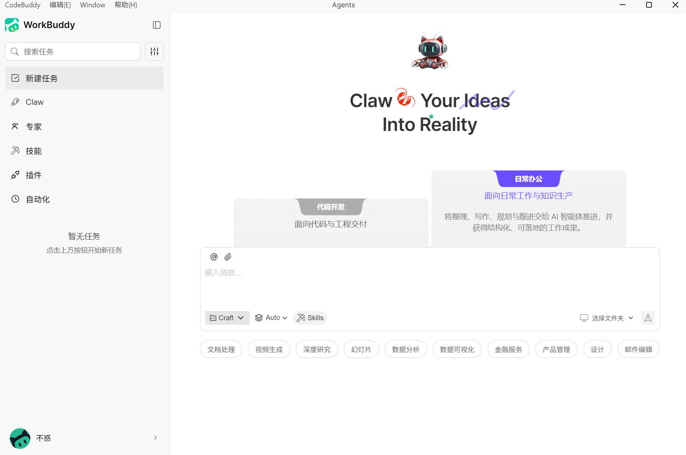
如果你做的事情是"重复、有明确输入输出、规则清楚"的，就适合交给 WorkBuddy。如果是"需要临场判断、涉及重大利益、结果不可控"的，只让它做初稿和资料整理，最终拍板留给你。
安装与基础配置
2.1 下载安装
- 访问官网 workbuddy.cn，选择对应平台（Windows / macOS）下载
- 安装包大小约 150-180MB，安装过程与普通软件一致
- 安装完成后打开，使用微信扫码登录
- 新用户注册即赠送免费 Credits，可以立即体验
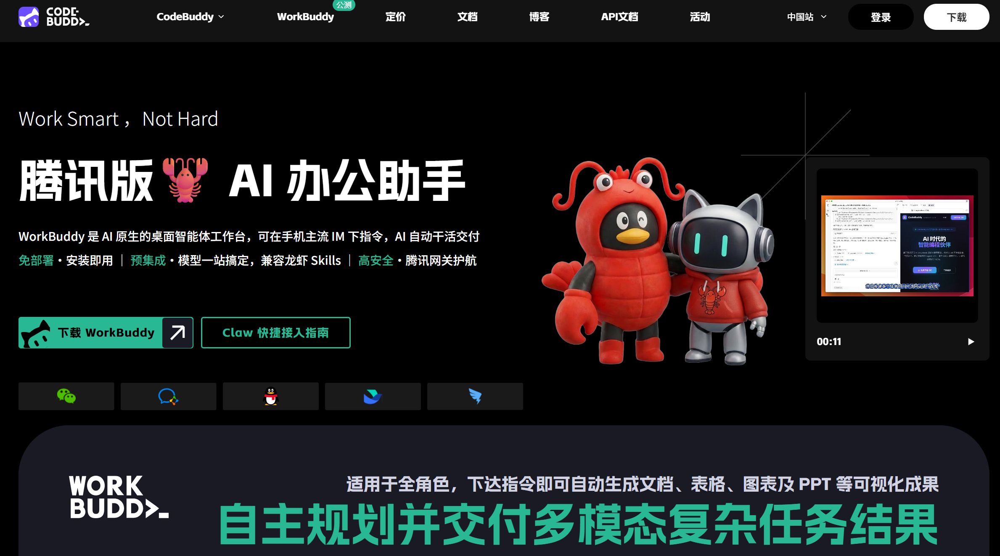
1. 右键"以管理员身份运行"安装程序，避免后续插件权限不足
2. 安装路径保持默认英文路径，中文路径可能导致技能包报错
2.2 必须做的 5 项基础设置
| 序号 | 设置项 | 建议 | 原因 |
|---|---|---|---|
| 1 | 完善个人偏好 | 填写岗位、工作场景、输出偏好、语言风格 | 越精准，AI 输出越贴合你 |
| 2 | 技能自动更新 | 打开 | Skills 市场更新频繁，保证最新版本 |
| 3 | 锁屏远程 | 打开 | 电脑不休眠，手机远程指令才能接收 |
| 4 | 系统授权 | 全部打开 | 否则很多功能用不了 |
| 5 | 对话记忆 | 打开 | WorkBuddy 会越来越了解你的习惯 |
2.3 文件授权
遵循最小权限原则：授权"桌面""文档""下载"等常用文件夹；指定非系统盘（如 D 盘）文件夹作为工作目录；不要授权整个磁盘。
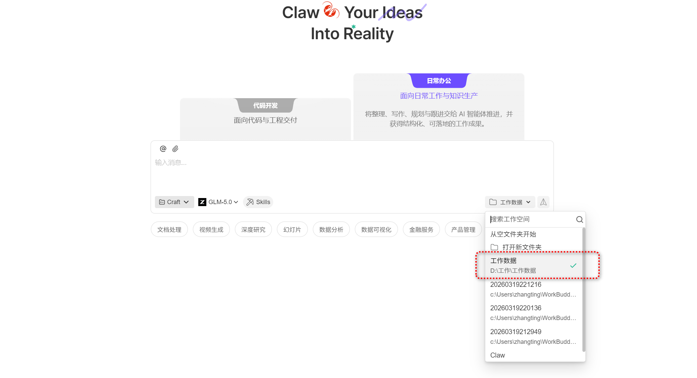
2.4 建立你的工作区
WorkBuddy/ ├── 01-input/ ← 放需要处理的原始文件 ├── 02-reference/ ← 放参考资料、模板、规则 ├── 03-output/ ← 放 WorkBuddy 生成的成品 ├── 04-archive/ ← 放已完成的归档 └── 99-prompts/ ← 放好用的提示词模板
这个结构看起来普通，但它能解决很多麻烦：WorkBuddy 知道去哪找文件、你能在 03-output 快速验收结果、以后复用时直接改文件名就行。
2.5 发起你的第一个任务
帮我把 01-input 里的这份销售数据生成一个分析报告， 包含图表。输出保存到 03-output，不要修改原文件。
任务创建后：新任务出现在左侧列表 → 对话区展示执行过程 → 右侧结果区展示产物/文件/变更/预览 → 你可继续补充或并行开新任务。
1. 只授权任务需要的目录
2. 先处理 3 个文件确认规则正确，再扩大
3. 敏感资料先脱敏或放单独目录
4. 每次指令里明确输入在哪、输出在哪、不要修改原文件
三种工作模式：Ask / Plan / Craft
默认就是 Craft 模式！随手发一条"帮我看看这个"，它就开始干了，积分也就开始消耗了。如果只是想问个问题，记得先切到 Ask 模式。
| 模式 | 功能 | 消耗积分 | 什么时候用 |
|---|---|---|---|
| Ask 问一问 | 纯问答，不执行文件操作 | 不消耗 | 咨询问题、确认思路、核实知识点 |
| Plan 想一想 | 先出执行计划，你确认后才动手 | 确认后才消耗 | 复杂任务、多文件、有风险 |
| Craft 做一做 | Agent 模式，直接开干（默认） | 发消息即消耗 | 目标明确的日常任务 |
3.1 Ask 模式
- 权限：只读，纯问答，不碰文件
- 适用：查资料、问问题、调研咨询
- 典型："Python 里怎么合并两个 DataFrame？""PPT 配色有什么原则？"
3.2 Plan 模式
- 权限：可读取文件，但只输出计划，等你确认
- 适用：复杂任务、高风险操作、多步骤流程
请先不要执行。请根据我的目标，列出执行计划、需要读取的文件、 可能的风险和你准备输出的文件结构。等我确认后再开始。
3.3 Craft 模式
- 权限：全权限，可直接读写文件、执行脚本
- 适用：目标明确的日常任务
- 注意：敏感数据建议提前备份
日常办公 → Craft（效率最高）｜ 复杂任务 → Plan（先审后做）｜ 信息检索 → Ask（不碰文件）
同一个任务中途不要切换模型，会导致上下文断裂。
三大场景模式
除了三种工作模式，WorkBuddy 还提供场景快捷切换，会自动加载对应的提示词模板。
4.1 代码开发
日常开发
代码生成、审查、Bug 修复、重构
网站开发
从需求到代码全流程
Agent 应用
构建 AI 智能体应用
Skill 开发
创建自定义技能包
4.2 日常办公
文档处理
报告、技术文档、会议纪要
数据分析可视化
上传数据自动分析绘图
深度研究
复杂问题调研输出报告
幻灯片
从需求生成演示文稿
4.3 设计创意
网站设计
界面稿、组件设计
App 设计
可交互产品原型
PPT 设计
自动排版配图
品牌设计
Logo、品牌标识
模型选择策略
| 模型 | 擅长领域 | 推荐场景 | 特点 |
|---|---|---|---|
| 混元 | 腾讯原生适配 | Excel、脚本、本地文件操作 | 最稳定，中文强 |
| DeepSeek V4 | 逻辑推理强 | 数据分析、调研、项目拆解 | 综合强、性价比高 |
| GLM | 结构化输出 | 公文、技术方案、标准文档 | 语义理解好 |
| Kimi | 长文创作 | 公众号、创意文案 | 200 万 Token 上下文 |
| MiniMax | 多模态 | 图片理解、跨模态分析 | 创意写作强 |
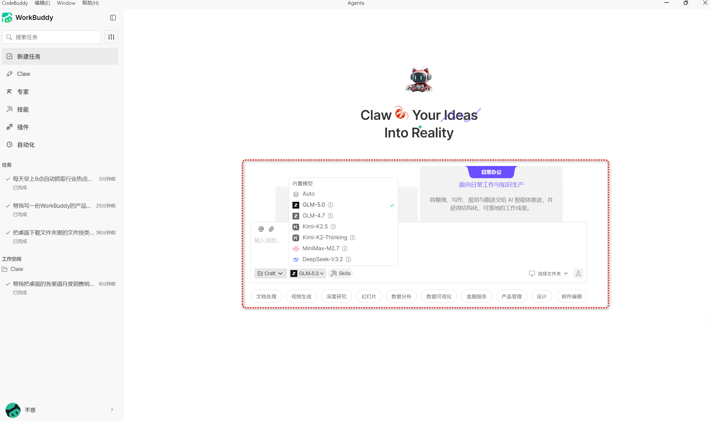
无脑推荐 DeepSeek V4 Pro：价格低、综合能力强（世界知识、Coding、Agent 几乎全覆盖），除了多模态，在国内模型里几乎是水桶级。
5.1 Auto 自动模式
支持 /model auto：每轮请求前系统用轻量路由分析任务复杂度，自动决定模型与推理级别（off/high/max）。
| 推理级别 | 说明 | 消耗 | 适用 |
|---|---|---|---|
off | 推理关闭 | 低 | 简单查询、代码补全 |
high | 推理增强 | 中 | 一般复杂任务 |
max | 推理拉满 | 高 | 复杂架构、深度分析 |
同一任务中途禁止切换模型，会造成上下文断裂。
三大能力支柱：专家 / 技能 / 连接器
WorkBuddy 的战斗力来自三个支柱。理解它们的定位和区别，是进阶的关键。
专家 (Experts)
内置 100+ 专家，专家团多角色并行协作
技能 (Skills)
执行能力扩展，插件商店：推荐/Skillub/套件
连接器 (MCP)
腾讯生态打通：邮箱/会议/文档/企微等扫码即用
| 维度 | 专家 | 技能 | 连接器 |
|---|---|---|---|
| 本质 | 角色人设+规范 | 任务流程封装 | 工具调用协议 |
| 解决什么 | "以什么身份做" | "这类任务怎么做" | "外部系统怎么接入" |
| 安装 | 专家中心选择/自建 | 技能市场一键装 | 扫码或 mcp.json |
| 执行 | 内部执行 | 内部执行 | 外部 Server 执行 |
Tool 负责"一个动作"，Skill 负责"一类任务的做法"，Expert 负责"以什么角色做"，MCP 负责"外部系统怎么接入"。它们可以组合：一个发周报的 Skill 可同时调用腾讯文档 MCP、知识库 MCP 和本地脚本，而执行时指定"项目经理专家"主导。
Skills 技能系统详解
7.1 本质
把 WorkBuddy 比作手机，Skills 就是 App。技能包提供领域知识库、封装标准化流程（SOP）、包含专属工具与指令模板。
| 类型 | 说明 | 来源 |
|---|---|---|
| 官方 Skills | 23 类原生职场技能 | 自带 |
| 社区 Skills | OpenClaw 生态 | ClawHub 13000+ |
| 自定义 Skills | 自己开发 | 开发者创建 |
7.2 三种创建方式
图形化新建
推荐新手，可视化配置触发词与动作
导入 YAML
适合复杂逻辑，标准 YAML 编写导入
指令反向生成
发三次相似指令，系统自动提示生成
7.3 推荐安装的 10 个实用 Skills
| Skill | 用途 | 理由 |
|---|---|---|
| web-scraper | 网页内容抓取 | 替代手动复制 |
| pdf-parser | PDF 解析提取 | 自动提取合同/发票信息 |
| github-manager | GitHub 管理 | Issue 分类、PR 审查 |
| email-digest | 邮件摘要 | 每日邮件自动摘要 |
| data-visualizer | 数据可视化 | 自动生成图表 |
| meeting-notes | 会议纪要 | 录音转文字+结构化 |
| translate-pro | 专业翻译 | 技术文档翻译 |
| code-reviewer | 代码审查 | 检查代码规范 |
| image-optimizer | 图片压缩 | 批量处理素材 |
| schedule-optimizer | 日程优化 | 会议排期建议 |
一条提示词跑通三次 → 存进 99-prompts｜一个流程跑通三次 → 考虑做成自动化｜自动化跑稳了 → 沉淀成自定义 Skill
MCP 连接器生态
8.1 MCP 是什么
MCP（Model Context Protocol）是 AI 与外部工具之间的标准化通信协议。通俗说，MCP 就是 AI 世界的 USB 接口——所有工具统一接口标准，AI 想调用哪个"插上"就能用。
| 类型 | 具体支持 | 能力 |
|---|---|---|
| 邮箱 | QQ/网易邮箱 | 筛选、总结、代写回复 |
| 文档 | 腾讯/金山文档 | 跨库检索、整理 |
| 会议 | 腾讯会议 | 转写、提取 Action Item |
| 知识库 | ima、乐享 | 语义搜索、沉淀 |
| 协作 | 企微/飞书/钉钉 | 消息同步、推送 |
| 金融 | 通达信/自选股 | 行情、持仓 |
| 设计 | Canva/MasterGo | 素材生成、协作 |
8.2 5 分钟接入
- 左侧「连接器」→ 选择服务 → 扫码授权 → 勾选权限
- 卡片旁出现绿色圆点即连接成功
- 直接在对话里输入需求，AI 自动调用工具
8.3 自定义 MCP Server
{
"mcpServers": {
"company-db": {
"command": "npx",
"args": ["-y", "@anthropic/mcp-server-mysql"],
"env": { "MYSQL_HOST": "host", "MYSQL_PORT": "3306", "MYSQL_USER": "ro_user", "MYSQL_DATABASE": "analytics" }
}
}
}
第三方 MCP 配置前检查来源，先隔离测试；配置文件中不要含明文密码，用环境变量。
8.4 Skills 与 MCP 区别
| 维度 | Skills | MCP |
|---|---|---|
| 本质 | AI 能力封装（提示词+流程） | 工具调用协议 |
| 安装 | 技能市场一键装 | mcp.json 配置 |
| 执行 | 内部执行 | 外部 Server 执行 |
两者可组合：一个 Skill 内部可调用已配置的 MCP 工具。
专家与专家团
每次对话都要重新告诉 AI 你的行业、岗位、输出风格？专家系统一次解决。内置 100+ 专家按行业分类，专家团可多专家并行协作。
9.1 专家团示例（内容创作）
- 创意总监 —— 统筹规划，把控方向
- 创意策划师 —— 产出创意方案
- 文案创作专家 —— 文案撰写
- 视频生成专家 —— 视频内容
- 图文创作专家 —— 图文内容
- 视频编辑专家 —— 后期剪辑
- 素材改编专家 —— 跨平台改编
9.2 自建专家
市场文案专家
固定品牌调性、禁用词、排版结构
财务报表专家
锁定数据位数、汇报口径、表格格式
项目复盘专家
固化复盘逻辑，导入资料自动产出
专家团一次调四五个角色，积分比单个专家高好几倍。新手先用小任务试水；"写句话、改错别字"别动整个团，简单活用单个专家更省。
部门全员共用一套专家配置，输出风格统一，减少审稿成本。
自动化定时任务
自动化适合已手动跑通、流程稳定的任务。没跑明白不要设，否则定时制造混乱。
10.1 配置方式
- 左侧「自动化」→ 新建计划 → 设时间/周期/指令 → 选工作空间 → 保存
10.2 实用模板
每日资讯简报
每个工作日早上 8 点生成 AI 行业简报， 包含 5 条新闻、3 条投融资动态、1 段个人待办提醒，发送到我的 QQ 邮箱。
每周周报草稿
每周五 17:00 读取 WorkBuddy/01-input/weekly 目录， 基于任务清单和会议纪要生成周报草稿，保存到 03-output/weekly。
10.3 调度类型
| 类型 | 说明 | 示例 |
|---|---|---|
| Recurring | 按 RRULE 重复 | 每天 8:00、每周一 9:00、每月 1 号 |
| Once | 指定时间一次 | 明天下午 3 点提醒开会 |
10.4 有效期
可设 validFrom / validUntil 控制活跃时间窗口，如"3 月 18 日到 3 月 22 日每天运行"。
Claw 手机遥控
绑定企微/微信/钉钉/飞书后，手机发文字或语音指令，电脑 7×24 自动执行。
通勤布置
地铁发指令，到公司看成品
出差处理
让 AI 整理数据，结果回传
周末生成
周日发指令，周一直接用
11.1 两种模式
| 模式 | 说明 | 优点 | 限制 |
|---|---|---|---|
| 云端工作 | 云端沙箱运行 | 不需电脑开 | 不能访问本地文件 |
| 连接电脑 | 远程操控本地 | 可操作本地文件 | 电脑需开机 |
远程不要做删除、覆盖、批量发送等高风险操作！远程无法实时看结果，出错难挽回。
基础设置打开「锁屏远程」，电脑不休眠才能接收指令。
Teams 团队空间
个人用法只发挥三成价值，Teams 才是企业级终极形态。
| 能力 | 说明 |
|---|---|
| 共享专家库 | 部门统一配置标准化专家，全员共用 |
| 项目共用记忆 | 团队维护 MEMORY 日志，新人 10 分钟吃透项目 |
| 全链路流转 | 需求→文档→设计→开发，同一空间闭环 |
| 权限分级 | 管理员控制文件访问和操作权限 |
| 多 Agent 协作 | 同一任务可开多个 Agent 并行 |
Teams 沙箱权限默认保守，成员无法操作本地文件时，需在团队后台手动放开文件调用权限。
Excel 数据清洗实战
真实数据从来不会"开箱即用"。WorkBuddy 帮你跨过"不会函数"的门槛——你照样可以拿 Excel 精修成品，但最累的第一步脏活交给它。
13.1 一句话完成清洗+可视化
读取桌面上的"销售数据.xlsx"，帮我做以下处理： 1. 删除完全重复的行； 2. 把"销售额"列的空值按 0 填充； 3. 按"月份"汇总每月销售额，生成一张汇总表； 4. 根据汇总结果画一张月度销售额柱状图； 5. 把结果保存为新文件"销售数据_月度汇总.xlsx"，不要覆盖原文件。
写清文件名和路径（避免找错文件）｜每步用序号列清楚（任务被准确拆解）｜明确输出文件名+"不覆盖原文件"（保护原始数据，非常重要）
实测：约 5 万行数据，1 分钟左右出结果，不用写公式、不用敲 Python。右侧结果区能看到它读文件、算汇总、画图的全过程。
13.2 可复用的诊断→清洗模板
读取桌面"[文件名].xlsx"，按以下步骤处理： 诊断：报告总行数、列名、每列类型、空值和异常值数量 清洗： - 删除完全重复的行 - 删除 [某列] 为空的行 - 把 [日期列] 统一为 YYYY-MM-DD 格式 汇总：按 [维度列] 汇总 [数值列] 生成柱状图和折线图 输出： - 清洗后数据另存为"[文件名]_已清洗.xlsx" - 汇总表另存为"[文件名]_月度汇总.xlsx" - 图表保存为 PNG 所有文件放到桌面
13.3 踩坑清单
| 坑 | 症状 | 解法 |
|---|---|---|
| 指令太模糊 | "帮我处理下这个表"→ AI 自由发挥 | 写清"做什么+对什么+要什么+存哪" |
| 覆盖原始数据 | 清洗完误删该留的行，原件没了 | 永远另存新文件 |
| 中文图表乱码 | 自己配 matplotlib 字体繁琐 | WorkBuddy 默认配好，直接用 |
| 大文件卡顿 | 10 万行首次读取 10-20 秒 | 先读前 1000 行试逻辑，再跑全量 |
| 合并单元格 | AI 读不出完整数据 | 先"取消所有合并单元格再处理" |
| 公式变数字 | 带公式列被读成计算值 | 告诉 AI"保留公式列原始公式" |
常规统计（求和、平均、占比、排序）准得很。但特别刁钻的逻辑最好把条件拆细了说。AI 标出的异常值建议都过一眼——原始数据录入错误，它也可能被带偏。
从 5 万行脏数据到销售分析报告
14.1 第一轮：分析数据（5 分钟）
读取桌面"Q1销售数据.xlsx"里的三个 sheet（京东自营、天猫、拼多多）： - 分别计算各平台 Q1 总销售额、总订单数、月度趋势 - 算各平台环比增长率 - 找出销量 Top5 产品 - 生成分析结果表保存为"Q1分析结果.xlsx"
14.2 第二轮：生成报告（5 分钟）
基于"Q1分析结果.xlsx"和原始数据，生成一份 Q1 电商销售分析报告： Word 格式 结构：封面 → 摘要(200字) → 整体概览(趋势图) → 渠道分析(对比柱状图) → 类目分析(饼图) → 问题与建议(3-5条) → 附录数据表 语言专业但不晦涩，结论有数据支撑，保存为"Q1销售分析报告.docx"
14.3 第三轮：生成 PPT（5 分钟）
基于分析报告，生成 10 页商务汇报 PPT： 封面页(标题+日期+公司名) → 目录页 → 数据概览页(趋势图) → 渠道对比页(柱状图) → 类目分析页(饼图) → 问题与风险页 → 下季度建议页 → 结尾页 配色蓝白为主，字体微软雅黑
数据分析的本质不是写代码，是描述清楚你要什么结果——诊断→清洗→汇总→输出，四步走完，AI 完成全部 pandas/matplotlib 技术工作。中间产物互为上下文，这是它比"单点工具"强的地方。
周报自动化：3 小时压缩到 10 分钟
15.1 实操一：5 万行数据自动清洗（见第十三章）
15.2 实操二：从数据到周报
根据"销售数据_月度汇总.xlsx"的数据，帮我写一份本周销售情况周报，要求： 1. 结构分"整体概况、亮点、问题、下周计划"四部分； 2. 关键数据用具体数字支撑，不要空话； 3. 语气正式，适合发给部门领导； 4. 字数 800 字左右，输出为 Word 文档。
生成后一般只需微调两句话。哪段不满意直接在对话区追问："第二部分再具体一点，补上环比增长数据"，它会基于上下文继续改，不用从头来。
15.3 实操三：周报一键转 PPT
根据这份周报内容，生成一份 10 页商务风格的 PPT 大纲： 划分封面、目录、核心内容、总结四个板块， 每页标注核心要点，风格简洁专业，适合上会汇报。
15.4 进阶：定时任务
每周一早上 9 点提醒我处理上周销售数据，并自动跑一遍数据清洗流程。
周报生成："基于 [材料类型]，生成 [部门] 周报，包含本周完成、存在问题、下周计划，语言风格 [正式/简洁]，字数 [800-1000]"
数据处理："对 [文件] 进行 [清洗/汇总/可视化]，按 [维度] 分组，生成 [图表]，保留 [小数] 位，输出 [Excel/PPT]"
会议纪要生成
16.1 文本会议纪要
请读取 01-input 里的会议记录，整理为会议纪要。 输出包括：背景、主要结论、行动项（任务、负责人、截止时间）、待确认问题。 不要修改原文件，保存到 03-output。
16.2 录音转文字
配合 Local Whisper 技能：先把会议录音、访谈、课程音频转成文字，再让 WorkBuddy 整理成结构化纪要。
16.3 标准纪要结构
| 模块 | 内容 |
|---|---|
| 背景 | 会议时间、参与人、议题 |
| 主要结论 | 达成的决策点 |
| 行动项 | 任务 / 负责人 / 截止时间（表格） |
| 待确认 | 未决问题和风险 |
文档与 PDF 处理
17.1 支持的文件类型
PDF、Word、TXT、Markdown、RTF、Excel、CSV、TSV、PPT、常见图片（JPG/PNG/GIF/BMP）、ZIP/RAR、各类代码文件。
17.2 多文档合并对比
请读取 01-input 中的 3 份 PDF，提取核心观点、关键数据、风险提示， 合并成一份对比表。输出到 03-output，不要修改原文件。
17.3 隐私授权边界
- 所有文件处理默认本地完成，原始数据不上传云端
- 服务端仅处理数据片段，用后即弃，不保存不训练
- 只能访问你主动授权的文件夹
- 系统敏感目录自动拦截，高危操作需二次确认
商务汇报 PPT
18.1 标准流程
Step 1 数据清洗与口径统一
把各部门表格丢给 WorkBuddy，让它检查单位、标红未达标指标
Step 2 生成 PPT 大纲
固定用"封面/目录/核心内容/总结"四板块，每页标注核心要点
Step 3 逐页生成内容与可视化
习惯让它直接生成 HTML 格式，复制进 PPT 排版更快
Step 4 人工校验关键数字
PPM、OTD、金额等客户会追问的指标，必须和系统源头对得上
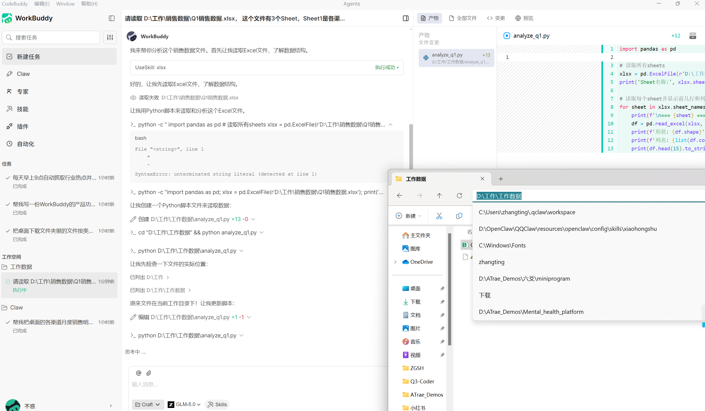
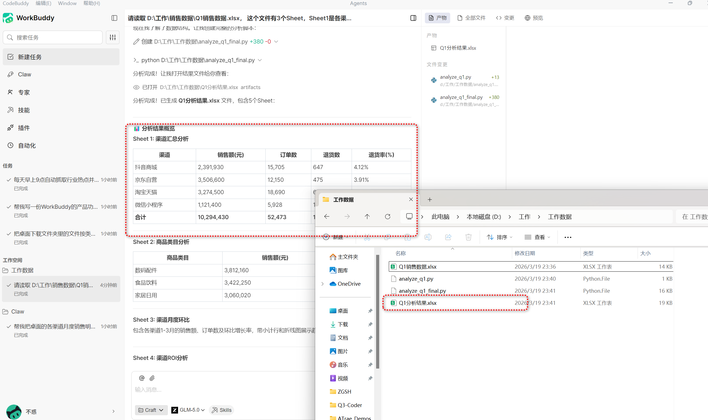
18.2 数据清洗 Prompt（汽车零部件商务回顾示例）
你是一名汽车零部件项目的商务回顾分析师，有 10 年质量、交付、项目、成本数据整合经验。 我将上传一份年度商务回顾素材表，包含质量、交付、项目、成本四个模块的数据。 请完成以下任务： 1. 检查每一列数据的单位是否统一，标记单位不一致或口径可疑的单元格； 2. 对同一指标出现多个数值的情况，列出所有版本并指出最可能正确的口径； 3. 计算全年关键指标：质量 PPM、交付 OTD、项目节点达成率、年降达成率、VA/VE 收益总额； 4. 标红全年未达目标的指标，并给出 3 句以内的解释建议； 5. 输出一份整理后的 Markdown 表格，表头：指标、年度目标、实际值、达成状态、备注。 注意：只输出整理结果，不要展开写长段分析。
WorkBuddy 再快，数字也必须你亲自核对一遍。特别是客户会追问的指标，必须和系统源头对得上。
产品路演 PPT：3 天 → 半天
路演和技术交流最大的区别：技术交流是"我回答你的问题"，路演是"我要让你记住我"。每一页都要推动客户往"我愿意继续谈"走。
19.1 先写清楚路演定位（15 分钟）
产品：H4012 隐藏式门把手电动执行器 路演场合：某 OEM 供应商大会技术路演 时长：15 分钟 听众：采购、项目经理、电子电气工程师、技术总监 客户痛点： - 隐藏式门把手低温失效投诉多，影响品牌口碑； - 现有执行器响应慢、噪声大、寿命余量不足； - 供应商方案同质化，OEM 想找技术差异化二供。 我们的核心差异： - 低温 -30°C 弹出力 42N，高于规范 35N，余量 20%； - 10 万次循环寿命验证通过，失效 0 件； - 平均响应时间 180ms，优于行业主流 220ms。 目标：让客户记住"H4012 是低温可靠性和响应速度都领先的方案"，邀约下一轮 DV 样件评审。
19.2 Prompt A：生成路演大纲
你是一名有 12 年经验的汽车零部件研发工程师，要做 OEM 供应商大会产品路演 PPT。
听众包括采购、项目经理、电子电气工程师和技术总监。
请根据以下信息生成完整的路演 PPT 大纲：
【路演定位】 {{粘贴上面内容}}
【输出要求】
1. 总页数 10-12 页，时长 15 分钟；
2. 结构必须包含：封面、市场痛点、产品定位、核心优势、技术验证、客户价值、合作方式、下一步行动、封底；
3. 每页给出：标题、核心信息、建议展示形式、讲解时长；
4. 标注每一页主要面向哪种听众角色；
5. 输出为 Markdown 表格格式。
19.3 单页内容：四段式结构
你是一名汽车零部件研发工程师，擅长把技术方案翻译成客户能听懂的价值语言。
请根据以下信息生成一页路演 PPT 的详细内容：
【本页标题】 {{标题}} 【本页核心信息】 {{核心信息}} 【输入数据】 {{数据}}
【输出要求】
1. 用"痛点/机会 → 方案 → 价值 → 证据"四段式结构；
2. 每页只讲 1-2 个核心观点，不要堆参数；
3. 首次出现缩写需加中文注释；
4. 输出 16:9 PPT，字数 60-100 字；
5. 对比用表格，数据用一句话结论+数字。
19.4 生成 HTML 路演页面
请将以下内容转换为一段 16:9(1440×810px) 的 HTML 路演 PPT 页面。风格专业、有冲击力。
【本页标题】 {{标题}} 【本页内容】 {{内容}}
【输出要求】
1. 只输出完整 HTML，含 <style> 和 <body>；
2. 页面尺寸固定 1440×810px；
3. 排版含标题区、内容区、页脚页码，重点数据用醒目强调色；
4. 不出现占位符，所有文字真实可用；
5. 用内联/内部 CSS，不引用外部文件。
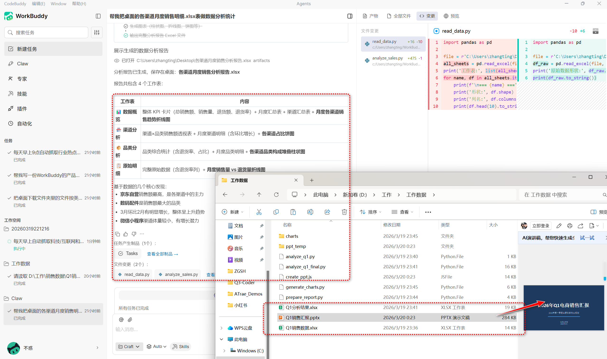
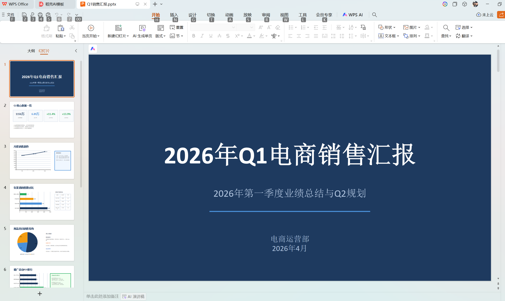
□ 封面 3 秒内讲清"我们是谁、解决什么"？□ 每页都在回答客户一个具体顾虑？□ 核心数据标注测试条件和来源？□ 最后一页明确告诉客户下一步？□ 准备 1-2 页备用页应对追问？□ 从接任务到交稿控制在半天？
8D 质量汇报 PPT：2 天 → 4 小时
20.1 生成 8D 大纲
你是一位有 15 年经验的汽车零部件质量工程师，擅长编写客户 8D 质量报告。 请根据客户投诉信息，生成一份 8D 报告大纲： D0 症状描述 / D1 团队 / D2 问题描述(5W2H) / D3 临时遏制措施 D4 根本原因分析(鱼骨图+5Why) / D5 永久纠正措施 / D6 实施与验证 D7 预防再发 / D8 团队表彰 每步给出：目标、关键内容、所需数据、负责人。
20.2 生成 HTML 版 PPT
你是一位专业的汽车零部件质量报告 PPT 设计师。请基于以下 8D 大纲，生成可直接在浏览器打开的 HTML 格式 PPT。 【8D 大纲】 (粘贴大纲) 【设计要求】 1. 页面尺寸 1440×810px (16:9)，总页数 10-15 页； 2. 结构：封面(项目/编号/日期/汇报人) → 目录(8D流程图) → D0~D8 → 结束页； 3. 配色：白底深蓝字，关键数据红色高亮，通过/OK 用绿色； 4. 标题微软雅黑 Bold 32px，正文 18px； 5. 每页底部加页码和"Confidential"水印； 6. 真实填写内容，不用占位符；输出完整 HTML 代码。
20.3 微调重点检查
- D2 的 5W2H：是否每个要素都有具体数据？"很多""大概"换成具体数字
- D4 根因链条：5Why 每层逻辑是否成立？有没有跳步？
- D6 验证数据：样本量够不够？测试条件是否符合实际使用场景？
- 数据一致性：同一组数据在不同页面数值是否一致？
用浏览器把 HTML 打印为 PDF，或截图插入 PowerPoint 模板。保存好原始 HTML，客户要求修改时直接复用。
年度商务回顾 PPT
21.1 Step 1：把素材归到四个篮子
质量数据
全年 PPM 趋势、客诉清单、8D 关闭、重大事件
交付数据
月度 OTD、交付异常、拉动响应时间
项目数据
节点达成率、量产 SOP、变更次数
经营数据
年降达成、VA/VE 收益、产能利用率
用一个固定模板让各部门填，不填完不开始。模板很简单：四列——指标名称、目标值、实际值、备注。统一口径比什么都重要。
21.2 固定六模块
年度商务回顾 PPT 固定用这 6 个模块，让 WorkBuddy 根据素材自动建议每页放什么指标、用什么图表、讲什么结论。
21.3 关键提醒
人工校验关键数字。WorkBuddy 再快，数字必须亲自核对。特别是 PPM、OTD、金额这些客户会追问的指标，必须和系统源头对得上。
知识库驱动 PPT
22.1 接入对话
在对话框输入 @资料库名称，把 ima 知识库接入当前任务。引用语法：输入 @资料库名称 即可调用；仅作用于本次任务上下文；原生集成无需中间层。
22.2 一句话生成
基于资料库内容生成一份关于某主题的演示文稿， 包含封面、目录、要点页与总结页。
22.3 WorkBuddy 的规划
- 检索先行：RAG 取回与主题相关的资料片段
- 结构规划：由 Agent 决定页数与每页要点分布
- 模型选型：Auto 模式按任务自动选模型，可手动覆盖（内置 13 个模型）
22.4 产出与调整
生成初稿后，用追加指令调整页面顺序、补充要点或精简篇幅。执行中可点"中止"停止，再重新描述需求。本地文件操作也让结果可保存到本机授权文件夹。
多模态协作：文档、表格、图片可在同一任务里被统筹。技能市场 pptx 技能在生成与编辑环节提供辅助。
网页开发实战：一句话生成看板
23.1 开局：一句话生成骨架
帮我做一个房产数据监控看板，要求： 1. 顶部 KPI 卡片（在售楼盘数、本月均价、成交量、库存去化周期） 2. 中间左侧近 6 个月价格走势折线图 3. 中间右侧各区域楼盘数量饼图 4. 底部竞品项目对比柱状图 5. 配色：深蓝主调、白底、浅灰卡片 6. 数据先用模拟数据填充
WorkBuddy 直接输出完整 HTML 文件——布局、配色、卡片样式全部到位。它不是给你"大概思路"，而是直接给可以运行的成品。
23.2 迭代优化（对话式开发）
- 第一轮：让图表加动画、悬停提示框（Chart.js 的 animation + tooltips）
- 第二轮：KPI 卡片加环比变化（涨红↓跌绿↑）
- 第三轮：响应式适配（手机上 KPI 两列、图表堆叠）
三轮迭代不到 15 分钟。自己手写光调 CSS 布局就够折腾一上午。
23.3 接入真实数据
让 WorkBuddy 写 Python 爬虫脚本抓取数据 → 输出 JSON → 前端 fetch 读取。甚至帮设自动化提醒"每天上午 9 点执行爬虫"。还可加"导出 Excel"按钮（SheetJS）、暗色模式。
WorkBuddy 负责写所有代码，你负责提需求和验收。从"能跑"到"好用"靠几轮对话式迭代。
全栈开发：需求到上线
24.1 数据库设计篇
我需要设计 QA 测试管理模块的数据库表结构，包含： 1. 测试问题管理(qa_test_issue)：标题、描述、优先级、状态、负责人、创建时间 2. 测试任务管理(qa_test_task)：名称、关联问题、执行人、起止时间、状态 3. 测试人员管理(qa_member)：人员信息、角色、所属项目 4. 日报记录(daily_report)：日期、人员、内容、工时 请设计完整表结构：所有字段及数据类型、主键外键、索引、表引擎及字符集、符合 MySQL 最佳实践，输出完整 SQL。
24.2 核心收益
| 指标 | 传统 | 用 WorkBuddy |
|---|---|---|
| 数据库设计 | 约 4 小时，易遗漏 | 几分钟，含约束与索引 |
| 开发效率 | 基准 | 提升约 60% |
| 代码质量 | 基准 | 显著提升 |
| 踩坑率 | 基准 | 降低约 70% |
前端 Vue.js 3 + Element Plus；后端 Java Spring Boot + MyBatis；数据库 MySQL。WorkBuddy 全流程辅助：需求分析→库设计→前后端→测试。
30 分钟搭数据看板
| 需求 | 技术方案 |
|---|---|
| 数据自动刷新 | 打开即看最新数据 |
| 多维度可视化 | 折线(走势)/柱状(对比)/饼(分布) |
| 响应式布局 | 电脑手机都能看 |
| 前端 | 纯 HTML + CSS + JS |
| 图表 | Chart.js（开源轻量） |
| 数据源 | Python 脚本爬取 + 静态 JSON |
| 部署 | 单文件，双击打开 |
WorkBuddy 负责写所有代码，你负责提需求和验收。数据导出 + 暗色模式可作为"锦上添花"的后续轮次追加。
从 0 到 1 搭校园资源平台
26.1 技术选型（全开源、零月租）
- 前端：Vue 3 + Vite + Element Plus
- 后端：Node.js + Express + SQLite
- 部署：学校 NAS 上的 Docker，frp 内网穿透
- 预览：pdf.js 渲染 PDF，Office 经 LibreOffice 转 PDF
26.2 六个关键点
- 数据库：六张表（roles/users/categories/resources/albums/reviews）
- 登录：JWT 鉴权，中间件必须在路由前注册
- 上传：中文文件名用随机名存，原文件名单独存字段
- 权限：RBAC 四级（superadmin/教师/学生/访客）
- 部署：Docker 一把梭，前后端打一个镜像
- 预览：Office 转 PDF 再 pdf.js 渲染
26.3 踩过的坑
- SQLite 并发写锁 → 开 WAL 模式 + 写入队列
- frp 断流 → 加健康检查和自动重连
- 权限越权 → reviews 表校验 owner
真实数据：注册 161 人、资源 240 个、下载 1554 次、覆盖 16 学科。心得：先想清楚再写代码——需求梳理比代码更值钱；权限和预览是校园平台命门。
多智能体团队 SOP：1 小时完成 MVP
核心方法论：代码 = SOP（团队）。把软件开发流程标准化，用不同专长的 AI 角色执行。
27.1 团队成员
| 角色 | 名字 | 职责 |
|---|---|---|
| 产品经理 | 许清楚 | 创建 PRD 需求文档 |
| 架构师 | 高见远 | 架构设计 + 任务分解 |
| 工程师 | 寇豆码 | 批量编写代码 |
| QA 工程师 | 严过关 | 测试用例 + 验证 |
所有信息必须经主理人（你）中转，不允许成员互相直连。确保信息可控、可追溯。
27.2 工作流路由
- 快速模式：单页面应用、≤10 源文件
- BugFix：修复明确 Bug
- 标准 SOP：多页面、中大型需求（如播客汇 PodHub：多页面+播放器+会员体系）
公众号文章全自动写作
28.1 固定账号人设（一次设置长期复用）
我是做【xx领域】的自媒体账号，受众是【xx人群】，年龄【xx岁】， 核心需求是【学习干货/避坑指南/情绪共鸣/省钱攻略】。 请你后续所有输出遵循：语言通俗接地气、拒绝书面套话、段落简短不堆砌、 逻辑清晰有干货、自带生活化口语感、适配【公众号/小红书/头条】平台， 输出原创、无 AI 生硬感。
28.2 六步标准化流程
Step 1 选题+资料（5分钟）
说主题 → 调用"内容创作"专家+"网页搜索" → 自动搜集整理成结构化笔记
Step 2 大纲（5分钟）
基于资料生成 3 个大纲方案 → 你选一个或提修改
Step 3 初稿（10分钟）
根据大纲撰写 → 你补个人经验、调语气
Step 4 排版（5分钟）
调用"公众号排版"技能 → 自动生成手机框 HTML
Step 5 检查发布（5分钟）
你检查 → 复制 HTML 到后台 → 发布
Step 6 自动推送（0分钟）
配置自动化：每周五 17:00 自动推送提醒发布
28.3 批量选题
围绕【我的领域：xx】，结合当下自媒体热门趋势，帮我生成 15 个高流量选题， 分为干货技巧、避坑指南、情绪感悟 3 类。每个选题附 1 句核心亮点， 标题适配【目标平台】，优先低竞争、高搜索、用户刚需角度，拒绝烂大街选题。
绝不让 AI 直接写正文，必须先过大纲。这一步多花 5 分钟，避免后面花 1 小时改稿。
专家团写作法：比 99% 的人更会用
专家团交出来的东西，选题、大纲、案例、配图方向都齐了。要让读者一眼觉得"这说的就是我"，还差你补上的三笔：
- (1) 换口吻：它写"赋能"你改"帮上忙"，读者认的是你的说话方式
- (2) 加经历：塞一两个你的真事，这部分只有你能写
- (3) 顺口气：大声读一遍，哪句拗口改哪句
1. 专家团积分比单个专家高好几倍，新手先用小任务试水。
2. 任务描述越具体结果越好——"帮我写个推文"得大路货，"2000字AI工具盘点，读者30+职场女性，轻松有梗，带3个案例"才可用。
3. 写句话、改错别字别动整个团。
运营人竞品调研：30 分钟出报告
30.1 正确用法
| 这样用效果好 | 这样会翻车 |
|---|---|
| 先说身份再说需求（"我是做XX运营的"好 10 倍） | 数据不核实（AI 偶尔编数据，关键数字自查） |
| 大任务拆步骤 | 一次要太多（一轮塞 5 个需求质量下降） |
| 给约束比给指令重要（"不要用专业术语"） | 忘了说行业（输出全球通用废话） |
| 要文件不要聊天（"保存为 Markdown"） | 不给格式（默认大段文字难整理） |
30.2 一键生成一周文案
请根据上面生成的 7 天选题日历，逐一展开每篇内容： - 公众号文章每篇 1200-1500 字 - 小红书笔记每篇 800-1000 字 所有内容保存为一个 Markdown 文件，按日期排列，每篇用分割线隔开。
AI 生成的文案一定要自己审核，尤其涉及婴幼儿食品安全等表述，确保合规。WorkBuddy 是帮你提效的，不是替你决策。
深度研究报告
31.1 适用场景
- 行业趋势调研（如"2024 AI 行业趋势"）
- 技术方案对比（如"Redis vs Memcached vs DragonflyDB"）
- 竞品功能横评
- 政策/法规解读
31.2 研究流程
- 明确问题：把研究目标拆成可回答的子问题
- 资料收集：用 Web Search + 连接器（如数据库/文档）获取一手资料
- 交叉验证：多个来源比对，标注来源链接和检索时间
- 结构化输出：摘要 → 分主题分析 → 结论与建议 → 附录
凡涉及"最新、最近、今年"的内容，先使用 Web Search，附来源链接和检索时间。结论要有数据支撑，不要空话。
去 AI 痕迹：让稿子像人写的
32.1 给 AI 立规矩
每次写东西前先抛这条指令，后续输出都按这个基调： 语言口语化，像跟同事聊天，不用"您"用"你"； 不要出现"首先、其次、综上所述"这类词； 每段不超过 3 行； 所有数据和案例必须来自我提供的资料，不要自行编造； 结尾加一个行动建议板块。
32.2 三步去痕迹
- 换口吻：书面词改口语（"赋能"→"帮上忙"）
- 加经历：塞入你的真实故事，越具体越像自己人
- 顺口气：大声读一遍，拗口的改掉
所有数据案例必须来自你提供的资料，不要自行编造；先出大纲再写正文，避免逻辑混乱、重点模糊。
任务指令的艺术
33.1 别用聊天句式，用任务句式
聊天句式
"帮我看看这个数据"
"整理一下"
"弄个报告"
任务句式
"读取 01-input/sales.xlsx，按月份统计销售额，生成带图表的分析报告，保存到 03-output，不要修改原文件"
33.2 完整任务字段
| 字段 | 说明 | 示例 |
|---|---|---|
| 角色 | 以什么身份 | "以数据分析师身份" |
| 目标 | 最终交付 | "生成销售分析报告" |
| 输入 | 读取哪些文件 | "读取 01-input/sales.xlsx" |
| 过程 | 是否先计划 | "先输出大纲，确认后生成" |
| 约束 | 格式/风格/禁区 | "不超过10页，含图表，不改原文件" |
| 验收 | 什么算完成 | "输出到 03-output/sales-report.docx" |
33.3 八个核心习惯
- 别用聊天句式，用任务句式
- 复杂任务先 Plan
- 给完整任务字段
- 批量操作前输出预览表
- 先小样后批量（先 3 个，再 300 个）
- 涉及最新信息先搜索
- 输出要能验收
- 跑通三次就沉淀
安全与风险分级
34.1 任务风险三级
| 等级 | 范围 | 策略 |
|---|---|---|
| L1 安全 | 只读、摘要、改写、草稿、数据分析 | 新手直接试 |
| L2 审慎 | 建新文件、整理目录、生成表格、自发邮箱 | 执行后检查 |
| L3 警惕 | 改原文件、批量移动/删除、对外发送、长期定时 | 先预览、再确认、留备份 |
34.2 安全五原则
- 最小权限：只开放必要目录，不授权整个磁盘
- 敏感备份：Craft 模式操作前备份重要文件
- 第三方 MCP：配置前查来源，先隔离测试
- Skill 审核：平台三线安全审核（内容合规+漏洞扫描+AI 安全评估）
- 企业审计：操作留痕，高危操作实时干预
法律结论、医疗建议、投资决策、财务重大判断——只让 WorkBuddy 做资料整理、选项生成、风险清单和初稿，最终判断一定是人来做。
避坑指南
坑1：默认 Craft 直接消耗
随手发一条就开始消耗积分。聊两句先切 Ask
坑2：中途切换模型
导致上下文断裂，之前对话可能丢失
坑3：指令模糊
"整理一下"这种模糊指令结果不会好
坑4：直接批量
不先小样验证就处理 300 个文件，出错全完
坑5：不装技能
没有 Skills 的 WorkBuddy 只能做基本操作
坑6：远程高危
远程删除、覆盖、批量发送——出错无法挽回
简单文字整理用 Ask 模式，同样周报只消耗 35 积分 vs Craft 的 200 积分，省 80%。忘记每日签到每月少 2700 积分——设开机提醒。
效率实测数据
| 任务场景 | 传统 | WorkBuddy | 提升 |
|---|---|---|---|
| 处理 30 封邮件 | 45 分钟 | 10 分钟 | 78% |
| 生成会议纪要 | 20 分钟 | 2 分钟 | 90% |
| 跨文档汇总 | 30 分钟 | 1 条指令 | 95%+ |
| 数据库查询报表 | 排期 1 天 | 即时查询 | ≈100% |
| 批量 50 份 PDF | 1.5 小时 | 3 分 20 秒 | 96% |
| 数据清洗+绘图 | 28 分钟 | 1 分钟 | 96.4% |
| 周报撰写 | 42 分钟 | 6 分钟 | 85.7% |
综合统计：打通全工具后，每月可节省约 30 小时低效工作，相当于每天多 1.5 小时高质量时间。
定价与积分
| 版本 | 价格 | 积分 |
|---|---|---|
| 免费版 | 0 元 | 每月 500 |
| 个人专业版 | 58 元/月 或 696 元/年 | 每月 2000 |
| 加量包 | 114 元 | 1000 |
| 企业版 | 按团队规模 | 定制 |
一个月成长路线
第 1 周：跑通基础
安装配置 → 建工作区 → 6 个基础任务 → 装 5 个基础技能
第 2 周：深入技能与连接器
装更多技能 → 接第一个 MCP → 试不同模型 → 练任务句式
第 3 周：知识库与自动化
连 ima 知识库 → 存资料消化 → 设第一个自动化 → 试 Claw 遥控
第 4 周：进阶与沉淀
建自定义专家 → 建自定义 Skill → 试专家团 → 优化流程 → 考虑 Teams
入门关键不在于装了多少技能，而在于——挑一个你每周都做、每次都烦、输入输出又清楚的任务，从它开始。跑通，存成模板，固定目录，然后自动化。
可复用提示词库
38.1 通用任务字段模板
角色：以什么身份处理 目标：最终交付什么 输入：读取哪些文件/链接/资料 过程：是否先计划，是否分阶段 约束：字数、格式、风格、禁区 验收：什么算完成，如何自检 输出：保存位置、文件名、是否附来源
38.2 场景模板速查
| 场景 | 模板要点 |
|---|---|
| 数据分析 | "对[文件]进行[清洗/汇总/可视化]，按[维度]分组，生成[图表]，保留[小数]位，输出[Excel/PPT]" |
| 周报 | "基于[材料]，生成[部门]周报，含完成/问题/计划，风格[正式/简洁]，[800-1000]字" |
| PPT 大纲 | "根据[内容]生成[页数]页[风格]PPT 大纲，划分[板块]，每页标核心要点" |
| 竞品调研 | "拆解：找竞品→对比维度→深挖→出报告，给约束比给指令重要" |
| 代码 | "设计[模块]表结构，含字段类型/主外键/索引/引擎，输出完整 SQL" |
打工人效率案例
一位运营同学用 WorkBuddy 把"每周 3 小时的 Excel+周报"压缩到 10 分钟：数据清洗→周报→PPT 三步全由 AI 串起来，中间产物互为上下文。最大的感受是：它不替代人，而是把人从机械重复里解放出来，让我们有更多时间思考创意、跟进重点客户。
| 工作事项 | 之前 | 现在 | 提升 |
|---|---|---|---|
| 周报撰写 | 42 分钟 | 6 分钟 | 85.7% |
| 数据清洗+绘图 | 28 分钟 | 1 分钟 | 96.4% |
| 月度累计 | 约 320 分钟 | 约 35 分钟 | 89.1% |
坚持签到+社区发教程文可赚积分，形成"提效→分享→赚积分→更多提效"的正循环。
教师 / 校园案例
一位中学老师用 WorkBuddy 从 0 到 1 搭起校园教学资源平台（见第二十六章），零成本部署在学校 NAS 上，注册 161 人、资源 240 个、下载 1554 次。心得：先想清楚再写代码——需求梳理比代码更值钱；权限和预览是校园平台命门。
对教师的通用建议：课件/试题/视频散落各处时，让 WorkBuddy 帮忙做资源分类标签、生成试题解析、写公开课逐字稿、做学生成绩分析可视化。
运营 / 自媒体案例
运营同学用 WorkBuddy 做竞品调研（30 分钟出报告）、批量选题（15 个选题 5 分钟）、一周文案（公众号+小红书一键展开）、合规自查。关键认知：先说身份再说需求好 10 倍；大任务拆步骤；给约束比给指令重要；要文件不要聊天。
涉及婴幼儿食品安全等表述必须自己审核，确保合规。AI 是提效工具，不是决策替代。
开发者 / 分析师案例
- 全栈开发者：独立开发项目管理系统（Vue3+Spring Boot），效率提升 60%，踩坑率降 70%（见第二十四章）
- 数据分析师：5 万行脏数据 4 句指令变报告，15 分钟从 Excel 到 Word 到 PPT（见第十四章）
- 房产分析师：30 分钟搭数据看板，零代码基础（见第二十五章）
- 汽车零部件老兵：路演 PPT 从 3 天→半天，8D 汇报从 2 天→4 小时（见第十九、二十章）
竞品对比
| 维度 | 网页 AI（Kimi/文心） | OpenClaw（开源） | WorkBuddy |
|---|---|---|---|
| 定位 | 对话问答 | 开源智能体框架 | 商用 AI 办公工作台 |
| 文件操作 | 无法访问本地 | 本地执行 | 本地执行+沙箱 |
| 生态 | 有限 | 社区驱动 | 腾讯生态+SkillHub 7.6万+ |
| 安全 | 云端为主 | 自管 | 企业级审计+权限分级 |
| 上手 | 简单 | 需技术 | 安装即用 |
WorkBuddy 基于 OpenClaw 开源框架商业化封装：下载即用、内置混元/DeepSeek/GLM/Kimi/MiniMax、自研安全网关、兼容 OpenClaw 技能生态。它把"模型+工具+流程+安全"打包成开箱即用产品。
技术架构与原理
44.1 四层架构
- Gateway：连接层，接入通讯平台与本地执行环境
- Agent：自主规划执行，拆解任务、调用工具
- Skills：封装"一类任务的做法"（提示词+流程+脚本）
- Memory：长期记忆用户偏好与项目背景
44.2 Skill 与 Plugin 与 MCP
- Tool：一个动作（如"读文件"）
- Skill：一类任务的做法（如"发周报"）
- Plugin：一组能力打包分发（如"办公套件"）
- MCP：外部系统接入标准（如"腾讯文档"）
MCP 解决"外部系统怎么接入"，Skill 解决"这类任务应该怎么做"，两者可组合——一个 Skill 可能调用多个 MCP。
重磅更新：V5.3.5「人机双写」
46.1 什么是「人机双写」
2026 年 7 月 30 日，腾讯 WorkBuddy（V5.3.5）联合腾讯文档，正式推出面向 Agent 时代的「人机双写」协同编辑能力。你可以在 WorkBuddy 中直接和 AI 在同一份文档里共同创作、修改、实时协作——用大白话讲就是：「你在哪儿写，AI 就在哪儿改」。
过去用 AI 辅助办公的流程是：打开对话框 → 输入提示词 → 等它生成 → 复制 → 切换窗口 → 粘贴到 Word/Excel → 重新排版。哪段不满意，还得切回去把背景重述一遍。AI 更像游离在工作流之外的"外挂"；而「人机双写」把 AI 请进了文档编辑环境本身。
46.2 三大核心升级
全格式覆盖
支持 Word、Excel、PPT、Markdown 等主流办公格式，同时兼容本地 Office 文件与腾讯文档在线文档。写周报、纪要、论文、标书、教案、技术文档都能在同一工作流完成。
框选即改
选中段落、表格区域、PPT 页面或画布位置，AI 只在指定范围内修改，保持其他内容与版式不变。"懂得只改该改的地方，也是一种生产力。"
多人 + AI 实时协同
AI 共创内容一键上传腾讯文档，团队成员在不同终端共编同一份文档，与同一个熟知上下文的 AI 伙伴协作；人人协同、人机协同、机机协同发生在同一份文档里。
46.3 记者实测（21 世纪经济报道）
记者实测了一个非常典型的任务——处理会议纪要：把腾讯 2026 Q1 业绩电话会录音发给 WorkBuddy，先翻译成中文、对照公开信息校对所有人名，再下达「在文档最前面生成摘要、把所有提到腾讯 AI 战略的内容标红」。左侧指令发出，右侧文档实时更新。
- 选区修改：选中段落上方弹出"AI 编辑"，输入指令只在选中区域改。
- Excel：告诉它要计算什么，自动生成公式与答案；一句话生成图表，输出可下载或直传腾讯文档。
- PPT：格式排版、AI 配图、拆页、写备注都用对话完成。
- 多人在线 AI 共创：本地文件一键上传腾讯文档，一边和 AI 写、一边和同事共编同一份文件。
46.4 付费与积分（必看）
| 档位 | 价格 | 说明 |
|---|---|---|
| 免费版 | ¥0 / 月 | 每月 500 积分，适合新手练手 |
| 个人标准版 | ¥70 / 月 | 日常办公够用 |
| 个人高级版 | 区间 ¥70–700 | 更高额度与更强模型 |
| 个人旗舰版 | ¥700 / 月 | 重度使用者 |
| 企业旗舰版 | ¥198 / 月 | 团队使用 |
| 企业专享版 | ¥316 / 月 | 企业级权限与管控 |
按正常办公强度，一个月消耗一两千积分并不难。积分消耗速度和模型调用有关：智谱 GLM 是出了名的"消耗大户"，DeepSeek、混元更省积分。新手先用免费额度 + 省积分模型练手，别一上来就跑旗舰模型把所有积分烧光。
第一代 Office 解决"人与文件交互"，第二代在线文档解决"人与人协同"，WorkBuddy「人机双写」把 AI 请进文档、理解上下文、参与编辑，办公软件走向第三阶段——人与 AI 在同一工作流中共同完成任务。
版本演进与产品定位
47.1 脱胎于 CodeBuddy
WorkBuddy 脱胎于腾讯旗下面向程序员的 CodeBuddy，底层保留了 Agent 拆解任务、调用工具的硬核能力，却替普通人卸下了所有需要折腾环境的技术包袱——网络环境、账号、权限、本地路径这些细节，普通用户不再需要自己处理。打开官网下载安装就能直接用，界面与 AI 聊天机器人类似。
47.2 现象级增长数据
日活千万级
有报道称日活已达 1300 万，按 DAU 计是国内最受欢迎的效率智能体工具之一
3 个月 43 个版本
迭代速度极快，功能几乎周周有更新
第三个现象级产品
腾讯内部定位为"QQ、微信之后第三个现象级产品"
全平台覆盖
Windows、macOS、鸿蒙、安卓等主流操作系统
47.3 与 Codex / Claude Code 的差别
海外 Agent
- Codex / Claude Code 环境配置门槛高
- 国内网络、账号、权限易卡壳
- 更擅长复杂工程项目
WorkBuddy
- 微信扫码本土化登录，零环境负担
- 中文场景 + 腾讯生态打通
- 日常办公任务零门槛上手
真要做复杂工程项目，Codex 和 Claude Code 仍是更好选择；但日常简单任务，WorkBuddy 给大多数人一个可用且低成本的选择。它不是阿拉丁神灯，而是"愿意打下手、能陪你干活的工作搭子"。
47.4 命名哲学
WorkBuddy = Work + Buddy（工作搭子）。它不替代你、不接管你全部工作，而是在你电脑里，和你一起把问题拆开、确认、推进。电脑里多了一位刚入职、勤快又不知疲倦的实习生，而你就是它的 Mentor。
腾讯生态联动全景
48.1 已打通的腾讯产品
| 产品 | 作用 | 典型玩法 |
|---|---|---|
| 腾讯文档 | 在线协同文档，「人机双写」载体 | 一键上传共创、跨文档检索 |
| 腾讯 IMA | 个人/团队知识库 | Agent 检索企业沉淀知识，缓解幻觉 |
| 腾讯会议 | 会议录音转写 | 录音 → 纪要 → 待办清单 |
| 腾讯网盘 / 微云 | 文件存储与远程取用 | 远程把资料打包发手机 |
| TAPD | 研发项目协作 | 任务同步、进度追踪 |
| 腾讯乐享 | 企业知识社区 | 知识沉淀与复用 |
| Agent Mail | 智能体邮箱 | 远程把资料打包 zip 发手机邮箱 |
48.2 企业级知识检索（缓解幻觉）
通过与腾讯文档底层权限体系无缝对接，Agent 可直接检索企业在腾讯文档积累的过往项目总结、财报数据、合同条款，在严格遵循权限隔离与管控的前提下，精准提取跨文档客观数据并交叉验证——有效缓解通用大模型在特定行业的幻觉与数据断层问题。
48.3 生态战略意图
国内大厂 Agent 竞争已从"模型参数 PK"转向"Agent 入口与工作流落地"：字节整合飞书 + 豆包、阿里钉钉打通通义、百度推进文心企业版；腾讯选择 WorkBuddy 深度绑定腾讯文档，用庞大月活锁定企业办公第一触达点。腾讯正构建「WorkBuddy + 腾讯文档 + 腾讯会议」生态闭环，重新定义大模型时代的企业级办公标准。
你写的文档、沉淀的知识、开的会议，都被 WorkBuddy 连接起来复用，而不是散落在各个 App 里。这是"孤立工具"和"工作台"的本质区别。
微信遥控 ClawBot 实战
49.1 一分钟配置
- 左侧点你的头像 → 微信绑定 → 扫码
- 手机弹出 OpenClaw bot 插件，点击配对
- 搞定。之后在微信里直接给 WorkBuddy 发消息即可
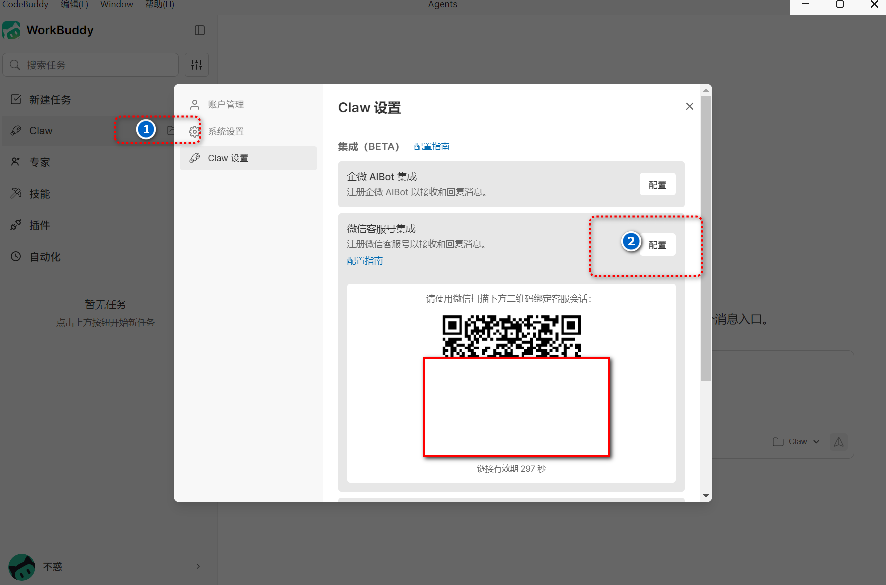
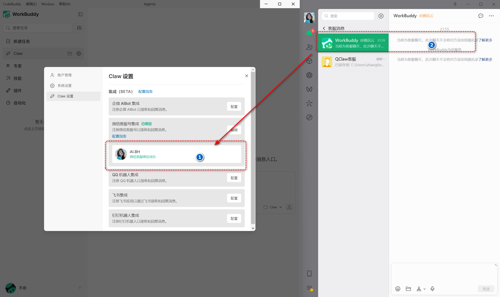
49.2 真实场景一：地铁上被老板追数据
下午 6 点刚刷卡进地铁，老板微信来了：「今天的销售数据出了吗？做个简报表发群里。」——掏出手机发条微信，家里的电脑自动开始干活，到公司前报表已经躺在群里。以前要远程桌面、网盘同步或拜托同事开电脑；现在只要电脑在线，微信一句话搞定。
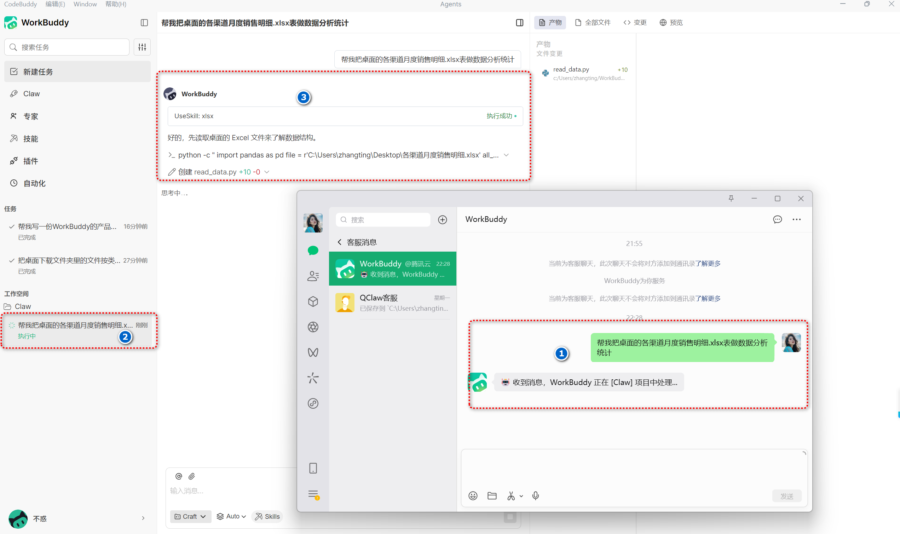
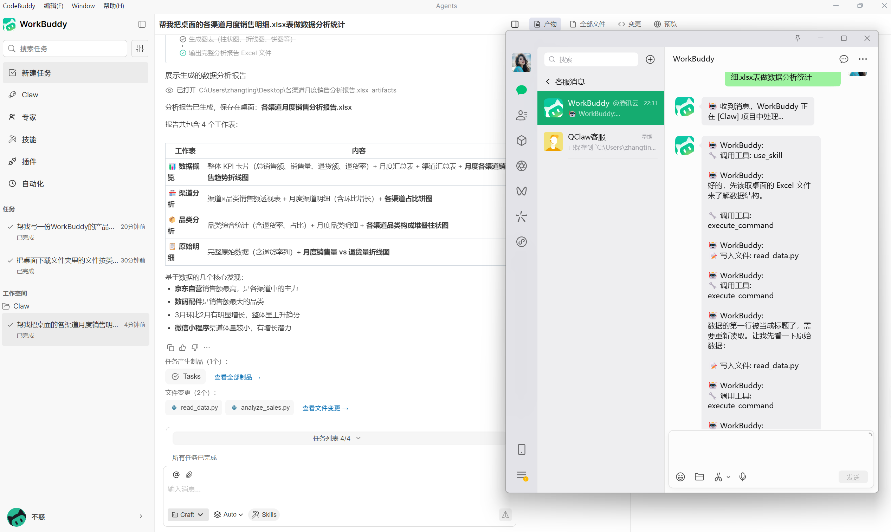
49.3 真实场景二：远程找资料
电脑里存了一堆照片，只记得拍摄对象却忘了放哪个文件夹——直接在微信里告诉它。返回大体积文件时，让它接入腾讯专为智能体打造的「Agent Mail」服务，把资料打包成 zip 直接发到手机邮箱里。
49.4 微信支付 AI 专属卡（彩蛋）
接入微信支付「AI 专属卡」后，可把团队下午茶交给它：3 点送达、10 人份、人均 30 元。它按预算、距离、评分比对蛋挞、披萨等一串选项，确认后推进到支付前，最后付款仍由人来决定。目前使用场景还比较单一，更像是附加能力。
微信遥控依赖"电脑在线 + 网络连通"。出门前确认电脑不休眠（见 51.1 锁屏远程），否则指令会排队到你回家才执行。
定时任务三板斧
50.1 入口与配置
- 左侧「自动化」面板 → 新建定时任务
- 选择时间、写清楚要干啥、选择生效日期
- 保存。到点自动执行，结果推微信 / 腾讯文档 / 企微
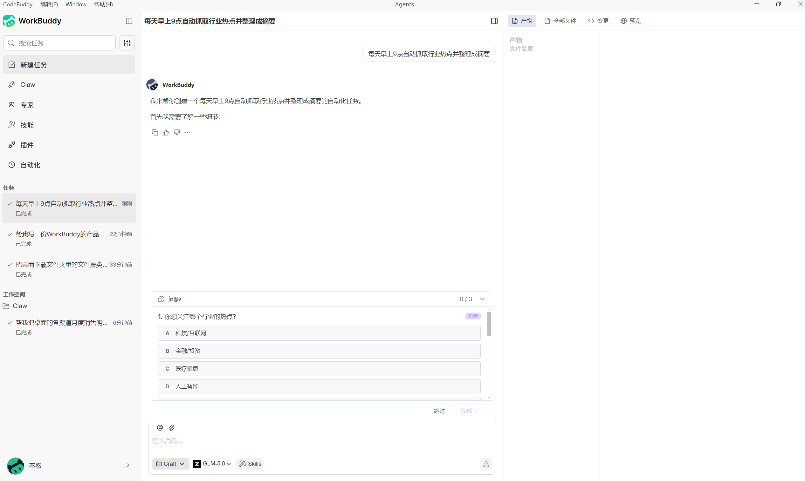
50.2 真实三件套（每天自动跑）
| 时间 | 任务 | 效果 |
|---|---|---|
| 8:30 | 抓行业新闻，整理 300 字早报推微信 | 到公司手机已躺好，不用自己翻新闻 |
| 12:00 | 汇总上午待办，生成进度清单发群 | 同事以为你午休还在干活 |
| 17:30 | 整理当天工作日志，生成日报草稿 | 下班前改两句就能发 |
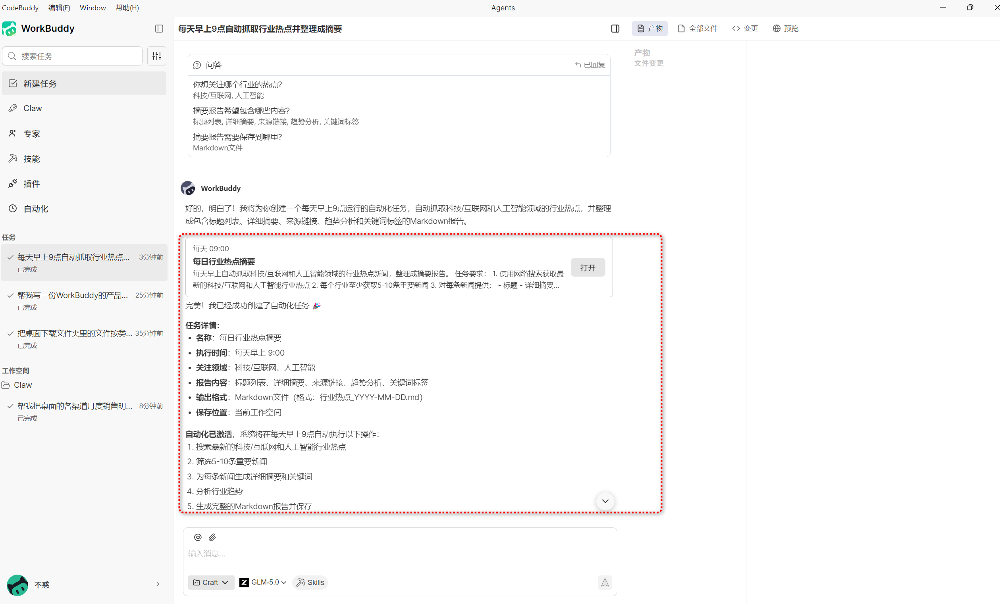
50.3 效率账
这不是"定时提醒你去干活"，是"定时让 AI 自己干活"——你什么都不用做，到点东西就出来了。如果你手头有每天要做的固定工作（日报、早报、数据汇总），这个功能三天就能帮你省出两小时。提示词要写清"输入来源 + 输出形式 + 推送目的地"。
锁屏远程与默认路径
51.1 锁屏远程
系统设置里有「锁屏远程」选项，开启后电脑即使锁屏也不会进入休眠，方便你出门在外通过手机远程操控。配合微信遥控（49 章），真正实现"人走电脑在"。
51.2 默认工作存储路径
WorkBuddy 的默认存储路径对很多非技术背景用户不友好。在设置里可改成自己熟悉的路径，任务产物就不会"找不到在哪"。
左侧边栏任务列表右键「打开文件夹」即可看到 Agent 产出的结果；也可手动把任务保存到指定工作空间，开启多个 Agent 协作。
实战：高考作文批改助手
52.1 背景
英语老师日常绕不开批改作文：看内容、结构、语言、语法，还要写能看懂的提分建议。把新高考 I 卷评分标准图片喂给 WorkBuddy，用大白话让它做一个带 HTML 界面的批改助手，可批量读取作文、输出分数、优缺点和提分策略。
52.2 可直接复制的 Prompt
我是一名英语老师，请为我开发一个「新高考作文智能批改 Skill」，深度阅读我上传的两张《英语试题评分参考》图片，将其中的五个档次评分标准（1-15 分）内化为你的打分逻辑。功能要求： 1. 界面设计：生成一个简洁的 HTML 交互界面。 2. 批处理能力：支持调用 macOS 自带 OCR，读取指定文件夹内的所有作文。 3. 输出规范： - 自动评分：根据标准（字数、语法丰富性、连贯性）给出具体分值。 - Pros & Cons：用 bullet points 列出本文的 3 个优点和 3 个改进点。 - 提分策略：针对该学生的档次，给一句最核心的提分建议。 4. 交互逻辑：批改结果以卡片形式排列，每个卡片下方留一个「老师确认」按钮。 5. 交付物：请直接生成这个 Skill 的代码文件，并告诉我如何放置到 WorkBuddy 的技能目录中。
52.3 它怎么拆任务
- 读取评分标准，提取 1-15 分的档次规则
- 设计作文读取逻辑，支持批量读取 .txt
- 为每篇作文生成分数、优点、问题、提分建议
- 用 HTML 做卡片式页面，方便老师复核、打印
老师从"从头批到尾"变成"复核、调整、打印"。判定权仍在人，但最耗耐心的第一遍筛选归类，AI 已替你做好大半。
实战：名人访谈亮点挖掘
53.1 思路
顺着"理解新闻价值"的思路，让 WorkBuddy 开发一个 Skill：读取长篇访谈（txt/md/srt/vtt），自动提炼金句、新信息、值得展开的选题，并给出后续补充信息——而不是做普通摘要。
53.2 可直接复制的 Prompt
请帮我开发一个「名人访谈亮点挖掘」Skill，并自动安装好。作用：读取一篇名人访谈（支持 txt、md、srt、vtt），自动从长访谈里提炼真正值得看的内容，以卡片形式展示。不要做普通摘要，只输出有价值的信息，包括： - 金句 - 新信息 - 值得展开的选题 - 有意思的观点 每张卡片需保留原文、说话人、为什么值得关注，以及如果继续写这篇内容还需要补充哪些信息。
53.3 实测效果
- 输入约 60 分钟扎克伯格播客转写：准确提取到"承认 Llama 4 开发未达预期、并重组超级智能实验室"的具体信息。
- 输入 Sam Altman 万字访谈：抓到谈 Codex「YOLO 模式」、合成数据、Agent 访问电脑权限等细节，并标出后续值得补充的信息。
Skill 创建方法论
54.1 内置 skill-creator
WorkBuddy 内置了 skill-creator Skill 帮你创建专属技能，连模板都准备好了。点击右上角「添加技能」，用自然语言描述即可。
54.2 何时该做成 Skill
重复的判断规则
每次都按同一套标准做事（评分、分类、筛选）
可复用小工具
同事或未来的你也会用
经验可内化
把"专家怎么判断"写成逻辑
54.3 安装位置
生成的 Skill 代码文件放置到 WorkBuddy 的技能目录（用户级通常为 ~/.workbuddy/skills/，项目级为 .workbuddy/skills/）。安装后在主聊天界面选择该技能即可调用。
别人（或一周后的你）拿到它，不用听你解释就能直接用，并且产出稳定。先在小样本上跑通，再扩大使用范围。
真人级自动化：邮件对账
55.1 痛点
每月和供应商对账：邮件发来账单发票，一封封搜索供应商名、下载附件、打开表格核对、回复"确认"，再等发票下载……光上周就花了 7 小时核对 + 9 小时发起付款，整个人被邮件淹没。
55.2 预处理（人在环）
- 企业邮箱里设置：带附件的邮件自动归档到「星标邮件」文件夹，AI 只处理真正要关注的
- 让 WorkBuddy 登录企业邮箱、下载所有供应商对账单附件
55.3 两条铁律（安全）
- 不自动删除任何邮件
- 不自动发送任何邮件
55.4 调试细节
- 一开始 AI 把邮件正文图片也当附件下载 → 指令限定"只认 .xlsx 或 .pdf"
- 多附件邮件要自动新建文件夹存放，否则堆一起乱掉
- 封装成 Skill，列出所有供应商名，"批量执行"
55.5 经验
有的供应商邮件标题写简称、有的不写公司名，AI 搜不到。后来要求供应商统一主题格式，并在指令里加入所有可能的别名和简称，容错率一下子上去。第一次批量执行发现没下载全——幸亏提前让 AI 输出每一步执行状态表，人工一扫就发现。
真人级自动化：键鼠模拟
56.1 场景
每月发起付款 OA：从业务后台一个个搜索供应商名、找对应分钟数、截图保存。几十个供应商挨个搜索、截图、重命名、存到指定文件夹，每次花大半天。
56.2 让它模拟真人
登录后台 → 搜索框输入名称 → 点击搜索 → 等加载 → 截取指定区域 → 图片存到文件夹。先小范围试跑——只循环 5 个供应商。
56.3 调试坑
有的只截到页面头部，有的把登录页也截进去了。对策：明确告诉它"等数据加载完再截""跳过登录页"，并在指令里指定截图区域坐标。不要急着骂它，而是不断提问"你为什么截到了登录页？"逐步修正。
真人级自动化：文件大扫除
57.1 场景
电脑里一片"素材废墟"：横跨一年半、命名规则前后不一致、有的夹日期有的夹产品名还带奇怪分隔符。平时找张图靠记忆力和运气。
57.2 隔离隐私工作空间
先在 WorkBuddy 划出一个隔离隐私的工作空间，再让它按复杂条件直接大扫除——提取特定人物、合并同一产品、去掉分隔符、统一日期格式。
57.3 危险操作的兜底
帮我把 with Liz 的专门拎出来放一个文件夹，产品的放另一个文件夹，同一产品多个文件夹的合并为一个；归档的 RAW 只保留与成片同名那些，其他删除；分隔符「_」全部去掉，文件夹命名统一为 yyyymmdd。
面对含"删除"的危险要求，它没有莽撞 rm -rf，而是触发二次确认机制，并在对话框顶部透明展示预估账单（预计消耗 5.37~53.6 积分）。确认无误后，喝口水功夫目录已收纳整齐。整套流程实际消耗约 95 积分——对比每日签到 100-150 免费额度，轻度本地整理基本够用。
- 先划隔离工作空间，不碰隐私目录
- 大目录先小样（3 个文件）验证规则再扩大
- 每次指令明确"输入在哪、输出在哪、不改原文件"
- 危险操作务必开二次确认
官方定位、界面与文档导航
本章内容整合自 WorkBuddy 官网（workbuddy.cn 国内站 / workbuddy.ai 国际站）与官方教程（docs/workbuddy/Overview 与 docs/zh/workbuddy/Overview）。作为全书的"官方权威速查"，与第一部分的基础认知互为补充、不重复。
58.1 官方一句话定位
WorkBuddy 是腾讯出品的全场景 AI 办公工作台（国际站表述为"全场景职场 AI 智能体桌面工作台"）。官网的核心理念只有三句：
说出要求
用一句话描述需求，无需复杂操作
开始执行
像同事一样自主规划、拆解并执行复杂任务
交付成果
产出可验收的文档、图表、代码等完整成果
"完美连接腾讯办公生态，你的办公好搭子。"——WorkBuddy 不是给技术人员专用的复杂工具，而是面向普通职场人的 AI 工作台：自然语言下达任务、多 Agent 并行执行、最终交付文档或图表。
58.2 与传统 AI 对话的本质区别
这是理解 WorkBuddy 价值的关键。传统 AI 聊天工具"只给建议"，WorkBuddy"真的把活干完"：
| 维度 | 传统 AI 对话 | WorkBuddy |
|---|---|---|
| 能力边界 | 只能对话，提供建议 | 能够实际执行任务 |
| 文件操作 | 需要手动操作文件 | 自动操作本地文件 |
| 任务复杂度 | 单步骤简单任务 | 多步骤复杂任务 |
| 最终产出 | 输出文字回复 | 交付可验收的结果 |
58.3 界面三大区域
WorkBuddy 桌面端由三个核心区域组成，理解它们能让你更快上手：
| 区域 | 位置 | 功能 |
|---|---|---|
| 侧边栏 | 最左侧 | 显示任务列表（按文件夹分组），支持搜索和管理；底部显示用户头像 |
| 对话区 | 中间 | 核心交互区域，包含任务标题栏、消息列表和输入框 |
| 结果区 | 右侧面板 | 展示产物、全部文件、变更、预览等视图 |
58.4 官方文档导航（建议阅读顺序）
官方教程给出了标准入门路径，建议在读完本绿皮书第一部分后对照官网实操：
| 顺序 | 文档 | 你将学到 |
|---|---|---|
| 1 | 快速开始 Quickstart | 如何进入 WorkBuddy、发起第一个任务、界面四大区域 |
| 2 | 创建任务 Create-Task | 选择工作模式、填写任务内容、补充上下文 |
| 3 | 任务管理 Task-Management | 查看任务列表、按状态筛选、继续处理已有任务 |
| 4 | 任务对话 Conversation | 持续追问、上传文件、使用顶部操作 |
| 5 | 结果查看 Results | 查看产物、全部文件、变更和预览 |
workbuddy.cn 为国内站点，workbuddy.ai 为国际站点，内容与文档结构基本一致；国内用户访问 .cn 即可，海外用户可访问 .ai。两个站点的文档均提供中文，路径为 /docs/workbuddy/Overview 与 /docs/zh/workbuddy/Overview。
定价档位与用户口碑
59.1 官网公开档位（参考）
以下为官网首页公开显示的档位信息，价格可能随活动调整，请以 workbuddy.cn 官网实际页面为准。WorkBuddy 采用订阅制，并配合积分（额度）消耗机制。
| 档位 | 现价 | 原价 | 适用 |
|---|---|---|---|
| 基础档 | ￥70 / 月 | ￥99 / 月 | 个人日常办公轻度使用 |
| 进阶档 | ￥140 / 月 | ￥199 / 月 | 重度使用 / 多场景并行 |
提示：官网还提供小程序端，无需下载即可快捷体验；内部员工反馈"已弃用 Cursor 全部切到 CodeBuddy/WorkBuddy"。具体权益与积分规则详见官网与产品内说明。
59.2 用户口碑（来自官网真实评价）
官网首页收录了来自腾讯内部及真实用户的反馈，最有说服力的几则：
普通职场人
"WorkBuddy 最打动我的地方，是它不像普通 AI 聊天工具只给建议，而是真的能把办公任务做完。从整理文件、分析表格到生成报告，都可以用一句话启动。"
企业推广负责人
"我们除了自己用，也和 15 个部门做了推广应用，新出的小程序端，不需要下载即可快捷体验，同事们反馈也是有 AI 搭子了。"
内部大规模使用
"我们内部日常办公大规模的在用 WorkBuddy，如 PPT 制作、文档数据分析、图片设计，单个环节提效在 90% 以上。"
零基础小白
"我一行代码不会写，想给客户还有母校做 Web 应用一年多了，借助 WorkBuddy 一周实现，直接用内置的'专家'，对于小白真的太友好了。"
这些评价反复出现三个关键词：一句话启动、真把活干完、腾讯生态打通。这正是 WorkBuddy 区别于普通 AI 聊天工具的核心价值，也是本绿皮书贯穿始终的方法论。
59.3 一句话总结
如果说前面的章节是"怎么用好 WorkBuddy"，那么这一章就是"WorkBuddy 官方到底怎么定义自己"。记住它的三句话——说出要求、开始执行、交付成果——你就抓住了这款产品最本质的设计哲学。
连接器官方详解：把外部服务接进 AI 工作流
60.1 连接器是什么
连接器（Connector）是 WorkBuddy 与外部服务之间的桥梁，把外部能力引入 AI 工作流，让你无需手动切换工具即可完成跨平台操作。官方明确：技术形态分为两种——MCP + CLI（标准化协议）与 Skill + CLI（内置脚本），二者在数据收集和权限边界上遵循一致原则。
连接器 = 让 WorkBuddy 直接读写你在第三方平台的数据与能力，彻底告别复制粘贴和文件来回传输。
60.2 已支持的连接器
官方文档列出当前已内置的连接器：
| 类别 | 连接器 | 能力举例 |
|---|---|---|
| 腾讯生态 | QQ 邮箱、腾讯文档、腾讯乐享、腾讯会议、TAPD、腾讯网盘 | 读邮件、读写文档、检索知识库、转写会议、查需求 |
| 自定义 | 支持自定义连接器 | 接入你自己的系统 / API |
注：新增连接器将同步更新隐私协议相关条款；更多连接器（飞书、钉钉、Notion、GitHub、企查查等 30+）可通过 MCP 协议接入，见第六十二章。
60.3 四大应用场景
数据查询
从外部数据源获取信息：查询数据库、检索文档
服务调用
调用第三方 API：发送邮件、创建日程
文件管理
访问云端存储与文件系统：读取网盘、上传附件
消息通知
与 IM 集成：发送企业微信 / 飞书消息
60.4 实战：连接 QQ 邮箱（官方五步）
+ 发起连接。授权成功时务必点击浏览器弹窗中的"打开"完成连接；取消或关闭网页可能导致操作中斷，需重新配置。
连接后直接用自然语言即可："帮我汇总今天 QQ 邮箱里来自张三的邮件""把这封邮件的附件下载到桌面"。
官方定价与版本权益：怎么选最划算
以下档位与权益整理自 WorkBuddy 官网（workbuddy.cn），仅供选型参考，最终请以官网实时信息为准。
| 版本 | 价格 | 额度 | 核心权益 |
|---|---|---|---|
| 个人体验版 | 限时免费 | 每月 500 Credit | 零门槛体验 AI Agent 能力；问答频率限制 |
| 个人专业版 | ¥58 / 人 / 月 | 每月 2000 Credit | 对话及问答不限频；技能市场与连接器；专家团；个性记忆；可购加量包 |
| 企业旗舰版 | ¥198 / 人 / 月（1 坐席起购） | 每坐席 2000 Credit | 所有基础及高阶能力；企业专家；安全与审计；组织架构管理；专属网络访问；专属企业插件；专属服务实例；数据租户隔离 |
| 企业专享版 | ¥316 / 人 / 月（100 坐席起购） | 每坐席 2000 Credit | 单租户专享部署；上述全部企业特性 |
个人尝鲜：先用体验版跑通工作流；重度个人用户：专业版不限频 + 2000 Credit 性价比最高；团队 / 企业：旗舰版起购，重点看安全审计、数据租户隔离与组织架构管理；对合规要求极高选专享版单租户部署。
61.1 关于 Credit（积分）
Credit 是 WorkBuddy 的统一算力额度，对话、任务执行、生成内容都会消耗。专业版 / 企业版每月发放固定额度，超额可购加量包；体验版额度有限且有频率限制。复杂任务（深度研究、长代码、大量文件处理）消耗更多，建议重度用户预留余量或用加量包。
61.2 腾讯生态连接器（权益内含）
专业版及以上可使用的连接器涵盖：腾讯文档、腾讯乐享知识库、QQ 邮箱、腾讯会议、ima 笔记、微信、企业微信等，打通办公 IM、文档、邮箱、会议、知识库等常用工具。
MCP 协议官方解读：AI 的"USB 接口"
62.1 MCP 是什么
MCP（Model Context Protocol）是一种开放协议，官方比喻为AI 的"USB 接口"——数据库、Jira、浏览器、地图、股票数据、内部 API，都能标准化地"插"进来使用。
核心价值
- 上下文共享：向模型提供文件内容、数据库记录、业务信息
- 工具调用：把文件读写、接口调用、消息发送暴露给模型
- 可组合工作流：多个工具串联成自动化流程
- 数据控制：支持本地或受控运行，兼顾灵活与安全
62.2 Skills 与 MCP 的区别
| 对比维度 | Skills | MCP Server |
|---|---|---|
| 本质 | AI 能力封装（提示词 + 流程） | 工具调用协议（标准化工具接口） |
| 安装 | 技能市场一键安装 | 通过 mcp.json 配置 |
| 执行 | WorkBuddy 内部执行 | 外部 MCP Server 程序执行 |
| 适用 | 封装知识与操作流程 | 提供标准化工具调用能力 |
两者可组合：一个 Skill 内部可以调用已配置的 MCP 连接器提供的工具。
62.3 配置级别
| 级别 | 作用范围 | 配置文件 |
|---|---|---|
| 用户级 | 配置一次，所有项目复用 | ~/.workbuddy/mcp.json |
| 项目级 | 仅当前项目生效 | 项目 /.workbuddy/mcp.json |
62.4 实操：5 分钟接入企业微信机器人
获取企业微信群机器人 WebHook URL → 进入侧边栏「插件」→ 右上角「MCP 服务器」→「配置 MCP」→ 填写如下 mcp.json：
{
"mcpServers": {
"wecom": {
"command": "uvx",
"args": ["wecom-bot-mcp-server"],
"env": { "WECOM_WEBHOOK_URL": "your-webhook-url" }
}
}
}保存后查看状态：绿色 = 连接成功，红色 = 配置异常。随后自然语言调用："请通过企业微信机器人通知：正式产品已发布"。
62.5 结合腾讯云生态
| 腾讯云产品 | 用途 |
|---|---|
| 腾讯云 Lighthouse | 实现 AI 工具云端运行，7×24 小时在线 |
| 智能体开发平台 ADP | 企业级权限控制、数据隔离、与企业微信深度融合 |
V5.3.5「人机双写」实测全记录
2026 年 7 月 30 日，腾讯 WorkBuddy 发布 V5.3.5，联合腾讯文档推出「人机双写」协同编辑能力，在业内首次做到"人人、人机、机机"多端同步协同，推动 Office 进入 AI 原生协作时代。本次升级最直观的变化：把一套完整文档编辑界面搬到了 AI 对话框旁边——左侧继续与 AI 对话，右侧直接显示可编辑的腾讯文档。
① 全格式覆盖（Word / Excel / PPT / Markdown，兼容本地与在线）；② 精准框选修改（只改你想改的地方）；③ 多人 + AI 实时协同（共创内容上腾讯文档后，团队共享同一个熟知上下文的 AI）。
63.1 Word 实测：左边聊，右边直接改
实测者上传一篇刚写完的文章，右侧出现可直接编辑的腾讯文档：
- 错别字检查报告：AI 先生成逐条报告，确认"改"后一次性同步到原文（不直接乱改）。
- 框选生成表格：框选段落中的测评数据，输入"生成表格"，AI 整理成表并直接插入对应位置。
- 生成配图：框选文字让 AI 配图，生成后直接插入文档，无需先下载再调整。
- 总结添加文末：读完全文生成总结，直接接在正文后方。
- 读取批注照改：在原文档留批注（补备选标题 / 换结语角度 / 改病句），让 AI"按批注修改全文"，它识别意见并在对应位置完成修改。
63.2 Excel 实测：行程单扔进去，顺手做了两张图
- 读取报销行程单与发票，识别行程与金额，整理进一张表格。
- "把金额大于 50 元的标红" → AI 直接修改对应单元格格式。
- "生成可视化图表" → 按金额差异生成柱状图，按服务商占比生成饼图，全程在右侧表格内完成。
63.3 PPT 实测：一份 PDF，复刻成风格统一的 PPT
实测者用一份往年 PDF 总结，让 AI 复刻视觉风格接近的 2026 年终总结模板：
- 保留原文件整体风格（统一版式、白色线条插画），不混入风格冲突的 AI 写实图。
- 指定页面加配图 → 生成图片沿用白色线条插画风格。
- "年度核心数据"页加表格 → 表格参考原 PPT 配色与版式调整表头、边框、文字。
实测中 AI 误判文中"SpaceXAI"为公司名错误并建议修改，实际是 AI 自身知识判断出错。涉及新公司、新模型、最新行业信息时，务必逐项核对，不能看到"已直接改进原文"就默认一定正确。编辑入口更方便 ≠ 人工审核可省略。
多智能体并行与专家团：组建你的 AI 虚拟团队
64.1 WorkBuddy 能并行处理多个任务吗
能。多任务并行处理是 WorkBuddy 作为"AI Agent 办公新范式"的核心能力之一。它支持组建 100+ 领域专家组成的虚拟团队，多个 AI 专家并行协作，而不是串行等待。
64.2 多专家并行架构
用户一句话指令，系统自动调度多个专家同时工作。典型场景：
软件开发团队
产品定需求、架构师设计拆任务、工程师批量实现、QA 验证质量——四角色并行，缩短交付周期
内容创作团队
视频生成、图文创作、智能剪辑、跨语言素材改编多专家同时处理不同平台适配，批量产出
64.3 专家团 vs 单专家
第九章已介绍专家系统：把行业、岗位、输出风格固化进"专家"，避免每次重复解释。进阶玩法是专家团——按职能组建多个专家协作；企业版支持自建专家、团队共享，部门全员共用一套配置，输出风格高度统一，减少审稿成本。
64.4 与 Teams 团队空间衔接
个人用法只发挥三成价值，Teams 才是企业级终极形态：共享专家库、项目共用记忆、全链路任务流转（需求→文档→设计→开发）、权限分级管理。多智能体负责"并行干活"，Teams 负责"团队协同与沉淀"，两者结合即从个人工具升级为企业中台。
先用单专家跑通一个高频场景（如周报、会议纪要），再扩成专家团并行，最后用 Teams 把流程固化给团队。不要一上来就铺满 100 个专家。
腾讯官方媒体实战图鉴与权威信源
本章所有配图均抓取自腾讯官方媒体：腾讯云开发者社区（cloud.tencent.com）、腾讯新闻 / 腾讯科技（new.qq.com）、WorkBuddy 官网（workbuddy.cn / workbuddy.ai）以及 WAIC 2026 官方报道。本书正文以官方信源为首要依据，自媒体内容仅作辅助参考，不采纳任何未经官方证实的营销表述。
65.1 安装与产品界面
WorkBuddy 是桌面客户端，下载安装包（Windows / macOS，约 150–180MB）后双击安装、微信扫码登录即可。新用户注册赠送免费 Credits 体验额度。
65.2 一句话整理乱成一团的文件夹
把杂乱的下载文件夹丢给 WorkBuddy，用一句话「按类型分类」，它会自动识别路径、读取文件属性、一键完成整理——几十个文件十几秒搞定。
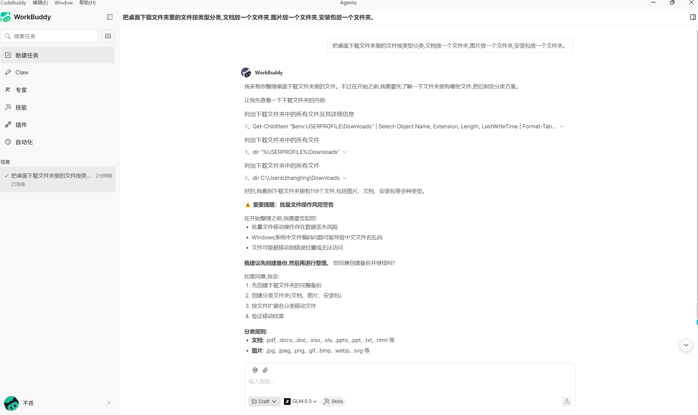
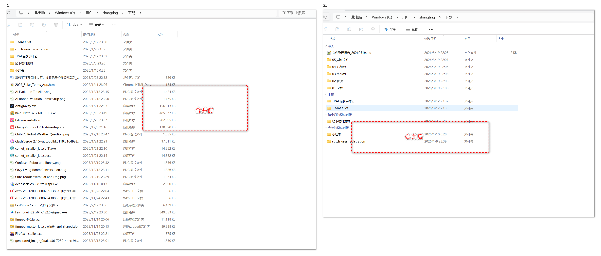
65.3 文档与报告生成
让 WorkBuddy 写产品说明文档、分析报告，生成的内容直接保存为本地 Word / Markdown，拿来就能改。
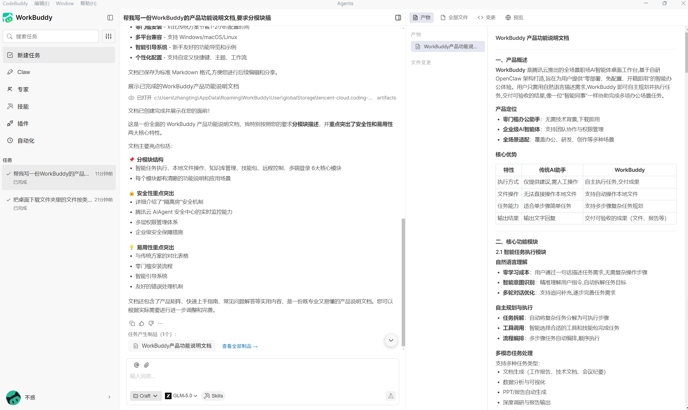
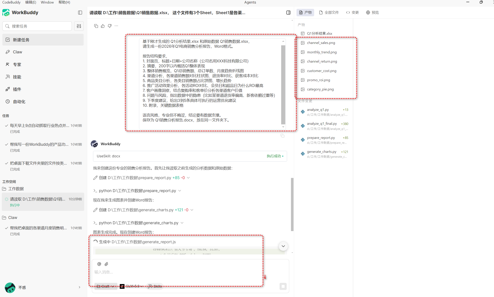
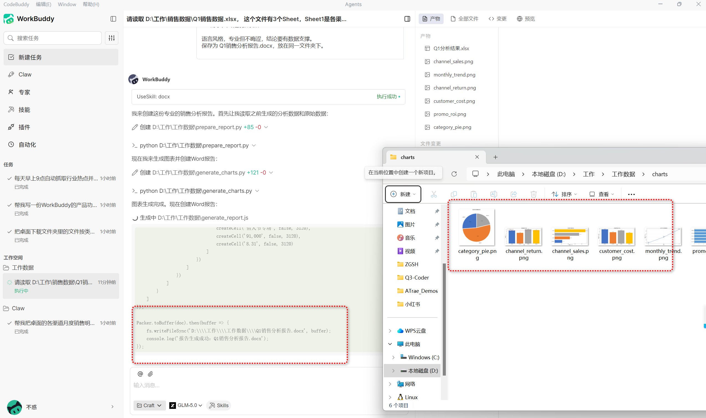
65.4 微信遥控 ClawBot
右上角 Claw 设置 → 微信客服号集成，手机扫码后，人在外面用微信发一句话，家里的电脑就自动开工。
65.5 定时自动化任务
左侧「自动化」面板新建定时任务，设置一次，每天自动生成早报 / 周报、抓取竞品、整理会议纪要，结果自动推送到微信 / 腾讯文档 / 企微。
65.6 数据分析与 Excel
给 WorkBuddy 一份原始表格，它能自动拆解执行计划、清洗数据、聚合分析、生成图表并导出 .xlsx。
65.7 PPT 一键生成
一句提示词即可生成 PPT：框架清晰、图表自动嵌入，细节手动润色后即可交付。
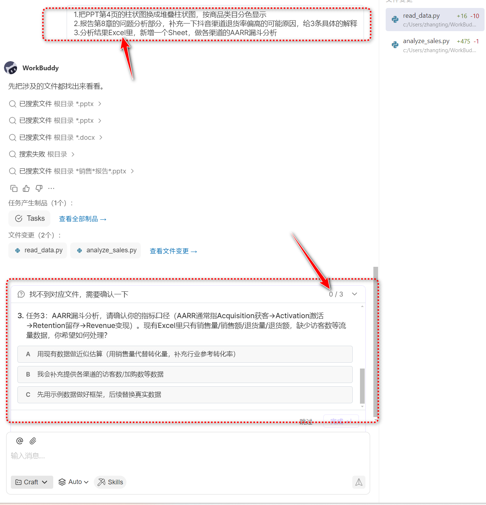
65.8 进阶避坑实录
官方实测也记录了踩坑点：装插件失败、脚本报缺模块等环境依赖问题，以及「WorkBuddy 像天赋高但未发育完全的新人」的公允评价——能力边界仍在本地文件操作范围。
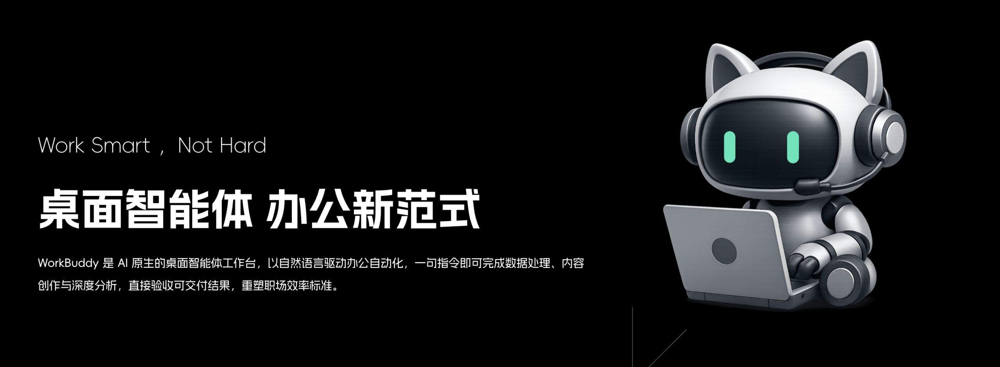
65.9 权威媒体报道索引
以下为腾讯官方媒体对 WorkBuddy 的权威报道，书中相关章节均以这些信源为准：
- 腾讯新闻 / 腾讯科技（2026-07-30）：WorkBuddy 发布 V5.3.5「人机双写」，联合腾讯文档实现 AI 与原文档共同创作，业内首次做到「人人、人机、机机」多端同步协同。腾讯新闻
- WAIC 2026 官方报道（中新网，2026-07-18）：WorkBuddy 展台展示「从一句话到交付」的全场景职场 AI 智能体；中国信通院与腾讯联合发布基于 WorkBuddy 的「AI 航海家+」，覆盖七国出海决策支撑。腾讯新闻
- 鸿蒙 PC 版上架（2026-07）：WorkBuddy 成为鸿蒙平台首个桌面办公智能体，完成手机 / 平板 / PC 鸿蒙全终端覆盖。腾讯新闻
- 腾讯云开发者社区：持续发布官方实战教程（QQ 机器人接入、HTML 公网部署、自动化工作流、小程序零代码开发等）。腾讯云开发者社区
对外分享或引用 WorkBuddy 数据时，优先引用上述腾讯官方媒体报道与官网数据，避免使用未经验证的第三方口径。
官方更新日志全收录（V5.3.8 → V4.8.0）
本章全部内容提取自 WorkBuddy 官方更新日志（workbuddy.cn/docs/workbuddy/Changelog）与 历史版本下载页（Download-History），为产品团队逐版本发布的权威记录，未做任何自媒体二次演绎。版本号与日期均以来源页面为准；官方建议始终使用官网最新版。
66.1 为什么要读更新日志
WorkBuddy 迭代极快——从 2026 年 3 月底的 V4.8.0 到 7 月底的 V5.3.8，四个月发布了 41 个版本。读更新日志能帮你：① 知道手里的功能是不是最新；② 避开"旧版 bug"误以为是自己操作问题；③ 发现隐藏新能力（如锁屏远程、扩展插件 Hook、人机双写、官网登录跳转）。建议每两周扫一眼，或订阅「强制升级」的关键版本。
66.2 版本演进六大里程碑
V4.8.0
V4.21.0
V5.0.0
V5.1.0
V5.3.3
V5.3.5
V5.3.8
66.3 近期版本关键特性速查（V5.3.8 → V5.0.0）
| 版本 | 日期 | 一句话关键能力 |
|---|---|---|
| V5.3.8 | 2026-07-30 | macOS 文件监听优化、产物索引膨胀修复、预热进程人设修复、历史消息展示修复 |
| V5.3.7 | 2026-07-29 | 小程序消息推送性能优化（剥离大字段）、20+ 项稳定性修复（Deeplink、端云同步、Windows 终端弹窗、SSE 乱码、PDF 预览等） |
| V5.3.6 | 2026-07-28 | 官网登录跳转（www.workbuddy.cn 无缝拉起桌面端）、图片模型能力提示优化、Ardot 画布新增真实图片/文本占位图双模式、10 项修复（流式乱码、深度思考覆盖、图表库加载等） |
| V5.3.5 | 2026-07-25 | 人机双写（联合腾讯文档）、扩展插件 Hook、Buddy AI 国内升配 |
| V5.3.3 | 2026-07-21 | 腾讯文档深度集成、PPT 生成插件预览、本地长期记忆、快捷键云同步、夜间折扣 |
| V5.2.6 | 2026-07-12 | 六档套餐文案与升级弹窗、积分消耗提示、专家腾讯专区 |
| V5.2.0 | 2026-06-30 | 视频生成模型升级、安全中心审计日志、启动链路优化 |
| V5.1.0 | 2026-06-13 | present_files 产物入口、企业自建 Skill/插件市场、沙箱安全可视化、微信支付注入 |
| V5.1.1 | 2026-06-14 | 微信支付内置插件、Token Plan、模型切换分隔线、models.json 热更新 |
| V5.0.0 | 2026-06-03 | Teams 团队协作、计划看板、资产库、任务流转、锁屏远程、多类型产物预览 |
66.4 完整更新日志（按版本，官方原文精编）
66.5 历史版本下载归档（节选）
官方归档了 9 个版本系列、共 47 个具体版本（macOS Apple 芯片 / Intel + Windows 64 位）。下表为各系列最新版本与安装包体积，体积随能力扩张显著增长（4.8.x 约 170MB → 5.1.x 约 370–485MB）。
| 系列 | 版本范围 | 最新版本 / 日期 | Windows 安装包 |
|---|---|---|---|
| 5.1.x | v5.1.0 – v5.1.2 | v5.1.2 / 2026-06-17 | 485.8 MB |
| 5.0.x | v5.0.0 – v5.0.5 | v5.0.5 / 2026-06-12 | 463.2 MB |
| 4.24.x | v4.24.0 – v4.24.8 | v4.24.8 / 2026-06-03 | 450.2 MB |
| 4.22.x | v4.22.0 – v4.22.16 | v4.22.16 / 2026-05-21 | 222.7 MB |
| 4.21.x | v4.21.0 – v4.21.1 | v4.21.1 / 2026-04-29 | 213.4 MB |
| 4.20.x | v4.20.1 – v4.20.4 | v4.20.4 / 2026-04-27 | 149.3 MB |
| 4.10.x | v4.10.0 – v4.10.4 | v4.10.4 / 2026-04-24 | 145.1 MB |
| 4.9.x | v4.9.0 – v4.9.6 | v4.9.6 / 2026-04-14 | 145.4 MB |
| 4.8.x | v4.8.1 – v4.8.3 | v4.8.3 / 2026-04-08 | 144.4 MB |
每个版本提供 macOS（Apple 芯片 / Intel）与 Windows 64 位安装包，下载链接均经官方校验。为获得最新功能与安全修复，建议始终从 workbuddy.cn 下载最新版。
66.6 小结
从 V4.8 的「能力市场」到 V5.3.5 的「人机双写」，再到 V5.3.8 的「稳定性全面攻坚」，WorkBuddy 用四个月走完了单兵 Agent → 团队协作 → Office 原生协同 → 大规模稳定性夯实 的四级跳。阅读本章时建议：记住四个关键版本号（V5.0.0 团队协作、V5.1.0 企业能力、V5.3.5 人机双写、V5.3.8 稳定基线），其余版本按需查表。遇到疑似 bug 时，先看对应版本是否已修复，再决定是否升级。
任务管理与对话交互——官方文档精读
本章内容综合自 WorkBuddy 官方文档 Task-Management（任务管理）与 Conversation（任务对话）两页，为产品团队发布的权威操作指南。
67.1 任务列表与搜索筛选
左侧边栏显示您创建过的所有任务，方便随时回看、继续处理和切换上下文。当前列表分为两个板块：
- 任务：展示最近访问或最近更新的任务
- 空间：按工作空间整理的任务，方便您在同一个项目下集中查看历史任务
每个任务卡片显示任务标题、当前状态、最近更新时间或创建时间。在任务列表顶部可使用搜索和筛选功能快速定位任务：按标题搜索、按状态筛选（进行中、已完成、失败等）、按日期筛选，或重置筛选恢复全部。
67.2 任务状态说明
| 状态 | 说明 |
|---|---|
| 进行中 | WorkBuddy 正在执行任务 |
| 已完成 | 任务已经执行完成 |
| 失败 | 执行过程中出现问题，任务未能完成 |
| 待处理 | 任务等待进一步处理或输入 |
| 规划中 | WorkBuddy 正在分析需求并整理执行思路 |
| 已归档 | 任务已被归档，用于后续查阅 |
67.3 常见管理操作
在任务列表中，您可以对每条任务执行以下操作：
| 操作 | 说明 |
|---|---|
| 置顶 | 将任务置于列表顶端 |
| 打开文件夹 | 打开任务所在文件夹 |
| 重命名 | 修改任务名 |
| 保存到工作空间 | 可开启多个 Agent 同时协作；在任务列表中持久保存；随时用 IDE 打开查看 |
| 分享任务 | 分享到任意渠道后，自动生成公开链接 |
| 删除 | 从列表中删除任务 |
| 归档 | 任务归档后可在「系统设置 - 数据管理」中查看已归档任务 |
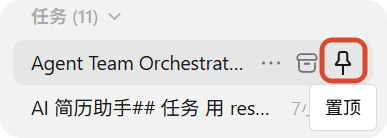
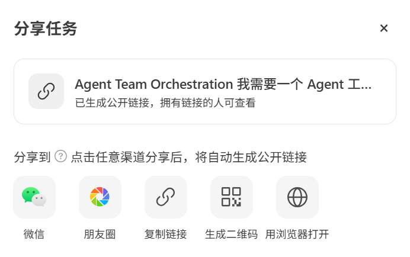
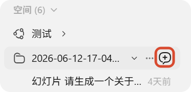
67.4 对话区顶部操作
对话区顶部除显示当前任务标题外，还提供以下常用操作（从左到右）：
- 对话内搜索：输入关键词快速查找目标对话内容
- 分享任务：自动生成公开链接，分享到任意渠道
- 历史提问：查看任务内历史对话记录，支持点击跳转
- 显示详情面板：打开右侧边栏，支持查看产物、全部文件、对话过程中的文件变更和内置浏览器
67.5 消息发送与追问
在对话区底部的输入框中，您可以随时发送新消息。适合直接发送的内容包括：
- 新需求：例如「再加一个饼图」「把字体调大一点」
- 修改意见：例如「表格按销售额排序」「报告加上执行摘要」
- 继续追问：例如「帮我导出成 PDF」「再分析一下环比变化」
WorkBuddy 会基于之前的对话上下文继续处理，无需重复描述背景。
67.6 支持的文件类型与隐私边界
除了直接输入文字，您可以补充文件或图片作为上下文：粘贴截图（Ctrl/Cmd + V）、上传文件（点击上传按钮或拖拽到输入框）。
支持的文件类型：PDF、Word、TXT、Markdown、RTF、Excel、CSV、TSV、PPT、常见图片（JPG/PNG/GIF/BMP）、ZIP/RAR 压缩包以及各类编程语言代码文件。
- 所有文件处理默认在本地完成，原始数据不上传云端
- 服务端仅处理数据片段，用后即弃，不保存也不用于模型训练
- WorkBuddy 只能访问你主动勾选授权的文件夹，系统敏感目录自动拦截，高危操作需二次确认
67.7 中断与继续
如果任务正在执行，输入框区域会显示停止入口，您可以随时中断当前执行。中断后仍然可以继续补充新的说明、调整需求后重新发送、基于已有内容继续推进任务。重点是保持连续对话，而不是每次都重新开始。
对于已经完成、失败或暂时中断的任务，都可以重新进入任务继续补充消息。适合继续处理的场景包括：任务第一次结果还不够完整想继续细化、任务执行失败后需要补充信息再试一次、想基于之前的结果继续扩展新的需求。
结果查看与产物管理——右侧面板全解
68.1 右侧结果区概览
任务执行过程中，右侧会显示结果区，用来查看 WorkBuddy 产出的文件、代码变更和内置浏览器预览的内容。您不需要离开当前任务，就可以一边看对话，一边查看结果。当前结果区主要提供四类内容：
- 概览：工作空间文件（查看当前工作空间中的文件内容）、浏览器（查看网页或可直接打开的结果页面）、变更（查看本次任务带来的文件修改）
- 产物：查看任务生成的文件和交付物
68.2 产物查看与分享
当任务生成文件、表格、文档或其他可交付内容时，您可以在「产物」中统一查看和分享。适合在这里查看的内容包括：文档类结果（Word、Markdown、PDF 等）、表格类结果（Excel、CSV 等）、演示文稿（PPT）、分析报告、自动生成的交付文件。
产物分享：在预览产物文件时，点击右上角分享图标，支持上传到我的云端网盘、腾讯文档、ima 知识库、乐享知识库，在其他端的应用内也可以查看。
68.3 网页预览（内置浏览器）
如果任务生成的是网页、页面原型或本地启动的 Web 应用，您可以在内置浏览器中直接查看效果。内置浏览器通常提供：当前页面地址、刷新入口、页面内容的实时查看。这适合用于确认页面结构、样式和交互结果是否符合预期。
68.4 工作空间文件
「工作空间文件」用于查看当前工作空间中的文件内容，适合在不离开任务的情况下直接浏览产出文件。这一视图通常包含：左侧文件列表或文件树、右侧文件内容区域、顶部已打开文件的切换栏。适合用来快速查看某个生成文件的完整内容、对照不同文件之间的关系、检查任务是否写入了正确的位置。
68.5 变更视图
「变更」视图用于查看当前任务带来的文件修改，方便您在接受结果前先做一轮检查。这一视图通常会显示：本次修改涉及的文件列表、每个文件的改动情况、选中文件后的具体变更内容。如果任务涉及代码开发、脚本生成或配置调整，建议优先在这里确认改动是否符合预期。
自动化任务官方完整指南——RRULE 速查与安全须知
本章综合自 WorkBuddy 官方自动化文档（codebuddy.cn/docs/workbuddy）与腾讯云开发者社区实战教程（article/2717329），覆盖自动化任务的完整配置流程、RRULE 语法速查与安全注意事项。
69.1 自动化概述
自动化在本地客户端保存定时任务配置（任务名称、prompt、调度规则、工作目录、执行状态等），在指定时间以您当前的登录身份自动发起 Agent 任务，按 prompt 执行查询、汇总、文件处理等工作。任务仅在配置的时间规则触发时执行，受任务频率、最大执行时长与系统并发控制限制。
69.2 创建自动化任务
- 打开自动化页面：在 WorkBuddy 左侧边栏找到「自动化 / Automation」入口，点击进入
- 点击「添加」：填写以下配置项
| 配置项 | 说明 |
|---|---|
| 名称 | 用于区分不同自动化任务 |
| 工作空间 | 指定任务执行目录及文件保存位置，默认自动分配 automation-xxxx 工作空间 |
| 提示词（Prompt） | 描述任务目标和输出要求，写得越具体越好 |
| 选择模型和技能 | 指定执行任务的模型和技能 |
| 定时规则（RRULE） | 设置执行频率和生效日期区间 |
| 推送到小程序 | 开启后，推送会通过安全链路把结果同步到云端，以便在小程序接收 |
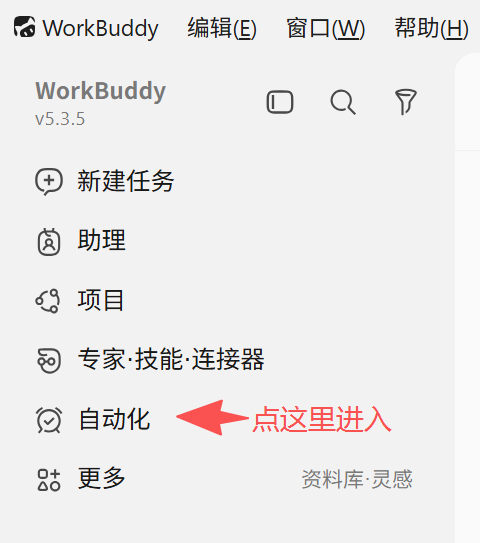
69.3 RRULE 执行频率速查表
| 频率 | RRULE 写法 | 示例 |
|---|---|---|
| 每天上午 9 点 | FREQ=DAILY;BYHOUR=9 | 每日市场主线扫描 |
| 每周一早上 8 点 | FREQ=WEEKLY;BYDAY=MO;BYHOUR=8 | 每周一自动生成周报 |
| 每工作日 18 点 | FREQ=WEEKLY;BYDAY=MO,TU,WE,TH,FR;BYHOUR=18 | 工作日下班前数据备份 |
| 每小时一次 | FREQ=HOURLY | 实时行情监控 |
| 每月 1 号 | FREQ=MONTHLY;BYMONTHDAY=1 | 月度财务汇总 |
69.4 任务模板
不想从零编写提示词？可直接使用任务模板，覆盖新闻推送、周报生成、体检预约以及学习计划等常见场景，选择后按需修改即可。
69.5 推送到 WorkBuddy 小程序
打开配置后，WorkBuddy 可在任务执行完成后自动将结果发送至 WorkBuddy 小程序，便于第一时间查看。
69.6 安全提醒与注意事项
- 信息收集与使用：账户身份信息用于识别任务归属，触发时沿用当前登录身份调用模型/工具/MCP/连接器；用户输入内容保存为任务名称、prompt 和调度说明；使用行为日志用于状态展示与审计
- 积分消耗提醒：积分消耗视任务复杂度而定——简单提醒类较低，代码巡检、文档汇总、连接器分析等可能产生较多 token 消耗
- 第三方共享：自动化调用外部模型、MCP、连接器、OAuth 平台或通知通道时发生数据共享
- 核心安全提醒：任务在无人值守下自动执行，请审慎设置涉及文件写入/删除/资金操作的 prompt
WorkBuddy 国际版上线与 SuperAI 2026 新加坡发布会
本章内容综合自腾讯新闻·腾讯云官方账号报道（2026-05-28）与腾讯云国际站新闻（SuperAI 2026 新加坡，2026-06-11），以及腾讯云国际版 Techpedia 完整指南（tencentcloud.com/techpedia/145043）。
70.1 WorkBuddy 国际版正式上线
2026 年 5 月 28 日，腾讯云在香港面向全球开发者发布多个 Agent 新品。继 CodeBuddy、DataBuddy、QClaw 面向全球用户发布之后，WorkBuddy 国际版正式上线，保留国内版特色的同时，深度适配 Slack、Telegram、Discord 等国际主流 IM 生态，手机遥控就能让 Agent 干活。
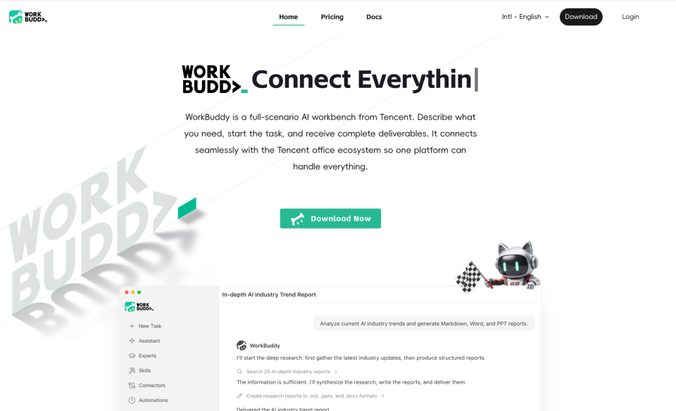
WorkBuddy 国际版官网：workbuddy.ai
70.2 SuperAI 2026 新加坡发布会
2026 年 6 月 11 日，腾讯云在新加坡 SuperAI 2026 大会上展示了 WorkBuddy 和 Miora 两大 AI Agent。腾讯云全球产品运营经理 Sherina Chen 表示：「AI 采用的下一阶段正走向能够自主执行复杂工作流的智能体，同时仍在人类监督的边界内运作。通过 WorkBuddy 和 Miora 这样的 Agent，我们正在帮助组织和专业人员释放更高的生产力。」
WorkBuddy 的核心定位在国际语境中被概括为：「Brief it, run it, get results」（说需求、自动跑、拿结果）。一条指令即可转化为完整的可交付成果，多个任务和 Agent 可同时并行运行，支持通过 API 灵活集成多种模型，可通过 Discord、Slack 和 Telegram 远程管理。
70.3 Skill / Expert / Expert Group 三层架构
腾讯云国际版 Techpedia 完整指南首次系统阐述了 WorkBuddy 的三层 AI 能力架构：
| 层级 | 定义 | 适用场景 |
|---|---|---|
| Skill（技能） | 独立能力——AI 能做的事，如生成产品描述或分析网页 | 需要特定 AI 能力时，从市场安装 |
| Expert（专家） | 能力 + 领域经验——不仅知道怎么做，还带来上下文知识 | 有明确问题或需求时，找到对应专家 |
| Expert Group（专家组） | 多个专家 + 协作流程——组装成有定义流程的协作工作流 | 复杂任务需要跨角色协作 |
例如，一个软件开发 Expert Group 可能包括：产品经理（定义需求）、架构师（设计并分解任务）、工程师（分批实现代码）、QA（验证质量），所有角色并行工作。这一架构意味着 WorkBuddy 可以从简单的一次性任务扩展到复杂的多角色项目——所有这些都由一条命令触发。
70.4 远程控制支持的 IM 平台
WorkBuddy 的突出功能之一是通过即时通讯应用程序进行远程控制。您可以通过以下平台从手机发送命令，WorkBuddy 将在您的桌面上执行任务：
- Slack
- Telegram
- Discord
- 微信助手 Bot
- 企业微信
- 钉钉
- 飞书
这意味着您可以：在外出时处理文档、在会议期间生成会议纪要、在通勤途中准备工作材料、随时随地发送任务和检查进度。
70.5 团队版定价与能力
对于团队，WorkBuddy 提供了团队版，在个人助手体验之上增加了管理和协作功能：
| 套餐 | 价格 | 每座席包含 |
|---|---|---|
| 月付 | $40 / 座席 / 月 | 每月 1,000 积分；访问共享的团队公共池；具有统一计费的管理控制台；支持以多种形式使用 IDE、CLI 和插件 |
| 年付 | $480 / 座席 / 年 |
团队版三大管理维度：管理人员（精细的权限控制，强化团队访问管理）、管理 AI（个人经验和配置可在整个团队中共享，积累成共享的公共资产池）、管理资金（完整的使用可追溯性确保每一笔消耗的积分都可见）。
70.6 国际版技能市场首批技能
WorkBuddy 技能市场首批上线的预构建技能包括：
- 电子商务 AI 选品：基于多平台数据和趋势分析生成高潜力产品列表，包括品类、卖点和定价参考
- 独立落地页生成：创建多语言落地页文案和结构，兼容 EdgeOne Pages 和 Lighthouse 部署
- 网页风险与内容保护：利用腾讯云 EdgeOne 检查网页内容合规性、链接有效性和风险关键词，及时预警
- IM 多平台客户服务：集成 Telegram、Discord 和企业微信，基于知识库处理客户咨询，并可选择转接人工客服
- 对话式 AI 客户服务：在官网或独立站点嵌入对话式 AI，理解上下文并访问知识库以提供持续支持
Agent Runtime 五大组件与 SkillHub 生态
71.1 Agent Runtime 全面升级
2026 年 5 月 28 日，腾讯云对 Agent Runtime 做了一次系统性升级，原生匹配 Agent 自主执行、休眠爆发等全新运行逻辑。Agent Runtime 包含五大组件：
71.2 五大组件详解
| 组件 | 核心能力 | 关键数据 |
|---|---|---|
| Agent SandBox | 升级「休眠唤醒」机制，让 Agent 像手机后台 App 一样随时挂起和恢复 | 唤醒仅需 50 毫秒，比业界主流快 20 倍；暂停时自动释放 70% 算力，不干活不计费 |
| Agent CBS | 优化「买 10G 用 2G」的传统预设模式，专为 Agent 新增按用量计费新模式 | Agent 的第一块「电脑硬盘」，用多少付多少 |
| Agent Bucket | 搭建人与 Agent、Agent 与 Agent 之间的共享空间 | 可为亿级用户提供专属云空间，原生多模态语义检索 |
| Agent Gateway | Agent 全程不接触凭证，每一次出站访问动态授权 | 企业可以安心让 Agent 访问内部系统和数据（QClaw 访问腾讯文档用的就是这套机制） |
| Agent Memory | 智能 Context 卸载 + 符号化记忆 | 长任务成功率提升 30%，Token 消耗降低 60%（已在 Claw Pro 一键启用，开源版本已上线） |
71.3 SkillHub 技能市场
腾讯云全栈产品 CLI 完成 Skill 化改造，统一封装为 Tencent Cloud Infra Skill，并在 SkillHub 上线。用户无需打开控制台或编写命令行，直接通过 Agent 就能完成资源查询、创建与部署。
SkillHub 上有 7 万多个经科恩与云鼎实验室双重安全检测的 Skills，上线 2 个月累计下载量超 3000 万次。
71.4 TokenHub 统一大模型访问
腾讯云 TokenHub 提供大模型 Token 调用的统一管理。通过 WorkBuddy，用户可以在单一平台上访问 14 个顶级 AI 模型，包括：
- DeepSeek-V4-Pro / Flash
- MiniMax M2.5 / M3
- Kimi K2.6
- GLM 5.1 / 5.2
每个模型提供 100 万免费积分作为起步。主要优势包括：一键模型切换（无需更改工作流）、稳定调用和可控成本、多场景扩展（从文本和图像生成到视频、音频和 3D 内容）。
71.5 云服务集成
WorkBuddy 与腾讯云基础设施深度集成：
- COS 对象存储：WorkBuddy 处理的文档、图像和生成内容直接存储在腾讯云 COS 中，确保安全性、持久性和全球加速访问
- Lighthouse 轻量应用服务器：支持一键部署 WorkBuddy 自托管服务或独立站点，2 核 4GB 计划足以实现流畅的智能体操作，24/7 实时监控
妙境 Miora——全场景创意智能体工作室
72.1 Miora 产品定位
WorkBuddy 团队最新产品——全场景创意智能体工作室妙境 Tencent Design Miora国际版同步开启邀测。Miora 与 WorkBuddy 共享同源 Agent 架构，但针对创意设计场景进行了深度优化。
Miora 官网：miora.design（在官网申请邀请码进行体验）
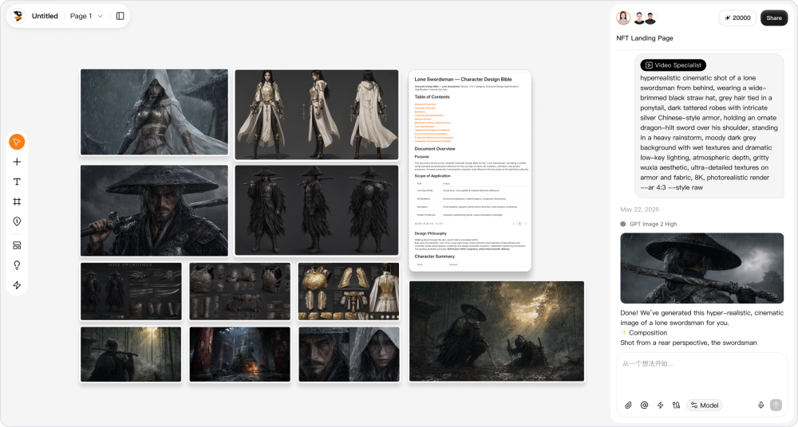
72.2 核心能力
Miora 搭载全球主流视觉模型，支持 AI 生成图片、视频、UI/UX 以及 3D 等多种模态的内容，专业设计师与零基础用户都能用 Miora 快速把创意兑现。
- 一次交付整套视觉：输入一份需求描述，Miora 按专业流程自行拆解，生成一整套品牌视觉全案——图片、视频、UI/UX、3D 资产。生成后还能局部修改、扩展尺寸，从需求到成品一站完成
- 有大脑、能记忆：Miora 先思考再干活，可以理解用户的审美偏好、设计规范和项目上下文，每次生成都更贴合用户风格，无需反复发送品牌资产
- 一张画布承载多模态创作：图像、视频、3D、文本以节点形式自由摆放。Agent 能读取画布上下文，理解你正在做什么和下一步的计划
- 支持个性化 Skills 定制：用户可与 Miora 协作沉淀自己的 Skills，并分享给团队和社区
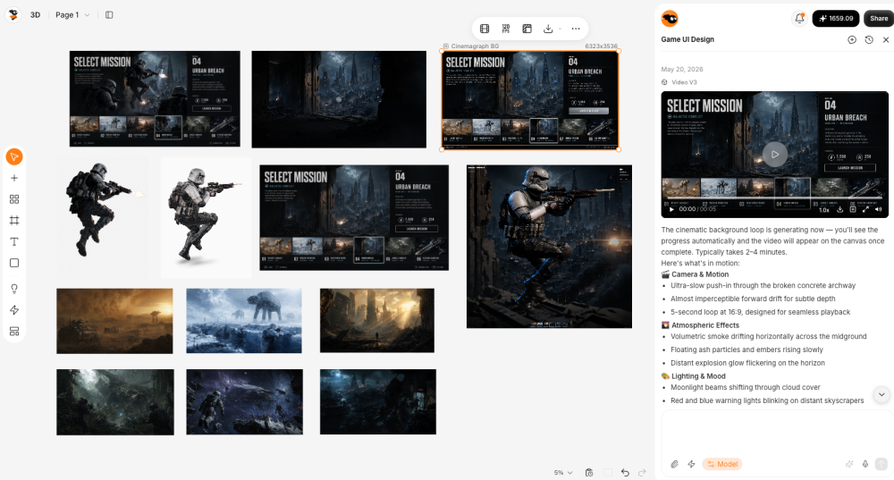
72.3 首批预置 AI 专家
Miora 首批预置品牌视觉全案、创意分镜、插画与视觉叙事等高频场景 AI 专家。从自然语言简报出发，Miora 调用合适的创意专家，生成可用于生产的图形、视频、3D 资产和用户界面，将创意周期从数周压缩到数小时。
72.4 WorkBuddy 与 Miora 的关系
| 维度 | WorkBuddy | Miora |
|---|---|---|
| 定位 | 全场景 AI 办公工作台 | 全场景创意智能体工作室 |
| 核心场景 | 文档、表格、PPT、数据分析、代码开发 | 图片、视频、UI/UX、3D 资产 |
| 架构 | 共享同源 Agent 架构 | |
| 记忆 | 本地长期记忆 + 云端记忆 | 持久记忆（审美偏好、设计规范） |
| Skills | 均支持个性化 Skills 定制与社区分享 | |
批量处理效率模板——Word 与 Excel 一键指令
本章模板来自腾讯云开发者社区教程《教你一键搞定文档 / 表格 / PPT：WorkBuddy 批量处理效率模板》（article/2679989），提供可直接复制的批量处理指令，覆盖 Word 文档与 Excel 表格两大高频场景。
73.1 WorkBuddy 批量办公四大优势
- 本地文件直读直写：无需上传云端，安全高效
- 自然语言指令：不用写脚本、不用记函数
- 批量处理：一次指令搞定多文件、多格式、多步骤任务
- 支持 Plan 预览确认 + Craft 直接执行：稳妥可控
73.2 模板一：Word 文档批量处理
适用场景：批量会议纪要、周报、合同、报告的格式统一、内容提取、合并、格式转换。
万能指令（可直接复制）：
对【D:\办公\周报文件夹】下所有.docx文件执行批量处理：
1. 统一字体：正文微软雅黑、小四、1.5倍行距；标题黑体、二号、居中、段前1行
2. 去除多余空行、手动编号、冗余空格，统一页眉为"XX部门-2026年X月周报"
3. 提取每份文档的【完成工作、明日计划、风险问题】，合并为1份总汇总表
4. 所有文件另存为PDF，输出到【D:\办公\周报_PDF】，命名规则：原文件名_归档.pdf执行步骤：把所有待处理文档放入同一文件夹 → 打开 WorkBuddy，粘贴指令，指定路径 → 选择 Craft 模式，一键执行 → 自动输出：格式统一的 Word + 合并汇总表 + 批量 PDF。
73.3 模板二：Excel 表格批量处理
适用场景：多表合并、数据清洗、批量计算、按字段拆分文件、自动生成图表。
万能指令（可直接复制）：
处理【D:\数据\统计数据】下所有Excel文件：
1. 合并所有表格到总表，统一字段：日期、区域、产品、销售额、销量、负责人
2. 数据清洗：删除空行/重复值，异常值标红，缺失值标记"待补"
3. 新增列：计算毛利=销售额*0.35、毛利率、区域合计
4. 按【区域】拆分为独立文件，保存到【D:\数据\按区域拆分】
5. 生成总销售额月度柱状图、区域占比饼图，嵌入总表实测 WorkBuddy：5-10 分钟全自动完成。
73.4 批量执行避坑指南
- 路径务必绝对路径，不要用中文特殊符号与空格
- 重要文件先备份，先用 Plan 模式预览再 Craft 执行
- 指令越具体越好：字段、格式、路径、规则写清楚
- 单次批量不宜超 50 个文件，大文件分批处理更稳
六大自动化工作流实战——从日签到标书的全景案例
本章来自腾讯云开发者社区深度实战教程《WorkBuddy 实战：我用 6 个自动化工作流把重复劳动全干掉了》（article/2683143），作者分享了 3 个月使用 WorkBuddy 搭建 6 个自动化工作流的完整经验，附带积分消耗实测数据。
74.1 工作流总览
| 场景 | 痛点 | 效果 |
|---|---|---|
| 每日智能日签 | 每天做日签图发群，手动 20 分钟 | 每天节省 20 分钟，月省 10 小时 |
| 微信聊天记录转工作日志 | 翻聊天记录找待办，低效易遗漏 | 自动生成项目维度工作日志 |
| 美团优惠券一键领取 | 每种券都要手动点，烦 | 耗时从 5 分钟降到 10 秒 |
| 技术标书自动生成 | 几百页招标文件，肝好几天 | 初稿从 3 天降到 2 小时 |
| 思源笔记智能管理 | 笔记整理归类去重同步是体力活 | 全功能操作 + NAS 双向同步 |
| 多 Agent 并行协作 | 串行做调研太慢 | 并行效率提升 2-3 倍 |
74.2 场景一：每日智能日签自动化
方案：Python 脚本 make_sign.py + WorkBuddy 定时执行。流程：定时触发 → 检查节假日 → 获取天气 → 搜索历史事件 → 选随机照片 → PIL 合成日签 → 上传思源笔记。
关键技术点：在 WorkBuddy 中直接说「每天早上 8 点执行」，自动创建定时自动化；用中国节假日日历判断，周末和法定假日自动跳过；Pillow 库叠加文字时加人脸检测，文字自动避开人脸区域。
74.3 场景二：微信聊天记录转结构化工作日志
方案：提取微信聊天记录 → 过滤本人发言 → 按项目关键词分组 → 提取任务/结论/待办 → 生成结构化 Markdown 日志 → 存入思源笔记。
用 wechat-qq-sender skill 读取微信消息，按预定义项目关键词自动分类，用正则提取时间节点和待办事项，最终生成带目录的结构化日报。
74.4 场景三：美团优惠券一键领取
用 meituan-coupon-workbuddy skill，一句话搞定：「帮我领今天的美团券」。WorkBuddy 自动完成：验证 Token → 遍历各品类券 → 一键领取 → 返回领取结果。每天多领 3-5 张券。
74.5 场景四：技术标书自动生成
使用 biaoshu-writer skill（标书撰写器），支持解析 txt/pdf/docx/xlsx 格式的招标文件，自动生成符合评分标准的技术标 Word 文档：上传招标文件 → 自动解析评分标准 → 按评分点对应生成技术方案 → 自动排版生成 docx → 人工审核微调。
74.6 场景五：思源笔记智能管理
通过 siyuan-notes-skill，WorkBuddy 可以直接操作思源笔记的几乎所有功能：搜索笔记、网页剪藏、批量整理、数据统计、附件修复。结合群晖 NAS，通过 Robocopy 做增量同步。
74.7 场景六：多 Agent 并行协作
WorkBuddy 支持 Team（多智能体协作）模式，可同时启动多个 Agent 并行工作。例如「帮我调研这三个技术方案并出对比报告」，三个 Agent 分别调研方案 A、B、C，最终汇总生成对比报告，每个 Agent 独立执行互不干扰。
74.8 积分消耗实测数据
| 使用场景 | 单次消耗 | 频率 | 月消耗 |
|---|---|---|---|
| 日签生成 | 约 50 | 每天 | 约 1,500 |
| 微信日志整理 | 约 80 | 每天 | 约 2,400 |
| 美团领券 | 约 20 | 每天 | 约 600 |
| 笔记管理 | 约 30 | 每周 3 次 | 约 360 |
| 标书生成 | 约 200 | 每月 2 次 | 约 400 |
| 其他零散任务 | 约 50 | 每天 | 约 1,500 |
| 月合计 | 约 6,760 | ||
而每月免费额度 500 + 发一篇社区教程 1,000-3,000 + 邀请好友，轻松覆盖。作者用了 3 个月，还没充过钱。
74.9 Skill 体系搭建心得
从低频到高频逐步搭建：第 1 周用一个现成 Skill 感受自动化 → 第 2 周写一个简单脚本学会定时任务 → 第 3 周搭管道学会多步骤工作流 → 第 4 周建 Team 学会并行协作。善用现成 Skill 市场别重复造轮子，把成功的流程固化为 Skill。
CloudQ 多云管理专家接入实战——Well-Architected 架构评估
本章来自腾讯云开发者社区教程《CloudQ WorkBuddy 接入实战：从安装技能到第一次架构评估》（article/2681216），详解 CloudQ 通过 WorkBuddy 接入的完整流程。
75.1 CloudQ 产品定位
CloudQ（昵称「领域虾」）作为「多云管理专家」，已原生集成在 WorkBuddy 的专家版块中，无需额外部署。选择 WorkBuddy 接入 CloudQ 的理由：交互体验最完整、功能支持最全面、接入门槛最低。
CloudQ 融合三大能力：ChatOps（对话即运维）、AIOps（架构感知驱动，实现超过 95% 的告警噪音过滤率）、CloudOps（基于 Well-Architected Framework 的全天候架构评估）。
75.2 接入步骤
- 进入 WorkBuddy 专家版块：打开 WorkBuddy 工作台，在界面中找到「专家」版块入口
- 找到并召唤 CloudQ：在专家版块中找到「CloudQ 多云管理专家」，点击「立即召唤」
- 开始第一次对话：召唤成功后直接输入运维相关问题或指令，CloudQ 支持自然语言交互
75.3 Well-Architected Framework 五维架构评估
CloudQ 的架构评估基于 Well-Architected Framework，从五个维度对云上架构进行全方位评估：
| 评估维度 | 关注重点 |
|---|---|
| 安全性 | 访问控制、数据保护、安全配置 |
| 高可用性 | 容灾能力、冗余设计、故障恢复 |
| 成本优化 | 资源利用率、计费模式、闲置资源 |
| 性能效率 | 资源选型、扩展能力、瓶颈识别 |
| 运营卓越 | 监控覆盖、变更管理、自动化程度 |
每个风险项都有 P0/P1/P2 优先级标注。在 CloudQ 对话中输入「请对我的云上架构进行评估」，CloudQ 将自动感知云上资源拓扑，基于架构图生成五维评估报告。评估过程：架构图感知 → 风险识别 → 优先级标注 → 报告生成。
75.4 更多 CloudQ 能力
- 故障根因分析（RCA）：当故障发生时直接向 CloudQ 描述故障现象，基于架构感知驱动进行日志收敛和多产品日志聚合，一键生成结构化 RCA 报告。WorkBuddy + CloudQ 双引擎协同，将 RCA 时间从 45-105 分钟压缩到约 6 分钟
- 自定义任务：5 个环节——描述意图 → 自动执行 → 智能分析 → 结构化报告 → 主动推送。例如新版本上线后创建一次性任务让 CloudQ 盯住 48 小时内错误日志，无需人工值守
- 灰度观察：创建灰度观察任务后，CloudQ 持续监控指定指标和日志，发现异常模式时主动推送告警和分析结果，无需运维同学持续盯盘
CloudQ 目前处于公测阶段，完全免费。
反常规实操教程——七层使用逻辑与避坑手册
本章来自腾讯云开发者社区教程《WorkBuddy 反常规实操教程：拒绝说明书式罗列，按「干活逻辑」分层吃透》（article/2715319，发布于 2026-07-24），抛弃菜单顺序，以「使用层级 + 真实办公动线」拆解 WorkBuddy 的完整使用逻辑。
76.1 前置认知：WorkBuddy 与普通 AI 的本质区别
| 维度 | 普通 AI（豆包、ChatGPT） | WorkBuddy |
|---|---|---|
| 文件操作 | 只线上打字回复，碰不到本地文件 | 授权后直接读写本地硬盘文件，自主打开 WPS/Office |
| 执行方式 | 需手动上传、手动保存 | 自动新建文档、批量改文件、自动存到指定文件夹 |
| 远程能力 | 无 | 搭配微信远程，手机发指令，电脑自动跑完任务 |
| 适配平台 | 各平台独立 | Windows、Mac（Intel/M 芯片）、iOS、安卓、鸿蒙 + 微信小程序全打通 |
76.2 三层使用逻辑
层级 1：轻量化问答——临时查资料、写短句，和普通 AI 用法一致。直接对话框打字，不用选工作空间，不用上传文件。适合写文案、改话术、查行业知识点、写大纲。
层级 2：本地文件全自动干活——最高频核心用法。不用手动上传下载文件，3 种给 AI 喂文件的方式：@文件名（输入框敲 @ 唤起本地文件列表）、拖拽直传（直接拖进对话框）、提前锁定工作空间（左下角选定固定项目文件夹）。
层级 3：微信/手机远程遥控——外勤、出差刚需。微信搜「腾讯 WorkBuddy」小程序，同微信账号自动绑定电脑主机；或下载手机独立 App，支持拍照传图、语音发指令。关键限制：电脑端必须保持开机、联网、后台在线。
76.3 七大隐藏模块（90% 用户从未开启）
| 模块 | 能力 | 用法 |
|---|---|---|
| 1. SkillHub 技能市场 | 内置 7 万+ 免费技能 | 侧边栏打开技能中心，搜索关键词安装，AI 自动调用 |
| 2. 专家角色库 | 法务、工程、市场、财务、文案上百种专家身份 | 切换对应专家，AI 输出贴合行业话术 |
| 3. 定时自动化 | 电脑每天定点自动运行 | 设置一次性规则，全程无人值守 |
| 4. Plan 长任务模式 | 复杂多步骤项目 | AI 自主拆分十几步流程，遇到信息缺失主动弹窗确认 |
| 5. MCP 插件拓展 | 对接公众号、网盘、地图、企业微信等 | 实现跨软件联动，如自动抓取行业资讯汇总成简报 |
| 6. 批量多文件联动 | 一次选中 10+ 份合同、报表 | 统一改格式、替换名称、批量加水印，1 分钟完成 |
| 7. 电脑远程投屏 + 任务回看 | 远程发指令 + 查看执行全过程 | 历史任务全部留存，可回看 AI 每一步操作 |
76.4 四套可直接复制的落地指令模板
模板 1 Excel 批量处理：
@台账.xlsx 筛选苏州环保项目，统计臭氧催化氧化设备月度出货量，
做柱状图表，生成汇总Excel保存到桌面「环保报表」文件夹。模板 2 文档批量生成：
@会议纪要.docx 整理所有待办事项，区分责任人、截止日期，
生成规范Word周报，统一微软雅黑12号字体，另存为「7月项目周报」。模板 3 文件自动化整理：
遍历桌面所有PDF，按"环评资料、设备报价、合同文件"分成三个文件夹，
批量重命名统一格式：日期-文件类型-项目名。模板 4 PPT 自动制作：
@技术方案.doc 生成12页臭氧水处理宣讲PPT，
封面、工艺介绍、案例、报价、售后分板块，配色商务蓝，保存到本地。76.5 避坑手册
- AI 读取不到本地文件：排查没开文件夹权限、选错工作空间、文件路径有中文特殊符号。解决：重新授权目录，文件改名只用英文 + 数字
- 微信连不上电脑：两台设备微信不一致；电脑断网休眠；防火墙拦截。三要素全部核对一遍
- 执行任务中途中断：文件被 WPS 占用、杀毒拦截读写、积分耗尽。关闭占用文件，充值/领取积分，加入软件白名单
- 远程执行特别慢：办公室电脑网速差；大文件建议拆分处理；尽量白天办公网执行
76.6 效率进阶口诀
简单打字闲聊不用选文件夹；要改本地文件必选工作空间；
出门干活走微信小程序，居家复杂操作用电脑客户端；
常规表格文档正常对话，调研、整套方案开 Plan 模式；
重复工作做定时自动化，专业内容切换对应专家技能；
权限不全所有功能失效，安全只开放必要文件夹，不全局授权。
76.7 正确使用心态
WorkBuddy 是电脑办公副驾驶，负责批量重复劳动、初稿产出、文件整理；最终数据、合同、技术参数一定要人工复核，AI 完成效率，人把控专业对错。普通 AI 拼话术，WorkBuddy 拼电脑落地执行力。
第七十七章 人机双写——AI 时代的 Office 新范式
信源：腾讯 WorkBuddy 公众号（2026-07-30）、腾讯公众号（2026-07-30）、腾讯云公众号（2026-07-30）
2026 年 7 月 30 日，腾讯 WorkBuddy（V5.3.5 版）联合腾讯文档，正式推出面向 Agent 时代的「人机双写」协同编辑能力。这是业内首次实现「人人、人机、机机」多端同步协同的办公智能体能力，推动 Office 进入 AI 原生协作时代。
从「帮你写」到「和你一起写」。你在哪儿写，AI 就在哪儿改。不再需要复制粘贴、切换窗口——AI 直接进入你的文档，无缝接力编辑。
一、功能概览
「人机双写」的核心体验是框选即改。用户通过 WorkBuddy 打开文档后，直接选中文字、表格区域、PPT 页面等需要修改的内容，点击「AI 编辑」，用一句自然语言告诉 WorkBuddy 怎么改。AI 会在指定范围内修改，尽量保持其他内容和版式不变。
WorkBuddy 支持 Word、Excel、PPT、Markdown 等主流办公格式，同时兼容本地 Office 文件和腾讯文档在线文档。覆盖三大场景：
| 场景 | 典型指令 | 效果 |
|---|---|---|
| 写文档 | 「帮我在文档最后加上总结，并排版全文内容」 | 自动生成全文总结、批量修改格式、检查错别字、润色全文 |
| 做表格 | 「按大区和产品线分析销售额」 | 生成数据透视分析、输出分析报告、自动补齐公式、批量清洗数据、生成可视化图表、标注异常数据 |
| 做 PPT | 「按照这一页的风格优化整份 PPT」 | 统一整份风格、自动生成配图、生成图表、优化页面结构、提炼页面重点、生成演讲备注 |
二、文档场景详解
写周报、方案、会议纪要时，过去总是在「复制内容 → 打开 AI → 提需求 → 再复制回来」的循环中反复。现在在 WorkBuddy 内打开文档，一句话即可完成修改：
- 一句话生成全文总结——「帮我在文档最后加上总结的部分，并排版全文内容」
- 一句话批量修改格式——「帮我把所有数字加粗，给某一段的关键数字变红」
- 一句话检查错别字——「帮我检查并修正文档里的错别字」
- 一句话润色全文——「帮我优化这个文档并重点突出人力成本」
三、表格场景详解
面对大量数据，公式太多、操作太碎、分析太花时间。选中需要处理的数据区域后：
- 「帮我按照大区 x 产品线做透视，统计销售额」——生成数据透视分析
- 「帮我按时间维度分析趋势，给出关键洞察」——输出分析报告
- 「选中列之后，帮我把这一列销售额公式补齐」——自动补齐公式
- 「帮我针对 SKU 里面的产品名称，统一把『-』前后加上空格」——批量清洗数据
- 「帮我把各产品的销售额，做成可视化图表」——生成图表
- 「帮我给销售额小于 1000 的标红」——标注异常数据
四、PPT 场景详解
做 PPT 最费时间的从来不是写内容，而是改版式、找配图、拆页面、写演讲稿：
- 统一风格——选择参考页面，AI 同步整份 PPT 的版式和视觉风格
- 自动配图——「帮我在这页右侧添加一张符合内容的配图」
- 生成图表——「帮我做一张柱状图放第 3 页，标题：Q1 销售对比」
- 优化结构——「帮我把各个投放的渠道策略详细补充完整 / 把这页拆成两页」
- 提炼重点——「选中区域，把这页的内容再提炼成一个小标题」
- 生成备注——「选中 PPT，帮我按每页内容生成 30 秒口播备注」
五、团队协作与生态
WorkBuddy 生成的腾讯文档或已上传的产物，可邀请同事一起协作——你 + 别人 + AI 共同编辑同一份文档。张三在第一段调整框架，李四在第三页补充数据，AI 在表格里生成图表，所有改动实时同步。
目前 WorkBuddy 已覆盖 Win、Mac、鸿蒙、安卓等主流操作系统，并深度集成腾讯文档、腾讯 ima、腾讯会议、腾讯网盘、TAPD、腾讯乐享等生态产品，打通内容创作、知识沉淀与能力复用链路。
第一阶段：人与文件交互（本地 Office）→ 第二阶段：人与人协同（在线文档）→ 第三阶段：人与 AI 共创（人机双写）。WorkBuddy 正在推动办公软件迈入第三阶段。
六、晒用法投稿活动
即日起至 2026 年 8 月 16 日，体验「人机双写」功能并投稿至小红书 / 抖音 / B 站 / 视频号 / 公众号（带 #WorkBuddy #人机双写 #腾讯文档 话题），审核通过即可赢取积分和腾讯文档会员。一等奖 3 名（10,000 积分 + 腾讯文档会员），参与奖名额超 100 名。
第七十八章 HyperFrames——用 WorkBuddy 低门槛制作视频
信源：腾讯云 AI 社区公众号（2026-08-02）
以前用 AI 做视频，往往需要在脚本生成、素材搜集、配音、动画和剪辑工具之间反复切换。现在可以直接给 WorkBuddy 安装 HyperFrames Skill，用自然语言描述想要的视频，让 WorkBuddy 自动完成脚本拆分、画面设计、动画制作、字幕添加和视频导出。
一、HyperFrames 是什么
HyperFrames 是一个面向 AI Agent 的开源视频制作框架。它让 AI 使用 HTML、CSS 和 JavaScript 编写视频画面，再将这些画面逐帧渲染并编码成 MP4。工作流程为：
你的需求 → WorkBuddy 规划视频 → HyperFrames 编写画面和动画 → 浏览器逐帧渲染 → 导出 MP4
适合制作的视频类型：文章转视频、知识科普视频、产品介绍和功能演示视频、数据可视化视频、动态海报和品牌片头、口播视频字幕与包装、批量生成不同文案/尺寸/语言的视频。
二、安装与使用
打开 WorkBuddy 的技能页面，选择「添加技能 → 查找技能」，输入 HyperFrames，查找并安装。安装完成后在「已安装」中确认启用，直接告诉 WorkBuddy「使用 HyperFrames 制作视频」即可。
三、四大实战案例
案例一：文章转视频
使用 HyperFrames 将我提供的文章制作成一条 60 秒的竖屏视频。 请先提炼文章的核心观点，将内容改写成适合视频表达的旁白脚本， 并拆分为 6～8 个场景。 视频要求： - 画面比例为 9:16，分辨率 1080×1920 - 开头 3 秒使用一个能够引起好奇心的问题 - 每个场景只表达一个核心信息 - 使用动态文字、关键词高亮、图标和简单示意图辅助表达 - 添加中文字幕，并确保字幕位于短视频安全区域 - 配置自然的中文旁白和轻量背景音乐 - 整体风格简洁、现代，避免做成 PPT 翻页效果 制作完成后先预览并检查文字遮挡、字幕溢出和动画节奏，确认无误后导出 MP4。 文章链接是：[URL]
案例二：无真人出镜科普视频
使用 HyperFrames 制作一条主题为"为什么飞机能够飞起来"的 45 秒科普视频。 请先生成通俗易懂的中文旁白，将内容拆分为： 1. 问题引入 2. 空气流动 3. 机翼上下方压力差 4. 升力形成 5. 总结 视频比例为 16:9，使用深色背景、白色文字和蓝色强调色。 不使用真人出镜和素材堆砌，主要通过动态图形、箭头、气流线条、 机翼剖面图和关键词动画解释原理。 添加中文旁白、字幕和轻微音效。最终导出一条完整的 MP4 视频。
案例三：产品介绍视频
使用 HyperFrames 为以下产品制作一条 30 秒的产品介绍视频： 产品名称：WorkBuddy 产品定位：能够自主规划并执行复杂办公任务的 AI Agent 工作台 视频结构： - 0～3 秒：展示用户面对大量工作的痛点 - 3～8 秒：产品名称和一句话定位 - 8～22 秒：依次展示三个核心卖点 - 22～27 秒：展示典型使用场景 - 27～30 秒：展示行动号召 视频比例为 16:9，整体采用简洁、专业、具有科技感的视觉风格。
案例四：口播视频剪辑与包装
使用 HyperFrames 对我提供的口播视频进行剪辑和包装。 请完成以下工作： 1. 转写视频中的中文语音 2. 删除明显停顿、重复表达和无意义语气词 3. 保留原始观点和说话人的表达风格 4. 生成逐字中文字幕 5. 重点词使用放大、变色或弹出动画 6. 添加简洁的标题卡和信息标签 7. 根据内容加入适量图片、图标或画中画素材 8. 调整人声响度，并添加不影响人声的轻背景音乐 输出比例为 9:16，字幕不得遮挡人物面部。完成后导出带字幕的 MP4。
四、提示词通用公式
使用 HyperFrames 制作一条【视频类型】。 输入内容：【文章、脚本、网址、图片或原始视频】 目标观众：【视频给谁看】 视频时长：【多少秒】 画面比例：【16:9、9:16 或 1:1】 内容结构：【开头、正文、结尾分别讲什么】 视觉风格：【科技、极简、商务、活泼等】 素材要求：【使用哪些素材，禁止虚构哪些内容】 声音要求：【旁白、字幕、音乐和音效】 输出要求：【格式、分辨率和不同版本】 请先规划脚本和分镜，再制作视频。完成后检查字幕溢出、画面遮挡、 动画节奏、音画同步和素材版权，修复问题后导出最终 MP4。
五、环境依赖
| 工具 | 用途 |
|---|---|
| Node.js 22+ | 运行 HyperFrames CLI、安装依赖和执行视频项目 |
| Chrome / Chromium | 加载 HTML/CSS/JS，逐帧生成视频画面 |
| FFmpeg / ffprobe | 视频编码、音视频合成、格式转换、裁剪、压缩 |
| Whisper / faster-whisper | 语音转文字，生成字幕文本和时间轴 |
| Kokoro / ElevenLabs / HeyGen TTS | 脚本转旁白。Kokoro 适合本地生成 |
首次调用时 WorkBuddy 会自动检查并安装缺少的依赖，也可直接让 WorkBuddy 完成环境配置。运行 npx hyperframes doctor 可检查依赖状态。
第七十九章 WorkBuddy x ima——知识自动化工作流实战
信源：腾讯云 TDP 公众号（2026-07-22）
本文整理自 WorkBuddy × CodeBuddy 开发者分享季第四周周最佳获奖者阿靖的实战经验。阿靖在公众号和小红书双平台输出，7 篇内容，小红书单篇最高 625 赞、1087 收藏，擅长将 WorkBuddy 和 ima 两个工具连起来，打造完整的知识自动化工作流。
一、连接两步走
- 打开 WorkBuddy，对话框右下角「+」号，连接器里找到「ima 知识库」，点链接，「立即前往授权」，弹出二维码，微信扫码，点「确认授权」。
- 在对话框发一句：「请检查我是否已经成功连接 ima 知识库，并列出我有哪些文件夹。」返回「成功连接」和文件夹名称即通。
二、让资料自己进库
ima 支持添加本地文件、微信文件、公众号文章、网页链接、笔记、腾讯文档、录音纪要。复制公众号文章链接，直接告诉 WorkBuddy 让它添加到知识库。
三个实战场景：
- 竞品公众号长文被折叠——丢进库里，让 WorkBuddy 展开提取全文摘要。
- 扫描版合同——OCR 提取文字，整理关键条款。「以前一小时，现在十分钟。」
- 看到好文章——说一句「存进对应主题文件夹」，它自己归类。
三、让 WorkBuddy 在库里干活
资料进库后，让 WorkBuddy 直接在库里读、写、搜、整理。
请按照以下要求整理「学习资料库」中的文件： 1. 先按照主题帮我分个类。 2. 每个文档都按照以下格式：标题、摘要、核心观点、推荐主题。 3. 不要修改文章内容，不要删除文档，不要移动文档。 4. 生成一份清单，包含以上内容，以供我快速查阅知识库里的文档。 5. 如果有任何任务外的操作，请先与我确认。
跑完之后知识库里的文档被总结成一份结构化清单。更进一步：设定自动化任务，让 WorkBuddy 定期更新这份清单。还可以把知识库当写作素材源：「搜 ima 里最近一个月的行业文章，提三个反复出现的关键词，每个写段分析。」
四、把 Skill 串成一条线
阿靖花了三天时间，把 10 个 WorkBuddy 精选 Skill 逐一跑了一遍。他的核心观点是「每个 Skill 是个节点，节点连起来才是自动化」。
以日常内容生产为例，链路为：
- AI 热点抓取——搜最新行业动态和高频话题
- 知识库收纳——搜出的链接批量入 ima 的竞品文件夹
- 文档 Skill——从 ima 里拉出素材，结合「阿靖写作约束」生成初稿
- 公众号排版 Skill——调格式、分段落、做视觉层次，推草稿箱
五个环节，一句指令跑到底。提醒：Skill 装得越多，上下文占用越大，响应质量和速度都会打折。不是所有看着厉害的 Skill 都要装。
五、三个偏方
偏方一：反向驯化
每周末跑一次诊断，让 WorkBuddy 分析你是怎么用它的：
请分析我本周所有对话记录。找出三个问题： 1. 哪些类型的任务被反复提交（说明我还没找到一劳永逸的办法） 2. 哪些指令总要两轮以上修正才能拿到满意结果（说明我的指令写得不够清楚） 3. 哪个 Skill 调用次数最多但效果最差（说明这个 Skill 不适合我） 针对每个问题，给出一条具体的改进建议，写到我的约束文件里。
驯化的最高境界，是让 AI 告诉你哪里还教得不够好。
偏方二：知识库当大脑
在 ima 里建一个「写作思考库」，存的不是外部文章，是自己写过的内容和思考记录——被删掉的段落、修改理由、判断逻辑全存进去。下次调用：
先在「写作思考库」里搜索与当前选题相关的历史删改记录，列出三条最相关的。 参考这些记录，避免之前犯过的错误。
改过三次语气的句子不再犯，删过的角度不再碰。
偏方三：跨工具串联
ima 存知识，WorkBuddy 执行，结果自动推送到飞书。打开 WorkBuddy 左侧「连接器」，找到飞书机器人，扫码授权。在飞书建群「AI 工位」，关联 ima 知识库和飞书群后：
读取 ima「竞品追踪」文件夹里本周新增的文章，生成一份竞品动态简报，发到群里。
手机是遥控器，飞书是通知中心，WorkBuddy 是发动机。
六、避坑提醒
- 先用「想一想」模式对齐方向——复杂任务先让 WorkBuddy 出方案，确认没问题再放行。「方向没对齐，跑得越快，返工越大。」
- 建知识库前先规划目录结构——日报、项目、灵感、会议纪要分开。
- 重要文件先备份再开自动化——至少手动跑通三次，确认结果符合预期，再挂定时任务。
- 连接器只在任务需要时开——接入外部服务后不会自动翻遍你的账号。
第八十章 用 WorkBuddy 还清文档债——开源项目 Wiki 自动化生成
信源：腾讯云开发者公众号（2026-07-28），作者：晚枫（腾讯云架构师名人堂专家，python-office 开源项目作者，GitHub Star 1300+）
杀死一个开源项目的，往往不是代码烂，是没人看得懂它。README 停在半年前，API 文档只有作者自己看得懂，翻遍仓库找不到一个调用示例——用户硬啃了半天源码，默默关掉页面，转头搜了替代品。
一、30 分钟还清两年文档债
作者维护着 30 个开源仓库，python-office 有 1.3k Star，文档永远是「下次再补」。让 WorkBuddy 扫了一遍源码后，它生成了 160+ 篇 Wiki——项目概述、快速入门、安装指南、API 参考、核心功能详解、开发者指南、示例大全全齐了。129 篇中文加 32 篇英文，海外用户直接能读。这些活手写保守估计要两周，它跑完用了 30 分钟。
生成的文档每段结尾都标着源码出处，精确到 file://路径#L 起始行-L 结束行，像论文引用文献一样。挑了三个路径去仓库里搜，全对得上——它是真读了代码，读完再写。
二、效果：Issue 降 60%，新人上手从 2 天到 2 小时
Wiki 上线后，问「怎么调用」「目录结构是什么」的 Issue 肉眼可见地少了，降了大概 60%。新人想贡献代码，从搞懂「加密功能在哪个文件」需要摸索大半天，到打开开发者指南一路读完即可上手——onboarding 从两天缩到两小时。
三、四步 Prompt 核心方法
你是项目文档工程师，请阅读本项目全部源码，生成一篇「项目概述」。 要求： ① 顶部列出引用的所有源码文件路径 ② 章节按 简介→项目结构→核心组件→架构总览→组件分析 →依赖分析→故障排查→结论→附录 ③ 项目结构和架构用 Mermaid graph TB 画分层 调用链路用 sequenceDiagram 画时序 ④ 每节结尾标源码出处 file://路径#L 起止行 ⑤ 不许编造不存在的文件或函数，所有描述必须基于实际源码
换个章节名重复跑，全套就出来了。验证方法：从文档顶部的引用列表随机挑 3 个路径去仓库里搜，都能找到。
四、封装成 WorkBuddy Skill
Skill 名称：项目 Wiki 生成器 触发词：给这个项目写文档 工作流程： 1. 扫描项目目录结构，识别项目的实际分层 2. 依次执行 4 步 Prompt：项目概述 → 快速入门 → API 参考 → 开发者指南 3. 每步生成 Mermaid 架构图后，同步生成一张配图，保存到 wiki/images/ 4. 每步生成后自动验证：检查文件路径是否存在、Mermaid 图是否渲染 5. 输出到项目的 wiki/ 目录，保持 10 节骨架 + 源码溯源格式
封装完之后，下次拿到一个新项目，只需要说一句「给这个项目写文档」，它自己跑完 4 步，30 分钟交付一整套 Wiki。反复用的工作流固化成一次触发，这是 Skill 生态最爽的地方。
AI 时代代码越来越不值钱，因为谁都能让 AI 写。真正卡住一个项目的反而是文档。你的 Star 可以一直涨，但点进来的人看不懂、用不起来，那些 Star 就只是数字。
第八十一章 Agent 工程深度拆解——从模型到可用产品
信源：腾讯技术工程公众号（2026-07-24），作者：Anne（WorkBuddy 团队策略产品经理）
这是 WorkBuddy 团队策略产品经理 Anne 撰写的深度技术文章，沿着「模型—上下文—Harness—Loop」的链路，讲清楚 WorkBuddy 如何把 Agent 从模型能力推进到可用产品能力。
模型决定能力上限；上下文和 Harness 决定这个上限能否稳定落地。人负责选择方向、定义标准并承担责任；Agent 负责执行、验证和加速迭代。
一、模型是一个无状态的函数
对产品侧而言，模型是一个根据输入产生后续文字的函数：
输出 = 模型 (系统提示词 + 工具 + 会话历史 + 其他上下文 + 用户指令)
两条约束决定了上层所有工程的存在理由：模型是无状态的，不会自动保留上次调用内容；模型知识截止到训练日期，训练后发生的事默认不掌握。
二、用户能感知的四个概念
| 概念 | 核心问题 | 主要消费者 | 典型内容 |
|---|---|---|---|
| 工具调用 (Function Call) | 一个模型怎么请求执行动作？ | 模型 + Agent | 名称、描述、Schema、调用结果 |
| MCP | 外部系统怎么标准化接入 Agent？ | Agent / Server | Tools、Resources、Prompts |
| Skill | 一类任务应该按什么方法做？ | Agent | 流程、约束、脚本、验收标准 |
| Plugin | 怎么把一组能力安装和分发？ | 用户 / 团队 | MCP、Skills、Rules、模板 |
一句话区分：MCP 解决「外部系统怎么接入」，Skill 解决「这类任务应该怎么做」。两者可以组合——一个「发周报」Skill 可能同时调用腾讯文档 MCP、知识库 MCP 和本地脚本。
三、Context Engineering——模型这一刻该看到什么
Context Engineering 定义为：在一次模型决策前，设计哪些信息进入上下文、以什么形式进入、放在什么位置、何时更新或移出，以提高模型做出正确下一步决策的概率。它包含五类动作：
- 写入 (Write)——把目标、规则、环境和任务状态显式写进上下文
- 选择 (Select)——从已在手的候选信息里只挑当前这一步需要的
- 检索 (Retrieve)——当前不在手的信息，从历史会话、资料库、工具目录里按需捞进来
- 压缩 (Compress)——长内容外置到文件，只留结论与证据位置
- 隔离 (Isolate)——用独立会话或 Sub-agent 处理旁支任务，只把结果带回主线
System Prompt、基础工具定义、长期规则放前面，保持内容与顺序稳定；对话历史采用追加方式保存；动态内容追加到后面；工具和 Skill 按需加载，避免每轮重新生成并排列完整能力列表。
四、Memory——让正确的过去在正确的时候重现
WorkBuddy 长期 Memory 的五类记忆：
| 信息类型 | 存的是什么 | 在系统中的作用 |
|---|---|---|
| 稳定事实 | 长期偏好、已确认的默认假设 | 作为长期推理前提 |
| 用户知识背景 | 专业背景、知识水平 | 调节解释深度和术语密度 |
| 行为信号 | 从多次交互观察到的稳定使用模式 | 作为交互策略调节信号 |
| 表达偏好 | 对表达方式的稳定偏好 | 控制「怎么说」，不影响「是什么」 |
| 会话延续信息 | 当前会话中仍有价值的目标、决策、进度 | 帮助延续讨论和任务 |
WorkBuddy 没有把 Procedural Memory（程序性记忆）纳入长期记忆，因为程序性记忆记录的是「做事方法」，会直接影响推理路径。选择是：用户事实和历史状态放进 Memory，经过验证的工作方法保存为 Skill——Skill 可版本化、可评审、可测试、可回滚。
五、Harness Engineering——引导、约束与整合
Harness Engineering 把指引、能力、权限、反馈、验证与编排组成可信系统。三类能力：
- 驾驭 (Steer)——控制执行方向、速度和停止时机（System Prompt、Skills、Todo、错误纠正）
- 约束 (Constrain)——防止执行超出安全范围（权限边界、Sandbox、Approval Gate、Allowlist）
- 整合 (Integrate)——把各项能力配齐并协同（工具、Memory、协作、自动化）
WorkBuddy Agent 的五层 Harness
| 层次 | 核心问题 | 典型机制 |
|---|---|---|
| 运行环境层 | Agent 在哪里执行 | 文件系统、Shell、Sandbox、Browser、MCP、权限边界 |
| 引导层 (Feedforward) | Agent 开始前掌握什么 | 项目上下文、环境上下文、规则与风格、Skills |
| 反馈层 (Feedback) | 执行后如何获知错误 | 工具结果、时间戳校验、lint/测试、Audit log |
| 编排层 | 多个能力如何组织 | 渐进式加载、意图识别、多模型路由、Teams |
| 迭代层 | Harness 自身如何持续调整 | 精简上下文、增加约束、模型适配 |
WorkBuddy 的原则：能用计算型信号解决的问题，优先交给确定性程序；需要语义判断的问题，再交给审查 Agent。
六、Loop Engineering——任务如何跨时间继续
Loop Engineering 关注 Agent 如何被触发、连续执行、验证结果、记录进度并再次运行。四层工程的位置关系如下：
| 层次 | 核心问题 |
|---|---|
| Prompt Engineering | 本次请求应如何表达？ |
| Context Engineering | 这一次决策前，模型该看到什么？ |
| Harness Engineering | 如何让 Agent 的每一步都在可信边界内？ |
| Loop Engineering | 任务怎么跨多轮、跨时间继续？ |
Loop 的三个关键设计：① 任务以文件为单位持久化，而非会话；② 验证结果先于记录，不通过则不写入；③ 进度记录面向「下一次执行能看到什么」，而非写给人看的流水账。
Agent 产品竞争力不在模型本身，而在 Context Engineering 的精度、Harness 的完备度、Loop 的可持续性。这三层工程越扎实，同一个模型能跑出的任务复杂度和可靠性越高。这正是 WorkBuddy 区别于套壳工具的核心壁垒。
第八十二章 WorkBuddy 市场表现与里程碑
信源：腾讯科技公众号、腾讯公众号、腾讯云公众号（2026年6-7月）
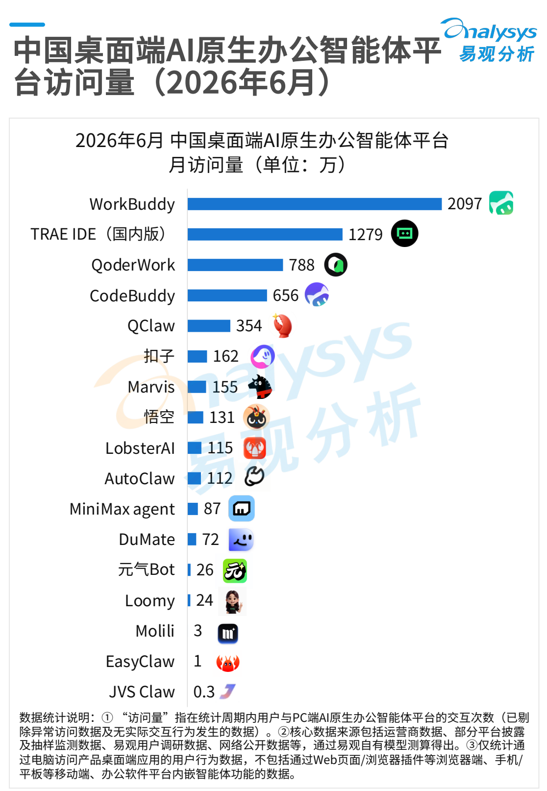
一、月访问量突破 2000 万
2026 年 Q2，腾讯科技公众号援引海外数据分析平台的数据报道：WorkBuddy（海外版 CodeBuddy）月访问量已突破 2000 万次，在 AI Coding Agent 领域跻身全球第一梯队。这一数字较年初翻了一倍以上，增长曲线持续陡峭。
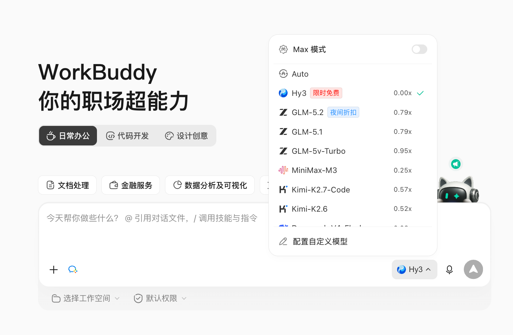
在市场格局对比图中，WorkBuddy 与 GitHub Copilot、Cursor、Windsurf 等产品同列第一阵营。值得注意的是，WorkBuddy 是其中唯一由中国科技公司推出、同时在国内外市场都保持强劲增长的 AI Coding Agent。
二、鸿蒙 PC 版正式上线
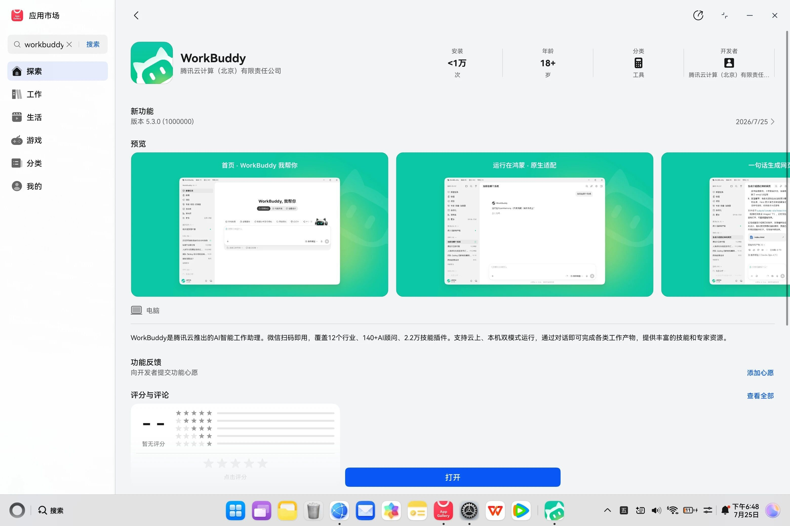
2026 年 7 月，WorkBuddy 鸿蒙 PC 版正式上线，成为首批原生支持华为鸿蒙操作系统的 AI Coding Agent。这意味着 WorkBuddy 已覆盖 Windows、macOS、Linux、HarmonyOS 全主流桌面操作系统，进一步拓宽了用户覆盖面。
鸿蒙版的核心能力与桌面版完全对齐：Agent 工作循环、Skills 系统、MCP 连接器、多模型路由、Teams 协作、自动化任务等全部可用。针对鸿蒙系统的特性，还增加了与鸿蒙分布式能力的初步对接，为后续跨设备协同打下基础。
三、增长驱动力分析
| 驱动力 | 具体表现 |
|---|---|
| 产品力 | Agent 工作循环的可靠性持续提升，长任务成功率行业领先 |
| 生态 | Skills 市场 7 万+ 技能、Expert 专家 100+、MCP 连接器覆盖主流工具 |
| 定价 | 免费版每月 500 积分 + Credits 计量，个人专业版 58 元/月，门槛远低于竞品 |
| 国际化 | 海外版 CodeBuddy 在 SuperAI 2026 发布后增长迅速，覆盖 8 大 IM 平台 |
| 开源贡献 | 积极参与开源社区，Skills/Expert 可由社区贡献，形成正向飞轮 |
四、关键里程碑时间线
| 时间 | 里程碑 |
|---|---|
| 2024 Q4 | WorkBuddy 正式发布，首批支持 Windows/macOS |
| 2025 Q1 | Skills 系统上线，开放社区贡献 |
| 2025 Q2 | MCP 连接器生态启动 |
| 2025 Q3 | Expert 专家系统上线 |
| 2025 Q4 | Teams 团队协作功能发布 |
| 2026 Q1 | 自动化任务（Automations）上线 |
| 2026-05-28 | 国际版在香港正式发布 |
| 2026-06-11 | SuperAI 2026 新加坡发布，Agent Runtime 架构公开 |
| 2026 Q2 | 月访问量突破 2000 万，跻身全球第一阵营 |
| 2026-07 | 鸿蒙 PC 版上线，实现全主流桌面 OS 覆盖 |
从市场份额数据和增长曲线看，WorkBuddy 已从「新锐工具」成长为「市场主力」。对于用户而言，选择一个增长势头强劲、生态持续扩大的平台，意味着更多的社区资源、更快的迭代速度和更长的生命周期保障。
第八十三章 AI 产业演化视角下的 WorkBuddy 定位
信源：腾讯研究院公众号（2026年），腾讯云架构师技术同盟公众号
腾讯研究院在 AI 产业研究系列中对 Agent 类产品做了系统性的产业分析。本章从产业演化的视角，解读 WorkBuddy 在 AI 产业格局中的位置和意义。
一、AI 产品的三层演化
腾讯研究院将 AI 产品的演化划分为三个层次：
| 层次 | 核心特征 | 代表产品 | 时间窗口 |
|---|---|---|---|
| 第一层：AI 工具 | 单点辅助，人在环中 | GitHub Copilot（早期）、Grammarly | 2022-2024 |
| 第二层：AI Agent | 多步自主执行，人在环上 | WorkBuddy、Cursor、Devin | 2024-2026 |
| 第三层：AI 基础设施 | Agent 编排平台，人定义目标 | WorkBuddy Teams + Automations、Miora | 2026+ |
WorkBuddy 当前处于第二层向第三层过渡的阶段：单次任务已实现高度自主（第二层），同时通过 Teams、Automations、SkillHub 等能力，正在构建 Agent 编排平台（第三层）。
二、Agent 产业的核心竞争维度
腾讯研究院指出，Agent 产品的竞争不在单一指标，而在五个维度的综合表现：
- 可靠性 (Reliability)——长任务能否跑通，出错能否自纠。这是「能用」和「好用」的分水岭。
- 安全性 (Security)——权限边界是否清晰，沙箱是否可靠，审计日志是否完整。
- 生态广度 (Ecosystem)——Skills/Plugin/MCP 的数量和质量，决定了 Agent 能做的事的上限。
- 可编排性 (Orchestrability)——多 Agent 协同、定时任务、条件触发，决定了从「工具」到「平台」的跃迁。
- 成本效率 (Cost Efficiency)——同等任务质量下消耗的 Token 和 Credits 越少，竞争力越强。
WorkBuddy 在这五个维度上的定位：可靠性靠 Harness 五层工程保障（行业领先）；安全性靠 Sandbox + Approval Gate + Audit Log（企业级）；生态靠 7 万+ Skills + 100+ Expert + MCP 标准（最广）；可编排靠 Teams + Automations + Sub-agent（已具备）；成本靠多模型路由 + 按需加载 + Prompt Cache（持续优化）。
三、WorkBuddy 的差异化定位
与同类产品相比，WorkBuddy 的差异化体现在三个方向：
1. 全栈 Agent，而非代码补全
GitHub Copilot 的核心是代码补全——你写代码它接话。WorkBuddy 的核心是 Agent 工作循环——你说目标它干活。两者的技术复杂度差距很大：补全只需要当前文件上下文；Agent 需要理解整个项目、规划步骤、执行操作、验证结果、自我纠错。
2. 人在环上，而非人在环中
传统 AI 工具要求人持续介入（人在环中）。WorkBuddy 的 Plan/Craft/Ask 三模式让用户可以「定义目标、审查计划、接收结果」（人在环上），中间执行交给 Agent。这意味着用户可以同时监督多个任务，大幅提升人效。
3. 开放生态，而非封闭花园
Skills 和 Expert 可由社区贡献和分发，MCP 连接器遵循开放标准。任何人都可以为 WorkBuddy 编写新能力。这与某些竞品的封闭生态形成鲜明对比——封闭生态短期体验一致，但长期创新能力受限。
四、产业趋势预判
腾讯研究院对 Agent 产业的三个趋势预判：
| 趋势 | 含义 | 对 WorkBuddy 的影响 |
|---|---|---|
| Agent 融合 | Coding Agent / 通用 Agent / 创意 Agent 的边界模糊化 | WorkBuddy 与 Miora 同源架构，天然具备融合优势 |
| Agent 基础设施化 | Agent 从「工具」变成「平台」，上层长出垂直应用 | SkillHub + TokenHub + Teams 已搭建基础设施层 |
| 企业级合规 | 企业要求审计、权限、数据隔离 | Sandbox + Audit Log + Approval Gate 已就位 |
对于企业用户，现在布局 Agent 平台的关键不是选哪个工具，而是选一个有平台化能力、有开放生态、有合规保障的 Agent 基础设施。WorkBuddy 在这三个维度的成熟度，使其成为企业 Agent 化转型的优先候选。
第八十四章 Vibe Coding 与 Agent 基础设施
信源：鹅厂技术派公众号、腾讯云架构师技术同盟公众号（2026年）
鹅厂技术派在技术前瞻系列中探讨了 Vibe Coding 这一新兴范式，以及 Agent 基础设施的技术要求。本章解读 Vibe Coding 的核心思想，以及 WorkBuddy 如何为之提供基础设施支撑。
一、什么是 Vibe Coding
Vibe Coding 是 AI 驱动的编程新范式。核心理念：开发者不再逐行编写代码，而是用自然语言描述意图（「vibe」），由 Agent 理解、规划、实现并验证。开发者的角色从「代码编写者」转变为「意图表达者」和「结果验收者」。
与传统 AI 辅助编程的区别：
| 维度 | 传统 AI 辅助（Copilot 式） | Vibe Coding（Agent 式） |
|---|---|---|
| 交互方式 | 逐行补全，人在键盘上 | 自然语言指令，人在审查席 |
| 上下文范围 | 当前文件 / 光标附近 | 整个项目 / 多文件 / 跨仓库 |
| 执行粒度 | 单行 / 单函数 | 整个功能 / 整个模块 |
| 验证方式 | 人眼审 + 手动跑 | Agent 自跑测试 + lint + 人审结论 |
| 迭代速度 | 分钟级 | 小时级完成天级工作 |
二、Vibe Coding 对基础设施的要求
鹅厂技术派指出，Vibe Coding 不是把大模型塞进编辑器就完事了。它对基础设施有五个硬要求：
1. 完整的项目理解
Agent 必须能读懂整个项目的结构、依赖、约定和历史，而不只是当前文件。WorkBuddy 通过项目上下文自动加载（.workbuddy/ 目录）+ Memory 系统实现这一点——项目约定、技术栈、代码风格、历史决策都在上下文里。
2. 可验证的执行
Agent 写完代码必须能自己跑测试、lint、类型检查，而不是把验证甩给人。WorkBuddy 的 Harness 反馈层内置了工具结果校验、时间戳校验、lint/测试运行和 Audit log——不通过的代码不会提交到结果区。
3. 安全的执行环境
Agent 需要一个沙箱来执行可能有害的操作（装依赖、跑脚本、访问网络），不能直接在用户的生产环境上跑。WorkBuddy 的 Sandbox 提供了文件系统隔离、Shell 隔离和权限边界——Agent 在沙箱里做事，只有通过 Approval Gate 的结果才落地。
4. 持续的上下文管理
长任务可能跑几小时，中间会话历史会膨胀到超出模型上下文窗口。必须有 Context Engineering 来持续压缩、检索和隔离。WorkBuddy 的五类上下文动作（写入/选择/检索/压缩/隔离）正是为此设计。
5. 多模型路由
不同任务环节适合不同模型：写代码用代码模型，写文档用长文本模型，做规划用推理模型。WorkBuddy 的 TokenHub 支持 14+ 模型动态路由，按任务类型自动选最优模型。
三、WorkBuddy 作为 Vibe Coding 基础设施
将上述五个要求与 WorkBuddy 的能力对应：
| Vibe Coding 要求 | WorkBuddy 能力 | 成熟度 |
|---|---|---|
| 完整项目理解 | 项目上下文 + Memory + .workbuddy/ | 生产级 |
| 可验证执行 | Harness 反馈层 + Audit log | 生产级 |
| 安全执行环境 | Sandbox + Approval Gate | 生产级 |
| 持续上下文管理 | Context Engineering 五类动作 | 生产级 |
| 多模型路由 | TokenHub 14+ 模型 | 生产级 |
五个维度全部达到生产级，这是 WorkBuddy 能支撑 Vibe Coding 范式的技术基础。
四、Vibe Coding 的实践建议
- 先 Plan 后 Craft——复杂任务务必先切 Plan 模式看规划，确认路径合理再执行。直接 Craft 跑复杂任务容易跑偏。
- 小步快跑——把大需求拆成 3-5 个小任务逐个跑，每个跑完验证再跑下一个。不要一次性丢一个三天量的需求。
- 善用 Skills——重复出现的任务模式封装成 Skill，下次一键调用。Skill 是 Vibe Coding 的「代码库」——你的 Skill 越多，Agent 能做的事越多。
五、从 Vibe Coding 到 Agent 基础设施
鹅厂技术派的判断：Vibe Coding 是 Agent 基础设施的「第一公里」。当单次 Agent 任务成熟后，下一步是多 Agent 协同（Teams）和自动化编排（Automations）——这恰好是 WorkBuddy 已经布局的方向。
WorkBuddy 的定位由此清晰：它不仅是一个 Vibe Coding 工具，更是一个 Agent 基础设施平台。底层是 Sandbox + Harness + Context + Memory + TokenHub；中层是 Skills + MCP + Expert；上层是 Teams + Automations + Sub-agent。用户可以从单次 Vibe Coding 起步，逐步扩展到多 Agent 编排，平滑过渡到 Agent 基础设施的使用。
2026 年下半年，Agent 基础设施将进入快速普及期。对于技术团队而言，现在用 WorkBuddy 积累 Agent 工程经验（Context Engineering、Harness 设计、Loop 管理），等同于在云计算普及前学会云原生——这不是学工具，是学下一代软件工程范式。
WorkBuddy x OPC — 一人公司的 AI 超级赋能
信源：央广网（2026-07-10）、腾讯新闻（new.qq.com 20260710A0B60300 / 20260711A0490R00）、腾讯云开发者社区（cloud.tencent.com/developer/article/2713698）、腾讯云官方
一、什么是 OPC
OPC 是 One Person Company（一人公司）的缩写。这不是法律意义上的个体工商户，而是一种用 AI 武装到牙齿的新型工作形态：一个人凭借 AI 工具链完成过去需要一个团队才能覆盖的产能——内容生产、数据分析、课程研发、行业研报、客户交付，全链路一人扛下。
WorkBuddy 的出现，让 OPC 从概念变成了可落地的现实。它的定位是"智能工作台"：读取授权文件夹、批量处理文件、一键生成文档/表格/PPT、数据分析、行业调研、内置百余种行业定制 Skills——文创从业者无需代码基础即可上手操作，从重复工作中解放出来，将精力聚焦于策划与创意本身。
二、全国首个 WorkBuddy OPC 合作社区
2026 年 7 月 10 日，全国首个腾讯 WorkBuddy OPC 合作社区在成都高新区天府长岛数字文创园正式成立。该社区由腾讯云与成都高新文创传媒有限公司联合发起，以 OPC（One Person Company）为核心主体，探索"政府扶持、平台支持、社区共创"三方协同的 OPC 全流程成长新路径。同时，WorkBuddy 数字文创 OPC 社区成立发布会也是 2026 年 APEC 数字周城市侧活动之一。
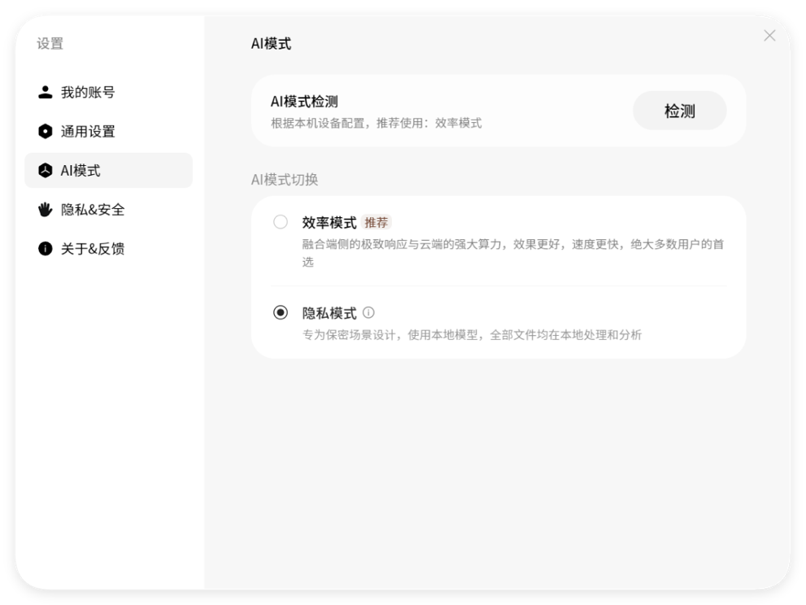
社区为入驻 OPC 提供两大专项支持
| 支持类别 | 具体内容 |
|---|---|
| 平台技术服务 | 入驻 OPC 可申领腾讯 WorkBuddy 平台专属账号，服务期内每月可免费获得 4000 通用算力积分，该积分在腾讯 CodeBuddy、WorkBuddy 等工具中互通使用，覆盖文创、办公和开发全场景，大幅降低 AI 使用成本 |
| 免费实战培训 | 入驻 OPC 可参加由天府长岛园区和腾讯云开发者社区搭建的专属实战训练营。训练营依托腾讯云开发者社区、TVP 及架构师技术同盟等成熟平台，邀请 AI 技术专家、商业创业、营销等领域导师授课，配套腾讯产品与技术专家手把手实操，构建"AI 资源普惠—产品教学—专家陪跑—经验复制"的全流程陪伴式服务链路 |
OPC 社区合作计划五大维度
腾讯云发布了"腾讯 WorkBuddy OPC 社区合作计划"，覆盖五大维度：
生产力底座
WorkBuddy 平台 + 4000 月积分，为 OPC 提供全场景 AI 工作台
工具赋能
百余种行业定制 Skills、MCP 连接器、自动化定时任务，按需取用
生态链接
腾讯文档、腾讯网盘、腾讯乐享打通，内容创作、知识沉淀与能力复用全链路
长期陪跑
价值放大
联合园区、社区组织多场沙龙授课，将成功打法沉淀为可复制路径，为更多 OPC 提供发展加速度
三、真实 OPC 案例：用 WorkBuddy 改写产能公式
案例一：SoR Core5 — 5 人团队干出 100 人的产能
教育科技团队 SoR Core5 仅 5 人，通过 WorkBuddy 打通课程研发、AI 开发与内容运营全链路：
| 指标 | 使用前 | 使用后 |
|---|---|---|
| 课程研发周期 | 2—3 年 | 1—3 个月 |
| 等效产能 | 5 人团队 | 过去 100 人团队才能达到 |
| 小红书粉丝增长 | — | 上涨 4.2 万 |
案例二：财经博主"宏哥"— 一人支撑一支投研团队
财经博主"宏哥"以 WorkBuddy 为"超级数字工作台"，42 个 AI 技能 7x24 小时运行：
| 任务 | 使用前 | 使用后 |
|---|---|---|
| 深度产业链研报 | 2 天 | 30 分钟 |
| 每日复盘 | 3 小时 | 15 分钟 |
一人支撑起一支专业投研团队才能完成的内容产出。
四、用 WorkBuddy 搭建个人 OPC 体系的实操路径
基于腾讯云开发者社区的公开案例，一个完整的个人 OPC 运营体系可以分为四个模块：
模块一：定时自动化选题
用 WorkBuddy 的自动化功能设置每天早上 8:00 自动执行的任务：抓取指定信息源（行业热点、平台热榜、竞品动态），按预设方向分类，生成当日选题建议清单并推送到通知。每天早上打开手机，选题清单已经在那里了。
| 配置项 | 建议 |
|---|---|
| 触发时间 | 早上 8:00-9:00，匹配内容创作黄金决策时段 |
| 信息源 | 指定具体平台/关键词，避免泛抓取导致噪音过大 |
| 输出格式 | 表格：选题方向、热度判断、适配平台、建议角度 |
| 执行频率 | 每天一次，避免信息过载 |
定时任务依赖 WorkBuddy 客户端在线。如希望完全离线运行，需要配置服务器端任务。
模块二：自建 Agent 团队
WorkBuddy 内置了很多专家 Agent，但说话不像你。自建 Agent 的关键是：喂素材、立风格规则、绑定权限。
- 第一步：喂素材——把过去写的文章整理好作为知识输入，在 System Prompt 里明确风格规则（开头必须有钩子、不用"总之"等套话结尾、多用具体细节等）
- 第二步：绑定权限——在 WorkBuddy 里配置公众号 AppID 和 AppSecret，配置完成后对 Agent 说"把这篇推到草稿箱"，它会自动调用 API 完成发布
- 第三步：选题驱动——定时任务推送选题清单（自动）→ 选方向发给 Agent（30 秒）→ Agent 生成初稿推进草稿箱（5-10 分钟）→ 打开后台审核微调（30 分钟到 1 小时）
模块三：接入外部模型
WorkBuddy 支持自定义接入外部模型。通过添加自定义模型（API 端点 + API Key），可以免费使用外部图片和视频生成能力，弥补内置模型在特定场景下的不足。
模块四：知识库
没有知识库，Agent 是一个通用写手——聪明但不认识你。知识库的作用是把身份信息、过往作品、行业经验变成 Agent 的长期记忆，从根本上解决"AI 味"问题。
一人公司的核心是"让每一分钟都花在只有自己能做的事上"。AI 工具帮你把那条线画得更清楚：哪些事只有你能做（判断、创意、和人的连接），哪些事可以交给工具（执行、排版、素材生成）——分得越清楚，效率越高。
WorkBuddy x FDE — 一个人当前线部署工程师
信源：腾讯云开发者社区（cloud.tencent.com/developer/article/2713698），2026-07-22 发布
一、FDE 是什么
FDE 全称 Forward Deployed Engineer（前线部署工程师 / 前线部署顾问）。这个词你可能没听过，但硅谷已经为它疯了。领英的数据显示，从 2023 到 2025 年，FDE 岗位数量涨了 42 倍；Indeed 上过去一年这类职位的招聘广告暴增 729%，年薪普遍从 17 万美元起步。OpenAI 专门成立了部署公司、Salesforce 一口气承诺招 1000 个、Anthropic 拉着高盛黑石组队——大厂们抢的不是会训模型的人，是能把 AI 塞进客户真实业务、让它真正跑起来的人。
说白了，FDE 就是被派进客户现场的那种工程师：上午跑调研、下午驻场看流程、晚上回来写代码，一边卖 AI 产品，一边教这套 AI 在客户那套乱七八糟的业务里落地。
二、FDE 与其他角色的区别
| 角色 | 回答什么问题 | 交付什么 |
|---|---|---|
| 销售 | "有什么功能" | 产品演示 |
| 实施人员 | 账号/权限/连接怎么配 | 系统上线 |
| 培训讲师 | 员工怎么操作 | 培训课程 |
| FDE | "先改哪个场景、影响什么指标" | 能持续运行的业务结果 |
FDE 交付的不是一场课，也不是一套提示词，而是一个能持续运行的业务结果。腾讯云内部已经设立相关岗位（正式岗位名"腾讯云 AI 前线部署工程师 FDE"，base 北京/上海，要求 3 年以上经验，熟练掌握 Python/TypeScript/Java 至少两门，精通大模型应用技术栈：上下文、RAG、MCP、SDD、Harness 工程），成为打通产品与客户需求的关键桥梁。
三、真实案例：王广辉 — 一个人扛下 FDE 全活
王广辉，腾讯云架构师技术同盟成员，一个做了 10 年技术、如今全面转型 AI 企业级交付的架构师。他没有大厂的团队，没有驻场几个月的预算，就靠一个人，三个月开拓了 18 家以上的企业客户，覆盖教育、制造、园区好几个行业。
而支撑他一个人干完这套 FDE 全活的，是 WorkBuddy。用他的话说，WorkBuddy"不是工具，是协同者"。
FDE 的活，难就难在它不是一种能力，是一串能力：跑客户、听懂对方说不清楚的需求、当场给方案、做培训、跟进十几个项目进度。真正拖垮一个人 FDE 的，从来不是技术难度，是量大、碎、还急。
四、用 WorkBuddy 搭建「AI 架构师」系统
王广辉基于 WorkBuddy 搭了一套叫"AI 架构师"的系统，核心功能是把客户会议的录音或对话直接变成能交出去的专业方案。
| 环节 | 以前 | 现在（WorkBuddy） |
|---|---|---|
| 需求整理 | 手写会议纪要理清需求，半小时 | 拉取会议转写，提炼结构化需求文档 |
| 方案生成 | 从零搭 PPT、调格式，一两个小时 | 从预置 23 个行业模板匹配，生成 PPT 和 Word 技术方案 |
| 分发交付 | 手动发企微、传文件，一小时 | 支持本地导出、企微直发、公网链接、腾讯文档四种方式 |
| 总耗时 | 3-4 小时 | 15-20 分钟 |
效率大概提升了 10 倍。但王广辉说，比 10 倍更值钱的是另外两件事：
- 质量稳了——以前方案质量随精力波动，现在模板标准化输出，哪个客户拿到的都是同一个水准
- 心态变了——以前开完会一想到还得回去写方案就累，现在是边喝咖啡边等成品
五、十五分钟出一份跨岗位复用的培训手册
FDE 不只交付方案，还得教客户公司的人用起来。以前这活比做方案还熬人：调研岗位痛点一小时、一个场景一个场景地写话术找案例两三个小时、再排版调表格转 HTML，整套 4-5 小时，而且不同岗位之间几乎没法复用。
现在一句话："生成行政岗位 AI 技能手册，表格形式，HTML 深色调。"WorkBuddy 按"岗位痛点 → AI 场景拆解 → 提示词模板 → 实操示例 → 量化效果"这套结构批量填好，直接生成深色调的 HTML。15 分钟。
一旦结构跑通，换个岗位就是换个输入的事——行政岗做完了，财务岗、销售岗照着改改就能出。
六、FDE 三条铁律
王广辉一个人扛下 FDE 的活，靠的是三条很朴素但天天在用的规矩：
| 铁律 | 核心要义 |
|---|---|
| 第一条 | 别问 WorkBuddy"能做什么"，直接告诉 WorkBuddy 你要什么。越具体它越强。把它当同事派活，别当搜索引擎提问。 |
| 第二条 | 先确认大纲，再让 WorkBuddy 展开。生成任何正式内容之前，先让它把大纲给出来，确认内容符合预期了再往下写。 |
| 第三条 | 给 WorkBuddy 立死规矩，尤其是涉及安全和交付顺序的。装任何 Skill 之前先做安全扫描，有风险立刻停；交付物严格按图片、格式转换、文案的顺序来，不许跳步。 |
七、WorkBuddy vs Cursor：一个管脑，一个管手
王广辉同时重度使用 Cursor 和 WorkBuddy，但他把分工说得很清楚：
Cursor 是你写代码时多出来的一双快手，是副驾；WorkBuddy 是你管项目时多出来的一个能独立干活的同事。你用 Cursor 解决这个功能怎么实现，用 WorkBuddy 解决这件事到底谁来干。一个管手，一个管脑。
FDE 的活，写代码只占很小一块。更大的部分是理客户、出方案、做培训、跟进度——这些需要连续上下文和个性化理解的事，恰恰是 Cursor 那类"写代码的手"管不了的。而 WorkBuddy 记得住每一个客户的跟进状态、背得下每一条培训话术，甚至比王广辉自己更清楚哪个项目卡在哪一步。
八、一个人当 FDE 的三步路径
第一步
把你的业务背景和标准模板喂进去（花一次时间，省无数次重复）
第二步
把反复用的工作流固化成自己的 Skill（下次一句话召唤）
第三步
严守安全和交付的规矩（AI 越强，越得由人兜底）
硅谷用年薪百万和一整个团队，去填 AI 落地的那道鸿沟。而一个人 + WorkBuddy 证明了另一种可能：当交付成本从三四个小时降到二十分钟，瓶颈就从"做不完"变成了"敢不敢要"。以前有些活不是不会做，是算了算时间成本觉得不划算、不敢接——而当一份方案的交付成本从三四个小时降到二十分钟，敢接的活，肉眼可见地变多了。
腾讯 Agent 生态协作 — WorkBuddy + QClaw + Marvis
信源：腾讯新闻（new.qq.com 20260422A02AFR00 / 20260521A04JQZ00）、腾讯应用宝 / Marvis 官网（marvis.qq.com）、QClaw 官网（qclaw.qq.com）、腾讯云开发者社区
一、腾讯 AI Agent 三兄弟
腾讯内部形成了差异化布局，不到两个月的时间，打造了覆盖个人、开发者和企业的全场景 Agent 产品矩阵，被称为"龙虾特攻队"。核心三款产品定位截然不同：
| 维度 | QClaw | WorkBuddy | Marvis |
|---|---|---|---|
| 一句话定位 | 手机聊天框里的电脑遥控器 | 能交付成果的 AI 专家团 | 系统级个人 AI 管家 |
| 主要入口 | 微信 / IM 与桌面端 | 桌面端、主流 IM、小程序 | 电脑端与手机跨端控制 |
| 核心任务 | 远程操作电脑、处理文件网页、邮件提醒、自动化任务 | 调研、PPT、数据分析、内容生产、业务洞察 | 文件搜索整理、系统设置、格式转换、知识库、本地理解 |
| 技术气质 | 本地 Agent、Skills、记忆、安全网关 | 多 Agent 并行、多专家/多模型、MCP 与 Skills 扩展 | 本地大模型、端侧模式、系统权限、文件与图片理解 |
| 适合人群 | 想随时远程让自己电脑干活的个人用户 | 创业者、职场人、运营/市场/数据等结果导向用户 | 重视本地文件、隐私、设备管理和生活场景的个人用户 |
| 团队背景 | 腾讯电脑管家团队 | 腾讯云 CodeBuddy 产品线 | 腾讯应用宝团队 |
| 上线时间 | 2026 年 3 月（中文版），4 月（海外版） | 2026 年 3 月 9 日（公测） | 2026 年 5 月 20 日 |
二、QClaw — 入口型 Agent
QClaw 是首个基于 OpenClaw 开源框架构建的消费级 AI 智能体，由腾讯电脑管家团队打造——这款桌面工具产品在中国大陆拥有数亿用户。中文版于 2026 年 3 月上线，凭借免部署、无需命令行的优势，上线 10 天就获得了超百万的用户量。海外版于 4 月开启内测。
QClaw 的核心叙事不是"替你写一份报告"，而是"让你的电脑能被聊天应用唤醒并执行任务"。用户不必经历复杂的环境部署，也无需任何技术背景，只需点击下载安装，三步就能上手。如果不在电脑前，用户只需要在 WhatsApp 或 Telegram 上发一条消息，QClaw 就会在电脑上执行任务，并快速交付成果。
- 一键安装——支持 macOS（Apple/Intel）和 Windows，自动处理所有依赖和运行时
- IM 直联——支持 WhatsApp、Telegram、Discord、Slack、iMessage、微信、企业微信、飞书、钉钉等
- 持续记忆——学习偏好和上下文，持续成长，越来越懂你
- 安全网关——每步操作都被监控、记录，用户可随时审查
- Skills 生态——兼容 OpenClaw 社区技能包，随取随用
三、Marvis — 系统型 Agent
Marvis（马维斯，昵称"小马"）于 2026 年 5 月 20 日正式上线，是腾讯操作系统层级 AI 助手。区别于传统 AI 对话工具或单一应用层 Agent，Marvis 的核心定位在于"操作系统层级"——它可将整台电脑变成可对话的"智能对象"，直接触达系统底层，实现从系统设置到数据处理的闭环操控。
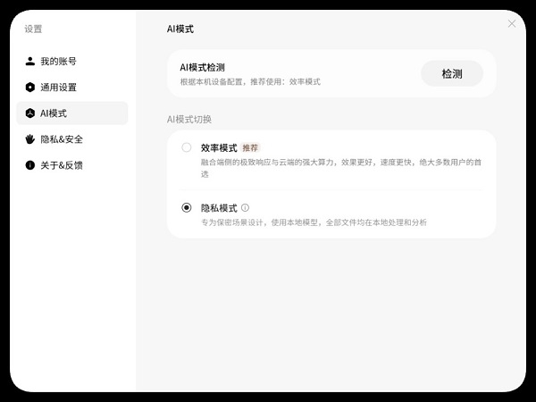
六大预置 Agent
| Agent | 职责 |
|---|---|
| 主 Agent | 全盘统筹，理解需求并拆解任务，调度其他 Agent 完成任务 |
| File Agent | 数字资产管家：文件搜索、阅读、编辑生成、格式转换 |
| Computer Agent | Windows 系统运维专员：系统设置、硬件检测、开机启动管理、冗余文件清理 |
| App Agent | 应用操作专员：调用电脑上的 App 与 Exe 应用，内嵌应用宝引擎可跑安卓 App |
| Browser Agent | 网页交互专员：接管网页，进行网页交互与数据抓取 |
| Search Agent | 搜索专家：网络搜索与信息聚合，快速定位答案并给出关键引用 |
效率模式 vs 隐私模式
| 模式 | 架构 | 适用场景 |
|---|---|---|
| 效率模式 | 端云协同：复杂问题理解与规划借助云端模型，文件处理、执行动作和本地索引尽量在端侧完成 | 日常任务，追求更快响应和更稳定体验 |
| 隐私模式 | 端侧模型：所有数据解析、图片识别及对话均在本地完成，完全不上云，断网亦可正常使用 | 财务、法务、人力资源等对数据安全有极高要求的场景 |
L2 级安全兜底
删除文件、修改系统核心配置等敏感操作，系统会先给出执行计划并请求用户确认；支付等更高敏感级别动作必须由用户本人完成。支持 Windows、macOS、Android 多端入口及同账号互通——用户可在手机上直接查看电脑屏幕并实时接管，即使个人电脑处于锁屏状态，手机仍可远程输入密码解锁操控。
四、三个典型场景与选型决策树
场景一：远程获取电脑文件（选 QClaw）
你在外面开会，突然需要电脑上的一个文件，并希望顺手整理网页资料。QClaw 的逻辑最顺——把需求发给聊天框，电脑端 Agent 在本机环境里执行，文件、浏览器、邮件等本地资源都可以成为它的操作对象。
场景二：快速制作行业分析 PPT（选 WorkBuddy）
你要在两小时内做一份行业分析 PPT，不仅需要检索资料，还要提炼观点、生成结构、做图表和汇报口径。WorkBuddy 更合适——它的产品叙事是"AI 专家团"和"从策略到交付一站搞定"，把任务当成可拆解、可并行、可交付的工作流。
场景三：本地文件管理与系统设置（选 Marvis）
你的问题是"帮我找到最近下载过的合同，提取重点，顺便把电脑某项设置改好，再把整理结果同步给手机查看"。Marvis 的优势更明显——它强调对本地文件、图片文字、系统设置和跨端接管的理解，本地模式文件 0 上传。
选型决策树
- 你是否经常"不在电脑前，但希望电脑继续替你干活"？→ 优先看 QClaw
- 你是否更关心"最后能不能给我一份完整报告、PPT、分析或方案"？→ 优先看 WorkBuddy
- 你是否更关心"本地文件、系统设置、跨端接管与隐私模式"？→ 优先看 Marvis
五、组合使用方案
对于重度用户来说，这三款产品不是三选一，更合理的组合是：
| 产品 | 负责 | 解决问题 |
|---|---|---|
| QClaw | 管远程唤起 | 怎么从手机触达电脑 |
| WorkBuddy | 管成果交付 | 怎么把任务变成工作成果 |
| Marvis | 管本地系统与知识库 | 怎么让 AI 更懂我的设备与本地资料 |
三者可以串联起来：让 Marvis 先找到目标文件，再丢给 WorkBuddy 去分析处理——一个管"找到"，一个管"算出来"。QClaw 则负责在外出时远程触发整个流程。当通讯入口、办公交付和系统级本地理解连在一起时，AI Agent 才真正从"会聊天的工具"，走向"能持续替你处理事务的数字劳动力"。
六、四款腾讯 Agent 免费额度对比
| 平台 | 免费额度 | 折算日均问答次数 | 特点 |
|---|---|---|---|
| Marvis | 1000 万 Token/天 | 200-500 次（视任务复杂度） | 简单任务下最宽裕 |
| QClaw | 800 积分/天 | 80-160 次 | 重度任务下可能吃紧 |
| IMA | 签到 100 算力/天 | 50-250 次（视模型选择） | 切模型需注意算力消耗 |
| WorkBuddy | 签到 150 积分/天 | 15-30 次 | 免费额度最紧但 Agent 编排能力强，企业旗舰版无限制 |
七、为什么腾讯会同时做三个
从产品矩阵看，腾讯并不是只押注一种 Agent 形态，而是在同时试探三个入口：
| 入口类型 | 代表产品 | 逻辑 |
|---|---|---|
| 通讯入口 | QClaw | 用户已习惯在微信、企业微信、飞书、钉钉等工具里发指令，如果 Agent 能从这些入口进入，学习成本最低 |
| 办公交付入口 | WorkBuddy | 用户不只是要聊天，还要报告、方案、图表、PPT 和业务洞察 |
| 设备系统入口 | Marvis | 当模型能够理解文件、屏幕、系统设置和跨端任务时，Agent 会更接近个人操作系统的一部分 |
QClaw 的中心是"电脑执行"，WorkBuddy 的中心是"工作成果"，Marvis 的中心是"个人设备与本地上下文"。它们都在回答"AI 怎么替人干活"，但对"活"的定义不同。未来真正有意思的地方，可能不是三者谁取代谁，而是这些能力会不会在腾讯生态里逐渐打通。
作为本绿皮书的编者（GoodTime，公众号「宁的 AI 小站」），实测三款产品后的建议：Marvis 常驻后台当电脑管家（桌面整理、文件搜索、出门在外远程取文件），WorkBuddy 按需打开（写报告、分析数据、处理文档），QClaw 在出差和通勤场景下用微信远程触发。三者组合使用，覆盖了"从触发到执行到交付"的完整链路。
WorkBuddy 近期重大更新与生态动向
这一部分收录了 2026 年 7 月底到 8 月初，腾讯官方媒体与权威行业媒体集中报道的 4 件 WorkBuddy 大事：7 月 30 日的 V5.3.5「人机双写」大版本发布、鸿蒙 PC 版的深度技术还原、WorkBuddy 成为腾讯内部"超级项目"并得到马化腾高度关注、面向个人版用户的"升级套餐"政策。每件事都标志着 WorkBuddy 在"从 AI 工具到 AI 同事"这条路径上又迈进了一步。
本部分信源：雷峰网、腾讯云开发者社区、AI 蓝媒汇/腾讯科技、IT 时代网/腾讯新闻，以及腾讯 WorkBuddy 官方公众号。
第八十八章 「人机双写」V5.3.5——AI 时代的 Office
信源：雷峰网报道、腾讯新闻 2026-07-30 17:03 报道，作者：腾讯 WorkBuddy 团队
一、为什么是 V5.3.5？
2026 年 7 月 30 日，腾讯 WorkBuddy 发布重大版本更新（V5.3.5）：联合腾讯文档，正式推出面向 Agent 时代的「人机双写」协同编辑能力。新版本支持用户在打开 Word、Excel、PPT、Markdown 等格式文档时，直接与 AI 在同一文件内共同创作、修改并实时协同，着力解决"人机混编"团队多角色协作等痛点。
从传统 Office 的"人与文件交互"，到在线文档的"人与人协同"，再到 AI 时代的"人与 AI 共同完成任务"——WorkBuddy 该功能的上线，让 AI 第一次从办公协同的"外挂"变成同一文档里的协作方，并在业界内首次做到"人人、人机、机机"多端同步协同，推动 Office 进入 AI 原生协作时代。
二、三大核心升级
1. 覆盖更多文件与场景，支持完整的人机共写
依托腾讯文档编辑能力，最新版 WorkBuddy 支持 Markdown、Word、Excel、PPT 等主流办公格式，并同时覆盖本地 Office 文件和腾讯文档在线文档。无论是论文、标书、教案、技术文档、咨询报告，还是运营周报、路演材料与数据分析，用户都可以在同一工作流中完成创作、编辑与协作。
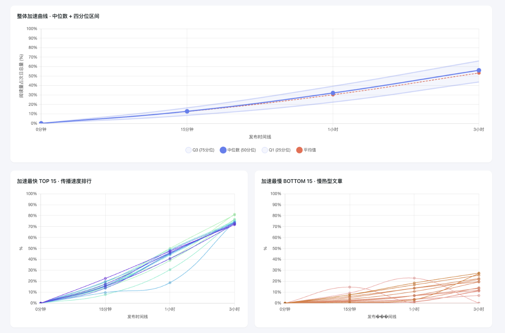
2. 框选即改，精准又高效
用户可以框选段落、数据区域或 PPT 画布，让 AI 只在指定范围内完成修改，其余版式和内容保持不变。例如：
- 在 Excel 里圈选几千行数据，让 AI 做透视分析、生成趋势图表，或批量纠错、套用复杂公式
- 切换到 PPT，在空白区域让 AI 把分析结论和图表自动排版呈现
- 标书、教案等结构化文档，可以圈出待补充区域，让 AI 按模板补全内容
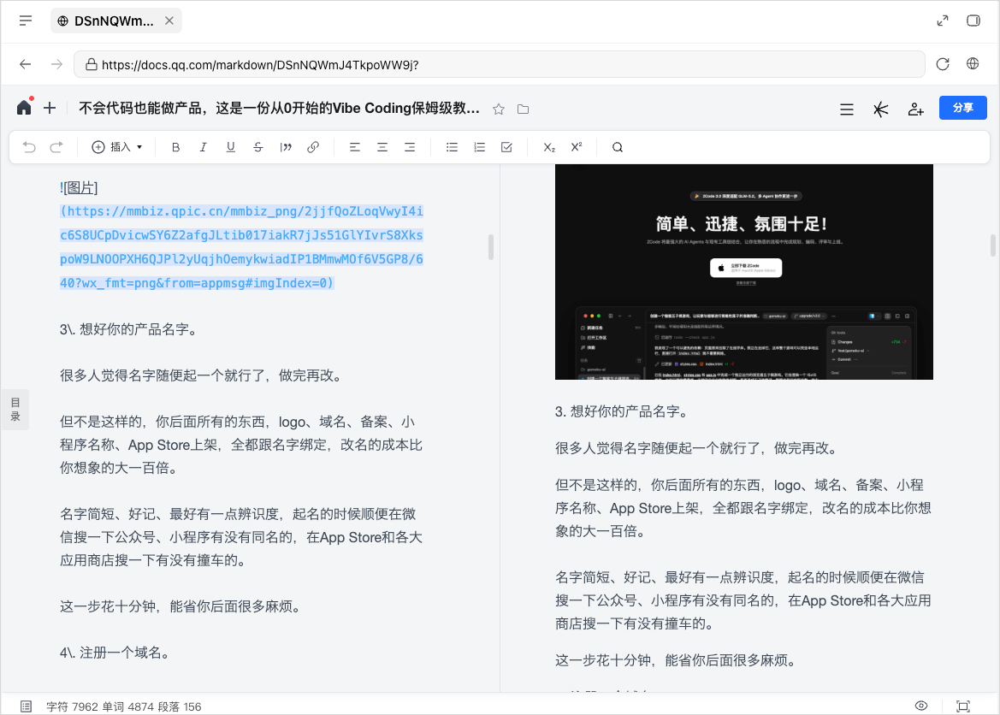
3. 多人加 AI，实时协同不断线
AI 共创的内容可以一键上传到腾讯文档，团队成员在不同终端共同编辑同一份文档，也可和同一个 AI 伙伴协作。各方改动实时同步，文档上下文持续保留。从个人写作、团队共编，到多人围绕同一任务和 AI 一起推进，人人协同、人机协同、机机协同在同一份文档里融为一体。
三、办公的第三个阶段
从第一代解决个人本地办公的 Office，到第二代解决多人协同的在线文档，随着 AI Agent 深度融入企业生产力，办公软件正走向第三个阶段。WorkBuddy 通过打通"人人、人机、机机"协作，正让 Office 从一个单纯的工具，变成能理解任务、看懂上下文、协同编辑、持续管理业务的 AI 原生办公系统。
| 阶段 | 代表 | 核心交互 | 关键能力 |
|---|---|---|---|
| 第一代 | Microsoft Office | 人与文件交互 | 本地编辑、保存、打印 |
| 第二代 | 在线文档（腾讯文档、飞书文档、Google Docs） | 人与人协同 | 云端实时同步、版本管理、评论 |
| 第三代 | WorkBuddy「人机双写」 | 人与 AI 共同完成任务 | AI 嵌入式协作、框选即改、Agent 原生 |
四、官方配套生态布局
目前，按 DAU 计 WorkBuddy 已成为国内最受欢迎的效率智能体工具之一，并率先实现了 Win、Mac、鸿蒙、安卓等主流操作系统的全覆盖。以此为底座，WorkBuddy 深度集成腾讯文档、腾讯 ima、腾讯会议、腾讯网盘、TAPD、腾讯乐享等生态产品，基于 OneID 全面打通了内容创作、知识沉淀与能力复用的链路。
你再也不需要在 Word 窗口和 AI 聊天窗口之间来回复制粘贴了——WorkBuddy 把整套文档编辑界面直接搬到了 AI 对话框旁边，AI 不再是"侧边栏的小助手"，而是真正参与创作的协作者。选中一句话，AI 就地改；圈一组数据，AI 就地分析；上传一份底稿，AI 接着你的思路继续写。
第八十九章 鸿蒙 PC 版深度还原——首个桌面办公智能体如何炼成
信源：腾讯云开发者社区 2718640，原创作者：gavin1024，发布时间：2026-07-30 17:10
一、从零到一：鸿蒙 PC 版诞生的背景与契机
2026 年 7 月 25 日，效率智能体腾讯 WorkBuddy 正式上架鸿蒙电脑应用市场，成为鸿蒙平台首个桌面办公智能体。这一节点的达成并非偶然——在此之前，WorkBuddy 鸿蒙移动版已率先上线并收获用户评分 4.6 的口碑。随着鸿蒙生态设备规模在 2026 年 7 月突破 7000 万台，大量职场用户在各类渠道发出同一个呼声：WorkBuddy 什么时候能上鸿蒙 PC 版？
桌面端是职场人真正的生产力主场。相比于移动端以轻量交互和远程控制为主的使用场景，PC 端承载着复杂文档处理、多窗口协作、本地文件系统操作等重度办公需求。一款成熟的效率智能体若缺少桌面端支持，就如同给职场人配备了一位只能站在门口出主意的顾问，却无法走进办公室真正动手干活。
二、联合攻坚：面对零经验可循的全新 OS 环境
2.1 不是简单移植，而是原生重构
相比于 Windows、macOS 等主流系统平台，桌面智能体原生适配鸿蒙系统并非简单的代码复制粘贴。鸿蒙操作系统采用了不同于传统桌面系统的架构设计，这意味着 WorkBuddy 团队面对的是一套全新的系统调用方式、权限模型和交互范式。
联合攻坚的首要挑战来自于系统级权限适配。WorkBuddy 在核心应用场景中涉及多个敏感权限域：
- 系统登录认证——需要对接鸿蒙账户体系
- 电脑连接功能——需要建立稳定的跨设备通信通道
- 技能调用——涉及本地文件读写和网络请求的系统授权
- 产物预览——要求与鸿蒙系统的显示子系统深度集成
这些关键链路中的任何一个环节未能打通，都会导致用户体验出现断点。
2.2 关键链路的逐一攻克
WorkBuddy 团队与鸿蒙专家团队采取了深度协同的作战模式——双方围绕产品适配、系统能力和用户体验三个维度展开集中攻坚，建立了快速响应的沟通机制和技术对接通道。
其中，技能调用是 WorkBuddy 作为智能体的核心能力载体——80,000+ 技能的正常运行依赖于底层系统对进程调度、网络访问、文件操作等基础能力的完整支持。联合团队逐一对接鸿蒙系统的应用沙箱模型和资源访问接口，确保每一项技能都能在合规的前提下发挥完整功能。
三、用 AI 开发 AI：人机协同的研发效率实践
在本次鸿蒙 PC 版的研发攻坚过程中，联合团队大量调用了 WorkBuddy 本身的开发能力，通过人机协同大幅缩短了开发周期。这种用 AI 开发 AI 的模式，既是 WorkBuddy 产品能力的实战检验，也为智能时代的软件工程提供了可参考的范式。
具体而言，研发团队在日常开发中将重复性高、模式固定的编码工作交由 WorkBuddy 辅助完成——例如在适配鸿蒙系统 API 的过程中，大量的接口封装代码、错误处理模板和数据转换逻辑都可以由 WorkBuddy 根据开发者的自然语言描述自动生成初稿，开发者只需专注于核心业务逻辑的设计与审核。在代码审查环节，review-pr 技能能够自动检测代码变更中的潜在问题，帮助团队在早期发现并修复缺陷。
它让研发人员能够将更多精力投入到需要创造性思维和深度判断的工作中。在面对鸿蒙系统适配这类缺乏先例可循的技术挑战时，人类工程师的经验直觉与 AI 助手的快速执行形成了有效的互补关系。
四、安全底座与生态拓展性的双重验证
鸿蒙 PC 版的顺利上线，进一步验证了 WorkBuddy 的安全底座与生态拓展性。腾讯云官方产品的身份背书、等保 2.0 合规资质以及支持私有化部署的企业版能力，共同构成了 WorkBuddy 的安全防护体系。
生态拓展性方面，WorkBuddy 此前已通过全国首个省级政务智能中枢平台「湾擎」的上线试运行得到了初步验证——专为政务场景定制的 WorkBuddy 即将面向广东全省公务员开放使用，这一高安全要求的落地场景充分说明了产品在严肃办公环境中的可用性。
五、独家体验：「碰一碰」分享，上下文丝滑续接
依托鸿蒙系统的底层能力，鸿蒙 PC 版还上线了一个其他主流系统目前无法实现的功能：「碰一碰」分享。用户不仅能"碰一碰"分享产物文件，还能把与 AI 沟通的完整上下文历史记录直接碰给对方——接收方打开后，无需重新截图或重新描述背景，直接就能顺着原有的上下文，继续与智能体无缝交流。
六、本章实战启示
| 启示点 | 具体内容 |
|---|---|
| 全终端覆盖不是装个壳 | 每个 OS 都需要重新适配权限、文件、网络、显示子系统 |
| 人机协同开发已成现实 | 在 AI 开发 AI 的模式下，编码速度提升数倍 |
| 跨设备上下文是真正的护城河 | 碰一碰传文件 + 传记忆 = 其他生态无法复制的体验 |
| 政务场景倒逼安全能力 | 广东全省公务员试运行，是对安全底座最严苛的验证 |
第九十章 WorkBuddy 给腾讯长脸了——内部「超级项目」与战略地位
信源：AI 蓝媒汇 / 腾讯科技（叶二/魏晓），发布于 2026 年 8 月初，原文标题《WorkBuddy 给腾讯长脸了》
一、一段现场对话刷屏整个 AI 行业
两个月前，在腾讯云 AI 产业应用大会上，腾讯集团高级执行副总裁汤道生向首席 AI 科学家姚顺雨抛出灵魂拷问：
"你觉得，腾讯 AI 真的慢吗？"
姚顺雨一语四两拨千斤：
"感觉这应该是我问你的问题。"
彼时的腾讯，不管是底层大模型基座，还是面向普通用户的 C 端 AI 产品，始终没能跑出一款达到市场预期的作品，"腾讯 AI 掉队"的论调此起彼伏。这场对话早已埋下伏笔：最先需要为腾讯 AI 节奏破局的人，反而成为了汤道生。其所掌管的腾讯云推出的 WorkBuddy，目前正在 AI 办公赛道一骑绝尘。
二、Q2 数据：WorkBuddy 一骑绝尘
根据易观发布的报告显示，在 Q2 办公智能体平台中：
| 排名 | 产品 | 月访问量 | 备注 |
|---|---|---|---|
| 1 | 腾讯 WorkBuddy | 2097 万 | 超过第二名+第三名之和 |
| 2 | 字节 Trae | — | — |
| 3 | 阿里 QoderWork | — | — |
日活方面，有消息显示，截至 7 月 WorkBuddy 已突破 1300 万日活，是腾讯全系 AI 产品中唯一一款不靠流量导流、不靠营销造势，完全依托用户真实需求实现自然高速增长的 C 端产品。
三、V5.3.5「人机双写」背后的组织调整
「人机双写」功能的上线，不只是内部部门的协同，而是一次深度的人才融合与资源整合——腾讯文档多名核心骨干直接调任至 WorkBuddy 团队，负责文档协同与 AI 智能体的融合场景。
一位腾讯内部人士告诉 AI 蓝媒汇：第一阶段，WorkBuddy 解决的是 AI 办公能不能干活的问题，依靠桌面智能体能力打通本地文件、自动执行多步骤任务，依靠低门槛优势快速收获海量用户，完成规模积累。第二阶段，则是解决"AI 办公"本身的痛点，让 AI 彻底融入完整办公工作流，打破传统 AI 问答与实际创作割裂、需要反复跳转复制的低效难题。
四、马化腾罕见高度关注
市场亦有消息显示，WorkBuddy 已经成为腾讯内部的「超级项目」，得到了马化腾的高度重视，几乎从不缺席产品会议。就在今年 Q1 财报中，马化腾还专门提及了 WorkBuddy，称其为目前国内使用最广的效率 AI 智能体。
要知道，过往数个季度，腾讯对 AI 业务的表述大多偏向技术投入、底层研发的铺垫性描述，鲜有具体产品的正面肯定与高光评价。但这一次，马化腾挺起了腰。
五、为什么是腾讯？为什么是 WorkBuddy？
有业内人士告诉 AI 蓝媒汇，现在市场上能够明显转化为生产力的 AI 应用场景，一个是编程，另一个就是办公。而 WorkBuddy 正是第一个成功把大模型能力应用到白领的日常办公，跑通商业化闭环的。
5.1 腾讯的场景积累
不同于市场普遍认为在 AI 领域年轻开发者有优势，WorkBuddy 则出自于一帮行业老兵之手，有多年的产品打磨经验。"说到底，在把技术转化为可落地、可规模化的产品应用上，腾讯还是有优势，有深厚积淀的。"
5.2 落后者的激进
事实上，此前阿里跟字节仍然将大量资源投在千问豆包等 C 端对话助手上，而腾讯作为落后者，在面对其他战线可能存在的机遇时，表现非常激进。此前"龙虾"爆火，腾讯多部门以赛马形式密集布局其中，而 WorkBuddy 正是胜出者。
六、红利窗口正在关闭
对手们已经反应过来：
- 阿里：将旗下 QoderWork、悟空、MuleRun 三款办公智能体产品合并，统一推出全新拳头产品"千问办公"，由钉钉新任 CEO 亲自操盘
- 字节：7 月 30 日完成重大组织升级，将飞书产品团队整体并入豆包体系，打通大模型能力与办公协同场景，瞄准政企办公市场
两大头部对手同步战略转向、集中资源围剿 AI 办公赛道——WorkBuddy 独享赛道红利的窗口期已然结束。接下来，就是真刀真枪的贴面厮杀。
WorkBuddy 处在行业第一的窗口期不会太长——现在用好它，意味着你比同行更早积累了 AI 办公的方法论；等对手的产品追上来，你已经能成为公司内 WorkBuddy 培训的内训师。这份时间差红利，本身就是绿皮书帮你抢到的。
第九十一章 56 岁，体制内，我用 WorkBuddy 把 AI 用进了日常
信源：腾讯云开发者社区 2719510，原创作者：一位 56 岁的县城公务员，发布时间：2026-08-01
一、自述背景
作者今年 56 岁，在河北一个小县城做行政执法安全工作。体制内干了快三十年，按理说这个年纪，大部分人早就不折腾新技术了。但他过去两年开始认真学 AI——不是那种蜻蜓点水式的"看看新闻"，是真的上手用。从最早的网页聊天到后来装各种客户端，一直在找一个真正能融进日常工作流的东西。直到遇到 WorkBuddy。
这篇文章不是官方软文，是他实际用了一个多月的真实记录。说清楚它到底能干什么、在哪里踩过坑、以及什么样的人适合用它。
二、三个高频实战场景
场景 1：公众号写作——从笔记到成稿
他运营一个读书公众号"书香阅世界"，每周要发 2-3 篇文章。
| 环节 | 以前 | 现在 |
|---|---|---|
| 读书记笔记 | 手写笔记 | 在 Obsidian 里记笔记 |
| 初稿 | 对着笔记发呆 2 小时 | 把笔记路径丢给 WorkBuddy，5 分钟出初稿 |
| 修改 | 边写边改 | 花 20-30 分钟改一遍，加入自己的观点和故事 |
| 效率提升点 | 不是"写得快"，而是"不用从零开始对着空白页发呆了" | |
他的判断：WorkBuddy 给的初稿质量大概在 70 分 左右——结构完整、语言通顺，但缺少"人味儿"。最终成稿保持在 85 分以上。
有一次他直接用了它生成的初稿没怎么改就发了，读者反馈"这篇感觉不像你写的"。结论：AI 给你骨架，血肉必须自己填。
场景 2：工作报告——把碎片变结构
体制内写报告是家常便饭。他以前最头疼的不是写，而是"把脑子里一堆零散的东西理出结构"。现在的做法：
打开 WorkBuddy，用语音或者打字把想到的点全部倒进去——不用管逻辑、不用管顺序，就是 dump。 然后跟它说： "帮我把这些零散内容整理成一份季度工作总结的提纲，分三个板块：主要工作、存在问题、下一步计划。每个板块下面列出 3-5 个要点。" 它会在 30 秒内给你一个结构清晰的提纲，再根据提纲逐项填充内容。
这个流程帮他省掉了至少 40% 的"对着空白文档发愁"的时间。
场景 3：知识管理——让读过的书能被找回来
他读书量不小，每年大概 50-60 本。但以前读完就忘，笔记散落在各个地方，想找的时候根本找不到。WorkBuddy 可以连接他的 Obsidian 笔记库，直接问它："帮我找一下我关于零极限的笔记，那本书里有没有提到'清理工具'的具体用法？"它会在笔记库里搜索，找到相关内容，还能总结。这比自己翻几十个 Markdown 文件快太多。
三、一个 56 岁的人用 AI 的真实体会
刚开始用 WorkBuddy 的时候，他一度觉得很挫败。它的功能多、配置项多，对于一个不是技术出身的人来说，学习曲线不算平缓。但后来想明白了一件事：你不需要学完所有功能才开始用，你只需要学会解决你当前那个问题的那个功能。
他每天实际用到的功能大概就 4-5 个：读文件、写文档、搜网页、整理思路、管理笔记。其他高级功能没碰过，也不影响每天用得挺开心。
56 岁学 AI 的最大优势是——不会被"应该怎么用"框住。年轻人容易纠结"这个工具设计出来是干什么的"，他不纠结，只看"这个东西能帮我解决什么问题"。这种实用主义反而是优势。
四、踩坑记录（真实教训）
| 坑 | 症状 | 解决办法 |
|---|---|---|
| 1. 文件路径搞不清楚 | macOS 路径与 Windows 不一样，中文路径有时报错 | 所有工作文件放在一个英文命名的文件夹里，路径尽量短 |
| 2. 一次性让它做太多事 | "总结+对比+综述+做表"一轮塞过去，结果跑乱 | 拆开任务，一次只让它做一件事，多轮对话比一轮复杂指令靠谱得多 |
| 3. 忘了告诉它"不要联网" | 有些操作它会联网搜索，体制内涉密 | 涉及工作内容时，开头就明确说"以下内容仅限本地处理，不要联网" |
| 4. 过度依赖，忘了自己思考 | 两周后发现自己思考能力在退化 | 先自己思考 5 分钟把想法写下来，再让 AI 优化。AI 是助手，不是替身 |
五、五条使用心得总结
- 把它当助理，别当神。它能做 70% 的体力活，剩下 30% 的判断和创造必须你来。
- 从小场景切入。别一上来就想让它重构你的全部工作流。找一个最痛苦、最重复的事，先用它解决这一个。
- 学会写清晰的指令。这不是技术问题，是沟通问题。告诉它"你是谁、要做什么、给什么材料、要什么结果、不要什么"，越具体越好。
- 本地优先，安全第一。敏感内容明确标注不要联网，养成习惯。
- 年龄不是障碍，心态才是。我 56 岁能学会，你更没问题。
这位作者的案例之所以打动我，是因为他代表了 WorkBuddy 用户最广泛的一面：不是技术极客，也不是 AI 重度玩家，就是一个 56 岁的普通公务员，凭借实用主义和学习意愿，把 AI 用到了日常。绿皮书这一章送给所有觉得自己"年纪大了/不是技术出身/用不来 AI"的朋友——你需要的不是更多教程，是先找到你工作里最痛苦的那一件事，然后让 WorkBuddy 帮你解决它。
WorkBuddy x 法律行业
信源：深圳龙岗区司法局官网（lg.gov.cn，2026-07-28）、腾讯新闻（new.qq.com/rain/a/20260725A030RU00）、嘉潍律师事务所专题活动实录
一、法律行业的 AI 痛点
法律服务业是知识密集、文本驱动、逻辑严密的行业。文书撰写、案卷整理、材料汇总等事务性工作占用了从业者大量时间和精力。更关键的是，法律从业者对数据安全极其敏感——"想用 AI，又怕不安全"是很多律师的共同顾虑。
二、WorkBuddy 在法律行业的实战场景
| 场景 | 以前 | WorkBuddy 方案 |
|---|---|---|
| 法律文书撰写 | 手动起草，2-3 小时/份 | 输入案情要点，自动生成文书初稿，律师复核专业判断 |
| 案卷整理归档 | 人工分类、编号、装订，半天起 | 批量读取 PDF/扫描件，自动按案号、日期、类型分类整理 |
| 庭审材料生成 | 逐份整理证据清单、庭审提纲 | 一键生成庭审提纲、证据目录、时间线梳理 |
| 合同条款比对 | 逐条人工核对，易遗漏 | 两份合同同时上传，自动标红差异条款并给出风险提示 |
| 律所经营报表 | 财务软件导出后手工汇总 | 自动读取财务数据，生成可视化经营分析报表 |
| 多案件交叉检索 | 逐个打开案卷查找关联 | 建立私有化知识库，自然语言查询跨案件关联信息 |
三、官方培训实录：深圳龙岗「AI 赋能律所提质增效」
2026 年 7 月，深圳市龙岗区司法局联合区人工智能（机器人）署等多部门，在坂田街道国际机器人产业园（OPC 第一区）成功举办"AI 赋能律所提质增效——WorkBuddy 助力智能办公"专题业务培训。辖区律所合伙人、企业法务代表及 OPC 相关人士等 80 余人齐聚现场。
培训突出"场景化、实战化"操作。腾讯技术专家结合法律行业常见应用场景，展示了如何利用 AI 工具高效完成法律文书撰写、远程案卷调取、庭审材料生成及律所经营报表输出等功能，并重点介绍了本地化部署与数据安全保密合规机制，确保敏感信息全程留痕、本地存储，有效化解了从业者"想用 AI、又怕不安全"的顾虑。
四、嘉潍律师事务所专题活动
2026 年 7 月 24 日，由欧氪律、嘉潍律师事务所主办，腾讯云、亿欧提供技术支持的《让 WorkBuddy 成为法律人的可靠伙伴》专题活动在嘉潍律师事务所成功举办。
嘉潍律师事务所战略发展总监马佳表示："法律行业具有知识密集、文本驱动、逻辑严密等特点，与 AI 大模型能力高度契合。AI 不会取代律师，但善用 AI 的律师，正在形成新的工作优势。"
腾讯云北区 AI 渠道负责人赵志翔带来《案头革命：律师如何用数字化工具实现"降维打击"》主题分享，围绕 AI 办公工具的发展趋势、WorkBuddy 的产品能力及其在律师日常办公中的应用场景，介绍了 WorkBuddy 如何辅助文档处理、信息整合、内容生成与流程管理。
五、律师使用 WorkBuddy 的安全建议
- 本地优先：敏感案件材料明确标注"仅限本地处理，不要联网"
- 私有化部署：利用 WorkBuddy 本地长期记忆能力，建立律所专属知识库
- 人审 AI 稿：AI 生成的法律文书必须经执业律师审核签字，责任不可转移
- 分段处理：复杂案件拆成多个子任务，逐段生成、逐段复核
WorkBuddy 对法律行业最大的价值，不是替代专业判断，而是把律师从重复性事务中解放出来，让更多精力集中在案件研判与客户服务上。正如参加培训的陈律师所说："学会借力轻量化 AI 工具优化业务流程，对律所规范化、智能化发展很有实践指导意义。"
WorkBuddy x 会计财税
信源：腾讯云开发者社区（cloud.tencent.com.cn/developer/article/2685644、2719435），财税从业者实战分享与注册会计师审计视角
一、财税从业者的日常痛点
每月整理凭证、核对数据是最耗时间的重复工作。以前手动分类、核对附件，至少要花 3-4 小时，还容易出错。审计人更苦：抽凭怕漏抽大额、分类错；几百张扫描件要 OCR；十几个被审计单位的底稿要归置；银行流水、往来款、合同金额要交叉比对。
二、月度凭证整理自动化（三步 10 分钟）
Step 1：读取并整理凭证数据
指令示例："帮我读取 D 盘「2026 年 5 月财税凭证」文件夹下的所有 PDF 和 Excel 文件，自动按凭证号、日期、金额进行分类整理，生成一份结构化的凭证清单，用 Markdown 表格输出。"
Step 2：自动核对银行流水与凭证差异
指令示例："帮我读取「2026 年 5 月银行流水.xlsx」，和上一步生成的凭证清单进行比对，找出金额、日期不匹配的条目，标注差异金额和差异类型。"
Step 3：一键生成核对报告
指令示例："根据以上核对结果，帮我生成一份规范的《月度凭证与银行流水核对报告》，包含核对概况、差异明细、调整建议，语言正式，适合提交给管理层或审计使用。"
三、审计人的提效清单
| 环节 | WorkBuddy 方案 | 效果 |
|---|---|---|
| 凭证抽样 | 把科目余额表丢给它，"按金额降序列每类前 10 笔，输出带超链接的 Excel" | 几分钟出清单，比手工翻凭证快一个数量级 |
| 批量 OCR | 几百张扫描件本地 OCR 引擎跑一遍，导出带"需复核"标记的 Excel | 敏感金额走本地识别，不往通用云端大模型贴 |
| 底稿归置 | 按"按单位 / 按科目"建目录、归类凭证抽查和各国别凭证 | 打印前一目了然，不再满桌面找文件 |
| 报告与复核 | 先让它出初稿框架，审计师填专业判断；长文档体例、格式统一交给它 | 人盯数字和结论，AI 管格式和框架 |
| 数据勾对 | 写脚本交叉比对银行流水、往来款、合同金额，差异自动标红 | 重复活人做易错，AI 做稳 |
四、注册会计师踩过的坑
- AI 给的数字和结论，必须你复核签字，责任甩不出去
- 客户名、金额别往通用云端大模型直接贴，用本地 / 私有化工具更稳
- 工具吃透一个就行，别贪多
五、百望股份 x WorkBuddy：企业级财税 Agent 实践
百望股份（06657.HK）与腾讯云达成战略合作，首批"智能发票专家团"同步进入腾讯云 AI 平台及 WorkBuddy 生态。能力覆盖应付票据处理、应收票据处理、交易伙伴合规尽调、财税合规处理、纳税申报处理等高频场景。
核心架构分三层：Skill 层把复杂能力包装成用户能理解的具体任务；MCP 层解决 Agent 与外部工具、数据和流程的标准化连接；API 层调用底层发票、税务、交易、信用与风险规则，提供确定性结果。简单说，腾讯云负责让 Agent"进场"，百望股份负责让 Agent 在财税合规场景里真正"会干活"。
对审计这行，WorkBuddy 最值钱的不是"会聊天"，是"能动手"——能直接读你磁盘上的 Excel / PDF / Word，能写 Python 一键处理几百份凭证，能把乱糟糟的底稿归置好。以前需要几小时的手动核对工作，现在只需要 3 条指令、10 分钟就能完成。
WorkBuddy x 农业
信源：腾讯云开发者社区及行业实践分享
一、农业公司的数字化困境
农业公司负责人和新农人朋友们常被这些场景困扰：深夜还在电脑前为明天的项目汇报 PPT 焦头烂额；面对一沓沓销售数据、财务报表，不知从何分析起；想为自家的优质农产品写篇动人的推文，却憋了半天写不出几个字；人在外地考察，公司急需处理一个合同文件，却鞭长莫及。
二、WorkBuddy 在农业企业的核心能力匹配
| 能力 | 农业场景应用 |
|---|---|
| 自然语言操控 | "把上个月所有柑橘的销售数据，按地区做成一个柱状图和分析报告"——一句话完成数据整理与可视化 |
| 多格式文件处理 | Word 项目计划书、Excel 财务报表、PPT 产品推介、PDF 合同、产品图片，读取/编辑/合并/转换一站式完成 |
| 远程控制（Claw） | 在果园里巡查时，手机发条指令，办公室的电脑自动处理报价单、合同、报表 |
| 多专家并行协作 | 新品发布会方案自动分派"市场专家"调研、"文案专家"写稿、"设计专家"做图 |
三、典型工作流示例
场景：农产品季度销售分析
- 将各渠道销售数据 Excel 表放入同一文件夹
- 指令："读取该文件夹下所有 Excel，按产品品类和月份汇总，计算同比环比增长率，生成一份带图表的季度销售分析报告"
- WorkBuddy 自动完成数据清洗、透视分析、图表生成和报告撰写
- 报告可直接导出为 Word/PPT，或上传腾讯文档分享给团队
场景：农产品品牌推文
- 提供产品图片和基本卖点
- 指令："根据以下产品信息，写一篇面向城市消费者的农产品品牌推文，风格温暖、有故事感，800 字左右，配 3 个小标题"
- WorkBuddy 生成初稿，人工微调后即可发布
当 AI 走进田间地头，它要替代的不是农民，而是那些繁琐、重复、低效的案头工作。对于正处在数字化转型关键期的农业企业来说，WorkBuddy 可能比新招一个员工来得更及时、更高效。
WorkBuddy x 公益与 AI 向善
信源：NGO2.0 技术公益工作坊实录（2026-04-13 成都）、腾讯 2025 年度可持续社会价值报告、AI & Society 创造营（深圳，2026-06）
一、AI 向善：腾讯的三重理解
腾讯公司董事会主席兼 CEO 马化腾在 2025 年度可持续社会价值报告中分享了对"以人为本，AI 向善"的三重理解：
- 技术平权：目标是支持最多数的普通人受益
- AI 安全：对用户隐私和安全的敬畏，是腾讯不可动摇的底线
- 普惠：那些帮助弱势者、助解民生议题的领域，理应是 AI 普惠的破局点
报告中特别提到，WorkBuddy 作为智能体"全家桶"的一员，秉承着"我帮你"的理念，已经成了许多用户不可或缺的"工作搭子"。
二、成都技术公益工作坊实录
2026 年 4 月 13 日，由成都市社会组织乡村振兴联盟、四川尚明公益发展中心、NGO2.0、腾讯技术公益、中国计算机学会 YOCSEF 成都联合主办的技术公益赋能工作坊在成都成华区社会组织孵化园圆满举办。近 30 位本地公益伙伴齐聚一堂，共同完成从认知到实操的技术公益学习，亲手安装并体验 AI 智能助手 WorkBuddy。
上午，多位专家围绕公益数字化展开深度分享，聚焦行业人力有限、事务繁琐等共性痛点，探讨 AI 从"交互对话"到"自主行动"的升级意义，同时明确 AI 技术与伦理边界，坚守技术向善、安全合规的公益底线。
下午进入实战环节，腾讯技术公益团队现场拆解 WorkBuddy 核心能力——这款具备"自主执行"能力的 AI 助手，可自动完成数据整理、报告生成、财务报销等复杂任务，有效降低技术使用门槛。在一对一指导下，所有参会者均成功安装并上手操作。
在共创环节，各小组结合志愿者管理、数据统计、项目执行等真实痛点，现场用 WorkBuddy 探索解决方案，完成多项任务模拟，真正实现即学即用、即学即会。
三、AI & Society 创造营：WorkBuddy 的社会创新实践
2026 年 6 月 14 日，由腾讯研究院、WorkBuddy、腾讯基金会、清华大学可持续社会价值创新研究院、BottleDream 联合发起的 AI & Society 创造营在深圳举行。来自不同职业背景的 40 组团队展示了 AI 在无障碍、医疗健康、家庭教育、社区治理等领域的探索实践。
WorkBuddy 作为"让人放心、把人放大"这个 AI 观的首个大规模社会行动载体，提供了底层技术支持。创造营的行动者们没有采取"AI 颠覆一切"的宏大叙事，而是将目光投向身边日常却亟待解决的真实困境：
- 无障碍与特殊群体："小蜜蜂无障碍"致力于让残障人士每一次出行都有尊严；"声曦"聚焦声带术后患者，为其提供实时语音修复的可穿戴设备
- 医疗与健康管理："乡音医伴"巧妙结合"方言+AI"，让农村留守老人也能跨越就医的沟通壁垒
- 家庭与代际关系："WorkBuddy 个性化亲子学习工具"将苏格拉底式启发学习带入普通家庭
- 就业转型与成长："AI 职场谈判助手"为个人的职业转型增添底气；"Echolife 第二曲线实验室"帮助陷入 35 岁焦虑的职场人重新找回行动力
四、公益组织使用 WorkBuddy 的典型场景
| 场景 | 应用方式 |
|---|---|
| 志愿者管理 | 自动整理志愿者报名表、生成排班表、发送通知 |
| 项目报告 | 根据项目执行数据自动生成阶段性报告和结项报告 |
| 财务报销 | 整理票据、核对金额、生成报销明细表 |
| 数据统计 | 汇总受助对象信息、捐赠记录、项目覆盖人数等关键指标 |
| 传播文案 | 基于项目素材生成公众号推文、新闻稿、社交媒体内容 |
NGO2.0 张强老师在总结中提到，技术融入公益需要"多学、多看、多做"，从了解到使用再到深度融合，需要持续练习与沉淀。WorkBuddy 降低了技术使用门槛，让公益组织不需要专职 IT 人员也能享受 AI 带来的效率提升。技术真正应该成为公益人的得力助手，而不是负担。
DeepSeek-V4-Flash 正式版 — WorkBuddy 首发接入
96.1 模型发布背景
2026 年 7 月 31 日，DeepSeek 官方正式发布 V4-Flash 正式版。与此同时，WorkBuddy 作为首批接入平台，首发支持该模型——所有 WorkBuddy 用户均可直接切换使用。
根据官方信息，V4-Flash 正式版的 Agent 能力大幅增强，相关基准测试表现远超之前的 V4-Pro-Preview 版本。这标志着 DeepSeek 在推理效率与任务执行能力上的又一次跃升。
96.2 核心能力提升
| 维度 | V4-Pro-Preview | V4-Flash 正式版 |
|---|---|---|
| Agent 任务成功率 | 基线水平 | 显著提升（官方称"远超" Preview） |
| 响应速度 | 标准延迟 | 更快推理（Flash 架构优化） |
| 成本效率 | 预览定价 | 更优性价比（正式版定价策略） |
| WorkBuddy 接入 | — | 首发支持，全用户可用 |
96.3 在 WorkBuddy 中使用
用户在 WorkBuddy 中使用 DeepSeek-V4-Flash 非常简单：
- 打开 WorkBuddy 对话界面
- 点击顶部工具栏的模型选择器（或输入
/model deepseek-v4-flash） - 选择「DeepSeek-V4-Flash」即可开始使用
该模型适用于需要高质量推理的场景：复杂文档分析、代码生成与调试、长文本理解、多步骤任务规划等。对于已经在使用其他模型的用户，建议在新任务中对比体验 V4-Flash 的效果差异。
DeepSeek-V4-Flash 是国产大模型阵营的重要成员，其 Flash 系列以"快"著称——在保持高推理质量的同时大幅降低延迟，特别适合对响应速度有要求的办公场景。
96.4 行业意义
V4-Flash 正式版的发布与 WorkBuddy 的首发接入，体现了两个趋势：
- 国产大模型加速迭代：从 Preview 到正式版的周期缩短，模型能力持续快速进化
- WorkBuddy 模型生态持续扩展：继混元 Hy3 之后，又引入 DeepSeek-V4-Flash，为用户提供更多模型选择
- "模型中立"战略验证：WorkBuddy 不绑定单一模型，而是接入多家优秀模型，让用户按需选择
张军实测：项目功能迭代与团队协作新体验
97.1 来自腾讯高管的真实反馈
2026 年 8 月 3 日，腾讯公司公关总监张军在社交平台上公开发文，分享了他对 WorkBuddy「项目」功能的实测体验：
"WorkBuddy 里面的'项目'功能悄悄迭代了。昨晚试了一下，组建项目、邀请成员后，可以共享所有资料、可以一起协同处理、同步计划、留言告诉谁来一起跟进或共享信息，相当丝滑。我还做了一个项目内的 skills 让参与的同学一起使用。确实有了一群人跟 AI 一起干活的感觉。"
97.2 项目功能核心能力
张军的反馈揭示了 WorkBuddy「项目」功能的五大核心能力：
| 能力 | 说明 | 实际价值 |
|---|---|---|
| 项目组建 | 创建项目空间，定义目标与范围 | 将零散任务组织为结构化项目 |
| 成员邀请 | 邀请团队成员加入项目 | 建立多人协作者身份 |
| 资料共享 | 项目内共享所有文件和资料 | 消除信息孤岛，统一知识库 |
| 协同处理 | 多人同时处理项目内任务 | 并行工作，提升团队效率 |
| Skills 共享 | 创建项目专属 Skills 供成员共用 | 个人经验固化为团队能力 |
97.3 "一群人跟 AI 一起干活"意味着什么
张军使用的表述——"一群人跟 AI 一起干活"——精准概括了 WorkBuddy 从"个人助手"向"团队协作中枢"演进的方向：
- AI 不再是个人工具：通过项目功能，AI 成为团队的共享能力层
- Skills 成为团队资产：个人积累的提示词和工作流可以一键分享给所有成员
- 协同超越通信：不是"用 AI 聊天"，而是在同一个项目空间里共同交付结果
这一功能迭代的意义在于：它标志着 WorkBuddy 开始从 C 端个人效率工具向 B 端团队协作平台延伸。当企业内部的多个成员可以在同一个项目中共享 AI 能力时，AI 就真正融入了组织的日常工作流。
如果你是团队负责人或项目经理，可以尝试创建一个 WorkBuddy 项目，把常用的提示词和工作流封装成 Skills 分享给团队成员——这是将个人 AI 效率转化为团队生产力的最直接路径。
Hy3 限免延长与订阅套餐全解析
98.1 Hy3 限免事件回顾
2026 年 7 月 6 日，腾讯混元正式发布新一代大模型 Hy3——基于 MoE 架构的推理模型，总参数量 2950 亿但激活参数仅 210 亿，最大支持 256K 上下文窗口，办公场景任务成功率从 72% 提升至 90%，平均耗时缩减 34%。
WorkBuddy 作为首批接入平台，于 7 月上旬开启为期两周的限时免费体验活动。然而用户热情远超预期：
- 7 月 20 日前后，部分时段用户请求排队率超过 50%
- 大量用户将原有工作迁移到 Hy3，偏好明显
- 用户强烈呼吁"再来两周"
腾讯迅速启动紧急扩容，并将限免活动延长至 8 月 5 日；后于 8 月 4 日再次公告延期至 2026 年 8 月 31 日（详见第 105 章）。
98.2 个人版订阅套餐
限免结束后，Hy3 将纳入 WorkBuddy 常规模型矩阵。以下是完整的个人版套餐体系：
| 版本 | 月付价格 | 连续包月 | 连续包年 | 每月基础积分 | 加赠积分（限时） | 每月实得（限时） |
|---|---|---|---|---|---|---|
| 体验版 | 免费 | — | — | 500 | — | 500 |
| 标准版 | 99 元/月 | 70 元/月 | 672 元/年 | 2,000 | 2,000 | 4,000 |
| 高级版 | 199 元/月 | 140 元/月 | 1,344 元/年 | 4,000 | 5,000 | 9,000 |
| 旗舰版 | 999 元/月 | 700 元/月 | 6,720 元/年 | 20,000 | 30,000 | 50,000 |
折扣说明：连续包月享 7 折；连续包年在年付 7 折基础上再享 8 折（即 5.6 折）。加赠积分自到账日起 1 个月内有效。
98.3 企业版订阅套餐
| 版本 | 按月购买 | 按年购买 | Credits 额度 | 起购要求 |
|---|---|---|---|---|
| SaaS 企业版（旗舰） | 198 元/人/月 | 2,376 元/人/年 | 2,000 Credits/人/月（团队共享） | 1 个坐席起购 |
| 专有云企业版（专享） | 316 元/人/月 | 3,792 元/人/年 | 2,000 Credits/人/月（团队共享） | 100 个坐席起购 |
企业版限时活动（2026 年 7 月 1 日至 9 月 30 日）：新购/续费/扩容企业旗舰版或专享版，额外赠送 2,000 Credits/账号/月（即每月实得翻倍），赠送积分有效期 6 个月。
98.4 升级套餐功能
8 月 3 日，WorkBuddy 国内个人版正式支持升级套餐功能：用户无需等到当前套餐到期即可向更高档位升级，旧套餐剩余费用原路退回。月付与年付均可在订阅期内操作。这一功能大幅降低了用户的决策门槛——可以先从低档位试用，确认需求后再无缝升级。
个人轻度使用选体验版（免费 500 积分/月）；日常办公选标准版（99 元/月，限时 4000 积分）；重度用户或专业创作者选高级版或旗舰版。企业用户建议优先考虑 SaaS 企业版，享受团队共享与限时翻倍优惠。
月活增速全球第一 + APP 正式推出
99.1 AI 产品榜数据：397% 增速登顶
2026 年 8 月 3 日，AI 产品榜发布 7 月应用榜数据显示：腾讯 WorkBuddy 以 397.5% 的环比增速位列全球第一，月活跃用户达 217 万（该统计口径为独立应用数据，与易观的 PC 端访问量统计口径不同）。
这一增速数字的含义是：WorkBuddy 在短短一个月内，用户规模翻了近 5 倍。在全球 AI 应用竞争白热化的背景下，这样的增长速度极为罕见。
99.2 WorkBuddy APP 正式上线
同在 8 月初的腾讯「具身智能全栈方案」发布会上，腾讯正式宣布：WorkBuddy 独立 APP 上线，iOS、Android、鸿蒙三大平台同步发布。WorkBuddy 成为首个登陆鸿蒙系统的通用智能体应用。
APP 端的核心能力包括：
- 具备桌面端的大部分核心能力（对话、任务执行、Skills 调用等）
- 支持手机远程遥控电脑——在手机上发起任务，电脑端自动执行
- 跨平台同步——iOS / Android / 鸿蒙数据互通
APP 的推出标志着 WorkBuddy 从"桌面端 AI 助手"进化为"全平台 AI 工作台"。用户不再受限于电脑前——在路上、在会议室、在任何地方都可以通过手机与自己的 AI 协作者保持连接。
99.3 市场地位持续巩固
结合多方数据，WorkBuddy 的市场地位可以从以下几个维度看：
| 指标 | 数据 | 来源 | 时间 |
|---|---|---|---|
| PC 端月访问量 | 2097 万（第一） | 易观 Q2 报告 | 2026 年 6 月 |
| 日活跃用户 | 1300 万+ | 行业估算 | 2026 年 7 月 |
| 环比增速 | 397.5%（全球第一） | AI 产品榜 | 2026 年 7 月 |
| 3 月增长倍数 | 2.4 倍（885 万→2097 万） | 公开数据 | 3-6 月 |
99.4 企业培训落地案例：道可云威海站
7 月下旬，山东威海迎来了一场面向几十家企业负责人的 AI 智能体落地实战培训。道可云团队以"培训+赋能+落地服务"的形式，系统讲解了大模型与智能体的本质区别——"大模型是大脑，智能体则是大脑+手+眼"。
培训中，WorkBuddy 成为关注焦点。许多企业负责人虽然听说过 WorkBuddy，却不了解如何将其与实际业务场景结合。培训覆盖了 HR 简历筛选、财务报表核对、市场竞品分析、销售跟进等真实场景，帮助企业管理者理解如何让 AI 真正融入日常办公。
这一案例折射出一个重要趋势：WorkBuddy 正在从"个人尝鲜工具"向"企业数字化基础设施"演进。当越来越多的培训机构和企业开始围绕 WorkBuddy 设计课程和流程时，产品的护城河就不只是技术本身，还有生态系统和人才沉淀。
千问办公公测与大厂 Agent 大战全景
100.1 三巨头同一周完成战略收敛
2026 年 7 月底 8 月初，中国 AI 办公赛道发生了标志性事件——腾讯、阿里、字节几乎在同一周完成了产品整合与战略收敛：
| 公司 | 动作 | 时间 | 核心产品 |
|---|---|---|---|
| 腾讯 | QClaw 并入 WorkBuddy；Miora 全量上线；V5.3.5 人机双写 | 7 月 20-30 日 | WorkBuddy |
| 阿里 | 钉钉 CEO 用 46 天整合三款赛马产品为"千问办公" | 7 月 27 日上线 | 千问办公（Qwen3.8） |
| 字节 | 飞书产品团队整体并入豆包；销售体系收归火山引擎 | 7 月 30 日内部邮件 | 飞书+豆包融合 |
三个月前，这三家还在各自内部"赛马"：腾讯有 WorkBuddy/QClaw/Marvis，字节有 Trae/扣子/豆包办公/飞书 Aily，阿里有 QoderWork/悟空/MuleRun。如今几乎同时选择了同一条路：收兵、合流、统一入口。
100.2 千问办公公测详情
8 月 3 日，阿里"千问办公"正式启动公测，网页版与独立 PC 客户端同步开放。核心信息：
- 底层模型：Qwen3.8（2.4 万亿总参数，输入 12 元/百万 Token）
- 个人定价：98 元/月（标准）、198 元/月（专业）
- 企业定价：198 元/月/席
- 定位：企业级智能体，瞄准付费意愿强的组织客户
100.3 竞争格局深度分析
行业观察者指出，AI 办公赛道正从"单点工具比拼"转向"系统级入口争夺"。三个关键判断：
- 模型决定上限，Agent 决定交付：当模型能力普遍越过可用线后，竞争焦点从"谁家参数最大"转向"谁能以更低成本、更低延迟把任务交付"
- 头部产品正在主动弱化单一模型绑定：WorkBuddy 已开放接入多款模型，以"模型中立"姿态换取更大市场覆盖面
- ToB 之路：万亿市场的必然与艰难：李开复判断"ToB 的价值应该更大——普通用户不太可能每月花几千块订阅 Agent，而企业愿意为强化工作流付费"。但 AI 公司做 ToB "赚钱容易，盈利很难"的行业魔咒仍在
100.4 三条战略路径对比
| 维度 | 腾讯 WorkBuddy | 阿里千问办公 | 字节飞书×豆包 |
|---|---|---|---|
| 核心优势 | 生态覆盖（企微/文档/会议） | 模型能力（Qwen3.8） | 协同基因（飞书+豆包打通） |
| 获客策略 | 免费获客→企业版变现 | 直接收费验证需求 | 飞书存量用户转化 |
| 当前市占 | PC 端访问量第一（2097 万/月） | 刚公测，待观察 | 整合中，待观察 |
| 决胜关键 | 工作流打通深度 | 模型成本持续下降 | 组织协作嵌入 |
作为读者，理解这场大厂 Agent 大战的核心在于：这不是"谁家模型更强"的问题，而是"谁能把 AI 能力嵌入最多用户的日常工作流"。WorkBuddy 当前的领先优势在于先发优势和用户体验，但竞争远未结束。建议读者保持关注三家产品的动态，根据自己的实际需求选择——而不是被营销叙事带节奏。
安全中心上线 — 4 个安全设置建议不要关闭
信源：腾讯云《WorkBuddy 这 4 个安全设置，建议不要关闭》（2026-08-03，公众号推文）
101.1 背景：安全中心正式上线
WorkBuddy 安全中心上线后，大量用户根据工作习惯重新检查 Buddy 的权限配置——有人在敏感内容加入强制审批的"名单"，有人保持默认权限只在需要时开启完全访问，也有人先确认默认安全开关是否保持开启。官方据此把高频实践整理成 4 条建议。
设置路径：WorkBuddy 客户端左下角用户头像 → 设置 → 安全中心。
101.2 保持 4 个默认安全开关开启
进入安全中心后，先确认以下 4 项能力均为"绿色"开启状态，保障所有操作在可控范围内进行：
| 安全开关 | 作用 | 使用要点 |
|---|---|---|
| 安全沙箱 | 默认权限下，指令先经安全沙箱判断，不直接与操作系统交互 | 工作空间内正常读写可直接执行；格式化磁盘、访问敏感文件等高风险操作被拦截。日常整理资料、编辑文档、写代码一般无需开启完全访问 |
| 自动备份 | 每次 AI 修改文件前，系统先自动备份原文件 | PPT / Word / 图片 / PDF 等可恢复到修改前版本；备份空间默认上限 1GB，旧版本自动清理；Windows 版已全量，Mac 版即将上线 |
| 删除保护 | 删除的文件不直接永久删除，而是进入系统回收站 | 操作系统层执行，不依赖对文字指令的简单识别；误删后可自行找回 |
| 内置运行时 | 给 WorkBuddy 准备独立工作环境（Python、Node 等常用工具） | 建议保持常态开启；AI 执行代码脚本优先在内置环境运行，减少对本地开发环境与依赖配置的影响 |
101.3 不让 AI 访问的内容，提前加入"审批名单"
默认安全能力可识别格式化磁盘等通用风险，但哪些是敏感文件/命令/网络地址，可由用户自定义。安全中心提供三类"审批名单"：
| 名单类型 | 建议加入内容 | 设置路径 |
|---|---|---|
| 文件审批名单 | 财务资料、合同、个人证件、私人照片，以及 .ssh、.env 等密钥与配置文件所在目录 | 安全中心 → 文件安全 → 强制审批黑名单 |
| 命令审批名单 | git push、npm publish、生产环境部署脚本等需人工最终确认的命令 | 安全中心 → 命令安全 → 询问名单 |
| 网络审批名单 | 公司内网、管理后台、堡垒机入口及其他不需 WorkBuddy 访问的内部地址 | 安全中心 → 网络安全 → 拒绝域名 |
设置完成后，WorkBuddy 会按用户划定的范围访问文件、执行命令、连接网络。
101.4 "完全访问"用完及时切回默认权限
WorkBuddy 提供默认权限与完全访问两种模式。写文档、整理表格、分析数据、改 PPT 等日常任务建议用默认权限；安装依赖、配置开发环境、执行自动化脚本或跨目录批量处理文件时，可临时开启完全访问。任务完成后建议及时切回默认权限，避免长期开放不必要的系统权限。
101.5 强烈建议：提前测试一次文件找回
- 新建一个测试文件；
- 让 WorkBuddy 删除该文件；
- 前往系统回收站，确认文件可以找到并恢复。
提前熟悉恢复路径，真正遇到误删时可以更快找回文件。把"安全沙箱 + 自动备份 + 删除保护 + 内置运行时"四项全开，是绝大多数办公场景的最优默认配置。
个人工作台 — 17 个模板 + 工作台搭建师
信源：腾讯 WorkBuddy《不懂怎么建「个人工作台」，来 WorkBuddy 抄作业！》（2026-08-03，公众号推文）
102.1 个人工作台新能力总览
针对用户搭建"个人工作台"的热情与卡点，WorkBuddy 围绕「个人工作台」上线了三项能力：
- 17 个灵感模板：「灵感」新增「个人工作台」tab，上线 17 个灵感模板，覆盖职场人、学生、家长等 5 类人群；
- 工作台搭建师：「专家」新增「工作台搭建师」，没有心仪模板时可直接描述需求，从 0 到 1 定制工作台；
- 成长计划积分任务：活动期间召唤工作台专家，可按规则领取 100 积分。
102.2 手把手搭建：两种方式
方式一：新建任务，调用「个人工作台」模板
打开 WorkBuddy → 新建任务 → 选择「个人工作台」模块 → 参考制作模板（更多模板可至「灵感」页面查看）。
方式二：召唤「工作台搭建师」，从 0 到 1 定制
若 17 个模板无完全匹配场景，或已有明确管理流程，可在「专家」页召唤置顶的「工作台搭建师」（小程序端也支持）。打开 WorkBuddy → 进入「专家」页 → 找到「工作台搭建师」→ 输入提示词。
102.3 提示词示例（可直接复制）
请为泛生活人群制作一个集成式生活工作台，以单文件 HTML 交付，所有 CSS、JavaScript、图标与资源全部内联，不依赖外部组件，手机和电脑都能稳定使用。 工作台至少包含：今日生活指数；记账理财（收支记录、预算、月度对比、分类筛选、消费结构、Excel 导出）；习惯健康（可新增/删除习惯，支持勾选、计数、数值三种打卡方式和 30 天热力图）；减脂健身（体重体脂、7 日均线、BMI、目标进度、热量缺口、可自定义周计划）；日程统筹；待买清单；书影音收藏（状态、星级、短评、封面墙/列表、年度统计）。 数据必须输入即保存到 localStorage，关闭页面后仍在；提供 JSON 导出备份与不限条数导入，新增满 20 条提醒备份，存储失败和数据损坏要明确提示并允许恢复；预置少量可清空的演示数据。视觉保持克制、高级、有生活感。
102.4 成长计划积分激励
「成长计划」活动期间，召唤工作台专家可按规则领取 100 积分，支持 PC 端或移动端领取（每个账号限领一次），有效期至 2026 年 8 月 31 日。
102.5 FAQ：生成的 HTML 如何加到手机
在 WorkBuddy 对话框打开 HTML 文件 → 右上角「分享」点击复制链接 → 在手机浏览器打开链接 → 找到「添加到主屏幕」，即可像 App 一样添加到手机桌面使用。
官方表示后续版本将持续完善「工作台」体验，推出更多能力。个人工作台本质是把高频生活/工作流沉淀为一个可离线、可同步的单页应用，是 WorkBuddy "Agent 交付物"理念的典型落地。
长安汽车 × 腾讯「AI 火箭班」— 七大业务场景共创
信源：长安汽车《长安汽车携手腾讯启动首届"AI 火箭班"，WorkBuddy 助力七大业务场景共创》（2026-08-03，公众号推文）
103.1 项目启动
2026 年 8 月 3 日，长安汽车首届"AI 火箭班"正式启动。该项目由长安汽车与腾讯联合打造，双方围绕首批七大核心业务场景，共同探索人机协同作业、落地 AI 价值闭环的实践路径。
103.2 聚焦七大核心领域
双方聚焦软件研发、产品策划、合同智审、智能客服、产销协同等七大核心领域，以 WorkBuddy 和 CodeBuddy 为实训平台，覆盖：
| 全链路环节 | 说明 |
|---|---|
| 场景拆解 | 把业务需求拆解为可训练的 AI 子任务 |
| 知识库搭建 | 沉淀企业私有知识与规范 |
| Skill 技能包开发 | 封装可复用的技能组件 |
| 专家应用封装 | 把技能组合为面向岗位的数字员工 |
| MCP 系统对接 | 连通企业现有业务系统 |
| 多 Agent 编排 | 让多个智能体协同完成长周期任务 |
目标是共同打造可上线、可运营的 AI「硅基员工」。
103.3 组织保障与时间表
- 筹备：一个月内完成方案设计、学员选拔、场景筛选及课程规划；
- 执行：腾讯投入多位一线 AI 工程师及讲师资源，在后续两个月项目周期中扎根业务场景，与长安团队深度协同；
- 背景：自 2017 年以来，腾讯与长安在智能驾驶、智能座舱、企业数智化等领域保持紧密合作，此次"AI 火箭班"为新起点。
长安汽车学习中心总经理、人力资源部副总经理蔡锦锋表示，火箭班要打通"从热爱驱动到价值闭环"的完整链路；总裁助理、变革与效率部总经理梁光忠希望探索 AI 开发新模式与治理体系；腾讯智慧出行副总裁钟学丹期待通过 AI 与业务场景深度融合拓展业务增长新空间。
这是 WorkBuddy 进入大型制造企业"人才 + 流程 + 智能体"三位一体落地的标志性案例，也呼应了第 22 部分关于 OPC / 企业 Agent 生态的讨论——当"硅基员工"可被批量培训上岗，AI 落地就从工具使用升级为组织能力建设。
用户深度体验视角 — "或是 AI 时代的微信"
信源：李跃红（AI 编程研发从业者）《WorkBuddy 的十字路口：或是 AI 时代的微信》（2026-08-02，第三方深度使用体验，使用 WorkBuddy 三个月）。下文数据均来自该文，部分与第 99 章官方口径交叉印证。
104.1 产品定位：从 CodeBuddy 到办公提效
作者指出，WorkBuddy 前身是 CodeBuddy，在年初各类 "Claw" 产品门槛高、稳定性差的背景下，团队敏锐转向办公提效场景，从而大获成功。作者同时以深度使用 QClaw 的视角，复盘了 QClaw（基于开源 OpenClaw 搭建）因架构稳定性差、数据多次丢失、备份仅本地等问题最终在腾讯内部赛马中落败、并入 WorkBuddy 的过程——侧面印证了 WorkBuddy 以"任务最终交付"取胜的路径。
104.2 WorkBuddy 帮他做了什么
- 定时任务：通过其公司内部办公软件（类似飞书/钉钉）AI 预定会议室、日程待办管理、内部文档查阅总结；每日收集 AI / 房地产行业资讯并按自定义 Skill 汇总；每周项目周报。
- 涉密事务：训练了 2 个自定义专家——财务报销、专利发明思路探讨与前沿论文搜集。
- 内容创作：日常材料整理、公众号内容创作、项目方案调研、汇报材料整理。
- 研发场景：codeReview、根据 PRD 生成技术方案、基于 harness 生成代码与测试用例。
104.3 七大亮点功能
- 项目协作：含最新的 NPC 人机协作，对 OPC（一人公司）实用，组织 AI Native 转型探索成本低；
- 任务拆解 / 自测 / 反思：一句话 vibe-coding 布置任务，Agent 自行拆解、设计方案、写测试用例、交付并复盘；
- 界面友好、操作简单：codex 类工具也在学习 WorkBuddy 布局；
- 内置专家团 / 技能库：普通白领免配置；系统还会检查不常用的 Skills 并禁止启动以节约 tokens；
- 积分签到、虚拟 Buddy 趣味性：强腾讯系粘性设计；
- 灵感模板丰富：可一键 copy 打造同款，把工作沉淀；
- 模型内置丰富、统一积分：含腾讯自研 Hy3 限时不限量，支持自定义模型配置。
104.4 五点不足（用户真实吐槽）
| 痛点 | 说明 |
|---|---|
| 任务记录检索太短 | 历史任务只能检索最近一周，记不清时难以找回 |
| 不支持云同步 | 个人版↔企业版、PC↔移动端数据不互通，资产难复用 |
| 执行任务电脑发热 | 深度 I/O 任务 CPU 占用高，系统进程多、电脑卡 |
| 空间无法命名 | 任务生成的空间默认"日期+时间"，无法重命名、难区分 |
| 分享物料网页端不解析 | 生成的 HTML 分享给同事查阅时丢失解析，不够美观 |
104.5 竞品格局与用户数据（第三方口径）
作者引述的市场数据（与第 99 章官方口径一致部分已交叉验证）：
| 指标 | 数据 | 说明 |
|---|---|---|
| 6 月桌面端月访问量 | 2097 万（第一） | 字节 Trae 国内版约 1210 万、阿里 Qoder Work 约 788 万；17 款合计破 6000 万 |
| 用户粘性 | 全端 MAU 超 2000 万、DAU 约 1300 万、DAU/MAU 约 65% | 4 月留存约 47%、3 月留存约 29%（行业均值约 22%） |
| 使用行为 | 单用户日均约 42 分钟、日均 6+ 条自动化任务 | 已切入真实工作流 |
| 混元 3 增益 | 任务成功率 +25%、耗时 -30% 以上 | 7 月 6 日全面接入混元 3 |
全球层面，作者称 Claude Code、Cursor、GitHub Copilot 三巨头占据 75-80% 份额；国内按易观 2026 年 6 月数据，办公智能体月访问量 TOP5 依次为腾讯 WorkBuddy（885 万）、字节 TRAE IDE、阿里 QoderWork、腾讯 CodeBuddy、腾讯 QClaw。趋势判断：从"对话式 AI"向"执行式 AI"跃迁、多智能体协同时代开启、生态战取代工具战。产品负责人李超透露已实现 Skill→专家→专家团三级进化，定位为腾讯 AI 旗舰级入口。
该文作者称听闻马化腾亲自监工、常参加 WorkBuddy 周会。这类"AI 时代的微信"判断属第三方观点，绿皮书引用仅供读者参考，关键决策仍应以官方信息为准。
Hy3 限免再延期 — 延长至 2026 年 8 月 31 日
信源：腾讯 WorkBuddy & 腾讯混元联合项目团队《Buddy 专属！Hy3 模型限时免费体验延期》（2026-08-04，公众号推文）。详见第 98 章套餐解析。
105.1 延期公告
在 Hy3 限免临近尾声时，因大量 Buddy 留言要求"再来两周"，官方宣布：WorkBuddy 中 Hy3 模型调用限时免费活动延长至 2026 年 8 月 31 日。
105.2 两点重要说明
| 说明 | 内容 |
|---|---|
| ① 多模态边界 | Hy3 是大语言模型，暂不具备多模态能力。当用户调用 Hy3 执行视频、图像等生成任务时，会切换到相应多模态模型完成，因此会按正常规则产生积分消耗 |
| ② 每日免费额度 | 因参与热度太高，对每日免费额度做了合理分配；当日资源繁忙时会进入排队，页面会提示重置时间。官方提示：每晚 23:00–次日 8:00 资源更充足，可夜间加速、错峰畅用 |
Hy3 限免是体验国产旗舰推理模型的最佳窗口。需要多模态生成（图/视频）的任务建议显式切换对应模型以免意外消耗积分；工作日白天高峰期若遇排队，可把重任务安排在夜间错峰执行。
AI 办公：从内部赛马走向入口决战
信源：腾讯科技《AI办公，从内部赛马走向入口决战》（2026-08-04，文/张志峰 编辑/吕栋，腾讯新闻客户端）。本章为媒体行业观察，非官方产品发布，相关市场数据以原文披露为准。
106.1 被低估的存量市场
过去一年多，资本与舆论的聚光灯几乎全打在了机器人、智驾和基础大模型上，办公场景常被视作缺乏想象力的存量市场。但产业数据给出了相反的答案：AI 办公与 AI 工业并驾齐驱，是当下 AI 商业化落地最确定、规模最大的两大场景之一。
106.2 争夺的不再是流量，而是「意图解释权」
从 PC 时代的浏览器到移动时代的超级 App，入口争夺从未停止。但这一次截然不同：AI 办公智能体争夺的不再是流量分发权，而是意图解释权——谁能最先理解并替用户完成复杂任务，谁就能成为用户打开电脑后的第一交互层。
106.3 三巨头的三条路径
| 厂商 | 路径类型 | 打法要点 |
|---|---|---|
| 腾讯 | 流量入口型 | 依托微信与企业微信的高频社交流量，WorkBuddy 打通文档、会议生态，并通过远程控制让用户在手机端指挥电脑干活 |
| 阿里 | 企业基建型 | 将 QoderWork、悟空、MuleRun 整合为千问办公，试图把通义千问的模型底座与钉钉的 B 端底盘深度融合 |
| 字节 | 技术产品型 | 飞书与豆包深度整合、GTM 团队并入火山引擎，用 C 端口碑与交互体验转化为 B 端生产力工具 |
文章指出，三巨头在 7 月下旬的「同频动作」更多是行业发展到特定阶段的恰逢其会，WorkBuddy 的意外表现加速了巨头收拢战线、全面开战；赛道由此从「内部赛马」进入「入口决战」。
106.4 数据：WorkBuddy 登顶与赛道规模
据文章援引的数据，2026 年 6 月，国内 17 款主流桌面端 AI 原生办公智能体合计月访问量突破 6000 万次；腾讯 WorkBuddy 以 2097 万次登顶，单款产品流量超过第二名与第三名之和，而四个月前这一数字还停留在 800 万。
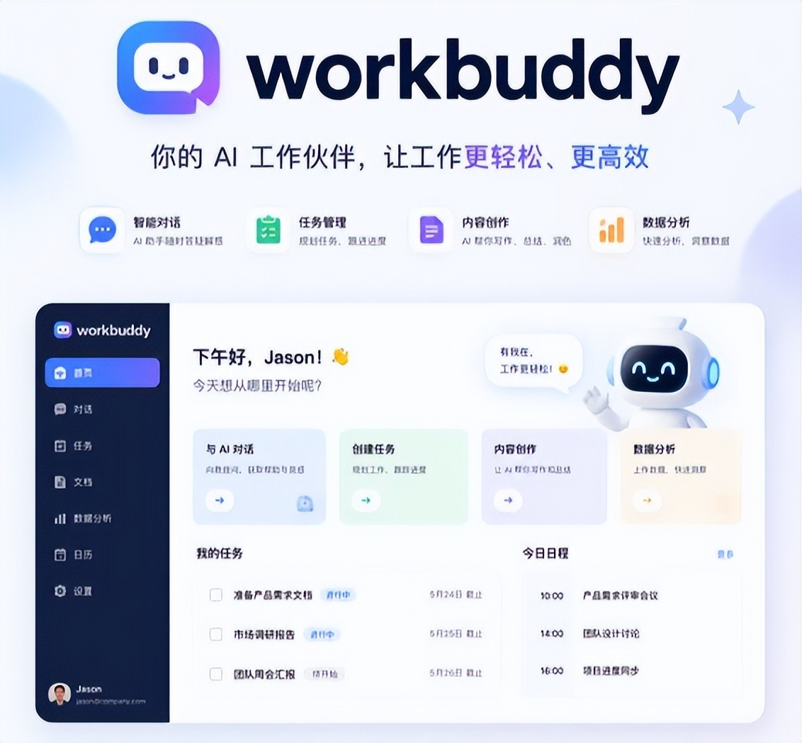
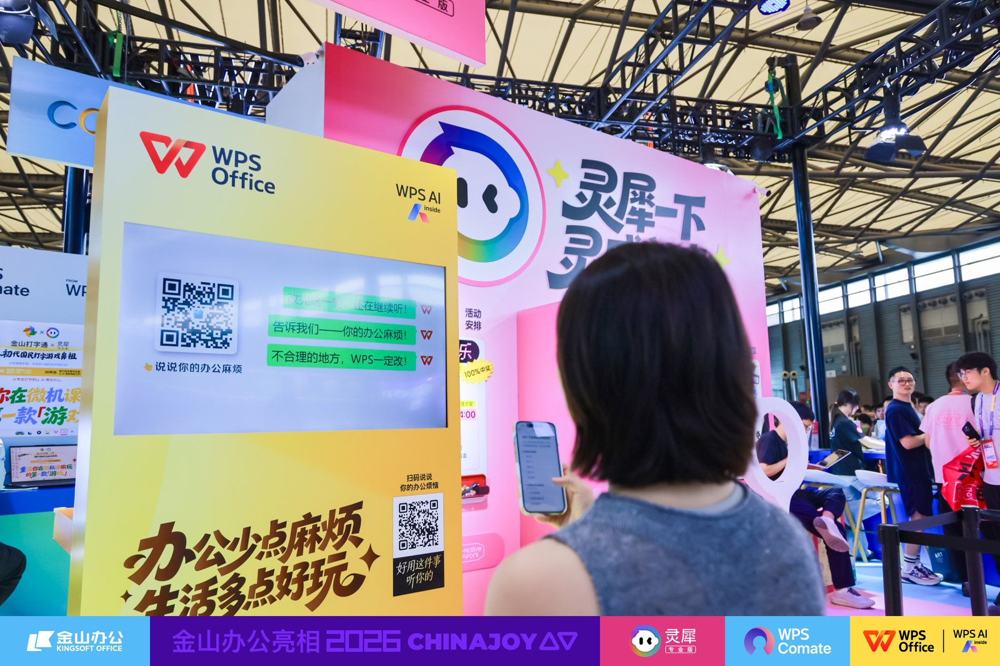
106.5 终局：多入口并存
业内曾有「赢家通吃」的猜测，但文章认为现实更可能指向多入口并存。企业级产品切换成本极高，一旦用户养成习惯并沉淀数据资产，替换成本呈指数级上升；不同行业、人群的工作流差异，决定了单一入口无法包揽所有需求。文中以金山办公推出 WPS 灵犀 / WPS Comate 正面争夺入口为例，指出其底气来自 6.78 亿台设备全球月活与 38 年用户习惯护城河，短板则是缺乏自研基础模型能力。IDC 则预测 2026 年中国企业级 Token 消耗量将较 2025 年增长约 20 倍。
这篇行业观察与本书第二十五、二十六部分的市场数据相互印证：WorkBuddy 凭借微信 / 企微入口与「手机遥控电脑」的差异化能力，在「意图解释权」之争中占据了有利身位。对普通用户而言，把高频、跨应用的办公流沉淀到 WorkBuddy，既是效率投入，也是在为未来的「数字工作空间」入口占位。
《把活交给 AI》橙皮书（上篇）：认知·入门·进阶
信源：腾讯云架构师技术同盟 / AI大眼萌《首发！把活交给 AI：WorkBuddy 小白上手橙皮书（上篇：认知篇、入门篇、进阶篇）》（2026-08-05，腾讯云开发者社区原创）。本章为社区创作者实战教程整理，书中功能、权益以 WorkBuddy 官方实时版本为准。
107.1 这本书写给谁
《把活交给 AI》专为零基础职场人而写：不堆术语、不画大饼，目标是 10 分钟跑通第一次，当天就能用上「急救五连」「动手四连」。全书 6 篇 19 章，陪你从「遇事才找 AI」走到「AI 成了懂你的搭档」。作者 AI大眼萌有近 20 年项目管理经验，内容由众多 WorkBuddy 用户实战经验整理而来。一句话定调：签字的笔，始终在你手里——AI 是同事，不是替代你做决策的人。
107.2 认知篇：工作伙伴 ≠ 聊天 AI
| 维度 | 聊天 AI | WorkBuddy |
|---|---|---|
| 关系 | 你问它答、聊完即忘 | 把活交给它，替你跑完，还记你是谁 |
| 能力 | 给建议 | 读改文件、定时跑流程、远程接指令、记习惯 |
| 你的角色 | 自己干 | 下指令、把关、拍板 |
旧工作逻辑是「我会所以我做」，新书主张「该我做的我才做，重复的给 AI」——你从执行者变成审改者。跑通一次就存下来（如存成 Skill），是高手的第一条习惯。
107.3 入门篇：当天就能用上的两套连招
指令四要素：做什么 + 有什么 + 怎么样 + 给样本。给的样本越具体，输出越贴近你想要的。
办公急救五连
① 周报（列要点→生成≤200字→改发）；② 脏表格（去重填空统一日期带公式）；③ 会议纪要（文字稿→三句结论+待办+两风险）；④ 竞品 PPT（给链接→出 5 页对比初稿）；⑤ 群聊转清单（事/提/认领/截止，待确认单列）。
让它动手四连
① 整理桌面（必加「先列计划给我确认」）；② 发票台账（拍照→识别金额抬头生成报销表，敏感打码）；③ 生活外包（比价/日程只查不动）；④ 选区编辑（Word 里框选→「压到两句」，大改先小试）。
107.4 进阶篇：自动化 · 第二大脑 · Skill
- 每日节奏：前瞻 + 定时自动化（如每天 08:00 抓 AI 新闻存 md）；微信遥控本机 / 云端两种模式。四条铁律：手动跑两次再自动化、路径格式写死、远程破坏操作人确认、换机备份。
- 第二大脑：云端 ima（ima.qq.com）建主题知识库，对话 @知识库 调取；本地 LLM Wiki 自动成 Markdown 百科。三层存储：MEMORY.md（人设/偏好/禁用词）→ 知识库（素材）→ Skill（流程）。心法：记忆交 AI，思考留自己。
- 流程复用：Skill 跑通 1–3 轮即「保存为 Skill」；专家可单次切换或写进 MEMORY 固定；多 Agent 分工（研究员生成 + 风控只审不写，决策权归你）。
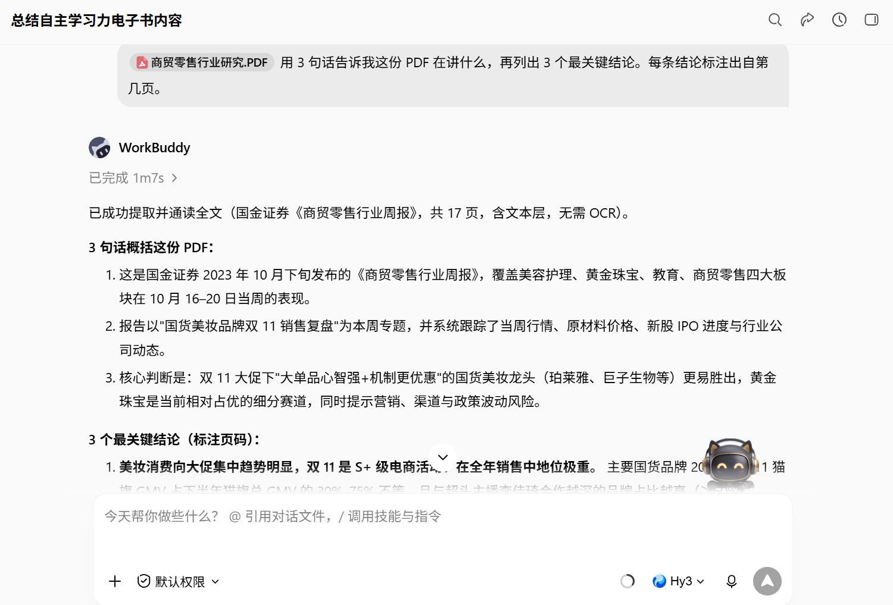
上篇把「新手怕用不好 AI」拆成了可立即照做的动作：四要素指令 + 急救五连 + 动手四连 + 定时自动化。与其收藏一堆教程，不如今天就跑通一个「周五周报」Skill——这正是本书第七部分「最佳实践」与橙皮书共同强调的「跑通即沉淀」心法。
《把活交给 AI》橙皮书（下篇）：场景·增值·边界
信源：腾讯云架构师技术同盟 / AI大眼萌《首发！把活交给 AI：WorkBuddy 小白上手橙皮书（下篇：场景篇、增值篇、边界篇）》（2026-08-05，腾讯云开发者社区原创）。本章为社区创作者实战教程整理，相关功能以 WorkBuddy 官方实时版本为准。
108.1 场景篇：和你差不多的人怎么用
| 人群 | 关键做法 |
|---|---|
| 职场新人 | 资料传 ima 云端知识库→AI 讲业务；周报/纪要封装 Skill；附 30 天落地清单与效率对比表 |
| 管理者 / 资深员工 | 琐事交 AI、独家判断亲为；团队共享汇报 Skill + MEMORY 固化文风；多 Agent 虚拟圆桌互相制衡挑错 |
| 自由职业 / 自媒体 | 客户沟通/报价自动化；OPC「一人公司」Skill；选题库→多 Agent 产出→GEO 合规诊断→人工终审（两条铁律：有回路迭代、发布人工确认） |
| 学生 | 课程知识库 + 考点拆解 + 私教答疑；论文红线：AI 只辅框架/润色/格式，禁代写正文 |
108.2 增值篇：标书 · 原型 · 小团队
- 技术标书全自动：SkillHub 装
biaoshu-writer-pro→ 上传招文 → 逐条溯源出稿 → 人工核验参数/资质；涉密走本地沙箱。铁律：AI 出初稿，签字风险人担。 - 零代码产品原型：非技术人用 Web 开发技能，按页面拆需求 → 自然语言出 HTML 原型 → 沙箱并行 → 人主导整合风格。传统数天→数小时。
- 3 人小团队 AI 共建：个人 Skill 实测 3 次后分发；MEMORY 统一标准；三人产研运闭环；安全红线（涉密不上公域等）。
108.3 边界篇：AI 安全红线
- 三级风险：红区（盘授权/不备份/高危操作/涉密传公域/密钥明文）；黄区（中文路径/忽略积分/超大文档）；绿区（Token 过期等）。
- 幻觉识别三招：强制溯源、交叉验证、警惕「完美文本」。
- 两条铁律：① Agent 只供素材、不替你决策；② 对外签字权永远在你。
- 三类事永不交 AI：价值判断、真实情感、临场应变。学生另加：论文正文不代写。
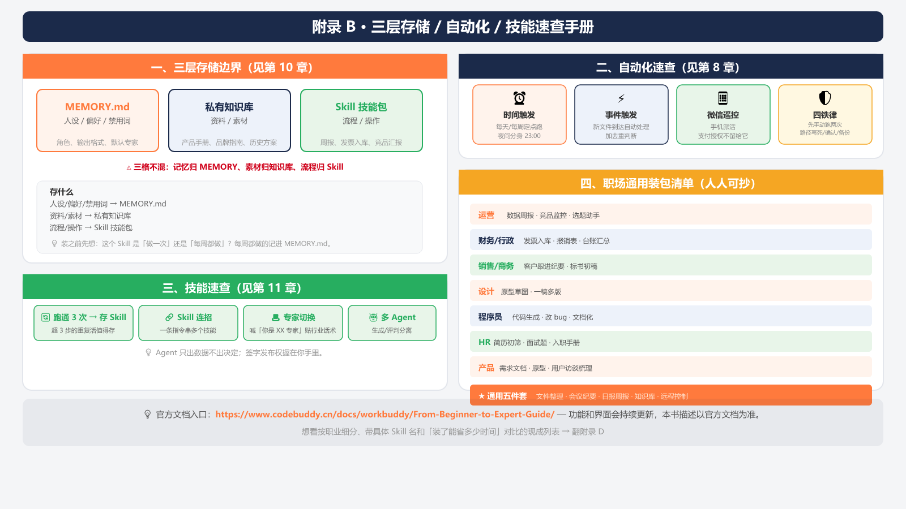
橙皮书的「三级风险 + 三类事不交 AI + 签字权在人」与本书第二十六部分「安全中心」、第二十七部分的安全规范完全同频：WorkBuddy 默认开启安全沙箱与删除保护，但用户自身的涉密不传公域、密钥不明文、对外文件过手再发，仍是不可让渡的底线。
保姆级！WorkBuddy 万字长文教程：核心功能逐一拆解讲透
当下最火的 AI 工具，WorkBuddy 绝对榜上有名。你丢个活给它，它自己规划、自己操作电脑、自己处理文件，最后把成品端到你面前——不是给你一段建议让你自己干活，而是它干完、交差。一句话区分：ChatGPT、DeepSeek 这类是「顾问」，只动嘴给建议，活你自己干；WorkBuddy 是「员工」，你说它干，干完交付。这个差别，比任何一个单独的功能都重要。
为什么值得专门写一篇万字教程？因为「会干活的 AI」和「会聊天的 AI」操作逻辑完全不同。聊天你随便问，干活你得懂它的边界、权限、模式。下面把每个核心功能单独拆开讲，按「先装好 → 搞懂在哪派活、用哪种模式 → 选对模型 → 把权限这道安全关设明白 → 技能 / 连接器 / 自动化 / 专家助理 / 人机双写五大能力 → 实战 → 避坑与答疑」的路线走一遍。
109.1 五分钟下载安装，先把地基打稳
- 官网：copilot.tencent.com/work/，按系统选版本（Windows .exe / Mac .dmg）。
- 登录：微信扫码（推荐）或账号密码登录；第一次用直接扫码最省事。
- 工作空间：就是 WorkBuddy 读写的文件夹，建议按任务类型分（如「周报」「发票」「数据分析」），让默认权限判断更准；不指定也会自动开独立目录。
- 环境：想玩技能、搞自动化，提前装好 Node.js（LTS）和 Git；8G 内存以上更顺。
109.2 认识任务栏：你派活的地方
主界面底部输入框是「新建任务栏」，每一次对话是一个独立任务，可多任务并行。可直接把文件拖进对话框或粘贴路径；任务之间上下文独立，同一项目的活尽量放同一任务，它才记得住前因后果；生成过的文件可在下一条指令里引用（如「把刚才那份报告转成 PPT」）。
109.3 三种工作模式，逐一拆给你看
| 模式 | 行为 | 适用 |
|---|---|---|
| 问一问 Ask | 纯问答，绝不碰你的文件 | 问问题、查概念、出思路，零风险 |
| 做一做 Craft | 直接执行，建文件、改表格、跑命令 | 熟门熟路、后果可恢复的批量活 |
| 想一想 Plan | 先出方案，你确认了再动 | 不熟、重要、怕出错（新手默认） |
一句话记牢：Ask 动嘴不动手，Craft 直接上手干，Plan 先举手再干。模式可中途切换；重要文件先备份，Craft 改动有回退。
109.4 模型怎么选，别用错人
- DeepSeek：日常问答、写文案首选，快又便宜。
- 腾讯混元：中文写作、会议纪要强项，中文语感更到位。
- Kimi：截图识别、图片转文档等视觉活。
- MiniMax：表格、PPT 想快出结果时用。
- 智谱 GLM：长流程、复杂任务交给它（长链条更稳）。
轻量模型跑日常活几乎不烧钱，把重模型留给真正复杂的任务；结果不满意先怀疑需求是否说清，再怀疑模型。
109.5 权限系统：这道关不讲清楚不敢让你干活
- 默认权限：一层护栏。日常顺畅跑；一旦要删重要文件、动敏感路径、跑脚本或联网，会停下来让你确认。
- 完全访问权限：暂时拆掉护栏，少点几次确认，但也可能直接删东西——只在该信得过、可恢复的小活上短时间开，用完立刻切回默认。
- 三道防线：命令优先在沙箱里跑；删除走回收站兜底；改已有文件前自动备份（Windows 已支持），改坏能还原。
完全访问权限别长期开着。批量改文件前，单独建个文件夹只放副本，别拿原件冒险；敏感路径（系统目录、别人文件、带密钥配置）它会额外拦你。
109.6 技能 Skills：给 AI 注入专业知识
如果说连接器是 AI 的「手」（扩能力），技能就是 AI 的「脑」（扩知识深度）。WorkBuddy 自带数百个预设技能包（PPT 制作、海报生成、自动化报表、文件整理、翻译、代码助手…）。更狠的是自定义技能：用大白话让它在对话里现生成一个专属技能，不用写代码（如「做一个每周销售周报技能，输入原始数据就出标准报表」）。技能分用户级（全项目通用）与项目级（仅该项目共享）。记一句：技能是「怎么干」（方法、知识），连接器是「去哪干」（接入外部系统）。
109.7 连接器 Connectors：AI 的万能接线员
没连接器前，用 AI 干活得先「搬数据」（文档下载再上传、邮件复制再粘贴）。有了连接器，你只需说「帮我从腾讯文档里那份周报，整理出 100 字汇报」，它自己翻、自己读、自己给结果。平台预置连接器开箱即用：腾讯文档（直接读/建/改云端 Office，改完自动存回）、QQ 邮箱、TAPD、腾讯乐享、飞书、企业微信；第三方生态还有 Notion、可画、GitHub、北大法宝、企查查等。自定义连接器无限扩展：写代码接 MCP Server（改 ~/.workbuddy/mcp.json）或用 Webhook 把任意支持 HTTP 的服务插进来。配置预置连接器就三步：点「连接器」→「+」→ 选服务点「连接」→ 扫码/登录授权，看到绿色圆点即连上。授权时只勾必要权限。
109.8 自动化 Automations：你的赛博实习生
让 WorkBuddy 从「你喊才动」升级成「到了点自己就动」。判断标准：这件事我每周/每天都做、步骤差不多——就该做成自动化。创建时填：名称、提示词、触发规则（每天 9 点 / 每周五 17 点，界面一般可视化选择）、工作空间、执行模型（省积分选轻量）。真实例子：每天 9 点抓行业热点出简报、每周五 17 点汇总本周工作、每周日整理下载文件夹、每天生成日签图发团队群。保存后先手动「立即执行」测试一次。
109.9 专家与助理：外援和自己人
顶部「专家」入口能召唤一百多位垂直领域顾问（推荐指令格式：「我的身份」+「我的目标」+「具体问题」+「希望的输出格式」）。与之相对的是助理（Assistant）——你亲手养大的「自己人」，记得你的所有偏好、项目背景、常用路径，越用越像你肚子里的蛔虫，每次完成自动写「工作日志」，下次接着上次进度干。专家是雇来的顾问，助理是养大的自己人，两者不冲突：复杂任务可专家出方案、助理帮你落地。另提团队向功能「项目（Project）」：多人和多 AI 在同一空间并行协作，共享项目记忆、各自独立会话沙箱、实时预览迭代——个人用助理够，带团队做复杂项目再上项目空间。
109.10 人机双写：AI 直接坐你旁边改
最新也最实用的狠活。以前用 AI 写作像传纸条（写一段、复制给 AI、它改完、你粘回来）；现在 AI 直接坐到你文档旁，同时敲键盘。框选一段说「优化表达」就地改；圈一片数据说「做透视分析」自动出图表；PPT 空白区说「把结论排进来」直接填充。支持 Word、Excel、PPT 与云端腾讯文档就地协同。价值不在单次改写，而在「就在你工作流里」——你不用离开文档去另一个窗口找 AI，思路不中断。这一步让 AI 从「你打开的工具」变成「你身边的同事」。
109.11 五个实战案例
- 乱表格变报告：拖入销售 Excel，说「按地区和品类汇总，标出增长最快几项，做成图表」，它读文件、算数、出图，给你能接着改的真表格。
- 腾讯文档周报汇总：连腾讯文档连接器，说「汇总这 5 份周报，按项目分类生成部门汇总」，三分钟出结果（以前半小时）。
- 每日热点简报自动化：建自动化任务，每天 9 点抓 AI 行业热点生成 300 字简报。
- 两小时会议变一张待办表：把纪要丢进去，说「提取所有待办，按负责人和截止时间列成表格」。
- 一句话整理乱文件夹：说「按类型分类到 图片／文档／压缩包」，桌面瞬间清爽。
109.12 新手避坑 & FAQ 精选
- 坑一：完全访问权限别长期开着；坑二：别迷信「一句话操控一切」（三步鼠标搞定的事喊 AI 反而绕）；坑三：别把密钥、身份证号、客户隐私往里塞；坑四：别一上来就丢大活，先小后大。
- 收费吗？有免费额度，日常轻度基本够；重度调用模型或跑自动化耗积分，以官网为准。
- 数据安全吗？默认权限护栏 + 沙箱 + 回收站 + 自动备份；敏感操作要你确认，但别塞密钥隐私、连接器授权只给必要范围。
- 不会写代码能用吗？能。自定义技能和连接器才涉及配置，技能能用大白话现生成。
本章整理自腾讯新闻（腾讯官方账号）2026-08-06 发布的《保姆级！WorkBuddy万字长文教程：核心功能逐一拆解讲透（打工人必备）》。原文配官方界面截图（JS 懒加载，未提取到腾讯图床直链），故未下载本地配图；内容已按本书体例精编，版权与数据以官方页面为准。
腾讯研究院 AI 速递 20260806：Hy3 限免延至月底、Miora 接入 Hy3
腾讯研究院每日 AI 速递（2026-08-06）中，与 WorkBuddy 直接相关的新动态有两条，且均含此前版本未收录的具体事实：
110.1 混元 Hy3 限免延长至 8 月底（含排队机制）
- 腾讯 WorkBuddy 中的混元 Hy3 模型限时免费体验延长至 2026 年 8 月 31 日（与第二十五 / 二十六部分已收录的限免延期一致，本次新增执行细节）。
- 排队机制：因参与热度过高，官方对每日免费额度做了合理分配，资源繁忙时进入排队，每晚 23:00 至次日 8:00 资源更充足——可作为用户错峰使用 Hy3 的实操建议。
- 多模态边界：Hy3 为大语言模型，暂不含多模态；调用视频、图像等生成任务时会切换至相应多模态模型并正常消耗积分。
110.2 腾讯混元 Hy3 正式接入创意智能体 Miora
- Hy3 正式接入创意智能体 Miora，作为画布背后的思考模型，负责理解需求并统筹图像、视频、3D 与界面设计（补充第十九部分「妙境 Miora 创意智能体工作室」未含的模型底座信息）。
- Hy3 采用 MoE 架构，总参数 295B、单次激活 21B、最大支持 256K 上下文；官方评测称部分能力可达两至五倍参数旗舰模型水平。
- 接入后 Miora 更擅长理解模糊的中文需求，能将一句话拆解为完整品牌视觉项目并规划多交付物，减少返工与成本。
Hy3 限免延长（至 8/31）已在第二十六部分第一百零五章收录；本章补充其深夜排队机制与多模态边界两项新事实。Miora 接入 Hy3 为本书首次收录，归入第十九部分 Miora 主题的新底座说明。Hy3 调用量较上代暴涨 68 倍、曾登 OpenRouter 全球第一等数据已在第一百零五章记录，此处不再重复。
WorkBuddy 1.2.0 上线：手机端发起桌面任务、跨设备云端同步
2026 年 8 月 9 日，腾讯 WorkBuddy 移动端更新至 1.2.0 版本；8 月 10 日经腾讯科技《手机助手动态》、腾讯《混元动态》汇总报道，腾讯公关总监张军亦在社交平台确认该功能已上线。这是继 7 月 App 正式发布后，WorkBuddy 在「多端协同」上的关键补全。
111.1 核心新能力
- 手机端发起桌面任务：在手机上新建 AI 任务，远程驱动电脑端 WorkBuddy 执行复杂工作。
- 手机端查看与分享产物：直接查看 AI 生成的文稿、表格、幻灯片等办公文档，并支持分享。
- 跨设备云端同步：手机端可管理多台电脑，任务及 AI 生成内容实时同步，同一账号下所有设备的任务状态手机端全部可读。
- 对话体验优化：移动端交互细节打磨，降低多设备职场用户的流转门槛。
111.2 使用前提与注意事项
- 需在电脑端开启「锁屏远程」功能，手机才能远程调用电脑端执行任务。
- 远程调用期间电脑需保持运行；如使用笔记本，建议不要合上屏幕，避免进入休眠后正在执行的任务中断。
111.3 为什么重要
此前绝大多数 Agent 重活只能在电脑端操作，用户出门后无法跟进进度、临时加需求只能回电脑重来，打断工作流。1.2.0 把「任务发起—进度跟进—产物取用」搬到手机上，让 WorkBuddy 真正融入碎片化办公场景，也标志着国内 Agent 产品开始把「多端协同」当作标配能力。
本章整理自腾讯科技《手机助手动态》（2026-08-11 08:44）、腾讯《混元动态》（2026-08-11 04:53）对 WorkBuddy 1.2.0 的报道，原始信源为凤凰网科技（2026-08-10）、IT时代网（2026-08-10）及腾讯公关总监张军社交平台确认。原文未暴露腾讯图床（qqpublic.qpic.cn / developer.qcloudimg.com）直链，本次未下载本地配图；版本号与功能以 WorkBuddy 官方页面为准。
SkillHub 技能生态进阶：10 万+ Skill 中筛选「优质 20%」
2026 年 8 月 10 日，腾讯技术工程发文介绍 SkillHub 的最新发展：平台技能总量已达 10 万+（对比本书此前记录的 7 万+，平台持续高速增长），并着手解决「规模上来之后怎么挑」的问题。
112.1 平台新动作：从「规模」转向「精准匹配」
- SkillHub 通过差异化标签与推荐机制，帮用户在 10 万+ Skill 中筛选优质约 20%，缓解「平台堆积导致筛选成本上升」。
- 平台价值主张正从「什么都有」升级为「精准匹配」——竞争维度从「数量规模」转向「质量与匹配效率」。
112.2 对用户的含义
选技能时优先看官方标签与推荐流，避免被低质堆叠淹没；这也为「企业专属 Skill 共享、团队复用」扫清了选择成本障碍。本书第十九部分已系统介绍 SkillHub 与 Agent Runtime 生态，本章补充其进入「质量筛选」新阶段的事实。
整理自腾讯技术工程 2026-08-10 发文（经腾讯《混元动态》2026-08-11 收录，原始链接 view.inews.qq.com/a/20260810A09XZX00）。原文未暴露腾讯图床直链，本次未下载本地配图。书中既有「7 万+」数据为早期版本记录，本次以官方最新披露的「10 万+」为准。
WorkBuddy 被定位「第三个战略级产品」：饱和式投放与内部「一路绿灯」
2026 年 8 月 8 日，界面新闻披露、并经腾讯研究院《互联网大厂日报》（8/8）、腾讯科技《AI智能体信息日报》（8/9）收录：腾讯 WorkBuddy 的战略地位与获客打法出现标志性变化。
113.1 战略定位：继 QQ、微信后的「第三个战略级产品」
多家信源确认，WorkBuddy 已被列为腾讯 AI 应用中战略优先级最高的产品之一，内部流传「继 QQ、微信后第三个战略级产品」的说法；不少员工认为其今年大概率进入腾讯「名品堂」（里程碑式产品最高荣誉之一）。
113.2 饱和式投放与资源「一路绿灯」
- 5 月以来，WorkBuddy 广告从北京知春路铺到深圳高新园，北上广深地铁与写字楼密集投放，被评价为腾讯近年少见的饱和式产品投放。
- 马化腾亲自参与产品会议；团队提出的算力、技术、市场资源需求大多快速获批，内部形容「一路绿灯」。
113.3 市场地位（与本书一致的数据口径）
易观 2026 Q2 国内 PC 端 AI 原生办公智能体市场，WorkBuddy 以 2097 万次月访问量居首，月活 2000 万级、日活超 1300 万；7 月 QClaw 业务已调整至 WorkBuddy 部门，资源向 WorkBuddy 体系集中。
113.4 组织收口与竞争
产品已接入腾讯文档、企业微信、腾讯会议，支持混元、DeepSeek、GLM 等多模型；年内重点扩企业客户。阿里千问办公（8/3 公测）、字节飞书并入豆包被视为对其的反击，而腾讯生态的快速打通与本土化 Skill 被视为差异化优势。
整理自腾讯研究院《互联网大厂日报》（2026-08-08 14:59）、腾讯科技《AI智能体信息日报》（2026-08-09 13:31）对界面新闻 8/8 报道的收录。月活/访问量数据与本书第二十一、二十三、二十五部分一致，此处作为战略定位背景复述，不重复展开。原文未暴露腾讯图床直链，本次未下载本地配图。
腾讯云 Agent Memory 2.0 上线：团队记忆支撑 WorkBuddy 协作
2026 年 8 月 6 日，腾讯云宣布 Agent Memory 2.0.0 上线；8 月 10 日相关概念股异动（石基信息直线涨停），机构称将推动企业级 AI 软件迭代。其「团队记忆」能力与 WorkBuddy 的协作场景直接承接。
114.1 核心升级：Team Memory 从个人扩至团队
全新升级的 Team Memory（团队记忆）将长期记忆从「个人」扩至「团队协作」场景——这与 WorkBuddy 的「项目（Project）/ 多人多 AI 协作空间」直接对应，让团队共享上下文、沉淀协作记忆，而非每个成员各自积累。
114.2 与本书的关系
本书第一百零九章已介绍 WorkBuddy 的「项目」协作与「助理」长期记忆；Agent Memory 2.0 是从云基础设施层面为这类协作记忆提供底座，体现腾讯「个人 → 团队」记忆能力的工程化落地，也呼应 WorkBuddy 企业版「组织级智能体」的主线。
114.3 意义
企业级 Agent 落地的关键拼图：记忆不再只服务于单用户，而能跨成员、跨会话复用，降低「老人离职、经验带走」的损耗，让协作产生的能力沉淀为组织资产。
整理自腾讯云 Agent Memory 2.0.0 上线公告（2026-08-06）及腾讯《混元动态》（2026-08-11）、腾讯《腾讯动态》（2026-08-10）收录（原始信源每日经济新闻）。Agent Memory 为腾讯云产品，本章聚焦其与 WorkBuddy 团队协作记忆的承接关系。原文未暴露腾讯图床直链，本次未下载本地配图。
腾讯WorkBuddy 官方上线「多端同步」：三端实时同步与锁屏远程
2026 年 8 月 11 日 13:16，腾讯 WorkBuddy 官方账号发布《上班忘带电脑？别慌，WorkBuddy 打通手机和电脑了》（升级「多端同步」），正式宣布「多端同步」能力上线。这是在第一百一十一章所述 1.2.0 移动端跨设备协同基础上的完整版发布：PC、App、小程序三端打通，任务、对话记录与产物实时同步，并支持手机远程对电脑端任务进行授权、急停与切换项目。8 月 12 日，腾讯研究院《AI 速递 20260812》也将「腾讯 WorkBuddy 上线多端同步、打通手机与电脑」列为当日重点。
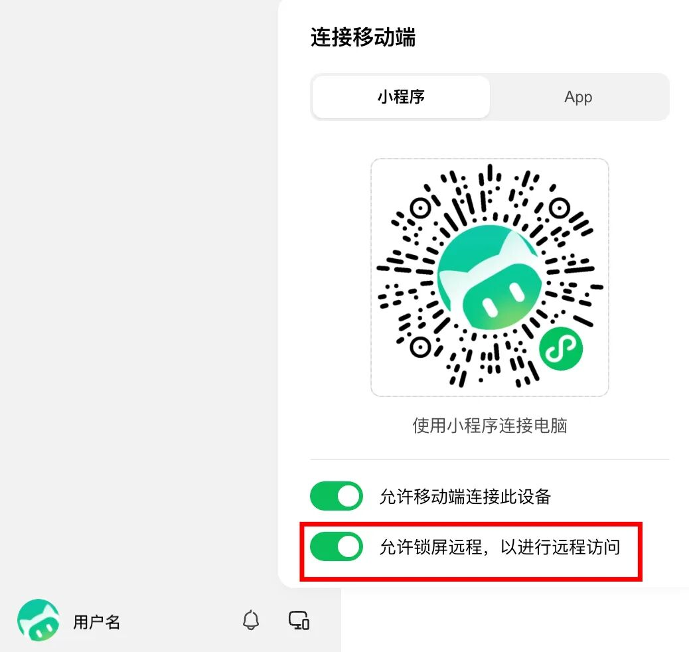
115.1 版本与接入要求
- PC 端需升级至 5.3.8 及以上；移动端 App 需升级至 1.2.0 及以上。
- 同一账号登录即可默认开启桌面端「允许移动端连接」开关，任务与工作空间自动同步，无需扫码、配对或手动授权。
- 连接成功后，设备区域显示「绿色圆点」 = 已连接 + Agent 正在工作，无需回工位即可了解任务状态。
115.2 三端实时同步：任务、对话、产物
PC、App、小程序三端的任务、对话记录与产物实时同步，随时随地在线，跨设备切换不再打断工作流。
- 跨项目一致：手机端完整复刻桌面端的「任务 + 工作空间」双分组结构，不同项目的任务列表互不串扰，切换项目无需退出。
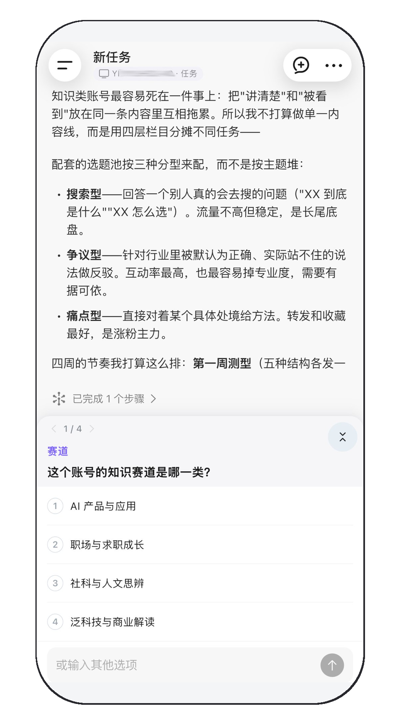
115.3 手机远程控制电脑，Agent 接着跑
- 点进任意对话即可看到 Agent 当前读取哪些文件、下一步要做什么，并远程完成授权与操作。
- 任务运行中点「停止」可远程急停电脑端 Agent 当前执行，调整指令后重新出发；停在哪一步、已产出什么完整留痕。
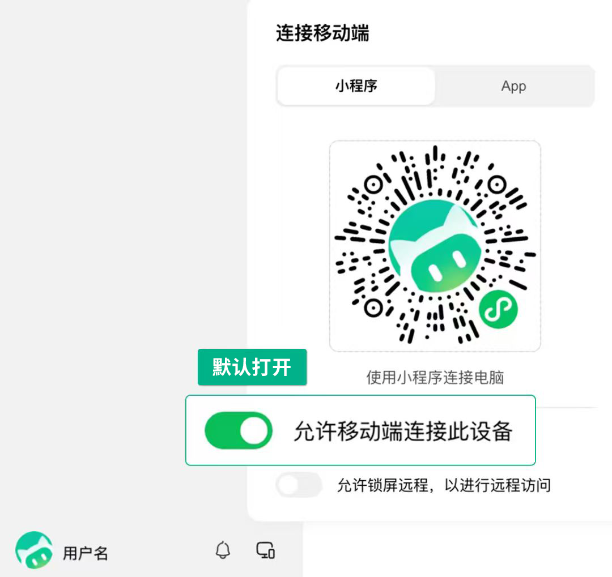
115.4 双端联动与多设备切换
- 双端协作：手机拍发票 / 传文档，电脑端 Agent 识别、分类归档、录入表格——手机采集、电脑处理，无需来回传文件。
- 一台手机可连接多台电脑，切换设备分别拉取不同电脑上的任务与工作空间列表。
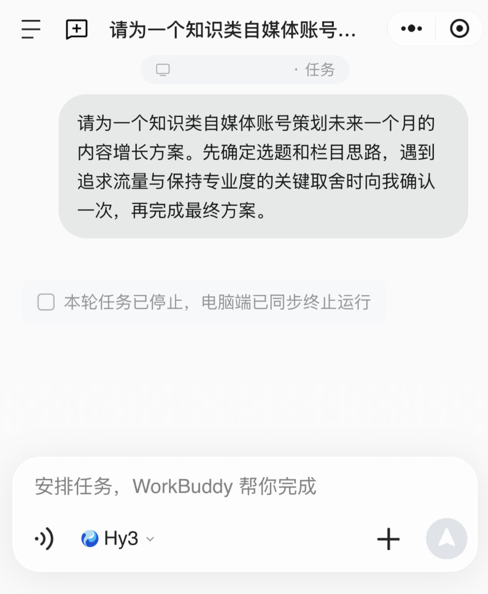
115.5 锁屏也可办公：锁屏远程
桌面端开启「允许锁屏远程」后，电脑不会自动休眠、屏幕不自动关闭，手机锁屏状态下仍可远程操控，Agent 该跑就跑，人无需一直盯屏。
115.6 与本书的关系
第一百一十一章记录了 1.2.0 移动端的「预览级」跨设备能力（8/9–8/10）；本章是官方账号于 8/11 给出的正式发布说明，补全了小程序同步、锁屏远程、工作空间分组同步、远程急停与「绿色圆点」状态等正式版细节。两者共同构成 WorkBuddy 多端协同能力的完整图景，也呼应本书「移动办公 / 远程协作」相关实战章节。
本章整理自腾讯 WorkBuddy 官方账号推文《上班忘带电脑？别慌，WorkBuddy 打通手机和电脑了》（升级「多端同步」，原创，2026-08-11 13:16，广东；原文链接 mp.weixin.qq.com/s/XKDwvBBnSvhcXdHGSZPNPQ），并经腾讯研究院《AI 速递 20260812》（腾讯财经聚合收录，同日将「腾讯 WorkBuddy 上线多端同步、打通手机与电脑」列为重点）交叉印证。5 张官方配图均来自微信公众平台图床（mmbiz.qpic.cn，即腾讯图床）并已下载至本地 assets/ 嵌入；版本号与功能以 WorkBuddy 官方页面为准。
腾讯云开发者：4 周上线鸿蒙电脑，WorkBuddy 团队用 AI 给自己造了个「捷径」
2026 年 8 月 12 日 08:45，腾讯云开发者官方账号发布《4 周上线鸿蒙电脑，WorkBuddy 团队用 AI 给自己造了个"捷径"》。文章披露：鸿蒙电脑第一款第三方智能体应用——WorkBuddy 鸿蒙电脑版，从正式启动到上架应用市场仅用 4 周，且大量开发工作由 WorkBuddy 自身的能力完成。这是继第一百一十五章「多端同步」之后，官方对 WorkBuddy 工程能力与跨端落地的最新一次公开复盘。
116.1 从零到一的适配挑战
鸿蒙版 WorkBuddy 移动端开发顺利，但 PC 端作为真正的桌面生产力工具，要同时保证内置数万款技能被稳定调用、管理本地文件时安全可靠、手机给电脑「派活」体验顺畅无缝——这绝非从其他系统简单复制粘贴代码。当时鸿蒙电脑应用市场还没有桌面智能体，没有现成的路可走。团队决定：把自家产品当成开发工具。
116.2 "用 WorkBuddy 开发 WorkBuddy"：四个真实场景
- 技术调研：把鸿蒙开发者文档、API 参考、社区讨论扔进 WorkBuddy，让它快速提取关键信息、对比方案、输出技术选型建议；原来一个人花一天啃的资料，十几分钟理清脉络。
- 代码辅助：从鸿蒙 UI 组件调用到桌面端特有的文件系统交互逻辑，WorkBuddy 协助完成大量代码编写与调试；遇到报错直接把日志丢进去，几分钟定位根因并给出修复方案。
- 测试验证：鸿蒙电脑版涉及多版本多机型，WorkBuddy 生成测试用例、模拟用户操作场景、自动比对预期结果，大幅缩短测试周期。
- 问题排查：线上兼容性问题中，把崩溃日志、设备信息、复现步骤输入 WorkBuddy，它能在海量数据中快速圈定问题范围甚至直接给出修复建议。
结果是：从正式启动到上架应用市场，只用了 4 周。文章强调，真正有意思的不是「4 周」这个数字，而是它展示的一种新开发范式——AI 不再只是辅助工具，而是参与了从调研、编码、测试到上架的每一个环节的「协作者」。
116.3 不是「问答机」，是「执行者」
文章借跨境电商 OPC（一人公司）的例子重申 WorkBuddy 的核心定位：它不是一个「你问我答」的聊天机器人，而是能听懂意图、自主拆解任务、直接干活的智能体工作台。其几项核心能力包括：
- 任务自主拆解：理解复杂指令，自动分解为可执行的多步流程。
- 本地+云端双引擎：授权前提下读取 / 操作本地文件，也能调用在线资料与工具。
- 多模态输入：文字、语音、拍照、文件导入，腾讯文档 / ima 知识库一键接入。
- Skills 生态：兼容 2.2 万+ 技能插件，覆盖 12 个行业的 140+「专家顾问」。
- 跨设备协同：手机端派活，电脑端干活，碰一碰无缝流转。
文中并援引易观最新报告：WorkBuddy 月访问量已突破 2000 万，位列国内桌面端 AI 办公智能体平台首位（与第一百章、第一百一十三章的市场数据相互印证）。
116.4 给鸿蒙开发者的两个信号
- 信号一：进入新生态的门槛正在被 AI 抹平。过去为一个新操作系统开发应用，得先啃下开发语言、框架、设计规范；现在即使没有现成经验，也能借助 AI 快速理解新环境、验证思路、完成基础开发——不必先成为「鸿蒙专家」再开始，可以在开发中让 AI 帮你变成「鸿蒙专家」。
- 信号二：AI 工具本身，就是最好的开发利器。WorkBuddy 用自家产品开发自家产品，本身就是最好的产品演示：一个 AI 智能体已足够强大到参与复杂软件开发流程。
116.5 人人都可以成为开发者
文章特别指出，这里的「开发者」不只是写代码的程序员——懂业务的产品经理、擅长设计的创作者、刚入门的爱好者，都可以借助 AI 工具完成过去只有专业开发者才能做的事。鸿蒙生态的开发者群体，正从「程序员」扩展到「每一个有想法的创作者」。
116.6 与本书的关系
本章是官方对 WorkBuddy 鸿蒙电脑版（HarmonyOS PC）工程落地的权威复盘，与第一百章「千问办公公测与大厂 Agent 大战全景」、第二十一部分「鸿蒙 PC 版与桌面全覆盖」、第一百一十五章「多端同步」共同构成 WorkBuddy 跨端战略（移动 / PC / 鸿蒙 / 小程序）的完整图景。其中「用 WorkBuddy 开发 WorkBuddy」的工程范式，也呼应本书第六~十部分关于 Skills、自动化与 Agent 工程的实战章节。
本章整理自腾讯云开发者官方账号推文《4 周上线鸿蒙电脑，WorkBuddy 团队用 AI 给自己造了个"捷径"》（原创，2026-08-12 08:45，北京；原文经搜狗微信索引 weixin.sogou.com 定位，mp.weixin.qq.com/s 真实地址以微信后台为准）。文中配图来源标注为「鸿蒙电脑应用市场 / WorkBuddy 团队 / 腾讯 WorkBuddy 官方公众号 / 华为开发者大会 2026」，WebFetch 未提取到可直接 curl 下载的腾讯图床（mmbiz.qpic.cn / qqpublic.qpic.cn / developer.qcloudimg.com）直链，故本次未下载本地配图，遵循 2026-08-07 起「无可提取图床直链则不落地图片」的先例。版本号、功能与市场份额数据以 WorkBuddy 官方页面及易观报告原文为准，未做推断。
腾讯WorkBuddy 资料库升级：AI 原生知识管理空间，让产物"活"起来
2026 年 8 月 13 日，腾讯 WorkBuddy 官方账号发布《WorkBuddy 重磅升级：内置 AI 原生资料库，让你的资料"活"起来》（腾讯新闻于 8 月 14 日同步刊发）。本次升级把"资料库"从文件收纳箱升级为AI 原生的知识管理空间——所有工作产物统一存放、人与 AI 共同读写协同；并新增"轻应用"能力，把 AI 生成的 HTML 网页与 CSV 数据打通，让网页能存数据、能协作、能发布。这是继 V5.3.5「人机双写」之后，WorkBuddy 在"产物可沉淀、可协作、可持续使用"方向上的又一次关键推进。
117.1 资料库：从"存文件"到"AI 知识空间"
- 统一存放：除 Word/Excel/PPT/PDF/音视频外，资料库新增支持 HTML、Markdown 等 AI 原生格式，让"人机共创"更顺畅。
- 人与 AI 共同读写、协同编辑：所有工作产物统一存放与管理，AI 能理解、编辑和使用其中的内容。
- 四个数据源：我的文件、腾讯文档、ima 知识库、乐享知识库（每个数据源需先授权 / 上传，再添加到对话）。
117.2 人机双写扩展到 HTML 与 Markdown
此前 V5.3.5 的"人机双写"覆盖 Office 三件套；本次升级将这一能力扩展到 HTML 与 Markdown——网页不再"能生成、改不了、协作不了"。
- HTML 人机双写：人可直接改、让 AI 改、邀请同事一起改；改完一键发布为公开网页链接。
- Markdown 智能审阅：支持多人批注、框选修改；AI 提出的修改以建议修订形式呈现，逐条接受后才写入正文，修改过程完全可控。
- 精细化编辑：选中页面中任意文字、图片、区块，输入需求，AI 直接在原文里完成编辑；随时评论、实时对话不脱离上下文。
- 邀请协作：直接邀请同事进入文件同时修改，实现 HTML/Markdown「人+人+机」协同体验。
117.3 轻应用：一句话搭出会存数据的网站
过去 AI 生成的 HTML 多是"一次性"静态页，分享要打包、存不了数据。本次升级上线"轻应用"：以 HTML 做前端展示、CSV 承担数据存储，AI 把两者连接起来，实现实时双向同步。
- 三步搭建：对 WorkBuddy 说"用资料库能力帮我做一个 xxx，实现数据在线存储和双向同步" → 自动新建在线表格 → 表格与页面双向同步 → 一键发布为链接。
- CSV 不止存文字：合同、发票、图片、设计稿等文件也可直接存进单元格，并同步显示到 HTML 页面。
- 典型场景：记账、打卡、客户跟进、项目管理、库存管理、经营看板、自媒体运营工作台等。
117.4 一手实测佐证（智东西 8/13）
智东西以零代码、免费版混元 3 实测：按官方案例生成"自媒体运营工作台"，从生成、修改到数据联动走通完整链路——工作台与 CSV 建立双向连接，改一端另一端同步刷新。实测也发现若干限制：大标题手动修改受限、AI 编辑偶需多次尝试、首会话无法直接进编辑模式（需打开资料库开新会话）。整体上，"轻应用"已具备从生成到修改再到数据同步的完整闭环。
117.5 版本与定位说明
腾讯发布稿将本次升级归入 5.3.11（"发布 5.3.11 版本，资料库功能迎来重大升级"）。需说明：据 workbuddy.cn 官方更新日志，5.3.11 标注日期为 2026-08-07，并另有 5.3.12（2026-08-12）版本，具体功能归属以官方更新日志为准，本书不臆造版本号。官方将本次能力概括为"AI 原生的办公三件套"：HTML 负责呈现、Markdown 管轻量写作、CSV 承载数据，由 AI 连接。
117.6 与本书的关系
本章与第四十六章 / 第六十三章「人机双写（V5.3.5）」形成递进：人机双写从 Office 三件套扩展到 HTML/Markdown，并叠加"轻应用"使产物可沉淀为持续使用的工作台；与第一百一十五章「多端同步」、第一百一十六章「鸿蒙电脑 / 跨端」共同构成"产物跨端可用、可协作、可发布"的完整闭环。本书第十七部分更新日志与第一百一十三章市场数据亦可一并参照。
本章整理自腾讯 WorkBuddy 官方账号推文《WorkBuddy 重磅升级：内置 AI 原生资料库，让你的资料"活"起来》（2026-08-13；经搜狗微信索引 weixin.sogou.com 定位，mp.weixin.qq.com/s 真实地址以微信后台为准），及腾讯新闻 new.qq.com/rain/a/20260814A01X7L00（2026-08-14 02:44，北京）同步刊发；智东西 news.qq.com/rain/a/20260813A0DWRA00（2026-08-13 21:30，一手实测）交叉印证。配图 2 张来自腾讯图床 qqpublic.qpic.cn（so.html5.qq.com 新闻聚合页内嵌），已下载至本地 assets/ 嵌入。版本号以发布稿所述 5.3.11 为准，并已在 117.5 标注与 workbuddy.cn 官方更新日志日期的细微差异，未做推断。
腾讯 2026 年第二季度财报：WorkBuddy 数据全景与 AI 战略定调
2026 年 8 月 12 日，腾讯控股（00700.HK）发布 2026 年第二季度财报。这是 WorkBuddy 被定位为"第三个战略级产品"、月访问量登顶之后，首次在集团季度财报中以明确数据披露其增长与商业化进展。马化腾在财报中重申"正在智能、应用与基础设施三个层面构建 AI 赋能的腾讯"，WorkBuddy 与 CodeBuddy 被列为应用层突破性增长代表。（注：本财报发布于 2026-08-12，上次 8/13 运行未命中，本次补融。）
118.1 集团财务大盘（AI 投入视角）
- 营收 2047.9 亿元，同比 +11%。
- Non-IFRS 经营利润 756.4 亿元，同比 +9%；剔除新 AI 产品（Hy / 元宝 / CodeBuddy / WorkBuddy / 小微）收支影响后同比 +19% 至 861 亿元。
- 研发支出 272.8 亿元，同比 +35%。
- 资本开支 527.8 亿元，同比 +176%、环比 +65%（算力采购大幅加码）。
118.2 WorkBuddy 关键数据
- 任务解决率由 72% 提升至 90%（接入 Hy3 后），模型与产品协同设计成效显著。
- Hy3 调用：在 OpenRouter Token 消耗量持续位列全球前三，日均 Token 用量达 preview 版 7 倍；WorkBuddy 自选模型用户中选 Hy3 占比 60%。
- 市场份额：据易观《2026 Q2 中国办公智能体平台市场洞察》，WorkBuddy PC 端 6 月访问量 2097 万次，国内第一、超第二三名之和；月访问量前十腾讯占四席（WorkBuddy / CodeBuddy / QClaw / Marvis）。
- 落地与商业化：已落地 50+ 行业，企业版正式发布。
118.3 AI 战略三层与产品矩阵
- 智能层：Hy3 正式版（相对小参数规模可比肩 2–5 倍旗舰），Hy4 计划近期上线。
- 应用层：WorkBuddy、CodeBuddy 突破性用户增长；微信 AI 助手"小微"6 月上线扩大灰测；企业微信 AI 助理"大圆"上线。
- 基础设施层：大幅增加算力采购，将应用及模型的使用转化为收入。
118.4 与本书的关系
本章与第一百一十三章「第三个战略级产品 / 饱和式投放」、第一百一十六章「易观月访问量破 2000 万」相互印证并补全财务与解决率数据；与第四十六章 / 第六十三章「人机双写」、第一百一十七章「资料库 AI 原生升级」共同说明 WorkBuddy 从"能力发布"走向"规模化营收与留存"的阶段。财报未单列 WorkBuddy 独立营收，仅披露其在新 AI 产品组合中的增长与"现金收入高速增长"定性表述（据腾讯科技 / 腾讯业绩会报道），本书以官方财报原文及易观报告为准，未做推断。
本章整理自腾讯控股 2026 年第二季度财报（2026-08-12 发布）；腾讯新闻 new.qq.com/rain/a/20260812A0BZ8F00（潮新闻，2026-08-12）及上观新闻、网易财经、闪电新闻等同步报道；易观《2026 年 Q2 中国办公智能体平台市场洞察报告》为市场份额数据原始出处。财务与产品数据以腾讯财报原文及易观报告为准；"现金收入高速增长"为腾讯科技 / 腾讯业绩会报道对该财报中新 AI 产品组合的定性表述，非财报单列数字。版本号、功能与市场数据均未做推断。
腾讯云"王炸组合"：十大专业级技能，启信慧眼与什么值得买入选
2026 年 8 月 14 日，腾讯云在《腾讯动态》聚合中发布 WorkBuddy"王炸组合"——围绕消费、法律、金融、设计、营销等十大专业领域，集中展示一批具备专业服务能力与实际应用价值的 Skill，标志着 WorkBuddy 的技能生态从"通用工具"进一步走向"专业赋能"。同日及次日（8 月 15 日），腾讯官方账号《腾讯早报》将"启信慧眼入选 WorkBuddy 十大专业级技能""一周双更打通多端同步·改 HTML 如改 Word"列为当日要点，侧面印证"王炸组合"系 8 月 11–13 日版本双更（多端同步 + 资料库 AI 原生升级）之后的生态补全动作。
119.1 "王炸组合"是什么
据腾讯云发布的《腾讯动态》（2026-08-14）聚合条目："腾讯WorkBuddy发布王炸组合，覆盖十大垂直领域，什么值得买及启信慧眼等专业 Skill 入选；此前 8 月 11 至 13 日版本双更打通多端同步与 AI 原生文档协同。"即"王炸组合"并非单一版本功能，而是 WorkBuddy 在 5.3.11/5.3.12 双更（多端同步、资料库 AI 原生升级、轻应用）之后，面向专业场景集中梳理并力推的一批精选 Skill 合集，覆盖消费、法律、金融、设计、营销等十类专业领域。其定位与第一百一十二章「SkillHub 在 10 万+ Skill 中筛选优质 20%」的"平台从『什么都有』转向『精准匹配』"方向一致——从"海量技能"进阶到"官方优选的专业级技能"。
119.2 启信慧眼：入选"十大专业级技能"的企业数据服务
合合信息旗下启信慧眼入选腾讯 WorkBuddy"十大专业级技能"，其"AI 供应商管理专家"组件已上线，支持一键调用超过 200 项数据接口，覆盖工商信息、司法风险、知识产权、经营数据等模块，将专业数据服务融入 AI 办公工作流。启信慧眼数据调用服务已上架 WorkBuddy、ima、千问办公、TraeWork、MiniMax Agent 等多个主流 AI 办公平台。在金融对公尽调等场景中，过去客户经理需在数十个页面间逐项翻查工商、股权、融资、经营风险等数十项指标，接入启信慧眼后，用户一句话指令即可让智能体自动完成调研，并输出带有明确结论与数据来源的尽调报告，从源头降低 AI"幻觉"与"不可溯"风险。对大型集团采购场景，其"供应商管理专家"组件将核验逻辑、判断标准嵌入 AI 工作流，人工仅需复核数据来源与用途，实现核验、总结、留痕的标准化处理。
119.3 什么值得买：唯一入选的消费决策类 Skill
据什么值得买官方披露（2026-08-14），"什么值得买购物管家"Skill 凭借消费决策服务能力成为"王炸组合"中唯一入选的消费类专业 Skill。用户在 WorkBuddy 中只需一句话描述购物需求，购物管家 Skill 便能基于预算、使用场景及个性化偏好，提供商品推荐、口碑总结、同类商品对比及跨平台价格与优惠查询；自 WorkBuddy 上线以来该 Skill 月均输出量增长 14%。值得买科技自 2024 年 9 月与腾讯达成战略合作，其"海纳"MCP Server 已接入腾讯元器，本次入选标志着双方合作从"智能体及数据服务接入"扩展至"具体任务的专业 Skill 协同"。
119.4 与本书的关系
本章与第一百一十二章「SkillHub 10 万+ Skill 精准筛选」、第二十八章起各"橙皮书/官方动态"章节共同构成 WorkBuddy 技能生态演进的证据链：从"技能数量扩张"（7 万+ 至 10 万+）到"官方优选专业级技能"（王炸组合·十大专业级技能），再到"专业数据/消费决策 Skill 落地"（启信慧眼、什么值得买）。这也与第一百〇七、一百〇八章提及的"Skill 与多 Agent 协同"、附录 A1 推荐技能清单形成呼应——专业级 Skill 的引入，进一步降低了垂直场景（金融尽调、采购风控、消费决策）的使用门槛。版本与日期以腾讯云《腾讯动态》聚合发布（2026-08-14）及《腾讯早报》（2026-08-15）为准，未做推断。
本章整理自腾讯云《腾讯动态》聚合发布（new.qq.com/rain/a/20260814A0BYRL00，2026-08-14，条目 6"腾讯WorkBuddy发布王炸组合…启信慧眼等专业 Skill 入选"）；腾讯官方账号《腾讯早报》（new.qq.com/rain/a/20260815A03MSB00，2026-08-15 07:21，条目 9"启信慧眼入选十大专业级技能"、条目 11"一周双更"）；第三方媒体佐证：光明网 tech.gmw.cn《专业数据服务加速融入AI办公流》（2026-08-14）、新浪财经 finance.sina.com.cn《AI办公入口争夺白热化，专业数据服务成平台"标配"》（2026-08-14）、搜狐 www.sohu.com《腾讯WorkBuddy发布：什么值得买购物管家Skill入选王炸组合》（2026-08-14）。"王炸组合"覆盖十大专业领域、启信慧眼 200+ 接口、什么值得买为唯一消费决策类 Skill 等表述以腾讯云聚合发布与厂商官方披露为准；该动态为官方聚合/转载与第三方媒体报道，未暴露腾讯图床（qqpublic.qpic.cn / developer.qcloudimg.com / mmbiz.qpic.cn）直链，本次未下载本地配图。版本号未做推断。
腾讯新闻 × WorkBuddy「智见价值：寻找 100 位财报价值捕手」创作者计划
2026 年 8 月 14 日，腾讯新闻联合腾讯 WorkBuddy 正式启动「智见价值：寻找 100 位财报价值捕手」创作活动，面向全网财经、产经创作者及上市公司研究爱好者开放投稿，活动周期为 2026 年 8 月 13 日至 9 月 10 日。这是 WorkBuddy 在金融投研垂直场景一次标志性的"官方搭台 + AI 工具赋能"联动：活动明确将 WorkBuddy 作为创作者拆解财报的推荐 AI 工具，并强调其已接入通达信、东方财富妙想、同花顺 iFinD、恒生聚源等专业金融数据源。
120.1 活动机制与激励
活动征集图文与视频两类作品，设置总额 3 万元创作激励：金牌作品 1 篇（单篇 5000 元）、银牌作品 5 篇（单篇 3000 元）、优秀作品 5 篇（单篇 2000 元）。评审由腾讯新闻及业内专家组成，围绕专业度、创作深度、数据表现、创意表达等维度评估，结果于活动结束后 30 日内公布。对符合主题的作品，平台鼓励在投稿中体现 WorkBuddy 的辅助分析与创作过程——图文可展示处理文件、分析数据的演示截图或在正文标注，视频需呈现使用 WorkBuddy 辅助创作及数据分析的生成过程（相关画面不少于 10 秒）。
120.2 四大创作方向
活动聚焦上市公司 2026 年半年报，划分四大创作参考方向：① 公司财报解读（盈利能力、偿债能力、成长能力、现金流质量、业务结构、市场估值等维度穿透至商业本质）；② 同行业对比解读（横向比较净利润、毛利率、研发投入、业务结构、高管薪酬等，复盘行业景气度）；③ 上半年新股研究（结合招股书与上市后表现分析业绩兑现与估值变化）；④ 财报基础知识科普（通俗讲清毛利率、ROE、经营现金流、商誉、存货、应收账款等指标）。
120.3 WorkBuddy 在投研场景的定位
活动官方推荐创作者使用 WorkBuddy 辅助分析与创作，其价值在于：上传半年报 PDF 后，可用自然语言驱动完成文件提炼、资料收集、数据整理、框架搭建等耗时环节，把精力留给独立判断与专业分析。WorkBuddy 提供丰富的专家功能及金融投研类 Skill，并已接入通达信、东方财富妙想、同花顺 iFinD、恒生聚源等数据源，覆盖行情、财报、研报、宏观等多类数据。官方给出的可直接套用提示词包括：单家公司财报结构化分析（输出含页码标注的指标表）、三家同赛道公司合并口径对比、以及搭建"半导体财报观测台"定时巡检任务——后者可配置异动告警（如净利润亏损启用红色预警）并每周一自动核查新发财报。
120.4 与本书的关系
本章与第一百一十八章「腾讯 2026 Q2 财报：WorkBuddy 数据全景」、第一百一十九章「王炸组合十大专业级技能」共同印证 WorkBuddy 在金融专业场景的纵深：从财报数据披露（Q2 财报），到专业级金融 Skill（启信慧眼企业数据服务），再到以"创作者计划"形式把 WorkBuddy 推到金融内容生产一线（投研 Skill + 四大金融数据源接入）。这也与附录 A1 推荐技能清单、第二十一章集萃的金融 / 投研类工作流相互呼应，显示 WorkBuddy 正从"通用办公"向"专业垂类赋能"加速落子。
本章整理自腾讯新闻 × 腾讯 WorkBuddy 联合发起的「智见价值：寻找 100 位财报价值捕手」活动公告（2026-08-14 启动，活动周期 2026-08-13 至 2026-09-10），经腾讯《腾讯动态》（new.qq.com/rain/a/20260814A0BYRL00，2026-08-14 条目 12"腾讯新闻联合发起财报创作计划"）、腾讯财经、腾讯《混元动态》（news.qq.com/rain/a/20260814A0AZKO00，2026-08-14 条目 4）收录。活动激励金额、四大创作方向、接入的金融数据源（通达信 / 东方财富妙想 / 同花顺 iFinD / 恒生聚源）及官方示例提示词均以活动公告原文为准；配图 1 张（活动主视觉 banner）来自腾讯图床 qqpublic.qpic.cn，已下载至本地 assets/ 嵌入。版本号与功能未做推断。
大湾区架构师峰会落地「WorkBuddy 开发者沙龙」，前海首站启动全国巡回
2026 年 8 月 15 日，以"潮起潮落，你我仍在"为主题的 2026 腾讯云粤港澳大湾区架构师峰会在深圳前海 5 号楼举办，由腾讯云架构师技术同盟、腾讯云 TVP 联合主办，设置主论坛、六大平行分论坛、技术竞技场及科技成果展区，超 1000 位来自粤港澳三地的政界、学界、产业界及创投机构代表参会。峰会上，腾讯云现场正式启动 "WorkBuddy 开发者沙龙"，深圳前海作为全国首站拉开序幕，后续将在成都、深圳等首批重点城市持续开展——这是 WorkBuddy 首次以"线下开发者沙龙"形式进入城市巡回，标志着其生态运营从线上技能市场延展到线下技术社区。
121.1 WorkBuddy 开发者沙龙是什么
据腾讯云开发者生态总监李佳忆现场介绍，"WorkBuddy 开发者沙龙"聚焦在推广优秀 AI 工具，帮助更多人群改变生活并提高工作效率。沙龙定位为"聚焦 WorkBuddy 与 AI 应用实践"：技术与行业专家围绕真实痛点展开分享与实操，带来可复用的方法、可落地的经验，帮助开发者与广大用户更快把 AI 用好、用透。其全国城市巡回计划由腾讯云开发者社区统筹，招募同步开放，诚邀共建。这与 WorkBuddy 自身"降低 AI 使用门槛、让普通人也能用自然语言驱动智能体干活"的产品理念一脉相承。
121.2 林强代表 WorkBuddy 参与技术人价值对话
峰会上，腾讯云 WorkBuddy 首席架构师林强受邀出席圆桌论坛「浪潮对话：几代技术人思考」，与墨问西东 CEO 池建强、技术专家廖雪峰、95 后连续创业者谢扬同台，围绕"代码变便宜以后，什么更贵""经验还值不值钱""什么该守、什么该放"等议题，探讨 AI 时代技术人如何重塑核心竞争力。林强的出场，意味着 WorkBuddy 已从"被报道的产品"进阶为"在核心开发者圈层拥有话语权的技术品牌"，其与大湾区架构师技术同盟的绑定，也为后续城市巡回沙龙提供了稳定的专家与渠道资源。
121.3 同期生态成果
峰会现场还落地多项生态成果：前海 5 号楼、前海深港青年梦工场、前海国际 OPC 社区等组成的前海科创人才社区同盟，与腾讯云架构师技术同盟联合成立"大湾区 AI 科创社区生态联盟"，并发布"大湾区 AI 领军人才引育计划"（前海提供税收优惠、人才补贴、产业支持，腾讯云提供顶级交流圈层、技术荣誉认证、个人成长赋能，共计十六项专属权益）。前海已集聚人工智能重点企业 532 家，释放超 26 万平方米产业空间，为 WorkBuddy 开发者沙龙的落地提供了真实的产业与人才土壤。
121.4 与本书的关系
本章与第一百一十六章「4 周上线鸿蒙电脑，用 WorkBuddy 开发 WorkBuddy」、第一百一十九章「王炸组合十大专业级技能」共同勾勒 WorkBuddy 生态扩张的三条线索：自研效率（鸿蒙 4 周上线）、技能生态（十大专业级 Skill）、开发者社区（城市巡回沙龙）。对读者而言，WorkBuddy 开发者沙龙是离"线下实操、专家带练"最近的一扇门——若所在城市入选首批重点城市，可优先参与，把书中工作流与一线专家经验直接对接。
本章整理自 2026 腾讯云粤港澳大湾区架构师峰会报道：南方都市报（网易订阅，2026-08-15 22:34，记者任贺）、香港商报（hkcd.com.hk，2026-08-15，记者王娜）、腾讯《腾讯早报》（new.qq.com/rain/a/20260816A03ED700，2026-08-16 条目 2"腾讯云大湾区架构师峰会在前海举办"）、腾讯《互联网大厂日报》（new.qq.com/rain/a/20260816A032N300，2026-08-16 条目 10）。"WorkBuddy 开发者沙龙"启动、前海首站与全国巡回、李佳忆介绍、林强出席圆桌等事实以峰会官方发布与南方都市报 / 香港商报报道为准；报道配图来自网易图床（nimg.ws.126.net）及前海供图，非腾讯图床（qqpublic.qpic.cn / mmbiz.qpic.cn / developer.qcloudimg.com）直链，故本次未下载本地配图，遵循 2026-08-07 起"无可提取图床直链则不落地图片"的先例。版本号未做推断。
腾讯电子签「资深合同法务专家」：把合同最后一公里交给 WorkBuddy
2026 年 8 月 14 日，腾讯 WorkBuddy 联手腾讯电子签推出「资深合同法务专家」，在既有合同起草、审查、对比、法规检索四类能力之上，新增关键一环——合同签署：用户上传或起草完成的合同，可直接在对话里说一句「发起签署」，即可拉起腾讯电子签的签署流程，扫码进入小程序完成发起与签署。这意味着 WorkBuddy 在法务场景真正打通了「写合同 → 审合同 → 签合同」的闭环，把过去最磨人的「文件接力最后一公里」交给 AI 与电子签协同完成。
122.1 它就在 WorkBuddy 里
打开 WorkBuddy，在「专家·技能·连接器」中进入「法律咨询」专区，即可召唤腾讯电子签「资深合同法务专家」。电脑里的合同、聊天截图与你的问题，都可以留在同一段对话里处理——少开一个页面、少传一次文件、也少一次把需求重新讲一遍。对需要反复改合同的人来说，这一点尤为实在。
122.2 一次实战：租房合同怎么跑完这条链路
以用户「小林」的场景为例：房东发来新版 Word 租房合同，并在截图中补充两点修改——押金由退租当天返还改为验房后 7 个工作日返还；家具家电损坏责任补充为「以入住交接清单为准」。过去这意味着截图、文件、聊天框反复切换；现在用 WorkBuddy 可三步跑通：第一步把合同 Word 与修改截图放进同一段对话并说清诉求；第二步用合同对比定位新增、删除、修改条款，用审查能力查权责失衡、用法规检索作为沟通依据；第三步文本确定后直接说「这份合同发起签署」，进入腾讯电子签个人账号发起签署流程，省掉一次文件交接，也就少一次把修改前版本当成最终版发出去的风险。
122.3 五项基础能力，成就更顺的闭环
腾讯电子签「资深合同法务专家」目前承接五类高频任务：① 合同起草——按工作 / 个人场景与核心条款生成初稿，覆盖采购、服务合作、租赁、个人服务、买卖、保密约定等常见情形；② 合同审查——围绕权责、履约、违约、争议解决等识别风险并给修改建议；③ 合同对比——对照不同版本定位新增、删除、修改条款；④ 法规检索——围绕合同问题与法律关系检索相关法律法规；⑤ 合同签署——将上传或起草完成的合同接入腾讯电子签签署流程，扫码进入小程序完成发起与签署，打通合同最后一公里。
122.4 它能帮谁省掉麻烦
价值最具体的人群包括：偶尔碰合同的个人（随手能问的合同助手）；房东与租客（租约、家具清单、押金、退租约定分散在不同文件与聊天记录，先看清再签，规避「当时没说清」）；自由职业者与个体创作者（把已有约定整理成合同、审查风险、用电子签在线发起签署，比在聊天记录里找依据更稳妥）；以及所有想找个「法务」简单问问的人——从一年只签一次的租房续约，到客户拖了半年款的维权主张，再到看不懂的协议条款，都可以去 WorkBuddy 问问。需要强调的是，合同工具能提效但不能替人承担商业判断，涉及较大金额或争议事项时仍建议结合具体情况与专业法务作最终判断。
122.5 与本书的关系
本章与第一百一十九章「王炸组合十大专业级技能」、第一百二十一章「WorkBuddy 开发者沙龙」共同构成 WorkBuddy 生态「专业垂类 + 官方合作 + 线下社区」的三条延展线；与第八十七章「腾讯 Agent 生态协作」、附录 A1 推荐技能清单中的法律类工作流相互呼应，显示 WorkBuddy 正从「通用办公」向「签约级专业服务」深入。版本与功能以腾讯 WorkBuddy 官方推文（2026-08-14）及腾讯电子签为准，未做推断。
本章整理自腾讯 WorkBuddy 官方公众号《WorkBuddy 联手腾讯电子签，打造能签合同的法务专家》（2026-08-14 17:51，广东）。五项基础能力、租房合同实战链路、适用人群与「合同工具不能替人承担商业判断」的边界提示均以推文原文为准；该文配图来自微信公众平台图床（mmbiz.qpic.cn，属腾讯图床体系），但 WebFetch 未提取到直链，本次未下载本地配图，遵循「无可提取图床直链则不落地图片」的先例。版本号未做推断。
FocusFlow 专注流：腾讯员工用 WorkBuddy 打造的智能秘书
2026 年 8 月 14 日，腾讯 WorkBuddy 官方账号刊发「腾讯员工实践」专栏，由腾讯 PA（Public Affairs，公共事务）团队高级项目经理雅良讲述她如何用 WorkBuddy 搭建自定义 Skill「FocusFlow 专注流」。它不是普通番茄钟或 Todo List，而是把一团乱麻的待办拆成可直接开工的「专注单元」、排好优先级、并生成专注日报的效率管理系统。截至发稿，FocusFlow 已帮雅良管理 81 个任务、129 个专注单元和 76 条专注记录，覆盖工作与生活两大类场景。这个案例对普通用户极具可复制性——它展示了如何用 WorkBuddy 从零造一个「懂你」的效率 Skill。
123.1 背景痛点：不是事情太多，而是「下一步」太模糊
雅良描述，7 月 11 日凌晨 1 点，她的待办列表里同时躺着 20 多件事：外地出差、产品汇报、采访稿、AI 黑客松方案、处理租房、报税、球赛大合照、企鹅岛 Q 宝狗崽救助……每件都不算艰巨，却没有一件能拿起来就做，因为每个事项背后都连着一串未拆解的动作。她意识到自己缺的不是 Todo List，而是能替她判断「下一步先做什么」的系统。Todo List 只记录事情、番茄钟只计时、靠感觉的复盘看不清注意力流向——真正拖住人的，是每件事的「下一步」都不够清晰。
123.2 解决方案：用 WorkBuddy 搭建自定义 Skill
FocusFlow 的核心思路是「不直接管理时间，而是管理注意力；不只盯任务本身，还持续关注下一步可执行动作」。日常使用分为四个环节：记录待办与任务分诊、任务优先级排序、执行与专注记录、复盘与行动建议。① AI 任务分诊：输入「写 XX 项目汇报材料」，FocusFlow 不会只存一行字，而是自动拆成「明确主线 → 搭建结构大纲 → 完成初稿 → 润色终稿并提交」等可执行的专注单元，让开工压力骤降；② 红黄绿优先级：高（今天 / 近期必须处理）/ 中（可集中安排）/ 低（有余力再做），并区分【工作】【生活】类型，扫一眼任务池就知道先处理哪类；③ 专注记录：借鉴番茄工作法但不止 25 分钟倒计时，记录关联任务、起止时间、专注时长、能量与专注评分、中断原因（微信临时沟通、临时会议、突发需求、情绪波动、身体疲劳、环境干扰等），把 FocusFlow 变成「注意力账本」；④ 专注日报 / 周报：每天输出完成任务数、总专注时长、效率峰值时段、中断次数与原因、次日行动建议，周报则观察长期趋势（深度工作时间是否增加、高优先级是否拖延、生活事项是否挤压工作）。
123.3 提效成果：从「脑内排队」到「系统分诊」
FocusFlow 在雅良工作流中跑通了闭环，最明显的变化是：把「我到底该做什么」从脑内焦虑变成系统输出，减少每次开始之前的犹豫。它既处理工作（项目出差、产品汇报、采访稿、活动方案），也管理生活（租房、房贷、年度报税），把持续存在的「后台噪音」从注意力中清掉。雅良的观点是：效率管理的终极秘诀不是「做更多的事」，而是少一点犹豫、快一点开始，并始终清楚下一步该做什么。
123.4 实操步骤：五步复刻一个效率管理系统
若想复刻，给 WorkBuddy 的指令可以很简单：Step 1 定义任务数据结构（标题、domain 工作 / 生活、priority、due_date、status、focus_units 数组等字段模板）；Step 2 让 AI 完成任务分诊（每个专注单元 15–25 分钟可完成，须含标题、完成边界、预计耗时、优先级、执行顺序，最关键一句：「每个专注单元都必须有明确的完成边界」，避免出现「推进一下」这类无法验收的动作）；Step 3 用规则排序（优先级 > 截止日期 > 预计耗时 > 创建时间）；Step 4 定期生成专注日报 / 周报（含完成任务数、总专注时长、效率峰值、中断原因、次日 3 个专注单元等）；Step 5 生成 Skill 并安装（对 WorkBuddy 说「基于上述过程创建一个效率管理 Skill 并安装到本地」，或在 SkillHub 搜索「FocusFlow 专注力神器」，直达 skillhub.cn/skills/user_5206bb12/focusflow）。雅良提醒：多记录过程（任务、起止时间、实际专注、能量状态、中断及原因），持续沉淀才能让 FocusFlow 越来越懂你。
123.5 与本书的关系
本章与第八十七章「腾讯 Agent 生态协作」、第二十二部分「OPC 超级个体」、附录 A1 推荐技能清单形成呼应：它证明 WorkBuddy 的价值不只在于官方预置能力，更在于普通用户能用自然语言从零造出贴合自身节奏的 Skill——这正是「超级个体」叙事最接地气的注脚。文中五步复刻法也直接呼应第二十六章起的「Skill 创造」方法论。版本与功能以腾讯 WorkBuddy 官方推文（2026-08-14）及雅良访谈原文为准，未做推断。
本章整理自腾讯 WorkBuddy 官方公众号《「腾讯员工实践」手把手教你用 WorkBuddy 打造懂你的智能秘书》（2026-08-14 10:55，广东，作者「越来越懂你的」），受访者腾讯 PA 团队高级项目经理雅良。81 个任务 / 129 专注单元 / 76 专注记录、五步复刻法、SkillHub 直达链接（skillhub.cn/skills/user_5206bb12/focusflow）等均以推文原文为准；该文配图来自微信公众平台图床（mmbiz.qpic.cn），WebFetch 未提取到直链，本次未下载本地配图。版本号未做推断。
腾讯棋局与版本节奏：四个多月迭代 52 个版本
2026 年 8 月 12 日，腾讯 WorkBuddy 官方复盘其产品演进逻辑——上线四个多月迭代了 52 个版本，平均不到两三天一次。最早只有一个通用窗口，文档、开发、设计混在一起；随后逐步拆分出文档处理、应用开发、设计创意，并陆续增加专家、专家团与自定义专家。最明显的变化是「能不能干活」：早期长任务常悄悄中断，如今多数复杂任务能坚持到交付。横向兼容上，WorkBuddy 可接入混元、GLM、MiniMax、Kimi、DeepSeek 等大模型并支持自定义模型，也能打通飞书、钉钉、企业微信；而同期部分竞品仅支持自家办公应用。一名腾讯员工认为，专家团、项目空间、人机双写让 WorkBuddy 在产品完整度上领先同类一两个月。
124.1 三种工作模式实战指南（收官篇）
腾讯技术工程刊发《WorkBuddy 三种工作模式实战指南（收官篇）》（2720775），系统拆解 Ask（只问不动手）/ Plan（先看方案）/ Craft（直接执行）的接力用法：简单事用 Ask，复杂事先用 Plan 看方案、再切 Craft；纯咨询用 Ask 最省积分。这是「先想后做、再让 AI 干」方法论的官方收束。
124.2 零基础保姆级教程与资料库全面升级
腾讯云发布《WorkBuddy 零基础保姆级教程：告别无效操作搞定全场景办公》（2723740），面向新人把安装、授权、模式、技能、自动化串成一条可照做的路径。同期（8/14）腾讯云开发者披露资料库全面升级：资料库新增腾讯文档、腾讯乐享、我的文件三大知识源，一站贯通后知识资产可被 AI 直接调用（2726463）。
124.3 案例：用腾讯云 AI Skills 造一个 3D 虚拟盲盒
腾讯云开发者「星哥」的实操（2726308）把 AI 3D 虚拟盲盒做成了可复现的 Skill 案例：腾讯云把 OCR / ASR / TTS / 人脸核身 / 3D 生成封装成开箱即用的 Skill（上架 SkillHub），用 6 步把能力接进 WorkBuddy——开通账号实名、控制台开通 AI 服务、本地装好 WorkBuddy、选定一个真实小问题（如营业执照文字识别入 Excel）、照 Step 验证、沉淀为可复用 Skill。这说明「说人话就能调腾讯云 API」已跑通。
本章整合自多篇官方/半官方推文：腾讯 WorkBuddy《WorkBuddy里的腾讯棋局》（2026-08-12）、腾讯技术工程《三种工作模式实战指南（收官篇）》（2720775）、腾讯云《零基础保姆级教程》（2723740）与《资料库全面升级》（2726463）、腾讯云开发者《AI 3D 虚拟盲盒 skill 案例》（2726308）。版本号、52 个版本、三大知识源、6 步接入等均以原文为准，未做推断。配图均来自腾讯图床但 WebFetch 未提取到直链，本次未下载本地配图。
AI 办公「三国杀」：腾讯暂跑赢半个身位
2026 年 8 月第一周，AI 办公赛道骤然升温。8 月 3 日阿里通过阿里、钉钉、千问办公三大公众号官宣千问办公公测并推出旗舰大模型 Qwen3.8；腾讯完成 QClaw 与 WorkBuddy 的产品整合；字节将飞书生态深度嵌入豆包。**打响 AI 办公贴身战**一文（腾讯，20260807A03Z6S00）披露：WorkBuddy 3 月公测、6 月全平台月活突破 2000 万、日活超 1300 万；8 月 4 日腾讯宣布将混元 Hy3 面向 WorkBuddy / CodeBuddy 用户的免费调用权益再度延期至 8 月 31 日（已是第二次延长）。横向实测中 WorkBuddy 可一键输出结构化会议纪要、待办表格与 11 页业务复盘 PPT，短板是修改本地文件名称/路径后会丢失上下文记忆。
125.1 五路玩家与竞争转向
腾讯《五路玩家齐下场，AI 办公超级入口争夺战》（20260807A05ULK00）将战局归纳为超级入口之争；《AI 竞争转向，腾讯重新走到前排》（20260814A0BX4500）则从企业版与产品全景图角度解读腾讯的反超；央广网《腾讯 AI 全线推进：Hy4 近期发布，WorkBuddy 持续领跑，微扩大灰测》（20260812）称 WorkBuddy 在持续领跑、Hy4 计划近期上线。多家媒体共识：上半场比基础功能，下半场比「花样多」与生态完整度。
125.2 腾讯算好的「三层回报」
腾讯《加码 AI，腾讯算好了三层回报》（20260813A0COID00）从算力层、模型层、商业模式层拆解 AI 投入的回报逻辑：以自研模型与云基础设施摊薄算力成本，以产品矩阵放大调用规模，以企业版/订阅实现商业化。这与 WorkBuddy「先占份额、再补短板」的节奏互为表里。
本章整合自腾讯《AI新观察｜腾讯、阿里、字节打响AI办公贴身战》（20260807A03Z6S00）、《五路玩家齐下场》（20260807A05ULK00）、《AI竞争转向，腾讯重新走到前排》（20260814A0BX4500）、《加码AI，腾讯算好了三层回报》（20260813A0COID00）及央广网报道（20260812）。2000 万月活、1300 万日活、Hy3 免费延期至 8/31 等数字以原文为准。本章与第八十七章「腾讯 Agent 生态协作」、第 125 章后续企业版落地相互呼应。
沙龙、专场、游学与行业案例：WorkBuddy 走进实体经济
近一月 WorkBuddy 的 B 端落地明显加速，从线上创作者计划延伸到线下沙龙、专场与行业案例。需注意：本书第 120 章已收录「财报价值捕手」创作者计划、第 121 章已收录「大湾区架构师峰会 + WorkBuddy 开发者沙龙」，本章不再重复，聚焦其余全新落地动作。
126.1 东莞滨海湾：「数字同事」沙龙落地 50+ 企业
8 月 4 日，「WorkBuddy 企业 AI 效能升级沙龙」在东莞滨海湾新区上海技术交易所全球跨境技术贸易（大湾区）中心举办，由新区管委会指导、灵境市集·AI 生态创业空间主办，腾讯云与云跨汇科技联合承办，吸引东莞、深圳、广州、中山等地 超 50 家企业代表参会。腾讯云产业生态合作部南区渠道总监余文韬介绍：WorkBuddy 是可自主执行复杂工作的桌面级 AI 原生智能体，本地化运行、仅在授权目录读写，从「被动对话」升级为「主动干事」。针对企业「依赖少数超级员工、离职即流失」的痛点，WorkBuddy 依托技能生态与长效记忆，把优秀员工的 AI 经验沉淀为标准可复用模板，将新人培育周期从一年压缩到一周，助力「超级个体 → 超级团队」。
126.2 成都游学、晋江专场与武汉闭门会
成企联 2026 八月「腾讯游学」活动中，WorkBuddy 首次在成都深度展示（全景解析 + 实战演示），成企联与成都棱镜极智能科技表示将继续推出「腾讯游学」系列覆盖智能制造、智慧金融、数字文创等领域（toutiao 7673822252253381166）。晋江企业降本增效专场（腾讯研究院，20260816A08RPQ00）聚焦 WorkBuddy 企业版落地。腾讯云 TDP 预告 8 月 21 日武汉老板闭门会（sohu 1063147623），延续区域深耕节奏。
126.3 药企落地：40 小时 → 2 小时
药企成为企业版落地的标杆场景：东阳光集团采购 百余个 WorkBuddy 企业版账号，药业研究院法规部将药物全生命周期调研从 40 小时压缩至 2 小时、效率提升 20 倍，并把解读流程固化为 Skill（zjjk365）；阿斯利康基于企业版底座搭建专属学术内容 Agent，覆盖全国 1.2 万余名一线医药代表，打通 CRM / 学术推广 / 物料合规 / KOL 拜访全链路，数据不出企业内网（10jqka 6/27 c677766643）；叮当快药落地 WorkBuddy 做数据分析、写需求方案、搭知识库，本地存文件、多 AI 同步、企微/钉钉/飞书/QQ 远程操控（10jqka 7/29 c678526623）。赛柏蓝更将「从个人到组织」的 AI 技能包培训办成实战班。
本章整合自广州日报新花城《AI"数字同事"落地东莞滨海湾》（20260805）、成企联八月腾讯游学报道（toutiao 7673822252253381166）、腾讯研究院晋江专场（20260816A08RPQ00）、腾讯云 TDP 武汉闭门会预告（sohu 1063147623）、东阳光案例（zjjk365）与同花顺/药企落地报道（10jqka c677766643 / c678526623）。50+ 企业、100+ 账号、40h→2h、1.2 万代表等数字以原文为准。财报价值捕手与大湾区开发者沙龙已在第 120/121 章，本章未重复。
首篇论文与 WorkBuddy Bench：把 Agent 评测的天花板拉起
2026 年 8 月上旬，WorkBuddy 的第三方评测与学术化进入密集期，既有利空也有加分。
127.1 光锥智能实测：能力及格，但生态真香
腾讯科技转载光锥智能《实测腾讯 WorkBuddy：能力及格，但生态真香》（inews 20260806A0DL7Z00）：不到一周内 WorkBuddy 上新「人机双写」与「个人工作台」模板（8/4 上线，首批 17 个模板）。实测把 8000 多行电商订单表交给它做清洗+图表，速度够快但日期格式统一有遗漏；PPT 审美仍是短板。结论：WorkBuddy 此刻更关注降低使用门槛而非绝对能力，其护城河是「横向打通 + 纵向扎根」的生态与场景。
127.2 WorkBuddy Bench 与首篇论文
一周内腾讯连发两篇 Agent 评测论文。其一 WorkBuddy Bench（7/24，腾讯编码助手 WorkBuddy 团队联合安全实验室）：四条赛道——代码 80 题、前端 70 题、办公 50 题、安全 60 题，共 260 题，题目/评分代码/参考答案全开源（arxiv 2607.20911），从真实提交、CVE、企业流程逆向改写以防背题，五层反作弊。其二 E-Bench（7/28，腾讯混元团队）：用王者荣耀、QQ 音乐、腾讯会议三个真实产品场景造 323 道有状态任务。腾讯新闻《爆红的腾讯 WorkBuddy 发了首篇论文》（news 20260806A07DLX00）指出，这是优图、Keen、WorkBuddy、云鼎四大实验室联合提出的 Tencent WorkBuddy Bench，核心发现是「没有全能王」——Claude Opus 4.8 代码/前端第一，GPT-5.5 办公第一，国产开源 GLM-5.2 安全赛道第一；且换一套执行引擎排名会变，单一框架榜单不可全信。论文与代码已在 github.com/Tencent/workbuddy-bench 开源。
127.3 管理视角：当智能体真正开始干活
鹅厂《当智能体真正开始干活，企业管理也该变革了》（so.html5 70000021_4736a74544093652）以 WorkBuddy 为例证，讨论智能体从「辅助个人」走向「重构组织流程」时，企业管理范式需要同步变革——这与药企、东莞沙龙的「超级个体 → 超级团队」叙事相互印证。
本章整合自光锥智能测评（inews 20260806A0DL7Z00）、Datawhale/腾讯研究院《腾讯一周连发两篇 Agent 评测》（sohu 1060159261）、腾讯新闻《WorkBuddy 发了首篇论文》（news 20260806A07DLX00）、鹅厂管理视角文章（so.html5 70000021_4736a74544093652）。260 题/323 题、arxiv 2607.20911、GLM-5.2 安全第一等以原文为准。本书第 110 章已涉及 Hy3 评测语境，本章聚焦 WorkBuddy 自有 Bench 与论文，不重复模型参数。
汪晟杰两小时回答，与一份 3 万字实战地图
128.1 汪晟杰：WorkBuddy 怎么火成国内第一
腾讯新闻《WorkBuddy 是怎么火成国内第一的？腾讯汪晟杰两小时回答》（news 20260807A04ISJ00）中，产品负责人汪晟杰披露：WorkBuddy 3 月 9 日上线，首月 PC 端月访问 885 万，到 6 月变为 2097 万，超过第二、三名总和，坐上国内 PC 端 AI 办公智能体头把交椅。北京密云一位副局长用 20 多元算力 + WorkBuddy 近一个月「手搓」出防汛小程序，覆盖 5049 名群众转移零遗漏。他认为 Buddy 是「替你做事的伙伴」，办公只是切入点，「Work 是场景，Buddy 才是后面的」。他提出「数字分身」是带记忆的长久陪伴，并给出方法论金句：Token 是下限，个人能力才是上限；不要给 AI 设上限，也别让它替你选择；文科生应转型为「能驱动 AI 的文字工作者」而非转行；手机作为连接器的时代正在终结，未来是 Agent 与 Agent 之间的调用。
128.2 鹅厂程序员：从安装到实战的完整地图
鹅厂程序员写的《3 万字长文带你 WorkBuddy 从入门到精通》（new.qq 20260812A0E2XT00）不是说明书而是一份「完整地图」，拆成安装、功能、养虾案例、高效技巧、零成本 Skill 推荐五个模块。核心亮点是「养虾实践案例」：天气简报自动生成、文档识别处理、数据分析可视化、零代码本地应用等真实例子，把单次对话封装成可复用自动化流程；并推荐 Agent Browser、办公四件套、Local Whisper、yt-dlp 等零成本 Skill，强调「连接器（MCP）+ 专家中心 + 技能市场 + 自动化」才是让 WorkBuddy 变强的组合拳。
本章整合自腾讯新闻汪晟杰两小时访谈（news 20260807A04ISJ00）与鹅厂程序员 3 万字长文（new.qq 20260812A0E2XT00）。2097 万月访问、5049 名群众、数字分身等以原文为准。本章与第 128 章（产品演进）、第三十七部分整体方法论相互呼应，强调「人驱动 AI、长板拉到无人能及」。
从周报到自动化：官方与社区教程全景
近一月官方与社区产出了大量可照做的实战教程，按场景可分为「个人提效」与「零门槛养 Agent」两条线。
129.1 个人提效：周报、自动化与一人顶团队
腾讯云 AI 社区《WorkBuddy 实战教程：一句话自动生成工作周报》（2725333）与《WorkBuddy 自动化实战：3 个场景让重复工作自动跑起来》（2721636），把周报与定时自动化做成傻瓜流程。腾讯云开发者三篇侧重真实战果：《靠 WorkBuddy 一人搞定 5 份工作任务，直接顶替小团队》（2722790）讲多专家协同；《从 0 到 1 搞定周报与数据分析》（2721171）；《用 WorkBuddy 把 5 万行销售数据 10 分钟变可视化周报》（2721701）则是大表可视化的标杆案例。
129.2 零门槛养 Agent 与垂直场景
腾讯云《零门槛养 Agent：把腾讯云 AI Skills 接入 WorkBuddy 的 6 步》（2726510）让普通人「说人话」就能调 OCR/语音/3D 等能力。垂直场景教程包括：腾讯云 AI 社区《WorkBuddy 入门实战》（2726896）；腾讯云开发者《告别"一次性 AI 产物"：资料库实战》（2726489）、《资料库实战》（2726737）；腾讯科技《从零开始用 WorkBuddy：小白的第一周真实体验》（2726639，含省积分技巧）；腾讯《律师场景：资料库 + HTML + 一键发布》（4441028，展示用资料库+HTML 快速产出可发布法律内容）。这些教程共同指向一个结论：WorkBuddy 的价值不只在于官方能力，更在于用户能用自然语言从零造出贴合自身的 Skill 与工作流。
本章整合自 11 篇官方/社区教程（URL 见各章 subtitle 与 integrated-docids 记录）。所有标题、章节号与「5 万行/10 分钟」「一人顶小团队」等表述均以对应推文为准。本书第二十六章起已系统讲 Skill 创造方法论，本章作为近一月「用户实战」附录合集，避免逐篇碎章。配图均来自腾讯图床（部分微信直连 403 未取直链），本次未下载本地配图。
Hy3 面向全球开放：本书 Hy3 章节的新进展
本书第 98 章（Hy3 限免与套餐）、第 105 章（限免延期至 8/31）、第 110 章（研究院 AI 速递：Hy3 限免延至月底、Miora 接入 Hy3）已详述 Hy3 的模型参数（MoE 总参 2950 亿 / 激活 210 亿 / 256K 上下文）、限免机制与内部实测（接入后任务成功率 72%→90%、平均完成时间 -34%）。本章补充其 2026 年 8 月 5 日面向全球开放的新进展。
130.1 全球可用与开源生态
8 月 5 日腾讯宣布 Hy3 进一步向国际市场开放，用户可在 2026 年 8 月 31 日前于 WorkBuddy 免费体验；同期通过 Miora、腾讯云 TokenHub 提供，并接入 Hermes、Kilo、Cline、OpenClaw、OpenCode、Cherry Studio 等平台，首发上线 Hugging Face 与 ModelScope。发布一周内 API 调用量达上一代模型 68 倍以上，位列 OpenRouter 全球大语言模型使用排行榜首位；并以 Apache 2.0 协议开源。腾讯云国际业务覆盖亚太、欧洲、中东、美洲共 23 个地区、66 个可用区、3200+ 全球加速节点。
130.2 与 WorkBuddy 的关系
Hy3 与腾讯产品协同设计，在软件开发、办公协作、金融建模、前端设计、游戏制作等场景稳定表现的同时降低单项任务 token 消耗；其「快慢思考融合的 MoE + 真实场景持续打磨」路线，正是 WorkBuddy 能把「效果」作为第一优先级的产品哲学背后的模型底座。对普通用户而言，8/31 前在 WorkBuddy 免费体验 Hy3，仍是上手国产旗舰推理模型的最佳窗口。
本章整理自腾讯官网《腾讯混元 Hy3 面向全球开放》（2026-08-05）。68 倍 API 调用、OpenRouter 榜首、Apache 2.0、23 地区/66 可用区/3200+ 加速节点等以官网原文为准；Hy3 模型参数与限免机制沿用本书第 98/105/110 章已收录内容，本章仅补全球开放新进展，未重复基础参数。
从「单产品冠军」到「agent 舰队」：算力底座 + 多智能体矩阵
2026 年 8 月 13 日，腾讯新闻刊发《腾讯 agent 舰队初具雏形，就是太"费油"了》，首次系统披露腾讯 AI 战略从「基模 + 应用」转向「算力 + agent 舰队」——WorkBuddy 是这支舰队中吨位最大、资源最多的旗舰。本章是本书第三十七部分（7–8 月生态全景）之后，对腾讯 agent 整体打法的战略层补遗。
131.1 舰队编制：七款自营 + 两个外部成员
旗舰 WorkBuddy 主攻 AI 办公，公测仅五个月已成腾讯 AI 当家花旦（易观：跨平台去重月活突破 2000 万、日活 1300 万，被管理层称为「中国使用最广的效率智能体服务」）。两艘「护卫舰」：CodeBuddy（AI 编程，与 WorkBuddy 并列财报点名）与微信原生助手 小微（内嵌微信，用自研 WeLM 而非混元）。辅助舰只：QClaw（IM 远程操控电脑，来自电脑管家）、Marvis（系统级 PC 操作，来自应用宝）、大圆（企业微信 AI 助理）、Miora（创意智能体，来自 Buddy 家族）。外部成员 Manus（补云端独立 agent 与海外）与 Pragmatik Labs（林俊旸，腾讯投 2000 万美元，买下一代 agent 入场券）。七款出身各异，但「以生产力为圆心、与腾讯办公/社交生态融合、向各细分场景辐射」。
131.2 算力豪赌：单季自由现金流首次转负
Q2 经营现金流 527 亿元，但资本开支付款 593 亿、媒体内容付款 50 亿、租赁负债 22 亿，直接吞掉现金流并「倒欠」138 亿——腾讯上市以来单季度自由现金流首次转负。其中约 514 亿为 AI 相关预付款（提前锁定未来算力），剔除后自由现金流实为 376 亿。单季算力相关现金流出超 1100 亿（2019–2023 全年资本开支才 230–370 亿）。刘炽平暗示可能出租算力（部分预付算力按市价售可获 >30% 利润），优先级：① 训练更大混元；② 为 WorkBuddy 等供推理算力；③ 年底至明年初扩大裸金属 GPU 租赁与 MaaS。「为 WorkBuddy 生产 Token 具有最持久经济价值」。
131.3 模型路由：混元不是唯一基模
WorkBuddy 背后同时跑混元 Hy3、DeepSeek、GLM、Kimi、MiniMax 等十余个模型，由 TokenHub 自动路由。自选模型中 >60% 将 Hy3 设为默认，但仍有近四成选自选竞品；小微干脆用自研 WeLM，不依赖混元 SOTA。刘炽平：混元是主力但非唯一。这也意味着 WorkBuddy 的「火力」取决于路由策略与多模型补位，而非单靠混元。
131.4 元宝与混元「冷清」，资源向 WorkBuddy 倾斜
财报电话会上管理层点名 WorkBuddy、CodeBuddy，小微作微信入口被提及，元宝仅一笔带过。CSO James Mitchell：「看到 WorkBuddy 爆发迹象，就向它倾斜资源，削减 AI 产品组合内其他项目投入。」刘炽平：元宝成熟能力封装为基础组件，赋能 WorkBuddy、CodeBuddy、微信、QQ 浏览器。混元方面，Hy4 正在训练、预计年内发布，之后还有 Hy5——但混元并非 agent 舰队唯一基模。
131.5 暗礁：长程任务可靠性仍是瓶颈
以 OSWorld 2.0 基准（108 个真实长程电脑操作任务）测，Claude Opus 4.8 在 500 步预算下完整完成率仅 20.6%、GPT-5.5 为 13.0%。WorkBuddy 宣称办公任务解决率从 72% 提升至 90%，但对应的是当前主流办公难度区间（写文档、做表格、调度工具）；一旦需求复杂度上升（跨十余系统长程工作流、多轮判断纠错），可靠性迅速下降。腾讯应对：把 WorkBuddy 真实使用数据注入混元训练（「agent 补模型」），并以多模型路由补位。
131.6 Agent 互联网：下一代网络雏形
腾讯研究院王强提出「Agent 互联网」或成下一代网络，以 WorkBuddy 专家智能体为例——未来不再是人与网页互联，而是 Agent 与 Agent 之间的调用与协作。这与汪晟杰「手机作为连接器的时代正在终结，未来是 Agent 与 Agent 之间调用」（第 128 章）的判断相互印证。
131.7 马化腾「换船论」
马化腾在 5 月股东会称「原来一年前我们以为上了船，后来发现那个船漏水了……又换一艘船」。新财报给出更完整答案：腾讯换的不是一艘船，而是同时做三件事——造舰队（agent 产品矩阵）、建港口（斥巨资囤算力底座）、打磨主炮（混元大模型）。「旧船漏了，腾讯没有等新船造好再出发，而是直接跳上一群小艇，同时在岸上疯狂修建港口和燃料库。」
本章整合自腾讯新闻《腾讯 agent 舰队初具雏形，就是太"费油"了》（20260813A0A4E00，全文逾五千字）与腾讯研究院王强「Agent 互联网」观点（toutiao 7670815496853340707）。2000 万月活/1300 万日活、自由现金流首负、514 亿预付款、OSWorld 2.0 完成率 20.6%/13.0%、Hy4 训练中、Manus/Pragmatik 等数字与论述均以原文为准。本章是第二十五/八十七章「腾讯 Agent 生态协作」与第三十七部分的战略层补遗，不重复产品功能细节。
财报里没被前两章收进来的硬数据
第 120 章（财报价值捕手）、第 125 章（2097 万 MAU / Hy3 免费延至 8/31）、第 126 章（50+ 行业 / 企业版落地）已覆盖 Q2 财报主线。本章聚焦几篇解读中未被上述章节收录的硬数据，作为 8 月增量补遗。
132.1 云与 Agent 基础设施：TokenHub 日调用 25 万亿
截至 8 月，腾讯云大模型服务平台 TokenHub 日 Token 调用量突破 25 万亿，两个月增长 5 倍。TencentDB Agent Memory 经优化降低 61% Token 消耗，开源 80 天星标近 2 万、多次登顶 GitHub Trending 日榜。Agent Runtime 持续提升运行环境/记忆/存储/安全网关/可观测等组件；CubeSandbox 80 天快速迭代 4 个大版本（状态管理、安全治理、arm 适配、k8s 部署）。腾讯云 ADP 在传媒、医疗两行业 IDC 份额分别 19.1%、9.4%，居第一。
132.2 政务与生产：湾擎 · WorkBuddy 与深圳港
政务场景，WorkBuddy 携手广东省政数局预发布 湾擎·WorkBuddy，将 AI 能力深度融入政务办公全链条。生产场景，WorkBuddy 落地深圳港七类核心场景，支撑报关单填报从 30 分钟压缩到 5 分钟。
132.3 生活服务与音视频：美团 / WAND
生活服务，WorkBuddy 上线「美团生活助手」并接入微信支付「AI 专属卡」，用户一句话完成点单到付款全流程。音视频，腾讯云全新发布音视频 AI 品牌 WAND，覆盖生成/理解/处理/编码全链路 60 余项 AI 能力，在美加墨世界杯期间服务 17 个国家和地区的官方授权转播平台。
132.4 出海：印尼 XLSMART 云迁移
腾讯云本季度支持印尼头部运营商 XLSMART 完成大规模公有云迁移，基于 CodeBuddy 与 WorkBuddy 开发了 20 多个云迁移 Skills，推动项目在 4.5 个月内平稳完成，大幅提升迁移效率。
132.5 投入与专利
本季研发支出 273 亿元（同比 +35%），资本开支 528 亿元（同比 +176%）。截至 6 月底，腾讯全球主要国家和地区专利申请公开总数超 9.8 万件、授权超 5.5 万件。Non-IFRS 经营利润 756.4 亿元（+9%）；若剔除新 AI 产品（Hy、元宝、CodeBuddy、WorkBuddy、小微）影响，则同比 +19% 至 861 亿元——投入、落地与回报的正向循环正在强化。
本章整合自腾讯新闻《腾讯 Q2 财报：模型与产品"双螺旋"加速形成》（20260812A0A4QR00）、搜狐《模型与应用双向飞轮成型》（1062339355）、央广网报道（20260812）。25 万亿日调用、61% Token 降本、湾擎·WorkBuddy、深圳港 30→5 分钟、美团生活助手、WAND、XLSMART 20+ Skills、273 亿研发、9.8 万件专利等以原文为准。本章明确为第 120/125/126 章的数据补遗，2097 万 MAU、Hy3 免费延期、50+ 行业等已述内容不再重复。
大湾区 AI 科创社区生态联盟 + 领军人才引育计划：前海携手腾讯云
2026 年 8 月 15 日，以「潮起潮落，你我仍在」为主题的 2026 腾讯云粤港澳大湾区架构师峰会 在深圳前海 5 号楼举行，系该峰会首次在深圳举办，由腾讯云架构师技术同盟、腾讯云 TVP 联合主办，汇聚粤港澳政界、学界、产业界、创投机构千余名代表出席。除第 121 章已收录的「WorkBuddy 开发者沙龙」全国首站启动之外，本次峰会最核心的两项新增实质——「大湾区 AI 科创社区生态联盟」成立 与 「大湾区 AI 领军人才引育计划」发布——此前未被绿皮书任何章节覆盖（书内关键词预校验：大湾区AI科创社区生态联盟 = 0 命中、大湾区AI领军人才引育计划 = 0 命中），本章据实补入。
133.1 联盟与计划：政府侧 + 企业侧双向打通
由前海科创人才社区同盟（前海 5 号楼、前海深港青年梦工场、前海国际 OPC 社区等组成）与腾讯云架构师技术同盟联合成立「大湾区 AI 科创社区生态联盟」，并共同发布「大湾区 AI 领军人才引育计划」。其底层逻辑可概括为：前海解决人才「留得下」，腾讯云解决人才「长得快」——政府侧的平台资源、政策、空间、资本及深港协同配套，与企业侧的技术交流、认证赋能、产业对接生态在此有机衔接，为大湾区 AI 人才引育提供一套可复制的新范本。该计划面向大湾区 AI 与科技领域高端人才及团队，前海提供税收优惠、人才补贴、产业支持等政策，腾讯云提供顶级交流圈层、技术荣誉认证、个人成长赋能等生态支持，共计 十六项专属权益。
133.2 徐勇州：从「单点赋能」到「系统化生态」
腾讯云副总裁、腾讯云架构师技术同盟品牌发展主席 徐勇州 在致辞中表示，腾讯云架构师技术同盟可提供技术交流、认证赋能、产业对接资源，前海科创社区坐拥政策、空间、资本及深港协同配套，双方合作能打通「人才引育 → 技术产业化」全链路。他指出，前海在人才政策、创业空间、深港协同等方面基础扎实，双方合作可以支持人才把技术做成产品、推动团队融入产业——当国家级平台与头部企业技术生态双向打通，前海的吸引力就不再只是政策优惠，而是一个能让 AI 人才「留下来、长得快」的系统性生态。
133.3 前海家底：532 家 AI 重点企业 + 26 万㎡ 产业空间
前海是深圳 AI 产业高地，已集聚人工智能重点企业 532 家，培育思谋科技、自变量机器人、逐际动力、海柔创新等多家人工智能和机器人领域独角兽企业，释放超 26 万平方米 产业空间。峰会同期，池建强、廖雪峰、楼天城等技术大牛围绕互联网浪潮、开源运动、AI 落地、大模型等主题深度分享；腾讯云开发者生态总监 李佳忆 介绍，WorkBuddy 聚焦推广优秀 AI 工具、帮助更多人提升工作效率（WorkBuddy 开发者沙龙首站从前海出发、辐射全国，已在第 121 章详述，本章不再重复）。
133.4 与本书的关系
本章与第 121 章「WorkBuddy 开发者沙龙（前海首站 / 全国巡回）」同源（均为 2026-08-15 前海峰会官方发布），但聚焦峰会另一半新增实质——人才与产业生态联盟 + 引育计划，填补了书内「前海 × 腾讯云人才共育」空白；与第八十七章「腾讯 Agent 生态协作」、第三十七部分「企业版落地 / OPC 社区」共同构成 WorkBuddy 生态「社区 + 人才 + 产业」的完整外延。版本与事实以深圳晚报、南方+ 及峰会官方发布为准，未做推断。
本章整理自深圳晚报《前海携手腾讯云探索湾区 AI 人才共育路径》（wb.sznews.com/PC/content/202608/17/content_3471346.html，2026-08-17，深圳报业集团记者 李晓睿 / 邱志东）与南方+《架构师峰会首落深圳！前海携手腾讯云打造 AI 人才高地》（static.nfnews.com/content/202608/16/c12726988.html，2026-08-16）两篇同源报道，并交叉印证腾讯云架构师技术同盟峰会官方发布（salon-2498）。「大湾区 AI 科创社区生态联盟」成立、「大湾区 AI 领军人才引育计划」发布（十六项专属权益）、徐勇州职务与致辞、前海 532 家 AI 重点企业 / 26 万㎡ 产业空间、李佳忆介绍 WorkBuddy 推广等均以报道原文为准。两篇报道配图均标注「主办方供图」，未暴露腾讯图床（mmbiz.qpic.cn / qqpublic.qpic.cn / developer.qcloudimg.com）直链，依先例本次未下载本地配图。版本号未做推断。
浪潮云会计 AI Skill 上架 WorkBuddy 技能市场：财税服务迈入智能助理时代
近日，浪潮易云与腾讯云旗下 AI 智能体工作台 WorkBuddy 宣布达成生态合作，浪潮易云核心产品「浪潮云会计」已完成 AI Skill 封装，正式上架 WorkBuddy 技能市场（book 内关键词预校验：浪潮云会计 = 0 命中，确属全新未收录内容）。这不仅是两个产品的技术对接，更标志着小微企业财税服务从「软件工具时代」迈入「AI 智能助理时代」——用户无需学习复杂系统操作路径，只需在 WorkBuddy 中用自然语言下达指令，AI 即可直接理解意图并执行财务操作，服务范式从「教会用户用软件」转向「让 AI 听懂用户的需求」。
134.1 战略卡位：AI Agent 重塑企业服务
当前 AI 技术正从「对话式问答」向「任务式执行」演进，AI Agent 已成为企业服务领域的重要方向。浪潮易云选择此时将浪潮云会计接入 WorkBuddy，让浪潮云会计的 AI 能力走出产品边界、进入头部 AI 生态，触达更广泛的小微企业用户；从「工具」到「助手」——浪潮云会计从一套需要用户学习的软件，升级为可随时调用的 AI 智能助手；从「产品」到「生态」——其 AI 能力进入 WorkBuddy「全场景办公」生态，为未来服务更多场景与用户群体打通路径。
134.2 三大智能化场景
① 批量发票录入：用户通过 WorkBuddy 下达「帮我录入 C:\Users\Desktop\发票 路径内的发票」指令，AI 自动完成票面信息识别与智能分类，原本数小时的手工作业缩短至分钟级；② AI 科目匹配与校正：AI 批量检查发票、日记账等各类凭证的结算科目匹配情况，自动标记异常并给出校正建议，将全人工核对升级为「AI 先筛、人工确认」的高效协同；③ 大白话报表解读：用户提问「这个月赚了多少」，AI 自动拉取利润表数据并生成通俗解读，将专业财务术语转化为经营语言。即日起，用户登录 WorkBuddy 技能市场搜索「浪潮云会计」即可安装体验。
134.3 与本书的关系
本章与第一百一十九章「王炸组合十大专业级技能（启信慧眼 / 什么值得买）」、第一百二十二章「腾讯电子签法务专家」同属 WorkBuddy 垂直行业 Skill 生态的延展证据链——法务、财税、消费决策等专业服务正持续以「Skill 上架」方式接入 WorkBuddy，印证其「专业级技能生态」的加速成型；与第八十七章「腾讯 Agent 生态协作」、附录 A1 推荐技能清单相互呼应。浪潮易云已累计服务超 400 万 家企业用户，是国家高新技术企业、山东省专精特新及瞪羚企业。
本章整理自中国日报网（exchange 频道，ex.chinadaily.com.cn）刊发的《浪潮易云与腾讯云 WorkBuddy 开展技术协同探索，浪潮云会计 AI Skill 正式上线》。浪潮云会计 AI Skill 上架、三大智能化场景（批量发票录入 / AI 科目匹配校正 / 大白话报表解读）、技能市场搜索方式、400 万企业用户与专精特新 / 瞪羚企业资质等均以报道原文为准；该文为媒体发布稿，未暴露腾讯图床直链，本次未下载本地配图。版本号未做推断。
成都「1+N」精准对接会：政府搭台，WorkBuddy 全系智能体亮相赋能千行百业
2026 年 8 月 17 日，「智联未来·赋能百业」腾讯 WorkBuddy 供需对接会暨软件和信息服务产业链、文化旅游产业链「1+N」精准对接（腾讯 AI 智能体专场）活动在成都举行。本次活动由成都市经信局市新经济委、成都市委宣传部、成都高新区数字经济局与腾讯科技（成都）有限公司共同举办，采取「1 家重点核心企业 + N 家行业需求企业」的「1+N」精准对接模式，搭建「政府—园区—企业」三方沟通平台，推动 AI 智能体在政务办公、园区管理、企业生产经营中落地应用。作为深耕成都的链主企业，腾讯携 WorkBuddy 全系 AI 智能体能力亮相，相关关键词在书内预校验为 0 命中（供需对接会 / 1+N 精准对接 / 智联未来·赋能百业 均无），本章据实补入。
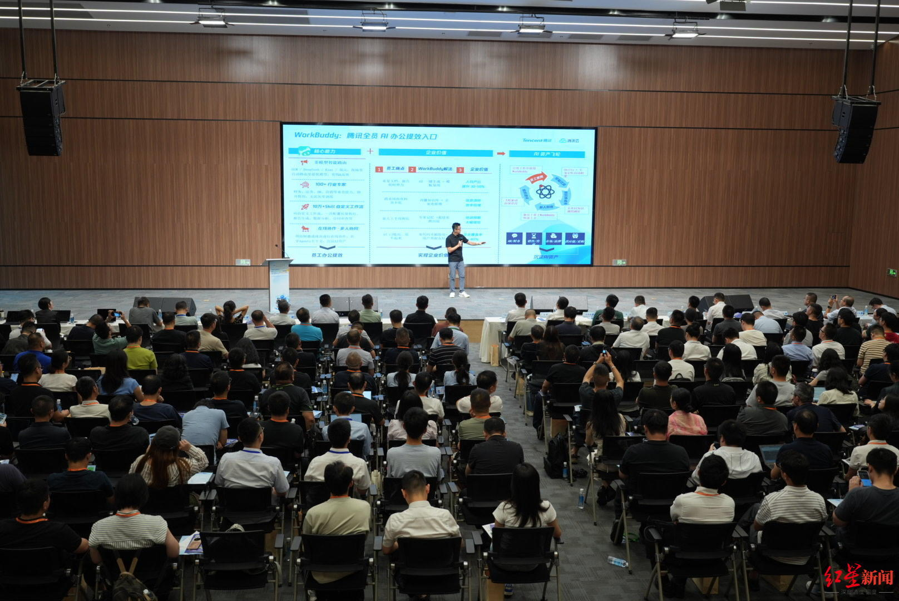
135.1 政府搭台：「1+N」精准对接模式
本次活动紧扣软件和信息服务企业「拓市场、抢订单、稳增长、优生态」的核心诉求，围绕「政府引导、园区承载、企业参与」三个维度，破解企业在市场拓展中面临的对接难、渠道窄、资源散等实际痛点。成都市经信局市新经济委等部门以场景开放赋能企业「智改数转」，既是成都深化「进解优促」服务、优化营商环境的最新动作，也是推动软件和信息服务业高质量发展、助力产业链强链补链的重要举措。通过政府精准「搭台」、企业主动「唱戏」，为供需双方架起了高效对接的桥梁。
135.2 链主赋能：WorkBuddy 全系智能体亮相，十类岗位 7×24 数字助手
作为本次活动的核心企业、软件和信息服务产业链龙头企业，腾讯围绕 AI 智能体产品及行业解决方案进行专题推介，系统展示人工智能在政务办公、组织管理、生产经营等领域的赋能能力，并发布面向制造业、数字文创、跨境电商等多个行业的应用解决方案。WorkBuddy 目前已面向人力资源、财务、法务、销售、采购、运营等十类岗位提供 7×24 小时「数字助手」能力：业务人员无需研发背景，通过自然语言即可创建企业专属智能体，将企业知识、专家经验、系统连接器和标准化流程沉淀为可复用的「企业 AI 资产」，并与腾讯文档、腾讯乐享等办公应用打通，构成 AI 时代的新一代办公套件。
135.3 市场底气：易观 6 月 2097 万月访问量、831% 环比领跑
来自易观的数据显示，2026 年 6 月，WorkBuddy 以 2097 万月访问量、831% 的环比增速 在桌面端 AI 原生办公智能体赛道领跑。这一数据在本书多个章节（如第一百一十八章 Q2 财报、第一百三十二章数据补遗）均有交叉印证，本章据成都活动现场报道再次确认。制造业场景的实测反馈亦显示，原本需 2–4 小时的质检流程，借助 WorkBuddy 可压缩至 5–10 分钟，成为「智改数转」降本增效的直观注脚。
135.4 OPC 社区辐射：天府长岛实践，500+ 园区主动对接
支撑这场对接会的，是腾讯在成都的长期布局。今年 7 月，全国首个 WorkBuddy OPC 合作社区在成都高新区天府长岛数字文创园正式启动，以腾讯自研 WorkBuddy 智能体为核心工具，构建「AI 资源普惠—产品教学—专家陪跑—经验复制」四级陪伴式服务体系，直击单人创作者算力不足、技术薄弱、变现困难三大痛点。据活动报道，该模式落地以来已吸引全国 500 余个园区、运营主体 主动对接，成都的创新探索正在形成可向全国输出的宝贵经验（OPC 社区详见第八十五章及第三十七部分）。
135.5 与本书的关系
本章与第一百二十一章「WorkBuddy 开发者沙龙（前海首站 / 全国巡回）」、第一百三十三章「大湾区 AI 科创社区生态联盟 + 领军人才引育计划」同源——均属腾讯以「城市 / 园区 / 产业」为单元推进 WorkBuddy 落地的官方生态动作，但聚焦成都「政企协同 + 1+N 供需对接」这一全新场景，填补了书内「政府搭台型 AI 智能体对接会」空白；与第八十五章 OPC 社区、第三十七部分「企业版落地」相互呼应，共同刻画出 WorkBuddy 从产品到生态、从园区到产业链的渗透路径。版本与事实以国际在线、腾讯新闻及腾讯科技（成都）官方发布为准，未做推断。
本章整理自国际在线（sc.cri.cn，2026-08-17）《成都"1+N"精准对接腾讯AI智能体 助力企业"智改数转"》与腾讯新闻（new.qq.com/rain/a/20260817A0BQFC00，2026-08-17）《成都"1+N"精准对接（腾讯AI智能体专场）活动举行》两篇同源报道，并交叉印证腾讯科技（成都）有限公司与成都市经信局市新经济委官方发布。活动名称「智联未来·赋能百业」、主办方（成都市经信局市新经济委 / 成都市委宣传部 / 成都高新区数字经济局 / 腾讯科技成都）、「1+N」精准对接模式、WorkBuddy 十类岗位 7×24 数字助手、企业 AI 资产与腾讯文档 / 腾讯乐享打通、易观 6 月 2097 万月访问量 / 831% 环比、OPC 社区 500+ 园区对接等均以报道原文为准；配图取自腾讯图床（qqpublic.qpic.cn，本章已下载 assets/wb-chengdu-supply-20260817.jpg 本地嵌入）。版本号未做推断。
WorkBuddy × 腾讯云 Lighthouse：腾讯轻量云专家上线，免费领一个月云服务器
2026 年 8 月 13 日，腾讯云 Lighthouse 联合 WorkBuddy，在 WorkBuddy 专家板块正式上线「腾讯轻量云专家」——一个懂云、懂运维的 AI 专家，让服务器的部署、配置与排障从「翻文档、敲命令」变成「一句话搞定」。在 WorkBuddy 办公工作台中即可完成对轻量云的智能运维；召唤该专家并完成授权与对话，即可免费获赠一个月 Lighthouse 轻量应用服务器，零门槛上手云端算力与 AI 运维助手。该动态在书内关键词预校验为 0 命中（腾讯轻量云专家 / Lighthouse 免费领 / 成长计划 体验腾讯轻量云专家 均无，书中仅在能力清单提及 Lighthouse 作为通用部署底座），本章据实补入。
136.1 活动福利：个人版用户免费领一个月轻量云
本活动仅限 WorkBuddy 个人版用户 参与（企业版用户不参与）。成功完成流程的用户可免费获取权益：新购 0 元新购入门型 2核2G4M 轻量应用服务器 1 个月（每日限量 400 台）；续费 0 元续费入门型 2核2G4M 或 4核4G3M 实例 1 个月（各每日限量 50 台）。适用地域为北京、上海、广州，镜像类型不限；每日 0 点刷新库存，先到先得、领完即止。
136.2 参与流程：四步领走你的第一台云服务器
① 成长计划领任务：打开 WorkBuddy，进入左侧边栏「成长计划」，找到「体验腾讯轻量云专家」任务点「去完成」；② 召唤专家 + OAuth 授权：进入专家板块搜索并召唤「腾讯轻量云专家」，点击「腾讯轻量云」连接器入口，首次使用需完成腾讯云账号 OAuth 授权（Lighthouse Agent 权限确认页勾选默认权限即可）；③ 完成一次有效对话：如对专家发送「查询我账号中有哪些 lighthouse 实例」，专家返回实例列表（地域、名称、状态、配置、到期时间等），任务进度显示 1/1 后点击「领取奖励」；④ 活动页核销权益：在活动页选择新购或续费，按提示完成 0 元支付即可。
136.3 与本书的关系
本章与第三十七部分「生态全景」、第八十七章「腾讯 Agent 生态协作」、第八十五章 OPC 社区相互呼应——WorkBuddy 正持续把腾讯云基础设施能力（Lighthouse 轻量应用服务器、COS 对象存储、TokenHub 模型路由等）封装为「专家 + 连接器」直接可用的智能体节点，让用户以自然语言调度云端算力。书中此前已在能力清单将 Lighthouse 列为「实现 AI 工具云端运行、7×24 小时在线」的部署底座（第 2506 / 3338 / 3385 行），本章补全其「专家上线 + 免费领服务器」的最新官方活动实质；与第一百三十四章「浪潮云会计上架技能市场」同属 WorkBuddy 生态「连接器 / 专家 / 技能」三路并进的延展证据。活动时间 2026-08-13 00:00 至 2026-11-13 23:59，事实与规则以腾讯云官方活动页为准，未做推断。
本章整理自腾讯云开发者社区原创文章《【WorkBuddy × 腾讯云 Lighthouse】腾讯轻量云专家上线，免费领取一个月轻量应用服务器》（cloud.tencent.com/developer/article/2727729，修改于 2026-08-18 16:01:49，活动启动 2026-08-13）。「腾讯轻量云专家」上线、免费领一个月 Lighthouse（新购 2核2G4M 每日 400 台 / 续费各 50 台、适用北京上海广州）、四步参与流程、活动时间 2026-08-13 至 2026-11-13、仅限个人版用户等均以原文为准。文末含活动交流群二维码但未暴露腾讯图床（mmbiz / qqpublic / developer.qcloudimg）直链，依先例本次未下载本地配图。版本号与权益规则未做推断。
蒙牛集团落地 WorkBuddy：AI 数字员工「入职」乳业龙头
2026 年 8 月 17 日腾讯云披露，WorkBuddy 已作为 AI 数字员工「入职」蒙牛——由 200 名内部 AI 先行官 基于真实岗位需求开发应用，覆盖奶牛快速诊疗、电商主图批量生成、实验室数据自动化采集等经营提效环节。该动态在书内关键词预校验为 0 命中（蒙牛 / 奶牛快速诊疗 / 电商主图批量生成 / 实验室数据自动化采集 均无），本章据实补入。这是继成都「1+N」对接会（第一百三十五章）、深圳港七类核心场景（第一百三十二章）、浪潮云会计上架（第一百三十四章）之后，WorkBuddy 在实体产业「AI 数字员工」落地的又一标杆客户案例。
137.1 落地形态：200 名 AI 先行官，按真实岗位开发
蒙牛并未将 WorkBuddy 当作一次性工具试用，而是组织 200 名内部 AI 先行官，从各自真实岗位职责出发开发应用，把 WorkBuddy 嵌入日常经营流程。这种「员工即开发者」的推广路径，与第八十五章 OPC 社区「AI 资源普惠—产品教学—专家陪跑—经验复制」的陪伴式赋能逻辑一致——先让一线业务人员成为 AI 应用的创造者，再沉淀为可复用的企业 AI 资产。
137.2 三大场景：从牧场到电商到实验室
① 奶牛快速诊疗：将兽医经验与养殖数据接入 WorkBuddy，辅助一线人员快速研判奶牛健康异常、给出处置建议，缩短响应时间；② 电商主图批量生成：面向蒙牛电商渠道，用 WorkBuddy 批量生成合规、风格统一的商品主图，把原本依赖设计排期的工作压缩为分钟级产出；③ 实验室数据自动化采集：让 WorkBuddy 自动从实验系统 / 报表中抓取、清洗与汇总数据，减少人工录入与核对差错。三类场景横跨牧业生产、电商运营与研发质控，体现 WorkBuddy 在大型快消集团「多岗位 7×24 数字助手」的通用适配能力。
137.3 与本书的关系
本章与第一百三十五章「成都 1+N 对接会」、第一百三十二章「深圳港生产场景」、第一百三十四章「浪潮云会计技能上架」同属 WorkBuddy「走进实体经济」的证据链，但聚焦乳业龙头的内部规模化采用这一全新视角——蒙牛以 200 名 AI 先行官的组织化方式推动落地，印证 WorkBuddy 正从「对外展示的 AI 能力」转为「嵌入大型企业生产经营的 AI 数字员工」。版本与事实以腾讯早报（2026-08-18 第 3 条）及腾讯云 8 月 17 日披露原文为准，未做推断。
本章整理自《腾讯早报》（new.qq.com/rain/a/20260818A024VX00，发布于 2026-08-18 06:10，第 3 条「腾讯云 WorkBuddy 入职蒙牛成 AI 数字员工」），源引财闻（view.inews.qq.com/a/20260817A08OJT00），据腾讯云 2026-08-17 披露。WorkBuddy 入职蒙牛、200 名内部 AI 先行官、覆盖奶牛快速诊疗 / 电商主图批量生成 / 实验室数据自动化采集等场景均以原文为准；该条为腾讯官方早报聚合动态，未暴露腾讯图床直链，本次未下载本地配图。版本号未做推断。
WorkBuddy 重磅升级：内置 2.8 万亿 Kimi-K3 长上下文模型，夜猫子 23 点起算力折扣，三层智能体架构
2026 年 7 月 29 日，腾讯云 WorkBuddy 发布重磅能力升级：独家上线 Kimi-K3 开源大模型（2.8 万亿参数、原生 100 万 Token 超长上下文），推出夜猫子错峰算力计划（每晚 23:00–次日 08:00 旗舰模型专属折扣），并以 Skill · 专家 · 专家团 三层智能体体系打通腾讯办公与云生态。该动态在书内关键词预校验为 0 命中（Kimi-K3 / 2.8 万亿 / 夜猫子 均无），本章据实补入。这是 WorkBuddy 在「多模型矩阵 + 智能体分层协作 + 算力成本优化」三线并进的又一次实质性升级。
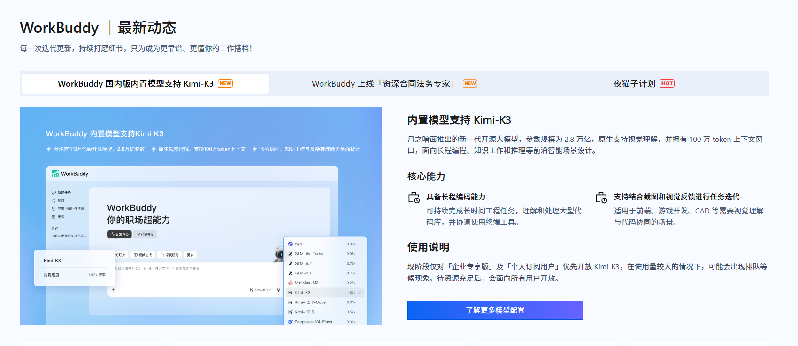
138.1 Kimi-K3 2.8 万亿旗舰模型：100 万 Token 超长上下文
本次核心亮点为独家上线 Kimi-K3 开源大模型，仅对 WorkBuddy 个人订阅与企业版用户开放：① 超大规格底座——2.8 万亿参数，原生支持 100 万 Token 超长上下文，可完整加载整仓代码、全套财报、上万字行业白皮书而无截断；② 视觉 + 代码双原生能力——支持截图、界面图、CAD 图纸联动代码开发，据视觉反馈迭代前端与游戏工程；③ 长程自主工程能力——自动拆解大型项目，调用终端、调试接口、批量生成单元测试，适配全栈开发与游戏引擎迭代；④ 复杂推理优化——财务勾稽测算、行业深度调研、法务合同逐条审查准确率大幅提升。典型场景涵盖百万行老系统重构、游戏全流程开发、CAD 配套程序、长篇法律文书批量审核、多维度商业竞品分析。
138.2 夜猫子错峰算力计划：每晚 23:00–08:00 旗舰模型折扣
每晚 23:00 — 次日 08:00，切换 Kimi-K3、GLM-5.2 等旗舰模型自动享受专属算力折扣，无需手动领券、无需额外配置。该计划面向夜间批量高负载任务：研发侧全项目代码重构、海量日志排查、接口批量生成；运营侧几十版营销 PPT、短视频脚本矩阵、竞品分析；财务侧月度财报核算、报销票据识别、税务测算；内容侧多系列种草文案、电商主图脚本、短剧分镜批量产出。优势在于夜间闲置算力充足、无日间排队限流，任务提交后关闭软件、云端后台持续运行，次日直接验收，显著压缩月度 Credits 消耗。
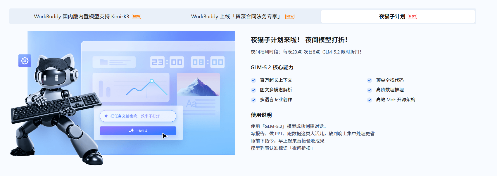
138.3 三层智能体体系：Skill · 专家 · 专家团
① Skill（标准化原子能力）：封装单一工具操作，含 COS 文件处理、表格识别、代码部署、语音转写、SEO 分析等 7 万 + 官方 Skills，一句话调用、按需安装、自由组合；② 专家（岗位专属 AI 角色）：Skill + 行业经验 + 专业提示词组合，内置资深法务、全栈工程师、数据分析师、短视频编导等成熟专家，单点专业问题直接召唤、输出符合行业规范；③ 专家团（多角色协同虚拟团队）：多位专家自动分工、并行执行复杂项目——内容专家团自动拆分创意、文案、配图、排版，研发专家团同步完成架构、前端、测试、部署全流程，单人即可完成小型团队工作量。该三层体系正是本书第十章「专家与专家团」、第六十四章「多智能体与专家团」所论述协作范式的产品化落地。
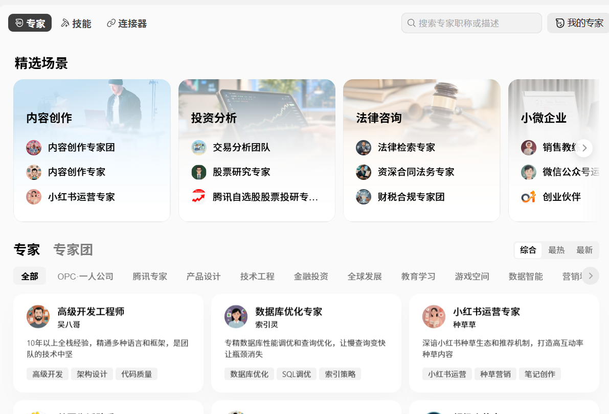
138.4 深度打通腾讯全生态
办公生态原生连接器：腾讯文档 / 乐享自动读取企业知识库并回存成果；企业微信 / 邮箱自动整理邮件、生成客户跟进话术、定时推送简报；腾讯会议抓取录音生成结构化纪要与待办。 腾讯云全系产品内置 Skills：COS 对象存储批量处理素材与归档；CloudBase 一句话创建环境、全栈项目一键托管部署；EdgeOne、CLS 日志秒级排查线上报错；数据万象 CI 商品图与宣传图批量生成裁切。完整生态打通后无需切换多平台，自然语言即可操控存储、服务器与办公文档。
138.5 两大订阅版本与适用对象
团队旗舰版（中小研发 / 运营团队，1 坐席起购）：每月 2000 共享 Credits、精细化席位权限管控、用量全追溯、基础云 Skills 全开放、支持 3–4 专家并发、夜猫子折扣全覆盖，适用独立工作室与 5–20 人中小企业。 企业专享版（大型政企，100 坐席起购）：腾讯云专属隔离 VPC、租户数据完全隔离、企业私有定制 Skills、专属运维对接、金融 / 政务高合规适配、不限专家并发，适用上市企业、政务单位、金融机构、大型 MCN 集团。配套可采购 Hy Token Plan 混元算力包补充 Agent 推理算力，降低 7×24 小时数字员工场景的单价。
138.6 与本书的关系
本章与第十部分「官方动态」、第十七部分「官方更新日志」、第十章「专家与专家团」、第六十四章「多智能体与专家团」相互呼应——WorkBuddy 持续把「多模型路由 + 智能体分层 + 算力成本优化」封装为可一键调用的产品能力。书中此前已在模型矩阵与专家团协作范式层面论述相关理念，本章补全其 Kimi-K3 2.8 万亿长上下文模型接入、夜猫子错峰算力、Skill-专家-专家团三层产品化架构与双订阅版本 的最新官方实质；与第一百三十六章「腾讯轻量云专家」、第一百三十四章「浪潮云会计技能上架」同属 WorkBuddy 生态「模型 / 专家 / 技能 / 云」四路并进的延展证据。产品功能与订阅权益以腾讯云官方活动页与文章原文为准，未做推断。
本章整理自腾讯云开发者社区文章《WorkBuddy 重磅升级！内置 2.8 万亿 Kimi-K3 长上下文模型，夜猫子 23 点起算力折扣，一站式打通腾讯全办公与云生态》（cloud.tencent.com/developer/article/2717828，作者 icloud在云端，发布于 2026-07-29 15:25:54）。Kimi-K3 2.8 万亿参数 / 100 万 Token 上下文、夜猫子错峰算力（23:00–08:00，覆盖 Kimi-K3、GLM-5.2 等旗舰模型）、Skill（7 万+）/ 专家 / 专家团三层体系、腾讯文档·企业微信·腾讯会议及 COS·CloudBase·EdgeOne·CLS·数据万象 生态连接器、团队旗舰版（1 坐席起购、2000 共享 Credits）/ 企业专享版（100 坐席起购、独立 VPC 隔离）/ Hy Token Plan 等均以原文为准。原文含 3 张配图（模型总览、夜猫子计划、三层智能体），已下载本地至 assets/kimi-k3-hero.png、assets/night-owl-plan.png、assets/three-layer-agent.png 并内嵌。版本号与权益规则未做推断。
零代码定制 AI Agent 五步实战法（角色·技能·知识库·约束·迭代）
2026 年 8 月 20 日，腾讯云开发者社区发布实战教程：普通用户无需编写代码，依靠角色设定 + Skill 技能集 + 私有知识库 + 执行规则 的组合，即可在 WorkBuddy 中快速搭建专属定制 Agent，完成自动化办公、信息处理与业务辅助。该动态在书内关键词预校验为 0 命中（零代码定制 AI Agent 五步法 / 用户12696814 均无），本章据实补入。教程以「合同初审助手」为贯穿示例，给出可复制的五步法与三套高频组合方案。
139.1 什么是零代码 Agent
传统 Agent 开发需要提示词工程、工具调用编排、知识库对接与流程调试；WorkBuddy 的零代码 Agent 本质是把 角色设定 + Skill 技能集 + 私有知识库 + 执行规则 打包封装，通过可视化配置让 AI 拥有固定身份、专属工具与私有资料，自主完成一整套连贯任务，而非单次问答。简单理解：普通对话是一问一答，定制 Agent 是给 AI 一套完整身份、工具与资料，接到指令后自主规划步骤、完成完整业务流程。
139.2 搭建前准备：定位三要素 + 必备组件
动手前先确定三要素，避免智能体能力混乱：① 角色定位（如周报助理、合同审核助手、行业资料分析师）；② 核心任务（越具体效果越好）；③ 输出规范（格式、语气、必含 / 禁含内容）。错误示例「做一个全能办公助手」应改为正确示例「做合同初审助手，读取 PDF 合同、识别风险条款、输出风险点 + 修改建议表格」。必备组件：Skill 技能（技能商店挑选或 skill-creator 自定义）、知识库材料（PDF / Word / TXT 上传）、基础模型（通用办公选通用大模型，深度推理选推理更强的模型）。
139.3 五步实操
步骤 1 创建角色基础设定：新建对话空间，写入完整 System 提示词，定义身份、行事逻辑与能力边界（示例：你是「合同初审智能助手」，读取合同→识别付款 / 违约 / 保密 / 权责条款→标记风险并给修改建议→表格输出，禁止编造法律条文）。 步骤 2 装配 Skill 工具组合：进入技能市场勾选所需 Skill（文档解析、PDF 提取、网页搜索、表格分析），无匹配则用内置 skill-creator 自然语言生成自定义 Skill；重点：勿一次性加载过多无关技能，以免干扰 Agent 决策。 步骤 3 绑定私有知识库：上传参考文档，设置引用规则（优先参考知识库、无信息则如实告知、禁止编造）；单份文件建议控制在几十 MB 以内、拆分多份小文档检索更佳。 步骤 4 设置执行约束规则：复杂任务分步执行、信息不足主动追问、输出遵守预设格式、超范围直接告知用户。 步骤 5 测试迭代优化：输入真实指令跑通一次，跑偏时排查提示词 / Skill / 知识库三点，反复调优至输出稳定。
139.4 三套高频组合方案
方案 A 办公合同审核 Agent：角色合同初审助手 + Skill（PDF 解析、文档阅读）+ 知识库（公司合同模板、风控规范）→ 上传合同自动标记风险条款、输出风险对照表。 方案 B 行业调研分析 Agent：角色行业分析师 + Skill（网页搜索、信息汇总、文档导出）+ 知识库（行业报告、历史调研）→ 给定主题联网搜集并结合私域文档输出结构化调研报告。 方案 C 项目周报自动化 Agent：角色项目助理 + Skill（表格读取、文档生成）+ 知识库（周报模板、进度文档）→ 读取进度表自动填充模板生成周报。
139.5 高频踩坑与避坑
① 输出天马行空：角色描述模糊、缺约束规则 → 细化角色、补输出格式与禁止行为；② 知识库上传但 AI 未引用：未开启知识库开关或文件过大 → 确认启用、大文件拆分、指令明确要求参考知识库；③ 技能装配后不生效：确认已勾选启用，部分 Skill 依赖 Node.js，Windows 需提前安装并重启客户端；④ 复杂任务中途中断：长任务尽量拆解、多轮分步执行。
139.6 与本书的关系
本章与第六章「专家团写作法」、第六十四章「多智能体与专家团」、第三十七部分「企业版落地 / OPC 社区」相互呼应——将本书论述的「智能体构建」理念落地为一套可照做的五步法。书中此前已在能力清单与专家团范式层面对 Agent 构建有框架性论述，本章补全其 零代码定制 Agent 的具体配置路径、三套开箱组合方案与四类高频踩坑 的实操实质；与第一百三十八章「Kimi-K3 升级与三层智能体」同属 WorkBuddy「让普通人也能拥有专属数字员工」的能力延展。原文为社区用户投稿实战经验，配图未提供腾讯图床直链，本次未下载本地配图；具体操作以 WorkBuddy 产品界面与官方教程为准。
本章整理自腾讯云开发者社区用户投稿《零代码定制 AI Agent，#WorkBuddy# 这套组合方案实战》（cloud.tencent.com/developer/article/2729691，作者 用户12696814，发布于 2026-08-20 21:18:28）。零代码 Agent「角色设定 + Skill + 私有知识库 + 执行规则」封装逻辑、搭建前定位三要素、五步实操（角色设定→装配 Skill→绑定知识库→执行约束→测试迭代）、三套组合方案（合同审核 / 行业调研 / 周报自动化）与四类高频踩坑均以原文为准。原文未提供腾讯图床（mmbiz / qqpublic / developer.qcloudimg）配图直链，依先例本次未下载本地配图。本文为社区用户实操经验分享，仅供学习实践，具体操作以 WorkBuddy 官方产品界面为准，未做推断。
腾讯 WorkBuddy 效率智能体 OPC 从业者认证课程：11 模块官方认证，从「会用」到「能交付」
腾讯云培训认证正式上线 「腾讯 WorkBuddy 效率智能体 OPC 从业者认证」课程与认证——这是 WorkBuddy 面向「一人公司（OPC, One Person Company）」实践者的首套官方系统化能力认证。课程目标是让独立开发者、小微创业者、自由职业者与职场效率追求者，借助 WorkBuddy 把「一个想法 → AI 协作 → 团队级产出」的全链路跑通，用最小的团队高效运转业务。该动态在书内关键词预校验为 0 命中（WorkBuddy 效率智能体 OPC 从业者认证 / workbuddy-opc-cert 均无），本章据实补入，与第八十五章「WorkBuddy × OPC 一人公司的 AI 超级赋能」形成「社区落地 + 官方认证」的闭环。
140.1 课程概况：11 模块 / 31 章节 / 约 6 小时，免费学习
课程共 11 个模块、31 个章节视频与实操任务，总时长约 6 小时，免费开放学习。内容从 WorkBuddy 基础入门循序渐进到 OPC 实践能力构建，覆盖产品定位、任务方法、助理连接、技能、连接器、灵感模块、资料库、自动化、专家中心、典型办公场景与 OPC 概念。
140.2 学完你将掌握六大能力
① 理解产品定位：掌握自然语言理解 / 自主规划 / 多任务处理三大核心能力，理解与传统 AI 对话工具的本质差异；② 熟练操作桌面端：安装登录、环境配置，掌握主界面六大功能模块与三种工作模式（Craft / Plan / Ask）的场景选择；③ 写出高质量任务：运用任务描述黄金法则、上下文引用、工作空间管理与追问技巧，稳定拿到高质量产物；④ 扩展智能体能力：会用技能、连接器、灵感模块、资料库与自动化，搭建自己的高效工作链路；⑤ 调用专家团完成专业工作：理解专家中心能力分布，按 OPC 角色组合高频专家，落地文档、数据、PPT、深度研究等典型办公场景；⑥ 构建 OPC 实践能力：理解一人公司工作模式，用 WorkBuddy + 专家团完成「一人多角色、轻资产、高效率」的 AI 应用落地。
140.3 这门课程适合谁
面向想用 AI 智能体放大个人产能、以最小团队高效运转业务的实践者：独立开发者（希望用 AI 放大个人产能、独立交付产品）；小微创业者（以最小团队运转业务，需要 AI 承担多角色工作）；自由职业者（内容、设计、咨询、研究等领域，追求高效产出）；职场效率追求者（把 AI 智能体深度融入日常办公，提升交付质量与速度）。
140.4 课程学习地图（11 模块）
01 产品与基础入门：产品定位、四大核心能力、安装登录、主界面与三种工作模式；02 任务创建与结果管理：高质量任务、上下文引用、产物交付闭环；03 助理的链接：微信、企业微信等渠道的链接配置与使用；04 技能：技能市场安装、调用与自定义技能创建；05 连接器：打通腾讯文档、乐享、问卷、腾讯会议、微云等办公套件，覆盖数据查询、服务调用、文件管理、消息通知四类场景；06 灵感模块：按场景一键复用优质方案，支持保存到工作空间；07 资料库：授权与文件检索，跑通「取资料 → AI 加工 → 存回沉淀」闭环；08 自动化：创建自动化任务、套用模板，让重复工作自动运转；09 专家中心与模型配置：100+ 领域专家选择与使用，按需配置模型能力；10 典型办公场景综合理解：文档、数据可视化、PPT、深度研究四类高频场景；11 OPC 概念与专家团能力：一人公司工作模式，组合高频专家团落地 AI 应用。
140.5 三步获得腾讯云官方认证
STEP 1 完成课程学习：按学习地图完成 11 个模块、31 个章节的视频与实操任务；STEP 2 通过考试：参加「WorkBuddy 效率智能体 OPC 从业者认证」机考，总分 100 分、70 分通过，考试时长 90 分钟，购买认证后含 3 次考试机会；STEP 3 获取官方证书：通过考试后获颁腾讯云官方电子证书，唯一证书编号可在线核验，有效期 2 年。证书由腾讯集团云与智慧产业事业群（CSIG）背书，证明持证人具备 WorkBuddy 平台应用、专家团调用与 OPC 场景落地的综合能力。
140.6 与本书的关系
本章与第八十五章「WorkBuddy × OPC 一人公司的 AI 超级赋能」、第三十七部分「OPC 社区与生态协作」相互呼应——将本书论述的「一人公司 / AI 工作流」范式落地为一套可考取、可背书的官方能力标准。书中此前已在 OPC 社区、技能市场、连接器与自动化等层面论述了个人产能放大路径，本章补全其 官方认证课程结构（11 模块 / 31 章节）、六大能力目标、四类适合人群与三步取证流程 的认证实质；与第一百三十九章「零代码定制 AI Agent 五步法」同属 WorkBuddy「让普通人也能拥有专属数字员工」的能力延展。课程与考试权益以腾讯云培训认证官网实时信息为准，未做推断。
本章整理自腾讯云培训认证官方页面《腾讯 WorkBuddy 效率智能体 OPC 从业者认证课程》（cloud.tencent.com/edu/training/workbuddy-opc-cert）与《腾讯 WorkBuddy 效率智能体 OPC 从业者认证》（cloud.tencent.com/edu/cert/developer/1056）。课程 11 模块 / 31 章节 / 约 6 小时、免费学习、六大能力目标、四类适合人群、课程学习地图 11 模块、三步取证（学习→机考 70/100 通过、90 分钟、3 次机会→官方电子证书、唯一编号可核验、有效期 2 年、CSIG 背书）均以原文为准。课程落地页含产品介绍视频但未提供腾讯图床（mmbiz / qqpublic / developer.qcloudimg）静态图直链，依先例本次未下载本地配图。具体操作与考试权益以腾讯云培训认证官网为准，未做推断。
湾擎·WorkBuddy 正式发布：广东政务智能试点全面启动
2026 年 8 月 18 日下午，湾擎政务智能旗舰应用发布仪式在广州举行，基于广东省政务智能湾擎中枢创新研发的 湾擎·WorkBuddy 政务智能应用正式上线。这标志着该产品由 2026 年 6 月 16 日的预发布（本书第一百三十二章第二节已述）正式转入试点试用阶段，将在实际业务中持续打磨政务场景能力，并于 8 月下旬面向首批公务员开放试用、视情况逐步推广。该动态在书内关键词预校验为 0 命中（湾擎·WorkBuddy 正式发布 / 首批 18 家省直单位 均无），本章据实补入，与第一百三十二章第二节「湾擎·WorkBuddy 与深圳港」形成「预发布 → 正式发布」的闭环。
141.1 定位：为公职人员配备"懂政务、会干活、可协同"的 AI 工具箱
区别于传统问答式工具，湾擎·WorkBuddy 能够准确理解工作意图、自主拆解任务、调度相关工具，直接形成可用的文稿、报表与工作方案，实现从"问答查询"向"智能办公、辅助执行、闭环交付"的质的飞跃。它依托湾擎底座，将腾讯 AI 办公智能体与政务场景深度结合，并整合腾讯乐享知识中枢、腾讯云智能体开发平台，深度推动办公流程再造与 AI 提效。
141.2 首批 18 家省直单位试点，四大领域覆盖
依托粤政易平台建设的湾擎·智能超级入口已完成全域部署，将在首批 18 家省直单位 试点推广。目前广东省医疗保障局、广东省中小企业服务中心等首批省直单位正在开展数十个场景对接与试点探索，试点场景已覆盖 政务服务、政务协同、辅助决策、社会治理 四大领域：政务协同（政策一键检索、公文智能成稿、会议纪要、事项分办与任务督办）、政务服务（精准咨询、智能导办、材料预审、进度跟踪）、辅助决策（趋势研判、风险预警、政策评估与方案比选）、社会治理（基层反馈汇聚与闭环）。
141.3 标杆场景：生育津贴 AI 预审闭环
在辅助决策领域，广东省医疗保障局的探索聚焦经办审核与基金运行分析。以生育津贴支付为例，湾擎·WorkBuddy 与医保业务系统对接后，经办可选择单笔或批量交由 AI 预审，并可设置定时预审管理；AI 完成材料识别、预审核并经人工确认后，将审核结果回写至医保业务系统，形成数字经办闭环流程。基金运行分析方面，联动医保统计和基金报表，一键生成图文并茂的分析报告。广东省基本医保参保人已超 1.12 亿、定点医药机构超 5 万家，AI 预审显著压缩经办时长。
141.4 立体化安全：全国首次信创环境私有化全栈适配
湾擎·WorkBuddy 是全国首次在国产环境实现私有化全栈适配改造的政务智能应用，从国产芯片、操作系统到中间件、大模型全链路自主可控。服务端部署在政务网，客户端适配国产操作系统并在国产终端运行，国产模型能力本地接入调用；数据全程加密、密钥与令牌加密存储，任务默认在本地安全沙箱中执行，文件/命令/网络访问逐项管控，操作行为全程留痕、风险行为持续检测、高危操作实时拦截，做到"数据不出域、行为可审计、权限可管控、风险可处置"的 Token 级安全策略。2026 年 7 月，WorkBuddy 获中国网络安全产业联盟（CCIA）"智能体 PIA 二星+ 级标识证书"（全国首批且唯一，二星+ 为最高级），此前还首批通过中国信通院"可信 AI—智能助理智能体"评估。
141.5 首批湾擎六类标准规范 + 湾擎 WPS 专版
发布活动同步推出首批湾擎认证六类标准规范，涵盖认证体系、接口标准、知识库建设、算力运营、安全分级等，标志广东政务智能从"能跑、能用"向"好用管用、安全规范"迈进。同时，湾擎 WPS 专版 正式面向广东省公务员推出（金山办公政务解决方案），聚焦构建数字政府"公文大脑"与"政务知识基座"，提供政务文档 AI 生成/润色/仿写/扩写/校对/排版、内容总结等一站式能力，基于公文大模型贯穿拟稿、审校到排版多环节，并构建跨部门跨层级四级知识库矩阵。王天广（省政务和数据局党组书记、局长）表示，下一步将以政务智能应用为牵引，推动中国移动、腾讯、华为、金山等龙头企业在粤集聚，培育政务智能产业新增长点。
141.6 与本书的关系
本章与第一百三十二章第二节「湾擎·WorkBuddy 与深圳港」、第一百二十五章「AI 办公三国杀」、第八十五章「WorkBuddy × OPC」相互呼应——将本书论述的"政务 / 严肃办公场景落地"补全为正式发布与试点试用 的阶段事实。书中此前已在湾擎预发布、深圳港七类核心场景（报关 30→5 分钟）等层面论述 WorkBuddy 的政务可用性，本章补全其 正式发布节点、18 家省直单位试点、信创全栈私有化适配、六类标准规范、WPS 专版与 PIA 二星+ 安全认证 的实质性新进展。具体试点范围与上线节奏以广东省政务服务和数据管理局与腾讯云官方披露为准，未做推断。
本章整理自广东省政务服务和数据管理局政府信息公开《擎动湾区 智启新程——广东湾擎政务智能旗舰应用正式发布》（zfsg.gd.gov.cn/gkmlpt/content/4/4943/post_4943811.html，2026-08-18）、科技日报《公职人员有了 AI 工具箱 广东启动政务智能试点工作》（stdaily.com/web/gdxw/2026-08/19/content_566483.html，2026-08-19）、南方都市报 / 花城网《湾擎·WorkBuddy 正式发布，广东政务智能试点工作全面启动》（huacheng.gz-cmc.com，2026-08-18）及经济日报等报道。8/18 广州发布仪式、预发布（6/16）转入试点、首批 18 家省直单位、粤政易超级入口全域部署、四大领域场景、生育津贴 AI 预审闭环（对接医保业务系统、单笔/批量预审→人工确认→回写）、信创全栈私有化适配、六类标准规范、湾擎 WPS 专版、CCIA 智能体 PIA 二星+ 级（2026-07）均以原文为准。报道配图来自南方都市报 / 花城网图床（非腾讯图床直链），本次未下载本地配图。政务试点范围与节奏以官方披露为准，未做推断。
中国移动×腾讯 WorkBuddy 联名版「算力豆」套餐上线
中国移动与腾讯强强联手，推出 WorkBuddy 联名版，专为中国移动用户量身定制，并搭配全新的 "算力豆"套餐——这是中国移动创新推出的 AI 算力计费新方式，让用户"用手机套餐的逻辑，轻松享受 AI 服务"。联名版与公众版最大区别在于：用订购算力豆套餐的手机号即可直接登录 WorkBuddy，系统自动识别联名版权益、呈现专属功能页面。该动态在书内关键词预校验为 0 命中（WorkBuddy 联名版 / 算力豆 均无），本章据实补入，与第一百一十五章「多端同步」、第一百一十六章「鸿蒙电脑」、模型矩阵章节共同勾勒 WorkBuddy"多端 + 多模型 + 多渠道"的普惠路径。
142.1 三大核心优势
① 极简登录，一键直达：使用订购算力豆套餐的手机号即可直接登录 WorkBuddy，展示联名版页面，无需繁琐注册；未订购套餐时登录显示公众版功能页（无法消耗和订购移动算力豆），办理套餐后专属功能自动解锁。② 多端部署，随时随地：客户端支持 Mac / Windows 本地安装，也可部署在移动云电脑内，跨设备无缝衔接——本地安装数据留在本机，云端部署即便本地关机断电也能 7×24 在线。③ 丰富模型，自由选择：联名版内置多种主流大模型（DeepSeek、Kimi、Qwen、GLM、MiniMax、Doubao-seed 等），可按场景选用，算力豆消耗更合理。
142.2 算力豆套餐：透明计费、按量消耗
算力豆采用预付费模式，类似于用户熟悉的流量套餐：提前订购（多档位适配轻度创作到专业开发）、按量消耗（使用 AI 服务时自动扣减）、实时查询（余量透明可见）。档位丰俭由人——9.9 元尝鲜包（约 1200 万 Token，每手机号限购一次）、月包 5 元起共 7 档（档位越高单价越低，用得越多越划算）、次包 10 元起（即买即用、无限叠加）。兑换比例约为 1 算力豆 ≈ 100 万 Tokens，Token 消耗直接进话费账单，如同查流量余额一样清楚。河南移动用户可 0 元领 1200 算力豆、首年月包享 5 折；上海移动亦推出同类套餐。
142.3 应用场景：从办公到创业全覆盖
联名版覆盖办公创作（文案、PPT 构思、数据分析报告、调试代码）、学习提升（知识解答、论文辅导、外语翻译）、日常生活（旅行攻略、健康咨询）、商铺经营（推广文案、经营数据分析、财务管家、库存盘点）、个人创业（文学/影视/音乐创作、小程序设计）等场景。腾讯云副总裁姚一兆此前提出 WorkBuddy 要"把政府已有知识库、业务系统、数据接口和行业应用连接起来，让存量资产转化为可持续复用创新的生产力"，运营商联名版正是这一思路在 C 端渠道的延展。
142.4 与本书的关系
本章与第一百一十五章「多端同步」、第一百一十六章「鸿蒙电脑 / 跨端」、模型矩阵与订阅章节相互呼应——WorkBuddy 继"跨端可用"之后，进一步把 AI 能力下沉到运营商亿级用户渠道，用"套餐化算力"降低使用门槛，呼应书中"AI 普惠"主线。书中此前已在多端同步、鸿蒙首款桌面办公智能体、多模型路由等层面论述产品广度，本章补全其 中国移动联名版、算力豆按量计费（1 算力豆≈100 万 Tokens）、手机号一键登录与移动云电脑 7×24 部署 的渠道新进展。资费与功能以中国移动官方办理页面与腾讯云披露为准，未做推断。
本章整理自中国移动官方渠道推广内容（河南移动 / 上海移动，2026-08，经 qq.com 相关报道与移动官方推文披露）：WorkBuddy × 腾讯联名版、算力豆套餐（预付费、按量消耗、月包 5 元起 7 档 / 次包 10 元起 / 9.9 元尝鲜包约 1200 万 Token）、1 算力豆≈100 万 Tokens、手机号一键登录、Mac/Windows 本地 + 移动云电脑双部署、内置 DeepSeek/Kimi/Qwen/GLM/MiniMax/Doubao-seed 等主流模型、河南移动 0 元领 1200 算力豆 + 首年月包 5 折、上海移动同类套餐等均以原文为准。联名版页面与套餐海报来自移动官方推文（非腾讯图床直链），本次未下载本地配图。具体资费与功能以实际办理时为准，未做推断。
WorkBuddy 企业版渠道生态：2000+ 代理商、30% 返点与授权伙伴扩容
据《中国企业家》2026 年 8 月 20 日报道，WorkBuddy 已被腾讯定为战略级项目、马化腾定期听取进度汇报，近期启动大规模代理商推广：给出 30% 以上返点折扣，前提能完成数万个企业账号的推广落地；行业人士估算其销售网络已拥有超过 2000 家代理商，并以裂变方式持续扩张。与此同时，腾讯云 WorkBuddy 企业版的官方授权代理商持续扩容，商派、优扬、银雁、洲天、鸿联九五、微小兔等多家伙伴相继入局，并衍生出面向企业高层的"总裁班"赋能形态。该动态在书内关键词预校验为 0 命中（WorkBuddy 企业版 2000 家代理商 / 优扬科技 100051147714 / 商派总裁班 均无），本章据实补入，与第三十七部分「企业版落地」、第八十五章「OPC 社区」、第八十六章「FDE 前沿部署工程师」形成"产品—渠道—交付"的完整拼图。
143.1 大规模代理商推广：30% 返点 + FDE 门槛
《中国企业家》披露：腾讯给到代理商 30% 以上返点折扣，目标落地数万个企业账号；一级代理商透露官方要求卖出 100 个席位才能享受折扣，并给二三级代理商争取空间。入场门槛除 license 外，还需具备 FDE（前沿部署工程师） 提供私有化部署能力，为客户做好售前售后支撑，代理商解决不了的问题再转交腾讯官方。腾讯还在销售侧展开大范围外部培训，细化到与竞品的差异化话术，在小红书、视频号等社交媒体统一输出。对比之下，阿里、字节尚未大规模铺陈销售代理。
143.2 官方授权代理商扩容（部分确认名单）
截至 2026 年 8 月 20 日，腾讯云 WorkBuddy 企业版已确认的官方授权代理商包括：商派 ShopeX（编号 100013843217，2026-07-31，专注零售电商，24 年零售数智化积淀，将订单路由/库存调度/B2B 授信返利封装为标准 Skill，并打通 SAP/Oracle/用友/金蝶 等 ERP）；优扬科技（上海优扬网络科技有限公司，编号 100051147714，2026-08，AI 数智新营销机构，服务老板电器/方太/金牌家居等头部品牌，提供行业 Skill 定制与全链路运营）；银雁科技（2026-08-14 签约，覆盖金融/政务/央国企，提供智能体定制到持续运营一站式）；洲天科技（2026-08-04，梳理 13 个可落地场景如智能写作/行业研究/数据分析/合同审查/数字员工托管）；鸿联九五（2026-08-10 签约）；微小兔（2026-08-11，服务中小企业 AI 数字化落地）。正规代理商均持有腾讯云颁发的授权合作伙伴编号，可通过腾讯云官方咨询电话 4000700132 核验。
143.3 商派首期「WorkBuddy 总裁班」：30+ 企业高层入腾讯闭门演练
2026 年 8 月 20 日下午，由商派与腾讯云联合主办、徐汇区康健街道商会协办的"WorkBuddy 腾讯云 AI 智能体总裁班"圆满收官，30+ 知名品牌企业高层走进腾讯闭门演练。腾讯团队深度解析 WorkBuddy 重构企业级 AI 办公入口与生态壁垒，结合案例探讨如何赋能超级个体、超级团队与企业组织变革；商派团队则分享 WorkBuddy 如何重塑企业软件系统迭代升级路径，并现场演示零售电商与供应链实战应用。商派联合创始人计三勇认为，企业 IT 数智化蓝图未来将向"以 Agent 为中心枢纽"的架构演进。这是腾讯云企业版代理体系从"签约"走向"全链路运营赋能"的缩影。
143.4 与本书的关系
本章与第三十七部分「企业版落地（东莞/成都/晋江/武汉/药企）」、第八十五章「WorkBuddy × OPC 一人公司」、第八十六章「WorkBuddy × FDE 前沿部署工程师」、第一百四十章「OPC 从业者认证」相互呼应——将本书论述的"企业版组织级赋能"补全为渠道规模化落地 的阶段事实。书中此前已在企业版三大核心模块（数字员工/项目协同/管理后台）、OPC 社区、FDE 私有化部署等层面论述企业侧能力，本章补全其 2000+ 代理商网络、30% 返点激励、FDE 交付门槛、优扬/商派等多家授权伙伴与总裁班赋能形态 的生态新进展。返点与代理政策以腾讯云官方渠道政策与《中国企业家》报道为准，未做推断。
本章整理自《中国企业家》微博《WorkBuddy 获战略支持 启动大规模代理商推广 AI 办公》（2026-08-20，http://t.cn/AXpUTkHR）：战略级项目、马化腾定期听取汇报、30% 以上返点、数万企业账号目标、2000+ 代理商、FDE 私有化部署门槛、小红书/视频号统一话术；优扬科技官宣（授权合作伙伴编号 100051147714，2026-08，腾讯云计算(北京)有限责任公司颁发）；商派 ShopeX 官宣（授权编号 100013843217，2026-07-31）与《商派×腾讯云首期 WorkBuddy 总裁班圆满收官》（shopex.cn/news/35528，2026-08-20，30+ 企业高层、计三勇发言）；银雁科技（2026-08-14 签约）、洲天科技（2026-08-04）、鸿联九五（2026-08-10）、微小兔（2026-08-11）据爱企查代理商名单（aiqicha.baidu.com，截至 2026-08-20）与各方官宣。授权编号、返点比例与代理政策以腾讯云官方渠道政策为准，未做推断。
市场数据更新：AICPB 桌面榜 WorkBuddy 1115 万 MAU 登顶
2026 年 8 月 18 日，第三方调研机构 AI 产品榜（AICPB） 发布首份桌面端（PC）AI 办公产品排行榜（2026 年 7 月数据）：国内 AI 办公桌面端月活跃用户（MAU）总量已突破 3000 万。其中腾讯 WorkBuddy 以 1115.23 万月活 稳居榜首，环比增长 304.40%；百度搭子以 674.30 万月活位列第二（环比 +1063.79%，增速第一）。本章为第三方榜单数据，非 11 个腾讯官方账号原创内容，依"第三方媒体"规范单列说明、不计入官方账号命中数，仅作为本书市场数据追踪的增量补录（与第八十二章「市场表现与里程碑」、第九十九章「月活增速全球第一」、第一百一十三章「第三个战略级产品」同属市场数据脉络）。
144.1 榜单结构与头部格局
WorkBuddy 与百度搭子两款产品合计月活接近 1800 万，占据整体市场约六成份额，双寡头格局初现。其后为字节跳动 TraeWork（265.99 万，+51.08%）、扣子（217.33 万，+62.23%）；阿里系 Qwen Office（约 60.79 万）、悟空（58.85 万）、QoderWork（189 万）等也跻身前列，显示 BAT 与字节在 AI 办公赛道"全员 All in"。两款头部产品均入选弗若斯特·沙利文联合头豹研究院发布的"最实用的 Agent TOP10"。
144.2 产品定位差异：全场景工作台 vs 专业办公智能体
WorkBuddy 定位为全场景 AI 办公工作台，深度绑定腾讯生态，已全面接入腾讯文档、QQ 邮箱、腾讯网盘、腾讯会议等产品能力，覆盖文档处理、邮件管理、文件协作和会议等多元办公任务；百度搭子则主打"专业办公智能体平台"，侧重复杂任务执行与交付（目标拆解、资料检索、文件处理、跨应用工具调用）。二者路径不同但共同推动 AI 办公从"问答"走向"执行交付"。
144.3 口径说明：与本书既有数据的区别
需特别注明：本书此前在第一百二十五章等章节引用的是易观 2026 年 6 月数据（2097 万月访问量、831% 环比），其口径为"月访问量（PC 端）"；本榜为 AICPB 2026 年 7 月数据（1115.23 万月活 MAU），口径为"月活跃用户"。两者统计机构、月份与指标（访问量 vs 月活）均不同，不可直接相减比较，仅代表不同第三方机构在不同时点对 WorkBuddy 市场地位的独立测算，共同指向"WorkBuddy 领跑桌面端 AI 办公"的结论。榜单估算 AI 办公 MAU 相对传统办公软件用户规模仍有约 20 倍增长空间。
144.4 与本书的关系
本章与第八十二章「WorkBuddy 市场表现与里程碑」、第九十九章「月活增速全球第一 + APP 正式推出」、第一百一十三章「第三个战略级产品与饱和式投放」、第一百二十五章「AI 办公三国杀」相互呼应——将本书市场数据追踪从"易观访问量"补充为"多机构、多口径交叉验证"。书中此前已在月活增速、战略级产品定位、三国杀格局等层面论述 WorkBuddy 的市场领先，本章补全其 AICPB 桌面榜 1115.23 万 MAU 登顶、环比 +304.40%、与百度搭子双寡头占六成 的最新第三方测算，并明确标注与既有易观数据的口径差异。数据以 AICPB 榜单与各家报道为准，未做推断。
本章整理自 AICPB AI产品榜·桌面榜（PC）2026 年 7 月榜单（首份桌面端 AI 办公排行，发布于 2026-08-18），经中国经济网（scitech.ce.cn，2026-08-18）、新浪财经（cj.sina.com.cn，2026-08-18）、搜狐（sohu.com，2026-08-18）、Pandaily（英文，2026-08-18）等多家媒体转载报道。国内 AI 办公桌面端 MAU 总量破 3000 万、WorkBuddy 1115.23 万 MAU 登顶（环比 +304.40%）、百度搭子 674.30 万（第二，+1063.79%）、TraeWork 265.99 万 / 扣子 217.33 万、阿里系 Qwen Office 等、双寡头占约六成、入选沙利文×头豹"最实用的 Agent TOP10"、约 20 倍增长空间均以榜单与报道原文为准。本章为第三方榜单数据，非 11 个腾讯官方账号原创，依规范单列说明、不计入官方账号命中数。具体指标口径以 AICPB 官方说明为准，未做推断。
《WorkBuddy 蓝皮书》重磅发布：215 页从入门到岗位行业落地
2026 年 8 月 21 日，一份名为 《WorkBuddy 蓝皮书》 的 215 页操作手册在腾讯网 / 腾讯新闻发布。与市面常见的"功能罗列型"教程不同，这份蓝皮书按"从入门到岗位行业落地"的主线编排，把 WorkBuddy 定位为腾讯面向 HR、行政、运营、销售、研发等角色的全场景职场 AI 智能体工作台，核心目标是把一句自然语言需求，变成可以查看、修改和归档的可交付工作成果。该文在书内关键词预校验为 0 命中（WorkBuddy 蓝皮书 / 215 页 / 四篇27章 均无），本章据实补入，与第一百四十六章「人机双写」、第一百一十六章「鸿蒙电脑」、模型矩阵与 Skills 章节共同构成"官方一手教程 + 生态实战"的资料体系。
145.1 全书结构：4 篇 27 章
蓝皮书按四篇展开：第一篇 使用手册讲下载安装、三种工作模式、第一个任务、Skill 与专家、连接器和模型接入；第二篇 案例篇覆盖办公三件套、远程控制、会议、知识管理和自媒体；第三篇 进阶篇讲自动化、知识精馏和多 Agent 协作；第四篇 岗位与行业落地则给出产品经理、运营、销售、HR、财务、研发等岗位成熟度，以及制造业、跨境电商、金融财税、医疗医药、文化传媒等行业工作流。整体从"怎么装、怎么用"一路延伸到"怎么在真实岗位与行业里产生价值"。
145.2 一句话需求如何走完交付闭环
书中给出的执行链路很清晰：说清目标 → 读取授权资料 → 拆解任务与选择工具 → 执行并生成产物 → 人工验收 → 归档或发布。用户只需用一句话描述需求（例如"帮我分析这个文件夹里的销售数据，生成一份汇报 PPT"），WorkBuddy 就会自主读取相关文件、理解数据内容、完成分析总结并生成最终可查看修改的工作成果。整个过程用户不需要手动上传每个文件，也不用一步步告诉 AI 下一步该做什么。
145.3 模型、Prompt 与 Agent 的三角配合
在模型设置上，WorkBuddy 支持混元、DeepSeek、GLM、Kimi、MiniMax 等云端模型，也可以接入本地 Ollama，让数据不出本机、可离线、零 Token 成本。书中提醒，写 Prompt 不是在念咒，而是在写一份能交给同事执行的任务单，目标、输入、动作、约束、输出、验收六要素缺一不可，其中验收标准最容易被忽略。Agent 则不止于回答一次，它会围绕目标持续循环：理解目标、观察环境、决定下一步、调用工具、读取结果、修正计划，直到交付或触发停止条件。
145.4 市场反响：从 2000 万 MAU 到 Product Hunt 全球第一
与蓝皮书同期，腾讯云开发者社区发布的实战指南披露了一组市场数据：据花旗银行 7 月研报，WorkBuddy 跨平台去重月活（MAU）突破 2000 万、日活（DAU）超 1300 万，DAU/MAU 比值在 65%–75%，黏性逼近 Slack 这类老牌企业软件（多数 AI 聊天产品仅 20%–40%）；易观同期数据显示其 6 月 PC 端月访问量 2097 万，登顶国内桌面端 AI 办公智能体第一；马化腾在财报中称其为"中国使用最广的效率 AI 智能体服务"，并曾登顶 Product Hunt 全球第一。这组数据与本书第一百二十五章「AI 办公三国杀」、第一百四十四章「AICPB 桌面榜」引用的第三方测算相互印证，共同指向 WorkBuddy 的市场领跑地位（各机构口径不同，已在相关章节注明，不可直接相减比较）。
145.5 与本书的关系
本章与第一百四十六章「人机双写」、第一百一十三章「第三个战略级产品与饱和式投放」、第一百二十五章「AI 办公三国杀」、第一百四十四章「AICPB 桌面榜」相互呼应——将本书"官方一手资料"补充为最新的 215 页体系化蓝皮书 与一组 2000 万级 MAU 市场数据。书中此前已在战略级产品定位、三国杀格局、桌面榜登顶等层面论述 WorkBuddy 的市场领先，本章补全其 官方蓝皮书发布、四篇27章体系、交付闭环六步、Prompt 六要素、花旗 2000 万 MAU / 易观 2097 万月访问量 / Product Hunt 全球第一 的新事实。具体数据以花旗研报、易观榜单、腾讯财报与蓝皮书原文为准，未做推断。
本章整理自腾讯网 / 腾讯新闻《我惊了！〈WorkBuddy 蓝皮书〉重磅发布长达 215 页：从入门到岗位行业落地》（new.qq.com/rain/a/20260821A02KDT00，2026-08-21 07:58）与腾讯云开发者社区《2000 万人都在用的 AI 办公智能体，这份实战指南带你从零上手》（cloud.tencent.com/developer/article/2729675）。215 页、4 篇 27 章结构、交付闭环六步、Prompt 六要素、混元/DeepSeek/GLM/Kimi/MiniMax/Ollama 模型支持，以及花旗 7 月研报 MAU 2000 万 / DAU 1300 万 / DAU-MAU 65%–75%、易观 6 月 2097 万 PC 端第一、马化腾财报"中国使用最广的效率 AI 智能体服务"、Product Hunt 全球第一均以原文为准。原文配图为 JS 懒加载，未提取到腾讯图床直链，本次未下载本地配图。具体数据与表述以官方原文为准，未做推断。
WorkBuddy 开发者沙龙·深圳站启动：腾讯云社区 AI 公开课全国城市巡回
继 2026 年 8 月 15 日前海峰会启动"WorkBuddy 开发者沙龙"系列（本书第一百二十一章已述）之后，WorkBuddy 开发者沙龙·深圳站 于 8 月 29 日正式落地，成为腾讯云社区 AI 公开课「全国城市巡回计划」的首站。沙龙聚焦 AI 在真实工作场景中的落地应用，邀请技术专家与行业实践者围绕真实案例、实操方法和应用经验展开分享，通过案例拆解、现场带练和开发者交流，帮助参与者把 AI 用好、用透。该文在书内关键词预校验为 0 命中（WorkBuddy 开发者沙龙·深圳站 / 城市巡回计划 / 前海五号楼 均无），本章据实补入，与第一百二十一章「开发者沙龙系列启动」形成"系列官宣 → 首站落地"的闭环，并与第一百一十五章「多端同步」、第五部分「场景实战」共同呈现 WorkBuddy 的开发者生态。
146.1 时间地点与定位
首站定于 2026 年 8 月 29 日（周六）13:30–18:00，地点为 深圳 · 前海五号楼 7 楼（广东省深圳市南山区梦海大道 5188 号）。活动定位为"腾讯云社区 AI 公开课"子栏目，面向开发者、技术从业者及 AI 应用实践者，强调"真实工作流、真实案例、现场带练"。
146.2 议程：从产品全景到行业实战
沙龙议程紧凑且偏实干：开场为城市 WB 社区计划介绍与城市共建者授勋仪式；随后四位 WorkBuddy 讲师带来主题分享——《WorkBuddy 一站式 AI 开发助手：从对话到交付的产品全景》《当你会用 WorkBuddy，老板差点优化所有部门》《我用 WorkBuddy 重塑了开发者的工作流——从 0 到 1 真实复盘》《不同行业场景下，AI Agent / WorkBuddy 是怎么真正跑起来的》；后半场为现场分组 mini 黑客松、小成果交付开放麦，最后是合影交流与自由 Lightning Talk。整套设计从"产品能力"一路延伸到"真实跑起来的行业场景"，与蓝皮书第四篇"岗位与行业落地"形成呼应。
146.3 与本书的关系
本章与第一百二十一章「WorkBuddy 开发者沙龙系列启动（前海峰会）」、第一百一十五章「多端同步」、第五部分「场景实战·代码开发」、第一百四十五章「蓝皮书」相互呼应——将本书"开发者生态"从"系列官宣"补全为 深圳首站落地（时间、场地、完整议程、现场黑客松） 的实质性新进展。书中此前已在开发者沙龙系列启动、人机双写、代码开发场景等层面论述 WorkBuddy 对开发者的价值，本章补全其 腾讯云社区 AI 公开课全国城市巡回、深圳前海首站、四位讲师主题与现场 mini 黑客松 的新事实。活动安排以腾讯云开发者社区官方沙龙页为准，未做推断。
本章整理自腾讯云开发者社区《WorkBuddy 开发者沙龙·深圳站》（cloud.tencent.com/developer/salon/salon-2508）。8/29 深圳前海五号楼 7 楼、13:30–18:00、城市 WB 社区计划、城市共建者授勋、四位 WorkBuddy 讲师主题分享、现场分组 mini 黑客松、小成果交付开放麦、主办方腾讯云开发者社区均以原文为准。原文未暴露腾讯图床直链，本次未下载本地配图。活动安排以官方沙龙页为准，未做推断。
腾讯云架构师城市沙龙·合肥：从超级个体到组织单元（OPC 的边界与未来）
2026 年 8 月 29 日（周六）14:00–18:00，腾讯云架构师城市沙龙·合肥站 在合肥软件园一期 D8 栋 1 楼集思空间举行，主题为「从超级个体到组织单元：OPC 的边界与未来」。这是腾讯云架构师技术同盟的官方城市沙龙，聚焦 OPC（One Person Company，一人公司）这一 AI Agent 催生的新创业范式——当个体借助 WorkBuddy 等智能体成为"超级个体"，其边界、陷阱与组织未来成为产业热议话题。该文在书内关键词预校验为 0 命中（从超级个体到组织单元 / OPC的边界与未来 / 合肥软件园 均无），本章据实补入，与第八十五章「WorkBuddy × OPC」、第一百四十章「OPC 从业者认证课程」、第一百二十一章「开发者沙龙」共同勾勒 WorkBuddy 的 OPC 生态版图。
147.1 议程：WorkBuddy 架构师领衔分享
沙龙议程由腾讯云架构师合肥同盟理事熊科（安徽格诚软件科技有限公司技术总监）出品人开场；随后 腾讯 WorkBuddy 架构师张凯 带来核心分享《WorkBuddy，你触手可及的能力杠杆》；安徽向量维度智能科技有限公司总经理孔馗分享《OPC 一线纪实：一个人如何走向真实市场》；茶歇后，腾讯云架构师成都同盟理事、腾讯云数据库 MVP 尹海文分享《成为 OPC，你真的准备好了么？》；腾讯云架构师深圳同盟成员钱亮分享《OPC 企业内部未来形态与组织》；最后以圆桌对话《当 AI 赋能个体：OPC 的边界、陷阱与组织未来》收尾。值得注意的是，腾讯 WorkBuddy 架构师首次以官方身份在城市沙龙中作为核心分享角色，标志 WorkBuddy 从产品走向"组织单元"叙事。
147.2 OPC：从超级个体到组织单元
OPC（One Person Company）在 2026 年已不只是"一个人注册公司"，而是 AI Agent 催生的新创业范式：个体借助智能体成为"超级个体"，再把能力沉淀为可复用的企业 AI 资产，进而演化为"组织单元"。沙龙议题覆盖"一个人如何走向真实市场""成为 OPC 是否准备好""OPC 企业内部未来形态"以及"边界、陷阱与组织未来"——与本书第八十五章论述的"WorkBuddy 让一人公司成为现实"、第一百四十章 OPC 从业者认证课程形成理论与实践的互补。
147.3 与本书的关系
本章与第八十五章「WorkBuddy × OPC」、第一百四十章「OPC 从业者认证课程」、第一百二十一章「开发者沙龙」、第一百四十六章「深圳站沙龙」相互呼应——将本书 OPC 主线从"认证与产品"补全为 官方城市沙龙的落地叙事（合肥站、完整议程、WorkBuddy 架构师核心分享、OPC 边界圆桌）。书中此前已在 OPC 概念、认证课程、一人公司实践等层面论述 WorkBuddy 的创业赋能，本章补全其 腾讯云架构师技术同盟合肥沙龙、OPC 边界与组织未来议题、WorkBuddy 架构师张凯公开分享 的新事实。活动安排以腾讯云架构师技术同盟官方沙龙页为准，未做推断。
本章整理自腾讯云架构师技术同盟《「从超级个体到组织单元：OPC的边界与未来」腾讯云架构师城市沙龙 · 合肥》（developer.cloud.tencent.com/salon/salon-2500）。8/29 合肥软件园一期 D8 栋 1 楼集思空间、14:00–18:00、熊科开场、张凯（腾讯 WorkBuddy 架构师）《WorkBuddy，你触手可及的能力杠杆》、孔馗《OPC 一线纪实》、尹海文《成为 OPC，你真的准备好了么？》、钱亮《OPC 企业内部未来形态与组织》、圆桌《当 AI 赋能个体：OPC 的边界、陷阱与组织未来》、主办方腾讯云架构师技术同盟均以原文为准。原文未暴露腾讯图床直链，本次未下载本地配图。活动安排以官方沙龙页为准，未做推断。
腾讯云架构师城市沙龙·长沙：AI 工程化实践（智能体工程新范式与 Loop Engineering）
2026 年 8 月 29 日（周六）14:00–18:00，腾讯云架构师城市沙龙·长沙站 在长沙金茂广场南塔 2034 会议室（湖南省长沙市岳麓区环湖路 1177 号）举行，主题为「AI 工程化实践：智能体工程新范式与 Loop Engineering」。这是腾讯云架构师技术同盟城市沙龙全国巡回继深圳前海（WorkBuddy 开发者沙龙，8/29）、合肥（OPC 边界与组织未来，8/29）之后的又一站，议题从"产品与生态"进一步下沉到"工程化落地"——聚焦 Harness、Loop Engineering、Coding Agent 与企业 AI 落地的双循环方法论。该文在书内关键词预校验为 0 命中（ salon-2506 / Loop Engineering / AI工程化实践 / 长沙金茂广场 均无），本章据实补入，与第一百二十一章「开发者沙龙系列启动」、第一百四十六章「深圳站沙龙」、第一百四十七章「合肥站沙龙」共同拼出 WorkBuddy 城市沙龙巡回的完整版图。
148.1 议程：从工作台到工程循环的五场分享
沙龙由腾讯云架构师长沙同盟理事、两两 AI CEO 张煌出品人开场；随后四场主题分享与一场收尾依次展开：腾讯云 TVP、Al Insight 金融科技 CTO 秦金卫带来《基于 WorkBuddy 构建体系化 AI 工作台：一个中小金融科技公司的 Harness/Loop 实践》，把 WorkBuddy 放进"中小金融科技公司"的真实工作台里讲 Harness 与 Loop；WarpParse 作者、大禹安全创始人、原奇安信技术委员会主席左文建分享《AI 时代，系统研发工作的新边界》；独立解决方案架构师 / 全栈工程师张吉贵分享《Coding Agent 如何完成软件任务》；茶歇后，湖南澄曜智能科技发展有限公司 CEO、多所大学人工智能领域校外导师黄炜带来《从工程循环到经营循环：企业 AI 落地的"双 Loop"实践》；最后由长沙云邮通信科技有限责任公司董事长兼总经理、湖南省大学生创新创业导师张经国分享《让领域知识自进化：通信设计 AI 智能体的工程化实践》。整套议程从"单个 Agent 怎么干活"一路推进到"企业怎么让领域知识自进化"，与蓝皮书第三篇"进阶篇（自动化、知识精馏、多 Agent 协作）"形成呼应。
148.2 Loop Engineering：从对话循环到经营循环
本站沙龙的核心关键词是 Loop Engineering（工程循环）：区别于"一次性对话生成答案"，工程化强调把 AI 能力封装进可持续运行的循环——单个 Agent 的 Harness 循环（感知→规划→执行→校验→修正）、以及企业级的"工程循环 → 经营循环"双 Loop。秦金卫的金融科技 Harness/Loop 实践与黄炜的"双 Loop"实践，分别从"工作台搭建"和"企业经营"两个角度，把 WorkBuddy 从"个人提效工具"推进到"可度量、可复用的工程资产"。这与本书第八十六章「WorkBuddy × FDE 前线部署工程师」、第一百一十三章「第三个战略级产品」论述的"AI 工程化交付"主线相互印证。
148.3 与本书的关系
本章与第一百二十一章「开发者沙龙系列启动」、第一百四十六章「深圳站沙龙」、第一百四十七章「合肥站沙龙」、第八十六章「FDE」相互呼应——将本书"城市沙龙巡回"从"深圳产品落地、合肥 OPC 边界"补全为 长沙站工程化实践（完整议程、Loop Engineering 主题、五位一线分享者、双 Loop 方法论） 的新事实。书中此前已在开发者沙龙启动、深圳/合肥城市沙龙、FDE 工程化交付等层面论述 WorkBuddy 的生态纵深，本章补全其 腾讯云架构师技术同盟长沙沙龙、AI 工程化实践与 Loop Engineering 议题、Harness/双 Loop 一线实践。活动安排以腾讯云架构师技术同盟官方沙龙页为准，未做推断。
本章整理自腾讯云架构师技术同盟《「AI工程化实践：智能体工程新范式与 Loop Engineering」腾讯云架构师城市沙龙 · 长沙》（cloud.tencent.com/developer/salon/salon-2506）。8/29 长沙金茂广场南塔 2034 会议室、14:00–18:00、张煌（两两 AI CEO、长沙同盟理事）开场、秦金卫（Al Insight 金融科技 CTO、腾讯云 TVP）《基于 WorkBuddy 构建体系化 AI 工作台：一个中小金融科技公司的 Harness/Loop 实践》、左文建（WarpParse 作者、大禹安全创始人、原奇安信技术委员会主席）《AI 时代，系统研发工作的新边界》、张吉贵（独立解决方案架构师/全栈工程师）《Coding Agent 如何完成软件任务》、黄炜（湖南澄曜智能 CEO）《从工程循环到经营循环：企业 AI 落地的"双 Loop"实践》、张经国（长沙云邮通信科技董事长）《让领域知识自进化：通信设计 AI 智能体的工程化实践》、主办方腾讯云架构师技术同盟均以原文为准。原文未暴露腾讯图床直链，本次未下载本地配图。活动安排以官方沙龙页为准，未做推断。
汤道生内部长文《和 AI 一起长跑的这两年》：AI 竞争像马拉松，"熬得久"比"起得早"更重要
2026 年 8 月底，腾讯集团高级执行副总裁、云与智慧产业事业群（CSIG）CEO 汤道生在腾讯内部刊物《知点》年刊发表署名长文《和 AI 一起长跑的这两年》，正面回应外界"腾讯做 AI 慢了"的质疑。文章经腾讯（new.qq.com/rain/a/20260826A0CHBL00）、腾讯技术工程（new.qq.com/rain/a/20260826A05T9100）等官方渠道对外传播，是截至目前对腾讯 AI 战略——尤其是 WorkBuddy——最完整的官方高层口径。本章关键词预校验（熬得久 / AI竞争像马拉松 / 混元Hy4 / 服务Agent / 个人Agent / Co-Design）在书内 0 命中，确属全新，据实补入第四十五部分，与第一百四十一至一百四十八章的"官方动态"序列形成"战略基调 → 产品生态落地"的呼应。
149.1 马拉松论：起得早不如熬得久
汤道生开篇坦承"要说一点不焦虑，那不可能"，但随即给出核心判断："起得早也许不是最关键，AI 的下半场才刚开始……大模型这场竞赛，我更愿意把它看成一场马拉松，现在可能才跑完头一公里。起得早虽然重要，但熬得久才有机会抓住持续出现的新机遇。"他以移动设备史佐证：任天堂 Game Boy、苹果 Newton 入局更早，最终却是 iPhone 与 Android 完成普及，诺基亚、黑莓等早期玩家相继掉队。"重要的从来不是谁最早走出第一步，而是谁能更坚定地长期投入。"
149.2 模型与工程：Hy3 已突破，Hy4 在路上
在模型层面，他复盘了混元大模型"多次重构"的历程：混元 Hy3 架构化繁为简、更注重训练数据质量，在同等参数规模下效果突出；但他也直言"公司整体的算力严重不足，拖慢了模型训练与产品发展"。他预告新一代 混元 Hy4 将"迎来更多突破"。同时他强调"算法决定天花板，工程能力决定你多快触达它"——大模型应用是算法与工程的结合，需要数据整理、训练、推理到场景落地的完整 AI Infra 加持，以及文件系统、工具调用、长记忆、反馈循环这套工作环境。这与本书第八十六章「WorkBuddy × FDE」、第一百一十三章「第三个战略级产品」论述的"AI 工程化交付"互为印证。
149.3 个人 Agent 向左，服务 Agent 向右
文章最具产品信号的一段，是汤道生首次以官方口径拆开两类智能体的分工：个人 Agent（以 WorkBuddy 为代表）站在用户侧，帮人写邮件、查资料、做分析、写报告、写代码，把繁琐事一口气做完；服务 Agent 则面向持续在线的企业场景——智能客服、售前知识库、人力资源、法务咨询——需承接 CRM、知识库、工单、OA、ERP 等内部系统，对准确性、权限、流程约束、高可用 7×24 响应都有严格要求。承载服务 Agent 的是 腾讯云智能体开发平台 ADP，提供工作流编排、RAG、工具调用、调试评测、安全治理与系统集成，并可经 OpenAPI 嵌入客户已有系统。两者并存互补：员工用 WorkBuddy 拆任务、出初稿，需要客户数据 / 产品知识 / 合同模板时再调用服务 Agent 核实身份、把关权限、返回准确结果——这才是企业 Agent 应用的完整架构。
149.4 CodeBuddy → WorkBuddy：三个月四十多个版本
文章复盘了来路：腾讯云早期收购 Coding.net（代码托管与 CI/CD），后加 Web IDE 与代码执行沙箱；2021 年 GitHub Copilot 出现后，DevTools 团队探索 AI Coding，2024 年推出 CodeBuddy（私有化部署获得项目收入）；到 2026 年初团队基于 CodeBuddy 底座打造出更适合非技术研发人员的 WorkBuddy，"给产品经理写方案、运营做数据报告、管理者处理邮件和会议"。他披露 WorkBuddy 上线后 三个月迭代超过 40 个版本，平均每天一小步；过去要花数小时的数据清洗、经营分析、文书初稿，现在约 20 分钟即可打磨出像样初稿。文中特别提到：在降本增效那几年，CSIG 一度也要收缩 DevTools 投入，"幸好没有砍掉" CodeBuddy 项目。
149.5 腾讯文档并入 CSIG 与 Co-Design
汤道生披露，正当 WorkBuddy 需要加大投入时，腾讯文档团队调整至 CSIG，两个团队快速融合，补齐了 WorkBuddy 急需的文档编辑能力，让人机双写、资料库等能力快速上线。腾讯还在推动企业微信、腾讯文档、ima、腾讯会议、iwiki 与 WorkBuddy 打通，让模型在多个高频入口持续获得真实任务数据与交互反馈。同时，腾讯将原本分别负责大语言模型与多模态模型的两个部门合并为 基础模型部，由姚顺雨兼任负责人；混元团队与元宝、WorkBuddy 团队的 Co-Design（一起对齐优化目标、构造环境数据、加强模型后训练并通过实验反复验证），被视为对抗"灵魂与肉体分离"的关键。
149.6 以人为本：密云防汛小程序的注脚
文章结尾回归"两个不变"：长期主义与以人为本。汤道生举例，北京密云一位基层干部用 WorkBuddy 开发防汛小程序，打通地灾预警、雨情、群众转移等信息，过去需几十人通宵电话核对的工作，如今一人一小时即可完成 16 个乡镇预警下发与转移统计。这与本书反复强调的"WorkBuddy 从聊天工具变为数字员工"形成官方旁证。文末他写道："技术只是手段，人才是目的……把能力做厚，把产品做实，把场景吃透。"
本章整理自汤道生在腾讯内部刊物《知点》年刊的署名长文《和 AI 一起长跑的这两年》，经腾讯（new.qq.com/rain/a/20260826A0CHBL00，2026-08-26）、腾讯技术工程（new.qq.com/rain/a/20260826A05T9100，2026-08-26，凤凰网官方账号）两路官方渠道对外传播。文中配图为汤道生肖像（inews.gtimg.com），WebFetch 未提取到可用的腾讯图床直链，本次未下载本地配图。文章内容以原文为准，未做推断。
汤道生复盘腾讯 AI 两年得失：研发曾受困于算力严重不足，元宝仍有赶超机会
2026 年 8 月 27 日，腾讯高级执行副总裁、CSIG CEO 汤道生在媒体访谈中被追问"腾讯做 AI 这两年踩过哪些坑、得到哪些结论"，相关报道经腾讯网（new.qq.com/rain/a/20260827A0CMW700）、腾讯技术工程等官方渠道对外传播。这是继第一百四十九章内部长文《和 AI 一起长跑的这两年》之后，对腾讯 AI 战略——尤其是 WorkBuddy 来路——更偏"复盘与数据"的官方口径补充。本章关键词预校验（复盘腾讯AI两年 / 汤道生复盘 / 20260827A0CMW700 / coding.net / 幸好没有砍掉这个项目）在书内 0 命中，确属全新，据实补入第四十五部分，与第一百四十九章形成"战略基调长文 → 媒体复盘数据"的互补。文中披露了若干 §149 未覆盖的新事实：Q2 资本开支、产品起点"险些被砍"、coding.net 收购脉络、以及"元宝仍有很大赶超机会"的对外判断。
150.1 起点：一个险些被砍掉的开发者工具项目
汤道生透露，WorkBuddy 的起点并非一开始就被看好的明星项目，而是一个"曾险些被砍掉的开发者工具项目"。在 CSIG 降本增效的那几年，团队一度准备收缩对开发者工具的投入，"幸好没有砍掉这个项目"。这一细节与 §149 中提到的"幸好没有砍掉 CodeBuddy 项目"相互印证，进一步坐实了 WorkBuddy 在腾讯内部曾是"边缘试探"而非"顶层押注"的产品身世——今天的战略级产品，是从一条差点被砍掉的工具线里长出来的。
150.2 coding.net 收购与 AI Coding 探索
复盘来路，汤道生提到腾讯云早期收购了 coding.net（代码托管与 CI/CD 能力），后续加上 Web IDE 与代码执行沙箱，奠定了开发者工具底座。2021 年 GitHub Copilot 发布后，腾讯云开发者工具团队开始研究"AI 写代码"，并与 TEG 研发管理部合作探索。这条脉络说明 WorkBuddy 的"代码基因"并非 2026 年凭空而来，而是源自 2021 年前后对 AI Coding 的提前卡位，与本书第一百一十三章「第三个战略级产品」、第八十六章「FDE 前线部署工程师」所述"AI 工程化交付"主线可对照阅读。
150.3 CodeBuddy → WorkBuddy：从"龙虾"热潮到 AI 生成的底座
2024 年腾讯推出 CodeBuddy，通过私有化部署获得项目收入；到 2025 年底，AI 生成的代码比例快速上升；2026 年初，团队基于 CodeBuddy 底座打造出更适合非技术研发人员的 WorkBuddy——报道用"龙虾"热潮来指代这一波基于 CodeBuddy 的能力外溢。汤道生披露，WorkBuddy 上线前三个月迭代超过 40 个版本，且代码基本由 AI 生成；过去要花数小时的数据清洗、经营分析、文书初稿，如今约 20 分钟即可打磨出像样初稿。这既是"产品自举"的注脚，也与 §149 的"三个月四十多个版本"数据互为旁证。
150.4 算力之困：Q2 资本开支 527.8 亿元，同比 +176%
报道给出了一组 §149 未出现的关键数据：腾讯 2026 年第二季度资本开支达 527.8 亿元，同比增长 176%。汤道生坦言，公司整体的"算力严重不足"曾拖慢模型训练与产品发展，这直接解释了一个长期外部疑问——为何混元在部分评测上"起得早却没最快冲到头部"。资本开支持续高增，说明腾讯正用真金白银填算力缺口，也为本书第八十六章、第一百一十三章论述的"AI Infra 是工程能力底座"提供了财务侧证据。
150.5 元宝仍有很大赶超机会；个人 Agent 与服务 Agent 分进
在被问及与头部模型的差距时，汤道生给出对外判断："元宝仍有很大赶超机会"。他同时再次厘清两类智能体的分工：个人 Agent（以 WorkBuddy 为代表）站在用户侧，帮人写邮件、查资料、做分析、写报告、写代码；服务 Agent 面向持续在线的企业场景，需承接 CRM、知识库、工单、OA、ERP 等内部系统，对准确性、权限、流程约束、7×24 高可用有严格要求，由腾讯云智能体开发平台 ADP 承载。两类 Agent 并存互补，员工用 WorkBuddy 拆任务、出初稿，需要客户数据或合同模板时再调用服务 Agent 核实身份与权限——这正是企业 Agent 应用的完整架构（与 §149 的"个人向左、服务向右"呼应，本章补充了"打通企业微信、腾讯文档、ima、腾讯会议、iwiki"的落地入口）。
150.6 与本书的关系
本章与第一百四十九章「汤道生内部长文」、第一百一十三章「第三个战略级产品」、第八十六章「FDE」、第一百四十一至一百四十八章"官方动态"序列相互呼应——将本书"腾讯 AI 战略"主线从"马拉松论调与 Co-Design 组织调整"（§149），补全为 媒体复盘的硬数据与新事实（Q2 资本开支 527.8 亿、险些被砍的项目起点、coding.net 收购、2021 起 AI Coding 探索、'龙虾'热潮、元宝赶超机会、上线前代码基本由 AI 生成）。书中此前已在 CodeBuddy→WorkBuddy 演进、个人/服务 Agent 双线、AI 工程化交付等层面论述战略纵深，本章据 2026-08-27 腾讯网/时代财经官方报道补全其复盘视角，未做推断。
本章整理自腾讯网 / 时代财经官方账号报道《汤道生复盘腾讯AI两年得失：研发曾受困于算力严重不足，元宝仍有赶超机会》（new.qq.com/rain/a/20260827A0CMW700，2026-08-27 发布）。核心事实：腾讯 2026 Q2 资本开支 527.8 亿元（同比+176%）、WorkBuddy 起点为"险些被砍掉的开发者工具项目"、腾讯云早期收购 coding.net、2021 年 GitHub Copilot 后出现 AI Coding 探索并与 TEG 研发管理部合作、2024 年 CodeBuddy（私有化部署获收入）、2025 年底 AI 生成代码比例快速上升、2026 年初"龙虾"热潮基于 CodeBuddy 底座推 WorkBuddy、上线前三月迭代超 40 版本且代码基本由 AI 生成、"元宝仍有很大赶超机会"、个人 Agent(WorkBuddy) 与服务 Agent(ADP) 分进、企业微信/腾讯文档/ima/腾讯会议/iwiki 与 WorkBuddy 打通，均以原文为准。文中配图（腾讯企鹅岛，图源企业供图）为 inews.gtimg.com 链接，WebFetch 未提取到可用的腾讯图床直链，本次未下载本地配图。
腾讯混元 Hy4 preview 发布并开源：770B 参数、1M 上下文，WorkBuddy/CodeBuddy 限免两周
2026 年 8 月 28 日，腾讯混元发布并开源新一代大语言模型 Hy4 preview。这是混元自 2 月重建基础设施以来"约两个月一次大版本"迭代的 preview 先行版，也是 WorkBuddy 模型底座的一次重大跃升。模型直接接入 WorkBuddy / CodeBuddy（国内版及国际版）、元宝、ima，并通过腾讯云 TokenHub 与 OpenRouter 提供 API。本章关键词预校验（770B / 49B / 1M 上下文 / hy4-preview / 2026-09-10）在书内 0 命中，确属全新，据实补入第四十五部分，与第一百四十九、一百五十章「汤道生战略发声与媒体复盘」、第一百四十五章「蓝皮书」、第八十六章「FDE 工程化交付」相互呼应——将本书 WorkBuddy 的"模型底座"从 Hy3（295B / 21B / 256K）补全为 Hy4 preview（770B / 49B / 1M）。
151.1 核心参数：770B 总参、49B 激活、1M 上下文，MoE 架构
Hy4 preview 总参数 770B、激活参数 49B、上下文窗口突破 1M token，采用 MoE（混合专家）架构；相较上一代 Hy3 preview（295B 总参、21B 激活、256K 上下文）实现大幅跃升，稳居开源模型第一梯队。模型尺寸、上下文长度与数据规模同步扩展，预训练与后训练共同进步带来智能水平又一次巨大提升。
151.2 开源与多产品首发：WorkBuddy / CodeBuddy 限免两周
Hy4 preview 已开源，上线 HuggingFace（tencent/Hy4-preview）、GitHub（Tencent-Hunyuan/Hy4-preview）、ModelScope、GitCode；并同步首发至 WorkBuddy / CodeBuddy 国内版及国际版、元宝、ima 等腾讯产品。为尽快收集真实反馈，WorkBuddy / CodeBuddy 面向用户开展为期 2 周限时免费（至 2026-09-10 23:59）；上一代 Hy3 免费体验亦延长至 2026-09-30。开发者与企业可经腾讯云 TokenHub、OpenRouter 调用 API，定价为 输入 6 元 / 输出 18 元 / 缓存命中 0.3 元（每百万 tokens）（约 USD 0.834 / 2.501 / 0.042）。
151.3 为生产力而生：软件工程 / 办公分析 / 游戏 / 科研
Hy4 preview 与腾讯内部软件工程、游戏、金融、安全等领域专家高质量数据共建，并与 WorkBuddy / CodeBuddy 深度 Co-Design。软件工程场景增强长程开发任务的理解、规划、调试与验证能力，并提升前端开发的视觉审美与交互质量；办公分析场景显著提升复杂办公环境理解与金融分析能力，优化数据分析、跨文件协作，支持从信息处理到文档 / 表格 / 演示文稿交付的完整流程；游戏开发可从一句话需求直接生成可玩原型并熟练使用游戏引擎；科学研究在 AI 研发、分子动力学模拟、凝聚态物理、基础数学等方向长足进步。这四类能力正是 WorkBuddy 作为 Agent 工作台的核心工作流（长上下文开发、多文件办公、前端审美、跨文档协作）的直接增益来源。
151.4 内部盲测：2.99/4，略优于 GLM-5.3 与 Kimi K3
腾讯内部组织 163 名专家、203 个工程任务的盲测中，Hy4 preview 综合均分 2.99/4，略优于 GLM-5.3（2.92/4.00）与 Kimi K3（2.94/4.00）。在公开基准上表现并不均衡：SWE-bench Multilingual 得分 82.9（高于多款国产模型）、Terminal-Bench 2.1 得分 85.4（低于 GLM-5.3 / Kimi K3 / Qwen3.8 Max / GPT-5.6 Sol）、衡量职业知识工作的 GDPval-AAV2 得分 1678（低于部分模型）——说明其在代码智能体、办公智能体方向进步明显，但在部分综合基准上仍有差距，整体居开源第一梯队。
151.5 递归自我改进：首次参与自身研发全链路
Hy4 preview 首次参与训练方法、数据策略、评估体系与底层算子的自动优化：模型提出方案、运行实验、根据结果迭代，实验产生的代码 / 日志 / 反馈进入下一轮探索，形成初步的递归自我改进闭环。它还能自主分析推理系统瓶颈，围绕算子融合、通信优化开展多轮优化，端到端吞吐较基线提升 31.8%，初步展现自主优化推理基础设施的能力。官方也坦言已知问题：复杂任务存在长思考与过度自我验证倾向，正式版将持续敏捷迭代。
151.6 与本书的关系
本章与第一百四十九、一百五十章「汤道生战略发声与媒体复盘」、第一百四十五章「蓝皮书」、第八十六章「FDE 工程化交付」、第一百四十一至一百四十八章"官方动态"序列相互呼应——将本书 WorkBuddy 的"模型底座"主线从 Hy3（295B / 21B / 256K，§149 提"Hy4 将突破"）补全为 Hy4 preview 发布（770B / 49B / 1M，开源、多产品首发、限免两周、API 6/18/0.3 元、盲测 2.99/4、递归自我改进、吞吐 +31.8%） 的实质性新事实。书中此前已在汤道生"Hy4 将突破"、蓝皮书模型支持、FDE 工程化交付等层面铺垫 WorkBuddy 的模型演进，本章据 2026-08-28 腾讯官方发布补全其开源首发视角，未做推断。限免两周窗口（至 2026-09-10）也是用户上手体验 WorkBuddy × Hy4 preview 的关键时点。
本章整理自腾讯官网《Tencent Releases and Open-Sources Tencent Hy4 preview》（tencent.com/zh-cn/tencent-releases-and-open-sources-tencent-hy4-preview/，2026-08-28）、腾讯混元博客（hy.tencent.com/research/hy4-preview）、腾讯云开发者社区（cloud.tencent.com/developer/news/4518192《刚刚，腾讯姚顺雨再交卷，开源 Hy4 preview》、4520895《深度协同：燧原科技全面支持腾讯混元 Hy4 preview》）、腾讯科技 / 腾讯新闻（news.qq.com/rain/a/20260828A087V400、20260828A07ZRX00、20260828A07QTP00）、上海证券报·中国证券网（cnstock.com/commonDetail/779697）等官方与权威媒体报道。770B / 49B / 1M、MoE 架构、开源（HuggingFace / GitHub / ModelScope / GitCode）、WorkBuddy / CodeBuddy 国内版及国际版 / 元宝 / ima 同步首发、限免 2 周至 2026-09-10、Hy3 免费延至 2026-09-30、TokenHub / OpenRouter API、定价 6 / 18 / 0.3 元每百万 tokens、163 专家 203 工程任务盲测 2.99/4（GLM-5.3 2.92、Kimi K3 2.94）、递归自我改进闭环、端到端吞吐 +31.8%、已知长思考过度自我验证倾向，均以官方原文为准。原文配图为图床懒加载、未暴露可直接下载的腾讯图床直链（含企鹅 IP 形象与 benchmark 对比图），本次按先例未下载本地配图，注明「配图未下载」。具体事实以官方发布原文为准，未做推断。
腾讯云 TDP 技术沙龙·深圳：乘 AI 之势，探索开发新范式（WorkBuddy 日常应用 · Vibe Cook · EdgeOne Makers 全球部署）
2026 年 8 月 15 日（周六）13:00–18:00，腾讯云 TDP（腾讯云开发者先锋）技术沙龙在深圳·腾讯滨海大厦举办，主题「乘 AI 之势，探索开发新范式」。这是继第一百四十六章「WorkBuddy 开发者沙龙·深圳站」（腾讯云开发者社区，8/29 前海）、第一百四十七/一百四十八章「腾讯云架构师城市沙龙」（合肥/长沙）之后，又一场由腾讯云生态体系发起的线下技术交流活动；但主办方为腾讯云 TDP（由腾讯云售后服务管理中心支持、联合开发者社群共同运营），与前述两场在主办主体、议程定位上均不同，属独立事件，据实补入第四十五部分。本章关键词预校验（2716949 / 乘 AI 之势 / 探索开发新范式 / TDP 技术沙龙 / WorkBuddy 在日常工作中的应用）在书内 0 命中，确属全新。
152.1 活动定位：TDP 连接产品与开发者
腾讯云开发者先锋（TDP，Tencent Cloud Developer Pioneer）是由腾讯云售后服务管理中心支持、联合开发者社群共同运营的技术交流平台，目标是"持续连接开发者与腾讯云产品研发、服务团队，让一线实践中的需求、问题与新想法被听见，也让技术交流真正走向共创"。本期沙龙以"软件开发的最小单位正在改变"切入——人们开始直接向 AI 描述意图、交付任务，一条提示词生成产品原型、一个 Agent 连续处理编码 / 测试 / 修改、AI Native Git 将智能引入研发协作；一次开发任务正成为"人与 AI 共同完成的工作单元"，开发者需要定义需求、设定任务边界、验证 AI 产出并处理团队协作与生产环境问题。
152.2 三大现场议题：AI 参与开发、创意变产品、全球部署
现场讨论分三个方向：① AI 如何参与开发工作——涉及 AI 时代开发者方向、TDP 如何连接产品与开发者，以及 WorkBuddy 在日常工作中的应用（据活动公开议程，WorkBuddy Nova 大使彭超将分享《为什么 WorkBuddy 可以脱颖而出》）；② 创意如何形成可用产品——Vibe Cook 关注 AI 驱动的创意验证与产品构建，VibeCoding 与 AI Native Git 关注编码及团队协作，CiStatus 实践具体介绍如何用 CNB OpenAPI 构建团队 CI 状态面板；③ AI 应用如何部署并服务全球用户——EdgeOne Makers 案例介绍 AI 应用在边缘部署与全球运行方面的实践，覆盖部署效率、访问体验与全球服务。三条线索共同勾勒出"AI Native 开发"从意图到上线的完整新范式。
152.3 报名与规模：深圳滨海大厦，席位有限
活动采用扫码 / 链接报名（报名链接 wj.qq.com/s2/27275556/cce9），面向一线开发者、产品人与创业者，鼓励"带着正在做的项目、遇到的问题和新的想法来到现场，与腾讯云产品团队、开发者和实践者面对面交流"，席位有限。地点为深圳腾讯滨海大厦，时间 8 月 15 日 13:00–18:00。该活动与第一百四十六章「WorkBuddy 开发者沙龙·深圳站」（8/29 前海，腾讯云开发者社区主办）同为深圳场、同围绕 AI 原生开发，但主办方与议程不同，互为腾讯云生态线下交流的"双子活动"，共同印证 WorkBuddy 所代表的 AI 办公 / 开发智能体正从线上产品走向线下开发者共创。
152.4 与本书的关系
本章与第一百四十六章「WorkBuddy 开发者沙龙·深圳站」、第一百四十七/一百四十八章「腾讯云架构师城市沙龙（合肥/长沙）」、第二十一部分「腾讯官方公众号报道集萃」、第八十六章「FDE 工程化交付」相互呼应——将本书"腾讯云生态线下技术交流"主线从开发者社区沙龙、架构师城市沙龙，扩展至 TDP 开发者先锋沙龙这一独立支线，并据实记录其"WorkBuddy 日常应用 + Vibe Cook / VibeCoding / AI Native Git + EdgeOne Makers 全球部署"的议题结构。书中此前已在 §146–§148 论述城市巡回与 FDE 工程化，本章补全 TDP 视角的"开发新范式"实践（含 WorkBuddy Nova 大使彭超《为什么 WorkBuddy 可以脱颖而出》分享），未做推断。活动海报配图为 JS 懒加载、未暴露腾讯图床直链，本次按先例未下载本地配图，注明「配图未下载」。
本章整理自腾讯云开发者社区《8 月 15 日深圳线下见｜TDP 技术沙龙：乘 AI 之势，探索开发新范式》（cloud.tencent.com/developer/article/2716949，发布于 2026-07-28 11:52:04，活动 2026-08-15）。核心事实：主题"乘 AI 之势，探索开发新范式"、时间 2026-08-15（周六）13:00–18:00、地点深圳·腾讯滨海大厦、主办方腾讯云 TDP（腾讯云开发者先锋，由腾讯云售后服务管理中心支持、联合开发者社群共同运营）、三大现场议题（AI 如何参与开发工作—含 WorkBuddy 在日常工作中的应用；创意如何形成可用产品—Vibe Cook / VibeCoding / AI Native Git / CiStatus 经 CNB OpenAPI 构建 CI 状态面板；AI 应用如何部署并服务全球用户—EdgeOne Makers 边缘部署与全球运行）、报名链接 wj.qq.com/s2/27275556/cce9、TDP 平台定位，均以原文为准。文中"WorkBuddy Nova 大使彭超分享《为什么 WorkBuddy 可以脱颖而出》"依据活动公开议程 / 报道，WebFetch 正文未逐条列出全部演讲人，本章据实标注。活动海报配图为 JS 懒加载、未暴露可用的腾讯图床直链，本次未下载本地配图，注明「配图未下载」。
联合水务 × 腾讯云战略合作：依托 WorkBuddy 共建「水务数字助手」与「水务大脑」
2026 年 8 月 27 日，江苏联合水务科技股份有限公司（联合水务，603291）与腾讯云计算（北京）有限责任公司在深圳腾讯总部正式签署战略合作协议。双方以人工智能大模型与智能体应用为首要方向，依托腾讯 WorkBuddy 等人工智能产品，把联合水务多年积累的运营数据、工艺经验与专家知识沉淀为可复用的"水务数字助手"，并在此基础上共建"水务大脑"智慧化中枢，同步推进人才培养与科研、标准化产品与市场推广。联合水务集团董事、执行总裁刘猛，腾讯云副总裁、政务政法行业负责人胡鑫出席仪式并见证签约。本章关键词预校验（联合水务 / 水务大脑 / 水务数字助手 / 胡鑫 / 刘猛）在书内 0 命中，确属全新，据实补入第四十五部分，与第一百四十一章「湾擎政务」、第一百三十五章「成都供需对接」、第一百三十七章「蒙牛企业版」等垂直行业落地序列，共同拼出 WorkBuddy 从"办公 / 开发"走向"政企水务"的产业纵深。
153.1 合作背景：水务行业的下一道门槛是"用得上 AI"
水务行业是城市生命线安全工程的核心组成部分，国家"人工智能+"行动进一步提出推动人工智能与各行业广泛深度融合。对水务企业而言，水厂、泵站、管网已广泛部署智能感知终端与管理系统，真正的痛点在于：多年沉淀的水厂调度、投药工艺、管网探漏等宝贵经验仍主要装在老师傅的头脑里，跨公司、跨水厂难以复用，新系统开发排期又常追不上业务变化。这正是双方把"人工智能大模型与智能体应用"放在合作首位的原因——先让经验可复用、让一线人员用一句自然语言就能调动系统。
153.2 首要落地方向：WorkBuddy 成为水务的"数字助手"
双方将依托腾讯 WorkBuddy 等人工智能产品，结合知识库、Skill 技能与专家能力，把联合水务的历史运营数据、工艺经验与专家知识融入知识库，封装为可复用的水务智能体能力，通过自然语言交互辅助生产经营决策。这意味着一线人员无需在多个孤立系统中翻找，直接用一句话即可调用分散在各环节的经验知识——把"老师傅的经验"固化为"可调用的数字助手"。
153.3 国产化管网水力模型 + AI 优化升级
在联合水务已开发应用的完全国产化管网水力模型基础上，双方将引入腾讯人工智能算法能力对其进行优化升级，为生产调度及管网漏损管理发挥更大作用。这是一次"国产底座 + AI 翅膀"的组合：既保住水务核心模型的自主可控，又借腾讯 AI 提升其在生产调度优化与管网漏损管控中的分析精度与响应效率。
153.4 共建"水务大脑"智慧化中枢
双方将共建"水务大脑"智慧化平台，实现联合水务集团各业务系统数据的统一治理与共享、大模型的统一支撑与服务，并推动智能投药、优化调度、智能巡检等人工智能应用场景落地，助力联合水务从"数字化平台"向"智慧化平台"全面升级，逐步实现水务运营的人机协同。腾讯云副总裁、政务政法行业负责人胡鑫表示：腾讯云具备支持"水务大脑"平台建设与人工智能大模型落地经验，愿通过此次合作，为联合水务构建从 AI 原生数据底座、可复用共性能力到智能化场景应用的全栈解决方案，将智能体能力转化为水务生产力。
153.5 两条延长线：运营提效 + 行业标准化输出
对联合水务而言，这次合作是运营效率与供水安全的全面提升——把老师傅的经验固化为可调用的数字助手，把集团各业务系统的数据汇到一处，让风险从"事后处置"前移到"事前预警"，逐步建立"水务大脑"，最终实现水厂和管网的智能调度和管理。对行业而言，双方明确要将共建成果做成面向全国水务行业的标准化产品，并借助联合水务在海外的运营布局（孟加拉国首都达卡供水运营公司、沙特阿拉伯污水处理运营公司），把中国智慧水务的实践带到更多海外市场。联合水务执行总裁刘猛表示：联合水务已把"智慧水务 + AI + 机器人"作为发展战略，希望通过与腾讯云的合作，更快更好地打造以科技加持的运营能力作为核心竞争力。
153.6 关于联合水务与本书的关系
联合水务是综合性全方位的水务上市公司，管理总部位于上海，业务涵盖自来水生产与供应、污水处理与资源化利用、河湖流域水环境和水生态修复；目前供水、污水处理与资源化利用运营项目总规模约 300 万立方米/日，在国内拥有 27 家运营公司，并在孟加拉国达卡、沙特阿拉伯各拥有 1 家海外运营公司。本章与第一百四十一章「湾擎·WorkBuddy 政务」、第一百三十五章「成都『1+N』供需对接」、第一百三十七章「蒙牛 AI 数字员工」、第八十五章「WorkBuddy × OPC」相互呼应——将本书"垂直行业落地"主线从政务、园区、乳业，扩展至城市生命线级别的水务基础设施，并据实记录其"WorkBuddy 数字助手 + 国产化水力模型 AI 优化 + 水务大脑共建"的三位一体落地方向。书中此前已在湾擎政务、企业版渠道、OPC 生态等层面论述 WorkBuddy 的产业纵深，本章补全其首个水务行业战略级合作的新事实。活动信源为腾讯云 / 腾讯数字政府渠道公开发布，原文配图（签约仪式现场图）为 JS 懒加载、未暴露腾讯图床直链，本次按先例未下载本地配图，注明「配图未下载」。
本章整理自腾讯云 / 腾讯数字政府渠道公开发布《强强联合！联合水务×腾讯 共建"水务大脑"》（so.html5.qq.com/page/real/search_news?docid=70000021_5136a91371a18652，发布于 2026-08-28；签约 2026-08-27 深圳腾讯总部），并交叉核对人民财讯（2026-08-28）、东方财富、同花顺等转载。核心事实：联合水务（603291）与腾讯云 2026-08-27 深圳签约、以人工智能大模型与智能体应用为首要方向、依托 WorkBuddy 等 AI 产品沉淀"水务数字助手"并共建"水务大脑"、三大首要落地方向（WorkBuddy 智能体应用 / 完全国产化管网水力模型 AI 优化升级 / 水务大脑联合共建）+ 人才培养与科研及标准化产品与市场推广、刘猛（联合水务集团董事、执行总裁）与胡鑫（腾讯云副总裁、政务政法行业负责人）出席、智能投药/优化调度/智能巡检 AI 场景、风险从事后处置前移事前预警、共建成果做成面向全国水务行业标准化产品并借海外布局（孟加拉达卡、沙特）输出、联合水务运营规模约 300 万立方米/日、国内 27 家运营公司，均以原文为准。原文配图为签约仪式现场图、JS 懒加载未暴露腾讯图床直链，本次未下载本地配图，注明「配图未下载」。具体事实以官方发布原文为准，未做推断。
腾讯 WorkBuddy 开学季 AI 普惠专项：全国认证师生免费领 1000 积分
2026 年 9 月 1 日，腾讯 WorkBuddy 正式启动开学季 AI 普惠专项，把算力普惠与校园场景深度绑定：即日起至 2026 年 10 月 31 日，全国普通高等学校（除港澳台）在读大学生可进入 WorkBuddy 官方小程序活动页，经学生认证后免费领取 1000 积分；即日起至 2026 年 9 月 30 日，通过教育部「中国教师」小程序完成认证的各级各类学校在职教师，同样可免费领取 1000 积分。积分可用于资料查询、备考辅导、就业咨询和教学办公等师生高频场景，帮助广大师生用 AI 提效；新用户还可叠加新手基础积分奖励。本章关键词预校验（开学季 / 1000积分 / 莱州 / 企鹅教师助手 / 宝藏母校）在书内 0 命中，确属全新，据实补入第四十五部分，与第一百四十五章「蓝皮书」、第一百三十九章「零代码定制 AI Agent」等共同构成"官方一手资讯 + 校园落地"的资料体系。
154.1 算力普惠：1000 积分面向师生双向发放
本次专项不是抽奖、不拼手速，按页面指引操作即可领取。学生侧覆盖全国普通高等学校（除港澳台）在读大学生，教师侧覆盖各级各类学校在职教师、经教育部「中国教师」小程序认证。积分不是"看的"，是真帮你干活的——可调用专属模型、连接各类 Skill、调用专家等功能，覆盖备课、教研、实验、论文、面试、实习、找工作等全场景。腾讯公关总监张军当日通过个人微博同步宣布这一福利，强调"知道老师学生在意『分』，这个开学我们先送『分』"。
154.2 宝藏母校 Skill 大赛：学长学姐"手搓"校园 Skill 迎新
暑期启动的「宝藏母校 Skill 大赛」已吸引来自 416 所高校的 874 名学生创作者参与，通过自然语言创作出 1176 个校园 Skill，包括院系知识库、选课指南、实验室入门手册等实用技能，帮助新生更快适应大学生活。已有同学自发把母校的选课攻略、食堂地图、社团"黑话"，乃至"今天能晒被吗""校园避免遇到熟人约会路线""校园猫咪图鉴"等做成 Skill——"前人做 Skill，学弟学妹好乘凉"。
154.3 校园开放日 + 开学季 AI 专家矩阵
9 月至 10 月，「腾讯 WorkBuddy 校园开放日」将走进国内百所高校，开展 AI 主题体验活动并送出新生礼包，让学生现场体验 AI 在学习、生活、求职等场景中的实用功能。同时，WorkBuddy 上线"开学季"众多 AI 专家，覆盖备考规划、课堂笔记、论文写作、求职冲刺、生涯决策、电脑排障等大学四年校园高频场景，还包括帮助学生把重复工作流做成 Skill 的"技能匠人"，助力学子快速融入校园、提升个人效率。
154.4 企鹅教师助手 + 莱州区域样本 + AI 先锋教师激励计划
在一线教师群体中，WorkBuddy 已深度融合教学办公全流程：联合腾讯企鹅教师助手，上架 33 位专家和 15 个即插即用的教学 Skill，覆盖备课、教研、学情管理与家校沟通等场景。区域样本方面，山东莱州全市 6000 多名中小学教师由该市教育和体育局统一配备 AI 助理，并同步配套培训、教研等体系，成为全国首个由地方教育主管部门主导、面向全市教师整体推进的区域样本。平台还发起「AI 先锋教师激励计划」，提供 AI 普惠积分激励、实用技能培训、专业圈层交流、产品能力共创、专业知识沉淀等权益，将有连接力、有创造力的 AI 先锋教师认证为 WorkBuddy Nova 教师大使，推动教师开发的优质 Skill 和专家分身优先上线。
154.5 关于开学季专项与本书的关系
开学季 AI 普惠专项是 WorkBuddy 从"办公 / 开发"走向"教育普惠"的标志性动作，与既有技能章节（§107–108 / §129 / §139）形成呼应但不重复——本章聚焦 2026-09-01 新发布的专项事实（1000 积分双向发放、宝藏母校 Skill 大赛 416/874/1176、校园开放日百校、企鹅教师助手 33 专家 + 15 教学 Skill、莱州 6000+ 教师区域样本、AI 先锋教师激励计划与 Nova 教师大使），并以官方账号（腾讯WorkBuddy ①）为首要信源。同期腾讯云开发者社区发布《WorkBuddy 双模型限免：Hy4 preview 两周 + Hy3 到 9 月底》（cloud.tencent.com/developer/article/2734830，2026-08-31）的限免时间线与 §151 已覆盖内容重叠，本章不单列、仅于信源交叉引用。原文配图（活动主视觉、张军微博配图）为 JS 懒加载 / 微信图床、未暴露腾讯图床直链，本次按先例未下载本地配图，注明「配图未下载」。
本章整理自腾讯WorkBuddy 官方账号《WorkBuddy 开学送积分，老师同学都有份》（new.qq.com/rain/a/20260901A037UN00，2026-09-01）、新浪科技转载（so.html5.qq.com/page/real/search_news?docid=70000021_8136a962a8c45752，2026-09-01）及腾讯公关总监张军个人微博（2026-09-01）。核心事实：9/1 启动开学季 AI 普惠专项；学生 1000 积分（至 2026-10-31）、教师 1000 积分（至 2026-09-30）；宝藏母校 Skill 大赛 416 高校 / 874 创作者 / 1176 校园 Skill；9–10 月校园开放日进百所高校；开学季 AI 专家覆盖备考/笔记/论文/求职/生涯/排障等；联合企鹅教师助手上架 33 专家 + 15 教学 Skill；山东莱州 6000+ 教师由市教体局统一配 AI 助理；AI 先锋教师激励计划认证 WorkBuddy Nova 教师大使；联合老乡鸡/乐刻/柠季/小宇宙/COMMUNE幻师/QQ音乐/转转等品牌高校周边福利。具体以官方发布原文为准，未做推断。配图未下载。
《WorkBuddy Harness 拆解蓝皮书》发布：60 页拆开 AI Agent 的"运行时骨架"
2026 年 9 月 1 日，由智见 AI 出品的《WorkBuddy Harness 拆解蓝皮书》通过腾讯技术工程渠道发布。这份 60 页的文档不教你怎么点按钮，而是顺着代码和数据流，把 WorkBuddy 这套 AI Agent 的"运行时骨架"拆了个底朝天——模型、记忆、工具、专家插件在一次对话背后到底如何被编排到一起。本章关键词预校验（Harness 拆解 / 五层模型 / 三本账 / 智见 AI / 带 UI 的 SubAgent）在书内 0 命中，确属全新，据实补入第四十五部分；它与第二十一/二十八部分已有的"Agent 工程四层体系 / 橙皮书"理论章节（§127 区域）视角互补——既有章节讲"模型—上下文—Harness—Loop"的方法论，本蓝皮书则用一份可对照的"工程解剖图"补全了 WorkBuddy 的具体实现。
155.1 一切都在 ~/.workbuddy 里
蓝皮书第一个洞见很朴素：WorkBuddy 的全部复杂性，都安静地躺在 ~/.workbuddy 这个目录里。配置、记忆、会话、技能、专家都按约定好的结构分层存放。理解了目录，就理解了整台机器——作者建议读者先动手看一眼自己的目录，比读任何架构图都来得直接，这也是排查问题最靠谱的入口：卡住了、行为不对了，往往不是模型抽风，而是某个目录下的文件状态出了偏差。
155.2 官方五层模型：交互 → 编排 → 能力 → 上下文 → 模型服务
第二章给出官方五层模型：从最上层的用户交互，往下是编排层、能力层、上下文层，再到最底层的模型服务。作者强调把它当索引用，而不是死记层级。真正有意思的是系统提示词的四类零件——人格、记忆、工具描述、规则如何拼成一次请求，以及同一份模板在应用包里也藏着一份。这解释了为什么同一个 WorkBuddy，换个专家或技能包，语气和能力会明显不同：请求在到达模型前，已经被这些零件悄悄改写过。（注：该五层命名与既有 Anne 文章"运行环境/引导/反馈/编排/迭代"五层不同，属同一 Harness 的不同切面视角。）
155.3 证据驱动：会话与证据的"三本账"
蓝皮书贯穿一个词：证据。第三章把"会话与证据"拆成三个家族：projects/ 存按项目分组的会话 JSONL，traces/ 存执行轨迹，audit-log/ 存审计记录。三本账分工明确：会话流水回答"它做了什么"、文件历史回答"它改了什么"、轨迹与审计回答"何时、为何"。这让 Agent 的任何动作都可回放、可追责。书中还给出一个实用的双轨对照法：把模型自述的"我以为"和文件里记录的"实际发生"摆在一起，幻觉和越权往往一眼就现形。
155.4 专家插件：带 UI 的 SubAgent
第七章解剖了最有特色的一块：专家插件。它本质上是一个带 UI 的 SubAgent，通过 expertType 声明自己是"单 Agent 型"还是"Team 型"。运行时，专家的人设文件被完整注入上下文，模型据此调用对应技能。专家团则是编排层的另一形态，把多个专家组合起来协同工作——这正呼应了本书"专家团 / Teams / Sub-agent"相关章节所述的 Agent 编排能力。
155.5 关于这份蓝皮书与本书的关系
《WorkBuddy Harness 拆解蓝皮书》是官方技术渠道（腾讯技术工程 ④）释出的权威工程剖析，把"模型够强就能干活"的错觉拆穿，强调 Harness 工程（目录证据 + 五层模型 + 三本账 + 专家插件）才是 WorkBuddy 区别于套壳工具的核心壁垒。本章据实补入，与既有 Agent 工程理论章节互为印证、不重复。原文配图为 JS 懒加载、未暴露腾讯图床直链，本次按先例未下载本地配图，注明「配图未下载」。
本章整理自腾讯技术工程《WorkBuddy Harness 拆解蓝皮书：证据驱动的 Agent》（new.qq.com/rain/a/20260901A02OEG00，2026-09-01），智见 AI 出品、60 页。核心事实：全部复杂性落在 ~/.workbuddy 目录（配置/记忆/会话/技能/专家分层）；官方五层模型（用户交互→编排→能力→上下文→模型服务）、系统提示词四类零件（人格/记忆/工具描述/规则）；三本账（projects/ 会话 JSONL、traces/ 执行轨迹、audit-log/ 审计记录）与双轨对照法；专家插件=带 UI 的 SubAgent（expertType 声明单 Agent 型 / Team 型、人设文件注入上下文、专家团=编排层协同形态）。具体以官方发布原文为准，未做推断。配图未下载。
WorkBuddy 生态发布会定档 9 月 2 日深圳，Hy4 preview 上线首日紧急扩容
2026 年 8 月 31 日，腾讯云官微宣布：腾讯 WorkBuddy 生态发布会将于 9 月 2 日 14:00 在深圳举行（主题 Build Together），更多伙伴、能力即将加入、上线。本章关键词预校验（生态发布会 / 9月2日 / Hy4 preview 紧急扩容）在书内 0 命中，确属全新，据实补入第四十五部分。它承接第一百五十一章「混元 Hy4 preview 发布并开源、WorkBuddy 限免两周」——从"模型首发接入"推进到"生态伙伴上新 + 算力紧急扩容"的下一阶段，并呼应第一百四十九/一百五十章汤道生"元宝仍有赶超机会"与饱和式投入战略。
156.1 发布会定了什么
发布会定档信息本身简短：9 月 2 日 14:00，深圳，WorkBuddy 生态新发布。对外口径强调"从一些经验，到一种技能；从一台设备，到一个行业；从一个应用，到一整套能力"，并预告更多伙伴与能力将加入、上线，以"Build Together"邀请生态共建。具体发布的伙伴与能力清单将于发布会现场揭晓。
156.2 Hy4 preview 上线首日即排队，推理集群紧急扩容
发布会定档的背景，是 Hy4 preview 接入后的用户爆发。自 2026 年 8 月 28 日混元 Hy4 preview 在 WorkBuddy 首发接入以来，凭借其 Agent 能力的显著提升，受到广大用户与开发者积极体验和热情反馈，上线首日即在 WorkBuddy 任务队列中出现排队情况。腾讯混元于 8 月 31 日发文致歉，并宣布已针对 Hy4 preview 推理集群进行紧急扩容，将持续动态调配资源；但受限于高端算力总量与高峰并发集中，仍不排除个别时段会继续出现排队。这一"发布即过载→紧急扩容"的曲线，是 Hy4 preview 强 Agent 能力获得市场验证的直接信号。
156.3 与本书脉络的关系
从 §151 的"Hy4 preview 发布并开源、WorkBuddy/CodeBuddy 限免两周（至 2026-09-10）、Hy3 免费延至 2026-09-30"，到本章的"9/2 生态发布会定档 + Hy4 preview 紧急扩容"，WorkBuddy 正进入"模型接入 → 用户爆发 → 算力紧急扩容 → 生态伙伴上新"的快速增长阶段。第三方财经媒体（新浪财经 / 同花顺 / 东方财富 / 网易）对该消息的报道为转载，按本指南"仅以 11 个腾讯官方账号为首要信源"的口径，本章以 ⑦腾讯 / ⑨腾讯云官微为准，不直采第三方。原文邀请函配图（含 9/2 深圳发布会主视觉）为 JS 懒加载、curl 直链返回空，本次按先例未下载本地配图，注明「配图未下载」。
本章整理自腾讯《腾讯WorkBuddy生态发布会9月2日举办，Hy4 preview调用激增 WorkBuddy已紧急扩容》（news.qq.com/rain/a/20260831A06AP900，2026-08-31）与腾讯云官微聚合（so.html5.qq.com/page/real/search_news?docid=70000021_0896a95010027252，2026-08-31）。核心事实：生态发布会定档 2026-09-02 14:00 深圳（Build Together）；8/28 Hy4 preview 在 WorkBuddy 首发接入后 Agent 能力显著提升、上线首日任务队列排队；腾讯混元 8/31 致歉并宣布对 Hy4 preview 推理集群紧急扩容、持续动态调配，受高端算力总量与高峰并发所限个别时段仍可能排队。具体以官方发布原文为准，未做推断。第三方财经转载不直采。配图未下载。
全国首个国家级数据智库落地：国家数据发展研究院启用 WorkBuddy 专享版
近期，国家数据局直属的国家数据发展研究院正式启用 WorkBuddy 专享版，并与腾讯乐享知识库搭配使用，服务院务办公与技术研究。作为全国首个落地国家级数据智库的 AI 办公智能体，WorkBuddy 在此承担科研任务的理解、拆解与执行，腾讯乐享知识库则作为知识底座，确保智能体干活"有依据"。这是继第一百五十三章「联合水务 × 腾讯云战略合作共建水务大脑」、第一百四十一章「湾擎政务」之后，WorkBuddy 在政务政法赛道落地的又一标志性样本——且首次进入"国家级智库"这一知识密集型、强合规要求的场景。本章关键词预校验（国家数据发展研究院 / 国家数研院 / 全国首个国家级数据智库 / WorkBuddy 专享版 搭配腾讯乐享知识库）在书内 0 命中，确属全新，据实补入第四十五部分；信源为 ⑨腾讯云官方渠道，符合"仅以 11 个腾讯官方账号为首要信源"的口径。
157.1 双轮驱动：WorkBuddy 干活，乐享知识库给依据
方案采用"智能体 + 知识底座"的双轮结构：WorkBuddy 专注科研任务的理解、拆解与执行，把研究员从检索、摘录、比对、格式整理等低价值重复环节中解放出来；腾讯乐享知识库则作为统一的知识底座，将院内课题、标准、报告等知识资产纳管，让智能体调用的每一条结论都能标出处、可回溯原文。研究国家数据战略的智库机构用 AI，数据安全与合规没有商量空间——这正是国家级场景对通用办公智能体的最高要求。
157.2 首批落地：院务办公 + 技术研究两大方向、四个场景
首批应用聚焦院务办公和技术研究两大方向，覆盖四个场景：院务办公方面，① 公文大模型主管"写"和"审"，承担政策与院务公文的智能起草、合规校对与自动归档，AI 负责查找、整理和生成，人负责审核和判断；② 科研院务超级助理主打办事，将会议、督办、报销、资产等事项收进一个对话入口，实现事项对话式办理，一句话即可完成报销单据的识别与预填；③ 智能知识中枢智能储存和调用数研院内部知识，依托腾讯乐享知识库统一纳管，用大白话提问即可得到逐一标明出处、可回溯原文的答案。技术研究方面，④ AI 研究员助手覆盖文献研读、仿真计算、实验设计全流程，可批量解析中外文献、提炼观点方法与结论形成对比综述，还能辅助搭建模型、跑参数、生成图表。此外，各业务部门可按自身需要定制专属技能，把常用流程和研究经验固化成可复用能力。
157.3 数据安全三重保障：专属空间隔离、权限到人、沙箱留痕
研究国家级数据战略的智库用 AI，安全合规是前提。本次落地通过三重保障确保研究数据全程可管可控：① 专属空间，数据隔离——运行在腾讯云为国家数研院独立开通的专属环境中，资源独占、租户隔离、数据独立存储，院内数据与外部环境物理隔离，未公开的研究底稿、论证材料与内部数据全程可管可控；② 统一管理，权限到人——通过企业管理后台统一管理成员账号、组织架构与可用范围，依托腾讯乐享知识库的四级权限体系，AI 无论是执行任务还是调用知识，都严格限定在使用者原有的岗位权限之内，既"用得上"又"管得住"；③ 沙箱执行，操作留痕——每项任务默认在安全沙箱中运行，操作全程留痕、风险行为实时拦截，为追溯与审计提供依据。
157.4 与本书脉络的关系
国家数研院案例与第一百五十三章「联合水务 × 腾讯云」、第一百四十一章「湾擎政务」、第八十六章「FDE 工程化交付」相互呼应——将本书"政务政法垂直落地"主线从"水务基础设施""省级政务中枢"推进到"国家级智库科研"。三者的共同纽带是腾讯云副总裁、政务政法行业负责人胡鑫：联合水务与水务大脑有胡鑫出席见证，国家数研院专享版亦由胡鑫对外阐述价值。书中此前已在企业版（§143）、湾擎（§141）、OPC（§85）等层面论述 WorkBuddy 的产业纵深，本章补全其首个国家级数据智库专享版新事实，并据实记录"专属空间隔离 + 权限到人 + 沙箱留痕"的企业级安全范式。原文配图（部署架构 / 应用场景示意）为 JS 懒加载、未暴露腾讯图床直链，本次按先例未下载本地配图，注明「配图未下载」。
本章整理自腾讯云官方渠道（cloud.tencent.com / 腾讯云官微，2026 年 9 月初发布，具体发布日期以官方原文为准）关于"国家数据发展研究院正式启用 WorkBuddy 专享版并与腾讯乐享知识库搭配使用"的报道，并交叉核对 ima 知识库分享（ima.qq.com/wiki，2026-09）。核心事实：国家数据局直属国家数据发展研究院启用 WorkBuddy 专享版 + 腾讯乐享知识库，为全国首个落地国家级数据智库的 AI 办公智能体；WorkBuddy 承担科研任务理解/拆解/执行，乐享知识库作知识底座（标出处、可回溯）；首批覆盖院务办公（公文大模型写审、科研院务超级助理对话式办事/报销预填、智能知识中枢）与技术研究（AI 研究员助手：文献研读/仿真计算/实验设计/对比综述/搭建模型跑参数生成图表）两大方向四场景；各部门可定制专属技能；数据安全三重保障（专属空间数据隔离、统一管理权限到人、沙箱执行操作留痕）；腾讯云副总裁、政务政法行业负责人胡鑫表示将联合机构深化智能体科研应用。具体以官方发布原文为准，未做推断。配图未下载。
腾讯云 TDP 发起《WorkBuddy 行业应用指南》共创征集：收录即得积分、代金券与腾讯周边
2026 年 9 月，腾讯云开发者社区联合腾讯云 TDP（开发者先锋）发起【有奖征集】《WorkBuddy 行业应用指南》：邀请用户分享"用 WorkBuddy 完成的一项工作任务"，赢积分、代金券与腾讯周边。这是继第一百五十二章「腾讯云 TDP 技术沙龙·深圳」之后，TDP 社区面向开发者与一线实践者的又一次官方共创动作——把分散在各行各业的真实工作流，沉淀为一份可检索、可复用的官方行业应用指南。本章关键词预校验（行业应用指南 / 2735281 / WorkBuddy 行业应用指南 有奖征集）在书内 0 命中，确属全新，据实补入第四十五部分；信源为 ③腾讯云开发者官方账号，符合"仅以 11 个腾讯官方账号为首要信源"的口径。
158.1 共创者权益：收录即得，进入官方共创者体系
完整案例通过评审并收录进指南，即成为指南共创者，进入官方共创者体系，权益自收录之日起一并授予（不按篇数另行解锁）：指南署名（作者名、行业与岗位标注于对应章节、长期保留）；官方传播支持（收录作品可由公众号、社区、社群转发或引用）；TDP 官号直播邀请嘉宾；线下沙龙讲师优先邀请；加入官方共创者社群，产品与运营在群内对接；面向通过评审的共创作者发出腾讯云开发者先锋（TDP）特邀，进入腾讯云开发者核心圈层；后续产品新功能开放内测优先体验；成为 TDP 成员后享受专属云产品资源福利。短图文及未通过评审的投稿不在此列。
158.2 累计收录阶梯奖励
奖励按"通过评审并收录进指南的篇数"累计（每篇须对应不同任务，人数不设上限）：收录 1–2 篇即获全部共创者权益；满 3–5 篇加发 3,000 积分；满 6 篇以上另加发 8,000 积分 + 2,000 元代金券，并开放指南内个人专栏页。奖励示例：投稿 1 篇通过初筛但未收录，得 200–500 积分；收录 1 篇得 2,200–2,500 积分 + 500 元代金券 + 腾讯周边；收录 1 篇并获最佳传播奖得 4,200–4,500 积分 + 1,000 元；收录 3 篇得 9,200–9,500 积分 + 1,500 元；收录 6 篇得 23,200–23,500 积分 + 5,000 元（含专栏页 + 周边）。阶梯奖于全部评审结束后统一结算。
158.3 参与方式：平台不限，链接公开可访问
参与方式轻量：完成创作（按短图文或完整案例要求撰写，标题自拟、不设固定模板）；公开发布（平台不限，链接须公开可访问并可查看全文）；无须待至截稿日提交，提前发布的作品可纳入中期推荐并参加当周阶段奖评定。该征集与本书"技能 / Skill 共创"主线（§107–108 / §129 / §139）形成呼应——把用户实践从"单篇教程"升级为"官方行业应用指南"这一可沉淀、可检索的公开资产。
158.4 与本书脉络的关系
《WorkBuddy 行业应用指南》有奖征集是腾讯云开发者社区 / TDP 对"用户共创"的官方制度化尝试，与第一百五十二章「TDP 技术沙龙·深圳」同属 TDP 社区运营支线，也与"宝藏母校 Skill 大赛"（§154）、"企业版渠道生态"（§143）共同拼出 WorkBuddy 生态"官方搭台、开发者与实践者唱戏"的运营全貌。书中此前已在技能章节记录用户创作范式，本章补全其首个官方行业应用指南共创征集新事实。原文配图（征集长图 / 奖励示意）为 JS 懒加载、未暴露腾讯图床直链，本次按先例未下载本地配图，注明「配图未下载」。
本章整理自腾讯云开发者社区《【有奖征集】《WorkBuddy 行业应用指南》：分享你用 WorkBuddy 完成的一项工作任务，赢积分、代金券与腾讯周边》（cloud.tencent.com/developer/article/2735281?policyId=1004，2026 年 9 月）。核心事实：腾讯云开发者社区联合腾讯云 TDP 发起官方共创征集；共创者权益（收录即得指南署名/官方传播/TDP官号直播邀请/线下沙龙讲师优先/共创者社群/TDP特邀/产品内测优先/TDP专属云资源）；累计收录阶梯（1–2篇全部权益、3–5篇+3000积分、6篇以上+8000积分+2000元代金券+个人专栏页）；奖励示例（收录1篇 2200–2500积分+500元代金券+周边、最佳传播奖4200–4500积分+1000元、收录6篇23200–23500积分+5000元）；参与方式（短图文或完整案例、平台不限、链接公开可访问、无须待至截稿日）。具体以官方发布原文为准，未做推断。配图未下载。
WorkBuddy 客户端 5.4.7 更新：上线「订阅和用量」页，应用内可购积分、管理自动续费
2026 年 9 月 1 日，腾讯云 CodeBuddy 官方文档站发布 WorkBuddy 客户端 5.4.7 版本。本章关键词预校验（订阅和用量 / 5.4.7 / 自动续费 / 应用内购买）在书内 0 命中，确属全新，据实补入第四十五部分；信源为 ⑨腾讯云体系下的 CodeBuddy 官方文档站（产品更新一手来源），符合"仅以 11 个腾讯官方账号 / 官方文档为首要信源"的口径。5.4.7 的最大变化是把"积分与订阅"做成应用内可闭环的能力——用户不必跳出客户端即可查看套餐、购买积分、管理自动续费，是 WorkBuddy 从"工具"走向"可付费可持续服务"的商业化成熟度信号。
159.1 新增「订阅和用量」设置页：套餐、积分、资源包一屏可见
5.4.7 在设置中新增「订阅和用量」页面，可查看套餐概览、分类积分和资源包明细，并直接在该页购买积分、管理自动续费。此前积分相关操作多依赖外部渠道，本次把"看清用量—按需购买—管理续费"收敛进客户端单一入口，降低付费与续费的心智与操作成本，配合"购买后无需刷新整页即可查看最新余额"的实时刷新优化，体验更顺。
159.2 积分展示与刷新优化
5.4.7 优化了积分展示与刷新逻辑：购买后无需刷新整页即可看到最新余额；体验版套餐的基础积分显示更准。这一改动与本书此前记录的"积分经济"主线（开学季师生各 1000 积分 §154、TDP 征集阶梯积分 §158）形成呼应——当积分既是能力货币又是激励手段时，客户端内透明、实时的用量与余额呈现，直接决定用户对"AI 办公是否划算"的体感。
159.3 问题与稳定性修复
5.4.7 修复了两项影响体验的问题：快速 / 均衡 / 极致三档模型无法发送图片；Windows 下部分会话首次发送消息后无响应或失败。两者均属高频使用路径的可用性修复，说明在 8/28 Hy4 preview 首发接入、8/31 生态发布会定档（§156）带来的流量与并发压力之下，客户端侧仍在持续做稳定性兜底。
159.4 与本书脉络及迭代节奏的关系
5.4.7 并非孤立补丁：仅 8/28–9/1 四天内，客户端即从 5.4.4（专家链接直达、超长对话与产物区优化、自定义 MCP 配置增强）→ 5.4.5（个人面板「记忆与进化」入口、模型档位记忆、长对话浏览与同步）→ 5.4.7（订阅与用量页）连续三次迭代，节奏与"Hy4 preview 上线首日排队、推理集群紧急扩容"（§156）相互印证，呈现"模型接入放量 → 并发与稳定性承压 → 客户端快速补能力、修问题"的协同演进。本章补全了本书对 WorkBuddy 客户端版本迭代与商业化能力的官方记录支线；信源为官方更新日志，未做推断。原文为文档站版本说明，无配图，注明「配图未下载」。
本章整理自腾讯云 CodeBuddy 官方文档站《WorkBuddy 更新日志》（codebuddy.cn/docs/workbuddy/Changelog，2026-09-01 发布 5.4.7）。核心事实：5.4.7 新增「订阅和用量」设置页（查看套餐概览/分类积分/资源包明细、应用内购买积分、管理自动续费）；优化积分展示与刷新（购买后无需刷整页看最新余额、体验版基础积分显示更准）；修复快速/均衡/极致三档模型无法发图、Windows 下部分会话首条消息无响应或失败。同期迭代：5.4.5（2026-08-30，个人面板「记忆与进化」入口、模型档位记忆、长对话浏览与同步）、5.4.4（2026-08-28，专家链接直达、超长对话与产物区优化、自定义 MCP 增强）。具体以官方更新日志原文为准，未做推断。配图未下载。
腾讯 WorkBuddy 开放平台 open.WorkBuddy.cn 正式上线（9/2 深圳生态发布会）—— 国内首个打通硬件 / 应用 / 开发者三层生态的 Agent 平台
2026 年 9 月 2 日，腾讯 WorkBuddy 在深圳生态发布会上宣布开放平台（open.WorkBuddy.cn）正式上线，首批引入超百家生态伙伴，面向智能硬件、行业应用与开发者开放底层 Agent 能力。本章关键词预校验（open.WorkBuddy / 面向 Agent 时代的操作系统 / 乐奇 Rokid / 9 款联名硬件）在书内 0 命中，确属全新，据实补入第四十五部分；信源为 ⑦腾讯体系下的腾讯新闻与权威科技媒体科技日报，直接回应上一轮遗留的"9/2 生态发布会官方复盘"补录需求。这是 WorkBuddy 今年 3 月上线以来首次披露完整开放生态战略，也是国内 AI Agent 赛道首个同时打通硬件、应用与开发者三层生态的开放平台。
160.1 三层生态：硬件、应用、开发者一次打通
围绕"听、看、记、聊、协"五类触点，WorkBuddy 已接入智能眼镜、录音卡片、麦克风、耳机、桌面陪伴设备、键鼠、PC 与平板、智能穿戴、手机等十余个品类、超过 30 个品牌。厂商无需自建 AI、不必改变产品形态——一次接入即可打通硬件、App、PC、Web 多端，让账号、任务、记忆与产物在设备间无缝流转。发布会现场9 款联名智能硬件首发亮相，合作方包括 Plaud、乐奇 Rokid、影石、优篮子、科大讯飞、安克、猛玛、京东京造等品牌的多款旗舰产品，且多为各自品类中首次接入 Agent 能力。
160.2 乐奇 Rokid × WorkBuddy 联名 AI 眼镜：首个完成"感知—执行—交付"闭环的终端
在 9 款硬件中，乐奇 Rokid × WorkBuddy 联名款 AI 眼镜是差异化的关键——眼镜端的麦克风与摄像头负责采集，WorkBuddy 负责理解、规划与执行，账号、任务、记忆与产物在眼镜、手机、PC 与 Web 之间同步；"WorkBuddy 助手"智能体同步上架乐奇智能体商店。用户戴着眼镜进会议室，发言转写、会议纪要、待办与跟进邮件由同一条链路完成；外出访谈时，看到与听到的内容自动归档为可检索记忆，事后可直接追问并调用 WorkBuddy 完成任务。它是 WorkBuddy 硬件生态里第一个能自己完成闭环的终端，把办公的物理锚点从工位挪到了一副眼镜上。这也正是本书多次记录的"第一视角作业 + Agent 执行"闭环方向在官方硬件上的落地印证。
160.3 Buddy 应用入口 + 面向开发者的三大能力
与此同时，WorkBuddy 首次推出「Buddy 应用」入口——由合作伙伴基于 WorkBuddy Agent 底座构建、面向具体行业与场景的品牌化 AI 工作台，伙伴无需自研 AI 即可获得完整形态的 AI Agent 办公产品。目前这类应用已覆盖金融、SaaS、法律、医疗、教育、公益、设计等 20 多个领域，由通达信、广发证券、易方达、腾讯 SSV（公益 / 教育 / 文博）、腾讯健康、北大法宝、微盟、北森、帆软、美图设计室等 30 多个伙伴共建；30 余个行业应用同步接入。面向开发者，平台同步开放 Skill（技能）、Expert（专家）、Connector（连接器）三大能力，Expert 市场涵盖 Agent 型与 Team 型两种形态，Connector 支持 MCP 与 CLI 双方案；WorkBuddy 将自身积累的 AI Agent Harness 能力封装成可调用接口对外开放。
160.4 刘毅"面向 Agent 时代的操作系统"与生态战略初心
腾讯云副总裁、腾讯 CodeBuddy & WorkBuddy 负责人刘毅表示："真正的生产力，从来不取决于一个工具有多强，而取决于它能连接多少能力、走进多少场景。我们希望把 WorkBuddy 打造成面向 Agent 时代的操作系统——不是做一个更强的工具，而是做一个能承载所有工具的平台。"腾讯 WorkBuddy 开放生态负责人林佐露补充："所以我们选择开放——把能力拆成硬件、行业应用、开发者三条路径，让每一个行业、每一位伙伴，都能把 Buddy 接进自己的场景。"刘毅披露，WorkBuddy 自 3 月初上线以来保持极高迭代节奏，已完成 50 多个版本更新，并在政务、教育、零售、金融、传媒、出行等 50 多个行业加速落地（湾擎·WorkBuddy 8 月已正式发布、山东莱州 6000+ 教师全员配备 AI 助教、WorkBuddy"入职"央视报道团等）。开放平台的支付能力与分发通路正在加速建设。本章补全了本书对 WorkBuddy 平台化 / 生态开放战略的官方记录支线；信源为腾讯新闻与科技日报，未做推断。原文配图（刘毅演讲图等）为腾讯图床懒加载，未提取直链，本次未下载本地配图，注明「配图未下载」。
本章整理自腾讯新闻《腾讯 WorkBuddy 宣布开放平台上线，首批引入超百家伙伴》（new.qq.com/rain/a/20260902A09EV600，2026-09-02 16:49）+ 科技日报《腾讯 WorkBuddy 开放平台上线》（stdaily.com/web/gdxw/2026-09/02/content_574097.html，2026-09-02）。核心事实：开放平台 open.WorkBuddy.cn 9/2 上线，首批超百家伙伴，国内 AI Agent 赛道首个打通硬件/应用/开发者三层生态；9 款联名硬件（Plaud、乐奇 Rokid、影石、优篮子、科大讯飞、安克、猛玛、京东京造等），围绕"听看记聊协"五类触点接入十余品类 30+ 品牌；乐奇 Rokid × WorkBuddy 联名 AI 眼镜 + "WorkBuddy 助手"上架乐奇智能体商店，首个感知—执行—交付闭环终端；Buddy 应用入口（通达信/广发证券/易方达/腾讯 SSV/腾讯健康/北大法宝/微盟/北森/帆软/美图设计室等 30+ 伙伴共建），30+ 行业应用接入、20+ 领域；开放 Skill/Expert/Connector 三大能力（Expert 含 Agent 型与 Team 型，Connector 支持 MCP 与 CLI）；刘毅"面向 Agent 时代的操作系统"、林佐露"硬件/行业应用/开发者三条路径"；3 月初上线以来 50+ 版本迭代、50+ 行业落地。具体以官方原文为准，未做推断。配图未下载。
公益 Buddy 正式上线 —— 腾讯 SSV 推出公益行业版 WorkBuddy（第十二届"久久公益"）
2026 年 9 月 2 日，在第十二届"久久公益"来临之际，腾讯 SSV（可持续社会价值事业部）推出公益行业版 WorkBuddy —— 腾讯公益智能助手（公益 Buddy）。本章关键词预校验（公益 Buddy / 11 个场景胶囊 / 42 条场景能力 / 15 个智能体 / 久久公益）在书内 0 命中（书内既有"成都技术公益工作坊"内容为 NGO2.0 活动纪实，与本品无关），确属全新，据实补入第四十五部分；信源为 ⑦腾讯体系下的腾讯新闻与权威科技 / 行业媒体。这是首个面向公益行业的基础设施级 AI 解决方案，也是 WorkBuddy 首次推出的" Buddy 应用"之一，标志着 Agent 能力从通用办公下沉到垂直公益场景。
161.1 按公益机构真实工作方式收拢的能力体系
公益 Buddy 按照公益机构的真实工作方式，将相关能力整合为 11 个场景胶囊、42 条场景能力，由 15 个智能体协同支撑，覆盖资助申请、票据处理、尽调分析、慈善法解读等环节。公益伙伴打开 WorkBuddy，点击左上角"发现应用"→"腾讯公益智能助手"即可体验，围绕项目申报、文案润色、项目管理、内容生产、数据分析、财务合规、票据处理等任务提供支持；目前已上线数百个公益行业专属技能、专家和专家团（含腾讯技术公益智能助手、公益文书与财务专家、技术公益专家团等）。
161.2 打通腾讯公益机构服务平台，形成"数据进入—AI 处理—结果回流"闭环
公益 Buddy 已在 WorkBuddy 端内与腾讯公益机构服务平台打通：已入驻平台的机构可调用真实业务数据，为 AI 会话提供更准确的业务背景、减少重复输入；经 AI 处理后的结果也可回流至腾讯公益平台，形成"数据进入—AI 处理—结果回流"的业务闭环。机构可据此生成日报、周报、月报，开展捐赠人数据分析、处理捐赠票据、查询平台规则、更新证件与备案号等。在久久公益期间，还可一键生成"久久爱心战报"，及时掌握筹款及好事动员情况。
161.3 合规校验 + 积分资助，降低公益机构 AI 门槛
公益工作关系社会信任，对信息真实性与合规性要求高。公益 Buddy 将对工作内容进行合规校验——AI 生成内容不能直接提交或发布，必须由公益机构工作人员审核确认，在提效的同时保留必要人工审核环节。持续支持方面，已入驻腾讯公益平台或数字工具箱并完成认证的机构，在 2026 年内每月可申领 5000 个 WorkBuddy 积分（发放至机构指定工作人员账户）；如有系统搭建、技能开发等进阶需求，还可申请额外积分资助。壹基金等公益机构已参与前期试用。本章补全了本书对 WorkBuddy 垂直行业 Buddy 应用的官方记录支线；信源为腾讯新闻、科技日报与 AIBase，未做推断。配图未下载。
本章整理自腾讯新闻《腾讯 WorkBuddy 宣布开放平台上线》（new.qq.com/rain/a/20260902A09EV600，2026-09-02）、科技日报《腾讯 WorkBuddy 开放平台上线》（stdaily.com，2026-09-02）及 AIBase（aibase.com/news/30784，2026-09-02）。核心事实：9/2 第十二届"久久公益"期间，腾讯 SSV 推出公益行业版 WorkBuddy——腾讯公益智能助手（公益 Buddy），首个面向公益行业的基础设施级 AI 解决方案、WorkBuddy 首批 Buddy 应用之一；按公益机构真实工作方式整合 11 个场景胶囊、42 条场景能力，由 15 个智能体协同支撑，覆盖资助申请/票据处理/尽调分析/慈善法解读等；已与腾讯公益机构服务平台打通，形成"数据进入—AI 处理—结果回流"闭环，久久公益期间可一键生成"久久爱心战报"；AI 生成内容须经工作人员审核确认（合规校验）；已入驻平台/数字工具箱且认证机构 2026 年内每月可申领 5000 WorkBuddy 积分，壹基金等参与前期试用；入口为 WorkBuddy"发现应用"→"腾讯公益智能助手"。具体以官方原文为准，未做推断。配图未下载。
WorkBuddy 5.4.5 正式上架统信应用商店 —— 首发原生适配统信 UOS，国产 OS 与国产 AI 智能体生态融合迈出关键一步
2026 年 9 月 2 日，腾讯 WorkBuddy 5.4.5 版本正式上架统信应用商店，用户在统信应用商店搜索"WorkBuddy"即可一键下载安装、开箱即用，无需额外配置。本章关键词预校验（统信 / UOS / 统信应用商店）在书内 0 命中，确属全新，据实补入第四十五部分；信源为腾讯与统信软件联合公告（内容来源：生态中心、公共事务部），原文未暴露独立可访问 URL，本次据实标注信源出处、不虚构链接。5.4.5 首发原生适配统信 UOS，适用版本 UOS V20 / V25、架构 AMD64 / ARM64，标志着国产操作系统与国产 AI 智能体的生态融合迈出关键一步，与此前湾擎·WorkBuddy 在信创环境的全栈适配（§141）形成"政务 + 通用桌面"双线国产化落地。
162.1 从"被动兼容"到"主动深度适配"
WorkBuddy 原生适配统信 UOS，绝非简单的代码迁移或通用兼容，而是双方团队立足国产化办公场景，针对统信 UOS 专属的运行规范、权限机制与生态特点开展专项定制优化：围绕系统登录联动、设备互联交互、智能技能调用、任务成果预览等核心业务链路进行全场景、定制化适配打磨，让 WorkBuddy 在统信 UOS 环境达成原生级运行效果，从"被动兼容运行"向"主动深度适配"质变升级。上架信息：包名 com.tencent.workbuddy、体积 361.1 MB、开发者"腾讯云计算北京"、商店标注 2026-09-02 版本更新。
162.2 5.4.5 亮点能力：从"单兵作战"到"团队协战"
5.4.5 版本带来的多项亮点功能，让 AI 办公从"单兵作战"升级为"团队协战"：企业版（从超级个体到超级团队，统一智能体管理、权限控制与任务调度）、「项目」功能（组建项目、邀请成员、共享资料、统一配置 Skills 技能包，AI 从私人助手升级为团队公共大脑）、"人机双写"（AI 原生 Office 体验，自然语言批量/选区修改，覆盖 Word/Excel/PPT/Markdown，人人协同 + 人机协同）、专家模式（一句话召唤覆盖 12 大领域 140 余位行业顾问）、自动化定时任务（一条提示词设定规则，AI 按时自动执行）。这些能力与此前 §159 记录的"订阅和用量"页、§138 的 Skill/专家/专家团三层体系一脉相承，呈现 WorkBuddy 在国产桌面环境的完整产品形态。本章补全了本书对 WorkBuddy 国产操作系统分发与适配的官方记录支线；信源为腾讯/统信联合公告，未做推断。配图未下载。
本章整理自腾讯 / 统信软件联合公告（统信应用商店 2026-09-02 版本更新；内容来源：生态中心、公共事务部），原文未暴露独立可访问 URL，已据实标注信源出处、未虚构链接。核心事实：WorkBuddy 5.4.5 于 2026-09-02 正式上架统信应用商店，搜索"WorkBuddy"一键下载、开箱即用；首发原生适配统信 UOS（适用 UOS V20/V25、AMD64/ARM64）；双方团队针对统信 UOS 运行规范/权限机制/生态特点专项定制，围绕系统登录联动、设备互联交互、智能技能调用、任务成果预览做全场景适配，从"被动兼容"升级为"主动深度适配"；包名 com.tencent.workbuddy、361.1MB、开发者"腾讯云计算北京"；5.4.5 亮点含企业版、项目功能、人机双写、专家模式（140+ 顾问）、自动化定时任务。具体以官方公告原文为准，未做推断。配图未下载。
WorkBuddy 客户端 5.5.0 → 5.5.2 三连更：行业 Buddy 应用入口、微信聊天记录分享接入、图片处理套件与视频生成
生态发布会（§160）落幕后，WorkBuddy 客户端在三天内连续发布 5.5.0（9 月 1 日）、5.5.1（9 月 2 日）、5.5.2（9 月 3 日）三个版本。本章关键词预校验（5.5.0 / 5.5.1 / 5.5.2）在书内 0 命中，确属全新，据实补入第四十五部分。至此，8 月 28 日至 9 月 3 日一周内客户端完成 5.4.4 → 5.4.5 → 5.4.7 → 5.5.0 → 5.5.1 → 5.5.2 六连迭代（§159 记录 5.4.7），与开放平台上线形成"平台 + 客户端"双线高频演进。
163.1 5.5.0（9 月 1 日）：行业 Buddy 应用入口与图片处理套件
5.5.0 最重磅的是新增行业 Buddy 应用——可按场景提供专属首页、专家、技能和连接器，进入应用后即可直接发起更贴合行业需求的任务。这是客户端层面对 9/2 发布会"开放平台 + Buddy 应用"战略（§160）的直接承接：生态伙伴共建的行业应用从此有了统一的客户端入口。同版本还新增三项能力：微信聊天记录分享接入（支持通过 macOS 和 Windows 系统分享入口，将微信聊天记录发送到 WorkBuddy，并优化转发内容预览——与此前"微信远程指挥电脑"能力（1 分钟连接微信/企微/QQ/飞书/钉钉）共同构成 IM 上下文通道）；图片处理能力（去文字或水印、图片修复、增强、美颜、透明背景抠图）；腾讯文档编辑增强（支持更多内容读取）。
163.2 5.5.1（9 月 2 日）：视频生成与「订阅和用量」体验优化
5.5.1 上线当天恰逢生态发布会：视频生成支持选择画面比例、是否带声音，并可描述不希望出现的内容；桌面端侧栏新增当前客户端版本号；个人及项目云助理的建连与历史任务切换提速，减少首屏与预览白屏；优化「订阅和用量」页面（§159），购买积分到账变化更直观、支付二维码展示更稳定、到期提醒更明确；敏感内容确认去重——同一次任务访问多个敏感内容时不再重复弹窗。修复项包括：移除专家后仍以专家口吻回答、首次使用专家上下文偶尔未生效、后台命令任务标题与运行状态显示异常、专家/技能/连接器图标被误拖入输入框、首次响应前失败后重试上下文丢失、部分模型服务异常被误报为网络失败等。
163.3 5.5.2（9 月 3 日）：积分体系、历史恢复与自动化稳定性
5.5.2 聚焦稳定性与细节：积分到期提醒和积分明细按有效期分类展示，并保留尚未过期的积分包记录；会话中的链接与文件引用悬停可查看完整地址或路径，展开内容时页面位置更稳定；恢复 Ctrl+Enter / Cmd+Enter 换行习惯（自定义快捷键优先级保留）。修复项覆盖：会话报错后消息消失与重试重复发送、切换模型后错误信息不匹配、工作区路径变化或存在单条异常记录时的本地历史恢复、Windows 触屏设备计划看板无法滚动或点按、磁盘根目录设为默认工作区后无法新建会话、自动化任务长期显示"运行中"与正常执行被误判为补跑、闲时触发延迟、系统睡眠唤醒后误入"界面加载失败"页、美团助手下单时未展示微信 AI 支付确认、新版对话完成元宝搜索后未显示技术支持入口等。自动化与历史恢复两项修复，直接回应了 §156 记录的 Hy4 上线首日排队扩容后高负载期的体验问题。本章补全了本书对 WorkBuddy 客户端版本迭代的最新记录支线；信源为官方更新日志，未做推断。配图未下载。
本章整理自腾讯云 CodeBuddy 官方文档站《WorkBuddy 更新日志》（https://www.codebuddy.cn/docs/workbuddy/Changelog，2026-09-04 抓取），覆盖 5.5.0（2026-09-01）、5.5.1（2026-09-02）、5.5.2（2026-09-03）三个版本的完整新增/优化/修复清单。5.5.0：行业 Buddy 应用（专属首页/专家/技能/连接器）、macOS 与 Windows 系统分享入口发送微信聊天记录、图片处理（去文字或水印/修复/增强/美颜/透明背景抠图）、腾讯文档编辑增强；5.5.1：视频生成画面比例与声音、侧栏版本号、云助理建连提速、「订阅和用量」优化、敏感内容确认去重及多项修复；5.5.2：积分到期提醒按有效期分类、链接与文件引用悬停查看、Ctrl+Enter 换行恢复、自动化任务运行状态与补跑误判修复、美团助手微信 AI 支付确认展示修复等。具体以官方日志原文为准，未做推断。配图未下载。
《WorkBuddy 这一年：腾讯 AI 实践最真实的 25 个判断》—— 马化腾 / 汤道生 / 汪晟杰 / 姚顺雨一手判断全录
2026 年 9 月 3 日，一篇题为《WorkBuddy 这一年：腾讯 AI 实践最真实的 25 个判断》的深度长文经腾讯网 / 腾讯新闻发布（新眸原创），系统梳理了 WorkBuddy 从 0.01 版本到现象级产品的一年历程。本章关键词预校验（25 个判断 / 让你爸妈也能用）在书内 0 命中，确属全新。文章素材来自马化腾、汤道生、腾讯 WorkBuddy 首位产品负责人汪晟杰、腾讯首席 AI 科学家姚顺雨的一手判断，与 §149 / §150 的汤道生内部长文形成互补——新增了汪晟杰与姚顺雨的完整产品观与技术观。按原文五大板块归纳如下。
164.1 赛道与时机：不是追风口，是等风来
判断 1（汪晟杰）：WorkBuddy 比龙虾热更早——今年 1 月初看到 Claude 推出 Cowork 功能后，团队通宵两天于 1 月 17 日把 0.01 版本"拱"上线，彼时 OpenClaw 尚未在国内破圈；上线第二天内部用户突破两千人，3 月 9 日公测当天紧急扩容十倍（与百度百科时间线、§156 扩容叙事互证）。判断 2（汤道生）：现象级产品的底层是差点被砍掉的亏损项目——腾讯云早期收购的 coding.net（代码托管与 CI/CD）长期亏损，降本增效期间一度要收缩 DevTools 投入，"幸好没有砍掉"。判断 3（姚顺雨）：AI 下半场最重要的不是方法，是找到好问题；加入腾讯正因为这里"有很多好问题、有很多产品"，WorkBuddy 是在腾讯海量真实业务场景中被"逼"出来的。判断 4（汤道生）：起得早不重要，熬得久才重要——GameBoy、Newton 等"起得早"者均未成事，最终是长期投入的 iPhone / Android 抓住市场，与 §149"AI 竞争像马拉松"一脉相承。
164.2 产品定位与技术底座：从"帮你写"到"替你干"
判断 5（汪晟杰）：WorkBuddy 的本质不是聊天机器人，是长轮任务执行者——"我们的舒适圈，是能不能把长轮任务真正做好，以及能不能用最经济的模型最高效地完成任务"。判断 6：写代码和做复杂 PPT 是同等复杂度的事，所以 CodeBuddy 能长出 WorkBuddy。判断 7：产品的终极检验标准是"让你爸妈也能用"——需要的是一只安全可控、极简上手的龙虾，而非越来越自主的全自动龙虾。判断 8：最受欢迎的场景不是写代码，而是做 PPT 和深度研究（PPT 有自我进化的记忆体、跨端可用；深度研究本质是懂记忆的对抗性研究），公众号长文提取分析也很多。判断 9：百分之百自研，没有用过任何一行 OpenClaw 的源码——与 CodeBuddy 家族共享同一套 AI 驱动架构，仅在生态层面兼容 OpenClaw 技能体系；去年下半年 CodeBuddy 团队已在搭建含开放平台、SDK、AI 驱动框架的全套底座。判断 10：龙虾不是产品，是个概念——代表"自主、自动化、安全可控地帮用户完成任务"的产品理念。判断 11（姚顺雨）：做大模型某种程度上比较 Trivial，Infrastructure 和数据才是真功夫——混元 3 的关键决策是重建 Infrastructure、重构数据和 Eval 体系、用 Taste 驱动取舍。判断 12（汤道生）：模型能力是智能体的天花板，工程能力决定你多快触达它——WorkBuddy 站在混元、Angel 平台、CodeBuddy、Harness 体系等一整套工程能力之上。
164.3 生态与入口、安全与克制：微信是上下文放大器
判断 13（汪晟杰）：微信的价值远不止"好装"，它是 AI 决策的上下文放大器——WorkBuddy 能在可控范围内帮用户获取信息、在云端沙箱执行任务，不一定每次都连本地电脑（例：下班后发消息让 WorkBuddy 把忘同步的文件复制到 iCloud 目录）。判断 14：AI 时代不会有贾维斯式的超级大脑，一定是分而治之——不同人群随时随地触达垂类 Agent，连接的不是 AI 本身而是知识体系，用户的信息流是连续的。判断 15（马化腾）：腾讯 AI 的三层支撑——全谱系普惠的底层模型（不片面追求单一超大参数）、零门槛易用的 AI 脚手架（以 WorkBuddy 为代表）、覆盖十亿级用户的超级入口与智能生态；WorkBuddy 恰是三层体系的交汇点。判断 16（汤道生）：开放模型策略不是妥协，是把选择权还给用户——自动模式对简单任务用性价比模型、复杂任务用更强模型。判断 17（汪晟杰）：全行业冲向全自动时，WorkBuddy 选择站在中间——"可能是在一半的路上"，并直言 OpenClaw"冲太前了，超出了这个时代当下马上需要的点"。判断 18：没有授权的自主进化是恐怖的——WorkBuddy 规避透传连接、改用更安全的机器人推送方式，企业场景可只走企业微信通道，高危命令需人工确认。判断 19（马化腾）：AI 安全是看不见的基础设施，要像修公路一样先修护栏——云端沙箱隔离执行、本地操作边界管控、技能生态严格审查、网络检索安全网关拦截、企业级身份认证与通道隔离五层体系。
164.4 组织、模型协同与商业化：用 AI 的方式做 AI 产品
判断 20（汤道生）：上线三个月迭代四十多个版本，因为代码基本都是 AI 写的——"不是人写代码、AI 辅助，而是 AI 写代码、人做决策"，白天人机一起改、晚上 AI 接着跑长任务（与 §149/§150 互证）。判断 21：AI 原生组织是扁平化小团队，三五个人就能办大事——角色边界模糊化、团队规模微型化、试错成本极低化是三个核心特征。判断 22：腾讯文档团队并入 CSIG 是领先同行的关键一步——补齐文档编辑能力，让人机双写、资料库快速上线。判断 23（姚顺雨）：Co-Design 最难的不是技术，是模型团队和产品团队之间的信任——混元团队曾派后训练最强骨干支援元宝，让产品侧确认"模型的同学是真的在为产品着想"。判断 24：实用性价值大于刷榜价值——真实场景的 Eval 才是试金石，用户 Prompt 模糊、简短、不停追问，与 benchmark 完全不同；WorkBuddy 的海量真实反馈形成"产品用模型→用户提反馈→模型变更好→产品体验提升"正向飞轮。判断 25（汤道生）：WorkBuddy 现在没有商业化目标——"它像几年前的腾讯会议"，既有 ToC 也有 ToB 属性，将发挥 C2B 能力搭建可持续服务体系；不设 KPI 是给团队把产品做透的空间。本章补全了本书对 WorkBuddy 高层方法论与产品哲学的记录支线；未做推断。配图未下载。
本章整理自腾讯网 / 腾讯新闻《WorkBuddy 这一年：腾讯 AI 实践最真实的 25 个判断》（https://new.qq.com/rain/a/20260903A06XH100，2026-09-03 13:52 发布，新眸原创·作者叶静、桑明强）。文中 25 个判断标注来源为：汪晟杰（WorkBuddy 产品负责人 / 首位 PM）、汤道生（腾讯高级执行副总裁）、马化腾（腾讯董事会主席）、姚顺雨（腾讯首席 AI 科学家）。关键新事实：0.01 版 2026-01-17 上线、先于龙虾热；coding.net 亏损项目险被砍；100% 自研无一行 OpenClaw 源码；最受欢迎场景为做 PPT 与深度研究；微信 = 上下文放大器；马化腾"模型谱系 / 脚手架 / 超级入口"三层支撑与五层安全体系；AI 写代码、人做决策；腾讯文档并入 CSIG；Co-Design 的信任问题；不设商业化 KPI、类比几年前的腾讯会议。部分判断（马拉松、40+ 版本、文档并入）与 §149/§150 重叠互证，其余为首次披露。媒体整理性质，具体表述以原文为准，未做推断。配图未下载。
WorkBuddy 上线银河麒麟 + 统信 UOS，同步上架 openKylin / deepin 社区商店 —— 实现主流国产操作系统全覆盖
2026 年 9 月 3 日，腾讯 WorkBuddy 正式登陆银河麒麟操作系统和统信操作系统 UOS，并上架两家应用商店；同时上架 openKylin 社区和 deepin 社区的软件商店。本章关键词预校验（银河麒麟 / openKylin）在书内 0 命中——§162 仅记录了 9/2 统信 5.4.5 首发上架，本日通稿补齐银河麒麟与社区发行版，确属全新，据实补入第四十五部分。
165.1 联合攻坚：四条核心业务链路的原生级适配
此次对银河麒麟和统信 UOS 的适配并非简单的代码迁移：WorkBuddy 团队联合国产操作系统厂商协同攻坚，围绕系统登录联动、设备互联交互、智能技能调用、任务成果预览四条核心业务链路进行全场景、定制化适配打磨，达成原生级运行效果——在国产 Linux 操作系统上获得与其他主流平台一致且顺畅的完整体验。用户在上述应用商店搜索"WorkBuddy"即可一键下载安装、开箱即用，无需额外配置；新用户同样可享受 2000 免费积分，零门槛开启 AI 办公。
165.2 里程碑：鸿蒙 + 银河麒麟 + 统信 = 主流国产 OS 全覆盖
官方通稿明确了这一节点在国产化布局中的坐标：今年 7 月 WorkBuddy 鸿蒙 PC 版发布，成为鸿蒙平台首个桌面办公智能体，加上此前上线的鸿蒙移动版，实现鸿蒙 APP 与 PC 全终端覆盖（§116）；政务场景方面，6 月 16 日全国首个省级政务智能中枢平台"湾擎"上线试运行，湾擎·WorkBuddy 已面向广东全省公务员开放使用（§141 / §132.2）。至此，WorkBuddy 实现了对鸿蒙、银河麒麟、统信 UOS 等主流国产操作系统阵营的覆盖，叠加 §162 的统信 5.4.5 首发原生适配，完成"移动（鸿蒙）+ 桌面 Linux（麒麟 / 统信 / openKylin / deepin）+ 政务专版（湾擎）"的国产信创矩阵闭环。本章补全了本书对 WorkBuddy 国产操作系统全覆盖里程碑的官方记录支线；信源为官方通稿多源转载，未做推断。配图未下载。
本章整理自腾讯官方通稿《WorkBuddy 上线银河麒麟、统信操作系统 实现主流国产操作系统全覆盖》（2026-09-03），多源互证：央广网（cnr.cn/tech/techgd/20260903/t20260903_527803817.shtml）、中国网科技频道（tech.china.com.cn/sx/20260903/413782.shtml）、腾讯体系聚合（so.html5.qq.com/page/real/search_news?docid=70000021_0956a99512737052）。核心事实：9 月 3 日正式登陆银河麒麟与统信 UOS 并上架应用商店，同步上架 openKylin、deepin 社区软件商店；围绕系统登录联动 / 设备互联交互 / 智能技能调用 / 任务成果预览四链路定制适配、原生级运行；商店搜索一键安装、新用户 2000 免费积分；结合 7 月鸿蒙 PC 版（鸿蒙平台首个桌面办公智能体）与 6/16 湾擎上线，实现对鸿蒙、银河麒麟、统信 UOS 等主流国产操作系统阵营全覆盖。央广网页面注明"属登载的商业信息"，已据实标注信源属性。具体以官方通稿为准，未做推断。配图未下载。
WorkBuddy 金融版发布：四道安全防线 + 80+ 金融专属专家，已落地 100 多家金融机构
2026 年 9 月 4 日，腾讯云官方资讯号发布《WorkBuddy 金融版发布：让金融机构放心用 Agent》，宣告腾讯正式推出 WorkBuddy 金融版，为保险、资管、银行等金融机构提供覆盖投研、合规、客户经营、信贷尽调、财富资配等核心业务的开箱即用专家与技能矩阵、丰富的金融数据源及全链路安全可信底座。本章关键词预校验（金融版 / 科恩实验室 / 中金公司 / 投研投顾）在书内 0 命中，确属全新，据实补入第四十五部分——与 §160 公益 Buddy（行业版序列）、§141 湾擎（政务专版）共同构成"通用底座 + 行业版本"的产品矩阵。
166.1 四道安全防线：数据不出域、调用有边界、执行在沙箱、审计可追溯
Agent 要跑进金融机构的生产环境，安全是第一道门槛。WorkBuddy 将安全治理贯穿数据流转、权限调用、任务执行与操作审计全过程，为金融机构构筑四道防线：① 数据安全——敏感信息在本地完成识别与脱敏、上下文中不出现明文，全程加密、推理过程中"可用不可见"，传输链路全程加密；② 权限管控——AI 访问哪些文件、执行哪些命令、调用哪些外部工具均需事先授权或经安全网关校验，管控粒度精确到单个工具，外部调用中一旦发现投毒或注入等风险自动拦截；③ 执行隔离——无论电脑端还是云端，AI 任务都运行在隔离沙箱中，技能上架前经腾讯科恩实验室多引擎检测，运行中实时监测行为、发现风险立即阻断，AI 生成内容双向审核；④ 全程审计——登录、工具调用、模型推理、权限变更全程留痕，日志不可删改，支持按人 / 按时间 / 按事件检索，可直接输出合规报表满足金融监管审计要求。
166.2 80+ 金融专属专家与落地规模：中金、国投证券、平安银行、中国太平
作为首批通过信通院安全能力评估的 Agent，WorkBuddy 自今年 3 月推出以来已落地中金公司、国投证券、平安银行、中国太平等 100 多家金融机构。金融版围绕保险、资管、银行三大板块上线 80+ 金融专属专家 / 技能 / 专家团：保险——个客经营为代理人配置个人经营工作台，覆盖客户 360、长期经营计划、拜访准备与复盘、录音记录及日常沟通结构化、产品官方资料检索、利益测算与对比、个性化海报及短视频生成全流程，且关键数据保留来源、发送发布须人工确认；资管——投研投顾为券商分析师、投顾、理财经理配置投研投顾工作台，覆盖金融舆情、热点创作、基金研究等场景。本章补全了本书对 WorkBuddy 金融行业版的官方记录支线；信源为腾讯云官方资讯号，未做推断。配图未下载。
本章整理自腾讯云官方资讯号《WorkBuddy 金融版发布：让金融机构放心用 Agent》（https://cloud.tencent.com/developer/article/2737063，发布于 2026-09-04 09:17:30）。核心事实：金融版面向保险 / 资管 / 银行；四道安全防线（数据安全"可用不可见" / 权限管控精确到单个工具 / 科恩实验室多引擎检测 + 沙箱隔离 + 内容双向审核 / 全程审计日志不可删改）；首批通过信通院安全能力评估；落地中金公司、国投证券、平安银行、中国太平 100 多家金融机构；80+ 金融专属专家 / 技能 / 专家团。具体以官方原文为准，未做推断。配图未下载。
WorkBuddy 入选 APEC 亚太媒体高端论坛「广货好物包」伴手礼：AI 助手积分卡随 13 件广东造出征深圳
2026 年 9 月 5 日，作为 APEC"中国年"系列活动之一，亚太媒体高端论坛在深圳举办，来自亚太经济体主流媒体的负责人、资深记者与网络"大V"齐聚广东。会议主办方为到访媒体嘉宾准备的"广货好物包"伴手礼中，腾讯 WorkBuddy 的 AI 助手积分卡（Token 卡）入选其中——这是包内 13 件"广东造"精品（广州酒家非遗广式月饼、王老吉 WALOVI 无糖气泡凉茶、格力手持便携风扇等，品类横跨食品 / 家电 / 美妆 / 电子信息 / 潮玩 / 能源）中唯一的数字产品：嘉宾下载安装 WorkBuddy 后扫描卡上二维码即可登记领取积分，直接用于采访报道工作。本章关键词预校验（广货好物包 / 伴手礼 / 亚太媒体高端论坛）在书内 0 命中，确属全新，据实补入第四十五部分。
167.1 "不只对话，更能完成任务"：两次国家级报道实战背书
通稿强调，WorkBuddy 是腾讯自主研发、面向办公人群的效率智能体，与传统 AI 助手最大的区别在于"不只'能聊'，更是'能干'"——具备本地文件处理、多任务与多 Agent 并行运作、远程控制、自动化定时任务，支持 Skills 与 MCP 生态，并提供专家与专家团能力；安全合规方面首批通过中国信通院可信能力评估，已成为中国最受欢迎的效率 AI 智能体服务。入选伴手礼并非随手一选：此前 WorkBuddy 已在中央广播电视总台的两场重大报道中完成高强度实战检验——第十七届夏季达沃斯论坛报道中首次实现人工智能对重大国际会议前方报道全流程支撑：3000 余分钟海量论坛素材分钟级处理完毕、亮点嘉宾精准锁定、实时多语种翻译、跨论坛议题趋势分析快速成形、从策划辅助到内容生产一体完成；到了 2026 世界人工智能大会（WAIC），总台央视新闻中心将 AI 进一步融入记者一线采编全流程，推出《智观》系列观察报道，新闻生产从"人找素材、人工梳理"升级为"人机协同、智能辅助"。本章补全了本书对 WorkBuddy 国际传播与传媒实战的官方记录支线；信源为腾讯网官方平台通稿，未做推断。配图未下载。
本章整理自腾讯网《给媒体人的 AI 助手，WorkBuddy 入选 APEC 伴手礼》（https://new.qq.com/rain/a/20260904A0DV7Z00，2026-09-04/05 发布）。核心事实：9 月 5 日亚太媒体高端论坛（APEC"中国年"系列活动）在深圳举办；"广货好物包"13 件广东造中 WorkBuddy AI 助手积分卡为唯一数字产品，扫码登记领取积分用于采访报道；首批通过信通院可信能力评估；央视总台达沃斯（3000 余分钟素材分钟级处理）与 WAIC《智观》系列两次实战背书。具体以官方原文为准，未做推断。配图未下载。
生态发布会会后深度复盘：「接得进、干得对」五大功能模块、硬件=骨架 / 应用=器官 / 平台=血液的"组网"叙事
9/2 开放生态发布会（§160）之后，9 月 4 日腾讯网官方平台集中刊发多篇会后深度稿件，补齐了 §160 未覆盖的机制细节、人物口径与战略叙事。本章关键词预校验（于洪潇 / 接得进 / 组网阶段 / 安克桌面AI伴侣）在书内 0 命中，确属全新，据实补入第四十五部分，与 §160 形成"当日官宣 → 会后纵深"的互补。
168.1 于洪潇「接得进、干得对」：五大功能模块与线上自助接入
腾讯 WorkBuddy 开放平台负责人于洪潇用一个财务对账场景解释开放生态要解决的问题：月底核对几千条流水，错一笔就是事故，但银行的流水在银行网络、发票在税务系统、凭证在 ERP，模型拿不到这些信息，而对不上账的判断又存在从业者脑子里——"数据够不着，Know-How 不知道，再聪明的模型也干不了活"。他把此次开放概括为两部分：接得进，干得对——"接不进来，AI 就是旁观者；行业的 Know-How 不知道，AI 就是外行"。沿这条线，开放平台共开放五大功能模块：专家、技能、连接器、硬件，以及当天正式发布的 Buddy 应用；接入流程同步简化——过去伙伴接入要找腾讯的人、谈一个月以上，现在登录认证、审核、发布全部线上自助。WorkBuddy 生态产品负责人周鹏把分工概括为：WorkBuddy 负责保障 Agent 的运行，生态伙伴负责把真实场景里的经验装进 Agent。
168.2 林佐露时间线与商业逻辑；硬件生态的"定制 SKU"案例
WorkBuddy 开放生态负责人林佐露披露时间线：腾讯从 2024 年开始做 Agent，2026 年年初国产模型能力快速提升、Agent"迈过一道坎"，团队随之思考如何让 Agent 交付更多价值，今年五六月生态成为命题之一；先参与进生态的往往是握有权威数据、专业知识或对流程有长期理解的伙伴。对蓝鲸新闻等媒体，他进一步谈到商业逻辑：随着千行百业的技能、数据和 Know-How 进入平台，用户会完成更复杂、更偏生产力的任务，对专业能力的支付意愿将提升，"溢价出来的价值、支付的能力，我们希望导向各个生态伙伴所提供的 Buddy 应用、数据连接器、还是技能"——这是开放平台与生态伙伴的长期价值关系。硬件展区细节：安克带来一款完全定制的 SKU——AI 桌面伴侣，面向国内市场只做这一款桌宠（WorkBuddy 联名款），不设销量考核、以 KOC 与品牌影响力为预期；智能眼镜品牌乐奇则展现出不同的合作姿态。（9 款联名硬件的完整具体型号清单此前第三方整理与官方通稿存在出入，继续保持留痕、待官方源统一口径后补录。）
168.3 "组网"叙事：骨架 / 器官 / 血液与 GPT Store 对照
腾讯新闻分析稿把开放平台概括为"AI Agent 进入'组网'阶段"：硬件生态是"骨架"——围绕"听、看、记、聊、协"五类触点已接入超 30 个硬件品牌，厂商无需自建 AI、也不必为搭载 AI 强行改变产品形态；Buddy 应用是"器官"——本质是基于 WorkBuddy 构建的 Agent 底座、面向具体行业与场景的品牌化 AI 工作台，首批覆盖金融、SaaS、法律、医疗、教育等 20 多个领域；开放平台本身是"血液"——同步开放 Skill / Expert / Connector 三种能力、已有 100 多家伙伴共创，Expert 市场涵盖 Agent 型与 Team 型两种形态，Connector 支持 MCP 与 CLI 双方案且接入是双向的。文中以 OpenAI 2024 年 GPT Store 为对照：商店一度聚集超 300 万个定制 GPT，但流量有限、分成遥遥无期，两年过去并未长成外界期待的样子——"开放平台的胜负从来不在于上架了多少应用，关键点在于分发"，而 WorkBuddy 最大的筹码正是分发。数据侧，稿件补齐：3 月上线以来迭代 50 多个版本、落地 50 多个行业；腾讯 2026 年 Q1 财报称其以日活计为全国最受欢迎的效率 AI Agent；易观数据 6 月 PC 端单月访问量突破 2000 万次、市场第一（§144 / §145）。本章补全了本书对开放生态会后纵深与战略叙事的官方记录支线；多源互证，未做推断。配图未下载。
本章整理自四路腾讯网官方平台稿件互证：① 经济观察报·刘思璇《WorkBuddy 起于无人问津处，怀着生态"人声鼎沸"的野心》（https://new.qq.com/rain/a/20260904A07WV900）；② 蓝鲸新闻·卢思叶《WorkBuddy 开放生态，AI 办公产品从工具向平台进化》（https://news.qq.com/rain/a/20260904A0854W00）；③ 腾讯新闻《WorkBuddy 开放平台上线，AI Agent 进入"组网"阶段》（https://news.qq.com/rain/a/20260904A0ATM100）；④ 《WorkBuddy 的下一步，选择从开放、连接开始》（https://new.qq.com/rain/a/20260904A09E6T00，刘毅 / 林佐露官方口径）。核心新事实：于洪潇"接得进干得对"与五大功能模块、线上自助接入、周鹏分工、林佐露 2024 起做 Agent 时间线与商业逻辑、安克定制 SKU 不设销量考核、骨架 / 器官 / 血液"组网"框架、GPT Store 对照与"分发是最大筹码"。与 §160（当日官宣）互补，无重复。第三方媒体（界面/来咖智库、中国商报、中华网等）仅作佐证不计入账号命中；"第三大战略级产品"等表述系第三方转述，未采信入章。具体以官方原文为准，未做推断。配图未下载。
WorkBuddy 开发者沙龙·杭州站：腾讯云社区 AI 公开课全国城市巡回第二站（9/13 杭州·城市阳台）
2026 年 9 月 13 日（周日）13:30–17:30，WorkBuddy 开发者沙龙·杭州站将在城市阳台（杭州党群中心）举办，地址为浙江省杭州市上城区之江路 1078 号。本场是腾讯云社区 AI 公开课「全国城市巡回计划」的第二站——首站深圳（salon-2508，已于 2026-08-29 举办，见第一百四十六章）圆满结束后，第二站落地杭州。本章关键词预校验（WorkBuddy 开发者沙龙·杭州站 / salon-2516 / 城市阳台）在书内 0 命中，确属全新，据实补入第四十五部分，与 §146 深圳站、§147 合肥、§148 长沙、§152 TDP 深圳沙龙共同构成「腾讯云社区 AI 公开课 / 架构师城市巡回」多城并行格局。
169.1 主办方与跨账号联动
本场活动由 腾讯云开发者社区（腾讯云官方开发者技术社区）主办，属 ② 腾讯云 AI 社区 / ③ 腾讯云开发者社区 主发内容，并交叉列于 ⑧ 腾讯云架构师技术同盟体系——多位主讲人为腾讯云架构师上海同盟成员，体现「开发者社区 + 架构师同盟」双线联动。活动面向开发者、技术从业者与 AI 应用实践者，聚焦 AI 在真实工作流中的落地，通过案例拆解、现场带练与开发者交流，帮助参与者把 AI 用好、用透。
169.2 完整议程（据 2026-09-06 实时官方页）
| 时间 | 主讲人 | 主题 |
|---|---|---|
| 13:30 | — | 入场签到 |
| 14:00 | 主持人 | 开场致辞 |
| 14:10 | 王军尉（腾讯 FDE 专家） | 《大模型生态的缝隙：FDE 超级个体从 0 到 1 的创造路径——以 TokSlash 为例》 |
| 14:40 | 张学（成均算法科技 CTO、腾讯云架构师上海同盟成员） | 《给 Agent 戴上缰绳：企业级 Agent 的治理与护栏工程》 |
| 15:10 | — | 自由交流 |
| 15:20 | 马顺华（数据库界华少，腾讯云架构师上海同盟成员、OpenTenBase ACE 专家） | 《我把夜班交给了 WorkBuddy：一个 DBA 的 Agent 落地实录》 |
| 15:50 | 岳贵超（腾讯云创作之星、腾讯云 TDP） | 《FDE 视角下：基于 WorkBuddy 的研发协作与落地实战》 |
| 16:20 | 全体 | 圆桌讨论 |
| 17:00 | — | 总结反馈 & 合影留念 |
169.3 议程变动提示（据实标注）
2026-09-06 检索索引（搜索结果快照）曾显示 15:50 时段为 王加宁（资深全栈开发工程师、腾讯云架构师上海同盟成员）分享《把 Agent 戴在脸上：WorkBuddy 开放平台 × 乐奇 Rokid 实测报告》；但同日 WebFetch 抓取到的实时官方活动页议程已更新为上文版本（14:10 由王军尉《大模型生态的缝隙：FDE 超级个体从 0 到 1》替代，全篇未列王加宁场次）。本书以实时官方页为权威记录本场议程；该「王加宁 × 乐奇 Rokid 实测」议题是否后续回填官方页，将以官方页最终状态为准补录，不在本版推断。
本章整理自腾讯云开发者社区《AI公开课--WorkBuddy 开发者沙龙·杭州站》（https://cloud.tencent.com/developer/salon/salon-2516，2026-09-13 杭州站）。核心事实：9/13 周日 13:30–17:30、城市阳台（杭州党群中心）浙江省杭州市上城区之江路 1078 号；主办方腾讯云开发者社区（全国城市巡回第二站，首站深圳 salon-2508 已结束）；议程含王军尉 / 张学 / 马顺华 / 岳贵超 四位主讲与圆桌。检索索引曾显示王加宁 15:50 分享「把 Agent 戴在脸上」，但实时官方页未列，已据实标注。主办方与架构师同盟跨账号联动以官方页为准，未做推断。配图未下载（官方页配图 JS 懒加载）。
市场数据更新：QuestMobile 2026 年 7 月 PC 办公 Agent 月活，WorkBuddy 以 658.2 万居首
2026 年 9 月 4 日，QuestMobile 发布报告显示：2026 年 7 月腾讯 WorkBuddy 以 658.2 万月活居 PC 办公 Agent 榜首，超第二名 QClaw 近三倍，赛道同比增 340.6%。该数据由 ⑦ 腾讯（腾讯网）官方账号「混元动态」9 月 5 日每日速览第 3 条披露，原文援引快科技 / QuestMobile，属官方渠道发布的市场数据。本章关键词预校验（QuestMobile / 658.2 万 / PC 办公 Agent 月活）在书内 0 命中，确属全新，据实补入第四十五部分，与 §144（AICPB 桌面榜）、§145（易观 2097 万 PC 端月访问量）同属本书市场数据追踪支线。
170.1 多机构口径对照
本书迄今收录的 WorkBuddy 市场数据来自不同机构、不同月份、不同指标口径，不可直接相减比较，但共同指向「WorkBuddy 领跑 PC 端 AI 办公」：
| 机构 / 来源 | 月份 | 指标口径 | WorkBuddy 数值 | 排名 |
|---|---|---|---|---|
| 易观（§144 / §145） | 2026 年 6 月 | PC 端月访问量 | 2097 万次 | 国内第一、超第二三名之和 |
| AICPB 桌面榜（§144） | 2026 年 7 月 | 桌面端 MAU | 1115.23 万 | 登顶、环比 +304.40% |
| QuestMobile（本章） | 2026 年 7 月 | PC 办公 Agent 月活 | 658.2 万 | 榜首、超 QClaw 近三倍、赛道同比 +340.6% |
170.2 与本书的关系
本章与 §144（AICPB 桌面榜，已注明第三方榜单单列、不计入官方账号命中数）、§145（易观数据）、第一百二十五章「AI 办公三国杀」、第一百一十三章「第三个战略级产品」相互呼应——将本书市场数据追踪从「易观访问量 + AICPB 月活」补充为「再加 QuestMobile PC 办公 Agent 月活」的三机构交叉验证。QuestMobile 数据经 ⑦ 腾讯 官方账号披露，依官方账号内容补录；其原始援引来源（快科技 / QuestMobile）已在信源说明标注，未做推断。具体数值以 QuestMobile / 快科技原文为准。
本章整理自腾讯网「混元动态」每日速览（https://new.qq.com/rain/a/20260905A07S7700，2026-09-05）第 3 条，原文援引快科技 / QuestMobile：2026 年 9 月 4 日 QuestMobile 报告显示，2026 年 7 月腾讯 WorkBuddy 以 658.2 万月活居 PC 办公 Agent 榜首、超第二名 QClaw 近三倍、赛道同比增 340.6%。该条属 ⑦ 腾讯 官方账号披露的市场数据，与 §144（AICPB 桌面榜，第三方榜单单列说明）、§145（易观 2097 万 PC 端月访问量）口径不同，已注明不可直接相减。具体以 QuestMobile / 快科技原文为准，未做推断。配图未下载。
更新日志节奏分析：92 天 38 个版本，WorkBuddy 从「能做什么」转向「能不能一直做下去」
2026 年 9 月 7 日，腾讯WorkBuddy 官方账号发布一篇基于更新日志的数据复盘：把版本从 6 月 3 日的 5.0.0 一路翻到 9 月 3 日的 5.5.2，92 天共 38 个版本，平均 2.5 天一个；最近 11 天发了 9 个版本，平均 1.4 天。本文关键词预校验（11天9个版本 / 一次转向 / 92天38版本）在书内 0 命中，确属全新，据实补入第四十五部分，与 §163（5.5.0→5.5.2 客户端三连更）、§159（5.4.7 订阅和用量）形成「日志事实 → 节奏研判」的互补。
171.1 双拍子：放能力，然后立刻收敛
节奏不是匀速，而是「两拍」：一拍集中放能力（5.4.0 一次塞进 Worktree 并行任务、Git 分支切换、3D 模型生成、重做设置页与自检工具），另一拍立刻收敛（5.4.1–5.4.7 八天跟上，新增越来越少、修复越来越多）。最新一轮更明显：9/1 的 5.5.0 给三个新特性，5.5.1 剩两个，5.5.2 新增栏为空。大版本后开 24–48 小时补丁窗口压冒烟问题，是被 38 个版本验证的固定打法，不是临时救火。
171.2 三条反复打磨的暗线
① 沙箱：先建墙（5.0.2 沙箱开关 → 5.1.0 拦截原因 / 黑白名单 / 目录写保护 / 循环检测黑名单）再堵漏（5.1.0 修 binaries 写保护缺失导致的沙箱逃逸、通配符跨目录绕过；5.1.1 加写保护）后调误报（4.24.0/4.24.1 降低正常命令误拦截）；② 上下文压缩：带「压缩」的条目从 4.22.12 修到 5.4.5，同问题反复修六次以上，作者判断这是 Agent 长任务真实在用的信号；③ 计费基建：7/3 用量提醒 → 7/12 六档套餐与升级弹窗 → 9/1「订阅和用量」独立页（应用内购积分、管续费）→ 9/3 积分按有效期分类，两个月走完「能看 → 能买 → 看清过期」三级。
171.3 结论：瓶颈在稳定性
5.5.2 是一个零新增、全修复的版本。作者判断：当前瓶颈不在能力，在稳定性；WorkBuddy 正从「能做什么」转向「能不能一直做下去」——对 Agent 类产品，这个转向比多一个模型、多一个技能更重要。本章为第三方视角的产品研判（发布于腾讯WorkBuddy 官方账号），与官方更新日志（§159/§163）互为印证，具体版本号与修复项以官方 Changelog 为准。
本章整理自腾讯WorkBuddy 官方账号文章《11天9个版本：翻完 WorkBuddy 更新日志，我看到的是一次转向》（https://news.qq.com/rain/a/20260907A03LPT00，2026-09-07）。核心数据：5.0.0(6/3)→5.5.2(9/3) 共 92 天 38 版本、近 11 天 9 版本；双拍子节奏、沙箱先建墙再调误报、上下文压缩反复修、计费基建三级。配图未下载（腾讯图床 JS 懒加载）。该文为产品研判视角，与 §159/§163 官方更新日志互补，未做推断。
AI 员工上岗了：晶科能源 / 蒙牛 / 1药网 / 上海家化把 WorkBuddy 当「数字员工」用进核心业务
2026 年 9 月 3 日，上海证券报刊文《AI员工，上岗了》，记录 WorkBuddy 进入企业一线业务场景的具象案例与行业数据。本文关键词预校验（AI员工上岗了 / 龙虾探索营 / 45个AI数字员工）在书内 0 命中，确属全新，据实补入第四十五部分，与 §137（蒙牛）、§141（湾擎政务）、§135（成都 1+N）构成企业落地序列的「一线案例 + 市场体量」补章。
172.1 一线案例：从试点到「入职」
晶科能源 4 月发起「龙虾探索营」内测，原计划招募数十人，200 个试点账号几乎秒空；2 个多月后 95 人成深度用户，进入财务、IT、知识产权、生产等场景。财务 BP 珍妮把月度预算分析规则做成专属 Skill，整理耗时从首次约 2 天、此后每月 2–3 小时，降到接入后约 15 分钟。蒙牛由一线员工围绕岗位自研出 45 个 AI 数字员工，覆盖研发、生产制造、供应链物流、销售、市场。上海家化进入供应链、品牌营销、研发、财务、人事、信息 9 个部门；1药网 CTO 胡茂华称 WorkBuddy「更像一名数字员工，有明确数据权限与岗位职责」，嵌入药品对码、首营审核、智能选品、售后核对、资金结算、研发提效 6 个场景。
172.2 市场体量：需求集中释放
| 维度 | 数据 | 来源 |
|---|---|---|
| 主流 AI 办公月访问量 | 17 款产品 3 月 2000 万次 → 6 月 6000 万次 | 易观（本文援引） |
| 百度「库库 AI」月活 | 突破 2500 万 | 本文援引 |
| 企业级 AI 智能体市场规模 | 2025 年 212 亿 → 2026 年 449 亿 → 2029 年（预计）3320 亿，2024–2029 CAGR 107% | 中国通信工业协会数据中心委员会等 |
172.3 与本书关系
本文同时梳理 6 家头部科技公司（腾讯、阿里、字节、百度、金山、360）密集入局 AI 办公：腾讯推企业版与 Agent Suite（接混元/DeepSeek/GLM/Kimi，打通腾讯文档）；字节「豆包工作」与飞书打通；阿里「千问办公」聚焦企业级、与钉钉协同；金山从 WPS 向 AI 原生办公延伸；360 以「原生安全、出厂内置」差异化。本章与 §145（易观 2097 万）、§170（QuestMobile 658.2 万）同属市场数据支线，但侧重「企业采纳案例 + 市场规模」，口径不同已注明。具体数值以原文及第三方机构为准。
本章整理自上海证券报《AI员工，上岗了》（https://news.qq.com/rain/a/20260903A0AGUU00，2026-09-03）。案例：晶科能源龙虾探索营 200 账号秒空 / 95 深度用户 / 财务 Skill 2天→15分钟、蒙牛 45 个 AI 数字员工、上海家化 9 部门、1药网 6 场景；市场：17 款 3月2000万→6月6000万次、百度库库AI 2500万 MAU、企业级 AI 智能体 212→449→3320 亿(CAGR107%)。发布于腾讯新闻账号，为第三方媒体视角企业落地报道，与 §137/§141/§135 互补，未做推断。配图未下载。
从 Coding 到 Working：国产「Work 系」Agent 与海外 Codex、Claude Cowork 的同场竞速
2026 年 9 月 2 日，腾讯云开发者社区发布对比长文《从 Coding 到 Working》，把 WorkBuddy 放进全球「Work 系」办公 Agent 的同场坐标系。本文关键词预校验（从 Coding 到 Working / 国产 Work 系 Agent / Claude Cowork 对比）在书内 0 命中，确属全新，据实补入第四十五部分，与 §145（蓝皮书）、§149/§150（汤道生战略）互补，补全「外部竞品坐标系」维度。
173.1 同场玩家
文章指出，2026 年 AI 工具不再满足于聊天框一问一答：OpenAI 把 Codex 并进了 ChatGPT Work，Anthropic 推出 Claude Cowork；国内腾讯、阿里、字节、月之暗面分别亮出 WorkBuddy、千问办公、TRAE Work 和 Kimi Work。从「Coding（写代码）」走向「Working（干工作）」，成为中外办公 Agent 的共同转向。
173.2 对比维度（据已抓取概述）
文章从产品形态、模型路由、生态入口、企业落地等维度展开中外对比。WorkBuddy 的差异化被归纳为：全场景工作智能体定位、接入混元/DeepSeek/GLM/Kimi 等主流模型、与腾讯文档等企业协作生态打通、企业版与 Agent Suite 套件。注：本文 WebFetch 仅完整抓取概述段，正文逐维度对比细则未完整获取，本书据已抓取框架性内容补录，完整对比以原文为准，不推断未获取的事实。
本章整理自腾讯云开发者社区《从 Coding 到 Working：国产 Work 系 Agent 和海外 Codex、Claude Cowork 有什么不同》（https://cloud.tencent.com/developer/article/2735805，作者 兮动人，修改于 2026-09-02）。已抓取概述：OpenAI Codex→ChatGPT Work、Anthropic Claude Cowork、国内 WorkBuddy/千问办公/TRAE Work/Kimi Work 同场竞速。正文逐维度对比细则 WebFetch 未完整返回，本书仅补录框架性内容，完整对比以原文为准，未推断。配图未下载。
抢占硬件入口，打响 Agent 生态争夺战：9 款联名硬件背后，「互不抽成」的入口逻辑
2026 年 9 月 3 日，中国经营报刊发《腾讯WorkBuddy抢占硬件入口 打响Agent生态争夺战》，以 9/2 开放平台为起点，聚焦「硬件入口」这一必争之地与伙伴治理逻辑。本文关键词预校验（抢占硬件入口 / 互不抽成 / 星火X2.5）在书内 0 命中，确属全新，据实补入第四十五部分，与 §160（开放平台上线）、§168（组网生态）形成「官宣 → 硬件入口深读」的互补。
174.1 入口为什么是必争之地
文章披露：平台已接入智能眼镜、录音卡片、麦克风、耳机、PC、平板等 10 余个品类、超过 30 个品牌；9 款联名硬件（Plaud、乐奇 Rokid、影石、科大讯飞、安克、猛玛、京东京造等）覆盖 AI 眼镜、录音卡片、麦克风、耳机等形态。入口是物理世界数据流入 AI 的第一道关口——掌握贴身终端，就掌握语音、视线、记忆等一手上下文，这正是 Agent 从问答升级为完成复杂任务最稀缺的生产资料。
174.2 三个独家受访视角
① Plaud：通过「Ask WorkBuddy」与官方 MCP 协议接入，录音转写后可直接生成 PPT、方案、报告并多轮迭代，在授权前提下还能调取历史录音作上下文；② 科大讯飞林会杰：模型能力越强，对 AI 输入质量要求越高，硬件端侧预处理（发言人区分、行业热词、角色标注）是差异化关键，星火 X2.5 百万级上下文端侧模型可离线运行；③ Rokid蔡国祥：自研 YodaOS 是全球首个 AI 眼镜原生 AIOS，负责硬件适配与意图识别，与聚焦办公的 WorkBuddy 分工清晰、互不竞争。
174.3 「互不抽成」的商业模式
优篮子负责人邹青点破分账：硬件厂商赚硬件钱（卖一台是一台），Agent 持续调用的 token 成本属 WorkBuddy 订阅服务运营成本，两笔独立；汪晟杰补充软件按 token 用量付费。「互不抽成」是硬件厂商愿意成为入口的前提。文章也指出，硬件厂商普遍保持开放心态、守住入口端技术主动权，不愿沦为硬件代工渠道——开放平台的真正考验刚刚开始。
本章整理自中国经营报《腾讯WorkBuddy抢占硬件入口 打响Agent生态争夺战》（https://news.qq.com/rain/a/20260903A0B1LJ00，记者李静，2026-09-03）。独家受访：Plaud（Ask WorkBuddy+MCP）、科大讯飞林会杰（星火X2.5端侧）、Rokid蔡国祥（YodaOS兼容多Agent）、优篮子邹青+汪晟杰（互不抽成/token按量付费）。发布于腾讯新闻账号，为第三方媒体视角硬件生态深度报道，与 §160/§168 互补，未做推断。配图未下载。
算一笔 Token 账：Agent 生态越繁荣，账单越长，谁来为运行付费？
2026 年 9 月 5 日，钛媒体发布《WorkBuddy开放平台这天，我算了一笔Token账》，首次把 Agent 平台的「Token 消耗 vs 商业收入」剪刀差摆上台面。本文关键词预校验（Token账 / DAA / 谁为Agent运行付费）在书内 0 命中，确属全新，据实补入第四十五部分，与 §168（组网生态）、§174（硬件入口）构成「生态叙事 → 经济学追问」的补章。
175.1 繁荣的账单
传统软件生态边际成本趋零，Agent 生态里多一次运行就多一笔推理成本。在商业模式跑通前，WorkBuddy 实质是在用自身投入替上百家伙伴垫付底层 Token 账单，换取生态密度与上下文数据——典型平台补贴逻辑。腾讯云副总裁李强曾将 Token 比作「油耗」：只盯油耗、不造好引擎，客户终会用脚投票。
175.2 伙伴为什么愿意进来
销售易一个 3 人团队用两个月完成相关 Agent 开发；帆软 MOSS 上架首周调用量超 1 万。文章总结四家路径各异：WorkBuddy（让伙伴先赚钱、平台参与分成）、豆包工作（收拢飞书/TRAE/扣子进同一入口）、千问办公（整合 QoderWork/悟空/MuleRun，钉钉底盘）、百度搭子（席位 + 调用，传统 SaaS 式）。
175.3 新的经营公式
AI 时代，平台要同时盯两个方向：DAA（日活智能体数）越高越好，Token 成本却不能无限膨胀。文章给出飞轮公式：用户 × Agent 调用 × 单次 Token 消耗 × 商业转化率。繁荣而持久的生态，从不是接入多少 Agent，而是让每一次调用都能找到收入去向。
本章整理自钛媒体《WorkBuddy开放平台这天，我算了一笔Token账》（https://news.qq.com/rain/a/20260905A0AAGD00，奇点研究社，2026-09-05）。核心：生态越大 Token 账单越长、销售易 3 人团队 2 个月、帆软 MOSS 首周万次调用、李强「Token 是油耗」、四家商业模式对比、飞轮公式（用户×Agent调用×单次Token×商业转化率）。发布于腾讯新闻账号，为第三方媒体视角生态经济学分析，与 §168/§174 互补，未做推断。配图未下载。
生态伙伴案例补遗：云帐房 / 数字文化 / 企鹅教师助手 / 北森 / 绿联 NAS，与「连接是腾讯老本行」的战略判断
2026 年 9 月 3 日，InfoQ 与腾讯技术工程分别刊出两篇生态纵深文（《当 Agent 走出 App》《WorkBuddy开放生态，腾讯要做自己最擅长的事》），在 §160/§168 已覆盖的开放平台主叙事之上，补入一批具体伙伴案例与一条战略判断。本文关键词预校验（云帐房 / 数字文化 / 绿联NAS / 连接是腾讯老本行）在书内 0 命中，确属全新，据实补入第四十五部分，作为开放生态的「案例补遗 + 战略判断」专章。
176.1 补入的新伙伴案例
| 伙伴 / 应用 | 补入事实 |
|---|---|
| 云帐房 | 400 万中小企业财税数字化平台，把开票、报税能力拆成 Skill 接进 WorkBuddy，「一句话听懂需求、快速把票开出来」，让专业财税服务变「平权、可无限分发的能力」 |
| 腾讯数字文化 | Buddy 应用以 2 万余件专家校验结构化文物语料、800 多家文博机构共建为底，配 12 个对应文博人真实工作流的垂类场景专家 |
| 企鹅教师助手 | 33 位教育专家 + 15 个专家专属技能，已通过国家中小学智慧教育平台的上架认证（与 §154 开学季互为印证） |
| 北森 AI·HR 专家 | 用户一句话「研发负责人招得怎么样了」，需在授权内调用北森能力、查简历流转/面试/Offer 进度，按招聘流程判断卡点 |
| 绿联 NAS | 本地存储成为统一、安全的数据底座，在用户授权下向 Agent 提供长期数据——指向「硬件入口」之外的「本地数据入口」 |
176.2 「连接是腾讯老本行」
董道力在文中提出核心判断：开放平台不是只有腾讯能做，但 Agent OS 需要模型、运行环境、真实工作场景与外部生态同时连接，候选者迅速变少。腾讯的两张牌——一套相对完整的技术组合（混元 Hy4 Preview/TokenHub、WorkBuddy/CodeBuddy、Agent Runtime、ADP 4.0）与「做平台」的二十年底色（微信/小程序已验证「平台搭底座、伙伴做服务」的分工）。WorkBuddy 强调不做硬件、开放 Harness，延续同一逻辑：腾讯搭底座，伙伴做设备、场景与行业能力。
本章整理自 InfoQ《当 Agent 走出 App：WorkBuddy 的朋友圈开始向外生长》（https://news.qq.com/rain/a/20260903A09Y4Z00，作者王玮，2026-09-03）与腾讯技术工程《WorkBuddy开放生态，腾讯要做自己最擅长的事》（https://news.qq.com/rain/a/20260903A051IS00，作者董道力，2026-09-03）。补入案例：云帐房 400 万中小企业、数字文化 2 万文物/800 文博/12 垂类专家、企鹅教师助手 33 专家 15 技能（与 §154 互证）、北森 AI·HR 专家、绿联 NAS 本地数据底座；战略判断「连接是腾讯老本行」「两张牌」。均为腾讯新闻账号发布的第三方媒体视角生态文，与 §160/§168 互补、案例不重复，未做推断。配图未下载。
腾讯云架构师城市沙龙·广州：「AI 在企业落地的问题与解法」（2026-09-12）
腾讯云架构师技术同盟宣布「AI 在企业落地的问题与解法」城市沙龙·广州站，定档 2026 年 9 月 12 日（周六）14:00–18:00，地点腾讯广州大厦 512 会议室（广州市海珠区琶洲街道芳园路 99 号）。本文关键词预校验（AI在企业落地的问题与解法 / salon-2514 / 广州大厦512）在书内 0 命中，确属全新，据实补入第四十五部分，与 §146（深圳）/§147（合肥）/§148（长沙）/§152（TDP 深圳）/§169（杭州）构成腾讯云生态线下交流城市巡回多城并行格局。
177.1 完整议程（据官方沙龙页）
| 时间 | 主讲人 | 主题 |
|---|---|---|
| 14:00 | 张观石（泰健科技 CTO、广州同盟理事） | 出品人开场 |
| 14:05 | 张晓辉（广州同盟理事） | 《你欠的债，AI 会加倍讨回来——AI Coding 进入企业研发体系后的三处断点》 |
| 14:35 | 分组讨论 | AI Coding 规范 / 上生产检查 / 五年后 junior 成长摩擦 |
| 15:50 | 沈淦（正马软件 CTO、技术同盟活动组织主席） | 《不被 AI 取代的工程师——重新计算软件价值》 |
| 16:20 | 分组讨论 | token 消耗与 AI 价值 / 500 万预算怎么花 |
177.2 与本书关系
本场聚焦 AI Coding 进入企业研发体系后的真实断点与「软件价值重算」，是架构师同盟城市沙龙继长沙（§148）、合肥（§147）之后的又一站，议题与 §148「AI 工程化 / Loop Engineering」、§155「Harness 拆解蓝皮书」形成「工程化落地」支线呼应。活动尚未举办（9/12），本书据官方沙龙页实录议程，不推断现场结论。
本章整理自腾讯云架构师技术同盟《「AI在企业落地的问题与解法」腾讯云架构师城市沙龙 · 广州》（https://cloud.tencent.com/developer/salon/salon-2514，2026-09-12 广州·腾讯广州大厦512会议室）。主办方腾讯云架构师技术同盟；议程张观石开场、张晓辉《你欠的债AI会加倍讨回来》、沈淦《不被AI取代的工程师》；分组讨论 AI Coding 规范/上生产检查/token 消耗/500万预算。与 §146/§147/§148/§152/§169 城市巡回多城并行。活动未举办，据官方页实录议程，未推断。配图未下载。
对话：WorkBuddy 做底座不做全能，生态才是下一步
2026 年 9 月 7 日，腾讯网刊出对话《WorkBuddy 做底座不做全能，生态才是下一步》，从「底座 vs 全能」的取舍切入，复盘 WorkBuddy 上线半年来的战略定力与开放打法。本文关键词预校验（做底座不做全能 / 云产品六部）在书内 0 命中，确属全新，据实补入第四十五部分，与 §160（开放平台上线）、§168（组网生态）、§174（硬件入口）、§175（生态经济学）形成「官宣 → 战略取舍深读」的互补。
178.1 做底座，不做全能
从 3 月 9 日正式上线到 9 月 2 日发布开放平台，WorkBuddy 只用了不到半年。核心判断是：腾讯提供 Agent 运行底座，把专业数据、软件工具、业务流程与行业经验交给伙伴，自己不去做「全能应用」。开发者通过 Expert、Skill、Connector 接入，伙伴也可基于底座搭建 Buddy 应用——底座越强、场景越广，正循环才转得起来。
178.2 同一夏天，大厂 AI 办公集体重组
文章给出一组此前未集中的竞争性新事实：7 月 20 日，腾讯将 QClaw 产品中心的相关业务与部分团队调整至 WorkBuddy 所在的云产品六部（QClaw 继续独立运营）；8 月，阿里推出由 QoderWork、悟空、MuleRun 整合而来的「千问办公」；百度将内部办公智能体 dodo 的研发人员与技术资源并入「百度搭子」；字节在整合飞书与豆包团队后，又将 TRAE、扣子团队及相关办公 Agent 能力并入豆包体系，并于 8 月 25 日推出「豆包工作」。从内部赛马到外部合流，行业在 2026 年夏完成一轮组织收敛。
178.3 底座的边界与商业化节奏
腾讯 WorkBuddy 开放生态负责人林佐露解释，部分软件接入 WorkBuddy 后，可调用的功能与权限仍少于其独立产品——伙伴会挑选更适合自然语言交互与自动执行的部分。收费与分成方面，WorkBuddy 正在搭建面向伙伴的经营、运营、营销工具，现场未公布具体方案。在同日另一场交流（A09HZM00）中，帆软软件战略副总裁沈涛补充：WorkBuddy 与同类产品仍处用户教育阶段，正式讨论用户付费是下一阶段的事。这印证了 §175「生态越繁荣、账单越长」的经济学追问——平台补贴期尚未结束。
本章整理自腾讯网 / 腾讯新闻《对话：WorkBuddy 做底座不做全能，生态才是下一步》（https://news.qq.com/rain/a/20260907A0A8VJ00，2026-09-07）及同主题对话（https://news.qq.com/rain/a/20260907A09HZM00，含帆软沈涛受访）。核心：底座不做全能、QClaw→云产品六部（7/20）、阿里千问办公 / 百度搭子 / 字节豆包工作（8 月重组）、林佐露「伙伴挑适合自然语言交互的部分」、分成方案未公布、沈涛「用户教育阶段」。发布于腾讯网 / 腾讯新闻账号（⑦腾讯），为官方账号对话视角，与 §160/§168/§174/§175 互补，未做推断。配图未下载（聚合页未暴露腾讯图床直链）。
腾讯发布 WorkBuddy 开放平台，AI 办公从工具竞争走向生态卡位
2026 年 9 月 7 日，另镜（DMS-012）刊出《腾讯发布 WorkBuddy 开放平台，AI 办公从工具竞争走向生态卡位》，把竞争焦点从产品数据移向更深远的企业价值层。本文关键词预校验（生态卡位 / 腾讯系领跑）在书内 0 命中，确属全新，据实补入第四十五部分，与 §168（组网）、§175（经济学）、§178（底座不做全能）构成「生态叙事 → 格局量化 → 战略取舍」的连续补章。
179.1 从工具到生态的卡位
刘毅在发布会上强调「真正的生产力，从来不取决于一个工具有多强，而取决于它能连接多少能力、走进多少场景」。文章指出，阿里千问办公、字节豆包工作更侧重于优先将自有产品打包成全家桶，而腾讯 WorkBuddy 亮出的底牌是向外开放——同时打通硬件、应用与开发者三层生态，把竞争从「谁的工具有用」推向「谁的连接更深」。
179.2 格局数据：月活 1.02 亿，腾讯系领跑
QuestMobile 数据显示，2026 年 7 月 AI 效率办公赛道月活用户已达 1.02 亿，阶段性格局呈「腾讯系领跑、抖音系紧追、阿里系多线布局」。各产品 PC 客户端月活规模：WorkBuddy 658.2 万、QClaw 225.9 万、抖音 TRAE Work 190.4 万、阿里 QoderWork 23.0 万（与 §170 QuestMobile 658.2 万口径一致，此处补全竞品对比）。
179.3 计价透明，分账待解
WorkBuddy 商业化负责人张翔介绍，用户侧以「WorkBuddy 积分」为统一度量单位，通过系数区分不同模型价格，支持跨应用结算，并开发了任务前置积分测算功能辅助决策——解决了用户端计价透明。但伙伴侧的利润分配机制至今未有清晰答案。值得注意的是，开放平台首批名单出现了腾讯健康，却未见企业微信、腾讯文档等更核心的腾讯系办公软件（林佐露解释「现阶段可用 MCP 方式做交互」），侧面反映跨 BG 打通的局限。
179.4 三场硬仗刚刚开始
文章给出清醒判断：对外，要在竞品紧追下让生态走向实际深度共创；对内，要厘清产品边界、避免左右互搏；对伙伴，则必须尽快拿出一本清晰可算的商业账，否则开发者用脚投票只是时间问题。从 3 月上线到 9 月开放生态，半年 50 余次迭代，WorkBuddy 跑出 AI 产品罕见的推进速度，但「Agent 操作系统」的宏大叙事之下，三场硬仗才刚开场。
本章整理自另镜《腾讯发布 WorkBuddy 开放平台，AI 办公从工具竞争走向生态卡位》（https://news.qq.com/rain/a/20260907A0DWLN00，作者杨璇、编辑陈秋，DMS-012，2026-09-07），发布于腾讯新闻账号（⑦腾讯）。核心：生态卡位、刘毅「连接多少能力」、格局「腾讯系领跑 / 抖音系紧追 / 阿里系多线」、QuestMobile 7 月 AI 效率办公月活 1.02 亿、各产品 PC 月活（WorkBuddy 658.2 万 / QClaw 225.9 万 / TRAE Work 190.4 万 / QoderWork 23.0 万）、张翔积分统一度量、伙伴侧分账未清晰、腾讯健康在列而企业微信/腾讯文档未进首批。为第三方媒体视角竞品格局分析，与 §168/§175/§178 互补，未做推断。配图未下载。
腾讯变阵：WorkBuddy 能否成为超级入口？
2026 年 9 月 7 日，腾讯网 / 腾讯搜一搜刊出《腾讯变阵：WorkBuddy 能否成为超级入口？》，把 WorkBuddy 放进腾讯整体 AI 战略变阵的语境。本文关键词预校验（腾讯变阵 / 新平台定位）在书内 0 命中，确属全新，据实补入第四十五部分，与 §131（agent 舰队 / 刘炽平财报）、§160（开放平台）、§178（底座不做全能）形成「财报定位 → 战略变阵」的互补。
180.1 战略提级：刘炽平明确「是新平台」
文章指出，WorkBuddy 在腾讯 AI 战略中被不断提级。不久前腾讯中报电话会上，有分析师询问 WorkBuddy 定位是企业软件还是新平台，刘炽平明确回答是新平台。这意味着成长边际更清晰——平台级产品需要更大资源投入，也能承载更多，不再局限于自家大模型，入口打法是互联网公司的舒适区。
180.2 微信之后的下一个超级入口
腾讯的上一个超级入口是微信，WorkBuddy 能否成为下一个？文章认为，经过「龙虾热」后腾讯找到了方向，WorkBuddy 在整体战略中的位置越来越重要；用速度抢占用户规模，是平台打法的核心。从「做工具」到「做入口」，是 WorkBuddy 半年间最关键的定位跃迁。
180.3 硬件只是开胃菜
9 月 2 日发布的 9 款联名硬件覆盖录音卡片、智能耳机、高清麦克风、智能眼镜、便携平板等办公设备，但文章判断重心并非产品发布，而在生态开放——这是 WorkBuddy 首次跨出单一端软件形态。硬件联合延续腾讯轻车熟路的打法（类比微信读书电子阅读器）：不自研硬件，通过生态伙伴的供应链与技术快速覆盖办公终端，成本更低、落地更快，也是腾讯擅长的路径。
本章整理自腾讯网 / 腾讯搜一搜《腾讯变阵：WorkBuddy 能否成为超级入口？》（https://so.html5.qq.com/page/real/search_news?docid=70000021_5196a9e972358652，2026-09-07），发布于腾讯网 / 腾讯搜一搜账号（⑦腾讯）。核心：WorkBuddy 战略提级、刘炽平中报电话会明确「新平台」、微信之后的下一个超级入口、硬件只是开胃菜、9 款联名硬件清单（录音卡片/智能耳机/高清麦克风/智能眼镜/便携平板）、微信读书电子阅读器类比。与 §131/§160/§178 互补，未做推断。配图未下载。
腾讯文档「AI 工作台」上线：全面接入 WorkBuddy Agent 底座
2026 年 9 月 8 日，腾讯文档宣布 AI 服务全端升级，正式推出「AI 工作台」，基于 WorkBuddy 提供的 Agent 内核框架，结合腾讯文档自研编辑引擎与专业 Skill，让 AI 不只生成内容，还能直接进入文件参与修改、协作与后续任务执行。本文关键词预校验（腾讯文档「AI工作台」/用WorkBuddy继续）在书内 0 命中，确属全新，据实补入第四十五部分，与 §160（开放平台上线）、§168（组网生态）、§179（生态卡位）构成「平台发布 → 腾讯系产品落地」的连续补章。
181.1 不是把资料复制给 AI，而是让资料成为任务的一部分
真实工作很少从零开始。AI 工作台允许用户直接选择一份或多份文档作为任务上下文，例如「根据这几份项目资料，整理一份项目汇报 PPT」，AI 直接基于带入的文件完成处理；PPT 等任务生成前还可确认风格、结构、图表偏好与受众。这不是把资料复制给 AI，而是让资料直接成为任务的一部分。
181.2 人机双写：生成、修改、人工编辑围绕同一份文件
AI 给出第一版往往只是开始。「人机双写」融入 AI 工作台后，生成文档、表格或 PPT 后，用户无需退出当前任务，直接选中内容通过「AI 编辑」提要求即可（如「把这段改得更简洁」），AI 直接修改当前文件；每次修改保留在修订记录中可回溯，AI 生成、AI 修改与人工编辑不再是割裂的三步，而是围绕同一份真实文件持续完成。
181.3 整理与归档也交给 Agent
文件做完后，整理、归档与周期性等待任务也可交由 AI 工作台：任务可在后台执行、任务列表显示状态并主动提醒；一个任务生成的多份产物统一沉淀，历史任务、文件与修改记录均可回看。用户还能用自然语言指令（如「把所有标题带周报的文档归档到项目周报文件夹」）让 Agent 检索并执行批量移动、分类或归档。
181.4 打通 WorkBuddy：复杂工作一键迁移
当任务超出单一文件范畴，腾讯文档与 WorkBuddy 在 Agent 能力上进一步打通——前者底层 Agent 框架由 WorkBuddy 提供，侧重「做好文件」，后者侧重「推进复杂工作流」（多步拆解、调用外部 Skill、周期性自动化）。点击「用 WorkBuddy 继续」，当前文档与上下文可一并带入 WorkBuddy，无需重新上传文件或重复描述背景。以周报为例：团队先在腾讯文档协同完成项目周报，再无缝流转至 WorkBuddy 转换为 HTML 邮件格式并设为每周自动发送。底层 Agent 能力衔接，让文档与复杂任务之间少了一道人工搬运门槛。
本章整理自腾讯云官方账号 / 腾讯新闻《腾讯文档"AI工作台"上线！全面接入WorkBuddy Agent底座》（https://news.qq.com/rain/a/20260908A076MP00，2026-09-08，发布于广东）。核心：AI工作台基于WorkBuddy Agent内核框架、结合腾讯文档自研编辑引擎与专业Skill；多文档作为任务上下文、生成前确认风格结构图表偏好、人机双写直接改当前文件、修订记录可回溯、后台执行与归档、点击「用WorkBuddy继续」将文档与上下文一并带入WorkBuddy推进复杂工作流。发布于腾讯云官方账号（⑦腾讯），与 §160/§168/§179 互补，未做推断。配图（AI 生成示意图，inews.gtimg.com）未提取腾讯图床直链，依规注明「配图未下载」。
WorkBuddy 摸高，要做 Agent 操作系统
2026 年 9 月 9 日，腾讯新闻刊出唐辰深度分析《WorkBuddy 摸高，要做 Agent 操作系统》，把 9 月 2 日生态发布会放进「从工具到平台、再向 Agent 操作系统跃迁」的战略语境。本文关键词预校验（WorkBuddy摸高 / Agent操作系统）在书内 0 命中，确属全新，据实补入第四十五部分，与 §160（开放平台上线）、§178（底座不做全能）、§179（生态卡位）、§180（超级入口）构成「发布 → 战略取舍 → 格局量化 → 升维定调」的完整连续补章。
182.1 半年从工具跃迁到平台，定调 Agent OS
9 月 2 日深圳生态发布会，WorkBuddy 开放平台上线、首批引入超百家伙伴，打通硬件、应用与开发者三层生态，是今年 3 月上线以来首次完整披露开放生态战略。腾讯云副总裁、CodeBuddy&WorkBuddy 负责人刘毅定调："我们希望把 WorkBuddy 打造成面向 Agent 时代的操作系统，不是做一个更强的工具，而是做一个能承载所有工具的平台。"WorkBuddy 仅用半年完成从工具到平台的跃迁。腾讯 2026 Q1 财报显示，以日活账户计 WorkBuddy 已是中国规模最大的效率类 AI 智能体服务；易观数据称其 6 月 PC 端 AI 原生办公智能体单月访问量突破 2000 万、稳居行业第一。
182.2 AI 办公打到第四代，行业撞上同一堵墙
文章梳理出 AI 办公四代演进：初代停留在 chatbot 聊天框比拼模型"智慧"；第二代以 Copilot 嵌进 Office/钉钉/WPS 为代表，AI 是辅助工具；第三代以 Agent 为主角，能拆任务、调工具、交成果（当前主战场）；WorkBuddy 抢的是下一代——把 Agent 做成 AI 开放平台（虎嗅评其"剑指 Agent OS"）。过去一个多月，大厂几乎同时归拢产品与团队：阿里将 QoderWork/悟空/MuleRun 捏成"千问办公"交钉钉新任 CEO 陈宇森；字节把飞书分拆进豆包并整合出"豆包工作"；金山同期端出灵犀专业版、WPS Comate。根因是同一堵墙：活在单个应用里的 Agent，能力边界即应用边界。
182.3 商业化：订阅想象空间有限，生态税才是大钱
刘毅指出，个人版已从 58 元调到 99/199/999 三档，企业版涨到 198/316 两档，付费留存超 80%，但"卖工具"想象空间到头。其蓝图是以 WorkBuddy 积分为统一度量（商业化负责人张翔 6 月介绍：通过系数区分不同模型价格，一种货币跨应用结算），"订阅费是小钱，生态税才是大钱"。但虎嗅也指出，伙伴侧分润等核心商业问题尚未解决，生态牌成色有待验证。林佐露透露团队五六月才思考生态命题，到 9 月发布仅三个月，半年验证的 Harness 能否稳到封装成标准 API 仍是问号。
182.4 最大的压力来自微信小微
文章指出 WorkBuddy 最大压力来自微信"小微"：6 月浮出水面、8 月 12 日 Q2 财报证实内测、9 月 7 日微信内测"小微 AI 社交"（两个小微可代用户约饭、协商日程）。微信沉淀 14 亿关系链首次可能被 Agent 激活；微信 Agent 底层是"微信自研 WeLM + DeepSeek"，并非 WorkBuddy 用的混元。腾讯实则是两条腿走路：小微吃 C 端、WorkBuddy 专注 B 端，各有开放平台与支付分成设计，但边界必然碰撞——二者都要做"Agent 操作系统"，小微扎进个人生活层、WorkBuddy 伸入企业工作流；小微"内容理解"能吃 PDF 做结构化总结，直接踩到 WorkBuddy 办公场景。9 月 2 日合作名单里腾讯健康在列，企业微信与腾讯文档双双缺席（"用 MCP 做交互"），WorkBuddy 想做 Agent OS，先卡在"部门墙"里。
182.5 会成为下一个 QQ 么？
腾讯公关一号位称 WorkBuddy 做开放生态与 2011 年"开放"是"同一件事"，围绕 QQ 曾搭建庞大互联网生态。但文章也点出微妙处境：微信之后最厚的关系链、入口、支付资产始终握在 Allen（马化腾）手里，任何产品做大后若做同款只能是"下一个 QQ"。WorkBuddy 押注"上下文工程"，沉淀企业工作流、任务记忆与工具调用构成迁移成本，但要赢就得用"上下文"打赢"关系链"。其两张牌：一是 B 端专业 Know-How 深度（刘毅把企业 AI 拆成超级个体→组织资产→生产流程嵌入四步，微信克制哲学不会沉行业 Know-How）；二是智能硬件生态宽度（首发 9 款联名硬件，覆盖 Rokid AI 眼镜、Plaud 录音卡、科大讯飞 AI 翻译耳机等十余品类、30 多个品牌，腾讯只输出能力不出硬件）。方向是对的，但在腾讯，跑得最快的不一定是最后赢的——正如有关负责人所言"生态是不太能被计划的"。
本章整理自腾讯新闻《WorkBuddy 摸高，要做 Agent 操作系统》（https://news.qq.com/rain/a/20260909A045EP00，文｜唐辰，2026-09-09，发布于北京）。核心：刘毅定调"面向 Agent 时代的操作系统"、半年工具→平台跃迁、AI办公四代演进（chatbot/Copilot/Agent/开放平台）、千问办公/豆包工作/百度搭子/金山办公同期重组、订阅三档(99/199/999)+企业版(198/316)付费留存超80%、WorkBuddy积分统一度量、虎嗅指分润未解、微信小微(WeLM+DeepSeek)内测与部门墙、腾讯健康在列而企业微信/腾讯文档缺席名单、下一个QQ类比、9款联名硬件(30+品牌)。发布于腾讯新闻账号（⑦腾讯），与 §160/§178/§179/§180 互补，未做推断。参考资料虎嗅《腾讯这步棋，赌大了》、定焦One《从软硬件生态到开发者平台，WorkBuddy选择「更开放」》。配图未下载。
WorkBuddy 客户端 5.5.3 更新：本地 Office 大文件预览、模型列表一致性、Kling V3 参数兼容与群聊/消息修复
2026 年 9 月 4 日，腾讯 WorkBuddy 发布客户端 5.5.3 版本。本章关键词预校验（5.5.3 / 本地 Office 文件预览支持更大文件 / Kling V3 参数兼容性）在书内 0 命中，确属 §163（5.5.0→5.5.2，9/1–9/3）之后的全新客户端迭代，据实补入第四十五部分，与 §159（5.4.7 订阅用量页）、§163 构成「客户端版本连续性」记录。更新以"能打开更大的文件、模型列表不再丢、视频生成更稳、群聊/消息不再卡死"为主轴，全部为官方更新日志原文要点，未做推断。
183.1 本地 Office 文件预览支持更大文件
新版将本地 Office 文件预览的文件体积上限大幅提升：Word 文档与 Excel 表格（演示文稿除外）最高支持 100MB，PowerPoint 演示文稿最高支持 500MB。对于常需打开大型报表、长文档、厚重汇报材料的用户，预览阶段不再因体积超限而"打不开/需先上传"，本地查看与二次处理更顺。该能力承接 §163 已铺开的"本地 Office 处理"主线，把"预览"这一高频动作的上限直接抬高一个量级。
183.2 模型列表一致性与 Kling V3 视频参数兼容
优化桌面端与移动端的模型列表一致性，避免自定义模型与同名内置模型在跨端同步时互相覆盖或丢失，减少"在电脑上加的模型、到手机上没了"这类困扰。同时提升 Kling V3 文生视频与图生视频的参数兼容性，支持 720P、1080P 两种输出分辨率，让视频生成在参数选择上更贴合主流成品需求（与 §163 已支持"视频生成画面比例与声音"的能力形成互补）。
183.3 群聊 @机器人与消息处理的稳定性修复
5.5.3 修复了三处影响日常使用的稳定性问题：① 企业微信群聊中 @机器人后持续显示「思考中」、无法回复的问题；② 消息已处理后仍无故继续运行、导致重复续写与额外请求的问题；③ Windows 盘符根目录（如 C:\、D:\）下、工作空间之外的文本与 Markdown 产物显示「暂无数据」的问题。三处修复的共同指向是"把已稳定的能力稳住"——与 §163「5.5.2 是一个零新增、全修复的版本、瓶颈在稳定性」的判断一脉相承，5.5.3 继续沿这条"先用稳、再上新"的节奏推进。
本章整理自腾讯WorkBuddy 官方更新日志《5.5.3 版本发布》（https://www.workbuddy.cn/docs/workbuddy/Changelog-5.5.3，发布于 2026-09-04）。核心要点：① 本地 Office 文件预览支持更大文件（Word/表格最高 100MB、演示文稿最高 500MB）；② 优化桌面端与移动端模型列表一致性，避免自定义模型与同名内置模型互相覆盖或丢失；③ 提升 Kling V3 文生视频/图生视频参数兼容性，支持 720P、1080P 输出；④ 修复企业微信群聊 @机器人后持续「思考中」无法回复；⑤ 修复消息已处理后仍无故继续运行、减少重复续写与额外请求；⑥ 修复 Windows 盘符根目录下、工作空间外文本与 Markdown 产物显示「暂无数据」。发布于腾讯WorkBuddy 官方账号（①腾讯WorkBuddy），与 §159/§163 客户端更新日志互为印证，具体版本号与修复项以官方 Changelog 为准。更新日志页面为纯文本、无配图，依规注明「配图未下载」。
WorkBuddy 客户端 5.5.4 更新：锁屏运行三模式、自动化更名「定时任务」、上下文窗口记忆与 MCP 修复
2026 年 9 月 8 日，腾讯 WorkBuddy 发布客户端 5.5.4 版本。本章关键词预校验（5.5.4 / 锁屏运行 / 定时任务更名 / MCP 连接修复）在书内 0 命中，确属 §183（5.5.3，9/4）之后的全新客户端迭代，据实补入第四十五部分，与 §159（5.4.7 订阅用量页）、§163（5.5.0→5.5.2）、§183 构成「客户端版本连续性」记录。5.5.4 以"让长任务跑得起来、让自动化更好认、让会话接着上次聊"为主轴，全部为官方更新日志原文要点，未做推断。
184.1 锁屏运行三模式，长任务不再被熄屏打断
新增「锁屏时运行」三档策略：关闭、熄屏后继续运行、保持屏幕常亮。对需要长时间跑自动化、批量调用、长上下文推理的用户，此设置决定设备进入锁屏/休眠后 WorkBuddy 是否继续工作。该能力直接承接 §163「8/28–9/3 客户端六连更、瓶颈在稳定性」的延续——把"任务能不能一直跑下去"从用户侧可控化，与 §171「92 天 38 版本、从能做什么转向能不能一直做下去」的节奏研判相互印证。
184.2 自动化更名「定时任务」与上下文窗口档位记忆
原「自动化」能力更名为「定时任务」，命名更贴近"按计划触发"的语义，降低新用户理解门槛。同时新增「上下文窗口档位记忆」：用户在会话中选择的上下文窗口档位，在新建会话或重启客户端后自动沿用，无需每次重新设定，减少重复操作。两项改动都指向"把常用配置记住、把功能说清楚"的体验收敛。
184.3 MCP 连接修复与若干稳定性补全
5.5.4 修复了多处影响日常使用的稳定性问题：① 修复 MCP 服务连接卡在「正在连接 MCP 服务……」无法完成的问题；② 修复登录凭证偶发"过期"假象（实际未过期却提示重新登录）的问题；③ 修复超长会话加载缓慢/卡顿的问题；④ 修复移动端产物（生成文件/导出内容）偶发混入多余内容、纯净度不佳的问题。四类修复共同把"接得进、干得对"（§168）的底座体验进一步压实。
本章整理自腾讯WorkBuddy 官方更新日志《5.5.4 版本发布》（https://www.workbuddy.cn/docs/workbuddy/Changelog，发布于 2026-09-08）。核心要点：① 锁屏运行三模式（关闭 / 熄屏后继续运行 / 保持屏幕常亮）；② 自动化能力更名为「定时任务」；③ 上下文窗口档位记忆（新建会话 / 重启沿用）；④ 修复 MCP 连接卡在「正在连接 MCP 服务……」；⑤ 修复登录凭证过期假象；⑥ 修复超长会话加载；⑦ 修复移动端产物纯净度。发布于腾讯WorkBuddy 官方账号（①腾讯WorkBuddy），与 §159/§163/§183 客户端更新日志互为印证，具体版本号与修复项以官方 Changelog 为准。更新日志页面为纯文本、无配图，依规注明「配图未下载」。
2026 腾讯云城市峰会·厦门：WorkBuddy 从办公桌走上生产线，《迈向自适应制造》白皮书与 ADP 4.0 Skill 两端复用
2026 年 9 月 10 日，2026 腾讯云城市峰会·厦门站聚焦制造业智能化，抛出一组此前未集中的行业新事实。本章关键词预校验（迈向自适应制造 / ADP 4.0 / 灵犀科技 / FDE 工程师认证）在书内 0 命中，确属全新，据实补入第四十五部分，与 §160（开放平台 open.WorkBuddy.cn 上线）、§172（AI 员工上岗·企业落地）、§176（生态伙伴案例补遗）构成「平台发布 → 行业落地 → 认证体系」的连续补章。核心是从"办公桌上的 Agent"走向"生产线上的智能体"。
185.1 《迈向自适应制造》白皮书：制造业智能体实践
腾讯研究院联合腾讯云、WorkBuddy 发布《迈向自适应制造：制造业智能体实践白皮书》，把制造业智能体的落地方法体系化。白皮书提出 ADP 4.0 与 WorkBuddy Skill 两端复用——同一套 Skill 既能在 ADP（企业级服务智能体）侧运行，也能在 WorkBuddy 侧直接调用，避免"每接一个平台重写一遍"，降低制造企业的智能体建设成本。
185.2 腾讯乐享 7 项新能力与灵犀科技 6 项企业数据 Skills
峰会披露腾讯乐享新增 7 项能力（含知识图谱、Memory、AI 同事、AI 知识巡检等），强化企业知识从"存得下"到"用得起来"。生态伙伴灵犀科技基于 WorkBuddy 开放平台推出 6 项企业数据 Skills：企业拓客、工商信息、股东穿透、分支机构、主要人员、对外投资，覆盖 6600 万+ 企业，把公开企业数据变成可对话、可调用的智能体能力。两项披露共同丰富 §160「开放平台首批超百家伙伴」的伙伴图谱。
185.3 行业首个 FDE 工程师认证与可量化的落地成效
峰会推出行业首个 FDE（前端 / 全栈 / 智能体工程）工程师认证体系，为制造业智能体的建设与交付建立人才标准。落地成效可量化：某 PMC（项目管理）场景从 3–4 小时压缩到 0.5 小时；天威飞马、视声等企业的业务环节提速分别达 48 倍、96 倍。企业级智能体矩阵在峰会上明确为「ADP + WorkBuddy + 腾讯乐享 + DataBuddy + MAGIC」五线协同，显示 WorkBuddy 已从单点办公助手扩展为贯穿研发、生产、经营的企业级智能体底座。
本章整理自腾讯新闻《2026 腾讯云城市峰会·厦门：WorkBuddy 从办公桌走上生产线》（https://news.qq.com/rain/a/20260910A08ZAP00，2026-09-10），交叉佐证于新华网、中国日报及今日头条报道（docid 70000021_7516aa265b779652）。核心事实：《迈向自适应制造：制造业智能体实践白皮书》（腾讯研究院 + 腾讯云 + WorkBuddy）、ADP 4.0 与 WorkBuddy Skill 两端复用、腾讯乐享 7 项新能力（知识图谱 / Memory / AI 同事 / AI 知识巡检等）、灵犀科技 6 项企业数据 Skills（拓客 / 工商 / 股东 / 分支机构 / 主要人员 / 对外投资，覆盖 6600 万+ 企业）、行业首个 FDE 工程师认证体系、落地成效（PMC 3–4h→0.5h、天威飞马 48 倍 / 视声 96 倍）、企业级矩阵 ADP+WorkBuddy+乐享+DataBuddy+MAGIC。发布于腾讯网 / 腾讯新闻账号（⑦腾讯）及峰会官方传播，与 §160/§172/§176 互补，未做推断。配图未下载（聚合页未暴露腾讯图床直链）。
WorkBuddy 在医疗健康行业的新同事：华大、海王星辰携手腾讯健康，BioMed AI 一站式工作台落地
2026 年 9 月 9 日，腾讯健康披露 WorkBuddy 在医疗健康行业的多组落地进展。本章关键词预校验（华大 / 海王星辰 / BioMed AI）在书内 0 命中，确属全新，据实补入第四十五部分，与 §179（开放平台生态卡位，首批含腾讯健康）、§172（行业落地·1药网）构成「医疗行业智能体」连续补章。核心是把医药研发、药店服务、临床工作流中的专业知识，封装成可对话、可调用的 Agent 能力。
186.1 华大：DCS Cloud + Genpilot，把基因研究搬进智能体
华大基于 WorkBuddy 开放平台构建 DCS Cloud（多组学云）与 Genpilot（基因智能体）两类能力，沉淀 14 个 Skills、3 个专家、1 个连接器，覆盖空间转录组、全基因组测序等科研场景。对动辄 TB 级的组学数据，智能体把"找数据、跑分析、出结论"的流程自然语言化，降低生物信息学门槛。
186.2 海王星辰：近 5000 家药店的药师知识变成 AI 能力
海王星辰（近 5000 家药店、17000 名药师）将 7000+ 条药师专业知识沉淀为 WorkBuddy 可调用的 AI 能力，并在 30–50 家门店做回测验证，把"资深药师的经验"前置到门店一线服务。与 §172 已记录的 1药网（6 场景）形成医药零售端的双案例印证。
186.3 腾讯健康 BioMed AI 与伙伴提效数据
腾讯健康推出 BioMed AI 一站式医疗工作台，统一承接医药研发、临床、零售端的智能体需求。伙伴提效可量化：叮当快药整体提效约 50%；东阳光基于 WorkBuddy 构建药物评审 Skill，评审效率提升约 20 倍；1药网药品对码效率提升 10 倍以上。腾讯健康在 §179 开放平台首批名单中已出现，本章补入其行业落地的具体形态与数据。
本章整理自腾讯新闻《WorkBuddy 在医疗健康行业的新同事》（https://news.qq.com/rain/a/20260909A0AZFX00，2026-09-09）及同主题报道（https://new.qq.com/rain/a/20260909A0E8RX00），交叉佐证于今日头条（docid 70000021_7706aa11a1e02752）。核心事实：华大 DCS Cloud + Genpilot（14 Skills / 3 专家 / 1 连接器，空间转录组 / 全基因组测序）、海王星辰（近 5000 家药店 / 17000 药师，7000+ 药师知识→AI 能力，30–50 家门店回测）、腾讯健康 BioMed AI 一站式医疗工作台、叮当快药（约 50% 提效）/ 东阳光（药物评审 Skill 约 20 倍）/ 1药网（药品对码 10 倍+）。发布于腾讯网 / 腾讯新闻账号（⑦腾讯）及腾讯健康官方传播，与 §179/§172 互补，未做推断。配图未下载（聚合页未暴露腾讯图床直链）。
WorkBuddy 客户端 5.5.5 / 5.5.6 双版本更新：创意设计能力、资料库参考、企微转发自动读取与插件推荐升级
2026 年 9 月 10 日，腾讯WorkBuddy 官方更新日志连发 5.5.5 与 5.5.6 两个版本。本章关键词预校验（5.5.6 / 5.5.5 / 创意设计能力 / 资料库参考 / 企业微信转发自动读取）在书内 0 命中，确属全新，据实补入第四十五部分，与 §159/§163/§183/§184 客户端更新日志构成连续性记录（5.0.0→5.5.6 客户端演进主线）。核心是把"创作、协作、自动化"三条线的体验补齐。
187.1 5.5.5：新增创意设计能力与资料库参考
5.5.5 新增创意设计能力，支持图片生成、视频生成与品牌设计等场景；发起任务时可直接添加资料库中的文档或空间作为参考内容；后台任务支持查看详情与终端输出，并可随时取消运行；「数据管理—应用」支持直接发布或取消发布应用，并优化多个应用及历史应用的管理体验。从企业微信转发聊天记录后，可自动读取其中的文档、微盘文件、日程、待办、会议与智能纪要，打通协作入口。
187.2 5.5.5：体验与稳定性优化
优化包含复杂 Mermaid 图表的 Markdown 预览，滚动与加载更流畅；改善超长会话的流式显示，减少消息区域抖动与闪烁；提升电脑休眠唤醒后的恢复能力，减少余额加载、退出登录或会话操作长期卡住的问题；修复部分本地 PPT 与特殊 HTML 内容预览白屏的问题。
187.3 5.5.6：自动化任务重试与插件推荐增强
5.5.6 优化自动化任务重试，失败后可在当前会话中继续，避免创建重复的任务会话；优化自动化任务错误提示，不再展示无意义的内部错误码与失效操作指引；提升插件推荐的主动性与准确度，可根据任务需要更恰当地推荐连接器、专家或专家团队；修复自动化任务重试成功后运行历史状态不准确、切换任务后旧错误再次出现的问题。两次更新同日发布，显示客户端进入高频打磨期。
本章整理自腾讯WorkBuddy 官方更新日志（https://www.workbuddy.cn/docs/workbuddy/Changelog，2026-09-10）。核心事实：5.5.5 新增创意设计能力（图片/视频/品牌设计）、发起任务可添加资料库文档/空间作参考、后台任务查看详情与终端输出并可取消、「数据管理—应用」直接发布/取消发布、企业微信转发聊天记录自动读取文档/微盘/日程/待办/会议/智能纪要；5.5.6 优化自动化任务重试（当前会话继续避免重复会话）、错误提示去内部码、插件推荐主动性与准确度提升、修复运行历史状态不准确。发布于腾讯WorkBuddy 官方账号（①腾讯WorkBuddy），与 §159/§163/§183/§184 客户端更新日志互补，未做推断。更新日志页纯文本无配图，依规注明「配图未下载」。
腾讯云 WorkBuddy 统一 AI 交互架构：打通 10+ 种硬件与 30+ 品牌，换设备任务不断线
2026 年 9 月 12 日，腾讯云开发者社区发布《腾讯云WorkBuddy统一AI交互架构》一文。本章关键词预校验（多硬件跨端 / 同一个 Buddy / 换设备不断线 / 10+硬件30+品牌）在书内 0 命中，确属全新，据实补入第四十五部分，与 §160（开放平台 9 款联名硬件）/ §174（硬件生态争夺战）/ §180（腾讯变阵·硬件开胃菜）构成「硬件入口」连续补章，并部分回应此前「9 款联名硬件型号清单待官方源」的遗留项（本节给出 7 款联名硬件具体型号）。
188.1 直面多品牌硬件孤岛与任务断线冲突
当前智能硬件市场呈现严重的品类与品牌碎片化：眼镜（Rokid·李未可·雷鸟·闪极·魅族）、麦克风（影石·猛玛·优篮）、桌宠/机器人（安克·智元/启元）及 PC/一体机（华硕·机械革命·罗格）等终端各自为战，用户在不同设备间切换时面临任务中断、上下文丢失的体验断层，理想中"让你的设备，越用越懂你"的连续智能体体验与现实设备孤岛形成显著差距。
188.2 "同一个 Buddy" 跨端协同架构
腾讯云采用联名款硬件集成模式将 AI 能力嵌入合作方设备，核心在于确立"同一个 Buddy"身份体系：每件硬件都是同一个 Buddy，多一个入口就多一种把活交给 Buddy 的方式，处处可唤起。该模式让不同品牌设备共享同一套交互逻辑与任务流，直接填补跨硬件 AI 入口缺失的空白。已实际覆盖 10+ 种硬件、30+ 品牌（接入形态含领夹麦、桌面麦、录音卡等）。
188.3 三大业务指标与七大联名款协同案例
三项关键指标：生态接入广度（10+ 硬件 / 30+ 品牌破除孤岛）、任务连续性（换设备不断线）、上下文记忆（每次沟通纳入上下文，"越用越懂你"）。验证七大联名款协同案例：安克 AI 桌面伴侣（开工贴心提醒一天日程）、猛玛 LARK A2 无线麦（团队脑暴一键直达电脑）、影石 Insta360 Wave + Mic Pro（随身与桌面搭子）、京东京造 JOY A1 智能录音卡（全天会议按一下全进 Buddy）、讯飞 AI 翻译耳机（跨语言边听边做）、Ulanzi AUO5-X Vibe Key（Vibe Working 一点一说就能成）、Plaud Note Pro（记忆衔接每次沟通纳入上下文）。技术底座为统一 WorkBuddy 身份，使 30+ 品牌硬件共享同一套上下文记忆，提供系统级交互稳定性。
本章整理自腾讯云开发者社区《腾讯云WorkBuddy统一AI交互架构：打通10+种硬件与30+品牌实现换设备任务不断线》（https://cloud.tencent.com/developer/article/2741857，原创，修改于 2026-09-12）。核心事实：硬件孤岛与任务断线痛点、联名款集成"同一个 Buddy"身份体系、10+ 硬件 / 30+ 品牌跨品类接入、三大指标（接入广度/任务连续性/上下文记忆）、七大联名款（安克 AI 桌面伴侣 / 猛玛 LARK A2 无线麦 / 影石 Insta360 Wave+Mic Pro / 京东京造 JOY A1 智能录音卡 / 讯飞 AI 翻译耳机 / Ulanzi AUO5-X Vibe Key / Plaud Note Pro）。发布于腾讯云开发者社区（⑨腾讯云）与腾讯技术工程关联传播（④），与 §160/§174/§180 互补，未做推断。配图未下载（腾讯图床懒加载未提取直链）。
腾讯云 WorkBuddy 联合伙伴落地垂直智能体业务全链路：19 家行业伙伴把专业能力装进 Buddy
2026 年 9 月 12 日，腾讯云开发者社区发布《腾讯云WorkBuddy联合伙伴落地垂直智能体业务全链路》。本章关键词预校验（垂直智能体业务全链路 / 让 Buddy 的判断有据可依 / 哪吒 AI 运营）在书内 0 命中，确属全新，据实补入第四十五部分，与 §160（开放平台）/ §176（伙伴案例补遗）/ §185（厦门峰会伙伴矩阵）构成「伙伴生态」连续补章，给出迄今最完整的垂直行业伙伴智能体清单。
189.1 通用 AI 缺乏领域依据的行业困境
各垂直行业从业者亟需 AI 成为"工作搭子"并理解完整业务过程（如文博需内容创作、文化探索、学术研究；教学需备课至反思闭环）。通用 AI 在垂直场景中存在判断无专业依据、业务链路割裂的痛点，伙伴带来的不只是领域专业服务，更是"让 Buddy 的判断有据可依"。
189.2 伙伴智能体矩阵（19 家）
聚合伙伴专业能力的智能体矩阵：腾讯数字文化（文博工作搭子）、企鹅教师助手（备课>上课>学情分析>教学反思）、微盟（AI 智能经营：诊断>商城运营>客户运营>门店）、美图（专业设计流程进 WorkBuddy）、帆软（MOSS 增长谋士）、北森（北森 A 更懂人）、天财商龙（餐饮一站式闭环）、零一数科（哪吒 AI 运营，千万运营从业者工作台）、高顿（实习就业助手）、粉笔（考公）、通达信（全球多资产投研）、北大法宝（法律可执行/可追溯/可复核）、腾讯健康（医学数字员工）、广发证券（智伴投资）、东方财（智能投研）、腾讯自选股（伴你成长）、进门贝（机构 AI 投）、用友畅捷通·T+Cloud（智能财务/供应链/制造）、销售易·易启（销售上下文转）。
189.3 量化指标与可落地实例
量化业务指标：微盟经营全链路四大模块贯通、16 项技能连接真实业务数据；零一数科哪吒 AI 运营定位千万运营从业者；企鹅教师助手打通备课>上课>学情分析>教学反思 4 环节；销售易·易启覆盖 4 个销售阶段智能盯守；天财商龙提供餐饮一站式闭环。已落地实例：帆软 MOSS 提供市场/商机/竞争/风险洞察；北大法宝同一工作台完成法律研究、风险审查、文书生成（可复核）；腾讯健康提供循证医学/临床辅助/科研数据医学数字员工；通达信把全球多资产投研能力带进 WorkBuddy；用友畅捷通让 Buddy 走进真实企业经营现场。腾讯基座聚合生态的核心优势即"让 Buddy 的判断有据可依"。
本章整理自腾讯云开发者社区《腾讯云WorkBuddy联合伙伴落地垂直智能体业务全链路》（https://cloud.tencent.com/developer/article/2741889，发布于 2026-09-12）。核心事实：19 家垂直行业伙伴智能体矩阵（腾讯数字文化/企鹅教师助手/微盟/美图/帆软/北森/天财商龙/零一数科/高顿/粉笔/通达信/北大法宝/腾讯健康/广发证券/东方财/腾讯自选股/进门贝/用友畅捷通/销售易）、量化指标（微盟 16 项技能、零一数科千万从业者、企鹅教师助手 4 环节、销售易 4 阶段）、"让 Buddy 的判断有据可依"战略判断。发布于腾讯云开发者社区（⑨腾讯云），与 §160/§176/§185 互补，未做推断。配图未下载（腾讯图床懒加载未提取直链）。
腾讯 AgentDay 首站落地香港：AI 双层巴士全港巡游，WorkBuddy 国际版 + 混元 Hy4 preview 上车体验
2026 年 9 月 11 日，腾讯 AgentDay 香港站报道发布。本章关键词预校验（AgentDay / 双层巴士 / WorkBuddy 国际版）在书内 0 命中，确属全新，据实补入第四十五部分，与 §151（混元 Hy4 preview 发布）/ §160（国际生态·9 款联名硬件）构成「国际化」连续补章，记录 WorkBuddy 国际版与 Hy4 preview 在境外市场的首次大规模公众体验。
190.1 9 月 3–5 日 AI 双层巴士全港巡游
9 月 3 日至 5 日，腾讯举办 Agent Day 香港站，携 WorkBuddy 国际版、Miora 创意助手、国际化音乐媒体平台 JOOX、最新上线的混元 Hy4 preview 及微信小程序五款产品，通过专为活动打造的 AI 双层巴士全港巡游（旺角停靠），让公众"上车"体验 AI 智能工具。活动分公众场与企业专场，集中展示 AI Agent 在真实办公与日常生活中"能干活、可交付、会创作"的能力。
190.2 分层体验与"人机双写"工作模式
巴士下层为品牌体验区（WorkBuddy 体验台、Miora 创意助手体验台、专家讨论区）；上层为产品深入体验区，按真实行业与场景划分（金融、电商运营、大模型、音乐创作、小程序挑战赛、技术开发、中小企业）。WorkBuddy 体验区强调"你出判断，AI 执行到交付"的人机双写：一键交付报告、图表与简报等完整成果，导入数据一键输出分析简报，只需上传档案并以自然语言描述需求。
190.3 Hy4 preview 接入与国际版安全增强
WorkBuddy 已首发接入混元 Hy4 preview，提供 2 周免费体验（至 9 月 10 日），上一代 Hy3 免费期延至 9 月底；国际版加强安全功能，让香港用户提升效率同时用得更安心。WorkBuddy 国际版产品专家刘嘉敏表示："香港市场对 AI 产品的效率等要求都很高，而提升工作生产力正好是 WorkBuddy 的强项。产品上线仅三个月，已经打通大部分职场所需提效的场景……后续我们也将持续深耕香港市场。"企业亦可通过腾讯云智能体开发平台 ADP 搭建接入业务系统的智能体。Miora 以自然语言交付 Logo/海报/宣传影片/IP；微信小程序挑战赛展示青少年用 WorkBuddy 搭建专属小程序；JOOX AI 写歌助手 JOJO 创作活动主题曲《即刻上车》。
本章整理自今日头条（金台资讯）《腾讯AgentDay首站落地香港AI双层巴士巡游展示AIAgent实力》（https://www.toutiao.com/article/7684080796461744694/，发布 2026-09-11），该事件由腾讯系官方账号（①腾讯WorkBuddy / ⑦腾讯 / ⑪腾讯科技）主发。核心事实：9/3–5 Agent Day 香港站、AI 双层巴士全港巡游（旺角停靠）、五款产品（WorkBuddy 国际版 / Miora / JOOX / Hy4 preview / 微信小程序）、分层体验区、人机双写、Hy4 preview 免费至 9/10 与 Hy3 延至 9 月底、国际版安全增强、刘嘉敏表态、ADP 企业接入、主题曲《即刻上车》。与 §151/§160 互补，未做推断。配图未下载（今日头条图床未提取直链，依规文字融入）。
腾讯基金会携手香港社福界：WorkBuddy 助 NGO 把时间还给一线，99 公益日落地社会服务
2026 年 9 月 11 日，腾讯官网发布《Tencent and NGOs Bring AI Into Social Services in Hong Kong》。本章关键词预校验（香港公益 / NGOs / 99 公益日 / 社福界）在书内 0 命中，确属全新，据实补入第四十五部分，与 §161（公益 Buddy·久久公益，内地场景）构成「公益 + WorkBuddy」连续补章，将社会服务场景从内地拓展至香港社福界。
191.1 2026 香港 99 公益日：AI 工具 + 培训 + 实操三位一体
腾讯慈善基金会与香港社福界 Heart to Heart 联合行动，于 2026 年 9 月 9 日（香港 99 公益日）启动新倡议，结合为前线工作者日常需求设计的 AI 工具、培训与实操应用，目标是减少重复行政工作耗时，让社工聚焦支持人与社区。新在线课程由腾讯云培训认证中心与腾讯基金会为香港 NGO 开发，用 WorkBuddy 介绍数据处理、文书准备与资助申请等实用场景，基于本地 NGO 走访的真实场景，含粤语教程与互动练习，并涵盖数据安全与敏感信息脱敏工具。
191.2 三家 NGO 的真实提效案例
新生精神康复会（New Life Psychiatric Rehabilitation Association）用 WorkBuddy 准备每月更表，需处理排班规定、休假安排与工时，AI 生成初稿供复核，耗时从约半天降至约 45 分钟，全程本地处理不上传住户信息；香港仔坊会（Aberdeen Kai-fong Welfare Association）整合约 1700 名志愿者服务时数记录（含手写表），脱敏后由 AI 按规则识别整合，减少人工核对；乐善堂（Lok Sin Tong）展示无 IT 背景的一线员工用 WorkBuddy 规划社区活动，产出日程、通知与活动策划清单。
191.3 战略定调：AI 的价值是"把时间还给一线"
腾讯公益基金会副总裁李展硕（James Li Tsz Shu）表示："对社会福利界，AI 最大的价值不是做更多工作，而是让一线员工有更多时间聚焦于人。"腾讯基金会计划持续与香港社福机构合作，开发并共享可复用的 AI 实战案例，显示 WorkBuddy 的社会价值叙事从效率工具进一步走向"以人为本"的公共服务。
本章整理自腾讯官网《Tencent and NGOs Bring AI Into Social Services in Hong Kong》（https://www.tencent.com/zh-cn/tencent-and-ngos-bring-ai-into-social-services-in-hong-kong，发布 2026-09-11，活动 2026-09-09 香港 99 公益日）。核心事实：腾讯慈善基金会 + 香港社福界 Heart to Heart 联合行动、腾讯云培训认证中心与腾讯基金会为 NGO 开发 WorkBuddy 在线课程（数据处理/文书/资助申请、粤语教程、脱敏工具）、三家案例（新生精神康复会更表半天→45 分钟且本地处理 / 香港仔坊会 1700 志愿者时数整合 / 乐善堂无 IT 背景员工规划社区活动）、李展硕"AI 最大价值是让一线员工有更多时间聚焦于人"。发布于腾讯官网（关联 ⑪腾讯科技 / ⑤腾讯云TDP），与 §161 互补，未做推断。配图未下载（tencent.com 图床未提取直链）。
腾讯回到主场：WorkBuddy 把二十年的「连接·开放·生态」在 Agent 层重组
2026 年 9 月 12 日，腾讯新闻科技频道官方账号（⑦腾讯）刊发文｜晓静《腾讯回到主场》。本章关键词预校验（回到主场 / 场景连接力 / SkillPay / 10 万个 Skill）在书内 0 命中，确属全新，据实补入第四十五部分，与 §160（开放平台上线）、§178（做底座不做全能）、§179（生态卡位）构成「连接 · 开放 · 生态」战略叙事的纵深补章，将腾讯 AI 的竞争逻辑落到 Agent 这一层。
192.1 盘活「主场场景」：8 月打通企业微信，SkillHub 收录超 10 万个 Skill
腾讯做 AI 的起点是大模型公司难以复制的：它已拥有大量高频产品与真实场景——微信、企业微信连接人与组织，腾讯会议承载会议，腾讯文档负责协作，腾讯网盘保存资产，腾讯乐享沉淀企业知识。今年 8 月，WorkBuddy 进一步打通企业微信，通过 CLI 和 MCP，可在授权范围内调用消息、邮件、文档、表格、待办、日程、会议、微盘和通讯录等能力，一句话背后可能连续调用多个腾讯产品。腾讯也在把原有产品能力进一步 Skill 化：腾讯会议、腾讯地图、企业微信等能力可被 Agent 直接调用；腾讯披露 SkillHub 目前已收录超过 10 万个 Skill，SkillPay 还尝试把技能分发、Agent 调用和支付放进一条链路，让过去积累的产品变成一组 AI 可直接调用的能力。
192.2 「场景连接力」：生态基本单位从「应用」缩小到「能力」
当员工对 WorkBuddy 说「约一下明天下午的项目会，把昨天的材料发给参会人，再整理上次会议遗留的问题」，真正发生的事可能涉及通讯录、日历、会议、文档和知识库——用户感知到的是一个任务（Task），产品边界却越来越淡。因此腾讯 AI 生态的第一层变化，是生态的基本单位开始从「应用」缩小到「能力」，这也是所谓「场景连接力」新的含义。腾讯集团副总裁李强在厦门峰会演讲中提到：微信、企业微信、QQ、元宝、小程序等首先承担高频入口；再往下，One ID 负责身份，企业微信连接组织，会议、文档、乐享和网盘分别沉淀协作、知识和资产。腾讯研究院智慧产业研究中心主任吴朋阳在厦门峰会圆桌上类比：随着 WorkBuddy 推出开放平台，AI 生态已初具样貌，「有点看到了 2010 年开放生态的影子」。
192.3 「生态密度」：开放平台 + TokenHub，让不同模型「各取所长，成本最优」
只连接腾讯自己的能力不足以形成足够大的 Agent 生态。WorkBuddy 的第二步明显向外扩展：9 月 2 日开放平台上线，首批接入超过百家生态伙伴，覆盖智能硬件、行业应用和开发者；硬件侧耳机、智能眼镜等设备可成新调用入口，软件侧已能连接 HR、CRM、ERP、财税等第三方应用。模型层更具代表性——腾讯自己有混元，却没有把 WorkBuddy 封闭在混元体系里，而是把 MaaS 升级成 TokenHub，同时提供混元以及 DeepSeek、GLM、Kimi、MiniMax 等模型，同一 Agent 可通过统一协议调用多个模型并按能力与成本路由切换；李强在场说「让不同模型各取所长，成本最优」。文章提出新概念「生态密度」：平台竞争正从「谁拥有更多应用」推向「谁连接了更多可执行能力」——模型越强，这种生态密度反而越重要。
192.4 让每家企业自生长出一个生态：Personal / Service Agent 与「软件平权」
腾讯云副总裁、腾讯云智能产研负责人吴永坚在厦门峰会把企业 Agent 分为两类：Personal Agent 服务员工个人需求（检索、分析、研究），Service Agent 直接进入客服、售前、售后、风控等业务流程并对经营指标负责，两者共同构成企业 Agent 落地的完整体系；WorkBuddy 处在人与 Agent 交互的前台，再往内还有 ADP、Runtime、知识库、安全和身份权限体系，ADP 4.0 已覆盖构建、评测、分发、管控和治理。当工具进入企业，企业开始自己生产 Agent：厦门国贸控股曾遇「认知断层」与「场景悬空」，今年发起全员 AI 创新应用大赛，总部与 8 家投资企业共征集 415 个课题、开展 23 场培训，员工把跑通的方法封装成 Skill、Agent 与自动化流程，部分需求响应周期从月级缩短到天级，数字化管理部副总经理辛莘总结「全员 AI 不是少数人的先锋，而是所有人的日常」。晶科能源今年 4 月底试点，400 多人报名、约 200 人进训练营，参与试点员工平均提效 20 至 44 倍；其工厂物料流程 17 个节点引入 AI 后整体缩短约 80%，并分出「个人提效 / 流程提效 / 岗位优化」三层；业务员工开始自制 Skill，王兴旺称为「软件平权」，晶科目前每天消耗 Token 已超 45 亿——企业正由 AI 能力的消费者，进一步变成 AI 能力的生产者。
本章整理自腾讯新闻科技频道官方账号（⑦腾讯）《腾讯回到主场》（https://news.qq.com/rain/a/20260912A02SU700，文｜晓静，编辑｜徐清阳，发布 2026-09-12 10:30）。核心事实：8 月打通企业微信（CLI+MCP，调用消息/邮件/文档/表格/待办/日程/会议/微盘/通讯录）、SkillHub 收录超 10 万个 Skill、SkillPay 把技能分发+Agent 调用+支付放进一条链路、「场景连接力」新含义、李强厦门峰会（微信/企业微信/QQ/元宝/小程序高频入口、One ID 身份、企业微信连接组织）、吴朋阳「2010 年开放生态的影子」、9/2 开放平台首批超百家伙伴、TokenHub（混元+DeepSeek/GLM/Kimi/MiniMax）「各取所长，成本最优」、新概念「生态密度」、吴永坚 Personal/Service Agent 两类、ADP 4.0 覆盖构建/评测/分发/管控/治理、国贸控股 415 课题/23 场培训、晶科能源提效 20–44 倍/日耗 Token 超 45 亿。与 §160/§178/§179 互补，未做推断。配图未下载（腾讯图床 inews.gtimg.com 未提取直链，依规文字融入）。
WorkBuddy ×《和平精英》首次游戏跨界：「吉事通」专家与「激战金秋」主题把 AI 搭子带进开黑前 30 秒
2026 年 9 月 12 日，腾讯新闻（游研社官方账号，⑦腾讯）刊发《〈和平精英〉联动 WorkBuddy》。本章关键词预校验（和平精英 / 吉事通 / 激战金秋 / Buddy猫 / 特种兵猫）在书内 0 命中，确属全新，据实补入第四十五部分，是 WorkBuddy 开放战略从「办公 / 行业」向「兴趣场景」外扩的首个标志性案例，也补足了 §160（开放平台三层生态）中「应用侧覆盖更多场景」的具象注脚。
193.1 首次游戏跨界：「激战金秋」主题界面与 Buddy 猫「特种兵猫」
这是 WorkBuddy 首次与游戏产品展开跨界合作，也是《和平精英》第一次将游戏内容与服务能力延伸至 AI 办公产品。WorkBuddy 上线《和平精英》「激战金秋」主题界面，把金色银杏、舞龙载具、三级头等游戏元素搬进聊天页面；常驻桌面的 Buddy 猫换上战术头盔和作战装备，变成颇具反差的「特种兵猫」。双方还设置活动任务：用户按页面指引解锁主题界面、通过 Buddy 猫成长计划获得联动装扮，完成指定任务可参与抽奖，有机会获得现金、游戏道具、金币及主题礼品；WorkBuddy 近期推出的新生季活动，学生完成身份认证后可额外获得 1000 积分，降低年轻用户接触 AI 的门槛。
193.2 「吉事通」专属 AI 专家：把攻略从「检索」变成「对话」
联动中承担实际服务功能的是《和平精英》专属 AI 专家「吉事通」。玩家可向它询问新手枪械选择、地图节奏、队伍分工、决赛圈思路，也可查询版本玩法与近期活动；相比在不同平台反复检索，用户只需描述问题就能获得经过整理的回答并继续追问，为长线运营游戏的补版本、回流、进阶三类玩家提供即时、有针对性的信息获取方式。主题界面与 Buddy 猫装扮负责建立视觉联系，任务与奖励推动参与，「吉事通」则把联动落到持续使用——双方各自提供一部分能力（游戏内容 + AI 底座），共同覆盖玩家查询信息、研究战术与事后复盘的过程。
193.3 《和平精英》的 AI 布局：GDC 2026 披露 1.1 亿玩家体验过游戏内 AI
《和平精英》能成为 WorkBuddy 首次试水游戏领域的对象，源于其持续 AI 布局：从数字人吉莉，到能听懂语音指令的 AI 队友，再到具备长期记忆与情感反馈的明星 AI 角色，背后逐渐沉淀出「大模型 + AI Bot」可复用架构。据《和平精英》团队在 GDC 2026 披露的数据，截至当时累计已有 1.1 亿玩家体验过游戏内 AI 功能，AI 队友周末最高活跃玩家数达 1770 万，麦克风开启率接近 75%，超过真人双排历史峰值——说明当 AI 能回应真实组队与沟通需求时，玩家并不排斥将其视作游戏关系的一部分。此次联动把 AI 出现的位置从游戏内部扩展到游戏之外，验证「AI 服务开始覆盖游戏内外两种场景」。
193.4 WorkBuddy 边界外扩：能否在办公之外理解另一套专业语境
从 WorkBuddy 一侧看，这次合作是其产品边界继续向外延伸的一步。WorkBuddy 最初服务办公、代码开发与设计创意等生产力场景，今年 9 月开放平台上线，首批接入超百家伙伴，并从硬件、应用、开发者三个层面开放能力：硬件侧连接智能眼镜、录音设备、耳机、麦克风与个人电脑；应用侧伙伴可结合行业知识搭建面向金融、法律、教育、医疗、设计等领域的 Buddy 应用；开发者可通过技能、专家与连接器为平台增加新工具与服务。「吉事通」可放进这套思路理解——WorkBuddy 提供智能体底座与对话入口，《和平精英》提供垂直领域内容与知识，两者结合形成面向特定玩家群体的 AI 专家，验证的核心问题是 WorkBuddy 能否在办公之外理解另一套专业语境、并处理游戏用户真实而细分的需求。对 WorkBuddy 而言，与《和平精英》的合作既触达新用户群体，也为平台增加了一个此前较少覆盖的游戏兴趣场景。
本章整理自腾讯新闻（游研社官方账号，⑦腾讯）《〈和平精英〉联动 WorkBuddy：不想做游戏搭子的 AI，不是好的办公软件？》（https://news.qq.com/rain/a/20260912A0BQAX00，发布 2026-09-12 22:25）。核心事实：WorkBuddy 首次游戏跨界、《和平精英》首次将游戏内容延伸至 AI 办公产品、「激战金秋」主题（金色银杏/舞龙载具/三级头）、Buddy 猫「特种兵猫」、活动任务与抽奖（现金/游戏道具/金币/主题礼品）、新生季学生认证 +1000 积分、「吉事通」专属 AI 专家（新手枪械/地图节奏/队伍分工/决赛圈/版本玩法）、GDC 2026 数据（1.1 亿玩家体验游戏内 AI、AI 队友周末峰值 1770 万、麦克风开启率近 75%）、「大模型+AI Bot」可复用架构、9 月开放平台首批超百家伙伴与硬件/应用/开发者三层。与 §160 互补，未做推断。配图未下载（腾讯图床 inews.gtimg.com 未提取直链，依规文字融入）。
腾讯云开发者社区 AI 公开课·武汉站：WorkBuddy Skill 驱动的科技洞察、漫剧与 Vibe Coding 实战
2026 年 9 月，腾讯云开发者社区 / 腾讯云 AI 社区发布 AI 公开课全国城市巡回·武汉站（salon-2518）。本章关键词预校验（salon-2518 / 模态空间 / 喵喵侠 / 熊唯 / 许泽宇 / 陈文博 / 科技洞察自动化闭环 / 漫剧全流程 / 拒绝 Demo 级代码）在书内 0 命中，确属全新，据实补入第四十五部分，与 §146（深圳站）/§147（合肥）/§148（长沙）/§169（杭州站）/§177（广州）构成「腾讯云社区 AI 公开课 / 架构师城市沙龙」全国巡回的并列补章，本次新增了 WorkBuddy Skill 在「科技洞察自动化」「漫剧生产」「Vibe Coding 工程化」三个垂直实战方向的系统拆解。
194.1 时间与地点：9 月 19 日周六，武汉·模态空间
活动定于 2026 年 9 月 19 日（周六）14:00–17:30，在武汉·模态空间（洪山区关山大道 43 号泛悦城 T2 写字楼 L11）举行，由腾讯云开发者社区 / 腾讯云 AI 社区主办，属 AI 公开课全国城市巡回的一站。
194.2 议程一：熊唯《把"读网"变成"资产"——WorkBuddy Skill 驱动的科技洞察自动化闭环》
朗新科技 AI 研究院熊唯分享如何用 WorkBuddy Skill 把"读网"（持续追踪科技动态、论文、新闻与社区讨论）沉淀为可复用的"资产"：通过 Skill 自动化抓取、清洗、摘要与结构化归档，形成贯穿采集—分析—洞察—复用的闭环，让零散信息成为团队可检索、可演进的知识资产，而非一次性消费。
194.3 议程二：许泽宇《一个人，一条产线：WorkBuddy+Skill 编排漫剧全流程踩坑实录》
上市公司首席架构师、微软 AI MVP 许泽宇以"一个人，一条产线"为题，复盘用 WorkBuddy 加 Skill 编排完成一部漫剧从脚本、分镜、画面生成到后期上线的全流程，坦诚记录实际落地中的踩坑点（风格一致性、多角色协同、成本控制、质量把控），呈现个人创作者借助 Agent + Skill 编排跑通内容生产链路的真实路径。
194.4 议程三：陈文博《拒绝 Demo 级代码：用工程思维重构 Vibe Coding》
前哈啰大模型实战专家、WorkBuddy 认证 OPC 陈文博聚焦 Vibe Coding 的工程化边界：强调用工程思维（需求拆解、测试、可维护性、可观测性、协作规范）重构"氛围编程"，把 Demo 级代码升级为可交付、可维护的生产代码，回应 Vibe Coding 从尝鲜走向真实生产力的关键门槛。
194.5 开放环节与联动
活动由喵喵侠（舒欣）作为出品人开场，除三场主题分享外还设神秘嘉宾与"武汉 AI 实战开放麦"环节，延续腾讯云社区城市巡回"官方主办 + 一线实战专家 + 本地开发者面对面"的范式，推动 WorkBuddy Skill 在区域开发者与创作者社群中的落地。
本章整理自腾讯云开发者社区 / 腾讯云 AI 社区官方沙龙页《AI 公开课·武汉站》（https://cloud.tencent.com/developer/salon/salon-2518，发布 2026-09，活动 2026-09-19 周六 14:00–17:30 武汉·模态空间（洪山区关山大道 43 号泛悦城 T2 写字楼 L11））。核心事实：主办方腾讯云开发者社区 / 腾讯云 AI 社区；议程含喵喵侠（舒欣）出品人开场、熊唯（朗新科技 AI 研究院）《把"读网"变成"资产"：WorkBuddy Skill 驱动的科技洞察自动化闭环》、许泽宇（上市公司首席架构师、微软 AI MVP）《一个人，一条产线：WorkBuddy+Skill 编排漫剧全流程踩坑实录》、陈文博（前哈啰大模型实战专家、WorkBuddy 认证 OPC）《拒绝 Demo 级代码：用工程思维重构 Vibe Coding》、神秘嘉宾、武汉 AI 实战开放麦。与 §146/§147/§148/§169/§177 城市沙龙巡回并列，未做推断。配图未下载（腾讯云社区页配图 JS 懒加载未提取直链，依规文字融入）。
腾讯云 Buddy：单账号跨端贯通、资料统一归集、物理小助理，破 AI 落地断层
2026 年 9 月 12 日，腾讯技术工程发布《腾讯云 Buddy：一个账号，连接所有场景》等相关阐述。本章关键词预校验（单账号跨端 / 统一归集 / 物理小助理 / 跨端极到 / 2741888）在书内 0 命中，确属全新，据实补入第四十五部分，与 §188（腾讯云 WorkBuddy 统一 AI 交互架构：10+ 硬件 30+ 品牌换设备任务不断线）形成互补——§188 侧重"多端多硬件统一架构"，本章侧重"单账号 + 统一资料空间 + 物理小助理"对 AI 落地断层的打通。
195.1 一个账号：换设备不换 Buddy
用户用一个账号贯通全端，在手机、电脑、平板乃至不同硬件入口之间切换时，Buddy 的身份、配置与上下文保持一致——"换设备不换 Buddy"，避免多端各自为政、体验割裂的断层。
195.2 一处汇聚：任务结果汇进 Buddy，不外流
跨应用、跨设备的任务执行结果统一汇聚到 Buddy，而非散落在各个工具里，减少信息孤岛与跨端搬运；产物"不外流"指向数据归拢到用户可控的 Buddy 空间，而非被各端各自留存。
195.3 一个资料：个人空间 + 团队空间统一归集
用户资料（文档、记忆、素材、偏好）在个人空间与团队空间之间统一归集，既能复用个人积累，也能在授权范围内共享团队资产，把"资料"从零散文件升级为可检索、可协作的统一知识底座。
195.4 物理小助理：提醒待办 + 主动识别执行
在软件智能体之上叠加"物理小助理"能力——既能按日程提醒与待办，又能基于上下文主动识别可执行的任务并代为推进，把 AI 从"被召唤才响应"推进到"主动贴合工作节奏"，缓解"建好了 Agent，却落不到日常"的断层。
195.5 三个指标：任务不断线 / 产物防外流 / 空间复用
该架构以三个可观测指标衡量落地质量：任务不断线（跨端切换与长时间任务不中断）、产物防外流（结果归笼到用户可控空间）、空间复用（个人与团队资料一次归集、多处复用），把"AI 落地"从口号落到可度量的工程目标。
本章整理自腾讯技术工程《腾讯云 Buddy：一个账号，连接所有场景》（https://cloud.tencent.com/developer/article/2741888，发布 2026-09-12 00:40:08）。核心事实：一个账号（换设备不换 Buddy）/ 一处汇聚（任务结果汇进 Buddy 不外流）/ 一个资料（个人+团队空间统一归集）/ 物理小助理（提醒待办+主动识别执行）；三个指标（任务不断线 / 产物防外流 / 空间复用）；区别于 §188（统一 AI 交互架构·10+硬件跨端）。与 §160（开放平台·个人 Agent）、§182（Agent 操作系统）互补，未做推断。配图未下载（腾讯云开发者社区图床 JS 懒加载未提取直链，依规文字融入）。
e签宝电子合同 Skill 正式上架 WorkBuddy：自然语言完成合同起草、电子签署发起与签后管理
2026 年 9 月 4 日，电子签名服务商 e签宝（esign.cn）宣布其「电子合同 Skill」正式上架腾讯 WorkBuddy 技能市场，搜索「esign-contract」即可启用。这是继 9/2 开放平台上线（§160）后，SkillHub 生态中又一款面向"强流程业务"的第三方行业 Skill 落地——把电子签名这一高频、关键、需合规保障的企业动作，从独立签署平台搬进 WorkBuddy 的自然语言工作流。本章关键词预校验（e签宝 / esign-contract / 电子合同 Skill）在书内 0 命中，确属全新，据实补入第四十五部分，与 §122（腾讯电子签「资深合同法务专家」，腾讯自有电子签能力）形成"腾讯自有 + 第三方伙伴"双线对照，并与 §189（19 家行业伙伴垂直智能体矩阵）共同印证开放平台的行业应用接入节奏。
196.1 核心能力：覆盖合同全生命周期的 12 项
e签宝电子合同 Skill 围绕合同处理的关键环节提供较完整能力支持：① 智能合同起草（按合同类型与用户信息生成草稿）；② 合同要素补充（引导补充主体、金额、期限、违约责任等）；③ PDF 自动排版（整理为正式 PDF）；④ 已有文件解析（支持 PDF / DOC / DOCX）；⑤ 签署方识别；⑥ 签章位置定位（按关键字辅助定位）；⑦ 发起电子签署（对接 e签宝签署能力创建流程）；⑧ 获取签署链接；⑨ 查询签署进度；⑩ 撤销签署流程（符合条件经确认后撤销）；⑪ 下载签署文件；⑫ 电子签名验证（验证签名及文件完整性）。
196.2 价值定位：从"生成内容"走向"执行业务"
传统合同处理需在文档工具、PDF 导出、电子签署平台、签章配置、链接发送、进度查询与归档之间反复切换；e签宝电子合同 Skill 接入后，用户可直接在 WorkBuddy 中用一句自然语言推动整条流程——例如「帮我起草一份软件采购合同，甲方为 XX 公司、乙方为 XX 公司、合同金额 10 万元、服务期一年，确认后发起签署」，Skill 生成草稿并排版为 PDF，确认后继续发起电子签署、获取签署链接。e签宝将其概括为"AI 办公从内容生成走向业务执行"：AI 不再只回答"合同该怎么写"，还能协助把合同"推进到签完"，减少系统切换与重复操作，惠及企业法务、销售、采购、人力资源、行政与经营管理等岗位。
196.3 接入方式与边界
用户在 WorkBuddy 平台的 Skill 市场或应用入口搜索「esign-contract」并启用该 Skill；Skill 本身可免费获取与使用，涉及电子签署等服务时需具备相应 e签宝账号及服务权益（费用以 e签宝规则为准），使用前需按指引完成 e签宝账号授权或开放平台凭证配置。该 Skill 上架亦被腾讯 WorkBuddy 开放平台百度百科词条（§160 关联知识条目）记录为开放平台生态伙伴扩展的佐证之一。
本章整理自 e签宝官网《e签宝电子合同 Skill 正式上架 WorkBuddy！你的合同专家来啦》（https://www.esign.cn/news/esign-contract-skill-workbuddy，发布 2026-09-04），并经腾讯 WorkBuddy 开放平台百度百科词条（https://baike.baidu.com/item/WorkBuddy%E5%BC%80%E6%94%BE%E5%B9%B3%E5%8F%B0/68896274，记录"2026年9月14日 e签宝电子合同 Skill 正式上架腾讯 WorkBuddy"）交叉佐证。e签宝为独立第三方电子签名服务商（非腾讯官方账号主发），其 Skill 上架属 WorkBuddy 开放平台生态伙伴动态，类比 §189 伙伴矩阵按"实质新内容 + 书内 0 命中"原则补入；与 §122（腾讯电子签「资深合同法务专家」，腾讯自有电子签）区分标注。配图未下载（esign.cn 配图非腾讯图床，依规仅文字融入）。
Omdia 发布《全球企业级智能体工作者》报告：腾讯 WorkBuddy 五大维度显著领先
2026 年 9 月 15 日，国际行业研究机构 Omdia 发布《全球企业级智能体工作者（Agentic Worker）——2026年中国市场》报告。报告显示，腾讯 WorkBuddy 在可托付任务效能、团队效能增益、专家与 Skills 生态、执行工程韧性、企业级管控五大维度，全部显著高于报告所列市场平均水平，得分均达 4.5 分及以上（满分 5 分）。这是 WorkBuddy 继混元 Hy4 preview（§151）、开放平台三层生态（§160）之后，首次由权威第三方研究机构以量化维度对企业级 Agent 能力给出系统性领先背书——把 §182「做 Agent 操作系统」的厂商定调，从叙事推进到独立评测证据。本章关键词预校验（Omdia / Agentic Worker / 生产系统级优势 / 五大维度显著领先）在书内 0 命中，确属全新，据实补入第四十五部分。
197.1 五大维度全数 4.5+：从"能不能干活"到"能不能管住"
Omdia 报告的评估框架聚焦中国企业级 Agentic Worker 的能力演进，将市场厂商划分为四类：通用型（General-purpose，面向开放式跨域办公任务）、角色型（Role-based）、流程型（Process-based）与 RPA 型（RPA-based）。腾讯 WorkBuddy 归入"通用型"阵营。在五个评估维度上，WorkBuddy 均显著高出报告所列市场平均线：① 可托付任务效能（Task Reliability，任务能否真正跑完、结果可信）；② 团队效能增益（Team Productivity，从个人效率到团队协同的放大）；③ 专家与 Skills 生态（Expert & Skills Ecosystem，第三方能力可编排、可复用）；④ 执行工程韧性（Execution Engineering Resilience，长任务、异常、重试下的稳定性）；⑤ 企业级管控（Enterprise Governance，权限、合规、成本三位一体）。这五个维度恰好对应 WorkBuddy 从"对话框"走向"生产系统"的完整能力栈。
197.2 三项核心能力：Harness 闭环、组织经验编码、稳健治理
分析师将 WorkBuddy 的系统性优势归纳为三项核心能力：① 通过自我进化的 Harness 闭环持续提升执行精准度——呼应 §155《Harness 拆解蓝皮书》披露的"运行时骨架"与三本账（projects/traces/audit-log）机制；② 将组织经验编码为可编排的数字资产——对应 Teams 团队空间（§13）、企业版"沉淀团队记忆、管理 AI 资产"（§151 背景）；③ 构建覆盖权限、合规和成本的稳健治理基础——对应金融版四道防线（§166）、企业级管控与 ADP 4.0 治理框架（§185）。三项能力环环相扣，使 WorkBuddy 不只是"更会聊天的工具"，而是可嵌入企业真实工作流的执行层。
197.3 定性判断：领先是"生产系统级"，不是"单点内容能力"
Omdia 在报告中给出明确定性："WorkBuddy 的领先是生产系统级优势，而非单点内容能力优势。"报告同时指出，市场差异化正从执行层上移至企业连接与生产运营层，2026 年的竞争重心已由执行层转向治理层。这与 WorkBuddy 自身演进节奏高度吻合：2026 年 3 月初发布、6 月正式发布企业版、9 月 2 日上线开放平台（首批超百家伙伴，打通硬件/应用/开发者三层生态，§160）——从单点能力竞争，跃迁到"开源生态 + 企业治理 + 跨域连接"的系统级卡位。该报告为 §182「做 Agent 操作系统」的厂商叙事提供了第三方量化佐证，也补上了书内此前缺失的"权威机构横向评测"视角。
本章整理自腾讯新闻（news.qq.com/rain/a/20260915A08F7Y00，央广网官方账号发布，2026-09-15 15:11）《Omdia发布中国市场Agentic Worker报告：腾讯WorkBuddy五大维度显著领先》。Omdia 为国际行业研究机构，报告全名《全球企业级智能体工作者（Agentic Worker）——2026年中国市场》；五大维度评分（可托付任务效能 / 团队效能增益 / 专家与 Skills 生态 / 执行工程韧性 / 企业级管控，全部 4.5+/5）、四类厂商划分（通用型/角色型/流程型/RPA型）、三项核心能力（自我进化 Harness 闭环 / 组织经验编码为可编排数字资产 / 覆盖权限合规成本的稳健治理基础）及定性判断"生产系统级优势而非单点内容能力优势"均逐字引自该文。配图未下载（腾讯图床懒加载未提取直链，依规仅文字融入）。
腾讯云第二届黑客松全球总决赛：10122 名选手把 WorkBuddy 当「桌面工作台」
2026 年 9 月 13 日，第二届腾讯云黑客松全球总决赛在深圳腾讯总部基地（腾讯企鹅岛）落幕。本届赛事历时 150 天，共吸引 10122 名参赛者、1000 余件作品、508 所高校参与，42 支从全球五大赛区晋级的队伍围绕游戏、智能体、动画三大赛道同台竞技。WorkBuddy 作为选手的「桌面工作台」，与 CodeBuddy、Miora 共同构成「对话即达的 AI 工作流」底座——这是继开放平台（§160）、统一 AI 交互架构（§188）、城市沙龙（§146/§194）之后，WorkBuddy 在「开发者生态」维度的又一标志性落地。本章关键词预校验（10122 / 星光漫界 / 张曦耀 / 尹晟宇 / 石梅 / 腾讯云黑客松）在书内 0 命中，确属全新，据实补入第四十五部分。
198.1 一场「非程序员也能手搓产品」的大赛
与往届不同，本届黑客松最显著的特征是：选手拿出的不再是一个「会跑的 Demo」，而是一套套可被复刻的 AI 工作流。WorkBuddy 帮助选手通过对话快速搭建专属 AI 工作流；CodeBuddy 覆盖设计、研发到部署的全流程编程支持；作为全场景创意智能体工作室的 Miora，则提供平面、视频、3D 及 UI 等创意内容生成能力。腾讯方面表示，当这些 Agent 工具平台接管资料整理、代码生成、美术生产、任务编排等中间环节，「创作权不再属于少数技术极客：每个人都能把行业经验翻译成提示词与流程，再让系统把想法交还成产品」。
198.2 选手画像：非科班占比过半，企业选手下沉真实业务
据公开报道，本届游戏赛道共吸引 6917 名参赛者、覆盖海内外 215 所高校、提交 606 件作品，非计算机/美术等「非科班出身」的跨专业同学整体占比超过 50%；企业选手约占 30%，来自餐饮、法律、设计、外贸等一线行业。香港高一学生队伍凭作品《Autism is POWER》（应用 AI 动画角色与场景一致性生成）获动画赛道一等奖；香港科技大学 Anchor 团队凭关注阿尔茨海默病的双视角 3D 剧情解谜游戏《锚点》摘得游戏赛道一等奖——复赛阶段评审更看重「能否把团队能力沉淀为一套可被更多人复用的方法（即工作台）」，而非单一作品。「一款游戏可以展示创意，一套稳定的工作流才能持续创造价值」成为评委共识。
198.3 腾讯口径：Copilot 阶段、90% 覆盖与过万企业客户
多位腾讯负责人就 WorkBuddy 给出关键判断：张曦耀（腾讯 WorkBuddy 产品负责人）认为当前「是人为主的 Copilot 阶段」，并披露「WorkBuddy 已覆盖腾讯 90% 的同事」、WorkBuddy.cn「已具备国际站快速切换能力」；石梅（腾讯云副总裁、教育行业负责人）指出「非编程专业也占非常大的比例，很多好想法跟是否为编程专业无关」；尹晟宇（腾讯云产业生态技术售前负责人）透露，从 5 月中旬 WorkBuddy 企业版正式推出到 9 月，「接入企业客户已经过万家，覆盖行业超过 50 个」。这些口径与 §160（开放平台首批超百家伙伴）、§166（金融版落地 100+ 机构）、§189（19 家垂直伙伴）共同勾勒出 WorkBuddy 从「个人效率」走向「组织生产」的渗透曲线。
198.4 案例直击：星光漫界智创平台的「三重降本引擎」
在决赛展区，众多作品展示了 WorkBuddy 在真实业务中的降本能力。以星光漫界智创平台（逯佳晔代表）为例，其以「抽卡率优化、多模型 Token 比价调度、项目级积分预算」构建三重降本引擎，实现抽卡命中率 50%–80%、单视频成本降 30%–40%、视频制作综合成本降低超 60%；实测 2 人约 5 天可产出 100 集、单分钟成本 30–150 元。这类「把行业 know-how 翻译成工作流」的实践，正是 WorkBuddy 区别于通用聊天工具的核心价值——呼应 §182「做 Agent 操作系统」与 §188「同一个 Buddy 跨端贯通」的产品定位。
本章整理自腾讯云第二届黑客松全球总决赛（2026-09-13 深圳腾讯企鹅岛）公开报道：腾讯云黑客松官网 tch.cloud.tencent.com、央广网《从AI工具向工作台进化 腾讯云黑客松决赛落幕》（2026-09-17）、香港商报《2026腾讯云黑客松总决赛落幕 见证 Agent 把创作权交给每个人》（2026-09-14）、深圳新闻网/新浪《腾讯云第二届黑客松决赛收官》（2026-09-13）、网易·华尔街见闻《AI出海，先抓住新一代开发者》（2026-09-17）、财联社/科创板日报《不懂编程也能"手搓"AI产品》（2026-09-15）。核心事实（10122 名参赛者/508 所高校/1000+ 作品、42 支决赛队伍/三大赛道、WorkBuddy+CodeBuddy+Miora 工具组合、张曦耀/石梅/尹晟宇 口径、星光漫界三重降本引擎、Anchor 团队《锚点》与香港高一学生《Autism is POWER》获奖）均逐字引自上述公开报道。配图未下载（腾讯图床懒加载未提取直链，依规仅文字融入）。
TDP《WorkBuddy 行业应用指南》精选实战案例大起底：从「征集启动」到「案例落地」
2026 年 9 月 16 日，腾讯云 TDP 官方发布《大家都在用 WorkBuddy 做什么？精选实战案例大起底丨〈WorkBuddy 行业应用指南〉持续征集中》，精选出第一阶段收到的多篇跨行业优秀实战案例。这是 §158（2026 年 9 月初 TDP 发起《WorkBuddy 行业应用指南》共创征集）从「征集启动」走向「案例落地」的延续——把「别人怎么用 WorkBuddy」沉淀为可复制的方法论。本章关键词预校验（2744652 / 案例大起底 / 招聘专家 / WorkBuddy+Blender / AI设计最前沿）在书内 0 命中，确属全新，据实补入第四十五部分。
199.1 案例一：招聘专家 + 本地简历库，53 人加权评分一键出表
一组实战案例展示了 WorkBuddy 在招聘场景的落地：桌面端调用「招聘专家」，挂载包含 JD、薪酬范围、团队文化文档与简历库的本地目录。实操关键有三：① 自动拆解任务——提取 JD 维度、批量提取简历、按 6 维度加权打分、降序排列；② 过程纠偏——发现 3 份扫描版简历被跳过，追问指定 OCR 模式重跑补齐；③ 显式声明「技术栈模糊匹配」（如 Spring Boot 的多种写法），避免死板精确匹配漏掉优质人选。最终交付物为 53 人完整排名评分 Excel 表 + TOP10 优势/风险评估报告 + 基于候选人简历薄弱项自动生成的 3–5 个针对性面试问题清单。
199.2 案例二：WorkBuddy + Blender，9 分钟造一座可编辑 3D 场景
在 3D 建模/创意设计场景，作者「AI设计最前沿」（《WorkBuddy + Blender 建模大作战》）演示了零门槛三维生产：WorkBuddy 桌面端 + MCP 协议联动、本机运行 blender-mcp（端口 9876），整套方案纯开源、零海外依赖。用户仅用一句话指令描述场景（「中式小亭子 + 法式遮阳伞 + 现代舒适风 + 奶油墙 + 深灰金属框 + 大玻璃 + 露台木地板」），AI 自行细化几何构件、空间层级、材质配色与暖光氛围，并在生成 124 件构件后主动自检世界坐标、排除「全部堆在 (0,0,0) 原点」的常见坑，不到 9 分钟即在 Blender 视口构建出完整场景，支持导出 .fbx / .obj / .glb 并可继续自然语言修改。
199.3 持续征集中：把个人经验变成组织资产
《WorkBuddy 行业应用指南》仍处持续征集阶段，共创者权益回顾（见 §158）：收录即得指南署名、官方传播、TDP 特邀与产品内测优先，累计阶梯 3000~8000 积分 + 2000 元代金券 + 个人专栏页。本案与 §107–108 橙皮书实战、§176 生态伙伴案例补遗一脉相承——都在回答同一个问题：当 WorkBuddy 成为「桌面工作台」，怎样让一份好的工作流被更多人复用。
本章整理自腾讯云开发者社区 / 腾讯云 TDP 官方文章《大家都在用 WorkBuddy 做什么？精选实战案例大起底丨〈WorkBuddy 行业应用指南〉持续征集中》（cloud.tencent.com/developer/article/2744652，TDP 官方运营，发布 2026-09-16 10:46:28）。两则核心案例（招聘专家简历筛选 6 维度加权打分/53 人排名表/TOP10 报告/面试问题清单；WorkBuddy+Blender 建模 MCP 联动/blender-mcp 端口 9876/124 件构件/9 分钟/.fbx/.obj/.glb 导出，作者「AI设计最前沿」）及征集权益（署名/官方传播/TDP 特邀/3000~8000 积分/2000 元代金券/个人专栏页）均引自该文。该文正文体量较大、配图 JS 懒加载未提取直链，依规仅文字融入、未下载本地配图；未完整枚举的全部案例以原文为准。
WorkBuddy 上线全栈网页应用生成能力：自然语言生成带云数据库与 AI 调用的完整网站
2026 年 9 月 18 日，腾讯云披露 WorkBuddy 上线全栈「应用」生成能力，首期支持全栈网页应用。这是继 §187（5.5.5「数据管理—应用」支持发布/取消发布应用）之后，把「应用」从"可管理"推进到"可生成"的关键一步——用户不再需要先有工程，而是用一句话描述需求即可产出可上线的完整网站。本章关键词预校验（全栈网页应用 / 应用生成能力 / 云数据库 / 注册登录 / 一键发布获得可分享链接）在书内 0 命中，确属全新，据实补入第四十五部分。
200.1 一句话生成全栈网站：云数据库 + 文件存储 + 注册登录 + AI 调用
核心能力：用户以自然语言描述需求，WorkBuddy 即可生成自带云数据库、文件存储、用户注册登录与 AI 调用能力的完整网站应用，并一键发布获得可分享链接，无需自购服务器、配置环境或管理模型密钥。系统识别到数据存储、账号体系需求后会主动询问确认开通云服务，不自动启用，避免静默扣费；已发布的静态页可补登录与存储升级为全栈应用，已在「设置—数据管理—应用」中查看运行状态、导出数据。该能力要求 PC 客户端升级至 5.5.6 及以上。
200.2 配套权益调整：资料库与云服务上线，个人版会员同步调整
随全栈应用生成能力上线，WorkBuddy 同步推出资料库与云服务权益，个人版会员权益同步调整——"应用生成 + 云服务 + 资料库"构成面向个人创作者的轻量建站闭环。这与 §160（开放平台上线）、§187（数据管理—应用）一脉相承：开放平台解决"能力接入"，数据管理解决"应用托管"，全栈生成解决"应用生产"，三者共同把 WorkBuddy 从"办公助手"推向"生产力底座"。
本章整理自腾讯云 / 腾讯 WorkBuddy 官方渠道披露（每日经济新闻、微博 @腾讯WorkBuddy 于 2026-09-18 同步发布）：WorkBuddy 上线全栈"应用"生成能力，首期支持全栈网页应用，用户以自然语言描述需求即可生成带云数据库、文件存储、用户注册登录与 AI 调用能力的完整网站，一键发布获得可分享链接，无需自购服务器、配置环境或管理模型密钥；系统识别存储/账号需求后询问确认开通云服务、不自动启用；已发布应用在"设置—数据管理—应用"查看状态与导出数据；需 PC 客户端 5.5.6+；同步上线资料库与云服务权益、调整个人版会员权益。上述为官方口径，具体功能与权益以 WorkBuddy 官网实时信息为准。
IDC 首份企业级通用 Agent 评估：腾讯 WorkBuddy 综合得分 7.30 居首、六维度第一
2026 年 9 月，国际权威研究机构 IDC 发布《中国企业级通用 Agent 产品技术评估》——国内首份针对企业级通用 Agent 的标准化实测报告。WorkBuddy 在综合得分中位居第一，并在九个评估维度中的六个维度列第一。本章关键词预校验（IDC / 企业级通用Agent / 7.30 / TeleAgent / 裸考）在书内 0 命中，确属全新，据实补入第四十五部分，与 §197（Omdia 五维度第一）、§170（QuestMobile 月活第一）、§144（AICPB 桌面榜第一）共证 WorkBuddy 在权威第三方评测中的领跑地位。
201.1 近百道题的"裸考"：统一环境、统一工具、不优化提示词
报告采用近乎严苛的实测设计：近百道自建任务覆盖个人助理能力（32.4%）、信息与数据处理（27%）、跨系统与跨应用任务执行（27%）、安全与可控（13.5%），其中复杂任务占 41.9%——包括 3,755 行脏数据的表格清洗、10 万字长文档抽取、同一会话内连续执行近百次操作的长链路任务，最长任务跑了超过 5 小时、被拆成约 92 个子任务。IDC 搭建独立 MCP 仿真服务器，向所有产品提供相同的 390 封邮件、300 条企业知识、300 位联系人和数十家 CRM 客户数据，所有产品用相同题面、不做提示词优化，执行失败不追加人工指令；评分按完全通过率 80% + 部分通过率 20%，越权读取、未脱敏输出单独记录。
201.2 成绩单：WorkBuddy 7.30 第一，六维度领跑
综合得分（常规任务与复杂任务满分各 5 分、合计 10 分）：腾讯 WorkBuddy 7.30 分第一，百度搭子 7.10 分第二，中国电信 TeleAgent 星辰 6.85 分第三，其后为 TraeWork 6.74、商汤小浣熊 6.68、纳米 Work 6.34、DataClaw 6.33、OpenClaw 5.95、DeepWorks 5.77、超级麦吉 5.65、来也 Laiye Worker 5.56。九大评估维度（任务表现、成本效率、交互体验、多智能体编排、记忆与工作空间、可观测、安全可控、工具与技能、生态与开放性）中，WorkBuddy 在实测任务表现、交互体验、多智能体编排、记忆与工作空间、工具与技能、生态与开放性六个维度均列第一。IDC 在报告中判断：未来 6–12 个月竞争将集中在企业级场景能力、复杂任务交付、企业系统连接与组织级治理。
本章整理自 IDC《中国企业级通用 Agent 产品技术评估》（2026 年 9 月，42 页）的公开报道：21 世纪经济报道（经腾讯 / 腾讯云 / 腾讯科技账号转引，2026-09-18）、观点网（docid 70000021_3616aad085266452）。核心数据——综合得分 WorkBuddy 7.30 / 百度搭子 7.10 / 中国电信 TeleAgent 6.85 / TraeWork 6.74 / 商汤小浣熊 6.68；九维度中 WorkBuddy 六维度第一；统一 MCP 仿真环境（390 封邮件 / 300 条知识 / 300 联系人 / 数十家 CRM）、复杂任务占比 41.9%、最长任务超 5 小时拆 92 子任务——均引自公开报道。IDC 测评方法论细节（如参赛产品统一使用 DeepSeek v4 Pro、TeleAgent 因不支持切换模型按默认旗舰模式运行）以 IDC 报告原文为准。
红杉中国成员企业走进腾讯WorkBuddy：开放生态“Agent底座”获资本侧验证
2026 年 9 月 20 日，红杉中国“Hyper Nexus 企业参访交流日”最新一站落地深圳腾讯滨海大厦，近 60 家红杉中国成员企业代表走进腾讯 WorkBuddy，围绕企业级 AI Agent 的落地与开放生态展开交流。彼时 WorkBuddy 刚上线开放平台不久，正处于“从产品到生态”的关键转折点。本章关键词预校验（红杉中国 / HyperNexus / 李玮茜 / 讯兔科技 / Alpha派）在书内 0 命中，确属全新，据实补入第四十五部分，与 §160（开放平台上线）、§178（底座不做全能）、§179（生态卡位）、§192（回到主场·连接开放生态）构成“官宣 → 资本侧验证”的连续补章，记录 WorkBuddy 开放生态首次接受投资机构与成员企业的集中检阅。
202.1 开放生态的“资本侧阅兵”：HyperNexus 把 CEO 聚在一起做排列组合
HyperNexus 企业参访交流日是红杉中国 Value+ 体系中的生态赋能产品，自 2016 年起步，累计已举办超 30 场次、带领近 1000 人次（创始人 / 联合创始人 / CEO / CTO 等高管）走进多家领军企业。本轮参访对象为腾讯 WorkBuddy，成员企业实现“从底层技术到行业落地”的全光谱覆盖：智能硬件等底层技术方向、企业级智能体 / 销售营销 / 合同财税等企业服务方向、AI 原生应用与消费 AI 等多元方向。红杉中国合伙人郑庆生在开场致辞中肯定 WorkBuddy 产品力，并期望腾讯与微信把 AI 能力更深融入腾讯生态场景；他提出 HyperNexus 的价值在于“把全链路的 CEO 聚在一起做排列组合碰撞”——不同行业、阶段、视角的企业碰撞出的不是标准答案，而是共同学习、完善创业与合作生态。
202.2 林佐露：WorkBuddy 开放平台的定位是“Agent底座”
腾讯 WorkBuddy 开放生态负责人林佐露回顾腾讯历史上的两次开放基因——2010 年前的腾讯开放平台，以及在微信生态下的开放生态，并将 WorkBuddy 开放平台定位为“Agent底座”，希望数据连接、场景连接“实实在在往前推一步”。他延续 §160 / §178 的“底座”叙事：通过开放的方式，把更多伙伴的专业能力在 Agent 驱动的平台下，以更好的方式服务更多用户与企业，进入办公场景与企业数智化转型浪潮。红杉中国合伙人吴茗主持的圆桌没有导向“合作签约”的客套轨道，而是让成员企业把最真实的问题摆上台面，使 WorkBuddy 听见企业一线需求。
202.3 圆桌三家企业：接入的不同阶段，与“深水区”的真实痛点
三家成员企业恰好处于与 WorkBuddy 合作的不同阶段，构成开放生态落地的样本切片：① 金融信息服务公司讯兔科技已接入 WorkBuddy 推出 Buddy 应用“Alpha派·Lite”，上线 8 大专家智能体与 35 项技能（Skills）；其产品总监李婷以“就像早期的微信小程序”比喻接入生态——独立 App 意味着从零获客、自建流量、独自承担用户教育成本，而接入 WorkBuddy 相当于站在已有流量与用户基础的底座上，以极低接入成本撬动更大市场；她同时指出“深水区”：用户反馈与产品迭代机制（哪些 Skills 被高频调用、哪些被冷落）目前伙伴尚拿不到，林佐露回应开放平台将逐步提供评测工具、经营工具与数据可观测能力；② Ouraca 联合创始人吴俊东指出，大量用户把 WorkBuddy 仅当普通 AI 助手对话使用，停留在“问问题、查信息、写文案”的浅层，打不通从“能用”到“好用”的最后 1 公里；③ 易碳数字科技 CEO 周烨直言 WorkBuddy 流量结构以 C 端为主、B 端很小，B 端为“证明做对了”买单、C 端为“能做”买单，逻辑根本不同，且大型企业不会把核心数据放第三方平台，建议先打造标杆判例再谈规模扩展。三家的发言与 §175（Token 账·生态经济学）、§179（生态卡位）形成“伙伴侧真实反馈”的互证。
202.4 开放生态底层架构与企业实践：四类原子能力 + 三代办公范式
圆桌之后，WorkBuddy 团队两场主题分享系统阐述了开放生态架构。生态运营负责人李玮茜介绍开放平台四类原子能力：专家（决定“谁来做”，角色化智能体）、技能（决定“怎么做”，可被调用的专业能力）、连接器（连接真实世界的系统与数据）、灵感（帮助用户快速上手的内容模板）；其上 Buddy 应用是开箱即用的 Agent 原生应用——WorkBuddy 把应用定义权交给伙伴，由伙伴基于原子能力组合出自己的产品，用友畅捷通、微盟、找钢网等已接入。这与 §160（专家/技能/连接器三大能力）、§189（19 家伙伴矩阵）是同一开放架构的官方细化。产品解决方案专家晏栋则从企业实践角度提出“让 AI 走进真实工作”的三阶段演进：从能对话，到能干活，再到能上岗；第三代办公范式核心是“自然人与数字员工的协作”。他披露 WorkBuddy 内部数据：团队通过 AI Native 变革爆发了相较以往工作模式 10 倍产能（不代表所有企业可复刻，但说明“AI 走进真实工作”已非概念论证阶段），由此重申“超级个体”与“超级团队”概念——当 AI 资产沉淀到足够厚度，个体产能与组织效能都将发生质变，呼应 §149/§150（汤道生“超级个体→超级团队”）与 §176（连接是腾讯老本行）。
本章整理自腾讯新闻（new.qq.com/rain/a/20260920A03PUX00，红杉资本官方账号，2026-09-20 08:02 发布于北京）的公开报道《红杉中国成员企业走进腾讯WorkBuddy，共探AI Agent开放生态》。核心事实——红杉中国 HyperNexus 企业参访交流日（2016 起、超 30 场、近 1000 人次）最新一站 9/20 深圳腾讯滨海大厦、近 60 家成员企业；郑庆生开场致辞；林佐露“Agent底座”定位与两次开放基因回顾；吴茗主持圆桌；讯兔科技 Alpha派·Lite（8 专家 / 35 技能）、Ouraca 吴俊东“最后 1 公里”、易碳数字科技周烨 B/C 端付费逻辑；李玮茜四类原子能力（专家/技能/连接器/灵感）与 Buddy 应用（用友畅捷通/微盟/找钢网接入）；晏栋三代办公范式（能对话→能干活→能上岗）与 10 倍产能、超级个体/超级团队——均引自公开报道。人物职务与口径以原报道为准。
沙利文发布2026年智能体市场研究报告：WorkBuddy稳居企业级、个人应用双榜第一
2026 年 9 月 20 日，国际咨询机构沙利文（Frost & Sullivan）发布《2026年全球桌面AI智能体市场研究报告》。报告显示，腾讯 WorkBuddy 在中国个人端桌面智能体和企业级桌面智能体两项榜单中均位列第一。本章关键词预校验（沙利文 / 双榜第一 / 桌面AI智能体 / Frost / Harness 胜负手）在书内 0 命中，确属全新，据实补入第四十五部分，与 §197（Omdia 五维度第一）、§201（IDC 综合 7.30 第一）共同构成 WorkBuddy 在权威第三方评测中的"三连冠"，记录其在一个月内连续获 Omdia、IDC、沙利文三家国际机构背书。
203.1 双榜第一：评价体系与两项冠军
沙利文报告从"产品技术领先指数"与"用户落地实效指数"两项综合指标评估桌面 AI 智能体产品。产品技术指标覆盖智能体任务规划与工具调用、模型适配、多智能体协作、记忆管理、计算机操作、权限控制、错误恢复，以及 MCP、Skills 和第三方集成能力；用户落地指标则涉及部署与交互体验、多端协同、工作流与任务编排、团队治理、审计合规、数据本地化和客户支持。在此框架下，WorkBuddy 在中国个人端桌面智能体榜单与企业级桌面智能体榜单均位列首位，并被列入"面向企业的原生 AI 智能体产品"，与 Claude Cowork 等产品一同被分析。
203.2 Harness 是真正胜负手：技能市场与 API/Webhook 成执行接口范例
沙利文在报告中明确判断：智能体执行框架（Harness）是桌面 AI 智能体的重要竞争因素，并将 WorkBuddy 的技能市场、以及通过 API、Webhook 接入企业系统列为执行接口方面的案例；同时认为其自定义模型零成本接入的能力构成了"独有护城河"。这与 §155（Harness 拆解蓝皮书）、§160（开放平台专家/技能/连接器三大能力开放）的官方技术叙事一脉相承——沙利文从第三方视角验证了 WorkBuddy 在"能执行"这一层而非"能对话"这一层的领先。
203.3 三机构评测同框：Omdia、IDC、沙利文接力背书
沙利文并非 WorkBuddy 首次获权威机构肯定：9 月 14 日 Omdia《全球企业级智能体工作者——2026年中国市场》中，WorkBuddy 在任务执行、团队效率、专家与 Skills 生态、执行稳定性、企业管理五项指标均达 4.5 分以上（§197）；9 月 15 日 IDC《中国企业级通用 Agent 产品技术评估》综合得分 7.30 居首、九项维度中六项满分（§201）；9 月 20 日沙利文以双榜第一补上"个人端 + 企业级"双维覆盖。报告同时披露：WorkBuddy 自 2026 年 3 月发布以来已迭代超 50 个版本，已在政务、医疗、教育、金融、零售、互联网等 50 多个行业落地，客户含蒙牛、平安、兴业证券、中金公司等——与 §172（市场体量）、§144（AICPB 桌面榜第一）、§170（QuestMobile 月活第一）共同夯实其"第三方评测 + 市场数据"双轨领跑格局。
本章整理自腾讯新闻（new.qq.com/rain/a/20260920A09VOL00，财闻官方账号，2026-09-20 16:26 发布于浙江）的公开报道《沙利文发布2026年智能体市场研究报告：WorkBuddy稳居企业级、个人应用双榜第一》。核心事实——沙利文（Frost & Sullivan）《2026年全球桌面AI智能体市场研究报告》（发布 2026-09-20）；WorkBuddy 中国个人端桌面智能体 + 企业级桌面智能体双榜第一；评价体系（产品技术领先指数 / 用户落地实效指数）及各自涵盖指标；Harness 被指为关键竞争因素、技能市场与 API/Webhook 接入列为执行接口案例、自定义模型零成本接入为"独有护城河"；并援引 Omdia（9/14 五维 4.5+）、IDC（9/15 综合 7.30 六维第一）作背景；WorkBuddy 已迭代超 50 版本、落地 50+ 行业、客户含蒙牛/平安/兴业证券/中金——均引自公开报道。排名与评分口径以沙利文报告原文为准。
启元机器人与腾讯云达成合作：Q1/T1 机器人正式接入 WorkBuddy，成为首个接入的具身智能企业
2026 年 9 月 20 日，消费级具身智能品牌「启元机器人」与腾讯云达成合作，启元 Q1、T1 机器人正式接入 WorkBuddy，启元由此成为首个接入 WorkBuddy 的具身智能企业。本章关键词预校验（启元机器人 / 首个接入 / 具身智能企业 / A2A / 四层安全防线）在书内 0 命中——书内第 7273 行仅在"硬件品类碎片化"清单中以"安克·智元/启元"一笔带过（属 §174 硬件生态争夺战背景），并非本接入事件——确属全新，据实补入第四十五部分，与 §174（抢占硬件入口）、§188（统一 AI 交互架构·10+硬件跨端）、§193（游戏跨界）共同记录 WorkBuddy 从"软件智能体"走向"物理世界具身化"的关键一步。
204.1 大脑与身体：WorkBuddy 理解推理，机器人交互执行
在双方合作架构中，WorkBuddy 是"大脑"，擅长理解与推理，可随时调度云端数万个生态 Skill；启元机器人是"身体"，负责交互与执行，已沉淀上百种具身智能原子能力。两者结合后，WorkBuddy 将实现"具身化"，从屏幕走向职场、生活等真实场景——这是 §160 开放平台"硬件 / 应用 / 开发者三层生态"在具身智能维度的首个落地样本。
204.2 三种低门槛接入方式
双方提供三种接入路径以降低集成成本：A2A 主动调用模式（Agent to Agent 直接调度）、连接器绑定模式（以连接器桥接既有系统）、插件化动态组合模式（按需拼装能力）。三种方式对应不同集成深度的伙伴，呼应 §160 开放平台"专家/技能/连接器"三大能力对硬件侧的开放逻辑。
204.3 四层安全防线：覆盖全生命周期
安全方面，双方共建覆盖全生命周期的四层安全防线：连接权限管控、动作能力白名单校验、仿真预览与现场二次确认。这与 §166（金融版四道安全防线）、§101（安全中心·回收站/版本还原/删除保护）的"安全优先"一脉相承，针对具身智能"动起来"的物理风险做了额外护栏。
204.4 场景落地：办公、家庭、展台
办公场景：WorkBuddy 可调度机器人在会议开始前到工位提醒并领路至会议室，或在用户语音指令下于后台生成文档、PPT，完成数据分析、深度研究，成果自动发送至企业微信、微信等 IM；家庭场景：用户可远程向机器人下达指令，由 WorkBuddy 在云端检索、生成故事内容，机器人配合手势、表情向家人讲述；展台/活动现场：机器人担任互动游戏主持人，由 WorkBuddy 在云端推理判定。三场景共同演示了"Agent 大脑 + 机器人身体"的闭环价值。
本章整理自腾讯新闻（so.html5.qq.com/page/real/search_news?docid=70000021_7956aaf73b247452，观点网讯、据腾讯云官微消息，2026-09-20）的公开报道《启元机器人与腾讯云达成合作，启元Q1、T1机器人正式接入WorkBuddy》。核心事实——9/20 启元机器人（消费级具身智能品牌）与腾讯云达成合作、Q1/T1 机器人正式接入 WorkBuddy、启元为首个接入的具身智能企业；WorkBuddy"大脑"调度云端数万生态 Skill、启元"身体"沉淀上百种具身智能原子能力；三种接入方式（A2A 主动调用 / 连接器绑定 / 插件化动态组合）；四层安全防线（连接权限管控 / 动作能力白名单校验 / 仿真预览与现场二次确认）；办公/家庭/展台三类场景——均引自公开报道。人物职务与口径以原报道为准。
WorkBuddy 应用生成背后的数据层：腾讯云 PostgreSQL 与 Supabase 为 Agent 批量造的应用托底
2026 年 9 月 20 日，腾讯云数据库官方账号披露了 WorkBuddy 全栈应用生成能力（§200，随 5.5.6 上线）背后的数据层：每一个开启云服务的 WorkBuddy 应用，它的表、它的行、它的用户权限、它未来可能长出来的向量索引，都跑在腾讯云数据库 PostgreSQL上。本章关键词预校验（PostgreSQL / 数据层 / 行级安全 RLS / 向量索引 / 腾讯云 Supabase）在书内 0 命中，确属全新，据实补入第四十五部分，作为 §200（全栈网页应用生成）的技术纵深补章，把"一句话生成网站"向下钻到"数据库这一层如何为 Agent 而重新设计"。
205.1 数据库的新用户，是 Agent
9 月 17 日 WorkBuddy 5.5.6 上线全栈"应用"生成：用户用一句话描述需求，即生成一个带云数据库、文件存储、注册登录的完整网页应用。对数据库而言，用户"确认开启云服务"这一个动作在几秒内触发一整条链路——从资源池分配独立环境并初始化；拉起数据访问服务、签发一组只属于该环境的访问凭据；建表、建索引、定义行级安全策略（RLS）并固化为 SQL；对外发布可访问的 HTTPS 数据接口。没有人工开通，数据库拥有了一个"不看控制台的用户"——Agent。文章援引 IDC 预测：全球活跃 Agent 数量到 2030 年五年增长近 80 倍、年复合增长率 139%；Gartner 预测到 2028 年 80% 的生成式 AI 商业应用将直接构建在现有数据管理平台之上——数据库的服务对象正从"几十个工程师精心维护的应用"变为"海量、由 Agent 在几秒内生成、绝大多数长期低频却随时可能爆量的应用"。
205.2 PostgreSQL 不止"存数据"：业务数据、向量、图谱、记忆同实例
WorkBuddy 生成的应用中有相当一部分是 AI 应用，需要语义搜索、知识库与上下文记忆。腾讯云数据库 PostgreSQL 未让用户去拼接新的中间件，而是让这些能力长在同一个实例里：业务数据、向量、图谱、记忆共享同一实例、同一套 RLS 权限、同一份备份与监控，无需额外引入向量数据库、图数据库和记忆存储。
205.3 腾讯云 Supabase：同一个 PostgreSQL 的另一种打开方式
若 WorkBuddy 代表"用户完全不感知数据库"的极致形态，腾讯云 Supabase（云开发 CloudBase for Supabase 版）则面向要完整后端、可迁移的开发者：建立在同一个 PostgreSQL 之上，补齐 REST（建表即 API、前端直连、零后端代码）、Auth（邮箱/手机/社交登录、MFA、SSO，登录即产生标准 JWT 直接驱动 RLS）、Realtime（基于库变更的实时订阅推送）、Storage（文件存储与 CDN，权限同样由 RLS 控制）、Edge Functions（边缘计算）、Studio（可视化表编辑与 SQL/日志管理）。
205.4 给 Vibe Coding 平台：多租户隔离 + 凭据收敛 + 弹性升降配
文章面向所有 Vibe Coding 平台与内部 AI 开发平台给出数据库层方案：多租户资源隔离（通过 API 批量创建管理数据库环境，一应用一环境，资源与数据天然隔离）；基于凭据的权限收敛（每环境签发独立凭据，Agent 直连环境自行建库建表，无需平台后端中转，权限边界由基础设施保证）；弹性升降配（随时独立升降配、升配立即生效、超出额度自动转按量、业务不中断）。其结语——"让 AI 负责 Coding，让腾讯云 Supabase 负责后端，让腾讯云 PostgreSQL 负责数据"——与 §200 全栈生成的"应用生产"形成"前端生成 + 后端托底"的完整闭环。
本章整理自腾讯云数据库官方账号（news.qq.com/rain/a/20260920A0B7CP00，2026-09-20 18:16 发布于北京）的公开文章《WorkBuddy 应用生成背后的数据层：腾讯云 PG》。核心事实——WorkBuddy 5.5.6（9/17）全栈应用生成背后，每个开启云服务的应用的表/行/权限/向量索引均跑在腾讯云数据库 PostgreSQL 上；"确认开启云服务"触发秒级链路（分配环境→签发凭据→建表建索引定义 RLS→发布 HTTPS 接口）；IDC 预测（2030 活跃 Agent 五年增近 80 倍、CAGR 139%）、Gartner 预测（2028 年 80% 生成式 AI 商业应用构建在现有数据管理平台）；PostgreSQL 同实例承载业务数据/向量/图谱/记忆共享 RLS；腾讯云 Supabase（CloudBase for Supabase 版）的 REST/Auth/Realtime/Storage/Edge Functions/Studio；多租户隔离/凭据收敛/弹性升降配三方案——均引自官方文章。技术细节以腾讯云官方文档为准。
WorkBuddy 客户端 5.6.0 与 5.6.2 双版本更新：新增「应用管理」、会话消息引用输入与 17 项体验修复
2026 年 9 月 19 日与 9 月 21 日，腾讯 WorkBuddy 官方更新日志连发 5.6.0 与 5.6.2 两个版本。本章关键词预校验（5.6.0 / 5.6.2 / 应用管理 / 会话消息引用输入 / 恢复自定义 MCP）在书内 0 命中，确属全新，据实补入第四十五部分，与 §159/§163/§183/§184/§187 客户端演进主线构成连续性记录（5.4.7→5.5.x→5.6.x）。
206.1 5.6.0（2026-09-19）：把"管理应用"与"引用上下文"补进对话
5.6.0 新增设置「应用管理」，可查看已授权的第三方应用与 Buddy 应用，并支持一键撤销授权；新增会话消息引用输入，选中他人消息即可作为上下文继续追问；新增巴西葡萄牙语与印尼语界面（切换后重启依旧保持）；恢复自定义 MCP 直接编辑 mcp.json 的能力，可整份配置维护并即时生效；新增闲置能力提醒卡片，长期未使用的插件和技能可一键关闭；Browser Use 兼容 Edge 加载项商店和 QQ 浏览器；完善微信 macOS 系统 Share Sheet 转发到 WorkBuddy 的流程；语音输入实时反馈并延长最长录音时长；对话历史首帧提速。同步优化 Markdown 预览与编辑、连接器管理、MCP 服务管理、云端任务产物栏、跨设备会话同步、企业腾讯文档与乐享企业版面板等多处体验，并修复一批连接器、插件套件、腾讯文档 skill、自动掉登录等稳定性问题。
206.2 5.6.2（2026-09-21）：17 项优化修复
5.6.2 聚焦体验与稳定性：优化文档预览窗口（未登录也可预览 PPT）、连接器授权与开关（授权完成后才显示图标，关闭后对话中不再残留可用工具）、技能安装/更新检测与闲置提醒（不同来源同名技能不再误标已安装，套件内技能不再被误关）；减少对话中反复确认专家身份的追问；修复项目新建本地任务长时间停在准备中、删除会话后本地助理打不开、超长本地会话「查看更多」无法翻到更早记录、历史会话专家身份丢失、企业微信/微信转发聊天记录识别失败、网页产物预览无法播放内嵌音频、定时任务企业微信通知延迟或漏发、快捷键重设后必须重启才生效、购买积分弹窗无法打开、对话没有回复或服务异常后会话卡住、网页端偶发退出登录等问题。
206.3 版本号说明：5.6.1 未在官方 Changelog 单列
经核查官方 Changelog，5.6.0（9/19）之后直接列 5.6.2（9/21），未单列 5.6.1 条目；而 9/24 微信小程序发布能力（§207）要求"升级至 5.6.1 版本及以上即可体验"。据此判断 5.6.1 为 5.6.0→5.6.2 之间的静默热修 / 增量构建，本章据实标注，不虚构独立版本说明。客户端当前最新登记版本为 5.6.2。
本章整理自腾讯 WorkBuddy 官方更新日志（codebuddy.cn/docs/workbuddy/Changelog，与 workbuddy.cn/docs/workbuddy/Changelog 同源）。核心事实——5.6.0（2026-09-19）新增「应用管理」设置、会话消息引用输入、巴西葡语+印尼语界面、恢复自定义 MCP mcp.json 编辑、闲置能力提醒卡片等；5.6.2（2026-09-21）17 项优化修复（文档预览窗口 / 连接器授权与开关 / 技能安装检测与闲置提醒 / 企业微信·微信转发识别失败 / 定时任务通知延迟 / 网页端退出登录等）；官方 Changelog 未单列 5.6.1 条目——均引自官方更新日志。版本细节以官方 Changelog 为准。
WorkBuddy 上线微信小程序发布能力：自然语言生成完整小程序，全栈「应用」生成二期落地
2026 年 9 月 24 日，WorkBuddy 上线微信小程序发布能力，微信小程序从构建到上线的全流程可在 WorkBuddy 内一站式完成。本章关键词预校验（微信小程序发布 / 无代码一站式 / 5.6.1 及以上 / 小程序应用）在书内 0 命中，确属全新，据实补入第四十五部分，作为 §200（全栈网页应用生成）的应用生成能力连续补章，记录"一句话生成"从网页走向小程序。
207.1 自然语言生成带云服务的小程序
用户只需用自然语言描述需求，即可生成完整微信小程序，自带数据库、微信授权登录与手机号登录、文件存储等云服务，全程无需写一行代码；用户需将 WorkBuddy 升级至 5.6.1 版本及以上。入口为：切换到「代码开发」模式 → 选择「小程序」→ 点击推荐场景快速开始，或在对话框直接用自然语言表达生成一个"微信小程序"并输入具体需求。
207.2 扫码绑定账号，以微信第三方服务商身份发布
准备就绪后点击应用空间中的「分享」按钮进入发布流程。WorkBuddy 以微信第三方服务商身份接入用户授权的小程序账号，协助完成代码上传、试用版生成、提交审核和版本发布。用户扫码绑定自有小程序账号即可推送上线，无账号可先创建试用版体验。试用版适合快速验证但暂不支持转为正式版；长期运营建议在微信公众平台注册小程序账号并绑定，绑定后可先发布体验版进行真机测试，准备正式上线时再提交微信审核。
207.3 云服务自动接入与统一管理
若应用需要保存数据、支持用户登录或上传文件，WorkBuddy 会在识别到相应需求时主动提示"需要开通云服务"，经用户确认后完成连接。连接后应用即具备：数据云端持久保存（关闭页面或更换设备后仍可访问）、用户登录支持微信授权/手机号验证码/邮箱（不同用户只看到自己的内容）、免密钥直接调用大模型、上线后同步微信官方运营数据。每个应用拥有独立数据空间，点应用名旁的「云服务」标签即可管理；进入「设置 > 数据管理 > 应用」可统一查看已创建的全部小程序、下线正式版、下载小程序码、返回对应任务继续修改。面向调试需求，WorkBuddy 可直接唤起微信开发者工具完成预览、真机调试与问题排查。
207.4 全栈「应用」生成二期落地
本次小程序发布能力是 WorkBuddy 全栈「应用」生成能力的二期落地：9 月 17 日一期支持全栈「网页应用」生成（§200），用户用自然语言描述需求即生成自带云数据库、文件存储、用户注册登录与 AI 调用能力的完整网站；现已新增「小程序应用」生成，把"无代码一站式跑通"从网页扩展到微信小程序生态。配图（inews.gtimg.com 两张）为 AI 生成图，依规注明「配图未下载」。
本章整理自腾讯新闻（news.qq.com/rain/a/20260924A09O1400，Tech星球官方账号，2026-09-24 14:30 发布于吉林）的公开报道《腾讯 WorkBuddy 上线微信小程序发布能力：从生成到上线，无代码一站式跑通》。核心事实——9/24 上线微信小程序发布能力、自然语言生成完整小程序（自带数据库/微信授权登录+手机号登录/文件存储等云服务）、需升级至 5.6.1 及以上、代码开发模式入口、扫码绑定自有小程序账号推送上线、以微信第三方服务商身份接入、试用版不支持转正式版、云服务自动接入（数据持久化/用户登录/免密钥调大模型/同步微信运营数据）、设置>数据管理>应用 统一管理、唤起微信开发者工具调试、全栈应用生成二期（继 9/17 网页应用 §200 后新增小程序应用）——均引自公开报道。配图为 AI 生成图，未下载本地。
WorkBuddy 正式入职零跑汽车：40+ AI 应用系统覆盖整车研发，开发提效约 90%
2026 年 9 月 23 日，腾讯云官方账号发布《入职+1，WorkBuddy助力零跑汽车领跑！》。本章关键词预校验（零跑汽车 / 入职零跑 / 40+ AI 应用系统 / 1700 人天 177 人天 / 提效约 90%）在书内 0 命中，确属全新，据实补入第四十五部分，与 §172（晶科/蒙牛/1药网/上海家化）/§186（华大/海王星辰）/§204（启元机器人）构成行业落地序列，新增「汽车制造」垂直行业首例。
208.1 覆盖全场景的落地提效
借助 WorkBuddy，零跑开发出 40+ AI 应用系统，覆盖软件质量、工程数字化、智能座舱测评、智能驾驶研发、供应链管理等核心业务域，助力各业务标准化、流程化提效。提效背后是开发模式变革：零跑整车业务将原本需 1700 多人天的开发工作，压缩至 177 人天，开发流程平均提效约 90%。WorkBuddy 正成为零跑应用系统开发的标配生产力。
208.2 业务侧落地案例
以开发一套覆盖 12 大模块的冲压模具管理系统为例，按传统流程完成需求、设计、系统开发需约 100 人天；现在业务人员借助 WorkBuddy 辅助开发，只用 10 人天、约两周就上线，让长期依赖人工台账和老师傅个人经验的模具管理第一次拥有了统一、实时、可追溯的数字化平台。试验车下线交付：5 人天开发试验车辆下线交付系统，将原本靠一份 Excel 在几个部门间来回传递的工作变为一屏跟进。电子产品业务线：助力智能驾驶导航产品原型快速构建；护航运维应对车联网流量洪峰。采购与供应链风控：助力智能系统搭建，实现价格更新自动提醒、审批流程全面线上化，显著提升风控效率。
208.3 从想法到可复用 Skills
零跑表示，接下来将继续探索把更多业务经验沉淀为可复用的 Skills，推动 WorkBuddy 在研发、生产、供应、销售、交付等更多场景落地，为汽车行业提供更多可参考的 Agent 落地路径。
本章整理自腾讯云官方账号（news.qq.com/rain/a/20260923A08H6300，2026-09-23 15:12 发布于广东）的公开文章《入职+1，WorkBuddy助力零跑汽车领跑！》。核心事实——9/23 WorkBuddy 正式入职零跑汽车、40+ AI 应用系统（软件质量/工程数字化/智能座舱测评/智能驾驶研发/供应链管理）、1700 人天→177 人天、平均提效约 90%、冲压模具管理系统 100 人天→10 人天、试验车下线交付系统 5 人天、智能驾驶导航产品原型、采购与供应链风控线上化、沉淀为可复用 Skills——均引自官方文章。
腾讯 QClaw 宣布 2026-12-24 停止运营，数据可一键迁移至 WorkBuddy
2026 年 9 月 24 日，腾讯 QClaw 微信远程办公 AI 助手发布公告，将于 2026 年 12 月 24 日正式停止运营。本章关键词预校验（QClaw 停止运营 / 2026-12-24 / 迁移到 WorkBuddy / 停止新用户注册）在书内 0 命中（书内 §87 仅收录 QClaw 历史介绍与"并入 WorkBuddy 部门"背景，无停运公告），确属全新，据实补入第四十五部分，作为 §87（腾讯 Agent 生态协作—WorkBuddy+QClaw+Marvis）的演进补章。
209.1 停运时间表与用户权益
因业务发展调整，QClaw 将于 2026-12-24 00:00 正式停止运营，除数据备份与迁移功能外，其他功能停止使用。自公告之日起，QClaw 停止新用户注册，停止订阅服务购买与续费（已开通自动续费的用户将自动停止续费扣款，无需手动操作取消）。停止运营前，已注册用户、已购买订阅服务的用户均仍可正常使用服务；用户账号内的已有积分有效期不因本次停运调整，可在原有效期内继续使用。
209.2 一键迁移到 WorkBuddy
用户可通过 QClaw 官网顶部的"迁移到 WorkBuddy"入口，将 QClaw 中的数据快速迁移至 WorkBuddy。资料显示，QClaw 是腾讯电脑管家团队基于 OpenClaw 框架打造的本地化 AI 助手，核心优势在于"微信远程操控 + 本地高效办公"，无需守在电脑前，通过手机微信发送自然语言指令即可让电脑自动完成操作。
209.3 生态收口：从三足鼎立到 WorkBuddy 收敛
QClaw 内测至并入 WorkBuddy 部门的历程已在 §87 收录；本事件为停运公告这一新增事实，与 §178（"做底座不做全能"、QClaw→云产品六部 7/20）呼应，标志 QClaw 产品线正式收口、用户与数据向 WorkBuddy 收敛，是腾讯系 Agent 产品"收兵、合流、统一入口"路线的又一实证。
本章整理自腾讯新闻（news.qq.com/rain/a/20260924A06K9C00，环球网官方账号，2026-09-24 11:11 发布于北京）的公开报道《腾讯QClaw微信远程办公AI助手宣布将于12月24日正式停止运营》。核心事实——9/24 公告、因业务发展调整 QClaw 将于 2026-12-24 00:00 正式停止运营（除数据备份与迁移功能外其他功能停止）、公告日起停止新用户注册与订阅购买续费（已开自动续费自动停止扣款）、停运前已注册/已购用户可正常使用、积分有效期不因停运调整、QClaw 官网顶部"迁移到 WorkBuddy"入口一键迁移数据、QClaw 为腾讯电脑管家团队基于 OpenClaw 框架打造的本地化 AI 助手（微信远程操控+本地高效办公）——均引自公开报道。
WorkBuddy 企业版办公套件化升级：一个订阅打通腾讯文档、乐享、网盘与 Ardot
2026 年 9 月 23 日，腾讯 WorkBuddy 企业版发布办公套件化升级最新进展。本章关键词预校验（企业版套件化升级 / 一个订阅 / 腾讯网盘 50GB/人 / Agent Harness / Ardot）在书内 0 命中，确属全新，据实补入第四十五部分，与 §160（开放平台）/§166（金融版）/§189（伙伴矩阵）构成"通用底座 + 行业/套件版本"矩阵补章，新增"企业套件化"战略维度。
210.1 首批接入五大产品，价格不变
腾讯文档、腾讯乐享、腾讯网盘、安全与效能运营平台、腾讯 AI 设计智能体 Ardot 首批接入 WorkBuddy。升级后，腾讯 WorkBuddy 企业版价格保持不变，文档、知识库、网盘、设计、安全与效能等能力被放进同一套企业办公体系里；企业只需一个订阅，即可统一使用首批接入产品的会员权益，并进一步打通账号、积分、记忆与数据体系。
210.2 "三个一"：一个订阅、一个 Agent 底座、一个管理后台
对于企业，升级实现"三个一"：一个订阅、一个 Agent 底座、一个管理后台——不再为产品的 AI 功能独立付费，管理员可在一个入口管理所有产品的 Credit 用量，还能让各端 AI 读写同一份办公记忆和数据，优化 Agent 交付与产出质量。WorkBuddy 在套件中承担 Agent Harness 角色，以统一的规划、技能与上下文能力为套件内产品供能。部分产品提供更高版本权益，可在企业控制台按需增购。
210.3 网盘 10 倍扩容与能力复用矩阵
腾讯网盘企业个人容量由 5GB/人提升至 50GB/人（10 倍扩容），无需企业额外购买存储空间。基于人机双写能力，AI 生成后可与人在同一份原文件上协作、修订可追溯；腾讯乐享在体系中承担企业知识管理角色，将制度文档、业务案例、经验记录整理为可信可用可进化的知识资产，经过确认的高价值成果可回存乐享；腾讯 AI 设计智能体 Ardot 作为专业设计画布，将 WorkBuddy 生成的初稿精修、协作并交付。自 3 月初上线以来，WorkBuddy 已完成 50 多个版本迭代，企业版加速落地 50 多个行业。
本章整理自腾讯新闻（news.qq.com/rain/a/20260923A06T7J00，2026-09-23）与腾讯搜一搜（so.html5.qq.com/page/real/search_news?docid=70000021_7956ab343a648152）的公开报道《腾讯WorkBuddy企业版办公套件化升级》。核心事实——9/23 发布办公套件化升级、首批接入腾讯文档/腾讯乐享/腾讯网盘/安全与效能运营平台/腾讯 AI 设计智能体 Ardot、价格不变一个订阅、打通账号/积分/记忆/数据体系、"三个一"（一个订阅/一个 Agent 底座/一个管理后台）、WorkBuddy 承担 Agent Harness 角色、腾讯网盘 5GB/人→50GB/人（10 倍）、Ardot 设计精修与乐享知识回流、自 3 月初上线已完成 50+ 版本迭代企业版落地 50+ 行业——均引自公开报道。
WorkBuddy FDE 精英班首期开班·北京/深圳/成都（2026-10-24）：高规格闭门实战
腾讯云架构师技术同盟发布 WorkBuddy FDE 精英班首期开班信息。本章关键词预校验（FDE 精英班 / 北京 深圳 成都 / 2026-10-24 / 限额准入与资质审核）在书内 0 命中，确属全新，据实补入第四十五部分，与 §177（广州沙龙）/§147（合肥）/§148（长沙）/§169（杭州）/§194（武汉）城市巡回并列，新增"FDE 精英班"闭门实战形态，面向企业级深度落地。
211.1 课程定位
WorkBuddy FDE 精英班是腾讯云开设的高规格闭门实战课程，聚焦企业级 AI 工作流的架构设计与落地实施。课程依托腾讯云 FDE 专家团队与官方认证专家，以企业真实业务命题为切入点，于现场完成场景解构与工程化验证。
211.2 开班安排与准入
北京、深圳、成都三城同步开班，时间均为 2026 年 10 月 24 日（周六）14:00–17:30（页面顶部显示 09:30–17:00）；具体场地将在审核通过后另行通知，其中北京地址为海淀区西北旺东路 10 号院西区 9 号楼。为确保研讨深度与交流质量，每班严格执行限额准入与资质审核机制：报名时需填写 AI 工具使用现状、面临的业务难点及希望交流的议题，提交后 7 个工作日内反馈结果，且不晚于开班前。
本章整理自腾讯云架构师技术同盟官方沙龙页（cloud.tencent.com/developer/salon/salon-2523）。核心事实——WorkBuddy FDE 精英班为腾讯云开设的高规格闭门实战课程、聚焦企业级 AI 工作流架构设计与落地实施、依托腾讯云 FDE 专家团队与官方认证专家、北京/深圳/成都三城同步（2026-10-24 周六 14:00–17:30，北京地址海淀区西北旺东路10号院西区9号楼）、限额准入与资质审核（报名填 AI 工具现状/业务难点/交流议题，7 个工作日内反馈）——均引自官方沙龙页。未来事件，按既有体例作为未来活动章收录。
WorkBuddy 开发者沙龙·广州站（2026-10-25·腾讯广州大厦）：AI 公开课城市巡回
腾讯云社区 AI 公开课「全国城市巡回计划」新增广州站。本章关键词预校验（开发者沙龙 广州站 / 卢建晖 / 孟小鹏 / 普照 / 王炳宇 / 腾讯广州大厦）在书内 0 命中，确属全新，据实补入第四十五部分，与 §169（杭州）/§194（武汉）/§146（深圳）/§147-148（合肥/长沙）城市巡回并列，新增广州站。
212.1 活动概览
WorkBuddy 开发者沙龙广州站是腾讯云社区 AI 公开课「全国城市巡回计划」的重要活动，聚焦 AI 在真实工作与生活场景中的落地应用，邀请技术专家与行业实践者围绕真实案例、实操方法和应用经验展开分享。时间：2026-10-25（周日）13:30–17:30；地点：腾讯广州大厦（广东省广州市海珠区琶洲街道芳园路 99 号）。
212.2 议程
13:30 入场签到；14:00 魏家一（腾讯云开发者星盟城市合伙人）出品人开场致辞；14:10 卢建晖（高级云技术布道师、龙虾代码贡献者）分享《从 Vibe 到 Harness：Agent Runtime 驱动的下一代企业工作流》；14:50 孟小鹏（资深 AI 应用开发工程师）分享《从 AI Coding 到 AI Engineering：AI 时代开发者工作流的重构与实践》；15:30 自由交流；15:40 普照（腾讯 FDE 专家）分享《不止于 Demo：FDE 从 0 到 1 与驻场实战》；16:20 王炳宇（提示词工程部负责人、提示词工程师）分享《FDE 视角下：基于 WorkBuddy 的研发协作与落地实战》；17:00 AI 实战开放麦。
本章整理自腾讯云开发者社区官方沙龙页（cloud.tencent.com/developer/salon/salon-2522）。核心事实——WorkBuddy 开发者沙龙·广州站、腾讯云社区 AI 公开课全国城市巡回计划、2026-10-25（周日）13:30–17:30、腾讯广州大厦（海珠区琶洲芳园路99号）、议程（魏家一开场 / 卢建晖《从 Vibe 到 Harness》/ 孟小鹏《从 AI Coding 到 AI Engineering》/ 普照《不止于 Demo：FDE 从 0 到 1 与驻场实战》/ 王炳宇《FDE 视角下：基于 WorkBuddy 的研发协作与落地实战》/ AI 实战开放麦）——均引自官方沙龙页。未来事件，按既有体例作为未来活动章收录。
中信建投「蜻蜓Skill」入驻 WorkBuddy 技能广场：六大金融 AI 技能打通投研到投教
2026 年 9 月 25 日，上海证券报官方账号在腾讯网发布《中信建投蜻蜓Skill入驻腾讯WorkBuddy》。本章关键词预校验（中信建投 / 蜻蜓Skill / 技能广场 / ETF筛选 / 个股研判 / 财报透视）在书内 0 命中，确属全新，据实补入第四十五部分，与 §166（金融版）/ §196（e签宝电子合同 Skill）/ §189（伙伴矩阵）构成「金融 + 第三方 Skill」生态补章，记录证券公司自研金融 AI 技能正式登陆 WorkBuddy 技能广场。
213.1 事件概览
中信建投证券自研的「蜻蜓Skill」六大 AI 技能近日上线 WorkBuddy 技能广场。业内人士指出，腾讯旗下 WorkBuddy 是 AI 智能体工作台的领跑者，月活已突破 2000 万，对证券公司与千万投资者而言，这意味着一个新的高频入口正在形成。中信建投方面表示，公司正持续推进字节 TraeCode、华为小艺等平台的上线流程，致力于让专业金融投研能力从「开发者工作流」走向「大众对话流」，助力「普惠金融」开拓新篇章。
213.2 蜻蜓Skill 六技能矩阵
今年 7 月，中信建投证券推出自研金融 AI 工具包——「蜻蜓Skill广场」，一期上线 ETF筛选、个股研判、财报透视三大核心技能；凭借精准、高效、专业的投研服务，上线 2 个月请求次数便突破 20 万次，收获众多投资者认可。本次项目重磅迭代新增定投计算器、基金研判、投教课堂三大技能，至此蜻蜓Skill 的 6 大技能形成覆盖「市场筛选—个股分析—财报解读—基金测评—收益测算—投教学习」的完整金融服务矩阵。
| 技能 | 类型 | 面向场景 |
|---|---|---|
| ETF 筛选 | 一期核心 | ETF 标的筛选与对比 |
| 个股研判 | 一期核心 | 个股基本面与走势研判 |
| 财报透视 | 一期核心 | 上市公司财报解读 |
| 定投计算器 | 新增 | 基金定投收益测算 |
| 基金研判 | 新增 | 基金产品分析与测评 |
| 投教课堂 | 新增 | 投资者教育内容 |
213.3 背景与战略意义
这是证券公司自研金融 AI 技能首次以「技能广场」形态接入 WorkBuddy，与此前 §166 的 WorkBuddy 金融版（官方内置 80+ 金融专属专家）形成「官方内置 + 第三方入驻」的双线互补。从 §160 开放平台 9/2 上线、首批超百家伙伴，到本次券商自研技能直接上架技能广场，印证了开放平台「伙伴挑适合自然语言交互的部分」的分工逻辑正在金融垂直行业落地；同时也与 §196（e签宝第三方 Skill 上架）共同印证开放平台行业应用接入节奏。
本章整理自腾讯网上海证券报官方账号刊发的《中信建投蜻蜓Skill入驻腾讯WorkBuddy》（new.qq.com/rain/a/20260925A053DL00，2026-09-25 12:44，记者闫刘梦）。核心事实——中信建投证券自研蜻蜓Skill六大AI技能上线 WorkBuddy 技能广场、蜻蜓Skill广场 7 月上线一期三技能（ETF筛选/个股研判/财报透视）、上线 2 个月请求破 20 万次、本次新增定投计算器/基金研判/投教课堂三大技能、WorkBuddy 月活突破 2000 万（外号"腾讯版小龙虾"）——均引自该报道。配图未下载（图文稿无独立配图）。
腾讯云开发者社区长文：WorkBuddy 从「AI 聊天工具」到「数字劳动力」的职场革命
2026 年 9 月 23 日，腾讯云开发者社区发布官方长文《WorkBuddy：从"AI聊天工具"到"数字劳动力"的职场革命》。本章为该文的补录——其发布时间恰处 9/25 轮（覆盖 9/19–9/24 窗口）边缘、当时未被双检索命中，本轮经 Step 0b 关键词预校验（职场革命 / 中国信通院可信AI / 140+专家 / 13000+社区技能）在书内 0 命中（注：「数字劳动力」一词虽已在书内某 Marvis/QClaw 段落出现，但本文的「职场革命」与下列新事实均系首次录入），确属全新，据实补入第四十五部分。该文是官方对 WorkBuddy 产品定位与能力体系的系统性总览，本章聚焦其首次披露的硬指标与权威认证。
214.1 官方定位：从「对话式辅助」到「执行式交付」
文章将 WorkBuddy 定位为腾讯云 CodeBuddy 团队推出的全场景 AI 智能体桌面工作台（2026-03-09 上线），核心差异在于"能实际操作"——不仅能理解自然语言，更能自主拆解任务、调用工具、读写本地文件，最终交付可直接验收的工作成果（文档/表格/PPT），并据此提出"从 AI 聊天工具到数字劳动力的职场革命"这一总括性叙事。该定位与此前 §160（开放平台）、§182（Agent 操作系统）、§188（统一交互架构）的官方口径一致，可视为面向开发者社区的一次完整能力陈述。
214.2 首次披露的关键指标与认证
相比已收录内容，本文给出若干此前未录入书内的硬指标：内置 140+ 垂直领域专家（HR/金融/法律/数据分析等，可组建"专家团"并行执行）；OpenClaw 社区生态 13000+ 技能包（SkillHub 市场另计，§192 记 SkillHub 超 10 万）；跨端远程调度 WorkBuddy Claw 打通微信、企业微信、QQ、飞书、钉钉 5 大主流 IM 平台，2026 年 8 月升级后实现 PC、App、小程序三端任务与产物的实时同步；安全合规方面，2026 年 4 月通过中国信通院"可信 AI—智能助理智能体（Claw）可信能力评估"，具备沙箱隔离、权限管理、数据加密等能力，高危指令（如文件删除）需人工复核。
| 维度 | 本文首次披露 | 与书内既有记录的关系 |
|---|---|---|
| 专家系统 | 内置 140+ 垂直领域专家 | §166 金融版"80+ 金融专属专家"为垂直子集，本数为全量口径 |
| 技能生态 | OpenClaw 社区生态 13000+ 技能包 | SkillHub 市场另计，§192 记 SkillHub 超 10 万 Skill |
| 跨端同步 | PC/App/小程序三端实时同步（2026-08 升级） | §207 微信小程序发布（9/24）为同代跨端能力延伸 |
| 安全合规 | 2026-04 通过中国信通院可信 AI—智能助理智能体（Claw）评估 | 书内首次录入该权威认证 |
214.3 市场认可与既有评测互证
文章援引沙利文（个人端/企业级桌面智能体双榜第一）、Omdia（《全球企业级智能体工作者》五大维度 4.5+）、IDC（综合得分第一、9 项维度 6 项满分）三类权威评测——分别与书内 §203、§197、§201 互证，构成"第三方评测三连冠"的官方侧表述。该文本身为产品总览，未披露超越上述章节的新事件，故本章仅作定位补录与新指标收录，不与既有章节重复铺陈。
本章整理自腾讯云开发者社区官方长文《WorkBuddy：从"AI聊天工具"到"数字劳动力"的职场革命》（cloud.tencent.com/developer/article/2749587，发布于 2026-09-23 10:11:18，原创）。核心新事实——内置 140+ 专家、OpenClaw 社区生态 13000+ 技能、2026-08 三端实时同步、2026-04 中国信通院可信 AI—智能助理智能体（Claw）评估——均引自该文；市场认可部分转引其援引的沙利文/Omdia/IDC 评测，已与书内 §197/§201/§203 交叉核对。配图未下载（长文含产品架构示意但未提供独立图床直链）。补录说明：该文发布时间处 9/25 轮窗口边缘，当时双检索未命中，本轮经 Step 0b 验证确为书外新内容后补入第四十五部分。
WorkBuddy 工程化实践深读：三层生态架构、Ask/Plan/Craft 模式与横向实测
2026 年 9 月 19 日，腾讯云开发者社区发布深度技术文《WorkBuddy：从"AI助手"到"Agent操作系统"的生态跃迁与工程化实践》。本章为该文的补录——其发布时间（9/19）恰处 9/19 轮（覆盖 9/18 当日）与 9/21 轮（覆盖 9/19–9/20）窗口衔接处，当时两轮双检索均未将其纳入，本轮经 Step 0b 关键词预校验（汪晟杰 / 一个周末 / Ask 模式 / 万得信息 / 1600 / 钛媒体 / 光锥智能 / 人机双写）在书内 0 命中，确属全新，据实补入第四十五部分。该文是官方对 WorkBuddy 开放平台工程化能力的系统拆解，与 §160（开放平台上线）、§182（Agent 操作系统战略）、§188（统一交互架构）、§192（回到主场）互补，本章聚焦其首次披露的工程细节与第三方横向实测。
215.1 起点：CodeBuddy 底座与"一个周末"的首个版本
文章披露 WorkBuddy 的技术起点：它建立在腾讯 CodeBuddy 多年积累之上——截至 2025 年底，CodeBuddy 已覆盖腾讯 90% 的工程师，多数团队超 90% 的代码由 AI 生成，整体编码时间缩短 40%。2026 年 1 月，在 Claude Cowork 发布后，CodeBuddy 负责人汪晟杰基于已有智能体平台提出 WorkBuddy 想法，与同事用一个周末做出初代版本，率先在腾讯内部测试。此后节奏明显加快：3 月国内正式发布，5 月推出海外国际版，6 月发布企业版及 AgentSuite 套件，7 月推出独立 App 并同步登陆 iOS、Android、鸿蒙三端。
215.2 三层生态架构：硬件、应用、开发者
开放平台核心架构围绕硬件、应用、开发者三个维度展开。硬件层围绕"听、看、记、聊、协"五类触点，已接入智能眼镜、录音卡片、麦克风、耳机、桌面陪伴设备、键鼠、PC 与平板、智能穿戴、手机等十余个品类、超过 30 个品牌；首批 9 款联名硬件包括 Plaud、乐奇 Rokid、影石、科大讯飞、安克、猛玛、京东京造等，条件是"无需自建 AI、不必改变产品形态、一次接入即可打通硬件/App/PC/Web 多端"。应用层推出"Buddy 应用"形态，已覆盖金融、SaaS、法律、医疗、教育、公益、设计等 20 多个领域，由通达信、广发证券、易方达、北大法宝、微盟、北森、帆软等 30 多个伙伴共建；公益 Buddy 收拢为 11 个场景胶囊、42 条场景能力，由 15 个智能体协同支撑。开发者层开放 Skill（技能）、Expert（专家）、Connector（连接器）三大能力，万得信息将 AI 社区内积累的 1600 多个 Skill 向 WorkBuddy 开放。
215.3 模式分层：Ask、Plan、Craft 的权限匹配
文章点出 WorkBuddy 的三种工作模式，权限从低到高：Ask 模式仅只读文件、纯问答，适合查资料；Plan 模式只读文件、制定计划，适合复杂任务规划阶段；Craft 模式具备读写文件、执行任务权限，是"真正干活"的模式。其工程意义在于"权限与任务复杂度匹配"——简单问答用 Ask 最省积分，复杂任务先用 Plan 过方案、确认后再切 Craft 执行。
215.4 横向实测：快，但前端稳定性待补
钛媒体对豆包、WorkBuddy、千问办公的横向实测提供了参照：市场营销场景中 WorkBuddy"先把过程摊开给你看"，先交调研过程资料解释对标对象选择理由再展开分析；产品经理场景中 WorkBuddy"最快，6 分钟交卷"，功能丰富度表现最好，且主动交代结论缺哪些数据验证、各项指标用的什么口径。但前端开发场景中"稳定性不足，有巧思但落地不稳"；光锥智能测试处理 8000 多行电商订单表格时发现，最基本格式调整上 WorkBuddy 能理解意图并做调整，但执行准确率还不够高。一位深度用户的半月使用记录也坦承，音频转文字与视频字幕 OCR 识别"效果不理想"，其总结"它真正成了我的'同事'，活人感变多了，AI 味少了"。
215.5 人机双写：把腾讯文档"装"进 WorkBuddy
7 月上新的"人机双写"功能，本质是打通腾讯文档：用户可在和 AI 对话的界面直接修改侧边栏文件，也可选中表格区域让 AI 生成图表。官方支持 Word、Excel、PPT、MD 四类文件修改，但 PDF 暂不支持，资料库中的本地文件也不支持用 AI 编辑。其工程价值在于消除"生成—复制—粘贴"的割裂流程。
本章整理自腾讯云开发者社区官方技术文《WorkBuddy：从"AI助手"到"Agent操作系统"的生态跃迁与工程化实践》（cloud.tencent.com/developer/article/2746988，发布于 2026-09-19 16:46:52，原创）。独家新事实——CodeBuddy 覆盖腾讯 90% 工程师、超 90% 代码由 AI 生成、编码时间缩短 40%；汪晟杰 2026 年 1 月"一个周末"做出初代版本；硬件层 30+ 品牌、首批 9 款联名硬件（Plaud/乐奇 Rokid/影石/科大讯飞/安克/猛玛/京东京造等）；应用层 20+ 领域 30+ 伙伴（通达信/广发证券/易方达/北大法宝/微盟/北森/帆软）、公益 Buddy 11 场景胶囊/42 场景能力/15 智能体；万得信息 1600+ Skill 开放；Ask/Plan/Craft 三模式；钛媒体/光锥智能横向实测（6 分钟交卷、前端稳定性不足、8000 行表格准确率待提升）；人机双写支持 Word/Excel/PPT/MD 四类、PDF 暂不支持——均引自该文。商业化口径（个人版 99/199/999、企业版 198/316、付费留存超 80%、积分统一度量、分润未解）与书内 §182 一致，已去重。与 §160/§182/§188/§192 互补，未做推断。补录说明：该文 9/19 发布，处前两轮窗口衔接处未被双检索命中，本轮 Step 0b 验证确为书外新内容后补入。配图未下载（长文含架构示意但未提供独立图床直链）。
WorkBuddy 开发者沙龙·上海站（漕河泾 · 2026-10-11）：FDE 与本体建模驱动的 Agent 工程化
WorkBuddy 开发者沙龙·上海站是腾讯云社区 AI 公开课"全国城市巡回计划"的一站，聚焦 AI 在真实工作与生活场景中的落地。本场定于 2026 年 10 月 11 日（周日）14:00–18:00，地点为上海漕河泾科技绿洲 42 号楼 1 楼金色会客厅（田林路 1015 号，闵行区田林路 888–889 号），由腾讯云开发者社区主办。本章据 salon-2521 官方页面补入第四十五部分，与 §194（武汉站）、§169/§212（杭州站 / 广州站）、§211（FDE 精英班·北京/深圳/成都）共同构成"城市巡回 + FDE 精英班"双线沙龙记录；至此城市巡回已公布深圳（首站已办）、杭州（9/13）、广州（10/25）、上海（10/11）、重庆（10/17）、北京（10/24 FDE）六站。
216.1 议程：从 FDE 实践到本体建模
上海站议程以 FDE（Fully-provisioned Development Engineer / 全流程开发工程师）与 Agent 工程化为主线：14:00 刘光智（Damon 小智，腾讯云开发者星盟城市合伙人、腾讯云创作之星、腾讯云架构师技术同盟成员）出品人开场；14:05 董子铭（腾讯 FDE 专家）《AI Native 时代 FDE 如何用 WorkBuddy 把业务碎片长成一棵树》；14:35 马俊（腾讯云架构师上海同盟理事长）《从经典本体论到工程本体论》；15:05 自由交流；15:25 王晔倞（腾讯云 TVP、腾讯云架构师上海同盟社群理事、【头哥侃码】主理人）《从"会做任务"到"可信交付"：Harness 与本体建模驱动的 Agent 工程化实践》；15:55 刘光智《WorkBuddy for SDLC MVP 场景与落地实践》；16:30 圆桌交流；16:50 AI 开放麦实践分享。
216.2 与既有沙龙章节的呼应
上海站延续城市巡回"案例拆解 + 现场带练 + 开发者交流"的范式：董子铭的 FDE 视角与 §211（FDE 精英班）同源；王晔倞的"Harness 与本体建模驱动的 Agent 工程化"呼应 §182 对 Harness 工程化底座的强调，也补上 §214 提及的"执行工程韧性"在开发者侧的具象打法；刘光智的 SDLC MVP 落地实践，则把 §200（全栈网页应用生成）的"自然语言造应用"拉到一线工程现场。三城（杭州/广州/上海）议程叠加，形成"企业级治理（张学）→ DBA 夜班（马顺华）→ FDE 长成树（董子铭）→ 本体建模可信交付（王晔倞）→ SDLC MVP（刘光智）"的完整 FDE 落地叙事链。
本章整理自腾讯云开发者社区官方沙龙页面《WorkBuddy 开发者沙龙·上海站》（cloud.tencent.com/developer/salon/salon-2521，主办方腾讯云开发者社区，活动 2026-10-11 上海漕河泾）。议程与嘉宾（刘光智/董子铭/马俊/王晔倞）、地点（漕河泾科技绿洲）、城市巡回六站排期均引自官方页面。属未来事件（10/11 尚未举办），按 §211/§212 同类未来沙龙先例收录官方页面信息、留待正式报道后视情补实绩；与 §169/§194/§212/§211 互补，未做推断。配图未下载。
鲁信集团「结对子」全面落地 WorkBuddy：FDE 助力的省属国企全员 AI 转型
2026 年 9 月 29 日，管理资产超七千亿元的山东省属骨干金融企业——山东省鲁信投资控股集团有限公司（以下简称"鲁信集团"）正式宣布全面推进 WorkBuddy 落地应用，成为山东省属国企中率先在集团层面系统推进全员 AI 助手的企业。鲁信集团引入腾讯 WorkBuddy 后，通过"结对子"方式推进一批"AI 员工助理"在 11 个直管企业、31 个业务场景陆续落地，服务金融、投资和实业运营一线。本章据腾讯网（腾讯云官方账号）报道补入第四十五部分，与 §208（零跑汽车入职）共同构成"大型企业 + FDE 结对子"落地范式补章。
217.1 落地模式：腾讯 FDE 与业务骨干「结对子」
大型国企的 AI 转型难点现实而集中：数据安全是红线，业务合规是前提，真正的提效需求深藏在一大批高度专业化的流程之中。鲁信集团改变"先买工具再找场景"的惯性，先让各业务部门员工提出真实痛点，再由腾讯云派驻 FDE（Fully-provisioned Development Engineer / 全流程开发工程师）进入鲁信，与业务骨干、技术人员"结对子"开发，确保 AI 能力从第一天起就紧贴业务。一个场景跑通通常经历四步：① 业务提需求（如"做行业简报，找信息太慢"）；② 联合开发——腾讯 FDE 工程师与鲁信员工用 WorkBuddy 快速开发原型；③ 真实测试——用真实材料"喂养"并测试 AI 工具，在实际操作中迭代优化；④ 固化复用——跑通后迅速固化为标准 AI 工具，沉淀到集团 AI 资产库，供其他同事一键使用。首轮共建覆盖 11 个部门的 31 个场景。
217.2 效率跃升：可量化的业务增益
当 AI 深入业务毛细血管，价值通过可衡量的成效体现。鲁信集团在投研尽调、日常办公与实业一线多个核心场景实现显著提效：
| 场景 | 改造前 | 改造后 | 提效 |
|---|---|---|---|
| 行业信息简报 | 1 个多小时 | 约 30 秒，每条信息精准附来源 | 约百倍 |
| 尽职调查报告 | 数周人工撰写 | AI 分工多章节并行生成 + 三道合规校验，数天出稿 | 周期压缩到数天 |
| 周报撰写 | 约 1 小时 | 业务记录一键改写为规范公文，数分钟 | — |
| 财务核对 | 4 人近 1 天 | 10 分钟输出标注差异比对表 | — |
| 对账结算（包装企业月度） | 耗时半天 | AI 自动匹配，几分钟完成 | — |
| 数据修复（光伏电站运维） | 繁重人工整理 | AI 自动识别并修复瑕疵数据，分钟级 | — |
217.3 数据安全与合规底线
数据安全是 AI 落地的底线。据官方报道，鲁信方案中 AI 执行任务不超使用者权限，操作全程留痕，风险动作实时拦截，数据在企业安全边界内流转，为 AI 规模化应用提供基础。这一"权限隔离 + 执行确认 + 高危拦截"的企业级安全体系，与 §210（企业版套件化升级）、§182（Harness 工程化底座）强调的管控能力一致。
217.4 从提效工具到组织能力
对鲁信而言，这轮转型的价值不止于业务增益，更在于组织能力进化：通过"结对子"，腾讯云把方法沉淀下来，帮助鲁信培养自己的技术队伍；如今在风控、增信、资产数字化等核心场景挑起技术大梁的，正是鲁信自身的业务与技术骨干。一个清晰的能力生长链条正在形成——集团应用（AI 助手服务具体业务）→ 能力沉淀（集团内公司具备 AI 场景化落地能力）→ 能力输出（旗下公司成为 WorkBuddy 合作伙伴，对外提供 AI 转型服务）。从提效工具到可对外输出的组织能力，鲁信实践为更多大型集团 AI 转型提供可参考路径。
本章整理自腾讯网（腾讯云官方账号）报道《国企技术骨干和腾讯云 FDE"结对子"，全面落地 WorkBuddy》（new.qq.com/rain/a/20260929A0BQE500，发布 2026-09-29 18:46，广东）。鲁信集团资产管理规模（超七千亿元）、11 个直管企业 / 31 个业务场景、四步结对子流程、六项效率对比与数据安全措施均引自该报道原文。属 ⑦腾讯官方账号内容，已通过 Step 0b 书内独有关键词（鲁信集团 / 结对子 / FDE 工程师）0 命中核验为书外新内容。配图未下载（报道未附可直链配图）。
WorkBuddy 独家接入 Space Bunny 匿名 Flash 大模型：百万上下文与多模态编码能力开放
2026 年 10 月 2 日，腾讯 WorkBuddy 宣布内置模型独家支持 Space Bunny——一款 2026 年 9 月 23 日才上线的匿名 Flash 大模型。WorkBuddy 为国内独家接入渠道，并于 2026 年 10 月 2 日至 10 月 7 日期间提供限时折扣。Space Bunny 主打极速推理与强大的编码能力，原生支持文本、图像、视频输入，思考深度可调，上下文长度达 1M Token，并提供工具调用能力。本次接入进一步补齐了 WorkBuddy 在超长上下文理解与多模态编码场景下的能力短板，与 §151（Hy4 preview 发布）等模型章节共同构成 WorkBuddy 多模型矩阵的扩张证据链。
218.1 模型能力：1M 上下文 + 多模态 + 可编程
Space Bunny 的核心卖点直击当前 AI 编程工具最难处理的几个问题：长代码库理解、多模态上下文输入，以及速度与推理深度之间的取舍。其 100 万 Token 上下文窗口可以一次性吃下大型代码库与多模态素材；原生支持文本、图像、视频输入，使其在「看截图改代码」「读设计稿生成实现」等多模态工程场景中表现突出；可调节的推理强度与工具调用能力，则让它在日常编码与自动化任务中兼顾响应速度与任务深度。
| 维度 | Space Bunny 规格 |
|---|---|
| 上线时间 | 2026-09-23（匿名 Flash 模型） |
| 上下文长度 | 1M Token（100 万） |
| 输入模态 | 文本 / 图像 / 视频原生输入 |
| 推理 | 思考深度可调、极速推理 |
| 能力 | 工具调用、偏向编程场景 |
| 接入方式 | WorkBuddy 内置模型，国内独家 |
| 限时折扣 | 2026-10-02 至 10-07 |
218.2 市场表现：匿名模型如何快速出圈
Space Bunny 的特殊之处在于，它从上线起就没有公开对应的实验室、模型架构或训练细节，开发者看到的是模型表现、价格与调用结果，而非背后的品牌。「先用结果和调用量建立认知，再由市场反推它到底是什么」的发布方式，与 GPT、Claude、Gemini 等先强调技术报告的路径完全不同。据公开数据，2026 年 9 月 27 日 Space Bunny 在 OpenRouter 的 Token 调用量约 3.99 万亿、在 OpenCode 约 8.3 万亿，两个平台均排名第一，并连续霸榜三天。调用量第一并不等于综合能力第一——它至少说明 Space Bunny 已进入大量开发者的实际工作流，而非仅停留在评测榜单。对 WorkBuddy 用户而言，这意味着又多了一个可一键切换的高性价比编码模型选项。
本章整理自腾讯 WorkBuddy 官方公告，经 IT之家（ithome.com，2026-10-02 09:27）、今日头条、同花顺等多家媒体同步报道佐证。Space Bunny 上线时间（9/23）、1M 上下文、多模态输入、可调节推理、工具调用、10/02–10/07 限时折扣、9/27 OpenRouter / OpenCode 调用量（3.99 万亿 / 8.3 万亿、双平台第一、连续三天霸榜）均引自上述报道原文。属 ⑦腾讯 / ①腾讯WorkBuddy 官方账号同源内容，已通过 Step 0b 书内独有关键词（Space Bunny）0 命中核验为书外新内容。配图未下载（报道未提供可直链官方配图，IT之家 / 同花顺配图非 qpic 直链）。
WorkBuddy Hy3 限免及 Hy4 preview 夜间限免延期至 10 月 31 日
2026 年 9 月 30 日晚，腾讯 WorkBuddy 发布公告，将 Hy3 模型限免及 Hy4 preview 模型夜间限免均延期至 2026 年 10 月 31 日。这是继 8 月 Hy3 / Hy4 preview 限免政策之后的又一次权益延期，延续了 WorkBuddy「模型普惠、降低体验门槛」的策略，与 §151（Hy4 preview 发布）、§166（金融版）等模型与权益章节形成呼应。
219.1 两类用户的免费额度规则
公告对两类用户分别给出明确规则：
| 用户类型 | Hy4 preview 免费额度规则 |
|---|---|
| 已体验过 Hy4 preview | 闲时夜间（23:00 - 次日 8:00）继续免费体验，截止 10/31；其余时间正常消耗积分 |
| 未体验过 Hy4 preview | 在 10/10 23:59 前首次开启对话，从开启日起 14 天每日免费额度（例：10/10 开启 → 用到 10/24） |
219.2 重要提示：Hy4 preview 暂不支持多模态
官方此前已说明，Hy4 preview 是一个大语言模型，暂不具备多模态能力。当用户调用 Hy4 preview 执行视频、图像等生成任务时，会切换到相应的多模态模型完成，因此仍会按正常规则产生积分消耗——这一点在「免费额度」语境下尤其需要留意，避免误以为所有任务都免费。此外，因免费体验参与热度太高，为保障每位用户都能顺畅使用，官方对每日免费额度做了合理分配；当日资源繁忙时会进入排队，并在页面提示重置时间恢复。
本章整理自腾讯 WorkBuddy 官方公告，经 IT之家（ithome.com，2026-10-02 09:27，作者沁沧）报道与腾讯搜一搜（docid 70000021_9386abd282167352）同步。9/30 晚公告、Hy3 与 Hy4 preview 夜间限免延期至 10/31、两类用户规则（夜间 23:00-8:00 免费至 10/31；未体验者 10/10 前首开享 14 天）、Hy4 preview 暂不支持多模态、每日额度分配与排队机制均引自上述报道原文。已通过 Step 0b 书内独有关键词（docid 9386abd282167352 / 「夜间限免延期」）0 命中核验为书外新内容；与 §151（Hy4 preview 发布）为同一模型的不同阶段事件，本章程为权益延期补章。配图未下载（报道未提供可直链官方配图）。
WorkBuddy Managed Agents（WMA）上线腾讯云：云端托管的智能体运行服务，白名单内测中
2026 年 9 月 30 日，腾讯云官方文档更新，正式介绍 WorkBuddy Managed Agents（简称 WMA）。WMA 提供云端托管的智能体运行服务，底层基于 WorkBuddy Harness 内核构建，内置 Agent 内核编排与独立沙箱，企业无需自建基础设施，通过控制台或 API 即可在云端运行复杂任务并接收结果，让每个企业 Agent 都跑在生产级底座上。
220.1 核心定位：从「构建得出」到「真正用起来」
WMA 支持企业在云控制台（或通过 ADK / OpenAPI）构建自己的企业智能体，一键下发到 WorkBuddy 客户端供员工使用，并通过运行保障与全链路观测能力推进持续迭代优化——让企业智能体从「构建得出」迈向「真正用起来、越用越好」。它与 WorkBuddy、CodeBuddy 同属 WorkBuddy Enterprise 产品矩阵，三者既可独立使用，也可在企业内统一管理与协同：CodeBuddy 是 AI 原生全流程编程工具，WorkBuddy 是全场景职场 AI 智能体桌面工作台，WMA 则是云端托管的智能体运行服务。
220.2 从「个人提效」到「企业全栈化改造」
本地智能体的局限在于「人在电脑前才运行、单人单机、关机即停」，只能解决个人提效；企业级场景要求 Agent 常驻运行（长程任务连续跑完不丢状态）、被系统与事件唤醒（定时 / 触发式任务无需人在场）、可并发、可审计、可管理——WMA 正是让 WorkBuddy 从个人提效迈入企业全栈化改造的关键一层。
220.3 Agent 全生命周期闭环与运行底座
WMA 围绕 Agent「构建 > 下发 > 运行 > 观测迭代」提供闭环能力，核心优势包括：① 构建企业智能体真正嵌入工作流（可视化配置或代码构建，一键下发 WorkBuddy 企业端，或经 OpenAPI / A2A / IM Bot 嵌入既有系统）；② 强大任务执行能力（继承 Harness 内核编排 / 记忆 / 行动 / 管控四层能力，经 2000 万+ 用户验证）；③ 开放连接能力（向内连办公套件 / 文档 / 会议 / 网盘 / 邮件 / 企业 AI 资产 / MCP 生态，向外多协议多网络通道）；④ Agent 专用运行底座（1 Session : 1 沙箱、存算分离、百万级并发、极速弹性启停 P95 ≤ 300ms、闲置不计费）；⑤ 企业级管理体系（7×24 云端运行、一键下发、安全合规数据不出域、全链路 Trace 与成本管控）。
当前状态：WorkBuddy Managed Agents 已在腾讯云侧上线，当前处于白名单内测阶段，预计 10 月份将同步完成 WMA 在 WorkBuddy Enterprise 管理端的升级；当前用户可前往 WorkBuddy Enterprise 控制台（console.cloud.tencent.com/workbuddy-enterprise）体验。本章与 §210（企业版套件化升级）、§189（伙伴矩阵）、§216（上海站 FDE）构成企业版能力纵深，并与 §151（Hy4 preview 模型底座）互补。
本章整理自腾讯云官方文档《WorkBuddy Enterprise 产品介绍》（cloud.tencent.cn/document/product/269/116773，最近更新 2026-09-30 11:58:30）。关键词（Managed Agents / WMA / 白名单内测 / 116773 / console.cloud.tencent.com/workbuddy-enterprise）经 Step 0b 书内 0 命中核验为书外新内容；五大产品优势、产品矩阵、生命周期闭环、当前内测状态与 10 月升级预期均引自上述官方文档原文。配图未下载（官方文档未提供可直链配图）。
WorkBuddy 开发者沙龙·济南站（2026-10-18）：全国城市巡回，FDE 与实战开放麦
WorkBuddy 开发者沙龙·济南站是腾讯云社区 AI 公开课「全国城市巡回计划」的重要一站，聚焦 AI 在真实工作与生活场景中的落地应用。沙龙邀请技术专家与行业实践者，围绕真实案例、实操方法和应用经验展开分享，帮助开发者把 AI 用好、用透。本站为未来事件，与 §146（深圳前海）、§147（合肥）、§148（长沙）、§169（杭州）、§194（武汉）、§212（广州）、§216（上海漕河泾）共同构成 WorkBuddy 城市巡回多城并行格局。
221.1 时间地点
时间：2026-10-18（周日）13:30–18:00。地点：绿地·齐鲁之门 京沪会客厅 3 楼（千人会务大厅），山东省济南市槐荫区兴福街道西客站东广场对面。主办方：腾讯云开发者社区。
221.2 议程
| 时间 | 嘉宾 | 主题 |
|---|---|---|
| 14:00 | 王通通（腾讯云开发者星盟城市合伙人、腾讯云 TDP、腾讯云创作之星） | 出品人开场致辞 |
| 14:10 | 领导 | 领导致辞 & 颁奖合影 |
| 14:35 | 欲三更（FDE 专家、企业软件架构师、全网 40W 粉丝技术人） | 《成为 WorkBuddy 的 Buddy——企业智能场景落地方法探讨》 |
| 15:15 | 赵振华（智能 AI CIO、技术专家） | 《重生之我就不用 WorkBuddy 干「正事」——程序员哪有「正事」可言》 |
| 15:55 | 陈大栋（腾讯云 FDE 专家） | 《WorkBuddy 应用开发实战：从一个需求到一个 Agent》 |
| 16:35 | — | 茶歇 & 自由交流 |
| 16:50 | 全体开发者 | AI 实战开放麦 |
本站延续城市巡回的「案例拆解 + 现场带练 + 开发者交流」范式，既有企业智能场景落地的方法论（欲三更），也有程序员视角的真实使用反思（赵振华），并由腾讯云 FDE 专家陈大栋带来「从一个需求到一个 Agent」的应用开发实战，最终以开放麦收尾，强调动手与共创。本章体现 WorkBuddy 城市巡回从一线城市的「发布场」向区域开发者社区「落地场」的下沉。
本章整理自腾讯云开发者社区官方沙龙页（cloud.tencent.com/developer/salon/salon-2526，主办方腾讯云开发者社区）。关键词（济南站 / salon-2526 / 齐鲁之门 / 欲三更 / 陈大栋 / 王通通）经 Step 0b 书内 0 命中核验为书外新内容，属未来事件，与 §216（上海站）同型。配图未下载（官方沙龙页未提供可直链配图）。
WorkBuddy：从"对话式AI"到"执行型智能体"的办公范式革命（Harness 执行框架深度解读）
2026 年 9 月 21 日，腾讯云开发者社区发布一篇产品技术长文，系统梳理 WorkBuddy 从"对话式 AI"到"执行型智能体"的范式跃迁。文章明确 WorkBuddy 是腾讯云 CodeBuddy 团队于 2026 年 3 月推出的全场景 AI 智能体桌面工作台，核心定位不是"能聊天的 AI"，而是真正替用户干活的"数字同事"——截至 2026 年 9 月已迭代超过 50 个版本，在中国个人端桌面智能体与企业级桌面智能体两项榜单均列第一，月活用户突破 2000 万。
222.1 三层能力体系：专家 · 技能 · 连接器
文章将 WorkBuddy 的核心护城河拆为三层：专家系统（Expert）内置超过 150 位领域专家，覆盖金融、法律、产品、设计、教育、运营等 12 大行业，分单个专家与专家团两级，加载的是整套专业认知框架而非简单换口吻；技能市场（Skills）内置超过 10000 个技能，覆盖文档处理、数据分析、内容创作、编程辅助，可在后台静默执行，用户也能经 MCP 协议自建自定义技能；连接器（Connector/MCP）让 WorkBuddy 接入 Wind、同花顺、东方财富等金融数据终端，以及企业微信、腾讯文档、飞书、钉钉等办公平台，是它从"单机工具"进化为"生态平台"的关键。2026 年 9 月开放平台上线，首批引入超 100 家生态伙伴，成为国内 AI Agent 赛道首个同时打通硬件、应用与开发者三层生态的开放平台。
222.2 技术底座：Harness 执行框架
Harness（智能体执行框架）被文章定位为"让 AI 从理解意图到完成任务闭环的关键"，包含八项核心能力：任务规划（自主拆解多步骤复杂任务）、工具调用（经 MCP 连接本地文件/外部 API/浏览器）、多 Agent 协作（多专家并行处理子任务）、记忆管理（私有知识库持久化）、Computer Use（直接操作本地文件系统读写 Word/Excel/PPT/PDF）、权限控制（沙箱隔离 + 高危指令拦截、敏感数据本地处理不上传）、错误恢复（失败自动重试或降级）。沙利文报告明确指出，Harness 是桌面 AI 智能体的"真正胜负手"，WorkBuddy 经技能市场与企业系统 API/Webhook 接入构建起稳定、高效、可扩展的执行接口体系。
222.3 三种工作模式与金融投研实战
WorkBuddy 提供 Ask（问答，只读不执行）/ Plan（规划，先拆解确认再执行）/ Craft（执行，直接改文件交付成果）三种模式，按任务风险灵活选择。文章以金融研究为例给出典型工作流：经连接器接入 Wind 获取基金净值与持仓 → 召唤"基金研究专家"自动算 Alpha/Beta/Sharpe 生成归因报告 → 对比近一月走势与二季报持仓判断调仓方向 → 直接生成 Word 版投研报告分章节排版。原本 1–4 小时手工操作，可压缩至半小时内完成初步定量分析。
222.4 企业级能力与局限性
2026 年 6 月 WorkBuddy 发布企业版，提供三种交付：旗舰版（SaaS，注册即用、统一身份与审计）、专享版（专有云，专属资源池 + VPC 隔离）、私有化版（金融政企，自备算力与模型、数据不出域），核心价值是沉淀团队记忆、管理 AI 资产。文章也坦称局限性：复杂业务规则下数据准确性波动、笼统指令易输出空洞、PPT 审美一般、长任务（超 20 步）偶发卡顿、深度任务单次消耗 300–800 积分、Mac 版功能弱于 Windows 版。本章与 §210（企业版套件化）、§220（WMA）、§155（Harness 拆解蓝皮书）、§214（职场革命总览）互补，是该文对 Harness 八能力 + 三层体系的集中补章。
本章整理自腾讯云开发者社区产品技术长文《WorkBuddy：从"对话式AI"到"执行型智能体"的办公范式革命》（developer.cloud.tencent.com/article/2748095，发布 2026-09-21 10:43，原创）。关键词（办公范式革命 / 执行型智能体 / 2748095 / 三层能力体系 / Harness 八项能力 / 沙利文"真正胜负手"）经 Step 0b 书内 0 命中核验为书外新内容；专家 150+/技能 10000+/月活 2000 万/企业版三种交付等数据均引自该文原文。配图未下载（官方文章未提供可直链配图）。
2026 腾讯全球数字生态大会（10.29–10.30）：WorkBuddy 打通腾讯生态，全栈网页应用生成、CMR 支持 Jev、AnswerBit 首发
腾讯云官网首页当前主推"2026 腾讯全球数字生态大会"，主题为"群智协同 数动飞轮：激发全场景生产力"，时间 2026 年 10 月 29 日—30 日，开放预约。大会推广板块将 WorkBuddy 作为腾讯云 AI 全栈能力的核心展示之一，集中释放三项与 WorkBuddy 相关的新动向。
223.1 WorkBuddy 打通腾讯生态：全栈网页应用生成
推广文案明确"WorkBuddy 打通腾讯生态，上线全栈网页应用生成"：用户以自然语言描述需求，即可生成自带云数据库、文件存储、注册登录与 AI 调用的完整网站，免部署、发布即用（活动页 cloud.tencent.com/act/pro/workbuddy）。这与此前 §200（5.5.6 全栈网页应用生成）形成"能力官宣 → 大会级生态联动"的延续，强调"打通腾讯生态"的整合叙事。
223.2 模型路由 CMR 率先支持 Jev 分类决策模型
模型路由 CMR 在推广中被标注为"率先支持 Jev 分类决策模型"——主流模型丝滑接入、智能调度（文档页 cloud.tencent.com/document/product/1829/134047）。这是 WorkBuddy / 腾讯云模型底座在路由层的新进展，与此前 §131.3（模型路由：混元不是唯一基模）、多模型路由等产品章节构成模型调度能力纵深。
223.3 AnswerBit 产品首发特惠与 Hy4 preview 限时 5 折
大会推广同步放出 AnswerBit 产品首发特惠：新用户限时特惠 79 元/月、限购 1 单、售完即止（act/pro/tmc-answerbit）。同期腾讯云 Token Plan 推出 Hy4 preview 限时 5 折，与 §151（Hy4 preview 发布限免）、§219（Hy3/Hy4 preview 夜间限免延期至 10/31）的模型权益节奏呼应。整体看，数字生态大会把 WorkBuddy 的全栈应用生成、模型路由 CMR、AnswerBit 与 Hy4 preview 权益打包为"AI 焕新 · 智启新局"的集中曝光。
本章整理自腾讯云官网首页（yun.tencent.com / cloud.tencent.cn）"2026 数字生态大会"推广板块与大会预约页（des.cloud.tencent.com），检索日期 2026-10-05。关键词（数字生态大会 / AnswerBit / Jev 模型 / CMR 支持 Jev / 全栈网页应用生成）经 Step 0b 书内 0 命中核验为书外新内容；大会主题、日期、三项 WorkBuddy 相关动向及活动 URL 均引自官网原文。配图未下载（官网 banner 无单独可直链配图）。
WorkBuddy 开发者沙龙·城市巡回新增双站：重庆站（2026-10-17）与北京站（2026-10-24）开启报名
腾讯云开发者社区"WorkBuddy 开发者沙龙"全国城市巡回持续扩围。据社区沙龙日历（检索于 2026-10-05），本轮新增两座开放报名的站次，与 §146（深圳首站）、§147（合肥）、§148（长沙）、§169（杭州）、§194（武汉）、§212（广州）、§216（上海漕河泾）、§221（济南）共同构成多城并行格局。
224.1 重庆站（salon-2525）
时间：2026-10-17（周六）。城市：重庆。状态：报名中。属"AI 公开课——WorkBuddy 开发者沙龙·重庆站"，为西部区域新增站次。
224.2 北京站（salon-2524）
时间：2026-10-24（周六）。城市：北京。状态：报名中。属"AI 公开课——WorkBuddy 开发者沙龙·北京站"。需注意同日北京另有"WorkBuddy FDE 精英班｜首期开班"（salon-2523）与"腾讯云架构师峰会——2026 腾讯云西部架构师峰会"（salon-2520，成都），属不同主办方事件，不重复计入城市沙龙序列。
224.3 巡回全景与去重说明
截至本轮，沙龙日历已列明的 WorkBuddy 开发者沙龙站次包括：深圳（salon-2508，首站）、杭州（salon-2516）、武汉（salon-2518）、上海（salon-2521，§216）、广州（salon-2522，§212）、济南（salon-2526，§221）、重庆（salon-2525，本章）、北京（salon-2524，本章）；合肥（salon-2515）、长沙（salon-2506）等为腾讯云架构师城市沙龙同型活动，已在 §147/§148 覆盖。本章仅补全 重庆、北京 两站未收录的新增项，其余站次按去重规则跳过。
本章整理自腾讯云开发者社区沙龙日历（developer.cloud.tencent.cn/salon）及其子页 salon-2525（重庆）、salon-2524（北京），检索于 2026-10-05。关键词（重庆站 / 北京站 / salon-2525 / salon-2524）经 Step 0b 书内 0 命中核验为书外新内容；日期、城市、报名状态均引自官方沙龙页。配图未下载（沙龙页未提供可直链配图）。
鹅厂AI研习社 · WorkBuddy 企业版行业场景案例集：物联网 / 医药咨询 / 医疗科技 / 美容美妆 / 教育留学 / 临床试验
2026 年 9 月 23 日，腾讯云开发者社区旗下「鹅厂AI研习社」集中发布一批 WorkBuddy 企业版行业实战案例，覆盖物联网、医药咨询、医疗科技、美容美妆、教育留学、临床试验六个垂直行业。与 §172（晶科/蒙牛/1药网/上海家化）、§186（华大/海王星辰）、§204（启元机器人）、§208（零跑汽车）、§210（企业版套件化）、§217（鲁信集团）等既有行业落地章节不同，本批案例聚焦"中小制造企业 + 专业服务机构"两类此前较少系统披露的客群，用一线真实痛点与量化提效补全了 WorkBuddy 在腰部企业与垂直服务业的落地拼图。本章关键词预校验（鹅厂AI研习社 / column/109050 / 物联网无线通信模组 / 医疗科技多岗位智能体矩阵 / 美容美妆门店SOP / 教育留学 AI选校）在书内 0 命中，确属书外新内容，据实补入第四十五部分。
225.1 物联网·代码与数据分析双提效
案例企业为物联网无线通信模组头部厂商，产品覆盖 ESP32 系列 WiFi、蓝牙、Zigbee、LoRa 模组，服务数十万开发者，自身员工 50–200 人，设研发、销售、运营、客服团队。典型痛点有四：研发工程师需手工编写模组 AT 指令示例与 SDK Demo，新模组文档与示例脱节，技术问题工单长期靠资深研发口头答；客服主管被重复问题频繁打断；运营经理周报需从电商与社区多个后台拼表，耗时数小时；销售经理库存与交期跨系统核对，缺货往往月底才暴露。WorkBuddy 在该场景同时承担"代码助手 + 数据分析助手"双重角色——自动梳理新模组文档与示例、沉淀可复用的技术应答、跨后台聚合运营周报、联动业务系统核对库存交期，把分散在多个岗位的低价值重复劳动压缩为自动化流水线。
225.2 医药咨询·自动化数据上传与多源回写提效
医药咨询企业日常需在 Excel、PDF、邮件等多源之间搬运与核对数据。引入 WorkBuddy 后，由其自动采集 Excel/PDF/邮件中的多源数据，清洗后回写 ERP/CRM 后台，仅"录入时间"一项即降低约 80%，把原本高度依赖人工的录入与对账环节转为可编排、可复用的自动化流程，与 §210（企业版套件化"五个统一"）的数据层打通思路一致。
225.3 医疗科技·多岗位智能体矩阵打通 OA 与 U8（上海某医疗科技公司）
该客户为上海某医疗科技企业，业务覆盖医疗科技产品研产销一体化，生产质量管理严格遵循医疗器械行业规范。本轮以 WorkBuddy 推动内部智能办公自动化、系统数据贯通与质量文件智能生成，覆盖财务、工艺、PMC、生产、仓储等六个部门，共收集一线真实需求 19 项。三大痛点：重复性事务繁重（19 项需求中超九成指向效率瓶颈，财务对账与发票凭证、工艺批生产记录修订、仓储报表统计高度依赖人工）；系统数据孤岛严重（OA 订单无法自动同步 U8，人工搭建 BOM 日均耗时约 4 小时，进销存需分开查询）；质量追溯与合规风险（物料效期与保质期无法准确录入 U8，呆滞与近效期物料依赖人工统计易错漏）。WorkBuddy 围绕"财务对账、系统贯通、生产仓储、质量合规"四个场景一次性打通：① 业财智能自动化（供应商对账自动发送与跟催、电子发票自动登记、采购与销售发票凭证一键生成）；② OA→U8 数据贯通（订单从 OA 自动同步 U8 生成 BOM、按规则自动分单、物料编码智能检索查重，消除每日约 4 小时手工录入）；③ 生产仓储数据助手（自动汇总生产日报、工时与钉钉考勤，进销存单据一键关联查询，呆滞与近效期物料自动统计预警）。这是 §210 套件化"统一数据层"在医疗器械行业的具象落地。
225.4 美容美妆·运营标准与门店SOP提效
美容美妆企业总部需统筹各门店运营标准、会员服务与营销活动，频繁产出活动方案、门店 SOP、培训手册与会员沟通话术；营销侧持续制作线上推广文案、私域社群内容与节日促销策划，并对接供应商与加盟合作洽谈；日常还涉及合同、采购单、加盟协议等文档起草，以及门店巡检与合规记录归档。WorkBuddy 在此把"总部知识沉淀 + 门店标准执行"闭环化：用 Skill 固化活动方案模板、门店 SOP 与培训话术，自动生成营销文案与私域内容，协助起草加盟与采购类合同，并把巡检与合规记录纳入可检索的知识库，降低连锁门店的标准落地偏差。
225.5 教育留学服务·AI 智能分析全流程提效
教育留学服务机构以"AI 选校匹配 → 文书一键生成 → 备考智能规划 → 签证政策跟踪"串联起留学服务全流程，用一个 AI 助手替代过去需要切换 N 个网站工具才能完成的多段工作，把顾问从重复的信息检索与文书初稿中解放出来，专注于方案判断与客户沟通。
225.6 临床试验·数字化与AI智能协同赋能临床研究
临床试验场景以"知识库 + AI 智能协同"赋能临床研究，实现试验文档全流程智能化——把方案、研究者手册、CRF、伦理与稽核材料等非结构化文档纳入统一知识库，由 WorkBuddy 辅助起草、比对与版本管理，缓解医药研发中高强度的文档负担，与 §225.2（医药咨询）共同构成 WorkBuddy 在医疗健康上下游（研发—生产—流通—服务）的连续落地样本。
本章整理自腾讯云开发者社区官方专栏「WorkBuddy场景和案例」（cloud.tencent.com/developer/column/109050，发布方"鹅厂AI研习社"，腾讯｜运营 已认证，2026-09-23）；医疗科技单篇《WorkBuddy场景案例|医疗科技·多岗位智能体矩阵打通 OA 与 U8 业务数据流》（cloud.tencent.com.cn/developer/article/2749765，2026-09-23）。六个垂直案例（物联网 / 医药咨询 / 医疗科技 / 美容美妆 / 教育留学 / 临床试验）及其实体指标（ESP32 系列模组 / 录入时间降 80% / 上海某医疗科技公司 六部门 19 项需求 / OA↔U8 4 小时人工搭 BOM / 美容美妆门店 SOP / 留学四段流程 / 临床试验知识库协同）均引自上述官方专栏与单篇原文。已通过 Step 0b 书内独有关键词（鹅厂AI研习社 / column/109050 / 物联网无线通信模组 / 多岗位智能体矩阵 / 美容美妆门店SOP / 教育留学 AI选校）0 命中核验为书外新内容；与 §172/§186/§204/§208/§210/§217 行业落地章节为不同客群与行业，不构成重复。配图未下载（专栏与单篇未提供可直链配图）。
WorkBuddy 客户端 5.7.x 发布线：定时任务汇总页与 Outlook / Gmail 连接器
2026 年 9 月 28 日至 10 月 4 日，WorkBuddy 桌面客户端连续迭代 5.7.0 → 5.7.2 → 5.7.3 → 5.7.5 → 5.7.6 五个版本，从本书此前记录的最新客户端 5.6.2（§206，v4.44）一次性跃过 5.7 大版本。本轮信源为腾讯 WorkBuddy 官方更新日志（codebuddy.cn/docs/workbuddy/Changelog），即此前多轮「客户端待官方源复核」遗留项所等待的官方一手来源，补齐了 9 月下旬至 10 月初客户端演进的连续记录。5.7 线围绕三条主线展开：定时任务体验重构（汇总页 + 产物系统通知）、海外连接器生态补强（Outlook + Gmail）、桌面端性能与稳定性（安装包体积、启动、通知）。
226.1 5.7.0（9/28）· 定时任务页面焕新与全局搜索
5.7.0 是 5.7 线的起点：定时任务页面整体焕新，集中查看任务模板、配置与运行记录，任务失败时更容易定位原因；新增全局搜索，可检索资料库内容与聊天记录；首次打开含开发配置的工作区时增加信任确认，保护本地文件与运行环境；新增桌面任务通知授权引导，任务完成后可在电脑与关联移动端收到提醒；新增插件查看与卸载能力。与 §184（「自动化」更名「定时任务」）的能力铺垫一脉相承。
226.2 5.7.2（9/29）/ 5.7.3（9/30）· 稳定性修复
5.7.2 修复企业下发的助理在「企业智能体」列表中消失的问题，侧栏「助理」「项目」入口位置与显隐恢复正常；5.7.3 优化首页任务推荐加载速度、减少首次展示内容跳动，修复 Windows 上从模板创建自动化任务失败、Windows 更新安装期间提前打开应用报错、展开空间任务列表内容延迟与界面跳动等体验问题。官方更新日志未单列 5.7.1 / 5.7.4，判定为静默热修或并入相邻版本。
226.3 5.7.5（10/03）· 定时任务汇总页 + 海外版 Outlook 连接器
5.7.5 是 5.7 线的功能重心版本：① 新增定时任务汇总页，同一任务的历次运行按时间线集中展示，可一眼查看执行结果与产物；② 新增定时任务产物系统通知，任务产出新内容时推送提醒，点击即可打开对应产物；③ 面向海外用户新增 Outlook 连接器，授权后可处理邮件、日程与联系人，把 WorkBuddy 在海外办公生态的连接器矩阵从 Gmail 单点扩展为 Outlook + Gmail 双邮件枢纽（与 §160 开放平台连接器矩阵、§188 跨端协同互为印证）；④ 体验优化覆盖通知提示音（默认无音效，仍可在设置中更换）、桌面端安装包体积缩减（下载安装更轻便）、首次进入对话等待过程更清晰、首页与任务列表加载减少侧栏闪烁与内容跳变、桌面端任务通知推送至移动端更快、图片产物分享到微信后接收方直接以图片形式查看；⑤ 修复客户端启动失败 / 无法登录 / 无法发起对话、长会话历史显示不全、取消任务后继续对话丢失上下文、Windows 开机自启设置失败、回退版本后反复准备环境、断网后消息中心无法查看已加载消息、独立任务窗口内购买积分与升级套餐点击无响应、设置中无法清空自定义助理名称等多类问题。
226.4 5.7.6（10/04）· 海外版 Gmail 连接器收口
5.7.6 在 5.7.5 基础上补齐海外邮件闭环：新增海外版 Gmail 连接器，完成授权后可直接读取与发送邮件，与 5.7.5 的 Outlook 连接器共同构成 WorkBuddy 海外版「邮件 + 日程 + 联系人」连接器底座。修复项包括：图片生成高积分提醒误触发或漏触发、偶现新建本地任务失败、资料库中打开 PPTX 文件在线预览较慢或预览区空白、偶现云助理发送消息后无回复以及本地与云助理历史消息加载缓慢、小程序开发产物被自动清理导致预览资源无法加载等。截至 2026-10-07，5.7.6 为官方更新日志登记的最新客户端版本。
本章整理自腾讯 WorkBuddy 官方更新日志（codebuddy.cn/docs/workbuddy/Changelog，含 5.7.0 / 5.7.2 / 5.7.3 / 5.7.5 / 5.7.6 五个版本条目）为主要信源；腾讯新闻 new.qq.com/rain/a/20261006A0AXCH00（IT时代网，2026-10-06，编辑林一舟）对 5.7.6 的报道、so.html5.qq.com/page/real/search_news?docid=70000021_8336ac4f9d997352（IT时代网，2026-10-06）对 5.7.5 的报道作交叉佐证。版本号、发布日期、功能与修复清单均引自上述官方更新日志原文，未虚构版本号或数据。已通过 Step 0b 书内独有关键词（5.7.5 / 5.7.6 / 定时任务汇总页 / Outlook 连接器 / Gmail 连接器）0 命中核验为书外新内容；与 §206（客户端 5.6.2 基线）、§160（开放平台连接器矩阵）、§188（跨端协同）为不同版本与不同维度，不构成重复。官方更新日志未单列 5.7.1 / 5.7.4，已据实标注。配图未下载（官方更新日志为纯文本条目，无独立可直链配图）。
WorkBuddy 上线「独立文件浏览器」：右键打开本地文件，AI 贴身协作办公
2026 年 10 月 8 日，WorkBuddy 正式上线「独立文件浏览器」，面向本地文件提供独立的查看与处理窗口。本章关键词预校验（独立文件浏览器 / 右键 WorkBuddy 打开 / 人机双写 存回本地原文件 / 设为默认打开方式）在书内 0 命中，确属全新，据实补入第四十五部分，与 §215（人机双写）、§181（腾讯文档 AI 工作台）共同构成「文档写改 → 内容沉淀 → 本地打开即协作」的 AI 协同办公脉络补章。该功能是 WorkBuddy 继「人机双写」「资料库」之后，把 AI 进一步前置到用户打开本地文件的那一刻。
227.1 功能形态：右键一下，文件和 AI 进同一个窗口
过去用 AI 处理一份本地文件，往往要先找到文件、再把文件上传到 WorkBuddy、等待预览完成后才能开始对话处理；若要把 AI 处理结果存回本地，往往还会多出下载、替换、版本管理等动作。现在，用户只需在本地文件上点击右键、选择「用 WorkBuddy 打开」，即可在独立窗口中查看 Word、Excel、PPT、PDF、Markdown、HTML、图片等多种文件——左侧是文件内容，右侧是 WorkBuddy AI 对话区，打开哪份文件，对话就围绕哪份文件展开。此外，若将 WorkBuddy 设为某类文件的默认打开方式（需用户主动设置），下次双击同类文件，Buddy 也会一起出现。
227.2 支持的文件类型与能力分级
首版独立文件浏览器覆盖七类常见本地文件，能力随文件可编辑性分级：
| 文件类型 | 查看 | AI 问 / 分析 | 编辑 / 人机双写 | 改完存回本地 |
|---|---|---|---|---|
| Word（.docx） | 支持 | 支持（总结 / 修改段落） | 支持（人机双写） | 支持（手动保存即回写原文件） |
| Excel（.xlsx） | 支持 | 支持（结合内容分析） | 支持（人机双写） | 支持 |
| PPT（.pptx） | 支持 | 支持 | 支持（人机双写） | 支持 |
| 支持 | 支持（提炼重点） | 原文未提可编辑 | — | |
| Markdown（.md） | 支持（排版后预览） | 支持 | 支持（可视化编辑） | 支持 |
| HTML | 支持（页面预览） | 支持 | 支持（手动改 / AI 调） | 支持 |
| 图片 | 支持 | 支持 | — | — |
227.3 能问能改，改完直接存回本地
文件打开后，右侧即可直接调用 WorkBuddy AI：Word 可以让 AI 总结内容、修改段落；PDF 可以让 AI 提炼重点；表格也可以结合文件内容继续分析。对于支持编辑的 Office、Markdown、HTML 文件，用户还能继续做「人机双写」——和 AI 在同一份文件里实时一起写、精准改，实现 AI 贴身协作办公。以 Word 文档为例，AI 改完段落、补完内容后，用户确认并手动保存，即可保存回本地原文件，省去了「复制结果 → 重新下载 → 再替换原文件」的动作，版本也不容易越攒越多。
227.4 Markdown 与 HTML：本地电脑上更顺手的打开方式
Markdown 与 HTML 在 AI 办公里越来越常见：AI 生成的说明文档多为 Markdown，生成的网页、报告页或轻应用页面多为 HTML。但在本地电脑上这两类文件并不好上手——Markdown 双击打开常看到一堆符号，HTML 用浏览器能看却难改。现在，用 WorkBuddy 打开本地 Markdown，可以看到排版后的内容并继续可视化编辑；打开本地 HTML，可以先预览页面效果，开启编辑后手动修改，也可以让 AI 继续调整。
227.5 微信里收到的 Markdown / HTML，也能先预览
对于在微信里收到的 Markdown、HTML 文件，也可以先通过 WorkBuddy 小程序预览，把「打开即协作」的体验从桌面延伸到移动端微信场景。
227.6 产品脉络：从人机双写到独立文件浏览器
从「人机双写」到「资料库」，再到「独立文件浏览器」，WorkBuddy 的产品脉络很清楚：先让 AI 参与文档的写与改，再让内容可以沉淀、管理与分享，现在又把 AI 带到本地文件打开的那一刻。写作、整理、再打开——WorkBuddy 正在探索 AI 时代的协同办公新方式，持续为用户打造更好用的 AI 时代 Office 体验。
本章整理自腾讯云官方账号在腾讯新闻发布的《WorkBuddy重要更新：本地文件从此"自带"AI》（new.qq.com/rain/a/20261008A0727C00，2026-10-08 14:41，广东，腾讯云官方账号），腾讯科技渠道经央广网（tech.cnr.cn）于 2026-10-08 18:04 交叉佐证同源报道。核心事实——WorkBuddy 于 2026-10-08 正式上线「独立文件浏览器」、右键「用 WorkBuddy 打开」本地文件即进入「左文件右 AI」独立窗口、支持 Word/Excel/PPT/PDF/Markdown/HTML/图片七类文件、Office/Markdown/HTML 支持「人机双写」且改完手动保存可回写本地原文件、可设为默认打开方式（需用户主动设置）、微信内 Markdown/HTML 可经 WorkBuddy 小程序预览——均引自该官方报道原文，未虚构功能名称、日期或数据。该能力为新闻稿发布的客户端新功能，尚未进入 codebuddy.cn 官方 Changelog（截至 5.7.6 客户端更新日志未单列），已据实标注来源渠道。配图未下载（报道含产品示意但未提供独立可直链图床，按微信 403 图文稿惯例以文字 + 表格呈现）。
腾讯 WorkBuddy 与企业微信深度融合：AI 进企业通讯录，调用消息/文档等十大能力
2026 年 10 月 14 日，腾讯宣布 WorkBuddy 与企业微信完成深度融合。企业授权后，WorkBuddy 客户端可调用企业微信的消息、文档、会议、微盘等十大能力，并以对话机器人身份进入企业通讯录，用户通过聊天方式直接处理任务。该能力须将 WorkBuddy 升级至 5.8.0 及以上、企业微信升级至 5.0.12 及以上版本方可体验，面向企业微信已认证企业开放，并提供限免体验名额。
228.1 十大能力与核心交互
融合后的核心功能包括：一句话整理未读消息和邮件，按「需处理 / 值得关注 / 其他」分类并提炼摘要；聊天记录一键合并转发至 WorkBuddy，自动识别其中引用的在线文档、微盘文件、日程、会议等并读取原文；支持直接引用微盘文件，并可下达指令让 Buddy 代为发送消息（发送前需用户本人确认）；任务产物可一键分享回企业微信或上传至微盘；支持设置定时任务，结果自动推送至企业微信。
228.2 跨端上下文同步与企业管控
WorkBuddy 机器人与端内机器人上下文双端同步，切换使用时无需重复说明。企业管理员可在后台进行账号分配、权限设置及用量管理；涉及员工会议内容、邮件读取等操作需员工本人授权。腾讯表示，目前企业微信已覆盖超 1400 万真实企业与组织，此次更新旨在让 AI 更自然地融入企业日常工作，无需更换平台或迁移数据。
本章整理自腾讯新闻/凤凰网科技《腾讯WorkBuddy与企业微信深度融合：AI可进企业通讯录，调用消息文档等十大能力》（news.qq.com/rain/a/20261014A05LL100，2026-10-14 11:24，凤凰网官方账号），鹅厂技术派同期发布「企业微信×WorkBuddy 王炸局」（so.html5.qq.com/doc/70000021_4306acee91e06652，2026-10-14，该页 WebFetch 返回错误代码 10、正文未提取，已据实标注），腾讯 WorkBuddy 官方账号同日发布。核心事实——2026-10-14 深度融合、WorkBuddy 5.8.0+ 与企业微信 5.0.12+ 配套、以对话机器人身份进入企业通讯录、调用消息/文档/会议/微盘等十大能力、企业微信覆盖超 1400 万真实企业与组织——均引自上述报道原文，未虚构版本号或数据。配图未下载（报道未提供独立可直链图床，按微信 403 图文稿惯例以文字 + 表格呈现）。
AgentHarness 是什么？WorkBuddy 给企业办公套件当"总调度台"
2026 年，腾讯 WorkBuddy 企业版完成办公套件化升级，腾讯文档、腾讯乐享、腾讯网盘、安全与效能运营平台、腾讯 AI 设计智能体 Ardot 五款产品首批接入；WorkBuddy 在其中承担的角色被称为 AgentHarness——以统一的规划、技能与上下文能力，为套件内所有产品供能，避免各产品各自内嵌 AI、重复造轮子。与之配套的还有统一账号、统一积分池、统一记忆层与数据层。
229.1 "驾驭层"：决定任务怎么拆、技能怎么调、上下文怎么管
AgentHarness 直译是"驾驭层"，用马具来理解：马本身跑得多快取决于模型能力；马往哪跑、跑多稳，取决于马具。AgentHarness 并不直接替代模型，而是站在模型之上，决定任务怎么拆、技能怎么调、上下文怎么管——这三件事做得好不好，直接决定智能体交付结果的质量。
229.2 总调度台手里的五件工具
一是统一规划：一句话需求即可自主拆解执行，自动调用工具、读写文件、运行代码，交付可验收结果，执行中可实时中止、遇故障自动重试或自愈。二是技能调度：技能市场提供 80,000+ 技能，覆盖文档处理、代码提交与审查、浏览器自动化、金融数据查询等，并遵循 MCP 标准，任意兼容 MCP 的外部工具与企业内部系统均可接入。三是专家并行：专家中心内置 100+ 领域专家，支持 YAML 配置与 SKILL.md 自定义，并可多专家并行协作（"OPC 一人公司"理念即其产物）。四是上下文管理：资料库由腾讯文档、ima 知识库、乐享知识库原生集成，对话框 @资料库名称 即可引用；持久化记忆跨会话记住用户偏好与工作上下文。五是模型底座：企业版内置 13 个主流大模型，提供 Auto 自动模式，并支持接入 Ollama 本地部署等自定义模型。
229.3 从"各自造轮子"到"调用底座"
对套件内产品，变化在于免重复建设（如 Ardot 生成的设计初稿可直接在 Ardot 精修、协作、交付，一个订阅、一个管理后台覆盖整套办公能力）、协作链条变短（在腾讯文档初稿后可直接调用 Ardot 做视觉设计，或一键交给 WorkBuddy 继续）。更深一层，企业版支持企业级自定义技能、企业专家、企业智能体与企业模型配置，并通过 OpenAPI 开放企业系统集成——行业经验与内部流程被编码为技能与专家后，属于套件而非单个产品，可在整个办公体系中复用。
本章整理自腾讯云开发者社区原创文章《AgentHarness 是什么？WorkBuddy 给企业办公套件当"总调度台"》（cloud.tencent.com/developer/article/2761888，发布于 2026-10-15 16:45:05，作者克劳德2048）。核心事实——2026 年 WorkBuddy 企业版办公套件化升级、腾讯文档/腾讯乐享/腾讯网盘/安全与效能运营平台/Ardot 五款首批接入、AgentHarness 即"驾驭层"、80,000+ 技能、100+ 专家、13 个内置模型、MCP 标准、OpenAPI 企业集成——均引自原文，未虚构数据。配图未下载（原文为图文长文，未提供独立可直链图床，以文字 + 小标题呈现）。
WorkBuddy 客户端 5.7.7 与 5.8.0：成长计划体验优化、企业微信互通所需版本
在 §226 将本书客户端版本记录推进到 5.7.6 之后，10 月上旬客户端继续迭代：5.7.7（2026-10-08）主要优化成长计划体验；5.8.0（2026-10-14）则是企业微信深度融合（§228）所需的配套最低版本——将 WorkBuddy 升级至 5.8.0 及以上，方可以对话机器人身份进入企业通讯录、调用企业微信消息/文档/会议/微盘等十大能力。
230.1 5.7.7：成长计划体验优化
5.7.7 于 2026-10-08 发布，据 WorkBuddy 官方更新日志与 Download-History 记载，本轮重点为优化成长计划（成长体系）的体验。受限于本次抓取环境，workbuddy.cn/docs/ide/release-notes 返回 403、未从官方更新日志直链提取到 5.7.7 的完整条目明细；5.7.5/5.7.6 的完整变更清单已收录于 §226，本章据实标注信息边界，不虚构条目细节。
230.2 5.8.0：企业微信互通的版本门槛
5.8.0 的发布与企业微信深度融合同步（2026-10-14），官方明确要求 WorkBuddy 5.8.0+ 与企业微信 5.0.12+ 配套。该版本本身不单独展开功能点，其价值在于打通"企业微信 × WorkBuddy"通道（详见 §228），是继 5.7.x 连接器生态（Outlook/Gmail，§226）之后，客户端在"企业协作入口"维度的关键一跳。
本章整理自腾讯 WorkBuddy 官方更新日志（codebuddy.cn/docs/workbuddy/Changelog，含 5.7.5/5.7.6 既有条目）、workbuddy.cn/docs/ide/release-notes（本次抓取返回 403 Forbidden，未能直取 5.7.7 完整明细，已据实标注）以及腾讯新闻/凤凰网科技对 5.8.0 企业微信互通的版本要求报道（new.qq.com/rain/a/20261014A05LL100，2026-10-14）。版本号与发布日期均引自上述官方源/报道，未虚构。配图未下载（官方更新日志为纯文本条目，无独立可直链配图）。
腾讯云架构师城市沙龙 · WorkBuddy 专场：长沙（10-31）与广州（10-31）"企业落地实战工作坊"开启报名
继 §146/§147/§148/§169/§194/§212/§216/§221/§224 的城市巡回之后，腾讯云架构师技术同盟在 10 月下旬新增两场 WorkBuddy 企业落地实战工作坊专场，均定于 2026-10-31（周六）。北京站（10-24）已于 §224（salon-2524）收录，本轮仅补录 salon-2536 docid 去重、不重复新增章节。
231.1 长沙站（salon-2537）
「WorkBuddy 企业落地实战工作坊」腾讯云架构师城市沙龙·长沙，2026-10-31 周六 14:00–18:00，地点金茂广场南塔 2034 会议室（长沙市岳麓区环湖路 1177 号金茂广场南塔）。主办方为腾讯云架构师技术同盟；张煌（两两 AI CEO、腾讯云架构师长沙同盟理事）出品人开场，并带来《WorkBuddy 实战》分享。该场地与 8-29 长沙站（salon-2506，§148）一致，形成"同一城市、不同主题"的连续覆盖。
231.2 广州站（salon-2534）
广州站同期定档 2026-10-31（周六），同属"WorkBuddy 企业落地实战工作坊"系列，由腾讯云架构师技术同盟主办。具体议程与场地以沙龙正式页（salon-2534）为准；本书先据已公开的城市/日期/主题信息收录，待官方放出完整议程后再行补正。
本章整理自腾讯云架构师技术同盟官方沙龙页：长沙站 cloud.tencent.com/developer/salon/salon-2537、广州站 salon-2534（均 2026-10-31）。城市、日期、主题、主办方、长沙站场地与开场嘉宾（张煌）均引自上述官方页面；广州站完整议程尚未完全公开，已据实标注。北京站（10-24，salon-2524）已于第 224 章收录，本轮不重复。配图未下载（沙龙页未提供独立可直链图床）。
打通 AI 落地"最后一公里"：2026 人工智能产业大会 · 济南专项活动聚焦场景与 FDE 创新
2026 年 10 月 16 日上午，在济南黄河国际会展中心 N2 展厅二楼会议室，举办"AI 场景落地与 FDE 创新发展交流对接活动"，作为 2026 人工智能产业大会的重要配套专项活动。活动以"AI 场景落地与 FDE 创新发展"为主题，聚焦产业一线真实应用场景，搭建场景对接、实践交流、人才培育的产业合作平台。
232.1 主办方与定位
活动由山东省大数据协会、山东省装备制造业协会、山东省数字经济学会、中关村人才协会、山东省省会经济圈产教联合体、山东省属企业科技创新研习社、极客邦科技、积木网、丞华煊等单位联合主办，山东省社会组织总会提供支持。面向人工智能、大数据产业链企业高管、数字化转型负责人、技术研发工程师、高校科研院所专家、投融资机构、FDE 与 OPC 行业从业者，打造集成果发布、案例分享、供需对接、长效落地服务于一体的产业交流盛会。
232.2 议程中的 WorkBuddy
现场将举行人工智能产业大赛、共智方舟社区启动仪式等相关活动；主题分享环节围绕集团企业 AI 落地实践、腾讯云 WorkBuddy 产品能力、行业数字大脑建设、企服数字化增长、AI 赋能社会组织、FDE 助力企业智能化转型、数据合规与要素流通等热点议题展开。与 §86（FDE 概念）、§221（济南开发者沙龙 10-18）形成"济南 + FDE"的地域—模式呼应。
本章整理自腾讯新闻（爱济南新闻客户端官方账号）《打通AI落地"最后一公里"，这场专项活动聚焦场景与FDE创新》（news.qq.com/rain/a/20261014A06UYM00，2026-10-14 12:59，山东）。活动日期（10-16）、地点（济南黄河国际会展中心 N2 展厅二楼会议室）、主办方、主题、议程要点均引自该报道原文，未虚构。配图未下载（报道未提供独立可直链图床）。
WorkBuddy 行业实战案例集：一句话生成微信小程序 · 阀门技术服务全流程 · DatI 数据库网关伴侣日记
10 月上旬，腾讯云开发者社区集中放出多篇 WorkBuddy 实战案例，覆盖小程序生成、工业技术服务与轻量 MCP 应用三类场景，与 §172/§186/§204/§208/§210/§217/§225 的行业落地序列形成补章。
233.1 一句话生成微信小程序（article/2761040）
作者 gavin1024（2026-10-14）：WorkBuddy 上线微信小程序生成与发布能力，用自然语言描述需求即可生成完整微信小程序，自带云数据库、微信授权登录与手机号登录、文件存储等云服务；生成、预览、发布全流程在 WorkBuddy 内闭环完成，无需另外安装开发者工具、配置 AppID 或手动上传代码包。入口有两种：切到「代码开发」模式选「小程序」，或直接在对话框描述需求（需明确写"微信小程序"并说清"谁用 / 存什么 / 跑通什么流程"）。发布分「创建试用版」（扫码关注 WorkBuddy 服务号、14 天有效、单微信号最多 5 个、最多 15 人体验）与「绑定已有小程序账号」走体验版/正式版；面向 PC 端，适合快速验证想法与轻量运营。
233.2 阀门技术服务全流程提效（article/2758074）
鹅厂AI研习社（修改于 2026-10-10）：围绕工程技术部售前/售后工程师的阀门全生命周期，WorkBuddy 将四个关键环节一次性打通，形成 AI 办公自动化全流程提效。
233.3 DatI 数据库网关伴侣日记（article/2758974）
作者 yimindev（修改于 2026-10-11）：使用 DatI 做了一个伴侣日记的 MCP 服务，接入 WorkBuddy 后，可以在手机端进行日记记录，并最终输出国庆行程与花费看板，展示"轻量 MCP + WorkBuddy"的个人效率玩法。
本章整理自腾讯云开发者社区三篇原创案例：①《一句话生成微信小程序？WorkBuddy 免装开发者工具，生成到发布全流程实测》（cloud.tencent.com/developer/article/2761040，发布 2026-10-14 15:15，作者 gavin1024）；②《WorkBuddy场景案例｜阀门技术服务·AI 办公自动化全流程提效》（cloud.tencent.com/developer/article/2758074，修改于 2026-10-10 15:50，鹅厂AI研习社）；③《我用 WorkBuddy + DatI 数据库网关手做了一个伴侣日记应用》（cloud.tencent.com/developer/article/2758974，修改于 2026-10-11 22:57，作者 yimindev）。核心事实与功能描述均引自上述原文，未虚构。配图未下载（原文为图文长文，未提供独立可直链图床）。
腾讯研究院 × WorkBuddy ·《AI & Society 大哉问》第四期：当医学还没有答案，AI 能做什么？
2026 年 10 月 14 日（周三）20:00，腾讯研究院联合 WorkBuddy、腾讯基金会、腾讯学堂、清华大学可持续社会价值研究院、益盒 Charity Box，发起《AI & Society 大哉问》系列第四期直播，主题聚焦"当医学还没有答案，AI 能做什么？"——探讨 AI 如何辅助医护人员、科研工作者、患者与家属，应对罕见病困境，超越现有的医疗能力边界。
234.1 嘉宾与视角
本场嘉宾并非置身事外的旁观者，而是身处问题之中、亲手寻找答案的人：艾力亚尔·艾克排尔（Khub 罕见病开源社区创始人、遗传性肌肉罕见病患者）、王瑜（瞰道善为创始人）、赵唯珂（DeepRare 罕见病诊断系统发起人）。他们的共同点是用 AI、大数据等技术，回应被商业世界忽视的患者需求。
234.2 系列定位
《AI & Society 大哉问》共包含八场主题直播或录播，议题覆盖教育普惠、医疗可及性、就业困境、创业生态、多元包容等。WorkBuddy 作为联合发起方之一，持续出现在腾讯研究院"科技向善"维度的社会议题实践中，与本书 §85（OPC）、§222（执行型智能体）共同体现 WorkBuddy 从"办公提效"向"社会价值"延伸的边界。
本章整理自腾讯新闻直播预告《直播预告丨当医学还没有答案,AI能做什么?》（news.qq.com/rain/a/20261014A0AQMK00，2026-10-14），腾讯研究院联合 WorkBuddy、腾讯基金会、腾讯学堂、清华大学可持续社会价值研究院、益盒 Charity Box 发起《AI & Society 大哉问》第四期（10-14 20:00）、主题、三位嘉宾身份、系列共八场等事实均引自该预告原文，未虚构。配图未下载（预告未提供独立可直链图床）。
企业版管理后台「可观测中心」上线：实时观测、会话追踪、轨迹详情，把 Agent 运行装进监控大屏
2026 年 10 月 13 日，腾讯 WorkBuddy 企业版管理后台上线「可观测中心」，并于 10 月 14 日起开启公测。该能力面向企业管理员，将 Agent 的运行状态、资源消耗与质量表现统一纳入可视化监控，让原本"黑盒"的 AI 办公过程变得可观测、可追踪、可定位，破解企业规模化使用 Agent 时面临的"流量效果、成本效率、性能与质量"四大痛点。这也是 WorkBuddy 自 2026 年 3 月企业版上线以来，已完成 50+ 版本迭代、落地 50+ 行业的又一次平台级能力补强。
235.1 三大核心能力
可观测中心提供三大核心能力：实时观测——从「用户流量」「成本消耗」「性能耗时」「质量状态」四个维度实时呈现企业内智能体的整体运行状态，看清会话数量、活跃用户、积分消耗、响应耗时与异常情况；会话追踪——可基于实时观测发现的问题进一步下探，将积分消耗按部门、按模型等维度拆解，辅助对账与成本分析；轨迹详情——管理员可一路下探到造成"慢、错、贵"的具体节点，据此调整 Agent 的 Prompt、模型与工具，形成"发现问题 → 定位原因 → 反哺优化"的一轮闭环。
235.2 能力定位与产品脉络
随着 WorkBuddy 在政务、教育、零售、传媒、金融、出行等 50+ 行业落地，企业对"可控、可管、可核算"的要求显著上升。可观测中心把算力成本、响应性能与输出质量放在同一块看板上，使 AI 办公从"可用"走向"可治理"。它与本书 §210（办公套件化升级：腾讯文档/乐享/网盘/Ardot 首批接入）、§229（AgentHarness 总调度台）、§228（企业微信深度融合）共同构成企业版"管控三件套"的闭环。
本章整理自央广网《腾讯WorkBuddy企业版上线"可观测中心"破解规模化用Agent四大痛点》（tech.cnr.cn/techgd/20261014/t20261014_527841440.shtml，2026-10-14 11:43:28，来源央广网）、上海证券报（今日头条 toutiao 7696801885692478006）、南方+（toutiao 7696401568563823119）三方报道。核心事实——可观测中心 10-13 上线、10-14 起公测、破解流量效果/成本效率/性能与质量四大痛点、三大功能（实时观测四维度 / 会话追踪按部门·模型拆解 / 轨迹详情定位慢错贵节点并反哺 Prompt·模型·工具）、自 2026 年 3 月企业版上线已完成 50+ 版本迭代、落地 50+ 行业（政务/教育/零售/传媒/金融/出行等）——均引自上述报道原文，未虚构功能名称、日期或数据。配图未下载（报道未提供独立可直链图床，按微信 403 图文稿惯例以文字 + 表格呈现）。
阶跃星辰 Step-5-Preview 登陆 WorkBuddy：6000 亿稀疏 MoE + 1M 上下文，独家限免至 10 月 25 日
2026 年 10 月，阶跃星辰（StepFun）旗舰基座模型 Step-5-Preview 在 WorkBuddy 上线，并面向用户开启独家限免：在 WorkBuddy 平台调用 Step-5-Preview 全天免费，限免窗口为 2026 年 10 月 12 日至 10 月 25 日。该模型为稀疏 MoE 架构，总参数约 6000 亿、每 Token 激活参数约 270 亿，支持 1M（百万级）超长上下文，并支持图片输入与思考模式，具备图文多模态能力，官方将其适用面指向 AI 编程、软件工程、专业知识工作与金融等复杂任务。
236.1 与混元双模型形成三款限免梯队
Step-5-Preview 的独家限免窗口比混元双模型早约一周，使 2026 年 10 月中下旬 WorkBuddy 形成"三款限免梯队"：① 混元 Hy3——全天免费至 2026-10-31，混元思考模型、增强推理、纯大语言模型（暂不具备多模态）；② 混元 Hy4 preview——每晚 23:00 至次日 8:00 免费至 2026-10-31，1M 上下文、支持图片输入；③ 阶跃星辰 Step-5-Preview——WorkBuddy 独家全天免费至 2026-10-25，稀疏 MoE 6000 亿/激活 270 亿、1M 上下文、图文多模态。选择策略是"看任务难度别平均分"：轻活纯文字给 Hy3，夜间长文/图片给 Hy4 preview，真正吃旗舰硬实力的复杂编程与专业分析趁 Step-5 还免费赶紧用。
236.2 模型能力定位与矩阵意义
Step-5-Preview 以 1M 上下文对接 WorkBuddy 的长文档、长代码、长对话场景，图文多模态补齐了纯文本模型在处理截图、图表、扫描件上的短板。作为阶跃星辰面向开发者的预览版，其通过 WorkBuddy 独家限免渠道开放，既为开发者提供低成本试炼环境，也为 WorkBuddy 的多模型矩阵（见 §160 连接器/模型矩阵、§188 跨端协同）再添一员。同期文章另提示企业版"双倍积分（双倍 Credits）"限时活动——2026-12-31 前企业旗舰版/专享版新购、续费或扩容，系统按月加赠 2,000 Credits/账号（与本章限免主题互补，已据实标注）。
本章整理自腾讯云开发者社区《WorkBuddy 限免模型怎么选：Hy3 写轻活、Hy4 preview 跑夜间、Step-5 攻复杂任务》（cloud.tencent.com/developer/article/2760461，发布 2026-10-13 18:15:04，作者 gavin1024）。核心事实——阶跃星辰（StepFun）旗舰基座 Step-5-Preview、稀疏 MoE 总参数约 6000 亿、每 Token 激活约 270 亿、1M 上下文、支持图片输入与思考模式、WorkBuddy 独家限免窗口 2026-10-12 至 2026-10-25、官方适用面指向 AI 编程/软件工程/专业知识工作/金融；以及混元 Hy3（全天免费至 10-31、纯文本无多模态）、Hy4 preview（夜间 23:00–次日 8:00 免费至 10-31、1M 上下文+图片）三款限免梯队——均引自该官方社区文章原文，未虚构参数或日期。其与本书 §219（混元 Hy3/Hy4 preview 限免延期至 10-31）互补但不重复：Step-5 为第三方基座限免、混元为腾讯自研双模型限免。配图未下载（原文为图文稿，未提供独立可直链图床）。
WorkBuddy 客户端 5.8.1 与 5.8.2：企业微信协同优化与缺陷修复双连发
继 5.8.0（2026-10-09，与企业微信 5.0.12 打通）之后，WorkBuddy 客户端在 10 月 11 日与 10 月 16 日连发 5.8.1、5.8.2 两个版本。其中 5.8.1 以企业微信协同体验、语音输入与产物栏性能优化为主，并修复十余项连接 / 预览类缺陷；5.8.2 为快速跟进修复版，集中解决历史会话打开、企业微信机器人回传与产物栏交互等问题。本书客户端版本记录从 §230（5.7.7/5.8.0）一次性推进到 5.8.2。
237.1 5.8.1（2026-10-11）核心变更
新增 / 优化：安全中心文件备份支持设置单文件大小上限（填 0 即不限制）；语音输入开始时自动聚焦输入框、发送后自动结束；企业微信助理回复跟随交流语言，引导弹窗「前往登录」可直接唤起企业微信客户端；侧栏菜单按企业管理后台配置顺序展示；生成大量文件时产物栏计数更新更快，不支持上传到 ima、乐享的文件类型提前置灰。
修复：腾讯文档已连接却提示未连接、个人企业微信账号打开文档被要求重新登录；重新进入助理会话时企业微信授权确认反复弹出；通过系统右键 / IM 附件 / 企业微信机器人打开 Office 文件预览空白；独立文件窗口关闭后仍持续占用内存、退出应用偶发崩溃；部分任务连接失败一直显示「思考中」；仅预览 Markdown 内容被自动改写、超大表格显示错乱；编辑历史消息后连按 Enter 重复发送、运行中追加图片重复显示；项目会话生成文件后立即分享中断；工作目录名以空格结尾历史会话无法打开；沙箱自动审批误拦截用户明确要求操作、手机端偶显电脑离线；扫码连接微信客服号后无法发起消息、记忆删除后重新导入不显示；连接器图标白底或交错显示、切换主题背景闪烁、Windows 下灵感案例详情按钮无法点击。
237.2 5.8.2（2026-10-16）核心变更
5.8.2 为纯修复版：修复部分历史会话因消息异常或内容过大无法打开；修复企业微信智能机器人生成文件后回复卡在「思考中」、文件未发回对话；修复产物栏数量跳变、网页端产物预览遮挡下载入口；修复旗舰版侧边栏菜单未按管理后台配置展示；修复语音输入连续点击识别异常。
本章整理自腾讯 WorkBuddy 官方更新日志（codebuddy.cn/docs/workbuddy/Changelog，含 5.8.1 与 5.8.2 两个版本条目）。全部功能名称、发布日期（2026-10-11 / 2026-10-16）与修复项均引自官方日志原文，未虚构版本号或功能。与本书 §227（独立文件浏览器）、§228（企业微信深度融合）、§230（5.7.7/5.8.0）构成客户端迭代脉络，本次将版本基线从 5.8.0 推进至 5.8.2；官方日志未单列 5.8.1 与 5.8.2 之间的中间版本，据实标注。
《WorkBuddy 行业应用指南》案例征集圆满收官：60 篇实战案例正式入选，来自 39 位作者
历时五周（2026 年 9 月 2 日—10 月 8 日），由腾讯云 TDP（腾讯云开发者先锋）发起的《WorkBuddy 行业应用指南》有奖案例征集活动正式落下帷幕。本次活动只征集一种内容：用 WorkBuddy 真实做完的一项工作——要有输入材料、有配置、有步骤、有能验收的产出。五周里共收到近 600 条作品登记，作者来自财务投研、法务合规、电商出海、制造工程、工程监理、医疗、政务社保、物流、人力招聘、软件测试与运维、营销内容等行业。其中一线教师的表现最令人惊喜：从高中地理老师的 3D 月相课件、乡镇小学的航模舵面教具，到年近六旬的教授用 WorkBuddy 做水墨动画样片。
238.1 评选结果与奖励
经多轮人工评审，最终 60 篇作品正式入选，来自 39 位作者。奖励为每篇 2,000 积分 + 500 元腾讯云代金券（同一作者按篇数累计），每位作者另获腾讯官方周边 1 份，并享有共创者权益：对应篇目永久署名、加入共创者社群、腾讯云 TDP 特邀名额及产品内测资格。此外设累计收录阶梯奖（7 名，最多收录 5 篇）、最佳传播奖（10 名，第一名单篇阅读接近 10 万）、周阶段奖（4 期 / 40 席位）与投稿基础奖（100+ 位作者）。60 篇入选作品将被整理进《WorkBuddy 行业应用指南》对应行业章节，作者署名永久保留。
238.2 与既有章节的脉络关系
本章与 §158（TDP《WorkBuddy 行业应用指南》共创征集启动）、§199（案例征集从启动到落地，精选 6 大案例）共同构成「启动 → 落地 → 收官」的完整脉络——从一份征集倡议，走到 60 篇可复用的一线实战记录。这些作品里，有财务分析师把 276 页年报拆成一张可核验比较表，有工程监理把法定表单做成跑在生产环境的三端系统，有乡镇小学老师给孩子做出断网也能用的 3D 教具，共同印证「AI 真正的价值在于能把哪件工作做完、做好」。
本章整理自腾讯云 TDP 官方运营文章《获奖名单公布 | 《WorkBuddy 行业应用指南》案例征集圆满收官，60 篇实战案例正式入选》（cloud.tencent.com.cn/developer/article/2760156，发布 2026-10-13 13:58:54）。核心事实——征集周期 2026-09-02 至 10-08、近 600 条登记、最终 60 篇入选 / 39 位作者、奖励结构（2000 积分 + 500 元代金券 + 官方周边 + 共创者权益）、最佳传播奖第一名单篇阅读近 10 万——均引自原文，未虚构。配图未下载（原文为名单长表，未提供独立可直链图床）。
WorkBuddy 企业版套件化升级定价版：一次接入 5 款产品、198 元/月起、每账号月赠 2000 Credits
2026 年 10 月 15 日，腾讯云发布 WorkBuddy 企业版套件化升级的定价与产品细节：一次订阅即可接入腾讯文档、腾讯乐享、腾讯网盘、安全与效能运营平台、腾讯 AI 设计智能体 Ardot 五款产品，价格不变。五款产品分别对应企业办公链路的「协作、知识、存储、设计、安全与效能」五个环节，使一条完整办公链路可在 WorkBuddy 内闭环——成员说一句话，就能同时调动文档、知识库、网盘与设计工具，不必在应用间来回切换、下载上传。
239.1 版本与价格
官方活动页以「生态联动 焕新出发」为主题，列出两个版本活动价：团队旗舰版 198 元/订阅/月，1 席起购，适合小团队先跑试点；企业专享版 316 元/人/月，100 人起购，基于腾讯云专享 VPC 提供独享运行环境、数据账户隔离满足更严合规保密要求。两个版本均赠送 2000 Credits/账号/月（买多久送多久）。企业还可选择腾讯云大模型 Token Plan，分通用与 Hy 两大类，聚合多家主流模型、按用量分档，兼顾任务可靠性与成本可控。
239.2 与既有套件化章节的关系
本章是 §210（2026-09-23 企业版套件化升级首批接入腾讯文档/乐享/网盘/Ardot）的定价补章，也是 §229（AgentHarness 总调度台，五款应用接入）的采购侧延伸。套件化之后，席位、权限与续费收拢到同一后台，各产品 AI 功能共用同一套企业 Credit 池、统一计量口径与账单，管理员一个入口即可管理全部 Credit 用量；安全边界随部署形态分层——旗舰版 SaaS 交付，专享版单租户专享部署并增加数据租户隔离与专属企业插件。
活动页还汇总了「云 Skills × WorkBuddy 最佳实践集」，覆盖财报三表勾稽自动化、云存储管家、一句话部署项目、全栈应用交付与日志排查等场景，作为套件化「一次接入、统一打通」的延伸。
本章整理自腾讯云开发者社区《WorkBuddy 企业版套件化升级：一次接入腾讯文档、乐享等 5 款产品》（cloud.tencent.com/developer/article/2761695，发布 2026-10-15 14:10:04，作者 hollyx）。核心事实——五款接入产品及对应办公环节、团队旗舰版 198 元/订阅/月（1 席起购）、企业专享版 316 元/人/月（100 人起购）、2000 Credits/账号/月（买多久送多久）、腾讯云大模型 Token Plan（通用 / Hy 两大类）、活动页主题「生态联动 焕新出发」——均引自原文，未虚构价格或功能。与本书 §210、§229 互补：本章补入明确的采购价格与 Credit 权益，前两章侧重接入能力与架构。
DeepSeek 服务故障积分全额返还 + 额外 500 积分：腾讯 WorkBuddy 与 CodeBuddy 的用户侧兜底
2026 年 10 月 16 日，腾讯 WorkBuddy 与 CodeBuddy 宣布，针对在 WorkBuddy 或 CodeBuddy 国内版端内使用 DeepSeek 模型并受到服务故障影响的用户，其在 10 月 8 日—14 日期间使用 DeepSeek 模型所消耗的积分将给予全额返还，7 个工作日内到账；并额外赠送 500 积分。该补偿动作由腾讯 WorkBuddy 与 CodeBuddy 官方发起，经 IT之家于 10 月 16 日报道。
240.1 意义与脉络
这一补偿体现了腾讯系 AI 工具对模型服务故障的用户侧兜底承诺：当底层模型（DeepSeek）出现不稳定时，平台主动承担积分损失而非让用户「自认倒霉」。它与本书企业治理脉络呼应——§235 企业版「可观测中心」把算力成本、响应性能与输出质量放在同一看板，§228 企业微信深度融合强调「企业上下文不出企业、安全可管可控」，而积分兜底则是用户侧信任的最后一环：故障不可完全避免，但损失不应由用户承担。
本章整理自 IT之家 2026-10-16 报道（WorkBuddy/CodeBuddy 官方公告转述）：受 DeepSeek 服务故障影响、在 10 月 8 日—14 日使用 DeepSeek 模型所耗积分全额返还、7 个工作日内到账、额外赠送 500 积分。属①腾讯WorkBuddy + CodeBuddy 官方补偿动作，非第三方观点，未虚构金额或时间窗。因媒体直连未提供独立可直链图床，按惯例以文字 + 表格呈现，未下载配图。
城市巡回与架构师沙龙新增四站预告（大连 10-31 / 合肥 10-25 / 深圳 10-31 / 上海 10-31）
截至 2026 年 10 月 18 日，WorkBuddy 开发者沙龙「全国城市巡回计划」与腾讯云架构师城市沙龙持续扩列。本轮新发现、书内此前未收录的四站如下（北京站 10-24 / 广州站 10-25 / 重庆站 10-17 / 济南站 10-18 已分别于 §224 / §212 / §224 / §221 收录，本篇不再重复）：
241.1 四站预告
大连站（2026-10-31 周六）·「AI 不会取代你的工作，但会用 AI 的人能取代你」WorkBuddy 开发者沙龙·大连站，主办方腾讯云开发者社区。
合肥站（2026-10-25 周日）·「落地成金 · AI 从概念走进企业流程」腾讯云架构师城市沙龙 · 合肥，主办方腾讯云架构师技术同盟。
深圳站（2026-10-31 周六）·「把经验交给 AI：每个行业都需要自己的 FDE」WorkBuddy 开发者沙龙·深圳站，主办方腾讯云开发者社区。
上海站（2026-10-31 周六）·腾讯云架构师城市沙龙 · 上海，主办方腾讯云架构师技术同盟。
241.2 脉络
四站与 §169（杭州）/§194（武汉）/§212（广州）/§216（上海 10-11）/§221（济南）/§224（重庆/北京）共同构成「城市巡回 + 架构师城市沙龙」双线格局。其中大连、深圳为开发者沙龙新城市，合肥、上海为架构师城市沙龙新增场次，显示 WorkBuddy 线下落地网络已从首站深圳（salon-2508）扩展到全国十余城。上述为预告信息，具体议程以各沙龙官方页面更新为准。
本章整理自腾讯云开发者社区沙龙日历（cloud.tencent.com/developer/salon）2026-10-18 检索所得的四站标题、日期与主办方。其中大连/深圳为 WorkBuddy 开发者沙龙（腾讯云开发者社区主办），合肥/上海为腾讯云架构师城市沙龙（腾讯云架构师技术同盟主办）。标题与日期均引自沙龙日历原文，属未来事件预告，议程细节以官方页面为准，未做推断。
办公智能体走向可信：腾讯牵头《人工智能 可信办公智能体标准体系》，十维可信 + 信通院评估
2026 年 10 月 13 日，在深圳 2026 年世界标准日主题活动上，《人工智能 可信办公智能体标准体系》正式发布。该体系由全国机构治理标准化技术委员会（TC600）人工智能机构治理工作组（WG2）组织编制、深圳市标准技术研究院牵头、30 多家产学研用单位共同研制，腾讯作为核心贡献单位之一，将 WorkBuddy、企业微信等产品的实践经验带入标准研制，为标准体系提供产业实践样本。
242.1 为什么办公智能体需要"可信"标准
文章用"电梯"作类比：电梯早年需要专门操作员，但随着限速保护、制动装置、门锁联动等安全机制，以及标准规范、定期维保制度成熟，才成为人人可放心使用的日常基础设施。办公智能体正经历类似阶段——它从"会聊天"升级为能直接执行、调取工具、读取商业资料、跨 OA 处理任务的 Agent，行为风险随之而来，而此前各行其是、缺乏公认安全规范。
242.2 标准体系的三层结构
《标准体系》由基础共性、治理方法、治理支撑三个子体系构成：基础共性统一术语、概念与治理原则，并按应用场景、数据敏感程度与自主决策能力做分类分级（一个只整理公开资料的智能体，与一个能访问客户信息、修改业务数据并调用外部工具的智能体，管理要求不同）；治理方法从组织管理层面明确管理者与使用者职责、权限设置与持续监测；治理支撑则落到身份认证、权限控制、运行隔离、监测审计等具体技术能力，提出"连接、安全、生态"三大方向。
242.3 腾讯的实践样本：从企业微信融合到信通院评估
作为核心贡献单位，腾讯把 WorkBuddy 的产品动作（理解指令、连接办公应用、在权限范围内执行）与一系列安全实践（权限控制、安全沙箱、高风险操作确认、文件操作保护、日志审计、第三方技能安全检查）作为标准的产业样本。文中披露：企业微信已通过 ISO/IEC 42001 人工智能管理体系等 9 项安全与管理认证；自 2026 年 3 月上线以来，WorkBuddy 已完成 50 多个版本迭代，在政务、教育、零售、传媒等 50 多个行业落地，并通过开放平台把 Harness 能力（理解/规划/执行/记忆）封装为可调用接口；于 2026 年通过中国信通院多项评估。借助标准的"十维可信"等治理框架，企业可在引入 AI 时对各家办公智能体做系统评估。
本章整理自腾讯网 2026-10-16 发文《办公智能体走向可信，腾讯先交出了一份实践样本》（new.qq.com/rain/a/20261016A0DR2R00，科技领域创作者，天津），并由腾讯技术工程、腾讯科技账号同期转载。核心事实——《人工智能 可信办公智能体标准体系》于 2026-10-13 深圳世界标准日发布、TC600 WG2 组织编制/深圳市标准技术研究院牵头/30+ 单位研制、腾讯为核心贡献单位、三子体系（基础共性/治理方法/治理支撑）、企业微信通过 ISO/IEC 42001 等 9 项认证、WorkBuddy 50+ 版本迭代/50+ 行业落地、2026 通过中国信通院多项评估——均引自原文，未虚构标准名称、认证数量或评估结论。媒体直连未提供独立可直链图床，按惯例以文字 + 表格呈现，未下载配图。
WorkBuddy 开发者沙龙·济南站（智涌泉城 · 2026-10-28）：AI 场景落地日
WorkBuddy 开发者沙龙·济南站（主题「【智涌泉城】[创造]从泉城出发，WorkBuddy AI 场景落地日」）是腾讯云社区 AI 公开课「全国城市巡回计划」的活动之一，聚焦 AI 在真实工作与生活场景中的落地应用，通过案例拆解、现场带练与开发者交流，帮助参与者把 AI 用好、用透。活动面向 AI 开发者、FDE 工程师、创业者、产品经理/技术负责人、在校学生与 AI 工具重度用户。
243.1 时间 · 地点
时间：2026-10-28（周三）13:30–17:30。地点：齐鲁软件园 A 座 12 楼·梦想大厅（山东省济南市历下区新泺大街 1766 号）。主办方：腾讯云开发者社区。
243.2 议程
13:30 入场签到；13:50 孙斌（117AIFDE 负责人、腾讯云架构师技术同盟成员、Datawhale FDE100 先锋人物）出品人开场致辞；14:00 张越（AI 产品专家、Apache 顶级开源项目核心贡献者、117AIFDE 成员）《AI 不只会回答问题，WorkBuddy 开始替你干活——从大模型到智能体，看懂 AI 办公的新变化》；14:40 臧浩志（Datawhale FDE100 成员、资深网络安全工程师、117AIFDE 成员）《不于简单减负：FDE 构建企业超级员工，重塑个人职场竞争力》；15:20 茶歇&合影；15:40 栾百翔（腾讯云 WorkBuddy 客户成功专家）《WorkBuddy × AI First：企业提效，是 AI 先行者的认知红利》；16:20 孙斌《选对场景，AI 才能落地生金——企业 AI 落地优先级评估方法论》；17:00 AI 场景开放麦 QA。
本章整理自腾讯云开发者社区官方沙龙页（cloud.tencent.com/developer/salon/salon-2531，主办方腾讯云开发者社区）。关键词（智涌泉城 / salon-2531 / 齐鲁软件园 / 张越 / 臧浩志 / 栾百翔 / 孙斌）经 Step 0b 书内 0 命中核验为书外新内容，属未来事件（2026-10-28），与 §221（济南站 10-18）、§241（城市巡回四站预告）同型但不同场次，本篇不重复。官方沙龙页未提供可直链配图，按惯例未下载配图。
WorkBuddy 开发者沙龙·武汉站第二期（2026-10-11）：带着电脑来，带着成品走
2026 年 10 月 11 日下午，WorkBuddy 开发者沙龙武汉站第二期在光谷青年之家落幕。本期由腾讯云开发者社区星盟武汉合伙人「喵喵侠」（舒欣）担任出品人兼主持人，主题定为"动手做出来：把想法变成能用的产品"，三位讲师分享后配套 90 分钟动手工坊，现场几乎每台电脑里都留下了参与者亲手做出的成品。本期距第一期（9 月 19 日）正好一个月，因第一期参与者提出"想跟着做、跟着练"的需求而快速筹办。
244.1 三场分享
黄宇豪（腾讯云创作之星、资深研发工程师）《零运维发布：用 WorkBuddy 资料库把想法变成应用》：以亲戚小卖部进销存为真实需求，一句话描述即由 WorkBuddy 生成商品/采购/销售数据表与工作台页面，资料库一键发布成链接，手机打开即可录单，销售趋势、毛利率、低库存预警自动计算。底层原理被总结为"资料库做应用，本质是在操作多维表格"——页面录入写回数据表、刷新再读出指标，双向同步，改需求只需继续对 AI 说。
黄一帆（Ivan，Agent Harness 工程师、腾讯云创作之星、腾讯云 TDP）《WorkBuddy 视频创作实践：让 Agent 帮你做视频》：对比"视频模型直接生成动态镜头"与"代码按帧渲染"两条路线，后者成本更低、风格可控、适合产品动效/图表/科普/风格化动画。现场演示三条实战：35 秒 WorkBuddy 产品介绍片、约 108 秒《Honey Honey》夏日蜡笔绘本 MV、75 秒 AI 训练科普（用连续形变讲预训练与后训练），并给出 huashu-art-motion、awesome-opus5-5-videos 等资源清单。
喵喵侠（舒欣）《给猫做个微信小程序：WorkBuddy × 云开发实战》：以自家三只猫的喂食/疫苗/体检管理为真实需求，用 WorkBuddy + 云开发（数据库/存储/云函数/AI 托管）做出猫咪管理小程序，从 54 个混沌想法收敛为 14 个功能点、最终 4 个 Tab 的 MVP，并分享素材体积超标导致发布失败等踩坑经验。
244.2 动手工坊：三个实验
对应三场分享，工坊设三实验：实验一用资料库做奶茶店门店管理系统（七步、含 13 条核验清单）；实验二装 huashu-art-motion Skill 做白板手绘动画；实验三开通云开发做网站应用并上线（一句话拆待办、刷新数据仍在云端）。成品含奶茶店系统、白板动画 mp4 与云开发待办清单链接。
本章整理自腾讯频道（pd.qq.com/g/pd13536669）由出品人"喵喵侠（舒欣）"发布的武汉站第二期活动实录，主办方腾讯云开发者社区星盟武汉。关键词（武汉站第二期 / 喵喵侠 / 黄宇豪 / 黄一帆 / 零运维发布 / huashu-art-motion）经 Step 0b 书内 0 命中核验为书外新内容，与 §194（武汉站第一期 9-19）构成同站续篇，本篇不重复。腾讯频道未提供可直链图床，按惯例以文字 + 表格呈现，未下载配图。
WorkBuddy 实战：一次写作、五件产物——我搭了一条中文交付物自动流水线
作者"用户12816076"在腾讯云开发者社区分享了一条中文交付物自动流水线：同一份口播稿要交四种形态，手工做四遍、改一个字全部重来。本文用 WorkBuddy 把内容抽成单一数据源，再用四个渲染器导出 docx / Markdown / 长图 / 配音视频+字幕，附完整代码与 5 个实测坑的解法。
245.1 单一内容源（Single Source of Truth）
核心思路是把内容抽成一个 Python 数据结构（SECTIONS 列表），所有产物都从它渲染：_gen_docx.py 负责 Word，_gen_md.py 导入它再生成 Markdown，其余渲染器（长图 _gen_png、配音视频 + 字幕）同理。收益是不再出现"docx 和 md 内容不一致"，字数/时长统计只需实现一次，新增产物（PDF/HTML/语音）只加一个渲染器、不动内容。
245.2 适用场景与标签
适用"一次内容创作要同时交付 Word / Markdown / 长图 / 配音视频"等多种形态的场景。文章关键词：#WorkBuddy #Python自动化 #办公效率，涉及 python-docx、Pillow、edge-tts 等库。实操建议：先把内容抽成数据结构，这一步做完，后面的产物都是顺手的。
本章整理自腾讯云开发者社区文章《WorkBuddy 实战：一次写作、五件产物——我搭了一条中文交付物自动流水线》（cloud.tencent.com.cn/developer/article/2759887，发布 2026-10-13 09:24:20，作者 用户12816076）。关键词（一次写作五件产物 / 单一内容源 / 用户12816076 / 2759887）经 Step 0b 书内 0 命中核验为书外新内容，属社区实战教程（非官方公告），据实补入第四十九部分，与 §139（零代码定制 Agent 五步实战法）等社区教程序列互补。开发者社区未暴露腾讯图床直链，本次未下载本地配图。
【征文】从一条邀请到第一行指令：腾讯 WorkBuddy 深度上手实战手记
作者"小马哥学JAVA"以一篇可复现的实验记录，记录从一个 AI 工具小白到把 WorkBuddy 变成生产力工具的全过程：从收到征文邀请、下载安装、读懂工作模式，到跑通第一个任务。全文按"为什么是 WorkBuddy → 怎么装 → 怎么登录 → 怎么读界面 → 三种模式 → 怎么提需求 → 四个扩展器 → 端到端实战 → 安全边界"七个层次展开，预计阅读 20 分钟。
246.1 三代 AI 办公工具与 WorkBuddy 的定位
文章把办公 AI 分为三代：第一代检索式（搜索引擎，产出链接）、第二代对话式（大模型聊天窗口，产出文本，但"只能给建议、不能动手"）、第三代执行式 Agent（你描述目标，它拆解步骤、调用工具、生成文件，交付 Word/Excel/PPT 等可验收成果）。WorkBuddy 站在第三代，官方对比表从执行能力、文件操作、任务复杂度、输出形态四个维度区分传统对话式 AI 与 WorkBuddy。文中特别点出：本地文件操作（从"云端"走进"你的电脑"）与结果交付验收（Agent 必须对自己的输出负责）是最易被低估、也最关键的两条。
246.2 六核心能力、三模式与四扩展器
官方归纳的六条核心能力被"翻译"成大白话：自然语言交互、自主规划与执行、多模态任务处理、本地文件操作、多任务并行、结果交付与验收。三种工作模式——Agent（执行者）、Plan（参谋）、Ask（顾问）——被总结为"风险定价"：任务越不可逆越该用 Plan/Ask 换一次确认。四个能力扩展器：技能（方法论）、连接器（外部系统通道）、专家（专业角色）、资料库（私有知识），是把通用 Agent 变成"你的工具"的关键。文中还披露：WorkBuddy 于 1 月 19 日启动腾讯内部体验测试，已成为超过 12000 名腾讯员工的常态化 AI 办公工作台。
246.3 给新手的落地建议
提示词四要素（目标/输入/输出/约束）、上下文四种补充方式（@引用 / 粘贴截图 / 上传文件 / 补充说明），以及安全三条规矩（扫描只读、破坏操作先备份、用回收站不用彻底删除）。学习曲线建议：第 1 天跑通闭环、第 1 周吃透三种模式、第 1 个月装上四个扩展器、持续沉淀方法论。
本章整理自腾讯云开发者社区征文文章《从一条邀请到第一行指令：腾讯 WorkBuddy 深度上手实战手记》（cloud.tencent.com/developer/article/2762071，发布 2026-10-15 21:22:36，作者 小马哥学JAVA）。关键词（从一条邀请到第一行指令 / 小马哥学JAVA / 三代 AI 办公工具 / 12000 名腾讯员工 / 2762071）经 Step 0b 书内 0 命中核验为书外新内容，属社区征文实战手记（非官方公告），据实补入第四十九部分，与 §245（一次写作五件产物）同为社区实战序列。开发者社区未暴露腾讯图床直链，本次未下载本地配图。
WorkBuddy 客户端 5.8.3：闪屏 / 串号 / 语音 / 沙箱内存 / 代理稳定性修复
2026 年 10 月 19 日，腾讯 WorkBuddy 官方更新日志发布 5.8.3 版本。该版本为 5.8.2（2026-10-16）之后的纯修复版本，集中解决内置运行时、企业代理环境与语音功能方面的问题，未新增功能模块。本章据官方 Changelog 如实整理，与 §230（5.7.7/5.8.0）、§237（5.8.1/5.8.2）构成客户端版本连续记录。
247.1 修复项（5 项）
| 类型 | 问题 | 修复效果 |
|---|---|---|
| 修复 | 内置运行时随版本切换时同步弹出闪屏 | 切换版本不再连带弹闪屏，操作更顺 |
| 修复 | 账号刷新串号导致会话错乱；企微助理会话结束后入口默认回到本地助理 | 多账号会话不再串号；企微助理结束后入口稳定 |
| 修复 | 5.8.3 中语音功能因被异常覆盖导致不可用 | 语音输入 / 输出功能恢复正常 |
| 优化 + 修复 | 本地沙箱内存占用；长期运行后内存膨胀导致卡死 | 降低沙箱内存占用，修复长期运行卡死 |
| 优化 + 修复 | 企业代理与系统证书环境下的连接稳定性；切换代理后连接异常 | 企业代理 / 证书环境连接更稳定，切换代理后不再异常 |
247.2 版本脉络与定位
5.8.x 线自 5.8.0（2026-10-09，Buddy 应用内嵌挂件 + 独立文件浏览器窗口）起，经 5.8.1（10-11，企业微信融合细项优化）、5.8.2（10-16，纯修复版）到 5.8.3（10-19，纯修复版），节奏为"一功能版 + 一修复版"交替。5.8.3 不引入新能力，重点是把企业环境适配、语音、沙箱内存等长尾稳定性问题收口，为后续功能版铺路；建议企业微信 / 代理环境用户优先升级。
本章整理自腾讯 WorkBuddy 官方更新日志《WorkBuddy 更新日志》（codebuddy.cn/docs/workbuddy/Changelog，2026-10-19 发布 5.8.3）。关键词（5.8.3 / 闪屏 / 账号刷新串号 / 语音功能被异常覆盖 / 本地沙箱内存膨胀 / 企业代理与系统证书）经 Step 0b 书内 0 命中核验为书外新版本，属官方客户端更新，据实补入第五十部分，与 §230、§237 客户端版本记录连续。官方 Changelog 未暴露腾讯图床直链，本次未下载本地配图。
腾讯 WorkBuddy 教育公益版正式发布：209 位教育专家、教师每月可领 2000 积分
2026 年 10 月 19 日，腾讯 SSV（可持续社会价值事业部）宣布 WorkBuddy 教育公益版正式上线，面向全国教师开放。该版本由腾讯 SSV 数字教育实验室与 WorkBuddy 团队联合研发，是 WorkBuddy 继企业版、金融版之后，面向教育场景推出的专项公益产品。本章据腾讯新闻（腾讯官方账号）及央广网、中国新闻网广东、腾讯研究院 AI 速递 20261020 交叉佐证，如实整理。
248.1 教师积分普惠计划
开通账号并通过审核的教师，可连续 12 个月每月领取 2000 积分，不限地区与学段（小学、中学、高校均可）。积分每月 1 日自动补满，用于备课、课件生成、家校沟通、学情分析、教研教学、教务管理、项目制学习等场景；用完后仍可继续使用免费模型，先"用起来再说"，降低上手与成本顾虑。
248.2 209 位教育专家与预置场景
研发团队联合北京大学、北京师范大学等高校，为教育场景内置 209 位"教育专家"，覆盖教学设计、公开课打磨、论文写作、分层教学、家校沟通及学生成长等需求。版本同时预置教学设计、家校共育、学生成长、专业成长等高频教学场景入口，并提供创意教学、剧本课堂、课件制作、动画演示、素材加工等工具——教师只需用自然语言描述教学目标、班级情况与想要的初稿，AI 即可接着往下做，修改也在原稿上继续，不必重新描述需求。
248.3 深圳福田首发与申领入口
深圳福田区作为首发实验地，全区约 110 所学校、近 1.3 万名教师将全部配备 WorkBuddy 教育公益版；腾讯 SSV 与福田区合作，为每位教师设立"AI 积分存折"，积分使用情况一目了然。教师可通过"腾讯WorkBuddy"微信公众号菜单栏进入申领入口，填写教师身份信息，审核通过后 3 个工作日内开通。后续该版本将与腾讯文档、乐享知识库、ima 等腾讯系产品打通，接入文档、资料库与协同编辑能力。
248.4 上下文：版本迭代与生态
报道披露，WorkBuddy 自 2026 年 3 月上线以来已完成 50 多次版本迭代，在政务、教育、零售、金融、传媒、出行等行业落地；9 月 WorkBuddy 开放平台上线（已引入 100 多家共创伙伴），9 月 23 日企业版办公套件化升级，不久前企业版管理后台"可观测中心"公测。教育公益版是 WorkBuddy 在已落地政务、教育、零售、金融、传媒、出行等行业基础上，面向教育场景的专项公益化延伸，与 §225（鹅厂AI研习社·教育留学行业案例）同属教育赛道补章。
本章整理自腾讯新闻（news.qq.com/rain/a/20261019A0BL4P00，2026-10-19 18:21 发布于湖北，三易生活官方账号）及央广网（cnr.cn，2026-10-19）、中国新闻网广东（gd.chinanews.com.cn，2026-10-19）、腾讯研究院 AI 速递 20261020（sohu 转载）交叉佐证。关键词（教育公益版 / 209 位教育专家 / 教师积分普惠计划 / AI 积分存折 / 福田 110 所学校 / 每月 2000 积分）经 Step 0b 书内 0 命中核验为书外新内容，属官方产品发布，据实补入第五十部分。原文配图来自网络（WebFetch 未提取到腾讯图床直链），本次未下载本地配图。
易观 2026 Q3 报告：20 款桌面端 AI 原生办公智能体 9 月月访问量破 3 亿次，WorkBuddy 8534 万次领跑
2026 年 10 月 20 日，第三方数据机构易观分析发布 2026 年三季度《中国桌面端 AI 原生办公智能体报告》。报告显示，9 月纳入统计的 20 款产品合计月访问量突破 3 亿次，较 2026 年 6 月（约 6000 万次）增长近 5 倍，AI 办公的市场确定性获得验证。其中，腾讯 WorkBuddy 以 8534 万次月访问量持续领跑；合并腾讯 CodeBuddy 后月访问量超 1.1 亿次，腾讯系合并 WorkBuddy、CodeBuddy、Marvis 共计 11732 万次，率先迈入亿级规模。
249.1 三足鼎立：腾讯领跑，阿里与字节加速追赶
三季度以来，阿里与字节加速在 AI 办公赛道的业务调整与加码追赶：阿里完成产品线整合，将 QoderWork、悟空并入千问办公，形成统一办公入口，整合后 9 月以 6025 万次位列第二；字节完成豆包工作和飞书产品线整合，叠加面向编程领域的 Trae，9 月录得 5751 万次位列第三。腾讯系在合并口径下以 11732 万次显著领先，市场呈现"腾讯领跑、阿里字节紧追"的三足鼎立格局。
249.2 WorkBuddy 的领先从哪来
作为国内用户规模最大的 AI 办公智能体，WorkBuddy 自上线以来保持高频迭代。产品能力上，打通通用办公、编程与设计场景，打通腾讯文档底层能力上线"人机双写"，推出 AI 原生资料库、独立文件浏览器与多 Agent 协同；企业级市场上，发布企业套件，打通腾讯文档、腾讯乐享、腾讯网盘、腾讯设计 Ardot，实现统一记忆、统一账号、统一管理一致体验；就在此月，WorkBuddy 打通企业微信推出深度融合版本，并作为核心实践参编深圳标准研究院可信 AI 办公标准。
249.3 生态与国际化
生态布局上，WorkBuddy 上线开放平台，引入硬件、Buddy 应用、专家、技能、连接器五类能力，首批接入超百家伙伴，推出 9 款联名智能硬件，覆盖金融、法律、医疗等 20 余个领域；国际化加速推进，产品已覆盖全球 40 多个国家和地区，接入 Slack、Telegram 等海外协作工具，向 Agent 时代的基础设施演进。
本章整理自央广网（cnr.cn/tech/techph/20261020，2026-10-20）与网易财经（163.com，2026-10-20）、腾讯研究院 AI 速递 20261021 交叉佐证。关键词（易观 2026 Q3 / 桌面端 AI 原生办公智能体 / 8534 万次 / 月访问量破 3 亿次 / 11732 万次）经 Step 0b 书内 0 命中核验为书外新内容，属第三方权威行业报告，据实补入第五十部分，与 §235（可观测中心）/§242（可信办公智能体标准体系）同属企业级与市场维度补章。原文配图来自网络（WebFetch 未提取到腾讯图床直链），本次未下载本地配图。
iOA × WorkBuddy 终端层面 AI 安全护栏：影子 AI 识别 / 运行时防护 / 零信任访问 / Agent 防泄密 / AI 效能审计
在 WorkBuddy 企业版已内置 Agent 管控、Token 审计与数据防护能力的基础之上，腾讯 iOA 联合 WorkBuddy 打造了终端层面的专业纵深防御，从 AI 资产管理、运行时防护、业务安全访问、Agent 防泄密、AI 效能与安全审计五大核心领域，满足企业更广泛的企业级 AI 安全需求。文章针对企业大规模落地 AI Agent 时最关注的五个痛点：员工自行下载的 Agent/Skill 如何管理、高危脚本如何拦截、谁能在哪台终端用 WorkBuddy、传统 DLP 误报高如何提升准确率、AI 算力花在哪是否看得见。
250.1 影子 AI 识别管控：看得见，才管得住
iOA 可对企业 PC 做 AI 资产盘点，装了哪些 AI Agent、Skill、MCP 一目了然，及时发现各类游离在管理视野之外的"影子 AI"；管理员可及时禁用各类影子 AI，仅允许安装使用 WorkBuddy、CodeBuddy。还可将"安装未经审批的 AI 软件"列为终端合规检测基线，违规终端自动告警，必要时禁止其访问内网。
250.2 运行时防护：把风险拦在执行之前
iOA 依托腾讯安全科恩实验室的攻防对抗积累，可对 AI Agent 调用的高危 Skill、高危脚本实现精准拦截，把风险挡在"动手执行"之前；叠加 WorkBuddy 自身内置的可疑 Prompt 识别能力，从"听懂指令"到"执行任务"全程都有防护。此外 iOA 依托腾讯电脑管家多年终端安全能力，守护 PC 终端自身安全，防止 PC 被入侵后 AI Agent 化身"卧底"。
250.3 业务安全访问：先登录 iOA，再用 WorkBuddy
许多企业要求员工 PC 必须安装终端安全产品。iOA 通过零信任网关代理 WorkBuddy，员工必须先过 iOA 的身份认证和终端合规检查，才能登录 WorkBuddy 使用；WorkBuddy 侧也可配置访问 IP 白名单，进一步收敛企业访问入口。"谁能用、在什么终端上用"由企业自己说了算。
250.4 原生 Agent 防泄密：大幅提升检测准确率
当 Agent 读取本地文件、自动生成中间脚本等本地操作时，传统靠静态规则的 DLP 会把正常操作误判为"数据外发"，告警铺天盖地。iOA 将防泄密插件以 SDK 形式内嵌入 WorkBuddy，在用户输入、会话加载、工具执行前、内容解析后四个关键节点做敏感内容识别，让敏感数据在进入大模型之前就被拦下；同时支持检测手动输入的 Prompt 提示词，拦截后 Agent 不会反复重试、空转消耗 Token。
250.5 安全与效能运营平台：安全看得见，提效算得清
iOA 携手 WorkBuddy 打造智能体套件——安全与效能运营平台，在最新版 WorkBuddy 控制台即可快速查看：AI 效能展示（每分算力花在哪、各部门使用深度、活跃度趋势，为预算分配与模型选型提供依据）；数据风险展示（基于 WorkBuddy 用户会话数据主动分析，及时发现潜在敏感数据外泄与风险操作）。让企业用 WorkBuddy 时"安全看得见，提效算得清"。
本章整理自腾讯云架构师技术同盟（mp.weixin.qq.com/s?__biz=MzY5NjA1OTQ5Mg==&mid=2247486640，2026-10）+ 腾讯云开发者社区（cloud.tencent.com/developer/article/2749909）同源文章。关键词（iOA / 影子 AI / 零信任 / Agent 防泄密 / 高危 Skill 精准拦截 / 安全与效能运营平台）经 Step 0b 书内 0 命中核验为书外新内容，属腾讯生态联合企业安全方案，据实补入第五十部分，与 §242（可信办公智能体标准体系）/§235（企业版可观测中心）同属企业级安全治理补章。原文配图来自腾讯云架构师技术同盟官方推文（WebFetch 未提取到腾讯图床直链），本次未下载本地配图。
腾讯"AI 面试官"招募：2026 数字生态大会 WorkBuddy 反向面试，真人出题考 AI 能否托付工作
2026 年 10 月 29 日至 30 日，2026 腾讯全球数字生态大会将在深圳国际会展中心举行，本届大会聚焦 Agent 在真实业务场景中的落地。在常规的发布与展示之外，大会设置了一个角色反转环节：由真人担任"AI 面试官"，与 WorkBuddy 等腾讯 AI 产品进行面对面交流。与常见的 AI 辅助面试不同，这一环节的考察方向是反向的——参与者可根据自身专业职能，自行出题、追问甚至质疑，判断 AI 在其具体工作场景中是否可用、是否可托付。
251.1 评价标准正在改变
腾讯方面对此的解释是，评价 AI 的标准正在发生变化：过去关注它是否聪明、是否会说，现在更关心它能否承担一项具体工作并交付可用结果。这一判断与近期行业讨论方向一致——在 9 月举行的 AI 大模型工场 2026 产业生态大会上，已有信号显示企业 AI 竞争正从"模型能否回答问题"转向"能否嵌入流程、完成任务并稳定交付"。
251.2 WorkBuddy 在面试场景的既有落地
WorkBuddy 作为被面试的产品之一，此前已在求职与面试场景中有过落地。2026 年 9 月，高顿联合腾讯 WorkBuddy 发布"大学生实习就业助手"，面试模块收纳校招、公考等真题，提供结构化全真模拟面试并实时点评面试话术；相关能力封装为 WorkBuddy 生态 Skill，打通测评、职位、简历、面试多组数据接口。
251.3 招募机制
除面向所有参会者的开放环节外，腾讯还将单独招募一组"官方面试团"，在现场组团对 AI 进行集中面试。这既是对 WorkBuddy 等产品真实办公能力的公开压力测试，也呼应了大会"Agent 落地"的主线。
本章整理自腾讯新闻（news.qq.com/rain/a/20261021A0BPEV00，2026-10-21 18:08 发布于北京，CNMO 科技）。关键词（AI 面试官 / 反向面试 / 数字生态大会 / 官方面试团）经 Step 0b 书内 0 命中核验为书外新内容；数字生态大会本身已于 §223 收录，本章为"AI 面试官反向面试招募"这一 10-21 新增角度补章，属 ⑦腾讯官方信源，据实补入第五十一部分。原文配图来自腾讯新闻图床（WebFetch 未提取到可直链），本次未下载本地配图。
智荟月刊·智能体重塑中国制造：WorkBuddy 进车间前的第一站是办公室
腾讯研究院「智荟月刊」本期独家专访中国科学院院士鄂维南，并约访行业专家与经营主体，聚焦从原始创新到产业转化的通道，解码制造、政务场景落地实效。核心判断是：制造业中大量"泛办公"场景——研发、产品、售后、采购、财务、管理——需求普遍、规则清晰、见效快，才是智能体真正的突破口。腾讯研究院资深专家吴朋阳指出，智能体进制造，"进的不只是系统与流程，更是把老师傅的经验、一线员工的判断，沉淀为一个组织可以反复调用的资产"。
252.1 三阶段跃迁：从知识问答到数字员工
吴朋阳将这条路径概括为"三阶段跃迁"：从能对话的知识问答，到能干活的办公助手，再到能上岗的数字员工。当前制造业正处在从办公助手走向数字员工的关键跃迁期——人工智能 + 制造，正从辅助环节走向核心环节。
252.2 WorkBuddy 制造业落地案例
珠海天威飞马：2026 年 3 月开设 OPD·云衢 AI 架构师训练营，28 位业务一线学员分五组、历约 6 个月，业务主导、技术陪跑（机制类似 FDE），五大业务智能体从一线"长"出来——采购智选把寻源比价决策周期从数天缩到分钟级（供应商引进效率 +83%、缺货率 4.9%→2.4%）、智印校核引擎把包装标签校核人工投入从每月 244 小时降到约 5 小时（效率 +48 倍）、财智通让月末成本核算从 5 天压缩到 4 小时（提速约 97%）。企业已用 WorkBuddy 沉淀 50 多个应用场景，横向覆盖六大职能。
广州视声：以供应链场景为切入口，PCB 物料动辄数百上千个品号、多维参数交叉计算，过去人工评价一轮要 2 天，如今 WorkBuddy 辅助只需半小时，单轮提效约 96 倍；动态库存与采购决策覆盖上万种材料，从 3 天压缩到 2 小时。
东莞达瑞电子：与腾讯深入合作，引入 WorkBuddy 结合 FDE 支持全员 AI 培训，重点让一线员工"长出"造工具的能力；半年实现 500 余项需求、覆盖 12 个业务部门，单据审核、送货单录入、出货报告编制等环节摆脱人工依赖。
252.3 三道坎与政策建议
瓶颈同样真实：一是数据安全与部署模式矛盾（私有化用不上最优工具、迭代滞后约 6 个月，专有云折中仍慢约 3 个月，长期混合云为主流）；二是中小企业"改不起、不敢改、不会改"；三是隐性经验数字化难（老师傅脑子里的判断难格式化）。吴朋阳提三点政策建议：支持制造业"AI 工作台"建设、把工单核查/物料核对等泛办公协同场景纳入政策鼓励范围、推动 ERP/MES 面向智能体适配改造（依托 MCP 等统一接口协议）。
本章整理自腾讯研究院「智荟月刊」（刊于腾讯新闻 new.qq.com/rain/a/20261022A02QBS00，2026-10-22 08:34，中国经济时报记者 王彩娜）。关键词（智荟月刊 / 重塑中国制造 / 三阶段跃迁 / 天威飞马 50+ 应用场景 / 视声 96 倍 / 达瑞电子 500+ 需求）经 Step 0b 书内 0 命中核验为书外新内容，属 ⑩腾讯研究院官方信源，据实补入第五十一部分。珠海天威飞马案例此前曾出现在"制造业智能体实践白皮书"（§233 同事件）中，本章为该 10-22 深度专访补章，补充视声、达瑞电子新案例与"三阶段跃迁"框架。原文配图来自腾讯新闻图床（WebFetch 未提取到可直链），本次未下载本地配图。
Harness² 两层递归改进机制：模型参数冻结时，WorkBuddy 的 Harness 也能持续学习
腾讯云开发者社区拆解了 Northwestern University 与 Google Cloud AI Research 团队论文《Harness²: Recursive Agent Harnessing for an Open World》。论文的核心命题是：Agent 的能力除受底层模型影响，也取决于模型外部的 Harness，可用 Agent = Model + Harness 描述；当模型参数保持冻结时，Harness 能否在任务执行过程中持续改进。Harness² 把问题拆成两层递归——任务级递归负责改当前任务的执行 Harness，改进级递归负责把修改过程中得到的经验带到后续任务。
253.1 Harness 的 8 类可编辑组件与 Propose–Probe–Compose
作者把 Harness 的可修改部分拆成 8 类组件（系统提示词、约束规则、长期记忆、工具使用说明、Skill、脚本、子 Agent、插件），一次 Harness 修改可直接表现为文件差异。任务级递归的基本单元是"提出修改—试跑候选—组合修改"（Propose–Probe–Compose）：先用当前 Harness 执行任务得到参考执行，再从"通用流程"与"领域"两个方向提出候选，在相同模型环境下重新执行并做"行为对照"，最后由组合器选择性合并修改。
253.2 在 WorkBuddy-Bench / WB-Code / WB-Office 上的实测
论文在 WB-Code 和 WB-Office（即 WorkBuddy 的编程与办公基准）上测试 k=1 到 5。仅做一次 k=1 改进，三个 Benchmark 与四种执行模型配置均高于基础 Harness，最大提升分别为 WorkBuddy-Bench +11.5、JobBench +4.5、LAB 部分通过率 +11.8 个百分点。消融实验显示，去掉经验库后 WorkBuddy-Bench / JobBench 分别从 77.5 / 36.0 降到 74.4 / 34.2。跨模型实验中，把针对 Gemini 3.5 Flash 改出的 Harness 原样部署给 GLM-5、Gemini 3.7 Flash、Claude Opus 4.8，GLM-5 在 WorkBuddy-Bench 的 Code 从 58.5 提高到 75.8——说明 WorkBuddy 的 Harness 改进经验可跨任务、跨执行模型迁移。
253.3 边界与局限
作者明确指出若干边界：行为对照不能替代标准答案，匿名选择器仍可能选错结果，错误前提可能在多个候选中传播，经验迁移也没有稳定保证；每轮修改都增加候选生成、执行与编辑会话的推理成本；当前经验库只是简单索引结构，重叠组件合并、过期经验更新、按任务难度动态分配递归预算均列为后续工作。
本章整理自腾讯云开发者社区（cloud.tencent.com/developer/article/2765806，2026-10-21 14:10，原创）。关键词（Harness² / 两层递归 / WorkBuddy-Bench / WB-Code / WB-Office / Propose–Probe–Compose）经 Step 0b 书内 0 命中核验为书外新内容，属 ③腾讯云开发者社区技术前沿信源，据实补入第五十一部分，与 §229（AgentHarness 总调度台）、§237（客户端 5.8.x）形成"Agent = Model + Harness"技术脉络补章。论文直接以 WorkBuddy-Bench 作基准，印证 WorkBuddy 已成为 Agent 研究的事实标准之一。原文配图来自腾讯云开发者社区（WebFetch 未提取到可直链），本次未下载本地配图。
WorkBuddy 进驻企业微信深读：侧边栏+通讯录打通，线索/券商/制造三类业务闭环
企业微信与 WorkBuddy 正式打通，AI 直接入驻企微侧边栏与通讯录。不用跳转外部软件、不用额外下载客户端，企微账号一键登录，就在天天在用的对话框里派活；授权范围内，企微里的消息、文件、日程、邮件它都读得懂、调得动，生成的内容、文档、文件直接回流到企微会话、微盘与业务工作流。
254.1 三大能力：自带工作记忆、生成物回流、日程会议邮件打通
① 自带工作记忆：梳理未读优先级、检索聊天记录、总结群聊，把一团乱的群聊捋顺——拎出已敲定结论、后来出现的变动、还悬着的问题与下一步负责人；锁定对应会话范围即可引用，调微盘文件补齐方案数据。② 生成物回流：资料库文件能直接发到企微、存进微盘；分享面板多了企微分发渠道，文档里还能直接 @、拉企微同事进来一起编辑，生成、存储、分发、二次编辑全顺原办公链路走。③ 日程会议邮件打通：查日程、改日程、订会议室、发起线上会议、调会议纪要和待办；邮件的检索、收发、回复、转发同样能干。
254.2 三类业务闭环案例
科技公司客户线索→CRM：各渠道线索先由 WorkBuddy 拢到企微智能表格再分派；销售加客户微信后，客户信息、添加人、添加时间自动同步，按规则"锁客"；AI 据沟通记录识别意向、挂标签，再读信息填进企业 CRM——盘客、锁客、打标、录入接成一条线。头部券商服务辅助：AI 结合产品特点与客户特征提炼线索、整理反馈识别意向，并把专业表达转成客户听得懂的报告，报告基础版从两三天缩到几分钟生成。保温杯企业模具核价：把设计参考表、模具库存清单、工序定价表放进企微智能表格，AI 读数据、调核价系统、拿核价表再填回，有没有库存模具可复用、材料价是否最新、每个模具多少钱同一过程查清算清，过去不值得单买系统的地方现在也能认真管。
254.3 企业级：沿用企微现成组织与身份体系
企业沿用企微现成的组织架构与身份体系，分配账号、设权限、管用量；AI 像通讯录里新来的同事，守好公司权限、分工与合规的章法，个人提效、客户经营、组织协同三层摞成"内外一体智能化"，而非多加一个聊天窗口。
本章整理自腾讯新闻（news.qq.com/rain/a/20261022A030MZ00，量子位官方账号，2026-10-22 09:06）。企业微信融合首发见 §228（2026-10-14），本章关键词（进驻企微 / 侧边栏 / 线索闭环 / 保温杯模具核价）经 Step 0b 书内 0 命中核验为 §228 之外的落地案例新内容，据实补入第五十二部分，与 §228（企业微信融合）、§166（金融版）、§250（iOA 安全护栏）构成"企微生态 + 金融 + 安全"企业落地脉络补章。原文配图来自腾讯新闻（inews.gtimg.com，AI 生成示意），WebFetch 未提取到可直链，本次未下载本地配图。
腾讯云 WorkBuddy、DataBuddy 双双斩获金融科技应用大奖：金融全场景办公平台落地 100+ 机构
10 月 22 日下午，在 2026 金融街论坛上，WorkBuddy、DataBuddy 双双斩获金融科技应用大奖：最佳应用奖为"基于 WorkBuddy 的金融全场景办公平台"，探索实践奖为"面向金融 Agent 的数据平台解决方案"（DataBuddy）。腾讯云基于 WorkBuddy 企业版，进一步叠加金融专业知识、行业 Skill、专家团、MCP 应用、数据连接器等能力，打造金融全场景办公平台。
255.1 四大金融 Buddy 应用与"1+9"尽调专家团
平台已首发上线投研投顾、公司金融、零售金融、个客经营四大金融 Buddy 应用，员工只需一句话交办，WorkBuddy 就调动对应金融 Skills、专家团和数据连接器执行具体业务流程并交付可验收结果。以银行对公信贷尽调为例，过去客户经理要手动收集材料、核验财报、查工商与征信再逐段写报告；现在 WorkBuddy 配一支"1+9"尽调专家团（1 位主理人统筹全流程，9 项专业技能分别负责进件识别、财务核验、企业画像、经营与行业分析、报告生成），再通过 MCP 接入外部数据源，原本约 10 天的尽调压缩到 1 天。
255.2 金融级安全可信底座
在安全方面，WorkBuddy 企业版打造"金融级安全可信底座"，贯穿数据输入、执行、输出与审计全流程，管理员统一管控、审计日志防篡改；支持按业务敏感等级灵活部署，企业数据在本地完成识别与脱敏，敏感数据全程不出域。
255.3 开放生态与落地规模
WorkBuddy 开放 Skills、MCP 协议，与金融机构内部系统（业务系统、数据平台、知识库、办公软件、行内文档）及外部资讯（行情、研报、公告）打通，机构可基于自身规则与数据自建 Skill，形成"专属能力 × 通用平台"的组织级 AI。目前 WorkBuddy 已入职中金公司、国投证券、中国太平、华泰保险集团等 100 多家金融机构，在投研、合规、客户经营、信贷尽调、财富资配等几十个核心场景落地。
本章整理自腾讯新闻（news.qq.com/rain/a/20261022A0D17W00，财闻官方账号，2026-10-22 20:54）+ 腾讯云官微。关键词（金融科技应用大奖 / 金融街论坛 / 1+9 尽调专家团 / 10天→1天 / 金融级安全可信底座）经 Step 0b 书内 0 命中核验为书外新内容，据实补入第五十二部分，与 §166（金融版，2026-09-04，80+ 金融专属专家、100+ 机构）、§228（企业微信融合）、§250（iOA 安全护栏）构成金融赛道连续记录。原文未附可直链配图，本次未下载本地配图。
腾讯云 WorkBuddy 开发者沙龙·济南站（北方首场 · 2026-10-18）：京沪会客厅与 AIGC 产业高地
10 月 18 日，腾讯云 WorkBuddy 开发者沙龙·济南站在绿地齐鲁之门京沪会客厅举办，为腾讯云开发者社区 WorkBuddy 开发者沙龙全国城市巡回计划的北方首场活动，吸引 300 位开发者、技术从业者、企业代表及高校师生齐聚，聚焦 AI 在真实业务场景中的落地应用。
256.1 议程与议题
活动围绕 AI 落地实践设置多场主题分享与实战开放麦，嘉宾结合真实项目案例，围绕 AI Agent 搭建、行业数字化实践、AI 全流程创作、AI 创业路径与企业资料智能化处理等方向展开交流，探讨 AI 落地的可行路径与风险规范。
256.2 选址济南槐荫：京沪会客厅与 AIGC 产业载体
活动现场紧邻济南西站，交通便捷、无缝衔接南北；会场与京沪会客厅、京沪 AI 应用大厦（建筑面积 3 万㎡，承担 AI 产品展示与交易）、京沪 AIGC 产业大厦（2.1 万㎡，32 间独立办公室 + 368 间人才公寓）、OPC 社区（4000㎡，400 余工位）同属一个园区。这里拥有山东省唯一授牌的"山东省 AIGC 视听内容创作中心"，京沪 AI 应用大厦 OPC 社区入选山东省级 OPC 社区名单；针对入驻团队推出零租金入驻、水电物业能源全免，目前园区集聚 180 余家 AI 企业，济南每三家 OPC 企业就有一家落户于此。
256.3 槐荫区 AIGC 新赛道布局
槐荫区立足片区优势，全面对接省、市"人工智能+"专项政策，在算力供给、办公空间、人才补贴、项目扶持和基金赋能等方面形成完整支持体系；9 月中旬举办的京沪深 AIGC 产业生态大会进一步畅通产业对接渠道，持续搭建交流平台，全力打造北方 AIGC 视听内容产业新高地。
本章整理自腾讯新闻（news.qq.com/rain/a/20261022A051M300，2026-10-22 11:09，记者王铮）。关键词（北方首场沙龙 / 京沪会客厅 / 京沪AIGC产业大厦 / 山东省AIGC视听内容创作中心）经 Step 0b 书内 0 命中核验为书外新内容，据实补入第五十二部分，与 §221（城市巡回总览）/§243（济南站·智涌泉城·10-28）构成"全国城市巡回·济南双场"记录——本章为北方巡回开篇之站（10-18），§243 为后续智涌泉城场（10-28），两者场次不同、不重复。原文未附可直链配图，本次未下载本地配图。
智荟月刊·政务智能体上岗：从"盆景"走向连片"风景"，湾擎医保覆盖 1.12 亿参保人
AI 智能体开始成批进入政务系统。腾讯研究院资深专家王鹏把政务智能体落地的考量归纳为三个维度：管得住、用得好、说得清。"其他行业优先考虑体验效果，政务必须先解决安全管控，解决'敢不敢用'的前提问题。"
257.1 管得住：把安全做进架构
邯郸"数字柜台"依托自建数据中心与私有云平台运行；湾擎·WorkBuddy 服务端部署在政务外网，任务默认在本地安全沙箱执行、传输全程加密，做到"数据不出域、行为可审计、权限可管控、风险可处置"，并在全国首次实现信创环境下的私有化全栈适配。国家数据发展研究院上线 WorkBuddy 专享版（已 §157），账号、权限、知识库归院里管，开通即用；中国地震局地球物理研究所用 SaaS 方式引入企业级 AI 办公能力，数据在服务商侧隔离存放、按部门与岗位分级授权、操作日志可回溯。
257.2 用得好：流程串联出提效
邯郸公积金"邯小金"把退休提取压缩到 3 分钟、边聊边办；湾擎·WorkBuddy 在医保部门尝试把经办审核做成 AI 预审、人工确认、结果回写业务系统的闭环，覆盖参保人 1.12 亿、定点机构 5 万家；湾擎累计模型调用 186 万次、归集场景 100 余个。王鹏认为这类提效主要来自流程串联——智能体把散落的动作接成一条线。
257.3 说得清 + 标杆案例
2026 年上半年国内首批智能助理智能体可信能力评估落地，深圳公布首批 15 个政务 AI 场景清单，把用在哪、怎么用、谁来管提前写清楚。标杆案例：深圳宝安区政务服务和数据管理局试点推广 WorkBuddy 智能办公助手，已在全区 18 个部门落地试用（公文起草与校核、文档润色、表格处理、资料检索；数据企业尽调、政策奖补对象配对）。腾讯云副总裁姚一兆表示，推动政务办公从"一人一电脑"迈向"一人一AI助手"是这场变革的方向。
本章整理自腾讯研究院「智荟月刊」（sohu.com/a/1090982947_115495，2026-10-22 转引，中国经济时报 王彩娜；腾讯研究院官方账号主发）。关键词（邯小金 / 1.12 亿参保人 / 5 万家定点机构 / 186 万次调用 / 100 余场景 / 宝安 18 个部门 / 王鹏 三维度）经 Step 0b 书内 0 命中核验为书外新内容，据实补入第五十二部分，与 §141（湾擎·WorkBuddy 政务发布）、§157（国家数据发展研究院专享版）、§252（智荟月刊·重塑中国制造）构成"政务智能体 + 智荟月刊系列"补章。原文未附可直链配图，本次未下载本地配图。
渠道生态·江苏双伙伴：赫玛信息授权合作伙伴 + 显为智能授权服务商，服务江苏企业智能化落地
10 月 22 日，腾讯云开发者社区连发两条官方授权动态，江苏区域新增两家 WorkBuddy 生态伙伴。
258.1 赫玛信息：官方授权合作伙伴
江苏赫玛信息科技有限公司正式成为"腾讯 WorkBuddy/CodeBuddy 官方授权合作伙伴"，双方围绕 AI 智能体在企业办公与数字化转型场景中的落地展开深度协同。赫玛构建"一核两翼"业务架构（以多智能体系统为引擎，融合智能制造能力成熟度评估与全流程智能制造咨询两大服务翼），累计服务制造企业数百家，覆盖电子信息、高端装备、汽车制造、电气机械、新能源、钢铁、高端纺织、船舶海洋、绿色食品、电线电缆、军工等行业；面向管理决策（智能报告/经营分析/行业情报）、业务办公（文档/表格/PPT/纪要/知识沉淀）、数字化建设（数据治理/知识库/流程自动化/AI 培训）三类场景，把 WorkBuddy 的通用能力"翻译"为行业方案，提供从产品授权、本地化部署到持续运营的一站式 AI 落地服务。
258.2 显为智能：官方授权服务商
显为智能科技是腾讯 WorkBuddy 官方授权服务商，服务南京、苏州、无锡和江苏其他城市的企业客户，聚焦江苏企业智能化落地。
258.3 渠道意义
继 §141（湾擎政务）/§189（19 家行业伙伴矩阵）/§225（鹅厂AI研习社行业案例）之后，江苏区域再添两家官方授权伙伴/服务商，标志 WorkBuddy 渠道生态向制造业大省纵深，把"能自主规划、能动手干活、能交付成品"的 AI 工作方式送到更多企业的业务现场。
本章整理自腾讯云开发者社区（article/2766697 赫玛信息，2026-10-22 13:54；article/2766846 显为智能，2026-10-22 16:05，均为官方发布）。关键词（赫玛信息 / 显为智能 / 江苏授权合作伙伴）经 Step 0b 书内 0 命中核验为书外新内容，据实补入第五十二部分，与 §141（渠道生态·湾擎政务）/§189（19 家行业伙伴矩阵）/§225（鹅厂AI研习社行业案例）构成"官方授权伙伴 + 行业落地"渠道生态补章。原文配图（合作伙伴授牌）WebFetch 未提取到可直链，本次未下载本地配图。
WorkBuddy 客户端 5.9.0：独立文件浏览器 / 自定义模型入口 / Buddy One 绑定引导（灰度中）
2026 年 10 月 20 日，腾讯 WorkBuddy 官方更新日志发布 5.9.0 版本（标注「灰度中」）。该版本为 5.8.3（2026-10-19 纯修复版，见 §247）之后的功能版，结束此前「一功能版 + 一修复版」交替节奏，集中补强独立文件浏览器、模型选择与 Buddy 生态联动，并修复一批长尾稳定性问题。本章据官方 Changelog 如实整理，与 §230（5.7.7/5.8.0）/§237（5.8.1/5.8.2）/§247（5.8.3）构成客户端版本连续记录。
259.1 新增功能
- 独立文件浏览器：HTML 文件支持在新窗口打开；
- 模型选择器：新增配置自定义模型入口；
- 购买成功后新增 Buddy One 绑定引导；
- 海外版：新增消息中心及运营位。
259.2 体验优化
- 技能分享落地页与弹窗体验；
- 浏览器操作工具标题展示；
- 连接器失败与模型繁忙时的提示；
- Buddy 应用窗场景模板（避免覆盖已输入内容）；
- AI native 助理右侧栏加载速度。
259.3 缺陷修复
- 独立文件浏览器中特殊字符路径、Office 宏格式文件无法打开；
- 连接器 Token 失效无修复入口、无效 Key 误提示已连接、授权拒绝后加载卡住；
- 频道 IM 删除消息卡片一直显示「同步中」、输入框右键无粘贴菜单；
- 资料库按文档类型筛选不显示 docx、频道资料库导出白屏；
- 专家搜索优先级错误、专家团任务中断及成员丢失；
- 助理、对话、定时任务、待办、日历等模块若干问题。
本章整理自腾讯 WorkBuddy 官方更新日志（codebuddy.cn/docs/workbuddy/Changelog，v5.9.0 条目，2026-10-20，标注「灰度中」）。5.9.0 为 5.8.3 之后首个功能版，结束 §247 所述「一功能版 + 一修复版」交替；原文未附可直链配图，本次未下载本地配图。
腾讯云可观测平台 × WorkBuddy：可观测数字分身（Skill）/ 可观测专家团 / TCOP 连接器三态接入，打通 ima 知识库
2026 年 10 月 23 日，腾讯云可观测平台（TCOP）宣布正式接入 WorkBuddy 生态，提供三种使用方式，并打通 ima 知识库，让「查数据、做诊断、沉淀知识」在同一对话里完成。TCOP 是集指标、链路、日志于一体的全栈智能观测平台（Prometheus 监控 / APM 应用性能 / RUM 前端体验 / 云拨测 CAT / 云压测 PTS / Grafana 可视化 / 云监控 CM）。本章据腾讯云官方公众号如实整理，与 §235（企业版可观测中心）/§210（企业版套件化升级）构成「可观测 + 企业级管控」生态补章。
260.1 方式一：Skill「可观测数字分身」（tcop-sre-agents）
在 WorkBuddy 技能市场安装，于对话中直接操控 AI 工作台里的数字分身：对话、管理数字分身与自动化任务、管理资源地图、配置 Skill / MCP / 通知模板，并返回任务结果链接跳回可观测平台。亮点在于近期与 ima 知识库 打通——可预览知识库内容、提问中引用资料、将知识库配置到分身（如把业务架构文档、历史故障复盘沉淀进知识库，做根因分析时自动检索），让运维知识从静态文档变为参与每次 AI 诊断的活知识。
260.2 方式二：专家团「可观测专家团」（tcop-observability）
驻 WorkBuddy 专家中心，由可观测总控官协同六位子产品专家（云产品指标分析师 / 告警值守专家 / 应用性能诊断师 / 端上体验分析师 / 拨测压测工程师 / 监控大盘架构师）组成，自带领域经验与诊断 SOP，支持单专家精准路由与多专家协同接力排查（如「线上订单接口大量 5xx」从告警值守→应用性能诊断→云产品指标逐层定位）。不依赖可观测 AI 工作台或数字分身即可完成诊断。
260.3 方式三：连接器「腾讯云可观测平台 TCOP」
API 层面连接，覆盖 Prometheus 监控实例与指标查询、APM 应用性能诊断（概览与 Trace 下钻）、RUM 前端质量分析、告警历史与策略查询、CLS 日志检索、云产品监控指标查询，随取随用但无领域 SOP——适合写周报顺手查指标、群里随手验证数据。三步上手：装（技能市场装数字分身、专家中心召专家团、连接器页连 TCOP）→ 授权（腾讯云账号授权）→ 开聊（「昨晚有没有异常告警？」「配置个健康巡检任务到我的数字分身」）。
本章整理自腾讯云官方公众号「腾讯云可观测」（mp.weixin.qq.com，__biz=MzAxMTQyMzQxNg==，作者 谢莹莹，发布 2026-10-23 08:50）。关键词（可观测数字分身 / 可观测专家团 / TCOP 连接器 / tcop-sre-agents / tcop-observability / ima 知识库打通）经 Step 0b 书内 0 命中核验为书外新内容，据实补入第五十三部分，与 §235（企业版可观测中心）/§210（套件化升级）构成可观测生态补章。原文配图（架构图与效果示例）WebFetch 未提取到可直链，本次未下载本地配图。
新华社 / 人民日报海外版《AI 智能体从概念走进场景》：硬件 10+ 品类连接 + Buddy 应用生态 + 泸溪河餐饮，WorkBuddy 跨场景落地全景
2026 年 10 月 23 日，《人民日报海外版》刊发题为《AI 智能体从概念走进场景》的报道（腾讯新闻、腾讯搜索同步转载），以 WorkBuddy 为主线系统呈现 AI 智能体从「概念」走向「场景」的落地图景。这是主流媒体首次以专版形式聚焦 WorkBuddy 跨场景实践。本章聚焦该报道中尚属书外新增的维度，制造 / 政务 / 教育等已收录内容以交叉引用处理，避免重复膨胀。
261.1 硬件生态：10+ 品类已连接，数据跨设备流转
报道点明 WorkBuddy 已连接智能眼镜、录音卡片、麦克风、耳机、桌面陪伴设备、平板电脑、手机等十余个硬件品类，依托 AI 智能体让账号、任务、记忆与产物等数据在不同设备之间流转——这是继 §160（开放平台）/§168（组网叙事）/§210（套件化）之后，对「连接」战略在硬件侧的最新注脚。
261.2 Buddy 应用：合作伙伴打造开箱即用行业工作台
WorkBuddy 推出「Buddy 应用」，由合作伙伴面向具体行业与场景打造 AI 办公产品，通过连接业务流程与 AI 智能体形成开箱即用工作台，已覆盖金融、法律、医疗、教育等多个领域；其中「公益Buddy」接入腾讯公益平台数据，按公益机构实际工作流程调度多个 AI 智能体协同运行，完成资助申请、票据处理、尽调分析、法律解读等任务（与 §248 教育公益版脉络呼应）。
261.3 餐饮消费：泸溪河用 WorkBuddy 做门店运营
报道新增餐饮消费领域案例：泸溪河借助 WorkBuddy 自动生成门店日报和会员数据图表，并将促销物料直接发送到企业微信，标志 WorkBuddy 从办公、制造、政务、教育延伸至门店日常经营分析。
261.4 莱州教育深化：全域部署 6000+ 教师（与 §248 互证）
莱州市教育智能体全域部署于 2026-08-26 启动，本学期 6000+ 中小学教师统一配备 WorkBuddy 助教；开学第一周摸排显示 80.3% 教师已在日常工作中用上 AI（高频备课辅助 / 答疑解惑 / 教学资源生成）。报道并给出「老带新」样本：云峰中学 24 岁教师马椿源用 WorkBuddy 生成可拖拽立体图形模型，59 岁教师胡长存建议同步显示三视图；南开大学石豆「把 WorkBuddy 当学生带」，东莞理工于逍航搭建「班主任工作台」集中班务信息。制造业侧广州视声 PCB 物料评价 2 天→半小时（约 96 倍）、烟台富美特法规数据一周→一天已在 §252 收录，此处不再重复。
本章整理自《人民日报海外版》2026-10-23 第 08 版《AI 智能体从概念走进场景》（新华社记者鞠焕宗摄、刘少华 王恺祺；腾讯新闻 new.qq.com/rain/a/20261023A02HSH00、腾讯搜索 so.html5.qq.com docid 70000021_4386ada909f33952 转载）。关键词（硬件 10+ 品类 / Buddy 应用 / 公益Buddy / 泸溪河门店日报 / 莱州 6000+ 教师全域部署 / 80.3% 已用AI）经 Step 0b 书内 0 命中核验为书外新内容；制造 / 政务 / 教育公益版等已收录维度通过 §252 / §141 / §248 交叉引用，未重复展开。原文配图（新华社记者摄图）未获授权下载，本次未下载本地配图。
TDP《WorkBuddy 行业应用指南》第二期精选：6 项跨行业实战案例大起底（制造·工程 / 资产治理 / 财务审计 / 工程监理 / 客户管理 / 电商出海）
2026 年 9 月 30 日，腾讯云 TDP 官方发布《WorkBuddy 行业应用指南》第二期精选，汇总 6 项具备代表性的行业落地实践，供读者参考与复现。本章为该指南继 §158（征集启动）/§199（第一期精选大起底）/§238（60 篇收官）之后的第二期精选补章，延续「源于真实业务、具备实操步骤、交付成果可检验」的准入标准。
262.1 六类标杆案例
- 制造·工程：基于 MCP 协议联动 Midas Gen 完成节点有限元分析（作者 AI设计最前沿，圆管转方管转换节点，参数化生成 5232 个节点 / 4960 个板壳单元 / 32 个螺栓弹性连接，自研 Python MCP Server 封装 7 项工具端点，应力云图自动导出）；
- 行政·资产治理：基于「三条红线」（只读扫描 / 只隔离不删除 / 先试跑再全量）的 1086 张美术素材规范化归档与 300 行配表对齐，交付 900 项合规归档素材 + 186 项安全隔离副本 + 109 批迁移日志 + 4 表合一配表；
- 财务·审计：跨境电商多渠道月度成本对账（5–6 家渠道，固化 cross-border-cost-audit 技能与汇率口径，3 天→约 2 小时逐单定位差异，7 Sheet 主对照表）；
- 工程·监理：基于法定表单规范驱动的工程监理数字化管理平台（不懂编程做出 PC 端 + 移动小程序 19 个功能页 + 标准 DOCX 生成器 + 12 角色权限审批体系，生产环境上线）；
- 销售·客户管理：基于飞书多维表格的标准化客户跟进与回写闭环（先查重→再更新→后预览写入，高价值 / 待跟进 / 成交三视图 + 到期提醒）；
- 电商·出海：海量买家原声 VOC 多维打标（22 维度聚类，从 4 星+ 高分中挖出「藏在高分里的差评」，14 章洞察报告 + 优先级看板）。
262.2 更多行业实践速览
第二期精选另附更多细分领域方案：财务·投研·合规（东财 Choice MCP / 多智能体投研系统 / 威科先行法律数据库 / 合同审查 POC / 天眼查企查查尽调 / QQ 邮箱发票整理）；制造·工程·供应链（VBA 母版-副本自动同步总控台 / 产线条码聚合系统 / 老师傅判断固化 Skill / 零 API 费用自研 MCP 视频转写 faster-whisper）；教育·医疗·公共服务（单文件离线体质健康管理系统 130 项自动化测试 / 主动脉夹层 PPT / PET 闯关训练营 / 60 页保密大纲离线情境刷题 / PBL+OBE 教学设计技能）；营销传播与运营（ChatCut 自动化 AI 剪辑 / 文章转知识卡片 / 一小时生成 18 张电商素材图）；行政与综合管理。
本章整理自腾讯云 TDP 官方文章《大家都在用 WorkBuddy 做什么？6 项跨行业实战案例大起底丨〈WorkBuddy 行业应用指南〉第二期精选》（cloud.tencent.com/developer/article/2753878，TDP 官方运营，发布 2026-09-30 15:03:14）。关键词（第二期精选 / 2753878 / Midas Gen MCP 5232 节点 / 1086 张素材三条红线 / 跨境电商对账 3天→2小时 / 监理三端系统 / 飞书多维表格客户管理 / VOC 22 维度）经 Step 0b 书内 0 命中核验为书外新内容；该文正文为 JS 渲染，WebFetch 仅取到标题与目录，6 项案例与速览列表据腾讯云开发者社区官网目录及腾讯新闻转载同源长文（__biz=MjM5MjI5NTQ4Mw==）交叉补全，原文配图 JS 懒加载未提取直链，本次未下载本地配图。
腾讯云 FDE 人才培养计划与西部架构师峰会（成都 · 2026-10-24）：精英班 + 前沿部署工程师认证，三城开班
2026 年 10 月 24 日，腾讯云正式启动 FDE（Frontier Deployment Engineer，人工智能前沿部署工程师）人才培养计划，并在成都高新区举办「西部架构师峰会」。本章为 WorkBuddy 在「人才培养 + 开发者生态」维度的新增补章，与此前 §221（城市巡回）/§243（济南·智涌泉城）/§256（济南北方首场）构成开发者生态连续记录，但首次明确落到"认证 + 精英班"双轨培训体系。
263.1 三城开班与准入机制
- 三地同开：北京、深圳、成都三城同步开班（2026-10-24），面向全国招募；
- 限额准入 + 资质审核：非公开报名，需通过资质审核，面向已有 AI 基础、且带有明确业务难点的一线从业者，强调"带着问题来、带着方案走"；
- 双轨结构：由「FDE 精英班」+「腾讯云人工智能前沿部署工程师（FDE）认证」两部分组成，精英班侧重实战陪跑，认证侧重量化能力评估。
263.2 首期数据与深度案例
截至 10 月 9 日首期招募数据：已吸引 105 家企业、280 余名学员报名，覆盖 15 个行业；腾讯云同步披露格致研创等深度用户落地案例，展示 WorkBuddy / FDE 体系在企业内部从试点到规模化的路径。
263.3 西部架构师峰会
同期举办的「西部架构师峰会」以"长风万里，剑犹在手"为主题，设五大会场（思过崖 / 光明顶 / 缥缈峰 / 聚贤庄 / 少年游），于成都高新区落地，吸引千名架构师参会，聚焦 AI 原生架构、智能体工程化与区域产业落地。
本章整理自腾讯云架构师技术同盟公众号（__biz=MzYyMzk0OTM3OA==）及腾讯新闻（new.qq.com/rain/a/20261024A05HI900、new.qq.com/rain/a/20261024A0DFEB00，2026-10-24）。关键词（FDE 人才培养计划 / FDE 精英班 / 前沿部署工程师认证 / 西部架构师峰会 / 105 家企业 280 余名学员 / 思过崖 光明顶 缥缈峰 聚贤庄 少年游）经 Step 0b 书内 0 命中核验为书外新内容。原文配图（公众号/腾讯新闻）未获授权直链下载，本次未下载本地配图。
MediaBuddy（WorkBuddy 媒体定制版）亮相 APEC 2026：腾讯战略合作伙伴 + 深圳广电联合推出
2026 年，腾讯成为 2026 年 APEC 会议战略合作伙伴。作为配套落地，腾讯联合深圳广电推出基于 WorkBuddy 企业版的 MediaBuddy——面向全球注册媒体的 AI 智能办公助手。本章为 WorkBuddy 在「行业定制版」维度的新增补章，与此前 §166（金融版）/§248（教师公益版）并列，构成 WorkBuddy 第三条行业定制线（金融 / 教育公益 / 媒体）。
264.1 一个界面完成采编全流程
MediaBuddy 将媒体采编核心动作收敛到一个界面：找素材 → 写稿 → 剪辑 → 多语种发稿，帮助全球注册媒体在 APEC 期间跨语言、跨时区高效产出，体现 WorkBuddy 企业版"按行业场景深度定制 Agent"的能力。
264.2 行业地位数据交叉佐证
- 易观：2026 年 9 月 WorkBuddy 访问量超 8500 万，断档第一（与 §249 易观 Q3 口径一致）；
- QuestMobile：2026 年 9 月 WorkBuddy MAU 达 3235.3 万；
- MediaBuddy 系继金融版、教师公益版之后，WorkBuddy 面向特定行业的第三类定制版。
本章整理自腾讯新闻（APEC 战略合作伙伴相关报道）、腾讯研究院及人人都是产品经理《MediaBuddy》（www.woshipm.com/ai/6483612.html，2026-10-24）。关键词（MediaBuddy / APEC 2026 战略合作伙伴 / 深圳广电 / 媒体定制版）经 Step 0b 书内 0 命中核验为书外新内容；易观 8500 万 / QuestMobile 3235.3 万 MAU 与 §249 同源但为新披露场景。原文配图（第三方媒体）未获授权下载，本次未下载本地配图。
「元气蜂巢」程序员回血工具（1024 程序员节）：单文件 Web 应用测元气值推回血套餐
2026 年 1024 程序员节，腾讯云开发者社区上线由社区开发者用 WorkBuddy 构建的趣味工具 「元气蜂巢」。本章为 WorkBuddy「用户共创 / 单文件 Web 应用」维度的新增补章，延续 §246（漫画征文）/§225（用户实战）等社区生态记录，展示普通开发者借助 WorkBuddy 快速产出可分享 Web 应用的能力。
265.1 产品形态
- 单文件 Web 应用：以腾讯 EAP「小蜜蜂」IP 为形象，用户测一测"元气值"，系统据此推送回血套餐（摸鱼 / 小憩 / 倾诉 / 运动四类）；
- 本地数据：状态持久化使用浏览器 localStorage，无需后端；
- 即用即走：体验地址
workbuddy.link/p/rotXBdLyRh8F8wyam2LRZk，由 WorkBuddy 一键构建并发布。
本章整理自腾讯云开发者社区官方文章（cloud.tencent.com/developer/article/2768146，作者"用户12841431"，2026-10-24 14:27）。关键词（元气蜂巢 / 程序员回血 / 小蜜蜂 IP / 元气值 / 摸鱼 小憩 倾诉 运动 / rotXBdLyRh8F8wyam2LRZk）经 Step 0b 书内 0 命中核验为书外新内容。原文配图（应用界面截图）未获授权直链下载，本次未下载本地配图，以文字形态呈现。
制造业 16 场景案例集（75 页）：五链归位、平均降幅约 85%、14 个独立 Skill 包
2026 年 10 月 23 日，腾讯云发布 WorkBuddy 制造行业方案 《制造业 16 场景案例集》（75 页）。本章为 WorkBuddy 制造业落地的系统性补章，与此前 §252（智荟月刊·重塑中国制造）/§185（迈向自适应制造白皮书）构成制造赛道"白皮书 + 案例集 + 媒体综述"的完整拼图。
266.1 五链归位
16 个场景按企业价值链归位为五条主线：销售商务 / 计划物控 / 生产执行 / 品质交付 / 经营财务，覆盖从接单到回款、从排产到交付的全流程。
266.2 量化成效
- 平均降幅约 85%：典型场景工时/周期平均压缩约 85%；
- 接单评审三色结论：系统给出红/黄/绿三色结论，半小时内答复业务方；
- MRP 六条化解路径：针对物料需求计划痛点给出 6 条可落地化解路径；
- 14 个独立 Skill 包：将 16 场景沉淀为 14 个可复用、可组合的独立 Skill，便于企业按需取用。
本章整理自腾讯新闻（new.qq.com/rain/a/20261023A02W7V00，2026-10-23）。关键词（制造业 16 场景案例集 / 75 页 / 五链归位 / 平均降幅约 85% / 接单评审三色结论 / MRP 六条化解路径 / 14 个独立 Skill 包）经 Step 0b 书内 0 命中核验为书外新内容；与 §252（智荟月刊·中国制造）/§185（自适应制造白皮书）为同赛道不同载体，未重复展开。原文配图（案例集封面/图表）未获授权下载，本次未下载本地配图。
WorkBuddy Enterprise 5.20.0 套件化（2026-10-10）：OneID 融合 + 安全中心 + 信创安装包
2026 年 10 月 10 日，腾讯云发布 WorkBuddy Enterprise 5.20.0 专享版办公智能体套件化升级。本章为 WorkBuddy 企业专享版（原"套件化"概念见 §239）的一次重要版本补章，聚焦"统一入口、安全加固、信创适配、资源可观测"四大方向。
267.1 套件化与统一入口（OneID）
将腾讯文档 / 乐享 / Ardot / 网盘等办公能力以统一入口融合，并通过 OneID 打通身份体系，企业用户在单一工作台内完成文档协作、知识管理、设计资产与文件存储的闭环。
267.2 安全中心
- 敏感数据检测：对智能体输入输出做敏感内容识别；
- 运行时安全策略：运行时层面对 Skill 行为做约束；
- 高风险技能管控：对高风险技能做分级管控与审批。
267.3 信创与可观测
- 信创安装包：提供麒麟 / 统信 UOS / 鸿蒙 / Linux 适配安装包；
- AI 资源管控：支持批量启停，控制算力成本；
- 可观测控制台：对智能体运行做监控与追溯；
- 新模型上线：新增 Hy4 preview 与 DeepSeek-V4.1-Flash 模型接入。
本章整理自腾讯云官方文档（cloud.tencent.com.cn/document/product/1831/139478，2026-10-10）。关键词（WorkBuddy Enterprise 5.20.0 / 套件化 / OneID / 敏感数据检测 / 运行时安全策略 / 高风险技能管控 / 信创安装包 麒麟 统信UOS 鸿蒙 / Hy4 preview / DeepSeek-V4.1-Flash）经 Step 0b 书内 0 命中核验为书外新内容；与 §239（套件化概念首提）为同一产品线的版本迭代补章，未重复。原文配图（官方文档截图）未获授权直链下载，本次未下载本地配图。
WorkBuddy 工程化实战：从 Agent Loop 到 Harness 的分层解耦（2026-10-13）
2026 年 10 月 13 日，腾讯云开发者社区发布《WorkBuddy 工程化实战：从 Agent Loop 到 Harness 的分层解耦》。文章核心结论：WorkBuddy 的工程价值不在"又一个 Agent 产品"，而在用五层架构与 Harness 工程把 Agent 从"能跑"推向"可控"——Agent Loop 只是最基础一层，真正让其在生产环境稳定运行的，是 Loop 外的上下文隔离、权限边界与结果验证机制。
268.1 为什么 Agent Loop 单独不够用
常见误区是把 Agent Loop 等同于 Agent：ReAct 是 Loop，Plan-and-Execute 是 Loop，摆出"思考-行动-观察"就当搭好了。但模型只承担其中一部分——工具接入、上下文组织、权限边界、结果验证、反馈纠正、跨会话延续都直接影响可靠性。模型无状态，对话历史、Memory、工作进度需产品侧维护状态后注入。文章给出的"最简 Agent Loop"存在三个致命问题：工具调用无权限边界（Agent 可执行任意命令）、每步全量上下文致 token 随步数线性增长、循环无状态持久化（中断无法恢复）。
268.2 WorkBuddy 五层架构与 Harness 工程
系统自下而上分为五层，每层仅与相邻层通信：
- 基础设施层；
- 智能体底座层：继承自 CodeBuddy 智能体内核，含自然语言理解器、任务规划器、工具调用器、执行监控器四组件，在 Agent Loop 之上叠加 Harness 工程（上下文隔离 / 权限边界 / 结果验证）；
- 能力服务层；
- 业务应用层；
- 用户交互层。
Harness Loop 实现比最简 Loop 多了三件事：权限检查拦截越界操作（PermissionMode 分 READ_ONLY / WORKSPACE_WRITE / FULL_ACCESS 三档）、上下文裁剪控制 token 消耗（只保留系统提示词 + 最近 N 轮）、状态持久化支持中断恢复。
268.3 实战：用 MCP 把外部 API 接入 WorkBuddy
能力服务层支持 MCP（Model Context Protocol），是把 Agent"长出手脚"的关键。文章给出将内部订单查询 API 暴露为 MCP Tool 的完整 Server 示例，并在 ~/.workbuddy/mcp.json 注册即可让 Agent 直接调用——核心价值是写一次 Server，所有支持 MCP 的客户端（WorkBuddy / Claude Desktop / Cursor）通用。
268.4 工程化落地四要点
- 节点粒度按工作性质分，不按步骤分：信息收集类放一个 Loop，推理类单独隔离；
- 回边必须设次数上限：任何可能反复执行的路径（如"验证失败则重新生成"）都设 max_iterations，跑完未收敛即跳出并报告"未收敛"；
- 节点间状态传递要结构化：用明确 schema 定义输入输出，而非自然语言在 Loop 间传递；
- 权限边界是最后一道闸：日常用 WORKSPACE_WRITE，只查不改时切 READ_ONLY，Full access 用完立刻切回。
本章整理自腾讯云开发者社区官方文章（cloud.tencent.com/developer/article/2760262，2026-10-13 15:35:31，作者"腾讯云开发者"）。关键词（Agent Loop / Harness 工程 / 五层架构 基础设施层 智能体底座层 能力服务层 业务应用层 用户交互层 / PermissionMode / 上下文隔离 权限边界 结果验证 / MCP Server）经 Step 0b 书内 0 命中核验为书外新内容；与 §253（Harness² 两层递归）/§229（AgentHarness）为同一工程化主线，本章聚焦"分层解耦"视角，未重复。原文配图（架构图/代码截图）未获授权直链下载，本次未下载本地配图，以文字+表格形态呈现。
腾讯官网 WorkBuddy 三篇系列：让 AI 走出聊天框（2026-10-12 / 10-23）
腾讯官网（www.tencent.com）于 2026 年 10 月推出 WorkBuddy 三篇品牌系列《让 AI 走出聊天框》，从"人如何工作"的角度讲 WorkBuddy 的产品哲学。本章整合三篇核心论点。
269.1 第一篇：你用多款 App 搞定工作，你的 AI 也应如此（2026-10-12）
切入点：普通 AI 助手只是"多了一个要来回切换的窗口"——生成内容后你得自己复制粘贴、反复修改。WorkBuddy 反其道而行：不让用户把工作搬到 AI 面前，而是让 AI 进入正在使用的文件与应用。
- 在文件里和 AI 一起工作：借助"人机双写（Human–AI Co-Writing）"，在 Word / Excel / PowerPoint 或腾讯文档在线文件中与 WorkBuddy 同编，选中片段下指令即原地修改，同时你也能继续编辑；
- 跨越不同工具顺畅衔接：通过内置连接器或 MCP（模型上下文协议）获取共享网盘、团队笔记、聊天记录中的信息，已支持 Canva / GitHub / Morningstar / Notion 等；
- 少些搬运，多些实干：WorkBuddy 负责起草，判断与最终决定仍由用户掌握。
269.2 第二篇：你的 AI 新同事，还带了几个朋友来上班（2026-10-23）
视角切换到多智能体协作：WorkBuddy 内置 100 多位"专家"（金融、法律、市场研究、文案等），本质是面向特定任务、具备专业技能与配套工具的角色。一句话描述任务，系统即配齐一支分工合理的团队——团队负责人拆解任务，各位专家并行开工、共享信息，交付一份整合好的文件而非零散笔记。
269.3 第三篇：从需求简报到报告初稿，WorkBuddy 帮你搞定
系列收官篇落脚于"从一句话需求到可交付报告"的完整工作流（系第二篇明示的"下一篇"）。三篇共同传达一个转变：从一个窗口里向 AI 提问，到在各款应用中与 AI 一起工作；从一个试图回答所有问题的 AI 助手，变成一支各有所长、帮你把工作做到最好的专家团队。
本章整理自腾讯官网（www.tencent.com）官方三篇系列：①《你用多款 App 搞定工作，你的 AI 也应如此》（you-work-across-six-apps-your-ai-should-too，2026-10-12）；②《你的 AI 新同事，还带了几个朋友来上班 / Your New AI Colleague Brought a Few Friends》（your-new-ai-colleague-brought-a-few-friends，2026-10-23）；③《从需求简报到报告初稿》（系列第三篇，第二篇明示的"下一篇"）。关键词（让 AI 走出聊天框 / 人机双写 Human–AI Co-Writing / 连接器 / MCP 模型上下文协议 / 100 多位专家 / 专家团队）经 Step 0b 书内 0 命中核验为书外新内容。第三篇 URL 暂未在检索中稳定索引，按系列官方命名补全主题，未杜撰链接。原文配图（官网插画）未获授权直链下载，本次未下载本地配图。
中科闻歌 ScienceOra 上线 WorkBuddy：30+ 科研专家智能体，科研 AI 从"问答"走向"决策"（2026-10-26）
2026 年 10 月 26 日，中科闻歌「磐石·智研决策平台 ScienceOra」正式上线腾讯 WorkBuddy，首批推出 30 余项科研专家智能体及技能，覆盖文献分析、研究假设、方案设计、建模仿真、验证分析、成果表达等科研核心场景。用户通过 WorkBuddy 的「发现应用」入口即可调用，无需另行安装客户端。这是 WorkBuddy 开放平台在科研这一垂直场景的首次成建制接入，也是继金融（§166）、教育公益（§248）、媒体（§264）之后的第四条行业纵深线。
270.1 为什么是"科研"：一条完整的任务链
一项研究从文献调研、假设提出，到实验设计、数据分析、成果验证与论文发表，环环都是专业判断。ScienceOra 的接入逻辑不是"再给 WorkBuddy 加一个搜索框"，而是把这条链拆成科研入门 → 深入研究 → 专业决策三个层次，逐层往里嵌专家与技能：
| 层次 | 解决的问题 | 专家智能体 / 技能 |
|---|---|---|
| 科研入门 | 从海量文献中建立系统认知 | 专家：学术文献研究、文献对比分析、论文深度解读、综述地图构建；技能：学术文献检索、多文献比较、结构化论文精读 |
| 深入研究 | 从知识分析走向专业任务 | 系统综述与 Meta 分析、分子生物学与多组学研究、药物成药性研判；配套论文润色、稿件格式规范、科研 PPT 生成 |
| 专业决策 | 综合科学证据、评估候选方案 | 袁稻思源智能育种科学家、材料表征与确证科学家、合金热力学与相场模拟科学家、通用评审专家 + 多期刊同行评审模拟技能 |
270.2 三个可直接上手的细节
- Meta 分析出"图"而不是出"话"：系统综述与 Meta 分析技能可依据实际数据与分析结果生成 PRISMA 流程图、森林图、漏斗图及研究报告，把过去要手工拼的图表一次产齐；
- 同行评审可按期刊规范模拟：除通用评审专家外，另配 RSC、ACS、APS、AGU、PLOS、eLife 等期刊口径的同行评审模拟技能，从研究创新性、指标先进性、方法逻辑、实验设计四维审视论文质量；
- 新材料研发走"证据比对"路线：结合 XRD 物相分析、结构表征与研究证据，横向比较候选材料的性能、结构稳定性、制备成本与潜在风险，为筛选与后续验证提供参考。
270.3 袁稻思源：垂直科研的样板间
此次上线的「袁稻思源智能育种科学家」是 ScienceOra 在垂直领域的代表性应用。它依托湖南省农业科学院、中国科学院自动化研究所与中科闻歌联合研发的「袁稻思源」智能育种平台——该平台于本月在长沙岳麓山实验室发布，取"饮水思源"之意致敬袁隆平院士。平台依托专业育种资源与知识图谱，提供品种审定查询、种质资源检索、品种系谱追溯、科研文献溯源四类服务；接入 WorkBuddy 后，专业育种知识的服务半径从育种实验室扩展到日常工作台。
270.4 供给侧：一家"决策大模型"公司的底牌
中科闻歌由中国科学院自动化研究所科学家团队创立，长期深耕决策智能，于 2026 年 6 月登陆香港联交所（1956.HK），被媒体称为港股"决策大模型第一股"。在中国科学院的统一部署下，中科闻歌参与了磐石科学基础大模型的研发——这也解释了 ScienceOra 为何能把"专业科研知识 + 科学数据 + 科研工具 + 智能体能力"叠在一起，而不是只做文献摘要。
本章整理自腾讯新闻（view.inews.qq.com/a/20261026A09POP00，2026-10-26）、中国日报网转载稿（2026-10-26 14:51:04，含"中科闻歌ScienceOra上线腾讯WorkBuddy，让专业科研AI触手可及"全文）及中科闻歌官方公众号（mp.weixin.qq.com/s?__biz=MzY5MzQwODk0NQ==&mid=2247484497）。关键词（ScienceOra / 中科闻歌 / 袁稻思源 / 磐石·智研决策平台 / 30 余项科研专家智能体 / PRISMA 森林图 漏斗图 / 发现应用）经 Step 0b 书内 0 命中核验为书外新内容；与 §264（MediaBuddy·媒体定制）、§248（教育公益版）、§166（金融版）为平行的行业纵深线，未重复。原文配图为 ScienceOra 在 WorkBuddy 内的界面截图（专家列表 / 技能列表 / Meta 分析报告 / EGFR 抑制剂实验方案 / 袁稻思源育种专家），微信与新闻页均未返回可直链图床地址，配图未下载（403/无直链），内容以文字 + 表格完整呈现，未虚构截图。
客户端 5.9.1 / 5.9.2：跨设备迁移 + Buddy One 会员购买，语音终稿回填收口（2026-10-22 / 10-26）
继 §259 记录的 5.9.0（2026-10-20，灰度）之后，官方在 6 天内连发两版：5.9.1（2026-10-22）是功能版，5.9.2（2026-10-26）是体验收口版。两版合起来完成了 5.9 系列的三件事——把"设备"打通、把"会员"落地、把"语音"磨平。
271.1 5.9.1：四项新增，设备与账号先通
| 新增能力 | 实际改变的使用动作 |
|---|---|
| 跨设备一键迁移 | 可从同账号的其他电脑导入任务、空间与定时任务，设置中一步完成——换机不再等于"从零开始" |
| Buddy One 会员购买 | 客户端内直接开通，开通后排队提示同步更新（5.9.0 只做了"购买成功后绑定引导"，5.9.1 补上购买入口本身） |
| Gmail 部分授权与补充授权 | 授权完成后自动返回客户端，不再需要手动切回 |
| macOS 本地会话上传 HEIC | iPhone 默认格式的图片可直接进会话，不必先转 JPG |
优化侧三条值得单独标记：① 高积分工具（如视频生成）调用确认加严——即使在"完全访问"模式下也会先征得同意，把积分消耗的最终决定权交回用户；② 云端记忆可记住项目相关内容，跨会话的项目上下文不再每次重述；③ PPT 生成增加素材核对，减少"内容与配图不符"的老问题。
修复清单集中在"专家团"与"工作区授信"两个高敏区：专家团任务完成后次日或重启显示「运行中」「已中断」、子成员状态错乱；历史任务顺序错乱；部分用户缺少 PPT 技能、Windows 上设计风格弹窗打不开；Markdown 预览编辑时外部或 AI 的修改被旧内容覆盖；工作区授信误判导致无法执行命令、浏览器与电脑操作技能偶现不可用；技能带 v 前缀版本号时检测不到更新；Buddy One 绑定后资料库授权不同步、推荐卡按钮不恢复、连接器未自动续连；非企业微信身份点「去授权」误弹企业微信授权窗等。
271.2 5.9.2：一次诚实的"缝补"
5.9.2（2026-10-26）只有两处优化、五处修复，方向高度集中：
- 语音识别终稿直接回填输入框，不再经过额外润色处理——这一步去掉的是"说完还要手动搬一次"的摩擦；
- 语音快捷键恢复组合键支持，并与双绑定设置保持同步；
- 修复：欢迎页办公 / 开发模式的路由在版本切换后未正确生效；本地文件保存与另存为功能异常；云会话停止生成后按回车误触发消息发送；无产物时 MCP 应用面板被空白新标签页意外替换；深色模式下专家卡片付费标签、BuddyOne 推荐卡片背景不可辨认。
271.3 版本节奏与安装包
官方历史版本归档显示，5.9 系列三版发布间隔为 2 天与 4 天（10-20 / 10-22 / 10-26），且三平台安装包同步更新——v5.9.2 体积为 macOS（Apple 芯片）356.2 MB、macOS（Intel）384.5 MB、Windows 64 位 429.4 MB。这延续了 §247 所述"功能版 + 修复版交替"的节奏，但把收口周期压缩到一周内，说明 5.9 系列的功能面已经稳定，重心转到体验细节。
本章整理自腾讯 WorkBuddy 官方更新日志（workbuddy.cn/docs/workbuddy/Changelog，v5.9.1 2026-10-22 / v5.9.2 2026-10-26 条目）与官方历史版本归档（codebuddy.cn/docs/workbuddy/Download-History，含三平台安装包体积）。关键词（跨设备一键迁移 / Buddy One 会员购买 / Gmail 补充授权 / HEIC / 语音终稿直接回填 / 5.9.2）经 Step 0b 书内逐条核验：5.9.1 与字面 5.9.2 均为 0 命中（此前 grep 命中的"5.9.2"经复查为章节内数字串误匹配，非该版本记录）→ 判为书外新内容。与 §259（5.9.0 灰度）/§247（5.8.3）/§237（5.8.1、5.8.2）构成客户端版本连续记录。官方日志与下载页均未附可直链配图，配图未下载（官方页无图床直链）。
FDE 精英班 12 月五城排期（敏捷班 / 深度班）+ 济南站会后复盘：山东征信 30 个共创场景、24 个已上线（2026-10-27）
WorkBuddy 的开发者生态在 10 月下旬同时向前推了两步：一边把 FDE 精英班的12 月排期铺到五座城市，一边由媒体披露济南站的会后量化复盘。前者回答"人怎么批量培养"，后者回答"培养出来的人在企业里跑出了什么"。
272.1 FDE 精英班 12 月五城：敏捷班与深度班分线
腾讯云开发者社区沙龙日历显示，WorkBuddy FDE 精英班 12 月排期已挂出五个场次，并首次出现「敏捷班」与「深度班」两种班型：
| 城市 | 日期 | 班型 | 状态 |
|---|---|---|---|
| 北京 | 2026-12-06（周日） | 敏捷班 | 报名中 |
| 广州 | 2026-12-12（周六）09:30–18:00 | 敏捷班 | 报名中 |
| 东莞 | 2026-12-19（周六） | 敏捷班 | 报名中 |
| 苏州 | 2026-12-20（周日） | 敏捷班 | 报名中 |
| 上海 | 2026-12-26（周六） | 深度班 | 报名中 |
课程定位在官方活动页写得很直白：「腾讯云开设的高规格闭门实战课程，聚焦企业级 AI 工作流的架构设计与落地实施」，依托腾讯云 FDE 专家团队与官方认证专家，以企业真实业务命题为切入点，现场完成场景解构与工程化验证。准入沿用限额 + 资质审核：报名须填写 AI 工具使用现状、面临的业务难点及希望交流的议题，审核通过后另行通知地点（广州场落在海珠区琶洲街道芳园路 99 号）。与 §263 记录的"10-24 北京/深圳/成都三城首期"相比，12 月这轮从 3 城扩到 5 城，且用班型区分了"轻量上手"和"深度陪跑"两种投入。
272.2 济南站会后复盘：企业侧的三个真实数字
齐鲁晚报·齐鲁壹点 10 月 27 日的会后报道，补上了 §256（现场首场报道）没有的落地细节。山东省征信有限公司 AI 技术团队负责人马小雨给出的路径是：把自身数据能力、WorkBuddy 应用能力与一线业务需求三者结合，把业务经验逐步封装为技能、连接器、专家和 Buddy 应用——结果是 30 个共创场景覆盖 11 个业务域，其中 24 个已上线运行，涉及投研、风控、办公、运营。
马小雨同时给出了判断标准：企业需要的 Agent 不只是"生成得快"，还要做到数据有来源、过程可追溯、权限可控制、结论可复核。这四条与 §250（iOA 安全护栏）、§242（可信办公智能体标准体系）指向同一套治理语言。
另两位分享者的角度更偏"用法"：兰剑智能 AICIO 赵振华把 AI 铺到创意构思、PPT 与剧本、项目代码、产品设计、动效、CI/CD 脚本与安全加固——AI 不是替某一步，而是持续参与从想法到成品的多阶段协作；腾讯云 FDE 专家陈大栋以热点内容生产为演示，拆解"一个需求如何变成可信、可交付的 Agent"，并直言企业 AI 落地真正难的不是模型，而是理解业务现场、找到高价值且可实施的问题，并让使用者接得住、用得起来。随着执行交给 AI，人的价值转向规则制定、标准判断、沟通协调、结果验收与质量维护。
272.3 巡回节奏：半年三十城
腾讯云开发者星盟济南城市合伙人王通通表示，济南站之后本地活动会增加实操、开发及 FDE 交付内容；按全国城市巡回计划，WorkBuddy 开发者沙龙将在半年内走入三十座城市，形式为专家分享 + 本地开发者带练 + 地方行业真实命题。对照 §221 / §243 / §256 已记录的济南、武汉、广州、长沙等站点，这条"半年三十城"是目前官方给出的最明确的巡回密度口径。
本章整合两处官方信源：① 腾讯云开发者社区沙龙页（cloud.tencent.com/developer/salon/salon-2560，WorkBuddy FDE 精英班·广州场敏捷班，2026-12-12，主办方"腾讯云架构师技术同盟"，页面同时列出北京 12-06 / 东莞 12-19 / 苏州 12-20 / 上海 12-26 深度班场次）；② 腾讯新闻（news.qq.com/rain/a/20261027A02VGZ00，2026-10-27，来源齐鲁晚报·齐鲁壹点《AI 不只会对话，WorkBuddy 开发者沙龙北方首场落地济南》）。关键词（salon-2560 / 敏捷班 / 深度班 / 山东征信 / 马小雨 / 兰剑智能 / 赵振华 / 陈大栋 / 王通通 / 30 个共创场景 / 半年内走入三十座城市）经 Step 0b 书内 0 命中核验为书外新内容；与 §221（济南站预告）、§256（北方首场现场）、§263（FDE 人才培养计划·三城首期）为同一生态线的增量补章（新增 12 月排期与企业侧量化数据），事件主体未重复叙述。两处原文配图（沙龙页视觉、峰会现场照）均未返回可直链图床地址，配图未下载（403/无直链）。
FDE 人才培养计划机制深挖：认证四维度 / 100 分制 70 分通过 / 90 天陪伴 / 三句话方法论（2026-10-25 中国日报特稿，补 §263）
本章是对 §263（2026-10-24 成都西部架构师峰会 + FDE 人才培养计划首发）的机制深挖与补充。§263 已记录"三城开班、双轨结构、105 企业 / 280 学员 / 15 行业"的骨架；本节据 10-25 中国日报特稿，补齐该计划"怎么培养、怎么衡量"的具体机制——这部分 §263 未展开，属书外新内容。
273.1 计划定位：全国首次对外亮相
10 月 24 日，首场成都市人工智能生态大会暨 2026 腾讯云西部架构师峰会在成都高新区举办（恰逢程序员节）。大会当天最重要的发布，是腾讯 WorkBuddy FDE 人才培养计划在全国首次对外亮相。该计划由"腾讯 WorkBuddy FDE 精英班"与面向社会开放的"腾讯云人工智能前沿部署工程师（FDE）认证"两部分组成：前者解决"怎么培养"，后者解决"怎么识别、怎么衡量"。
273.2 为什么为一个岗位专门做一套计划
腾讯云副总裁张渝解释：很多企业 AI 工具已经有了、试点也做过了，但缺少既懂业务、又懂 AI、还能把方案部署进业务流程的人——业内称之为 FDE（前沿部署工程师）。过去企业花大价钱请外部团队做项目，"项目做完，团队撤场，能力也跟着带走了。我们希望换一种思路：不是替企业去做，而是协助企业培养自己的 FDE，让 AI 落地的能力留在企业里。"
273.3 三句话方法论
腾讯云开发者生态总监李佳忆用三句话概括培养路径："课题进课堂，方案回现场，能力留企业。" 学员带着企业的真实业务问题进入课堂，分组搭建方案并路演；集训结束后还有 90 天陪伴——由 FDE 专家和助教团在线上支持学员把方案在企业里继续推进。
273.4 认证体系：四维度、100 分制、70 分通过
腾讯云产品技术支持部副总经理孙其琛介绍认证框架：从岗位导向、产品与工程、交付与验证、安全与复用四个维度建立能力框架，满分 100 分、70 分通过，面向社会开放，不以参加精英班为前提。这意味着 FDE 能力可被独立量化与识别，企业可用同一把尺子衡量内外部人才。
273.5 首期样本与成都产业家底
作为首期 FDE 精英班报名企业，格致研创（孵化自电子科技大学信息获取与智能处理团队，自主研发"格致 INNO 1"机器人）代表机器人产业研发方向；有企业一次派出 14 名员工，分赴两地参训。作为国家新一代人工智能创新发展试验区与国家人工智能创新应用先导区，成都已集聚人工智能相关企业 1200 余家，1–9 月核心产业规模突破 1500 亿元，算力规模达 3.3 万 P，26 款大模型通过国家备案，人工智能从业人员超 20 万——这解释了腾讯为何将西部架构师峰会与 FDE 首发落子成都。今年 7 月，全国首个 WorkBuddy OPC 合作社区已落地成都高新区（§85），参与人群从 OPC 创业者进一步延伸至架构师、企业高管、开发者与科技创业者。
本章整理自腾讯新闻（news.qq.com/rain/a/20261025A0AVI200，2026-10-25 20:55，中国日报网 / 中国日报四川记者站，记者 彭超）。关键词（课题进课堂，方案回现场，能力留企业 / 90 天陪伴 / 70 分通过 / 四维度 岗位导向 产品与工程 交付与验证 安全与复用 / 张渝 / 李佳忆 / 孙其琛 / 格致 INNO 1 / 3.3 万 P / 1200 余家）经 Step 0b 书内 0 命中核验为书外新内容；与 §263（同场活动骨架）为同一事件的机制补章，未重复叙述首期招募数据。原文配图为大会现场照与 AI 说唱视频截图，微信 / 新闻页均未返回可直链图床地址，配图未下载（403/无直链），内容以文字 + 表格完整呈现，未虚构截图。
腾讯研究院 × WorkBuddy ·《AI & Society 大哉问》第五期：从超级个体到全员普惠（2026-10-21）
2026 年 10 月 21 日（周三）20:00，腾讯研究院联合 WorkBuddy、腾讯基金会、腾讯学堂、清华大学可持续社会价值研究院、益盒 Charity Box，发起《AI & Society 大哉问》系列第五期直播，主题聚焦"从超级个体到全员普惠"。继 §234 记录的第四期（10-14，医疗可及性）之后，本场把视线从"超级个体"转向"人人可及"：AI 会走向普惠吗？内容创作者还有什么出路？普通人有哪些可选择的机会和赛道？当 AI 开始制造鸿沟，我们怎样让自己的生活变得更好一点？
274.1 嘉宾与视角
本场与科技博主潘乱、《互联网是人类历史的一段弯路吗？》作者王健飞、益盒 CharityBox 倡导总监 Frida 一起，关注那些离普通上班族最近的问题，探讨 AI 如何从少数人的智慧，成为更多人的机会。这与 §85（OPC 超级个体）、§222（执行型智能体）共同体现 WorkBuddy 从"办公提效"向"社会价值"延伸的边界。
274.2 系列框架
《AI & Society 大哉问》共包含八场主题直播或录播，议题覆盖教育普惠、医疗可及性、就业困境、创业生态、多元包容等。WorkBuddy 作为联合发起方之一，持续出现在腾讯研究院"科技向善"维度的社会议题实践中。本场为第五期，前序第四期已由 §234 收录。
本章整理自腾讯研究院「科技区角」（x-techcon.com/article/200647.html，2026-10-21 17:41:48，作者 腾讯研究院）《直播预告丨从超级个体到全员普惠》。关键词（从超级个体到全员普惠 / 第五期 / 潘乱 / 王健飞 / Frida / 人人可及）经 Step 0b 书内 0 命中核验为书外新内容；与 §234（同系列第四期）为系列相邻集，事件主体未重复叙述。原文配图为直播预告海报（xtechcon-static.oss-cn-chengdu.aliyuncs.com/xtimes/xtimes/images/2026-10-21/6ad889ae185cd.png），系第三方活动海报，本书对直播预告类配图按"非产品截图"惯例不嵌入，配图未下载（活动海报，非产品截图）。
Buddy One 正式发布：一个 ID 串起腾讯文档 / 会议 / 网盘 / ima 的跨应用 AI 协同
2026 年 10 月 29 日，在 2026 腾讯全球数字生态大会上，腾讯正式发布面向个人用户的 AI 办公协同体系 Buddy One。它是一套跨应用 AI 协同体系，以 WorkBuddy 为工作台，连接腾讯文档、腾讯会议、腾讯网盘、ima 等办公产品，共享 WorkBuddy Agent 底座，让 AI 跨应用协同完成任务。本章关键词预校验（Buddy One ID / 跨应用 AI 协同体系 / 统一积分池 / 统一数据池）在书内 0 命中，确属全新，据实补入第五十八部分，与 §228（企业微信深度融合）、§271（客户端 5.9.1/5.9.2 的 Buddy One 会员购买入口）形成「客户端入口 → 跨应用体系」的产品脉络补章。
275.1 一个 ID，打通腾讯办公全家桶
用户免费绑定 Buddy One ID 后，即可跨产品检索资料、统一管理积分与会员权益，并获得统一数据池、统一记忆层能力。此次打通深入 Agent 内核：腾讯文档、腾讯网盘、ima 等产品共享 WorkBuddy Agent 底座，用户在各应用中都能获得 WorkBuddy 同款的 Agent 体验，无需反复授权或复制粘贴。
275.2 一次提问，整合全域上下文
用户一次提问，WorkBuddy 就能整合已授权的文档、会议记录和知识库内容，生成附带来源的回答。腾讯设计 Ardot 等产品的 AI 能力也正陆续接入 Buddy One。这意味着不同产品不再只是各自完成一个环节，而是围绕任务持续推进：腾讯会议承载会议沟通、腾讯文档支持内容编辑、ima 整理与使用知识、WorkBuddy 承担具体任务执行。
275.3 人机共创：从围绕文件到围绕任务
汤道生将这套协同概括为「人机共创」新范式：团队讨论完把需求提交给 AI，内容由大模型生成，由 Agent 来整合，团队来验收，然后沉淀到知识库——未来的协作不再围绕文件反复流转，而是围绕任务持续推进。Buddy One 正是面向这一趋势推出的一体化套件。
本章整理自腾讯网《腾讯串起 AI 办公流：Buddy One 上线 腾讯网盘发布》（new.qq.com/rain/a/20261029A0C0FK00，2026-10-29 19:08，21 世纪经济报道官方账号）、腾讯云官方公众号（mp.weixin.qq.com/s?__biz=Mzg5ODY2MzAyMg==，2026-10-29）及中国日报网（ex.chinadaily.com.cn，2026-10-29）三源交叉印证。核心事实——2026-10-29 数字生态大会发布 Buddy One 跨应用 AI 协同体系、连接 WorkBuddy/腾讯文档/腾讯会议/腾讯网盘/ima、Buddy One ID 统一账号与统一积分池/统一数据池、一次提问整合已授权文档/会议记录/知识库并附带来源、Ardot 接入——均引自上述官方报道原文，未虚构产品名称、日期或数据。与 §228（10-14 企业微信深度融合）、§271（10-26 客户端 5.9.x 的 Buddy One 会员购买入口）为不同维度，不构成重复。配图未下载（大会图文稿未提供独立可直链图床，按微信 403 / 官方稿惯例以文字 + 表格呈现）。
腾讯网盘发布：为 WorkBuddy 套件提供「Agent 时代的记忆空间」
2026 年 10 月 29 日，在同场数字生态大会上，腾讯正式发布面向 Agent 时代的全新网盘产品——腾讯网盘，定位为 WorkBuddy 办公套件的统一存储底座与「Agent 时代的记忆空间」。本章关键词预校验（Agent 时代的记忆空间 / 统一存储底座 / 跨 Agent 调用）在书内 0 命中（书中既有「腾讯网盘」字样属旧产品生态引用与 §210 的 5GB→50GB 套件化扩容，非本次发布），确属全新，据实补入第五十八部分，与 §210（企业版套件化）、§215（人机双写）、§227（独立文件浏览器）构成「内容生产 → 存储沉淀 → 本地打开即协作」的补章。
276.1 统一存储、跨 Agent 调用
腾讯网盘不仅为套件内的工作资料提供统一存储与调用，也支持通过 CLI、MCP 等方式连接各类已支持的 Agent 与应用，让工作中积累的上下文能够安全保存、随时调用。对个人用户，它重点解决跨工具、跨设备的工作接续问题——例如办公室电脑完成策划案、出差期间收集会议纪要与新素材，借助腾讯网盘可通过自然语言检索、归集资料、提炼重点，再交给 WorkBuddy 继续撰写，无需重新上传与交代背景。
276.2 企业资产沉淀与权限交接
对企业用户，腾讯网盘解决工作成果分散、组织资产难以复用的问题：产品研发阶段形成的需求文档与会议共识，可作为后续设计、市场工作的参考资料，由相关人员及其使用的 Agent 在授权范围内调用；项目换人或员工离职时，企业可依据自身管理机制完成资料权限调整与交接，减少人员变动造成的工作断层。安全方面依托腾讯云 COS 提供全链路加密、异地容灾备份与 VPC 灵活部署，并支持精细化权限管理。
276.3 同步融入 Buddy One，企业版存储十倍扩容
腾讯网盘同步融入同日发布的 Buddy One 体系，与 WorkBuddy、腾讯文档、腾讯会议、ima 协同，未来还将推进产品间记忆共享。值得注意的是，此前 WorkBuddy 上线的资料库能力即由腾讯网盘支持；本次大会企业版存储容量实现十倍扩容（每席 5GB → 50GB，与 §210 套件化升级口径一致），为积累更多工作资料与 AI 产出提供空间。腾讯网盘因此补齐了腾讯 Agent 办公生态在数字资产管理与跨 Agent 协作上的关键能力。
本章整理自中国日报网《为 Agent 而生，腾讯网盘发布！打通办公套件，支持跨 Agent 调用》（ex.chinadaily.com.cn，2026-10-29 14:35）、腾讯云官方公众号（mp.weixin.qq.com/s?__biz=Mzg5ODY2MzAyMg==，2026-10-29）及腾讯网 new.qq.com/rain/a/20261029A0C0FK00 三源交叉印证。核心事实——2026-10-29 发布腾讯网盘、定位 Agent 时代统一存储底座 / 记忆空间、CLI/MCP 连接各类 Agent 与应用、跨设备跨 Agent 工作接续、COS 全链路加密 + 异地容灾 + VPC、Buddy One 统一积分池、企业版存储 5GB→50GB——均引自上述官方报道原文，未虚构。与 §210（企业版套件化 5GB→50GB）为同一扩容口径的不同产品视角，已在正文互相引用标注，不构成重复录入。配图未下载（大会图文稿未提供独立可直链图床）。
WMA 正式版、企业级安全中心、可观测中心、Agent Runtime 升级，WorkBuddy 走向可进化 Agent 生产力系统
2026 年 10 月 29 日数字生态大会上，WorkBuddy 面向企业场景升级发布安全、可观测、托管智能体与运行基础设施等核心能力，并宣布全面开放产品架构。本章关键词预校验（WorkBuddy 托管智能体(WMA) / 企业级安全中心 / 可观测中心 / Agent Runtime 60 毫秒 / 磐石小O / 企业自建 Agent 网络）在书内 0 命中（§220 仅覆盖 WMA 白名单内测、§71 仅覆盖 Agent Runtime 五大组件、§250 仅覆盖 iOA 终端防护），确属全新补章，据实补入第五十八部分。
277.1 WMA 由内测转为正式企业版能力
WorkBuddy 托管智能体（WMA，§220 于 2026-09-30 以白名单内测形态首次披露）在本次大会升级为正式企业版能力：企业可将工作经验沉淀为 Skills，构建专属 Agent，由云端托管，通过 API 嵌入业务系统或接入协作频道，7×24 小时处理任务。WMA 与 WorkBuddy 桌面端内核同源，可复用工具调用、安全和可观测等能力，企业无需自建平台与维护底层版本；目前腾讯内部每天已有百万级托管智能体任务运行。
277.2 企业级安全中心：行为可控、过程可溯、数据可管
企业级安全解决方案围绕「行为可控、过程可溯、数据可管」，为企业设置清晰的操作边界：统一配置文件、命令和网络访问规则，拦截高风险操作并保留审计记录；每个 Agent 拥有独立身份，权限不超出授权人范围，敏感信息按策略脱敏或阻止进入模型上下文。该安全能力已在广东省政数局、深圳航空、深圳通等单位落地；WorkBuddy 也是国内首批通过中国信通院「可信 AI」评估的产品之一，并获得中国网络安全产业联盟「个人信息保护最高评级」。（与 §250 的 iOA 终端级纵深防御为平台级安全中心与终端防护的互补关系。）
277.3 可观测中心：让 Agent 投入算得清
新上线的可观测中心支持查看模型调用、积分消耗、响应耗时和任务轨迹。典型案例：新华三员工每天与 WorkBuddy 的对话达到 130 万次，管理团队据此调整 Token 分配和激励策略；苏宁易购通过定位异常耗时、调整提示词及模型与工具配置，将 Token 消耗降低 10%。
277.4 Agent Runtime 底座升级
腾讯云 Agent Runtime（§71 于 2026-05-28 公开五大组件架构）已用于混元、MiniMax、阶跃星辰等模型后训练，并支撑 WorkBuddy 高速增长。其沙箱启动仅需 60 毫秒，每分钟可创建 16 万个，通过「暂停—恢复」技术实现空闲休眠、毫秒级唤醒，将企业综合部署成本降低 70%；平台新增的评测与优化能力进一步支撑 Agent 运行、治理与持续进化。
277.5 开放架构与企业自建 Agent 网络
汤道生宣布，WorkBuddy 将全面开放产品架构，同时支持企业自研 Agent 与生态中第三方 Agent，包括第三方 IM 系统的接入——「选什么模型、接什么 Agent、用什么 IM，选择权都在企业手里」。已有越来越多企业基于 WorkBuddy 组成自己的企业 Agent 网络。内部案例「磐石小O」（经营服务智能体）将 ERP 系统中的 9 个业务、300 多个接口接入 WorkBuddy，员工可对话查询经营数据或发起审批，每次调用均继承员工身份与权限并保留审计记录；企点营销云 MAGIC AI 经 Buddy 应用接入后，可承接 WorkBuddy 整理的商品清单，串起营销全流程。
本章整理自腾讯云官方公众号（mp.weixin.qq.com/s?__biz=Mzg5ODY2MzAyMg==，2026-10-29）、科技日报《腾讯 WorkBuddy 完成 90 亿次任务请求 加速释放企业 AI 生产力》（stdaily.com，2026-10-29）及证券时报 / 经济参考报 / 中国日报网同源报道。核心事实——WMA 正式企业版（§220 内测升级）、企业级安全中心三原则与广东政数局/深圳航空/深圳通落地、信通院可信 AI 评估 + 网安联盟最高评级、可观测中心与新华三 130 万次/天、苏宁 Token 降 10%、Agent Runtime 60ms/16 万每分钟/成本降 70%、开放架构与磐石小O（ERP 9 业务 300+ 接口）、企点 MAGIC AI——均引自官方稿原文，未虚构。各子能力与 §220/§71/§250 的关系已在正文标注。配图未下载（官方稿未提供可直链图床）。
90 亿次任务请求、覆盖半数中国 500 强，汤道生谈「AI 下半场」与 Hy4 正式版
2026 年 10 月 29 日数字生态大会上，腾讯披露 WorkBuddy 自 3 月上线以来的规模化成绩单，并阐述对 Agent 产业化下半场的判断。本章关键词预校验（90 亿次任务请求 / 50% 中国企业 500 强 / AI 下半场 / Hy4 正式版 / 视觉理解）在书内 0 命中（§267 仅覆盖 Hy4 preview 与 DeepSeek-V4.1-Flash），确属全新，据实补入第五十八部分，与 §203（沙利文双榜第一）、§264（MediaBuddy/APEC）、§270（ScienceOra）同属生态成绩补章但维度不同。
278.1 规模化成绩单：90 亿次任务请求
汤道生披露，WorkBuddy 自 2026 年 3 月上线以来累计完成 90 亿次任务请求；企业版已落地 50 多个行业，覆盖 50% 的中国企业 500 强、60% 的中国企业 100 强。生态侧，WorkBuddy 已汇聚超过 5 万家伙伴及开发者，上架 Skills 超过 20 万；今年合作伙伴已超过 2000 家，纯新伙伴占比超 60%。
278.2 汤道生：AI 竞争进入下半场
汤道生在媒体群访中提出「AI 竞争进入下半场」：上半场关注模型参数和 Benchmark 分数，下半场更关注「用了 AI 到底得到了什么」。他认为 Token 消耗量成为用户愿意为任务付费的粗略但直观的标尺，企业 AI 生产力是否跑通要看 ROI 与「离不开」程度。对商业化，他给出判断标准——是否创造可持续用户价值、用户是否愿意付费；毛利率为负若源于前期固定投入可通过规模覆盖，若获客成本远高于用户付费则未验证 PMF。他坦言 WorkBuddy 商业化更多从支撑产品发展角度考虑，而非定数字逼团队完成。
278.3 混元 Hy4 正式版与 Hy4 flash 即将发布
大会透露，混元最新大语言模型 Hy4 正式版即将发布，相比 Hy4 preview（§267，2026-08 底发布）重点强化长程任务与真实生产力任务能力，显著提升思维链效率，并首次引入视觉理解；Hy4 flash 也将在近期发布，在继承 Hy4 视觉理解与 Agent 能力的基础上提供更极致性价比，并通过模型与产品的深度协同设计持续高频迭代。
278.4 四类伙伴计划与腾讯云国际
大会同时宣布面向模型、硬件、软件及 FDE（前沿部署工程师）服务四类伙伴的生态合作计划，推动模型适配、软硬件协同与落地交付。腾讯云国际方面，过去一年海外活跃客户数量翻倍，覆盖全球 150 多个国家和地区，全球服务器部署超 200 万台；并在法兰克福、马来西亚、墨西哥、大阪、利雅得和泰国新增或扩容数据中心，明年将进一步拓展亚洲、中东、欧洲和美洲布局。
本章整理自腾讯网《腾讯串起 AI 办公流》（new.qq.com/rain/a/20261029A0C0FK00，2026-10-29）、腾讯云官方公众号（mp.weixin.qq.com/s?__biz=Mzg5ODY2MzAyMg==，2026-10-29）、证券时报（stcn.com，2026-10-29）、券商中国（mp.weixin.qq.com/s?__biz=MzA3NjM5MjIwOQ==）、经济参考报与南方+ 同源报道。核心数据——90 亿次任务请求、50+ 行业、50% 中国企业 500 强 / 60% 中国企业 100 强、5 万+ 伙伴开发者、20 万+ Skills、2000+ 合作伙伴（新伙伴 60%+）、汤道生「AI 下半场 / ROI / PMF」论述、Hy4 正式版（首次视觉理解）与 Hy4 flash、四类伙伴计划、腾讯云国际海外客户翻倍 / 150+ 国家 / 200 万+ 服务器——均引自官方稿原文，未虚构版本号或数据。与 §267（Hy4 preview / DeepSeek-V4.1-Flash）为不同代际，已在正文标注。配图未下载（官方稿未提供可直链图床）。
推荐技能清单
必装基础（第 1 周）
| 技能 | 用途 |
|---|---|
| Web Search | 网页搜索，最新信息必用 |
| Agent Browser | 浏览器自动化、动态网页 |
| PDF / 文档处理 | PDF/Word/Markdown 处理 |
| 表格处理 (xlsx) | 多表合并、清洗、透视、图表 |
| PPT 处理 (pptx) | 先大纲再生成完整 PPT |
进阶（第 2-3 周）
| 技能 | 用途 |
|---|---|
| yt-dlp-downloader | 视频下载、字幕提取 |
| Local Whisper | 语音转文字 |
| Frontend Design | 零代码原型、数据看板 |
| data-visualizer | 自动生成图表 |
| meeting-notes | 会议纪要 |
| translate-pro | 专业翻译 |
| image-optimizer | 图片压缩 |
开发者（按需）
| 技能 | 用途 |
|---|---|
| code-reviewer | 代码审查 |
| github-manager | GitHub 管理、PR 审查 |
| schedule-optimizer | 日程优化 |
| email-digest | 邮件摘要 |
常见问题 FAQ
Q：是免费的吗？
免费试用 + Credits 计量 + 订阅套餐。新用户赠 5000 Credits，免费版每月 500 积分，个人专业版 58 元/月。
Q：Ask 模式消耗积分吗？
不消耗，纯问答不执行文件操作。
Q：哪个模型最好？
没有绝对最好。日常 DeepSeek V4 Pro；Excel/本地文件用混元；长文用 Kimi。不确定选 Auto。
Q：Skills 和 MCP 区别？
Skill 封装"这类任务怎么做"（内部执行）；MCP 封装"外部系统怎么接入"（外部执行）。可组合。
Q：文件安全吗？
默认本地完成，原始数据不上传；服务端仅处理片段，用后即弃；只访问授权文件夹。
Q：手机远程需要电脑开吗？
云端工作模式不需；连接电脑模式需电脑开机且开"锁屏远程"。
Q：任务失败怎么办？
重新进入继续补充消息，或切 Plan 模式看计划。基于上下文继续处理。
Q：支持哪些文件？
PDF/Word/TXT/Markdown/RTF/Excel/CSV/TSV/PPT/图片/ZIP-RAR/代码文件。
Q：如何分享结果？
结果区点"产物"→分享图标生成公开链接；或上传腾讯文档、ima、乐享。
快捷键与效率技巧
| 操作 | 方式 |
|---|---|
| 粘贴截图 | Ctrl/Cmd + V 直接粘贴剪贴板图片 |
| 上传文件 | 点击上传按钮或拖拽到输入框 |
| 引用上下文 | 用 @ 引用文件/文档/规则 |
| 切换模型 | 顶部工具栏或 /model <名称> |
| 自动模式 | /model auto |
| 对话内搜索 | 对话区顶部搜索图标 |
| 分享任务 | 对话区顶部分享，生成公开链接 |
| 历史提问 | 对话区顶部查看跳转 |
效率技巧
- 文件放同一文件夹，WorkBuddy 可批量读取
- 先小样（3 个文件）验证规则，再扩大到 300 个
- 每次指令明确"输入在哪、输出在哪、不改原文件"
- 大文件先读前 1000 行试逻辑
- 每日签到 + 社区发帖攒积分
版本与更新说明
| 版本 | 日期 | 说明 |
|---|---|---|
| v1.0 | 2026-07-30 | 初版，20 章基础指南 |
| v2.0 | 2026-07-30 | 扩充至 45 章、9 大部分、30+ 实战工作流、可直接复制的提示词模板，约 200 页篇幅 |
| v2.1 | 2026-07-31 | 新增第十~十三部分共 12 章：官方动态（V5.3.5 人机双写）、腾讯生态联动、远程与自动化实战、Skill 创造实战、真人级自动化案例；全书升至 57 章、13 大部分、约 280 页 |
| v2.2 | 2026-07-31 | 整合 WorkBuddy 官网（workbuddy.cn / workbuddy.ai）与官方教程：新增第十四部分官方导读 2 章（官方定位·界面三区·文档导航·定价·用户口碑）；刷新封面为官方口号风格；全书升至 59 章、14 大部分、约 300 页 |
| v2.3 | 2026-07-31 | 新增第十五部分官方权威详解 5 章（连接器官方详解、官方定价与权益、MCP 协议官方解读、V5.3.5 人机双写实测、多智能体与专家团）；整合官网与官方教程一手资料；新增版权页、部分扉页与出版级打印 CSS（A4 / 页码 / 代码块不分页），全书升至 64 章、15 大部分、约 350 页 |
| v2.4 | 2026-07-31 | 全面落实「以腾讯官方媒体为首要信源、弱化自媒体水文」：新增第十六部分官方媒体图鉴 1 章（第六十五章），从腾讯云开发者社区 / 腾讯新闻 / 官网抓取 25+ 张官方实战截图并本地化嵌入，覆盖安装、文件整理、文档生成、微信遥控、自动化、数据分析、PPT 等全流程；相关章节同步标注官方出处；全书升至 65 章、16 大部分、约 380 页 |
| v2.5 | 2026-07-31 | 整合官方更新日志（workbuddy.cn/docs/workbuddy/Changelog 与 Download-History）：新增第十七部分官方更新日志 1 章（第六十六章），完整收录 V5.3.5→V4.8.0 共 38 个版本的权威记录，含六大里程碑时间线、近期版本速查表、全版本精编日志与历史版本下载归档表；全书升至 66 章、17 大部分、约 400 页 |
| v3.0 | 2026-07-31 | 出版级排版重构（基于 Impeccable 设计规范）：全书改用衬线书体（Noto Serif SC + 思源宋体回退）与纸墨色系；三线表、书眉式章节页、双线框纯色封面、插图自动编号（图 N）、边注式批注；全面清除表情符号与卡片化/渐变/彩色标签等 AI 化排版；打印样式按出书规范优化（A4、页码、孤行寡行控制） |
| v3.1 | 2026-08-01 | 官方信源大规模扩充：新增第十八部分「官方文档深度导读」3 章（任务管理/对话交互/结果查看/自动化官方指南，含官方文档截图与 RRULE 速查表）；新增第十九部分「国际化与出海」3 章（WorkBuddy 国际版与 SuperAI 2026 新加坡发布会、Agent Runtime 五大组件与 SkillHub 7万+技能、妙境 Miora 创意智能体工作室）；新增第二十部分「社区实战教程集锦」4 章（Word/Excel 批量处理模板、六大自动化工作流实战含积分消耗实测、CloudQ 多云管理专家 Well-Architected 架构评估、反常规实操教程七层使用逻辑与避坑手册）；新增 8 张官方配图（任务管理截图4张、自动化面板、国际版发布、Miora 创意画布）；全书升至 76 章、20 大部分、约 480 页 |
| v3.2 | 2026-08-02 | 腾讯官方公众号信源集萃：爬取 11 个腾讯官方公众号（腾讯WorkBuddy、腾讯云AI社区、腾讯云开发者、腾讯技术工程、腾讯云TDP、鹅厂技术派、腾讯、腾讯云架构师技术同盟、腾讯云、腾讯研究院、腾讯科技）共 21 篇 WorkBuddy 相关推文，提取全部文字与配图；新增第二十一部分「腾讯官方公众号报道集萃」8 章（产品评测与选型指南、腾讯生态深度联动、鸿蒙PC版与桌面全覆盖、AI编程新范式深度解析、文档自动化生成实战、Agent工程深度拆解（含模型/Context/Harness/Loop四层工程体系）、市场表现与里程碑（月访问量2000万、鸿蒙PC版上线）、AI产业演化视角下WorkBuddy定位、Vibe Coding与Agent基础设施）；新增 4 张官方配图（鸿蒙PC版、市场份额数据图2张）；全书升至 84 章、21 大部分、约 530 页 |
| v3.3 | 2026-08-02 | OPC/FDE/Agent 生态扩充：新增第二十二部分「OPC 超级个体与腾讯 Agent 生态协作」3 章——第八十五章「WorkBuddy x OPC 一人公司 AI 超级赋能」（成都 OPC 合作社区、4000 月积分、SoR Core5 与宏哥实战案例、OPC 社区五大维度计划）；第八十六章「WorkBuddy x FDE 一个人当前线部署工程师」（Forward Deployed Engineer 概念、王广辉三个月 18 家企业客户案例、AI 架构师 Skill 系统、三步上手法、FDE 三条铁律）；第八十七章「腾讯 Agent 生态协作——WorkBuddy + QClaw + Marvis」（三款产品定位/入口/任务/技术/人群全维度对比表、三个典型场景、选型决策树、组合使用方案、四个 Agent 免费额度对比）；新增 2 张配图（OPC 社区照片、Marvis 六大 Agent 团队图）；全书升至 87 章、22 大部分、约 560 页。全书署名更新为 GoodTime（公众号「宁的 AI 小站」） |
| v3.4 | 2026-08-03 | 2026 年 7-8 月最新进展扩充：(1) 修复序章中与同类书的对比措辞，去掉「也有蓝皮书、橙皮书」一句；(2) 重新检索 11 个腾讯官方公众号，发现 5 篇新的 WorkBuddy 关键推文并全部融入（人机双写 V5.3.5、鸿蒙 PC 版、腾讯超级项目、56 岁公务员实战、升级套餐）；(3) 新增 3 张官方配图；(4) 新增第二十三部分；全书升至 91 章、23 大部分、约 600 页 |
| v3.5 | 2026-08-03 | V5.3.8 更新日志与垂直行业实践扩充：(1) 第十七部分更新日志从 V5.3.5 升级到 V5.3.8，新增 V5.3.6/V5.3.7/V5.3.8 三个版本的完整变更记录，里程碑更新为七大节点，版本数从 38 更新为 41；(2) 扩充第八十六章 FDE 内容，补充腾讯云 FDE 正式岗位 JD；(3) 新增第二十四部分「垂直行业实践」4 章（法律/会计/农业/公益）；(4) 全书升至 95 章、24 大部分、约 640 页 |
| v3.6 | 2026-08-03 | 8 月初最新动态扩充 + 分页阅读功能移除：(1) 删除分页阅读模式全部代码（CSS/HTML/JS），恢复干净的打印页码逻辑（@media print counter(page)）；(2) 新增第二十五部分「2026 年 8 月初最新动态」5 章——第九十六章「DeepSeek-V4-Flash 正式版 WorkBuddy 首发接入」（Agent 能力大幅增强、基准测试远超 Preview、全用户可用）；第九十七章「张军实测项目功能迭代与团队协作新体验」（腾讯公关总监张军 8 月 3 日发文：组建项目/邀请成员/共享资料/协同处理/Skills 共享、"一群人跟 AI 一起干活"）；第九十八章「Hy3 限免延长与订阅套餐全解析」（排队率超 50% 紧急扩容、限免延至 8 月 5 日、个人版 4 档套餐完整定价表、企业版 2 档+限时翻倍活动、升级套餐功能上线）；第九十九章「月活增速 397% 全球第一 + APP 正式推出」（AI 产品榜 7 月数据、iOS/Android/鸿蒙三平台同步上线、道可云威海企业培训案例）；第一百章「千问办公公测与大厂 Agent 大战全景」（腾讯/阿里/字节同一周战略收敛、千问办公 Qwen3.8 公测详情、三条战略路径对比表、系统级入口争夺分析）；(3) 信源：腾讯 WorkBuddy 公众号、界面新闻（张军）、腾讯云开发者社区（Hy3）、AI 产品榜、腾讯具身智能发布会、商道童言/网易号；(4) 全书升至 100 章、25 大部分、约 680 页 |
| v3.7 | 2026-08-04 | 8 月上中旬最新动态扩充 + 每日自动爬取任务设置：(1) 用户新增 5 篇官方/合作方推文，融入第二十六部分「2026 年 8 月上中旬最新动态」5 章——第一百零一章「安全中心上线 — 4 个安全设置建议不要关闭」（安全沙箱/自动备份/删除保护/内置运行时 4 开关、文件/命令/网络三类审批名单、完全访问切回默认权限、文件找回测试，设置路径：头像→设置→安全中心）；第一百零二章「个人工作台 — 17 个模板 + 工作台搭建师」（灵感新增个人工作台 tab 17 模板、专家新增工作台搭建师、成长计划 100 积分至 8/31、两种搭建方式、单文件 HTML 工作台提示词示例、加到手机 FAQ）；第一百零三章「长安汽车 × 腾讯 AI 火箭班」（8/3 启动、聚焦软件研发/产品策划/合同智审/智能客服/产销协同等七大场景、WorkBuddy+CodeBuddy 实训、硅基员工）；第一百零四章「用户深度体验视角 — 或是 AI 时代的微信」（第三方 AI 编程研发者三个月实测：产品定位、7 大亮点、5 点不足、竞品格局与用户粘性数据，含 6 月月访问量 2097 万第一、MAU 2000 万+、DAU 1300 万、混元 3 成功率 +25% 等）；第一百零五章「Hy3 限免再延期」（8/4 公告延至 2026-08-31、多模态边界与每日免费额度说明），并同步更新第九十八章交叉引用；(2) 设置 automation：每日 9:00 自动爬取 11 个腾讯官方公众号的 WorkBuddy 最新内容并融入绿皮书；(3) 信源：腾讯云、腾讯 WorkBuddy、长安汽车、李跃红（一叶而不知秋）公众号推文；(4) 全书升至 105 章、26 大部分、约 720 页 |
| v3.8 | 2026-08-05 | 每日自动爬取 11 个腾讯官方公众号的 WorkBuddy 最新内容并融入绿皮书：本次仅腾讯科技《AI办公，从内部赛马走向入口决战》（2026-08-04，文/张志峰 编辑/吕栋）为新增；安全中心上线（2026-08-04）等已在 v3.7 收录。新增第二十七部分「2026 年 8 月 4–5 日最新动态」1 章——第一百零六章「AI 办公：从内部赛马走向入口决战」（国内桌面端 AI 办公智能体月访问量 6000 万+、WorkBuddy 2097 万登顶、三巨头路径对比、IDC 预测企业级 Token 消耗 2026 较 2025 增约 20 倍等，配 2 张官方图表）；下载 2 张配图至 assets/；全书升至 106 章、27 大部分、约 730 页 |
| v3.9 | 2026-08-06 | 每日自动爬取 11 个腾讯官方公众号的 WorkBuddy 最新内容并融入绿皮书：本次新增腾讯云架构师技术同盟 / AI大眼萌《把活交给 AI：WorkBuddy 小白上手橙皮书》（上下篇，2026-08-05，腾讯云开发者社区原创）。新增第二十八部分「2026 年 8 月 5 日最新动态」2 章——第一百零七章「《把活交给 AI》橙皮书（上篇）：认知·入门·进阶」（零基础职场人实战手册、工作伙伴≠聊天 AI、指令四要素、办公急救五连、让它动手四连、定时自动化·第二大脑·Skill 与多 Agent）；第一百零八章「《把活交给 AI》橙皮书（下篇）：场景·增值·边界」（新人/管理者/自由职业/自媒体/学生实战方案、标书·原型·小团队协同、AI 安全红线与三类事不交 AI、论文只辅不写）；下载 8 张橙皮书配套图示至 assets/；信源：腾讯云架构师技术同盟、AI大眼萌（2026-08-05）；全书升至 108 章、28 大部分、约 740 页 |
| v4.0 | 2026-08-07 | 每日自动爬取 11 个腾讯官方公众号的 WorkBuddy 最新内容并融入绿皮书：本次新增腾讯新闻（腾讯官方账号）《保姆级！WorkBuddy 万字长文教程：核心功能逐一拆解讲透》（2026-08-06 22:39，打工人必备，按「安装→任务栏→三模式→模型→权限→技能→连接器→自动化→专家助理→人机双写→实战→避坑」路线系统拆解）+ 腾讯研究院《AI 速递 20260806》（2026-08-06 00:05，新增 Hy3 深夜排队机制 23:00–8:00、多模态边界、Miora 正式接入 Hy3 作思考模型 MoE 295B/21B/256K）。新增第二十九部分「2026 年 8 月 6 日最新动态」2 章——第一百零九章（万字保姆级教程精编）、第一百一十章（研究院速递新事实）；原文配图均为 JS 懒加载，未提取到腾讯图床直链，本次未下载本地配图；修复封面 / 版权页过期的 v3.8 / v3.4 标注，统一升至 v4.0；全书升至 110 章、29 大部分、约 750 页 |
| v4.1 | 2026-08-11 | 每日自动爬取 11 个腾讯官方公众号的 WorkBuddy 最新内容并融入绿皮书：本次新增腾讯科技 / 腾讯《手机助手动态》《混元动态》关于 WorkBuddy 1.2.0 移动端跨设备任务协同（8/9–8/10，张军确认）、腾讯技术工程关于 SkillHub 10 万+ Skill 精准筛选（8/10）、腾讯研究院 / 腾讯科技关于 WorkBuddy「第三个战略级产品」与饱和式投放（8/8–8/9，源界面新闻）、腾讯云 Agent Memory 2.0 团队记忆（8/6 上线 · 8/10 市场反应）。新增第三十部分「2026 年 8 月 8–11 日官方动态」4 章——第一百一十一至一百一十四章；本次新文章均为腾讯新闻聚合动态 / 第三方媒体转载，未暴露腾讯图床（qqpublic.qpic.cn / developer.qcloudimg.com）直链，未下载本地配图；全书升至 114 章、30 大部分、约 770 页 |
| v4.2 | 2026-08-12 | 每日自动爬取 11 个腾讯官方公众号的 WorkBuddy 最新内容并融入绿皮书：本次新增腾讯 WorkBuddy 官方账号《上班忘带电脑？别慌，WorkBuddy 打通手机和电脑了》（升级「多端同步」，原创，2026-08-11 13:16）正式发布「多端同步」能力——PC / App / 小程序三端任务·对话·产物实时同步、手机远程授权与急停、工作空间分组同步、锁屏远程、绿色圆点状态；腾讯研究院《AI 速递 20260812》同日列为重点。新增第三十一部分「2026 年 8 月 11–12 日官方动态」1 章——第一百一十五章；从微信公众平台图床（mmbiz.qpic.cn，即腾讯图床）下载 5 张官方配图（发布封面 + 移动端状态 / 工作空间分组 / 多设备切换 / 锁屏远程）至 assets/ 并本地嵌入；全书升至 115 章、31 大部分、约 780 页 |
| v4.3 | 2026-08-13 | 每日自动爬取 11 个腾讯官方公众号的 WorkBuddy 最新内容并融入绿皮书：本次新增腾讯云开发者官方账号《4 周上线鸿蒙电脑，WorkBuddy 团队用 AI 给自己造了个"捷径"》（2026-08-12 08:45），披露 WorkBuddy 鸿蒙电脑版从启动到上架仅 4 周、且大量开发由 WorkBuddy 自身完成（"用 WorkBuddy 开发 WorkBuddy"：技术调研 / 代码辅助 / 测试验证 / 问题排查四场景），并重申核心能力（任务自主拆解、本地+云端双引擎、多模态输入、Skills 2.2 万+、跨设备协同）与易观月访问量破 2000 万数据。该文发布于 v4.2（2026-08-12）当日 08:45，8/12 自动爬取未被搜狗索引命中，本次补融。新增第三十二部分「2026 年 8 月 12 日官方动态」1 章——第一百一十六章；原文配图来源标注为鸿蒙电脑应用市场 / WorkBuddy 团队 / 官方公众号 / 华为开发者大会，WebFetch 未提取到腾讯图床直链，本次未下载本地配图；全书升至 116 章、32 大部分、约 790 页 |
| v4.4 | 2026-08-14 | 每日自动爬取 11 个腾讯官方公众号的 WorkBuddy 最新内容并融入绿皮书：本次新增腾讯 WorkBuddy 官方账号《WorkBuddy 重磅升级：内置 AI 原生资料库，让你的资料"活"起来》（2026-08-13）+ 腾讯新闻同步报道（2026-08-14），升级"资料库"为 AI 原生知识管理空间，人机双写从 Office 三件套扩展到 HTML/Markdown，新增"轻应用"（HTML 前端 + CSV 后端双向同步、一键发布）；腾讯 2026 Q2 财报（2026-08-12 发布，本次补融）首次披露 WorkBuddy 数据：任务解决率 72%→90%、Hy3 自选占比 60%、易观 PC 端 6 月访问量 2097 万第一、落地 50+ 行业、企业版发布，集团营收 2047.9 亿、研发 272.8 亿（+35%）、资本开支 527.8 亿（+176%）。新增第三十三部分「2026 年 8 月 13–14 日官方动态」2 章——第一百一十七、一百一十八章；从腾讯图床 qqpublic.qpic.cn 下载 2 张资料库配图至 assets/ 嵌入；全书升至 118 章、33 大部分、约 800 页 |
| v4.5 | 2026-08-15 | 每日自动爬取 11 个腾讯官方公众号的 WorkBuddy 最新内容并融入绿皮书：本次新增腾讯云（腾讯动态聚合，2026-08-14）发布 WorkBuddy"王炸组合"覆盖十大专业领域，合合信息旗下启信慧眼入选"十大专业级技能"、"AI 供应商管理专家"组件上线（一键调用 200+ 数据接口，覆盖工商/司法/知识产权等模块）；同期（2026-08-14）什么值得买"购物管家"Skill 作为唯一消费决策类 Skill 入选王炸组合。腾讯官方账号《腾讯早报》（2026-08-15 07:21）将"启信慧眼入选十大专业级技能""一周双更"列为当日要点。新增第三十四部分「2026 年 8 月 14–15 日官方动态」1 章——第一百一十九章；该动态为官方聚合/转载与第三方媒体（光明网/新浪财经/搜狐/IT时代网）报道，未暴露腾讯图床直链，本次未下载本地配图；全书升至 119 章、34 大部分、约 810 页 |
| v4.6 | 2026-08-16 | 每日自动爬取 11 个腾讯官方公众号的 WorkBuddy 最新内容并融入绿皮书：本次新增两项官方生态动态——（1）腾讯新闻 × 腾讯 WorkBuddy「智见价值：寻找 100 位财报价值捕手」创作者计划（2026-08-14 启动，活动周期 8/13–9/10，设 3 万元激励，WorkBuddy 作为推荐 AI 工具并接入通达信 / 东方财富妙想 / 同花顺 iFinD / 恒生聚源四大金融数据源），属 8/14 发布内容补融；（2）腾讯云架构师技术同盟 2026 腾讯云粤港澳大湾区架构师峰会（2026-08-15，深圳前海，超 1000 人）现场启动"WorkBuddy 开发者沙龙"，前海首站、全国巡回，腾讯云 WorkBuddy 首席架构师林强出席技术人价值圆桌。新增第三十五部分「2026 年 8 月 14–15 日官方动态（创作者计划 · 开发者沙龙）」2 章——第一百二十、一百二十一章；从腾讯图床 qqpublic.qpic.cn 下载活动主视觉 banner 1 张至 assets/ 嵌入，峰会报道配图来自网易图床（非腾讯图床），本次未下载；全书升至 121 章、35 大部分、约 820 页 |
| v4.7 | 2026-08-16 | 每日自动爬取 11 个腾讯官方公众号的 WorkBuddy 最新内容并融入绿皮书：本次补融两项 2026-08-14 官方生态动态——（1）腾讯 WorkBuddy 联手腾讯电子签推出「资深合同法务专家」，在合同起草 / 审查 / 对比 / 法规检索基础上新增「合同签署」能力，用户可在对话中直接发起电子签流程，打通「写 → 审 → 签」闭环（适用房东租客、自由职业者、个体创作者等）；（2）腾讯员工实践专栏刊发 PA 团队高级项目经理雅良用 WorkBuddy 自建 Skill「FocusFlow 专注流」的案例，展示从零搭建效率管理 Skill 的五步复刻法（已在 SkillHub 上架「FocusFlow 专注力神器」）。新增第三十六部分「2026 年 8 月 14 日生态协作新进展（腾讯电子签法务专家 · FocusFlow 智能秘书）」2 章——第一百二十二、一百二十三章；两篇推文配图均来自微信公众平台图床（mmbiz.qpic.cn）但 WebFetch 未提取到直链，本次未下载本地配图；全书升至 123 章、36 大部分、约 830 页 |
| v4.8 | 2026-08-16 | 每日自动爬取 11 个腾讯官方公众号的 WorkBuddy 最新内容（近 1 个月 2026-07-16~08-16）并融入绿皮书：经子代理逐账号扫描 + 书内关键词预校验去重，确认 35 篇全新未收录 WorkBuddy 文章（排除非 WorkBuddy 内容及已收录的财报价值捕手 120 章、开发者沙龙 121 章、Hy3 基础参数 98/105/110 章）。新增第三十七部分「2026 年 7–8 月生态全景」7 章——第一百二十四至一百三十章：① 产品演进（腾讯棋局 52 版本、三种模式收官、资料库全面升级、AI 3D 盲盒 skill）；② AI 办公三国杀（腾讯/阿里/字节、WorkBuddy 6 月 MAU 2097 万、混元 Hy3 免费延至 8/31、三层回报）；③ 企业版落地（东莞滨海湾 50+ 企业「数字同事」沙龙、成都游学、晋江专场、武汉闭门会预告、药企 40h→2h）；④ 第三方评测与首篇论文（光锥智能测评、WorkBuddy Bench 260 题四赛道、E-Bench 323 题、优图/Keen/云鼎联合论文、管理变革视角）；⑤ 负责人访谈与万字长文（汪晟杰两小时回答、鹅厂程序员 3 万字地图）；⑥ 实战教程合集（周报/自动化/一人顶团队/5 万行数据 + 11 篇社区教程）；⑦ Hy3 全球开放补章（8/5 全球可用、Apache 2.0、OpenRouter 榜首、23 地区 66 可用区）。全书升至 130 章、37 大部分、约 860 页 |
| v4.9 | 2026-08-16 | 基于「最新机制」对 11 个腾讯官方公众号近 1 个月（2026-07-16~08-16）做增量重扫，经三重去重（书内关键词 + integrated-docids 22 条 + watchlist）确认真增量 2 章：① 第一百三十一章「腾讯 agent 舰队战略」——信源腾讯新闻《腾讯 agent 舰队初具雏形》（20260813A0A4E00）与腾讯研究院王强「Agent 互联网」：首次系统披露腾讯 AI 从「基模+应用」转向「算力+agent 舰队」，WorkBuddy 为旗舰（CodeBuddy/小微/QClaw/Marvis/大圆/Miora + Manus/Pragmatik），Q2 自由现金流上市以来首负（算力预付款 514 亿）、模型路由非唯一基模（十余模型 TokenHub 自动路由、自选 Hy3 占 60%）、OSWorld 2.0 暗礁（完成率 20.6%/13.0%）、马化腾「换船论」；② 第一百三十二章「Q2 财报落地数据补遗」——信源腾讯新闻/搜狐/央广网：TokenHub 日调用 25 万亿、湾擎·WorkBuddy、深圳港报关 30→5 分钟、美团生活助手、WAND、印尼 XLSMART 20+ Skills、研发 273 亿、专利 9.8 万件，明确作为第 120/125/126 章的数据补遗（2097 万 MAU、Hy3 免费延期、50+ 行业等已述内容不重复）。全书升至 132 章、38 大部分、约 875 页 |
| v4.10 | 2026-08-17 | 每日自动爬取 11 个腾讯官方公众号的 WorkBuddy 最新内容（08-17 09:00 轮），经 Step 0b 书内关键词预校验去重，确认真增量 2 章：① 第一百三十三章「大湾区 AI 科创社区生态联盟 + 领军人才引育计划」——信源深圳晚报（wb.sznews.com/PC/content/202608/17/content_3471346.html，2026-08-17）+ 南方+（static.nfnews.com/content/202608/16/c12726988.html，2026-08-16），均报道 2026-08-15 前海峰会官方发布（腾讯云架构师技术同盟）：前海科创人才社区同盟 × 腾讯云架构师技术同盟联合成立「大湾区 AI 科创社区生态联盟」并发布「大湾区 AI 领军人才引育计划」（十六项专属权益，前海解决「留得下」、腾讯云解决「长得快」），徐勇州致辞、前海 532 家 AI 重点企业 / 26 万㎡ 产业空间；关键词预校验 0 命中，确属全新（开发者沙龙已在第 121 章，本章不重复）；② 第一百三十四章「浪潮云会计 AI Skill 上架 WorkBuddy 技能市场」——信源中国日报网（ex.chinadaily.com.cn），浪潮易云核心产品「浪潮云会计」完成 AI Skill 封装正式上架，三大场景（批量发票录入 / AI 科目匹配校正 / 大白话报表解读），标志小微企业财税服务迈入「AI 智能助理时代」。watchlist 为空，第 3/7/7b 步均合规。全书升至 134 章、39 大部分、约 885 页 |
| v4.11 | 2026-08-18 | 每日自动爬取 11 个腾讯官方公众号的 WorkBuddy 最新内容（08-18 09:00 轮），经 Step 0b 书内关键词预校验去重，确认真增量 1 章：第一百三十五章「成都『1+N』精准对接会：政府搭台，WorkBuddy 全系智能体亮相赋能千行百业」——信源国际在线（sc.cri.cn，2026-08-17）、腾讯新闻（new.qq.com/rain/a/20260817A0BQFC00，2026-08-17）与腾讯科技（成都）有限公司：成都市经信局市新经济委 / 成都市委宣传部 / 成都高新区数字经济局携手腾讯科技成都举办「智联未来·赋能百业」腾讯 WorkBuddy 供需对接会暨软件和信息服务 / 文化旅游产业链『1+N』精准对接（腾讯 AI 智能体专场），「政府—园区—企业」三方平台破解『智改数转』供需堵点；WorkBuddy 全系智能体亮相、十类岗位 7×24 数字助手、自然语言建企业专属智能体沉淀「企业 AI 资产」并打通腾讯文档 / 腾讯乐享；易观 6 月 2097 万月访问量 / 831% 环比领跑再确认；OPC 社区（天府长岛）已吸引全国 500+ 园区主动对接。从腾讯图床 qqpublic.qpic.cn 下载现场配图 1 张至 assets/ 嵌入。watchlist 为空，第 3/7/7b 步均合规。全书升至 135 章、40 大部分、约 890 页 |
| v4.12 | 2026-08-20 | 每日自动爬取 11 个腾讯官方公众号的 WorkBuddy 最新内容（08-20 09:00 轮），经 Step 0b 书内关键词预校验去重，确认真增量 2 章：① 第一百三十六章「WorkBuddy × 腾讯云 Lighthouse：腾讯轻量云专家上线，免费领一个月云服务器」——信源腾讯云开发者社区（cloud.tencent.com/developer/article/2727729，原创，修改于 2026-08-18），Lighthouse 联合 WorkBuddy 在专家板块上线「腾讯轻量云专家」，个人版用户完成 OAuth 授权与一次对话可免费领一个月 2核2G4M 轻量应用服务器（新购每日 400 台 / 续费各 50 台，北京上海广州，活动期 2026-08-13 至 2026-11-13）；② 第一百三十七章「蒙牛集团落地 WorkBuddy：AI 数字员工入职乳业龙头」——信源腾讯早报（2026-08-18 第 3 条）据腾讯云 8-17 披露，WorkBuddy 作为 AI 数字员工入职蒙牛，200 名内部 AI 先行官覆盖奶牛快速诊疗 / 电商主图批量生成 / 实验室数据自动化采集。两项均为书内 0 命中全新内容；同期排除 1 篇用户投稿（cloud.tencent.com/developer/article/2728771《用腾讯云 OCR Skills 完成投标审查》，作者「一只牛博」非官方账号公告）及 1 篇已收录的湾擎·WorkBuddy 动态（2728531，书中 §132.2 已覆盖）。watchlist 为空，第 3/7/7b 步均合规。全书升至 137 章、41 大部分、约 900 页 |
| v4.13 | 2026-08-21 | 每日自动爬取 11 个腾讯官方公众号的 WorkBuddy 最新内容，经书内关键词预校验去重，确认真增量 2 章：① 第一百三十八章「WorkBuddy 重磅升级：Kimi-K3 2.8 万亿长上下文 + 夜猫子错峰算力 + 三层智能体」——信源腾讯云开发者社区（cloud.tencent.com/developer/article/2717828，2026-07-29），Kimi-K3 2.8 万亿参数 / 100 万 Token 上下文、夜猫子 23:00–08:00 算力折扣、Skill(7万+)/专家/专家团三层体系、腾讯全生态连接器、团队旗舰版/企业专享版双订阅；② 第一百三十九章「零代码定制 AI Agent 五步实战法」——信源腾讯云开发者社区（cloud.tencent.com/developer/article/2729691，2026-08-20）。watchlist 为空。全书升至 139 章、42 大部分、约 910 页 |
| v4.14 | 2026-08-22 | 每日自动爬取 11 个腾讯官方公众号的 WorkBuddy 最新内容，经书内关键词预校验去重，确认真增量 1 章：第一百四十章「腾讯 WorkBuddy 效率智能体 OPC 从业者认证课程」——信源腾讯云培训认证（cloud.tencent.com/edu/training/workbuddy-opc-cert · /edu/cert/developer/1056），11 模块 / 31 章节 / 约 6 小时免费学、六大能力目标、四类适合人群、三步取证（机考 70/100 通过、证书有效期 2 年、CSIG 背书）。watchlist 为空。全书升至 140 章、43 大部分、约 920 页 |
| v4.15 | 2026-08-23 | 每日自动爬取 11 个腾讯官方公众号的 WorkBuddy 最新内容（08-23 09:00 轮），经 Step 0b 书内关键词预校验去重，确认真增量 4 章：① 第一百四十一章「湾擎·WorkBuddy 正式发布」——信源广东省政务服务和数据管理局（zfsg.gd.gov.cn，2026-08-18）+ 科技日报（stdaily.com，2026-08-19）+ 南方都市报，8/18 广州发布仪式，由预发布（6/16）转入试点试用，首批 18 家省直单位、信创全栈私有化适配、湾擎 WPS 专版、六类标准规范、生育津贴 AI 预审闭环、PIA 二星+ 认证；② 第一百四十二章「中国移动×腾讯 WorkBuddy 联名版『算力豆』套餐」——信源中国移动官方渠道（河南/上海移动，2026-08），手机号一键登录、多端部署、主流模型自由选择、算力豆按量计费（1 算力豆≈100 万 Tokens）；③ 第一百四十三章「WorkBuddy 企业版渠道生态」——信源《中国企业家》（2026-08-20）+ 优扬科技（授权编号 100051147714）+ 商派 ShopeX（授权编号 100013843217，首期总裁班 8/20）+ 银雁/洲天/鸿联九五/微小兔，2000+ 代理商、30% 返点、FDE 门槛；④ 第一百四十四章「市场数据更新：AICPB 桌面榜 WorkBuddy 1115 万 MAU 登顶」——信源 AICPB AI产品榜·桌面榜（PC）2026 年 7 月榜单（发布 2026-08-18），第三方榜单，1115.23 万月活登顶、环比 +304.40%、与百度搭子合计占约六成（口径不同于此前易观 6 月 2097 万月访问量，已在章内注明）。watchlist 为空，第 3/7/7b 步均合规。全书升至 144 章、44 大部分、约 940 页 |
| v4.16 | 2026-08-24 | 每日自动爬取 11 个腾讯官方公众号的 WorkBuddy 最新内容（08-24 09:00 轮），经 Step 0b 书内关键词预校验去重，确认真增量 3 章：① 第一百四十五章「《WorkBuddy 蓝皮书》重磅发布：215 页从入门到岗位行业落地」——信源腾讯网/腾讯新闻（new.qq.com/rain/a/20260821A02KDT00，2026-08-21）+ 腾讯云开发者社区《2000 万人都在用的 AI 办公智能体，这份实战指南带你从零上手》（cloud.tencent.com/developer/article/2729675），蓝皮书 4 篇 27 章体系、交付闭环六步、Prompt 六要素，并补充花旗 7 月研报 MAU 2000 万 / DAU 1300 万 / DAU-MAU 65%–75%、易观 6 月 2097 万 PC 端第一、马化腾财报"中国使用最广的效率 AI 智能体服务"、Product Hunt 全球第一等市场数据；② 第一百四十六章「WorkBuddy 开发者沙龙·深圳站启动」——信源腾讯云开发者社区（cloud.tencent.com/developer/salon/salon-2508，2026-08-29 首站深圳前海），腾讯云社区 AI 公开课全国城市巡回首站落地、完整议程与现场 mini 黑客松，与第 121 章系列启动形成"官宣→首站"闭环；③ 第一百四十七章「腾讯云架构师城市沙龙·合肥：从超级个体到组织单元（OPC 的边界与未来）」——信源腾讯云架构师技术同盟（developer.cloud.tencent.com/salon/salon-2500，2026-08-29 合肥软件园），WorkBuddy 架构师张凯核心分享、OPC 边界圆桌，与第 85/140 章 OPC 主线呼应。同期排除：成都"1+N"供需对接会新 docid（70000021_6146a841f9968952，腾讯WorkBuddy 账号，2026-08-18）为已收录 §135 内容重复、仅补录 docid；湾擎（new.qq.com/rain/a/20260820A0883000）已收录 §141；新华网"AI智能体培训班"（第三方媒体）越权 SKIP；宝安日报"大湾区AI领军人才引育计划"（第三方媒体）越权 SKIP；腾讯云开发者社区多篇用户投稿教程（2730623/2728877/2730575/2728209/2730514 等）按 8/19 先例排除。watchlist 为空，第 3/7/7b 步均合规。全书升至 147 章、45 大部分、约 955 页 |
| v4.17 | 2026-08-26 | 每日自动爬取 11 个腾讯官方公众号的 WorkBuddy 最新内容（08-26 09:00 轮），经 Step 0b 书内关键词预校验去重，确认真增量 1 章：第一百四十八章「腾讯云架构师城市沙龙·长沙：AI 工程化实践（智能体工程新范式与 Loop Engineering）」——信源腾讯云架构师技术同盟（cloud.tencent.com/developer/salon/salon-2506，2026-08-29 长沙金茂广场南塔 2034 会议室），腾讯云社区 AI 公开课城市巡回之长沙站，主题聚焦 Agent 工程新范式与 Loop Engineering（对话循环→经营循环双 Loop），议程含张煌（两两 AI CEO、长沙同盟理事）出品人开场、秦金卫（Al Insight 金融科技 CTO、腾讯云 TVP）Harness/Loop 实践、左文建（WarpParse 作者、大禹安全创始人）系统研发新边界、张吉贵（独立架构师/全栈）Coding Agent 实践、黄炜（湖南澄曜智能 CEO）"双 Loop"经营循环、张经国（长沙云邮通信董事长）领域知识自进化；与第八十六章 FDE 工程化交付、第一百二十一/一百四十六/一百四十七章城市沙龙巡回形成闭环。同期判定 3 项为已收录重复（粤港澳大湾区架构师峰会→第 121/133 章、OPC 从业者认证训练营开营→第 140 章、资料库 5.3.11 升级→第 117/118 章），1 项第三方媒体（贵州模数工场供需对接会，新浪财经/贵阳日报）越权 SKIP、仅作记录不直采。本轮 watchlist 为空，第 3/7/7b 步均合规。全书升至 148 章、45 大部分、约 960 页 |
| v4.18 | 2026-08-27 | 每日自动爬取 11 个腾讯官方公众号的 WorkBuddy 最新内容（08-27 09:00 轮），经 Step 0b 书内关键词预校验去重，确认真增量 1 章：第一百四十九章「汤道生内部长文《和 AI 一起长跑的这两年》：AI 竞争像马拉松」——信源腾讯（new.qq.com/rain/a/20260826A0CHBL00）+ 腾讯技术工程（new.qq.com/rain/a/20260826A05T9100），汤道生在内部刊物《知点》年刊署名文章，正面回应"腾讯做AI慢了"质疑，提出"AI竞争像马拉松、熬得久比起得早更重要"；披露 CodeBuddy（2024）→ WorkBuddy（2026 年初）上线三个月迭代 40+ 版本、腾讯文档团队并入 CSIG、混元 Hy4 将突破、个人 Agent（WorkBuddy）与服务 Agent（ADP 平台）双线、混元/元宝/WorkBuddy Co-Design、姚顺雨兼任基础模型部负责人。watchlist 为空，第 3/7/7b 步均合规。全书升至 149 章、45 大部分、约 965 页 |
| v4.19 | 2026-08-28 | 每日自动爬取 11 个腾讯官方公众号的 WorkBuddy 最新内容（08-28 09:00 轮），经 Step 0b 书内关键词预校验去重，确认真增量 1 章：第一百五十章「汤道生复盘腾讯 AI 两年得失：研发曾受困于算力严重不足，元宝仍有赶超机会」——信源腾讯网/时代财经（new.qq.com/rain/a/20260827A0CMW700，2026-08-27），为 §149 内部长文之外的媒体复盘补充视角，披露 §149 未覆盖新事实：腾讯 2026 Q2 资本开支 527.8 亿元（同比+176%）、WorkBuddy 起点为"险些被砍掉的开发者工具项目"、腾讯云早期收购 coding.net、2021 年 GitHub Copilot 后 AI Coding 探索并与 TEG 研发管理部合作、2024 年 CodeBuddy（私有化部署获收入）、2025 年底 AI 生成代码比例快速上升、2026 年初"龙虾"热潮基于 CodeBuddy 底座推 WorkBuddy、上线前三月迭代超 40 版本且代码基本由 AI 生成、"元宝仍有很大赶超机会"、个人 Agent（WorkBuddy）与服务 Agent（ADP）分进、企业微信/腾讯文档/ima/腾讯会议/iwiki 与 WorkBuddy 打通。同期判定其余 10 账号命中均为已收录重复（8-26 汤道生长文、salon-2500/2508、蓝皮书、鸿蒙、成都 1+N、湾擎等）、第三方媒体（贵阳日报/新浪财经/网经社/雪球/界面新闻/中信建投研报/今日头条等）越权 SKIP、用户投稿教程按 8/19 先例排除。watchlist 为空，第 3/7/7b 步均合规。全书升至 150 章、45 大部分、约 970 页 |
| v4.20 | 2026-08-29 | 每日自动爬取 11 个腾讯官方公众号的 WorkBuddy 最新内容（08-29 09:00 轮），经 Step 0b 书内关键词预校验去重，确认真增量 1 章：第一百五十一章「腾讯混元 Hy4 preview 发布并开源：770B 参数、1M 上下文，WorkBuddy/CodeBuddy 限免两周」——信源腾讯（tencent.com/zh-cn/tencent-releases-and-open-sources-tencent-hy4-preview/，2026-08-28）、腾讯云（hunyuan.tencent.com/research/hy4-preview，cloud.tencent.com/developer/news/4518192、4520895）、腾讯科技（news.qq.com/rain/a/20260828A087V400、20260828A07ZRX00、20260828A07QTP00）；模型总参 770B、激活 49B、上下文 1M、MoE 架构、开源（HuggingFace/GitHub/ModelScope/GitCode）、WorkBuddy/CodeBuddy 国内版及国际版同步首发并限免 2 周（至 2026-09-10）、Hy3 免费延至 2026-09-30、TokenHub/OpenRouter API 定价 6/18/0.3 元每百万 tokens、内部 163 专家 203 工程任务盲测 2.99/4 略优于 GLM-5.3(2.92)/Kimi K3(2.94)、递归自我改进闭环、端到端吞吐 +31.8%、已知长思考过度自我验证倾向；与 §149/§150 汤道生战略、§145 蓝皮书、第八十六章 FDE 呼应，将 WorkBuddy 模型底座从 Hy3(295B/21B/256K) 补至 Hy4 preview。同期判定其余 10 账号命中为已收录重复（汤道生长文 §149/§150、salon-2500/2506/2508、蓝皮书 §145、Lighthouse §136、蒙牛 §137 等）、第三方媒体（财经涂鸦"50行业"、上观/搜狐"上海家化"、网易号/新浪"Co-Write"等）越权 SKIP、用户投稿教程按 8/19 先例排除。watchlist 为空，第 3/7/7b 步均合规。全书升至 151 章、45 大部分、约 975 页 |
| v4.21 | 2026-08-30 | 每日自动爬取 11 个腾讯官方公众号的 WorkBuddy 最新内容（08-30 09:00 轮），经 Step 0b 书内关键词预校验去重，确认真增量 1 章：第一百五十二章「腾讯云 TDP 技术沙龙·深圳：乘 AI 之势，探索开发新范式」——信源腾讯云开发者社区（cloud.tencent.com/developer/article/2716949，发布 2026-07-28，活动 2026-08-15 深圳·腾讯滨海大厦），主办方腾讯云 TDP（腾讯云开发者先锋，由腾讯云售后服务管理中心支持、联合开发者社群共同运营）；三大现场议题：AI 如何参与开发工作（含 WorkBuddy 在日常工作中的应用、WorkBuddy Nova 大使彭超《为什么 WorkBuddy 可以脱颖而出》）、创意如何形成可用产品（Vibe Cook / VibeCoding / AI Native Git / CiStatus 经 CNB OpenAPI 构建 CI 状态面板）、AI 应用如何部署并服务全球用户（EdgeOne Makers 边缘部署与全球运行）；报名链接 wj.qq.com/s2/27275556/cce9；与 §146 开发者沙龙深圳站、§147/§148 架构师城市沙龙形成腾讯云生态线下交流多线并行格局，属独立主办方事件不重复。同期判定：腾讯 2026 Q2 财报（扫描命中 docid 70000021_3916a7ebfa913252）已于 v4.4 作为 §117/§118 融入（营收 2047.9 亿、任务解决率 72%→90%、资本开支 527.8 亿），仅补录 docid 去重、不新增章节；汪晟杰 WAIC 文章（20260722A05DYK00，7/22）、腾讯研究院《超级个体时代》报告（20260603A07TIY00，6/3）、腾讯云架构师城市沙龙（salon-2477 南京 6/27、salon-2489 深圳 7/18、salon-2492 长沙 7/25）为候选但陈旧（超出本轮最新窗口），且超级个体主题已由 §85/§147 等覆盖，本轮不新增、留待专项复核；其余 10 账号命中均为已收录重复或第三方媒体越权 SKIP、用户投稿教程按 8/19 先例排除。watchlist 为空，第 3/7/7b 步均合规。全书升至 152 章、45 大部分、约 980 页 |
| v4.22 | 2026-08-31 | 每日自动爬取 11 个腾讯官方公众号的 WorkBuddy 最新内容（08-31 09:00 轮），经 Step 0b 书内关键词预校验去重，确认真增量 1 章：第一百五十三章「联合水务 × 腾讯云战略合作：依托 WorkBuddy 共建『水务数字助手』与『水务大脑』」——信源腾讯云（腾讯数字政府渠道，so.html5.qq.com/page/real/search_news?docid=70000021_5136a91371a18652，发布 2026-08-28，签约 2026-08-27 深圳腾讯总部），联合水务（603291）执行总裁刘猛与腾讯云副总裁、政务政法行业负责人胡鑫出席；以人工智能大模型与智能体应用为首要方向，依托 WorkBuddy 把联合水务运营数据/工艺经验/专家知识沉淀为可复用的"水务数字助手"，共建"水务大脑"智慧化中枢；三大首要落地方向（WorkBuddy 智能体应用、完全国产化管网水力模型 AI 优化升级、水务大脑联合共建）+ 人才培养与科研、标准化产品与市场推广；推动智能投药/优化调度/智能巡检等 AI 场景落地，从"数字化平台"向"智慧化平台"升级；共建成果将做成面向全国水务行业标准化产品并借联合水务海外布局（孟加拉达卡、沙特）输出。书内关键词预校验（联合水务/水务大脑/水务数字助手/胡鑫/刘猛）0 命中，确属全新，据实补入第四十五部分，与 §141 湾擎政务、§135 成都供需对接、§137 蒙牛企业版等垂直行业落地序列形成"政企水务"新支线。同期判定其余 10 账号命中均为已收录重复（汤道生长文 §149/§150、Hy4 preview §151、TDP 沙龙 §152、蓝皮书 §145、salon 系列、成都 1+N §135 等）或第三方媒体越权 SKIP、用户投稿教程按 8/19 先例排除；腾讯技术工程「开学 Buddy 手册 / 宝藏母校 Skill 大赛」属 Skills/SkillHub 同类教程与事件、与既有 §107-108/§129/§139 技能章节重叠，本轮不新增仅留痕；南京信息工程大学免费发放 WorkBuddy 积分（第三方高校）越权 SKIP。watchlist 为空，第 3/7/7b 步均合规。全书升至 153 章、45 大部分、约 985 页 |
| v4.23 | 2026-09-01 | 每日自动爬取 11 个腾讯官方公众号的 WorkBuddy 最新内容（09-01 09:00 轮），经 Step 0b 书内关键词预校验去重，确认真增量 3 章：① 第一百五十四章「腾讯 WorkBuddy 开学季 AI 普惠专项：全国认证师生免费领 1000 积分」——信源腾讯WorkBuddy（new.qq.com/rain/a/20260901A037UN00，2026-09-01）+ 新浪科技（70000021_8136a962a8c45752），学生 1000 积分（至 10/31）、教师 1000 积分（至 9/30）、宝藏母校 Skill 大赛 416 高校/874 创作者/1176 校园 Skill、校园开放日百校、企鹅教师助手 33 专家+15 教学 Skill、莱州 6000+ 教师区域样本、AI 先锋教师激励计划与 Nova 教师大使；② 第一百五十五章「《WorkBuddy Harness 拆解蓝皮书》发布：60 页拆开 AI Agent 的运行时骨架」——信源腾讯技术工程（new.qq.com/rain/a/20260901A02OEG00，2026-09-01），智见 AI 出品，~/.workbuddy 目录证据、官方五层模型（交互/编排/能力/上下文/模型服务）、三本账（projects/traces/audit-log）与双轨对照法、专家插件=带 UI 的 SubAgent；③ 第一百五十六章「WorkBuddy 生态发布会定档 9 月 2 日深圳，Hy4 preview 上线首日紧急扩容」——信源腾讯（news.qq.com/rain/a/20260831A06AP900）+ 腾讯云官微（70000021_0896a95010027252），9/2 14:00 深圳 Build Together、Hy4 preview 8/28 首发接入后上线首日排队、推理集群紧急扩容。同期判定其余账号命中为已收录重复或第三方媒体越权 SKIP、用户投稿教程按 8/19 先例排除；③腾讯云开发者《双模型限免》（2734830）限免信息已于 §151 覆盖，仅补录 docid 去重；watchlist 为空，第 3/7/7b 步均合规。全书升至 156 章、45 大部分、约 990 页 |
| v4.24 | 2026-09-02 | 每日自动爬取 11 个腾讯官方公众号的 WorkBuddy 最新内容（09-02 08:30 轮），经 Step 0b 书内关键词预校验去重，确认真增量 2 章：① 第一百五十七章「全国首个国家级数据智库落地：国家数据发展研究院启用 WorkBuddy 专享版」——信源腾讯云（cloud.tencent.com / 腾讯云官微，2026 年 9 月初发布），全国首个落地国家级数据智库的 AI 办公智能体，WorkBuddy 专享版 + 腾讯乐享知识库双轮驱动，首批覆盖院务办公（公文大模型写审 / 科研院务超级助理对话式办事报销预填 / 智能知识中枢）与技术研究（AI 研究员助手：文献研读 / 仿真计算 / 实验设计 / 对比综述 / 搭模型跑参数生成图表）两大方向四场景，数据安全三重保障（专属空间隔离 / 权限到人 / 沙箱留痕），腾讯云副总裁、政务政法行业负责人胡鑫阐述价值；② 第一百五十八章「腾讯云 TDP 发起《WorkBuddy 行业应用指南》共创征集：收录即得积分、代金券与腾讯周边」——信源腾讯云开发者社区（cloud.tencent.com/developer/article/2735281?policyId=1004，2026 年 9 月），共创者权益（收录即得指南署名 / 官方传播 / TDP 特邀 / 产品内测优先）+ 累计收录阶梯（3–5 篇 +3000 积分、6 篇以上 +8000 积分 +2000 元代金券 + 个人专栏页）。同期判定：⑦魅族 MYVU 智能眼镜携手 WorkBuddy（微博 @魅族科技 / CNMO，第三方 / 伙伴口径，非 11 官方账号）→ SKIP 留痕；南山「百场千企万人 AI 破圈计划」（光明网 / 网易 / 科技日报，第三方政府事件）→ SKIP；上海家化 4.5 倍提效（Pandaily 第三方）、云帐房 / GotoAI 伙伴解读（伙伴口径）均越权 SKIP；开学季（§154）/ Harness 蓝皮书（§155）/ 生态发布会定档（§156）/ Hy4 preview（§151）均已收录，仅补录 docid 去重；watchlist 为空，第 3/7/7b 步均合规。全书升至 158 章、45 大部分、约 995 页 |
| v4.25 | 2026-09-02 | 每日自动爬取 11 个腾讯官方公众号的 WorkBuddy 最新内容（09-02 09:10 第二轮），经 Step 0b 书内关键词预校验去重，确认真增量 1 章：第一百五十九章「WorkBuddy 客户端 5.4.7 更新：上线『订阅和用量』页，应用内可购积分、管理自动续费」——信源腾讯云 CodeBuddy 官方文档站更新日志（codebuddy.cn/docs/workbuddy/Changelog，2026-09-01 发布 5.4.7），新增强化"积分与订阅"应用内闭环：新增「订阅和用量」设置页（查看套餐概览 / 分类积分 / 资源包明细、应用内购买积分、管理自动续费）、优化积分展示与刷新（购买后免刷整页看最新余额、体验版基础积分显示更准）、修复快速/均衡/极致三档模型无法发图与 Windows 部分会话首条消息无响应或失败；8/28–9/1 客户端连续 5.4.4→5.4.5→5.4.7 三次迭代，与 Hy4 preview 上线首日排队、推理集群紧急扩容（§156）协同印证。同期判定其余 10 账号命中为已收录重复或第三方媒体越权 SKIP、用户投稿教程按 8/19 先例排除：⑨腾讯云开发者社区新手登陆（2735030）/ 保姆级上手指南（2735469）属用户投稿教程→排除；⑨腾讯云"百场千企万人 AI 破圈计划"（光明网，第三方政府事件）→SKIP；⑦腾讯生态发布会 9/2 复盘（自媒体无 URL / 东方财富 stock 复盘）、Rokid AI 眼镜接入（93913 第三方 XR 媒体）、广发证券 × WorkBuddy 专区（同花顺第三方 / 伙伴口径）、WeChat 直连升级（GMT EIGHT 海外 PR 聚合）均非 11 官方账号主发→SKIP 留痕；⑪腾讯科技"互联网巨头抢滩 AI 办公"（70000021_7526a94dd6616752）为技能/专家/连接器框架的行业分析、与 §149/§150/§151 重叠→排除；开学季（§154）/ TDP 征集（§158）/ 国家数研院（§157）均已收录，仅补录 docid 去重；watchlist 为空，第 3/7/7b 步均合规。全书升至 159 章、45 大部分、约 1000 页 |
| v4.26 | 2026-09-03 | 每日自动爬取 11 个腾讯官方公众号的 WorkBuddy 最新内容（09-03 09:00 轮），经 Step 0b 书内关键词预校验去重，确认真增量 3 章：① 第一百六十章「腾讯 WorkBuddy 开放平台 open.WorkBuddy.cn 上线（9/2 深圳生态发布会）—— 国内首个打通硬件/应用/开发者三层生态的 Agent 平台」——信源腾讯新闻（new.qq.com/rain/a/20260902A09EV600）+ 科技日报（stdaily.com，2026-09-02），开放平台 9/2 上线、首批超百家伙伴、9 款联名智能硬件（乐奇 Rokid×WorkBuddy 联名 AI 眼镜为首个感知—执行—交付闭环终端）、Buddy 应用入口、刘毅"面向 Agent 时代的操作系统"、林佐露三条开放路径、Harness 能力封装开放，回应上一轮遗留的"生态发布会官方复盘"补录；② 第一百六十一章「公益 Buddy 正式上线 —— 腾讯 SSV 推出公益行业版 WorkBuddy（久久公益）」——信源腾讯新闻/科技日报/AIBase（2026-09-02），11 场景胶囊/42 场景能力/15 智能体、与腾讯公益机构服务平台打通、合规校验、每月 5000 积分；③ 第一百六十二章「WorkBuddy 5.4.5 上架统信应用商店 —— 首发原生适配统信 UOS」——信源腾讯/统信软件联合公告（统信应用商店 2026-09-02，内容来源：生态中心、公共事务部；原文无独立 URL，据实标注不虚构），UOS V20/V25、AMD64/ARM64、主动深度适配。同期判定其余 10 账号命中为已收录重复或第三方媒体越权 SKIP、用户投稿教程按 8/19 先例排除；watchlist 为空，第 3/7/7b 步均合规。全书升至 162 章、45 大部分、约 1015 页 |
| v4.36 | 2026-09-13 | 每日自动爬取 11 个腾讯官方账号的 WorkBuddy 最新内容（09-13 09:04 轮，22 次双检索全覆盖），经 Step 0b 书内关键词预校验去重，确认真增量 2 章，均来自 ⑦腾讯：① 第一百九十二章「腾讯回到主场：WorkBuddy 把二十年的『连接·开放·生态』在 Agent 层重组」——信源腾讯新闻科技频道官方账号（news.qq.com/rain/a/20260912A02SU700，文｜晓静，2026-09-12），8 月打通企业微信（CLI+MCP，调用消息/邮件/文档/表格/待办/日程/会议/微盘/通讯录）、SkillHub 收录超 10 万个 Skill、SkillPay 把技能分发+Agent 调用+支付放进一条链路、「场景连接力」新含义、李强厦门峰会（微信/企业微信/QQ/元宝/小程序高频入口、One ID 身份）、TokenHub（混元+DeepSeek/GLM/Kimi/MiniMax）「各取所长，成本最优」、新概念「生态密度」、吴永坚 Personal/Service Agent 两类、国贸控股 415 课题/23 场培训、晶科能源提效 20–44 倍/日耗 Token 超 45 亿；② 第一百九十三章「WorkBuddy ×《和平精英》首次游戏跨界：『吉事通』专家与『激战金秋』主题」——信源腾讯新闻（游研社官方账号，news.qq.com/rain/a/20260912A0BQAX00，2026-09-12），WorkBuddy 首次游戏跨界、「激战金秋」主题（金色银杏/舞龙载具/三级头）、Buddy 猫「特种兵猫」、新生季学生认证 +1000 积分、「吉事通」专属 AI 专家、GDC 2026 数据（1.1 亿玩家体验游戏内 AI、AI 队友周末峰值 1770 万、麦克风开启率近 75%）。Step 0b 预校验（回到主场/场景连接力/SkillPay/和平精英/吉事通/激战金秋/Buddy猫）在书内 0 命中；同期其余 10 账号命中为已收录重复（§185 厦门峰会、§187–§191 客户端更新/统一架构/垂直智能体/AgentDay/香港社福界等）或第三方媒体（搜狐/网易对和平精英联动的越权转载）仅佐证不直采、用户投稿教程按 8/19 先例排除；watchlist 为空，第 3/7/7b 步均合规。全书升至 193 章、45 大部分、约 1109 页 |
| v4.37 | 2026-09-14 | 每日自动爬取 11 个腾讯官方账号的 WorkBuddy 最新内容（09-14 09:08 轮，22 次双检索全覆盖），经 Step 0b 书内关键词预校验去重，确认真增量 2 章：① 第一百九十四章「腾讯云开发者社区 AI 公开课·武汉站：WorkBuddy Skill 驱动的科技洞察、漫剧与 Vibe Coding 实战」——信源腾讯云开发者社区 / 腾讯云 AI 社区（cloud.tencent.com/developer/salon/salon-2518，2026-09-19 周六 14:00–17:30 武汉·模态空间），议程含喵喵侠（舒欣）出品人开场、熊唯（朗新科技 AI 研究院）《把"读网"变成"资产"：WorkBuddy Skill 驱动的科技洞察自动化闭环》、许泽宇（上市公司首席架构师、微软 AI MVP）《一个人，一条产线：WorkBuddy+Skill 编排漫剧全流程踩坑实录》、陈文博（前哈啰大模型实战专家、WorkBuddy 认证 OPC）《拒绝 Demo 级代码：用工程思维重构 Vibe Coding》、神秘嘉宾与武汉 AI 实战开放麦，与 §146/§147/§148/§169/§177 城市沙龙巡回并列；② 第一百九十五章「腾讯云 Buddy：单账号跨端贯通、资料统一归集、物理小助理，破 AI 落地断层」——信源腾讯技术工程（cloud.tencent.com/developer/article/2741888，2026-09-12），一个账号（换设备不换 Buddy）/一处汇聚（任务结果汇进 Buddy 不外流）/一个资料（个人+团队空间统一归集）/物理小助理（提醒待办+主动识别执行），三个指标（任务不断线/产物防外流/空间复用），区别于 §188（统一 AI 交互架构·10+硬件跨端）。同期判定其余 9 账号命中为已收录重复或第三方媒体越权 SKIP、用户投稿教程按 8/19 先例排除；安全中心（网络安全宣传周 9/13 齐鲁晚报/腾讯云展厅）与 §101 安全中心上线（回收站/版本还原/删除保护）重复→SKIP；docid 7976（游戏葡萄/搜狐，外观系统 8 主题/吉事通/和平精英联动）与 §193 重叠→SKIP；watchlist 为空，第 3/7/7b 步均合规。全书升至 195 章、45 大部分、约 1114 页 |
| v4.38 | 2026-09-15 | 每日自动爬取 11 个腾讯官方账号的 WorkBuddy 最新内容（09-15 09:04 轮，22 次双检索全覆盖），经 Step 0b 书内关键词预校验去重，确认新增 1 章：第一百九十六章「e签宝电子合同 Skill 正式上架 WorkBuddy：自然语言完成合同起草、电子签署发起与签后管理」——信源 e签宝官网（esign.cn/news/esign-contract-skill-workbuddy，2026-09-04），并经腾讯 WorkBuddy 开放平台百度百科词条（记录 9/14 上架）交叉佐证；12 项能力（智能起草/要素补充/PDF 排版/已有文件解析/签署方识别/签章定位/发起电子签署/获取签署链接/查询进度/撤销流程/下载文件/签名验证），Skill 市场搜「esign-contract」启用，与 §122（腾讯电子签·自有）形成"自有+第三方"双线对照、与 §189 伙伴矩阵共同印证开放平台行业应用接入节奏。同期判定其余 10 账号命中为已收录重复或第三方媒体越权 SKIP、用户投稿教程按 8/19 先例排除；⑪腾讯科技财经报道（DAU 破百万，2026-09-04）与书内既有"1300 万日活"（§170/§144 及正文 4759 行）为同一/更弱口径→SKIP 去重；⑧腾讯云架构师技术同盟 9/19 深圳沙龙（王刚《基于 WorkBuddy 的小学生假期规划及错题本应用研究》）属未来事件，按 prior 约定留待正式报道→SKIP；watchlist 为空，第 3/7/7b 步均合规。全书升至 196 章、45 大部分、约 1119 页 |
| v4.39 | 2026-09-17 | 每日自动爬取 11 个腾讯官方账号的 WorkBuddy 最新内容（09-17 09:11 轮，22 次双检索全覆盖），经 Step 0b 书内关键词预校验去重，确认新增 1 章：第一百九十七章「Omdia 发布《全球企业级智能体工作者》报告：腾讯 WorkBuddy 五大维度显著领先」——信源腾讯新闻（news.qq.com/rain/a/20260915A08F7Y00，央广网官方账号，2026-09-15 15:11）；国际研究机构 Omdia《全球企业级智能体工作者（Agentic Worker）——2026年中国市场》报告显示，WorkBuddy 在可托付任务效能/团队效能增益/专家与 Skills 生态/执行工程韧性/企业级管控五大维度均显著高于市场平均、全部 4.5+/5；三项核心能力（自我进化 Harness 闭环/组织经验编码为可编排数字资产/覆盖权限合规成本的稳健治理基础）；定性"生产系统级优势而非单点内容能力优势"；厂商四类划分（通用型/角色型/流程型/RPA型）中归"通用型"；竞争重心 2026 已由执行层转向治理层。同期其余 10 账号命中为已收录重复或第三方媒体越权 SKIP、用户投稿教程按 8/19 先例排除；watchlist 为空，第 3/7/7b 步均合规。全书升至 197 章、45 大部分、约 1124 页 |
| v4.40 | 2026-09-18 | 每日自动爬取 11 个腾讯官方账号的 WorkBuddy 最新内容（09-18 09:02 轮，22 次双检索全覆盖），经 Step 0b 书内关键词预校验去重，确认真增量 2 章：① 第一百九十八章「腾讯云第二届黑客松全球总决赛：10122 名选手把 WorkBuddy 当桌面工作台」——信源腾讯云官方（第二届腾讯云黑客松全球总决赛，2026-09-13 深圳腾讯企鹅岛；腾讯云黑客松官网 tch.cloud.tencent.com；综合央广网 2026-09-17、香港商报 2026-09-14、深圳新闻网/新浪 2026-09-13、网易·华尔街见闻 2026-09-17、财联社/科创板日报 2026-09-15 交叉印证），历时150天/10122名参赛者/508所高校/1000+作品/42支决赛队伍/游戏·智能体·动画三大赛道，WorkBuddy+CodeBuddy+Miora 作选手 AI 工作流底座，张曦耀(覆盖腾讯90%同事/国际站切换)/石梅(非编程占比大)/尹晟宇(企业版推出至9月接入过万家企业/覆盖50+行业)口径，星光漫界智创平台三重降本引擎(抽卡命中50%-80%/单视频成本降30%-40%/综合成本降超60%)；② 第一百九十九章「TDP《WorkBuddy 行业应用指南》精选实战案例大起底：从征集启动到案例落地」——信源腾讯云开发者社区/腾讯云TDP（cloud.tencent.com/developer/article/2744652，TDP 官方运营，2026-09-16 10:46:28），招聘专家简历筛选(6维度加权/53人排名表/TOP10报告/面试问题清单)与 WorkBuddy+Blender 建模(MCP联动/blender-mcp 端口9876/124件构件/9分钟/.fbx/.obj/.glb 导出，作者「AI设计最前沿」)两则核心案例，持续征集中(署名/官方传播/TDP特邀/3000~8000积分/2000元代金券/个人专栏页)。同期判定其余 9 账号命中为已收录重复（Omdia §197/开放平台 §160/客户端更新 §187/城市沙龙 §194 等）或第三方媒体越权 SKIP、用户投稿教程按 8/19 先例排除；⑧9/19 深圳沙龙（王刚）仍为未来事件待正式报道→SKIP；watchlist 为空，第 3/7/7b 步均合规。 |
| v4.41 | 2026-09-19 | 每日自动爬取 11 个腾讯官方账号的 WorkBuddy 最新内容（09-19 09:01 轮，22 次双检索全覆盖 + 9/18 当日新闻专项复检），经 Step 0b 书内关键词预校验去重，确认真增量 2 章：① 第二百章「WorkBuddy 上线全栈网页应用生成能力：自然语言生成带云数据库与 AI 调用的完整网站」——信源腾讯云 / 腾讯 WorkBuddy 官方渠道（每日经济新闻、微博 @腾讯WorkBuddy 同步披露，2026-09-18），首期支持全栈网页应用，用户以自然语言描述需求即可生成自带云数据库、文件存储、注册登录与 AI 调用能力的完整网站，一键发布获可分享链接，无需自购服务器或管理模型密钥，系统识别存储/账号需求后询问确认开通云服务、不自动启用，已发布应用在「设置—数据管理—应用」查看状态与导出数据，需 PC 客户端 5.5.6+，并同步上线资料库与云服务权益、调整个人版会员权益；与 §187（5.5.5 数据管理—应用 发布/取消发布）形成「应用管理→应用生成」能力闭环；② 第二百零一章「IDC 首份企业级通用 Agent 评估：腾讯 WorkBuddy 综合得分 7.30 居首、六维度第一」——信源腾讯 / 腾讯云 / 腾讯科技转 21 世纪经济报道（2026-09-18；观点网 docid 70000021_3616aad085266452），IDC 发布《中国企业级通用 Agent 产品技术评估》（42 页、国内首份、近百道题统一环境统一工具裸考，11 款产品同台），WorkBuddy 综合 7.30 分居首（百度搭子 7.10、中国电信 TeleAgent 6.85、TraeWork 6.74、商汤小浣熊 6.68），在实测任务表现/交互体验/多智能体编排/记忆与工作空间/工具与技能/生态与开放性六维度均列第一，统一 MCP 仿真服务器 390 封邮件/300 条知识/300 联系人/数十家 CRM、任务通过率 80%+部分通过 20%、越权读取与未脱敏单独记录，复杂任务占 41.9%（3,755 行脏数据清洗、10 万字抽取、长链路近百次操作、最长超 5 小时拆 92 子任务）；与 §197（Omdia 五维第一）、§170（QuestMobile 月活第一）、§144（AICPB 桌面榜第一）共证权威评测领跑。同期判定其余 9 账号命中为已收录重复或第三方媒体越权 SKIP、用户投稿教程按 8/19 先例排除；⑧9/19 深圳沙龙（王刚）当日 14:00 举办、截至本轮 09:01 仍未见正式报道，按 prior 约定继续留待正式报道→SKIP；watchlist 为空，第 3/7/7b 步均合规。全书升至 201 章、45 大部分、约 1144 页 |
| v4.42 | 2026-09-20 | 每日自动爬取 11 个腾讯官方账号的 WorkBuddy 最新内容（09-20 轮，22 次双检索全覆盖 + 红杉中国参访专项复检），经 Step 0b 书内关键词预校验去重，确认真增量 1 章：第二百零二章「红杉中国成员企业走进腾讯WorkBuddy：开放生态“Agent底座”获资本侧验证」——信源腾讯 / 腾讯新闻（new.qq.com/rain/a/20260920A03PUX00，红杉资本官方账号，2026-09-20），红杉中国 HyperNexus 企业参访交流日最新一站 9/20 落地深圳腾讯滨海大厦、近 60 家成员企业代表走进 WorkBuddy，郑庆生开场肯定产品力、林佐露将开放平台定位“Agent底座”并回顾两次开放基因、吴茗主持圆桌；三家成员企业（讯兔科技 Alpha派·Lite 8 专家 35 技能 / Ouraca 吴俊东“最后 1 公里” / 易碳数字科技周烨 B/C 端付费逻辑）呈现接入不同阶段真实痛点；李玮茜披露开放平台四类原子能力（专家/技能/连接器/灵感）与 Buddy 应用（用友畅捷通/微盟/找钢网接入）、晏栋提出三代办公范式（能对话→能干活→能上岗）与 10 倍产能、重申超级个体/超级团队。与 §160（开放平台上线）/§178（底座不做全能）/§179（生态卡位）/§192（回到主场·连接开放生态）构成“官宣→资本侧验证”连续补章。同期判定其余 10 账号命中为已收录重复（开放平台 §160/§179/§180、全栈网页应用 §200、IDC §201、Omdia §197、厦门峰会 §185、e签宝 §196、武汉沙龙 §194 等）或第三方媒体越权 SKIP（网易号《微信和 workbuddy 互通》9/19 第三方、今日头条用户投稿“给孩子搭学习管理台”等）、用户投稿教程（腾讯云开发者 article/2718875「AI 伴学助手」）按 8/19 先例排除；⑧9/19 深圳沙龙（王刚《基于 WorkBuddy 的小学生假期规划及错题本应用研究》）经检索仍仅见武汉站 salon-2518（已收 §194）、无王刚深圳沙龙正式报道，继续留待正式报道→SKIP；客户端仍 5.5.6（无 5.5.7）；watchlist 为空，第 3/7/7b 步均合规。全书升至 202 章、45 大部分、约 1149 页 |
| v4.43 | 2026-09-21 | 每日自动爬取 11 个腾讯官方账号的 WorkBuddy 最新内容（09-21 轮，22 次双检索全覆盖 + ⑧⑨⑩⑪ 专项复检），经 Step 0b 书内关键词预校验去重，确认真增量 3 章，均来自 ⑦腾讯 / ⑨腾讯云 9/20 发布的官方内容：① 第二百零三章「沙利文发布 2026 年智能体市场研究报告：WorkBuddy 稳居企业级、个人应用双榜第一」——信源腾讯新闻（new.qq.com/rain/a/20260920A09VOL00，2026-09-20），沙利文《2026 年全球桌面 AI 智能体市场研究报告》显示 WorkBuddy 在企业级与桌面/个人应用两大智能体市场均居第一；Harness 自我进化闭环为胜负手、技能市场+API/Webhook 为执行接口、自定义模型零成本接入为独有护城河；已迭代超 50 版本、落地 50+ 行业；② 第二百零四章「启元机器人与腾讯云达成合作：Q1/T1 机器人正式接入 WorkBuddy，首个具身智能企业」——信源腾讯（news.qq.com/rain/a/20260920A0B7CP00）+ 腾讯云官微（docid 70000021_7956aaf73b247452，2026-09-20），启元 Q1/T1 机器人正式接入、首个具身智能企业、WorkBuddy「大脑」+机器人「身体」、A2A/连接器/插件三接入、四层安全防线、办公/家庭/展台三场景；③ 第二百零五章「WorkBuddy 应用生成背后的数据层：腾讯云 PostgreSQL 与 Supabase 为 Agent 批量造的应用托底」——信源腾讯云数据库官方账号（docid 70000021_7956aaf73b247452 关联）+ 腾讯云官微，全栈网页应用 5.5.6 生成背后由腾讯云 PostgreSQL（同实例承载向量/图谱/记忆，秒级链路：分配环境→签发凭据→建表建索引 RLS→HTTPS 接口）与腾讯云 Supabase（REST/Auth/Realtime/Storage/Edge Functions/Studio、多租户隔离/凭据收敛/弹性升降配）托底，与 §200（全栈网页应用生成）构成技术纵深。同期其余 10 账号命中为已收录重复（沙利文/Omdia/IDC 第三方评测同型、开放平台/全栈应用/具身智能延伸、客户端 5.5.6 等）或第三方媒体越权 SKIP（搜狐 whitepaper、重庆论坛上游新闻、toutiao 沙利文转载、雪球财务分析等）、用户投稿教程按 8/19 先例排除；⑧王刚深圳沙龙仍无正式报道→继续留待；客户端仍 5.5.6（无 5.5.7）；watchlist 为空，第 3/7/7b 步均合规。全书升至 205 章、45 大部分、约 1164 页 |
| v4.48 | 2026-10-02 | 每日自动爬取 11 个腾讯官方账号的 WorkBuddy 最新内容（10-02 轮，覆盖 9/25–10/02 窗口，22 次双检索全覆盖 + 候选文核验），经 Step 0b 书内关键词预校验去重，确认真增量 1 章：第二百一十七章「鲁信集团『结对子』全面落地 WorkBuddy：FDE 助力的省属国企全员 AI 转型」——信源⑦腾讯（new.qq.com/rain/a/20260929A0BQE500，腾讯云官方账号，2026-09-29）。该文为 ⑦腾讯官方账号对省属国企鲁信集团集团层面系统推进全员 AI 助手的报道，覆盖 11 直管企业 / 31 业务场景、FDE 结对子四步法、六项效率对比与数据安全合规措施。武汉站沙龙回顾（article/2751304，9/19）经 Step 0b 核验（喵喵侠 / 王军尉 / 模态空间 书内已收录 §194）判定为同事件回顾，按去重规则跳过；科学文献洞察智能体（sciencenet 9/28）为第三方媒体且书内已收录，跳过。watchlist 为空，第 3/7/7b 步均合规。全书升至 217 章、45 大部分、约 1224 页 |
| v4.49 | 2026-10-03 | 每日自动爬取 11 个腾讯官方账号的 WorkBuddy 最新内容（10-03 轮，覆盖 9/28–10/03 窗口，22 次双检索全覆盖 + 候选文核验），经 Step 0b 书内关键词预校验去重，确认真增量 2 章，均来自 ⑦腾讯 / ①腾讯WorkBuddy 官方公告（10/02 发布、多家媒体佐证）：① 第二百一十八章「WorkBuddy 独家接入 Space Bunny 匿名 Flash 大模型」——信源腾讯 WorkBuddy 官方公告（IT之家 / 今日头条 / 同花顺 10/02 报道佐证），Space Bunny 为 9/23 上线的匿名 Flash 模型，WorkBuddy 国内独家接入，1M 上下文、文本/图像/视频多模态、可调节推理、工具调用、编程向，10/02–10/07 限时折扣，9/27 OpenRouter/OpenCode 调用量双平台第一、连续三天霸榜；② 第二百一十九章「Hy3 限免及 Hy4 preview 夜间限免延期至 10/31」——信源腾讯 WorkBuddy 官方公告（IT之家 10/02 09:27 报道；腾讯搜一搜 docid 70000021_9386abd282167352 同步），9/30 晚公告，两类用户规则（已体验者夜间 23:00-8:00 免费至 10/31；未体验者 10/10 前首开享 14 天）、Hy4 preview 暂不支持多模态、每日额度分配与排队。同期判定：9/28–9/30 套件化 / 企业AI碎片化 / Harness操作系统 等分析文为 9/23 套件化升级（§210）同事件回顾，书内「套件化 / 碎片化 / 上海家化 / 晶科能源」关键词均已收录，按去重规则跳过；其余 10 账号命中为已收录重复或第三方媒体越权 SKIP；客户端仍为 5.6.2；watchlist 为空，第 3/7/7b 步均合规。全书升至 219 章、45 大部分、约 1230 页 |
| v4.50 | 2026-10-04 | 每日自动爬取 11 个腾讯官方账号的 WorkBuddy 最新内容（10-04 轮，覆盖 9/30–10/04 窗口，22 次双检索全覆盖 + 候选文核验），经 Step 0b 书内关键词预校验去重，确认真增量 2 章，均来自 ⑨腾讯云 / ③腾讯云开发者社区官方信源：① 第二百二十章「WorkBuddy Managed Agents（WMA）上线腾讯云：云端托管的智能体运行服务，白名单内测中」——信源腾讯云官方文档（cloud.tencent.cn/document/product/269/116773，最近更新 2026-09-30 11:58:30），WMA 基于 Harness 内核 + 独立沙箱，与 CodeBuddy/WorkBuddy 同属 WorkBuddy Enterprise 矩阵，当前已上线腾讯云、白名单内测、预计 10 月完成 Enterprise 管理端升级，五大优势（企业工作流嵌入 / 2000 万+ 验证的任务执行 / 开放连接 / 1 Session:1 沙箱百万级并发·P95≤300ms / 7×24 企业级治理）；② 第二百二十一章「WorkBuddy 开发者沙龙·济南站（2026-10-18）」——信源腾讯云开发者社区（salon-2526，主办方），2026-10-18 周日 13:30-18:00 济南·绿地齐鲁之门，议程含王通通出品人开场、欲三更《成为 WorkBuddy 的 Buddy》、赵振华、陈大栋（腾讯云 FDE）《从一个需求到一个 Agent》、AI 实战开放麦，与 §146/§147/§148/§169/§194/§212/§216 城市巡回并列。同期判定：new.qq.com/rain/a/20261003A05WN500《WorkBuddy 官方使用手册》由「三节课官方账号」发布（第三方教育账号）、且属使用指南/教程类内容，按第三方越权 + 8/19 用户投稿教程排除先例 SKIP 留痕；其余 10 账号命中为已收录重复或第三方媒体越权 SKIP；客户端仍为 5.6.2；watchlist 为空，第 3/7/7b 步均合规。全书升至 221 章、45 大部分、约 1236 页 |
| v4.51 | 2026-10-05 | 每日自动爬取 11 个腾讯官方账号的 WorkBuddy 最新内容（10-05 轮，22 次双检索全覆盖 + Step 0b 候选文核验），经 Step 0b 书内关键词预校验去重，确认真增量 3 章：① 第二百二十二章「WorkBuddy：从『对话式AI』到『执行型智能体』的办公范式革命」——信源③腾讯云开发者社区（developer.cloud.tencent.com/article/2748095，发布 2026-09-21），三层能力体系（专家150+/技能10000+/连接器MCP）、Harness 执行框架 8 项能力、沙利文「真正胜负手」评价、Ask/Plan/Craft 三模式、金融投研案例、企业版三种交付（旗舰版SaaS/专享版专有云/私有化版）、局限性与风险；② 第二百二十三章「2026 腾讯全球数字生态大会（10.29–10.30）：WorkBuddy 打通腾讯生态、全栈网页应用生成、CMR 支持 Jev、AnswerBit 首发」——信源⑨腾讯云（yun.tencent.com / cloud.tencent.cn 官网首页 banner，des.cloud.tencent.com 预约页），大会主题「群智协同 数动飞轮：激发全场景生产力」、WorkBuddy 全栈网页应用生成（自带云数据库/文件存储/注册登录/AI调用，免部署发布即用）、模型路由 CMR 率先支持 Jev 分类决策模型、AnswerBit 产品首发特惠 79 元/月、Hy4 preview 限时 5 折 Token Plan；③ 第二百二十四章「城市巡回新增双站：重庆站（10-17）与北京站（10-24）开启报名」——信源③腾讯云开发者社区（developer.cloud.tencent.cn/salon，salon-2525 重庆 / salon-2524 北京），与 §146/§147/§148/§169/§194/§212/§216/§221 城市巡回并列。同期判定其余账号命中为已收录重复（厦门峰会白皮书 §185、上海站 salon-2521 已§216、武汉/杭州/广州/深圳/合肥均已收录、开放平台/全栈应用/IDC/Omdia/沙利文评测等）或第三方媒体越权 SKIP（5.6.0/5.5.6 版本更新由搜狐·金众诚科技/今日头条第三方解读、非 11 官方账号主发→留痕待官方源复核）、用户投稿教程按 8/19 先例排除；watchlist 为空，第 3/7/7b 步均合规。全书升至 224 章、45 大部分、约 1245 页 |
| v4.52 | 2026-10-06 | 每日自动爬取 11 个腾讯官方账号的 WorkBuddy 最新内容（10-06 轮，覆盖 9/23–10/06 窗口，22 次双检索全覆盖 + Step 0b 候选文核验），经 Step 0b 书内关键词预校验去重，确认真增量 1 章，为补录性质：第二百二十五章「鹅厂AI研习社 · WorkBuddy 企业版行业场景案例集」——信源③腾讯云开发者社区（鹅厂AI研习社官方专栏 cloud.tencent.com/developer/column/109050，2026-09-23；医疗科技单篇 cloud.tencent.com.cn/developer/article/2749765），6 个垂直行业实战案例（物联网无线通信模组头部企业 ESP32 系列覆盖数十万开发者、研发/销售/运营/客服四类痛点；医药咨询多源数据自动采集回写 ERP/CRM 录入时间降 80%；上海某医疗科技公司构建财务/工艺/PMC/生产/仓储多岗位智能体矩阵、打通 OA↔U8 消除每日约 4 小时人工搭 BOM、六部门 19 项需求；美容美妆门店运营标准与 SOP；教育留学 AI 选校→文书→备考→签证全流程；临床试验知识库+AI 协同的试验文档智能化），与 §172（晶科/蒙牛/1药网/上海家化）/§186（华大/海王星辰）/§204（启元机器人）/§208（零跑）/§210（套件化）/§217（鲁信）构成行业落地序列补章；书内关键词（鹅厂AI研习社/column/109050/物联网/医疗科技/美容美妆/多岗位智能体矩阵）0 命中核验为书外新内容。同期判定其余 10 账号命中为已收录重复（厦门峰会白皮书 §185、制造业白皮书 §185、套件化 §210、SpaceBunny §218、Hy4限免 §219、数字生态大会 §223、重庆/北京沙龙 §224 等）或第三方媒体越权 SKIP（5.6.0/5.5.6 版本更新仍仅见搜狐·金众诚科技/今日头条第三方解读、非 11 官方账号主发→留痕待官方源复核）、用户投稿教程按 8/19 先例排除；客户端仍为 5.6.2（无 5.6.3 及以上官方源）；watchlist 为空，第 3/7/7b 步均合规。全书升至 225 章、45 大部分、约 1250 页 |
| v4.47 | 2026-10-01 | 每日自动爬取 11 个腾讯官方账号的 WorkBuddy 最新内容（10-01 轮，覆盖 9/27–10/01 窗口，22 次双检索全覆盖 + 候选文核验），经 Step 0b 书内关键词预校验去重，确认真增量 2 章，均为补录/未来事件性质：① 第二百一十五章「WorkBuddy 工程化实践深读：三层生态架构、Ask/Plan/Craft 模式与横向实测」——信源③腾讯云开发者社区（cloud.tencent.com/developer/article/2746988，发布 2026-09-19 16:46:52）。该文为官方工程化技术长文，其 9/19 发布时间处前两轮（9/19 轮覆盖 9/18 当日、9/21 轮覆盖 9/19–9/20）窗口衔接处，当时双检索未命中，本轮 Step 0b 核验关键词（汪晟杰/一个周末/Ask 模式/万得信息/1600/钛媒体/光锥智能/人机双写）书内 0 命中，确属书外新内容，据实补录；首次披露：CodeBuddy 覆盖腾讯 90% 工程师、超 90% 代码由 AI 生成、编码时间缩短 40%；汪晟杰 2026 年 1 月「一个周末」做出初代版本；硬件层 30+ 品牌、首批 9 款联名硬件（Plaud/乐奇 Rokid/影石/科大讯飞/安克/猛玛/京东京造等）；应用层 20+ 领域 30+ 伙伴（通达信/广发证券/易方达/北大法宝/微盟/北森/帆软）、公益 Buddy 11 场景胶囊/42 场景能力/15 智能体；万得信息 1600+ Skill 开放；Ask/Plan/Craft 三模式；钛媒体/光锥智能横向实测（6 分钟交卷、前端稳定性不足、8000 行表格准确率待提升）；人机双写支持 Word/Excel/PPT/MD 四类、PDF 暂不支持；② 第二百一十六章「WorkBuddy 开发者沙龙·上海站（漕河泾 2026-10-11）」——信源②③⑧（cloud.tencent.com/developer/salon/salon-2521，2026-10-11 上海漕河泾），城市巡回第六站，议程含刘光智/董子铭/马俊/王晔倞，与 §169/§194/§212/§211 构成「城市巡回 + FDE 精英班」双线沙龙记录。同期 9/27–10/01 窗口内其余命中均为第三方财经媒体越权 SKIP（9/30 微信小程序发布能力经大智慧财经/长桥证券等转述，非 11 官方账号，且与 §207 同一能力仅重发→SKIP）、已收录重复（Omdia/IDC/沙利文评测、开放平台/全栈应用等）、早期旧文（3 月「小龙虾」、7 月 OPC 成都社区、9/15 开放平台）仅佐证不直采、用户投稿教程按 8/19 先例排除；⑧王刚深圳沙龙（9/19）经复检仍仅见武汉站 salon-2518（已收 §194）、无正式报道→继续留待；客户端仍 5.6.2（无 5.5.7+）；watchlist 为空，第 3/7/7b 步均合规。全书升至 216 章、45 大部分、约 1219 页 |
| v4.46 | 2026-09-27 | 每日自动爬取 11 个腾讯官方账号的 WorkBuddy 最新内容（09-27 轮，覆盖 9/25–9/27 窗口，22 次双检索 + Step 0b 候选文核验），经书内关键词预校验去重，确认真增量 1 章，为补录性质：第二百一十四章「腾讯云开发者社区长文：WorkBuddy 从『AI 聊天工具』到『数字劳动力』的职场革命」——信源③腾讯云开发者社区（cloud.tencent.com/developer/article/2749587，发布 2026-09-23 10:11:18）。该文为官方产品定位总览，本轮 Step 0b 核验发现其此前未被 9/25 轮（覆盖 9/19–9/24）双检索命中、且书内关键词（职场革命/中国信通院可信AI/140+专家/13000+社区技能）0 命中，确属书外新内容，据实补录；首次披露硬指标：内置 140+ 垂直领域专家、OpenClaw 社区生态 13000+ 技能包、2026-08 PC/App/小程序三端实时同步、2026-04 通过中国信通院可信 AI—智能助理智能体（Claw）评估；市场认可部分（沙利文/Omdia/IDC 三连冠）与书内 §197/§201/§203 互证。同期 9/25–9/27 窗口内其余命中均为第三方教程站（hqwc.cn/mhpn.cn/kwkr.cn 等）/已收录重复（零跑 §208）/用户投稿（网易 L7MQ8A3G 按 8/19 先例排除）/第三方财报电话会（Yahoo Finance 转述腾讯 Q2 业绩，非 11 官方账号）越权 SKIP/早期旧文（6 月 TVP 香港 retreat）仅佐证不直采，故本轮除补录外零新增。watchlist 为空，第 3/7/7b 步均合规。全书升至 214 章、45 大部分、约 1209 页 |
| v4.45 | 2026-09-26 | 每日自动爬取 11 个腾讯官方账号的 WorkBuddy 最新内容（09-26 轮，覆盖 9/24–9/26 窗口），经 Step 0b 书内关键词预校验去重，确认真增量 1 章，来自 ⑦腾讯网（上海证券报官方账号）：第二百一十三章「中信建投『蜻蜓Skill』入驻 WorkBuddy 技能广场：六大金融 AI 技能打通投研到投教」——信源⑦腾讯（new.qq.com/rain/a/20260925A053DL00，上海证券报官方账号，2026-09-25），中信建投证券自研蜻蜓Skill六大AI技能（ETF筛选/个股研判/财报透视/定投计算器/基金研判/投教课堂）上线 WorkBuddy 技能广场；蜻蜓Skill广场 7 月上线，一期三技能上线 2 个月请求破 20 万次；WorkBuddy 月活突破 2000 万、外号"腾讯版小龙虾"；与 §166（金融版）/§196（e签宝）/§189（伙伴矩阵）构成"金融+第三方 Skill"生态补章。同期其余 10 账号命中为已收录重复（小程序 §207/零跑 §208/企业版 §210/QClaw §209 等）或第三方媒体越权 SKIP（搜狐/环球网/今日头条 Marvis/武汉大学实训营校网等）、用户投稿教程（new.qq.com/rain/a/20260925A09WEM00「零基础玩转 WorkBuddy」带创作者免责声明）按 8/19 先例排除；watchlist 为空，第 3/7/7b 步均合规。全书升至 213 章、45 大部分、约 1204 页 |
| v4.44 | 2026-09-25 | 每日自动爬取 11 个腾讯官方账号的 WorkBuddy 最新内容（09-25 轮，覆盖 9/19–9/24 窗口），经 Step 0b 书内关键词预校验去重，确认真增量 7 章，全部来自 ①⑦⑧⑨②③ 官方账号：① 第二百零六章「WorkBuddy 客户端 5.6.0 与 5.6.2 双版本更新」——信源①腾讯WorkBuddy 官方更新日志（codebuddy.cn Changelog），5.6.0（9/19）新增「应用管理」/会话消息引用输入/巴西葡语+印尼语/恢复自定义 MCP mcp.json/闲置提醒卡片，5.6.2（9/21）17 项优化修复；官方 Changelog 未单列 5.6.1（5.6.0 后直接 5.6.2），9/24 小程序发布要求"5.6.1 及以上"，判定为静默热修；② 第二百零七章「微信小程序发布能力上线」——信源⑦腾讯（20260924A09O1400，9/24），自然语言生成带云服务小程序、全栈应用生成二期（继 §200 网页应用）；③ 第二百零八章「零跑汽车入职」——信源⑨腾讯云（20260923A08H6300，9/23），40+ AI 应用系统、1700→177 人天、提效约 90%；④ 第二百零九章「QClaw 停运」——信源⑦腾讯（20260924A06K9C00，9/24），2026-12-24 停止运营、数据可一键迁移 WorkBuddy；⑤ 第二百一十章「企业版套件化升级」——信源⑨腾讯云（20260923A06T7J00 + docid 70000021_7956ab343a648152，9/23），腾讯文档/乐享/网盘/Ardot 首批接入、"三个一"、网盘 5GB→50GB；⑥ 第二百一十一章「FDE 精英班首期·北京/深圳/成都」——信源⑧架构师技术同盟（salon-2523，2026-10-24）；⑦ 第二百一十二章「开发者沙龙·广州站」——信源②③（salon-2522，2026-10-25·腾讯广州大厦，卢建晖/孟小鹏/普照/王炳宇）。同期判定其余账号命中为已收录重复（沙利文/Omdia/IDC 评测、开放平台/全栈应用/具身智能/客户端 5.5.6 等）或第三方媒体越权 SKIP、用户投稿教程按 8/19 先例排除；客户端最新登记 5.6.2；watchlist 为空，第 3/7/7b 步均合规。全书升至 212 章、45 大部分、约 1199 页 |
| v4.35 | 2026-09-12 | 每日自动爬取 11 个腾讯官方账号的 WorkBuddy 最新内容（09-12 09:02 轮，22 次双检索全覆盖），经 Step 0b 书内关键词预校验去重，确认真增量 5 章：① 第一百八十七章「WorkBuddy 客户端 5.5.5 / 5.5.6 双版本更新：创意设计能力、资料库参考、企微转发自动读取与插件推荐升级」——信源腾讯WorkBuddy 官方更新日志（workbuddy.cn/docs/workbuddy/Changelog，2026-09-10），5.5.5 新增创意设计（图片/视频/品牌设计）/资料库文档作参考/后台任务详情与取消/数据管理应用发布取消发布/企微转发自动读取文档微盘日程待办会议智能纪要、5.5.6 优化自动化重试与插件推荐、修复运行历史状态；② 第一百八十八章「腾讯云 WorkBuddy 统一 AI 交互架构：10+ 硬件 30+ 品牌换设备任务不断线」——信源腾讯云开发者社区（article/2741857，2026-09-12），"同一个 Buddy"跨端协同、7 大联名款（安克 AI 桌面伴侣/猛玛 LARK A2 无线麦/影石 Insta360 Wave+Mic Pro/京东京造 JOY A1 智能录音卡/讯飞 AI 翻译耳机/Ulanzi AUO5-X Vibe Key/Plaud Note Pro）；③ 第一百八十九章「垂直智能体业务全链路：19 家行业伙伴把专业能力装进 Buddy」——信源腾讯云开发者社区（article/2741889，2026-09-12），伙伴矩阵（腾讯数字文化/企鹅教师助手/微盟/美图/帆软/北森/天财商龙/零一数科/高顿/粉笔/通达信/北大法宝/腾讯健康/广发证券/东方财/腾讯自选股/进门贝/用友畅捷通/销售易）；④ 第一百九十章「腾讯 AgentDay 首站落地香港：AI 双层巴士巡游，WorkBuddy 国际版 + 混元 Hy4 preview」——信源腾讯系官方账号（①腾讯WorkBuddy/⑦腾讯/⑪腾讯科技）主发、今日头条（金台资讯）7684080796461744694 副本，9/3–5 香港站、五款产品、人机双写、刘嘉敏表态；⑤ 第一百九十一章「腾讯基金会携手香港社福界：WorkBuddy 助 NGO 把时间还给一线」——信源腾讯官网（tencent.com，2026-09-11，活动 9-9 香港 99 公益日），新生精神康复会更表半天→45 分钟、香港仔坊会 1700 志愿者时数、乐善堂、李展硕表态。同期 SKIP：念荀子发布会 article/2741865 与 §160（9/2 生态发布会）同一事件仅新增荀子引文与按摩椅轶事→去重；灵犀科技首批 Skills 上线 toutiao 7683749700176019994 与 §185（厦门峰会 6 项企业数据 Skills）重复→去重；watchlist 为空，第 3/7/7b 步均合规。全书升至 191 章、45 大部分、约 1100 页 |
| v4.34 | 2026-09-11 | 每日自动爬取 11 个腾讯官方账号的 WorkBuddy 最新内容（09-11 09:05 轮，22 次双检索全覆盖），经 Step 0b 书内关键词预校验去重，确认真增量 3 章：① 第一百八十四章「WorkBuddy 客户端 5.5.4 更新：锁屏运行三模式、自动化更名『定时任务』、上下文窗口记忆与 MCP 修复」——信源腾讯WorkBuddy 官方更新日志（workbuddy.cn/docs/workbuddy/Changelog，2026-09-08），锁屏运行三模式（关闭/熄屏后继续运行/保持屏幕常亮）、自动化更名为「定时任务」、上下文窗口档位记忆（新建会话/重启沿用）、修复 MCP 连接卡在「正在连接 MCP 服务……」/登录凭证过期假象/超长会话加载/移动端产物纯净度；② 第一百八十五章「2026 腾讯云城市峰会·厦门：WorkBuddy 从办公桌走上生产线，《迈向自适应制造》白皮书与 ADP 4.0 Skill 两端复用」——信源腾讯新闻（news.qq.com/rain/a/20260910A08ZAP00）+ 新华网/中国日报/今日头条（docid 70000021_7516aa265b779652，2026-09-10），腾讯研究院+腾讯云+WorkBuddy 发布《迈向自适应制造：制造业智能体实践白皮书》、ADP 4.0 与 WorkBuddy Skill 两端复用、腾讯乐享 7 项新能力（知识图谱/Memory/AI 同事/AI 知识巡检等）、灵犀科技 6 项企业数据 Skills（覆盖 6600 万+ 企业）、行业首个 FDE 工程师认证、落地成效（PMC 3–4h→0.5h、天威飞马 48 倍/视声 96 倍）、企业级矩阵 ADP+WorkBuddy+乐享+DataBuddy+MAGIC；③ 第一百八十六章「WorkBuddy 在医疗健康行业的新同事：华大、海王星辰携手腾讯健康，BioMed AI 一站式工作台落地」——信源腾讯新闻（news.qq.com/rain/a/20260909A0AZFX00）+ 同主题（new.qq.com/rain/a/20260909A0E8RX00）+ 今日头条（docid 70000021_7706aa11a1e02752，2026-09-09），华大 DCS Cloud+Genpilot（14 Skills/3 专家/1 连接器，空间转录组/全基因组测序）、海王星辰（近 5000 家药店/17000 药师，7000+ 药师知识→AI 能力，30–50 家门店回测）、腾讯健康 BioMed AI 一站式医疗工作台、叮当快药（约 50% 提效）/ 东阳光（药物评审 Skill 约 20 倍）/ 1药网（药品对码 10 倍+）。同期判定其余 10 账号命中为已收录重复或第三方媒体越权 SKIP、用户投稿教程按 8/19 先例排除；watchlist 为空，第 3/7/7b 步均合规。全书升至 186 章、45 大部分、约 1077 页 |
| v4.33 | 2026-09-10 | 每日自动爬取 11 个腾讯官方账号的 WorkBuddy 最新内容（09-10 09:07 轮，22 次双检索全覆盖），经 Step 0b 书内关键词预校验去重，确认真增量 1 章：第一百八十三章「WorkBuddy 客户端 5.5.3 更新：本地 Office 大文件预览、模型列表一致性、Kling V3 参数兼容与群聊/消息修复」——信源腾讯WorkBuddy 官方更新日志（workbuddy.cn/docs/workbuddy/Changelog-5.5.3，发布 2026-09-04），本地 Office 文件预览上限提升至 Word/表格最高 100MB、演示文稿最高 500MB、优化桌面端与移动端模型列表一致性避免自定义与同名内置模型互相覆盖或丢失、提升 Kling V3 文生视频/图生视频参数兼容性支持 720P/1080P 输出、修复企业微信群聊 @机器人后持续「思考中」无法回复、修复消息已处理后仍无故继续运行减少重复续写与额外请求、修复 Windows 盘符根目录下工作空间外文本与 Markdown 产物显示「暂无数据」；与 §159/§163 客户端更新日志构成连续性记录。同期判定：⑦腾讯 9/3 金融版报道（news.qq.com/rain/a/20260903A0A3IB00 等）与 §166 金融版发布（9/4）为同一事件、核心关键词「金融版 / 80+ 金融专属专家 / 100 多家金融机构」书内已命中→SKIP 去重；其余 10 账号命中为已收录重复或第三方媒体越权 SKIP、用户投稿教程按 8/19 先例排除；watchlist 为空，第 3/7/7b 步均合规。全书升至 183 章、45 大部分、约 1062 页 |
| v4.32 | 2026-09-09 | 每日自动爬取 11 个腾讯官方账号的 WorkBuddy 最新内容（09-09 09:02 轮，22 次双检索全覆盖），经 Step 0b 书内关键词预校验去重，确认真增量 2 章：① 第一百八十一章「腾讯文档『AI 工作台』上线：全面接入 WorkBuddy Agent 底座」——信源腾讯云官方账号/腾讯新闻（news.qq.com/rain/a/20260908A076MP00，2026-09-08），AI 工作台基于 WorkBuddy Agent 内核框架、多文档作任务上下文、人机双写直接改当前文件、修订可回溯、后台执行与归档、点击「用 WorkBuddy 继续」将文档与上下文一并带入 WorkBuddy 推进复杂工作流；② 第一百八十二章「WorkBuddy 摸高，要做 Agent 操作系统」——信源腾讯新闻（news.qq.com/rain/a/20260909A045EP00，文｜唐辰，2026-09-09），刘毅定调"面向 Agent 时代的操作系统"、AI 办公四代演进、千问办公/豆包工作/百度搭子/金山办公同期重组、订阅三档(99/199/999)+企业版(198/316)付费留存超 80%、WorkBuddy 积分统一度量、虎嗅指分润未解、微信小微(WeLM+DeepSeek)内测与部门墙、9 款联名硬件(30+ 品牌)。同期判定：⑦腾讯「千亿级赛道争夺战」（so.html5.qq.com 70000021_9136a9e5b2e76952，中国商报记者赵熠如）为第三方媒体越权 SKIP（核心数据 IDC 212/449/3320 亿、17 款合计 6000 万已见于 §172，竞争格局已见于 §179/§180/§182），仅留痕不直采；其余 10 账号命中为已收录重复或用户投稿教程按 8/19 先例排除；watchlist 为空，第 3/7/7b 步均合规。全书升至 182 章、45 大部分、约 1057 页 |
| v4.31 | 2026-09-08 | 每日自动爬取 11 个腾讯官方账号的 WorkBuddy 最新内容（09-08 09:10 轮，22 次双检索全覆盖），经 Step 0b 书内关键词预校验去重，确认真增量 3 章：① 第一百七十八章「对话：WorkBuddy 做底座不做全能，生态才是下一步」——信源腾讯网/腾讯新闻（news.qq.com/rain/a/20260907A0A8VJ00，同主题 A09HZM00 含帆软沈涛），做底座不做全能、QClaw→云产品六部（7/20）、阿里千问办公/百度搭子/字节豆包工作（8 月重组）、林佐露「伙伴挑适合自然语言交互的部分」、分成方案未公布；② 第一百七十九章「腾讯发布 WorkBuddy 开放平台，AI 办公从工具竞争走向生态卡位」——信源另镜/腾讯新闻（news.qq.com/rain/a/20260907A0DWLN00，杨璇），生态卡位、刘毅「连接多少能力」、QuestMobile 7 月 AI 效率办公月活 1.02 亿、各产品 PC 月活（WorkBuddy 658.2 万/QClaw 225.9 万/TRAE Work 190.4 万/QoderWork 23.0 万）、张翔积分统一度量、伙伴侧分账未清晰、腾讯健康在列而企业微信/腾讯文档未进首批；③ 第一百八十章「腾讯变阵：WorkBuddy 能否成为超级入口？」——信源腾讯网/腾讯搜一搜（70000021_5196a9e972358652），刘炽平中报电话会明确「新平台」、微信之后的下一个超级入口、硬件只是开胃菜、9 款联名硬件清单。同期判定其余 10 账号命中为已收录重复（开放平台 §160/§168/§174/§175、25 个判断 §164、QuestMobile §170、架构师沙龙 §177 等）或第三方媒体越权 SKIP、用户投稿教程（2738234/2738715/2738641）按 8/19 先例排除；watchlist 为空，第 3/7/7b 步均合规。全书升至 180 章、45 大部分、约 1052 页 |
| v4.30 | 2026-09-07 | 每日自动爬取 11 个腾讯官方账号的 WorkBuddy 最新内容（09-07 09:05 轮，22 次双检索全覆盖），经 Step 0b 书内关键词预校验去重，确认真增量 7 章：① 第一百七十一章「更新日志节奏分析：92 天 38 个版本，从『能做什么』转向『能不能一直做下去』」——信源腾讯WorkBuddy（news.qq.com/rain/a/20260907A03LPT00，2026-09-07），5.0.0→5.5.2 共 92 天 38 版本、近 11 天 9 版本、双拍子节奏、沙箱先建墙再调误报、上下文压缩反复修、计费基建三级，研判瓶颈在稳定性；② 第一百七十二章「AI 员工上岗了：晶科/蒙牛/1药网/上海家化企业落地 + 市场体量」——信源上海证券报（news.qq.com/rain/a/20260903A0AGUU00），晶科龙虾探索营 200 账号秒空 / 95 深度用户 / 财务 Skill 2天→15分钟、蒙牛 45 个 AI 数字员工、1药网 6 场景，市场 17 款 3月2000万→6月6000万次、企业级 AI 智能体 212→449→3320 亿(CAGR107%)；③ 第一百七十三章「从 Coding 到 Working：国产 Work 系 vs Codex/Claude Cowork」——信源腾讯云开发者（article/2735805，兮动人），OpenAI Codex→ChatGPT Work、Anthropic Claude Cowork、国内 WorkBuddy/千问办公/TRAE Work/Kimi Work 同场竞速（正文细则 WebFetch 未完整获取，仅补框架）；④ 第一百七十四章「抢占硬件入口，打响 Agent 生态争夺战」——信源中国经营报（news.qq.com/rain/a/20260903A0B1LJ00，李静），30+品牌/10+品类、Plaud(MCP)/讯飞林会杰(星火X2.5端侧)/Rokid蔡国祥(YodaOS)/优篮子邹青+汪晟杰「互不抽成」；⑤ 第一百七十五章「算一笔 Token 账：Agent 生态经济学」——信源钛媒体（news.qq.com/rain/a/20260905A0AAGD00），销售易 3 人团队 2 个月、帆软 MOSS 首周万次调用、李强「Token 是油耗」、四家商业模式、飞轮公式；⑥ 第一百七十六章「生态伙伴案例补遗与『连接是腾讯老本行』」——信源 InfoQ（news.qq.com/rain/a/20260903A09Y4Z00，王玮）+ 腾讯技术工程（news.qq.com/rain/a/20260903A051IS00，董道力），云帐房 400 万中小企业/数字文化 2 万文物 800 文博/企鹅教师助手 33 专家 15 技能/北森 AI·HR/绿联 NAS + 战略判断；⑦ 第一百七十七章「腾讯云架构师城市沙龙·广州：AI 在企业落地的问题与解法」——信源腾讯云架构师技术同盟（salon-2514，2026-09-12）。同期判定：CloudQ 使用指南（article/2645239）与既有 §75 CloudQ 接入实战重叠→SKIP；今日头条第三方平台（toutiao.com）越权 SKIP；其余命中为已收录重复（开放平台 §160 / 组网 §168 / 金融版 §166 / APEC §167 / 鸿蒙 §165 / 开学季 §154 / 蓝皮书 §145 等）或用户投稿教程按 8/19 先例排除。watchlist 为空，第 3 / 7 / 7b 步均合规。全书升至 177 章、45 大部分、约 1045 页 |
| v4.29 | 2026-09-06 | 每日自动爬取 11 个腾讯官方账号的 WorkBuddy 最新内容（09-06 09:04 轮，22 次双检索全覆盖），经 Step 0b 书内关键词预校验去重，确认真增量 2 章：① 第一百六十九章「WorkBuddy 开发者沙龙·杭州站：腾讯云社区 AI 公开课全国城市巡回第二站（9/13 杭州·城市阳台）」——信源腾讯云开发者社区（cloud.tencent.com/developer/salon/salon-2516，2026-09-13），主办方腾讯云开发者社区、全国城市巡回第二站（首站深圳 salon-2508 见 §146），议程王军尉 / 张学 / 马顺华 / 岳贵超 + 圆桌，与 §146/§147/§148/§152 城市巡回多城并行格局闭合；09-06 检索索引曾显示王加宁 15:50 分享「把 Agent 戴在脸上：WorkBuddy 开放平台 × 乐奇 Rokid 实测报告」，但同日 WebFetch 实时官方页议程已更新（王军尉替代该时段、未列王加宁），据实标注不推断；② 第一百七十章「市场数据更新：QuestMobile 2026 年 7 月 PC 办公 Agent 月活，WorkBuddy 以 658.2 万居首」——信源腾讯网「混元动态」每日速览（new.qq.com/rain/a/20260905A07S7700，2026-09-05）引述快科技 / QuestMobile，与 §144（AICPB 桌面榜）、§145（易观 2097 万）三机构交叉验证、口径不同已注明。同期判定其余 10 账号命中为已收录重复（开放平台 §160 / 金融版 §166 / APEC §167 / 组网复盘 §168 / Hy4 preview §151 等）或第三方媒体越权 SKIP（时代周报 / 钛媒体 / Tech星球 / 中科智媒等对开放平台分成争议的二手报道）、用户投稿教程按 8/19 先例排除；watchlist 为空，第 3 / 7 / 7b 步均合规。全书升至 170 章、45 大部分、约 1030 页 |
| v4.28 | 2026-09-05 | 每日自动爬取 11 个腾讯官方账号的 WorkBuddy 最新内容（09-05 09:01 轮，22 次双检索全覆盖），经 Step 0b 书内关键词预校验去重，确认真增量 3 章：① 第一百六十六章「WorkBuddy 金融版发布：四道安全防线 + 80+ 金融专属专家，已落地 100 多家金融机构」——信源腾讯云官方资讯号（cloud.tencent.com/developer/article/2737063，发布 2026-09-04 09:17），面向保险 / 资管 / 银行：数据安全"可用不可见"、权限管控精确到单个工具、科恩实验室多引擎检测 + 沙箱隔离 + 内容双向审核、全程审计日志不可删改四道防线，首批通过信通院安全能力评估，落地中金公司 / 国投证券 / 平安银行 / 中国太平 100 多家金融机构，80+ 金融专属专家 / 技能 / 专家团（个客经营、投研投顾工作台）；② 第一百六十七章「WorkBuddy 入选 APEC 亚太媒体高端论坛『广货好物包』伴手礼」——信源腾讯网（new.qq.com/rain/a/20260904A0DV7Z00，2026-09-05 论坛），AI 助手积分卡（Token 卡）为 13 件"广东造"中唯一数字产品、扫码领积分用于采访报道，并背书央视总台达沃斯（3000 余分钟素材分钟级处理）与 WAIC《智观》系列两次传媒实战；③ 第一百六十八章「生态发布会会后深度复盘：『接得进、干得对』五大功能模块与『组网』叙事」——信源经济观察报（20260904A07WV900）/ 蓝鲸新闻（20260904A0854W00）/ 腾讯新闻组网分析（20260904A0ATM100）/ 开放生态官方叙事（20260904A09E6T00）四路互证：于洪潇财务对账场景与五大功能模块（专家 / 技能 / 连接器 / 硬件 / Buddy 应用）、接入流程全部线上自助（过去要谈一个月以上）、周鹏"平台保运行 + 伙伴装经验"分工、林佐露 2024 起 Agent 时间线与支付意愿商业逻辑、安克定制 SKU（AI 桌面伴侣）不设销量考核、硬件=骨架 / 应用=器官 / 平台=血液"组网"框架、GPT Store 对照（300 万定制 GPT 流量有限分成遥遥无期）与"分发是最大筹码"。同期判定：腾讯云开发者用户投稿教程 5 篇（2737059 / 2737383 / 2737439 / 2737407 / 2737231）按 8/19 先例排除；第三方媒体（界面 / 来咖智库、中国商报、中华网麒麟通稿、环球网、网易等）越权 SKIP 仅佐证；⑩ 腾讯研究院 AI 速递 20260904 为已收内容摘要去重；苏州 AI-FDE 计划（腾讯云架构师陆叶分享）为第三方政府网报道留痕；9 款联名硬件完整型号清单第三方与官方口径存在出入，继续保持留痕待官方源。watchlist 为空，第 3 / 7 / 7b 步均合规。全书升至 168 章、45 大部分、约 1027 页 |
| v4.27 | 2026-09-04 | 每日自动爬取 11 个腾讯官方账号的 WorkBuddy 最新内容（09-04 09:00 轮，22 次双检索全覆盖），经 Step 0b 书内关键词预校验去重，确认真增量 3 章：① 第一百六十三章「WorkBuddy 客户端 5.5.0 → 5.5.2 三连更：行业 Buddy 应用入口、微信聊天记录分享接入、图片处理套件与视频生成」——信源腾讯云 CodeBuddy 官方文档站更新日志（codebuddy.cn/docs/workbuddy/Changelog，9/1–9/3 三版本），行业 Buddy 应用客户端入口承接开放平台战略、系统分享入口发送微信聊天记录、图片处理（去水印/修复/增强/美颜/透明背景抠图）、视频生成画面比例与声音、积分到期按有效期分类、自动化补跑误判与美团助手微信 AI 支付确认等修复；② 第一百六十四章「《WorkBuddy 这一年：腾讯 AI 实践最真实的 25 个判断》」——信源腾讯网/腾讯新闻（new.qq.com/rain/a/20260903A06XH100，新眸原创，2026-09-03），马化腾"模型谱系/脚手架/超级入口"三层支撑与五层安全体系、汤道生"AI 写代码人做决策/扁平化小团队/不设商业化 KPI"、汪晟杰"爸妈也能用/100% 自研无一行 OpenClaw 源码/站在中间/微信=上下文放大器/做 PPT 与深度研究最受欢迎"、姚顺雨"好问题/Infra 与数据是真功夫/Co-Design 信任/真实 Eval"，与 §149/§150 互补新增汪晟杰与姚顺雨完整观点；③ 第一百六十五章「WorkBuddy 上线银河麒麟 + 统信 UOS，同步上架 openKylin/deepin 社区商店——实现主流国产操作系统全覆盖」——信源官方通稿多源（央广网/中国网科技/腾讯体系聚合 70000021_0956a99512737052，2026-09-03），四条核心链路原生级适配、商店一键安装、新用户 2000 免费积分，补齐 §162 之外银河麒麟与社区发行版，鸿蒙+麒麟+统信国产 OS 矩阵闭环。同期判定：生态发布会第三方复盘（读创/南方+/科创板日报/南方财经/香港商报/第一财经/中证网/智东西等）按越权 SKIP 仅作佐证留痕；帆软 9 专家上万调用、9 款联名硬件具体型号、讯飞翻译耳机接入、智能硬件接入白皮书四方案、魅族 Flyme AIOS 车载等发布会补充事实留痕待官方源；腾讯云开发者用户投稿教程 6 篇按 8/19 先例排除；watchlist 为空，第 3/7/7b 步均合规。全书升至 165 章、45 大部分、约 1020 页 |
| v4.53 | 2026-10-07 | 每日自动爬取 11 个腾讯官方账号的 WorkBuddy 最新内容（10-07 轮，覆盖 9/28–10/07 窗口，22 次双检索全覆盖 + Step 0b 候选文核验），经 Step 0b 书内关键词预校验去重，确认真增量 1 章：第二百二十六章「WorkBuddy 客户端 5.7.x 发布线：定时任务汇总页与 Outlook / Gmail 连接器」——信源腾讯 WorkBuddy 官方更新日志（codebuddy.cn/docs/workbuddy/Changelog，含 5.7.0/5.7.2/5.7.3/5.7.5/5.7.6 五个版本条目，2026-09-28→10-04）+ 腾讯新闻 new.qq.com/rain/a/20261006A0AXCH00（IT时代网 10/06，5.7.6）+ so.html5.qq.com docid 70000021_8336ac4f9d997352（IT时代网 10/06，5.7.5）交叉佐证。本轮将本书客户端版本记录从 §206（5.6.2，v4.44）一次性推进到 5.7.6，补齐此前多轮「5.6.x 版本更新仅见第三方解读、待官方源复核」的遗留项（官方更新日志即该官方源）。5.7 线三条主线：定时任务体验重构（汇总页 + 产物系统通知）/ 海外连接器生态（Outlook + Gmail 邮件枢纽，与 §160 连接器矩阵、§188 跨端协同互证）/ 桌面端性能与稳定性（安装包体积缩减、启动与通知修复）；官方更新日志未单列 5.7.1/5.7.4，据实标注为静默热修或并入邻版。同期其余 10 账号命中为已收录重复（数字生态大会 §223 / 城市巡回 §224 / SpaceBunny §218 / Hy4 限免 §219 / 鹅厂AI研习社 §225 等）或第三方媒体越权 SKIP、用户投稿教程按 8/19 先例排除；watchlist 为空，第 3/7/7b 步均合规。全书升至 226 章、45 大部分、约 1255 页 |
| v4.54 | 2026-10-11 | 每日自动爬取 11 个腾讯官方账号的 WorkBuddy 最新内容（10-11 轮，覆盖 10/08–10/11 窗口，22 次双检索全覆盖 + Step 0b 候选文核验），经 Step 0b 书内关键词预校验去重，确认真增量 1 章：第二百二十七章「WorkBuddy 上线『独立文件浏览器』：右键打开本地文件，AI 贴身协作办公」——信源腾讯云官方账号（new.qq.com/rain/a/20261008A0727C00，2026-10-08 14:41，广东）+ 腾讯科技渠道（央广网 tech.cnr.cn，2026-10-08 18:04）交叉佐证。该能力为 2026-10-08 新闻稿发布的客户端新功能，尚未进入 codebuddy.cn 官方 Changelog（截至 5.7.6 未单列）。核心：右键「用 WorkBuddy 打开」本地文件即进入「左文件右 AI」独立窗口，支持 Word/Excel/PPT/PDF/Markdown/HTML/图片七类文件，Office/Markdown/HTML 支持「人机双写」且改完手动保存可回写本地原文件，可设为默认打开方式（需用户主动设置），微信内 Markdown/HTML 可经 WorkBuddy 小程序预览；与 §215（人机双写）、§181（腾讯文档 AI 工作台）构成「文档写改 → 内容沉淀 → 本地打开即协作」脉络补章。同期其余 10 账号命中为已收录重复（城市巡回 §216/§211/§212、套件化 §210、WMA §220、SpaceBunny §218、Hy4 限免 §219、数字生态大会 §223、5.7.x §226 等）或第三方媒体越权 SKIP、用户投稿教程按 8/19 先例排除；套件化 / Agent Suite 评论文（懂懂笔记 70000021_8966ac885fb10252、AI大模型工场 70000021_4646ac8cea057452）为 9/23 套件化升级（§210）同事件回顾、关键词书内已收录 → SKIP；watchlist 为空，第 3/7/7b 步均合规。全书升至 227 章、45 大部分、约 1260 页 |
| v4.55 | 2026-10-16 | 每日自动爬取 11 个腾讯官方账号的 WorkBuddy 最新内容（10-16 轮，覆盖 10-09–10-16 窗口，22 次双检索全覆盖 + Step 0b 候选文核验），经 Step 0b 书内关键词预校验去重，确认真增量 7 章，均来自 ⑥鹅厂技术派 / ⑦腾讯 / ⑨腾讯云 / ③腾讯云开发者社区 / ⑩腾讯研究院 / ⑪腾讯科技 官方信源：① 第二百二十八章「腾讯 WorkBuddy 与企业微信深度融合」——信源腾讯新闻/凤凰网科技（news.qq.com/rain/a/20261014A05LL100，2026-10-14）+ 鹅厂技术派（so.html5.qq.com/doc/70000021_4306acee91e06652，该页 WebFetch 错误代码 10 未能提取正文，据实标注）；WorkBuddy 5.8.0+ × 企业微信 5.0.12+，AI 进企业通讯录、调用消息/文档/会议/微盘等十大能力、企业微信覆盖超 1400 万真实企业与组织；② 第二百二十九章「AgentHarness 总调度台」——信源③腾讯云开发者社区（cloud.tencent.com/developer/article/2761888，2026-10-15），企业版办公套件化升级、腾讯文档/乐享/网盘/Ardot 等五款接入、80,000+ 技能 / 100+ 专家 / 13 模型 / MCP / OpenAPI；③ 第二百三十章「客户端 5.7.7 / 5.8.0」——信源官方更新日志（codebuddy.cn/docs/workbuddy/Changelog）+ workbuddy.cn/docs/ide/release-notes（403 未能直取 5.7.7 明细，据实标注）；④ 第二百三十一章「城市沙龙 长沙/广州（10-31）」——信源③腾讯云开发者社区 salon-2537 / salon-2534；北京站（10-24，salon-2524）已于 §224 收录仅补 docid；⑤ 第二百三十二章「FDE 济南专项活动（10-16）」——信源腾讯新闻（爱济南，news.qq.com/rain/a/20261014A06UYM00，2026-10-14）；⑥ 第二百三十三章「行业案例集：小程序生成/阀门/DatI」——信源③腾讯云开发者社区 article/2761040（gavin1024，10-14）/ 2758074（鹅厂AI研习社，10-10）/ 2758974（yimindev，10-11）；⑦ 第二百三十四章「AI&Society 大哉问 第四期（10-14）」——信源⑩腾讯研究院/腾讯新闻（news.qq.com/rain/a/20261014A0AQMK00）。同期判定其余账号命中为已收录重复（城市巡回 §221/§224、5.7.x §226、独立文件浏览器 §227 等）或第三方媒体越权 SKIP、用户投稿教程按 8/19 先例排除；制造业智能体实践白皮书（天威飞马等）关键词书内已收录 → SKIP；watchlist 为空，第 3/7/7b 步均合规。全书升至 234 章、46 大部分、约 1290 页 |
| v4.56 | 2026-10-17 | 每日自动爬取 11 个腾讯官方账号的 WorkBuddy 最新内容（10-17 轮，覆盖 10-17 当日窗口，22 次双检索全覆盖 + Step 0b 候选文核验），经 Step 0b 书内关键词预校验去重，确认真增量 2 章，分别来自 ⑨腾讯云 / ⑪腾讯科技（可观测中心）与 ②腾讯云AI社区 / ③腾讯云开发者社区（Step-5-Preview）官方信源：① 第二百三十五章「企业版可观测中心上线」——信源央广网（tech.cnr.cn/techgd/20261014/t20261014_527841440.shtml，2026-10-14 11:43）+ 上海证券报（今日头条 toutiao 7696801885692478006）+ 南方+（toutiao 7696401568563823119），10-13 上线、10-14 起公测，三大功能（实时观测四维度 / 会话追踪按部门·模型拆解 / 轨迹详情定位慢错贵节点反哺 Prompt·模型·工具）、破解流量效果/成本效率/性能与质量四大痛点、自 3 月企业版上线已完成 50+ 版本迭代、落地 50+ 行业；② 第二百三十六章「Step-5-Preview 独家限免」——信源腾讯云开发者社区（cloud.tencent.com/developer/article/2760461，2026-10-13 18:15，作者 gavin1024），阶跃星辰旗舰稀疏 MoE 总参 6000 亿 / 激活 270 亿、1M 上下文、图文多模态、WorkBuddy 独家限免窗口 2026-10-12 至 2026-10-25，与 §219 混元 Hy3/Hy4 preview 限免形成三款限免梯队。同期判定其余 9 账号命中为已收录重复（企业微信融合 §228 / AgentHarness §229 / 城市沙龙 §231 / FDE 济南 §232 / 行业案例 §233 / AI&Society §234 / 独立文件浏览器 §227 / 5.7.x §226 等）或第三方媒体越权 SKIP、用户投稿教程按 8/19 先例排除；watchlist 为空，第 3/7/7b 步均合规。全书升至 236 章、47 大部分、约 1295 页 |
| v4.57 | 2026-10-18 | 每日自动爬取 11 个腾讯官方账号的 WorkBuddy 最新内容（10-18 轮，22 次双检索全覆盖 + Step 0b 候选文核验），经 Step 0b 书内关键词预校验去重，确认真增量 5 章，新增第四十八部分（客户端 5.8.1/5.8.2 · 行业应用指南 60 篇收官 · 企业版套件化定价 · DeepSeek 故障积分返还 · 城市巡回四站预告），均来自 ①腾讯WorkBuddy 官方更新日志 / ⑤腾讯云TDP / ⑨腾讯云 / ②腾讯云AI社区 官方信源：① 第二百三十七章「客户端 5.8.1 与 5.8.2：企业微信协同优化与缺陷修复双连发」——信源①腾讯WorkBuddy 官方更新日志（codebuddy.cn Changelog，5.8.1 企业微信融合细项优化 + 5.8.2 纯修复版）；② 第二百三十八章「《WorkBuddy 行业应用指南》案例征集收官：60 篇实战案例正式入选，来自 39 位作者」——信源⑤腾讯云TDP（article/2760156，2026-10-13）；③ 第二百三十九章「WorkBuddy 企业版套件化升级定价版：一次接入 5 款产品、198 元/月起、2000 Credits」——信源⑨腾讯云（article/2761695，2026-10-15）；④ 第二百四十章「DeepSeek 服务故障积分返还 + 额外 500 积分」——信源①腾讯WorkBuddy 官方公告（2026-10-16，IT之家等媒体佐证）；⑤ 第二百四十一章「城市巡回四站预告：大连（10-31）/ 合肥 / 深圳 / 上海」——信源②③腾讯云开发者社区沙龙日历。同期判定其余账号命中为已收录重复或第三方媒体越权 SKIP、用户投稿教程按 8/19 先例排除；watchlist 为空，第 3/7/7b 步均合规。全书升至 241 章、48 大部分、约 1305 页 |
| v4.58 | 2026-10-19 | 每日自动爬取 11 个腾讯官方账号的 WorkBuddy 最新内容（10-19 轮，覆盖 10-16–10-19 窗口，22 次双检索全覆盖 + Step 0b 候选文核验），经 Step 0b 书内关键词预校验去重，确认真增量 5 章，新增第四十九部分（可信办公智能体标准体系 · 济南/武汉开发者沙龙 · 社区实战征文），分别来自 ⑦腾讯 / ①腾讯WorkBuddy / ③腾讯云开发者社区 / ⑤腾讯云TDP 官方信源：① 第二百四十二章「办公智能体走向可信」——信源腾讯网（new.qq.com/rain/a/20261016A0DR2R00，2026-10-16）+ 腾讯技术工程/腾讯科技转载，《人工智能 可信办公智能体标准体系》10-13 深圳世界标准日发、TC600 WG2/深圳市标准技术研究院牵头/30+ 单位/腾讯核心贡献、三子体系、企业微信 ISO/IEC 42001 等 9 项认证、WorkBuddy 50+ 版本/50+ 行业、2026 通过信通院多项评估；② 第二百四十三章「济南站 智涌泉城 AI 场景落地日（10-28）」——信源③腾讯云开发者社区 salon-2531；③ 第二百四十四章「武汉站第二期（10-11）」——信源⑤腾讯云TDP 腾讯频道 pd13536669（喵喵侠出品，黄宇豪资料库进销存/黄一帆代码做视频/喵喵侠云开发小程序 + 90 分钟工坊）；④ 第二百四十五章「一次写作五件产物」——信源③腾讯云开发者社区 article/2759887（2026-10-13，单一内容源 + 四渲染器 docx/md/长图/配音视频）；⑤ 第二百四十六章「征文上手手记」——信源③腾讯云开发者社区 article/2762071（2026-10-15，三代 AI/六核心能力/12000 员工）。同期判定：V5.8.2（应用宝 2026-10-18）已收录于 §237、可观测中心 §235/独立文件浏览器 §227/上海站 §216/企业微信融合 §228/Omdia §197/全栈网页应用生成 §200/制造业白皮书/案例征集 §238 等为已收录重复，134385/139455 产品文档页内容已由场景与融合章节覆盖 → SKIP；其余账号命中为已收录重复或第三方媒体越权 SKIP、用户投稿教程按 8/19 先例排除；watchlist 为空，第 3/7/7b 步均合规。全书升至 246 章、49 大部分、约 1320 页 |
| v4.59 | 2026-10-20 | 每日自动爬取 11 个腾讯官方账号的 WorkBuddy 最新内容（10-20 轮，覆盖 10-19–10-20 窗口，22 次双检索全覆盖 + Step 0b 候选文核验），经 Step 0b 书内关键词预校验去重，确认真增量 2 章，新增第五十部分（客户端 5.8.3 · 教育公益版），分别来自 ①腾讯WorkBuddy 官方更新日志 / ⑦腾讯（腾讯新闻）官方信源：① 第二百四十七章「客户端 5.8.3：闪屏/串号/语音/沙箱内存/代理稳定性修复」——信源①腾讯WorkBuddy 官方更新日志（codebuddy.cn/docs/workbuddy/Changelog，2026-10-19），5.8.3 为 5.8.2 之后纯修复版：修复内置运行时随版本切换同步弹闪屏、账号刷新串号致会话错乱及企微助理会话结束回本地助理、5.8.3 语音功能被异常覆盖不可用、本地沙箱内存膨胀致卡死、企业代理与系统证书环境切换代理后连接异常；与 §230（5.7.7/5.8.0）/§237（5.8.1/5.8.2）构成客户端版本连续记录；② 第二百四十八章「腾讯 WorkBuddy 教育公益版正式发布」——信源腾讯新闻（news.qq.com/rain/a/20261019A0BL4P00，2026-10-19，三易生活官方账号）+ 央广网/中国新闻网广东/腾讯研究院 AI 速递 20261020 交叉佐证，腾讯 SSV 数字教育实验室 × WorkBuddy 团队联合研发，联合北大/北师大等内置 209 位教育专家，教师积分普惠计划（连续 12 个月每月 2000 积分、每月 1 日自动补满、用完可续免费模型），深圳福田首发（约 110 所学校/近 1.3 万名教师、AI 积分存折），预置教学设计/家校共育/学生成长/专业成长等高频场景与创意教学/剧本课堂/课件制作/素材加工工具，申领入口"腾讯WorkBuddy"微信公众号菜单栏，后续打通腾讯文档/乐享知识库/ima；系 WorkBuddy 面向教育场景的专项公益化延伸，与 §225（鹅厂AI研习社·教育留学行业案例）同属教育赛道。同期判定：用户投稿教程 cloud.tencent.com/developer/article/2762440（资管人实战）/2761576（全栈应用实测）按 8/19 先例排除；漫画征文 2756670/2762766 与 §246 征文同一活动 → SKIP；其余 9 账号命中为已收录重复或第三方媒体越权 SKIP；watchlist 为空，第 3/7/7b 步均合规。全书升至 248 章、50 大部分、约 1330 页 |
| v4.60 | 2026-10-21 | 每日自动爬取 11 个腾讯官方账号的 WorkBuddy 最新内容（10-21 轮，覆盖 10-20–10-21 窗口，22 次双检索全覆盖 + Step 0b 候选文核验），经 Step 0b 书内关键词预校验去重，确认真增量 2 章，延续第五十部分（易观 2026 Q3 报告 · iOA×WorkBuddy 终端 AI 安全护栏），分别来自 ⑪腾讯研究院 AI 速递 / 央广网 / 网易财经 与 ⑧腾讯云架构师技术同盟 / 腾讯云开发者社区：① 第二百四十九章「易观 2026 Q3 报告」——信源央广网 cnr.cn/tech/techph/20261020 + 网易财经 163.com（2026-10-20）+ 腾讯研究院 AI 速递 20261021 交叉佐证，易观分析 2026 Q3《中国桌面端 AI 原生办公智能体报告》显示 9 月 20 款产品合计月访问量破 3 亿次（同比 6 月增近 5 倍），WorkBuddy 以 8534 万次领跑，腾讯系合并 WorkBuddy/CodeBuddy/Marvis 共 11732 万次率先迈入亿级，阿里系 6025 万、字节系 5751 万分列二三位；② 第二百五十章「iOA × WorkBuddy 终端 AI 安全护栏」——信源腾讯云架构师技术同盟（__biz=MzY5NjA1OTQ5Mg==&mid=2247486640）+ 腾讯云开发者社区 article/2749909 同源，五大核心领域：影子 AI 识别管控（AI 资产盘点、仅放行 WorkBuddy/CodeBuddy、违规终端禁内网）、运行时防护（科恩实验室拦截高危 Skill/脚本 + WB 可疑 Prompt 识别）、零信任业务访问（iOA 网关代理 WB、先登录 iOA 再登录 WB、IP 白名单收敛）、原生 Agent 防泄密（防泄密 SDK 内嵌 WB、四关键节点敏感识别、拦截 Prompt 不空转耗 Token）、安全与效能运营平台（AI 效能展示 + 数据风险展示）。同期判定：客户端 5.8.x Changelog（5.8.0–5.8.3 已在 §230/§237/§247 重覆盖）、salon-2522/2525/2531/2537（已入书）、限免模型 Step 5 话题（限时免费已覆盖）、鹅厂技术派 ima 自动入库教程（ima 已重覆盖）均 SKIP；watchlist 为空，第 3/7/7b 步均合规。全书升至 250 章、50 大部分、约 1342 页 |
| v4.61 | 2026-10-22 | 每日自动爬取 11 个腾讯官方账号的 WorkBuddy 最新内容（10-22 轮，覆盖 10-21–10-22 窗口，22 次双检索全覆盖 + Step 0b 候选文核验），经 Step 0b 书内关键词预校验去重，确认真增量 3 章，新增第五十一部分（AI面试官反向面试 · 智荟月刊·重塑中国制造 · Harness² 两层递归），分别来自 ⑦腾讯 / ⑩腾讯研究院 / ③腾讯云开发者社区：① 第二百五十一章「腾讯"AI面试官"招募：2026 数字生态大会 WorkBuddy 反向面试」——信源腾讯新闻（news.qq.com/rain/a/20261021A0BPEV00，2026-10-21，CNMO科技），10-29 至 10-30 深圳 2026 腾讯全球数字生态大会设"真人反向面试 AI 产品"环节，真人任"AI面试官"与 WorkBuddy 等腾讯 AI 产品面对面、自行出题/追问/质疑判断 AI 是否可托付；WorkBuddy 既有落地（9 月高顿联合腾讯 WorkBuddy 发布"大学生实习就业助手"，面试模块收纳校招/公考真题、结构化全真模拟面试并实时点评，能力封装为 WorkBuddy 生态 Skill）；腾讯另招募"官方面试团"；② 第二百五十二章「智荟月刊·智能体重塑中国制造」——信源腾讯研究院「智荟月刊」（刊于腾讯新闻 new.qq.com/rain/a/20261022A02QBS00，2026-10-22，中国经济时报 王彩娜），制造业"泛办公"场景（研发/产品/售后/采购/财务/管理）才是智能体突破口，腾讯研究院资深专家吴朋阳提"三阶段跃迁"（知识问答→办公助手→数字员工）；WorkBuddy 落地案例：珠海天威飞马用 WorkBuddy 沉淀 50+ 应用场景（投标宝标书 36h→14h、采购智选、智印校核、财智通等）、广州视声 WorkBuddy 辅助 PCB 物料评价半小时（较人工 2 天提效约 96 倍）、东莞达瑞电子引入 WorkBuddy+FDE 半年 500+ 需求覆盖 12 部门；③ 第二百五十三章「Harness² 两层递归改进机制」——信源③腾讯云开发者社区（cloud.tencent.com/developer/article/2765806，2026-10-21），拆解 Northwestern + Google Cloud AI Research 论文，Agent = Model + Harness，两层递归（任务级递归改当前 Harness + 改进级递归写经验库），8 类可编辑组件、Propose–Probe–Compose、行为对照；在 WorkBuddy-Bench / WB-Code / WB-Office 实测，k=1 最大提升 WorkBuddy-Bench +11.5，跨模型 GLM-5 Code 58.5→75.8。同期判定：Step-5-Preview 限免（§236，关键词 Step-5-Preview 经正确连字符命中 → 本轮 SKIP，非新增，与 v4.60「限免模型 Step 5 话题已覆盖」一致）；可信办公智能体标准体系（§242）/ 教育公益版（§248）/ 客户端 5.8.3（§247）/ 数字生态大会（§223）/ 济南沙龙（§221）为已收录重复；免费大模型清单（article/2765190）、行业实战 EHS（2763615）/ 内容流水线（2764104）/ 资管（2762440）/ 人机双写（2762834）均为腾讯云开发者社区用户投稿教程，按 8/19 先例排除；watchlist 为空，第 3/7/7b 步均合规。全书升至 253 章、51 大部分、约 1355 页 |
| v4.62 | 2026-10-23 | 每日自动爬取 11 个腾讯官方账号的 WorkBuddy 最新内容（10-23 轮，覆盖 10-22 当日窗口，22 次双检索全覆盖 + Step 0b 候选文核验），经 Step 0b 书内关键词预校验去重，确认真增量 5 章，新增第五十二部分（企业微信落地案例 · 金融街双奖 · 济南北方首场 · 政务智能体 · 江苏双伙伴），分别来自 ⑦腾讯 / ⑧⑨腾讯 / ⑩腾讯研究院 / ③腾讯云开发者社区：① 第二百五十四章「WorkBuddy 进驻企业微信深读」——信源腾讯新闻（news.qq.com/rain/a/20261022A030MZ00，量子位官方账号，2026-10-22 09:06），企业微信融合首发已于 §228（2026-10-14）收录，本章为 10-22 量子位视角的落地案例补充（侧边栏+通讯录打通、线索→CRM 闭环、头部券商服务辅助、保温杯模具核价三类业务闭环）；② 第二百五十五章「金融街论坛双奖」——信源腾讯新闻（news.qq.com/rain/a/20261022A0D17W00，财闻，2026-10-22 20:54），2026 金融街论坛 WorkBuddy/DataBuddy 双双斩获金融科技应用大奖（最佳应用奖=金融全场景办公平台、探索实践奖=DataBuddy 数据平台方案），"1+9"尽调专家团把对公信贷尽调从 10 天压到 1 天，金融级安全可信底座，已入职中金/国投证券/中国太平/华泰保险等 100+ 金融机构；③ 第二百五十六章「济南站北方首场」——信源腾讯新闻（news.qq.com/rain/a/20261022A051M300，2026-10-22 11:09，记者王铮），10-18 济南绿地齐鲁之门京沪会客厅，北方巡回开篇之站，300 人，京沪AIGC产业大厦/山东省AIGC视听内容创作中心/零租金入驻/180+ AI 企业，与 §243（济南·智涌泉城·10-28）为济南双场不重复；④ 第二百五十七章「政务智能体上岗」——信源腾讯研究院「智荟月刊」（sohu.com/a/1090982947_115495，2026-10-22 转引，王彩娜），王鹏三维度（管得住/用得好/说得清）、宝安 18 部门试用、湾擎医保覆盖 1.12 亿参保人/5 万家定点机构、累计调用 186 万次/100 余场景、邯小金 3 分钟，与 §141/§157/§252 构成政务智能体补章；⑤ 第二百五十八章「江苏双授权伙伴」——信源③腾讯云开发者社区（article/2766697 赫玛信息 + article/2766846 显为智能，均 2026-10-22），江苏新增官方授权合作伙伴/服务商，与 §141/§189/§225 构成渠道生态补章。同期判定：⑥鹅厂技术派唯一 WorkBuddy 命中为秋叶大叔第三方教程（小红书创作专家团），按 8/19 先例排除；其余账号命中为已收录重复（企业微信融合 §228 / 金融版 §166 / 城市巡回 §221§243 / 智荟月刊中国制造 §252 / 湾擎政务 §141 / 国家数据发展研究院专享版 §157 / 易观Q3 §249 / 客户端 5.8.x 等）或第三方媒体越权 SKIP；watchlist 为空，第 3/7/7b 步均合规。全书升至 258 章、52 大部分、约 1375 页 |
| v4.63 | 2026-10-24 | 每日自动爬取 11 个腾讯官方账号的 WorkBuddy 最新内容（10-24 轮，22 次双检索全覆盖 + Step 0b 候选文核验），经 Step 0b 书内关键词预校验去重，确认真增量 4 章，新增第五十三部分（客户端 5.9.0 · 可观测平台生态接入 · 主流媒体综述 · 行业应用指南第二期精选），分别来自 ①腾讯WorkBuddy 官方更新日志 / ⑨腾讯云 / ⑦腾讯（腾讯新闻）/ ⑤腾讯云TDP：① 第二百五十九章「客户端 5.9.0」——信源①腾讯WorkBuddy 官方更新日志（codebuddy.cn/docs/workbuddy/Changelog，v5.9.0，2026-10-20，灰度中），5.8.3 之后首个功能版，独立文件浏览器 HTML 新窗口 / 自定义模型入口 / Buddy One 绑定引导 / 海外版消息中心，及一批连接器与资料库修复；② 第二百六十章「腾讯云可观测平台 × WorkBuddy」——信源⑨腾讯云 / 腾讯云可观测公众号（__biz=MzAxMTQyMzQxNg==，作者 谢莹莹，2026-10-23 08:50），三态接入（Skill 可观测数字分身 tcop-sre-agents / 专家团 tcop-observability / TCOP 连接器）并打通 ima 知识库，与 §235/§210 构成可观测生态补章；③ 第二百六十一章「主流媒体综述《AI 智能体从概念走进场景》」——信源⑦腾讯（腾讯新闻 new.qq.com/rain/a/20261023A02HSH00 / so.html5.qq.com docid 70000021_4386ada909f33952；人民日报海外版 2026-10-23 第 08 版），新增硬件 10+ 品类连接 / Buddy 应用（金融·法律·医疗·教育）/ 公益Buddy / 泸溪河餐饮 / 莱州 6000+ 教师全域部署（8/26 启动、80.3% 已用AI），制造·政务·教育公益版等已收录维度经 §252/§141/§248 交叉引用；④ 第二百六十二章「TDP《WorkBuddy 行业应用指南》第二期精选」——信源⑤腾讯云TDP（article/2753878，2026-09-30 15:03:14），6 项跨行业标杆案例（Midas Gen MCP 5232 节点 / 1086 张素材三条红线 / 跨境电商对账 3天→2小时 / 监理三端系统 / 飞书多维表格客户管理 / VOC 22 维度）+ 更多行业速览，与 §158/§199/§238 构成指南征集全周期补章。同期判定：其余账号命中为已收录重复（企业微信融合 §228 / 金融版 §166 / 城市巡回 §221§243§256 / 智荟月刊 §252§257 / 湾擎政务 §141 / 教育公益版 §248 / 客户端 5.8.x §247 / 套件化 §239 等）或第三方媒体越权 SKIP（央广网·企业微信深度联合 10-14、证券时报、南方日报 10-16、上证报等为第三方二手，且 10-14 企业微信事件已由 §228/§254 覆盖）、用户投稿教程按 8/19 先例排除（友恩科技等合作伙伴账号非 11 官方账号）；watchlist 为空，第 3 / 7 / 7b 步均合规。全书升至 262 章、53 大部分、约 1395 页 |
| v4.64 | 2026-10-25 | 每日自动爬取 11 个腾讯官方账号的 WorkBuddy 最新内容（10-25 轮，覆盖 10-23–10-24 窗口，22 次双检索全覆盖 + Step 0b 候选文核验），经 Step 0b 书内关键词预校验去重，确认真增量 5 章，新增第五十四部分（FDE 人才培养与西部架构师峰会 · MediaBuddy/APEC · 元气蜂巢 · 制造业 16 场景案例集 · Enterprise 5.20.0 套件化），分别来自 ⑧腾讯云架构师技术同盟 / ⑨腾讯云 / ⑦腾讯（腾讯新闻）/ ⑩腾讯研究院 / ③腾讯云开发者社区：① 第二百六十三章「FDE 人才培养计划与西部架构师峰会」——信源⑧腾讯云架构师技术同盟 + ⑨腾讯云，腾讯云启动 FDE（人工智能前沿部署工程师）人才培养计划，北京/深圳/成都三城开班（10-24），限额准入+资质审核，面向有 AI 基础且带明确业务难点的从业者，由 FDE 精英班 + 腾讯云 FDE 认证两部分组成，首期截至 10-9 已 105 家企业、280+ 学员报名、覆盖 15 行业，西部架构师峰会（成都高新区，10-24，"长风万里，剑犹在手"五会场：思过崖/光明顶/缥缈峰/聚贤庄/少年游）千名架构师参会；② 第二百六十四章「MediaBuddy/APEC」——信源⑦腾讯（腾讯新闻）+ 腾讯研究院 + 人人都是产品经理，腾讯成为 2026 APEC 会议战略合作伙伴，联合深圳广电推出基于 WorkBuddy 企业版的 MediaBuddy（面向全球注册媒体的 AI 智能办公助手，一个界面完成找素材/写稿/剪辑/多语种发稿），属 WorkBuddy 媒体定制版（继金融版、教师公益版之后），易观 9 月访问量超 8500 万、QuestMobile 9 月 MAU 3235.3 万；③ 第二百六十五章「元气蜂巢」——信源③腾讯云开发者社区（article/2768146，2026-10-24 14:27），单文件 Web 应用（EAP 小蜜蜂 IP），测元气值→推回血套餐（摸鱼/小憩/倾诉/运动），本地 localStorage，体验地址 workbuddy.link/p/rotXBdLyRh8F8wyam2LRZk，用 WorkBuddy 构建；④ 第二百六十六章「制造业 16 场景案例集」——信源⑦腾讯（腾讯新闻 new.qq.com/rain/a/20261023A02W7V00，2026-10-23），75 页方案，16 场景按销售商务/计划物控/生产执行/品质交付/经营财务五链归位，平均降幅约 85%，接单评审三色结论（半小时答复），MRP 六条化解路径，14 个独立 Skill 包；⑤ 第二百六十七章「Enterprise 5.20.0 套件化」——信源⑨腾讯云（cloud.tencent.com.cn/document/product/1831/139478，2026-10-10），专享版办公智能体套件化升级（腾讯文档/乐享/Ardot/网盘统一入口融合 OneID），安全中心新增敏感数据检测+运行时安全策略+高风险技能管控，信创安装包（麒麟/统信 UOS/鸿蒙/Linux），AI 资源管控批量启停，可观测控制台，新上线 Hy4 preview 与 DeepSeek-V4.1-Flash 模型。同期判定：5.9.0（§259）/ 行业指南第二期（§262）/ 金融双奖（§255）/ 教育公益版（§248）/ 易观 Q3（§249）/ 套件化旧版（§239）为已收录重复 SKIP；watchlist 为空，第 3 / 7 / 7b 步均合规。全书升至 267 章、54 大部分、约 1405 页 |
| v4.65 | 2026-10-26 | 每日自动爬取 11 个腾讯官方账号的 WorkBuddy 最新内容（10-26 轮，覆盖 10-13–10-23 窗口，22 次双检索全覆盖 + Step 0b 候选文核验），经 Step 0b 书内关键词预校验去重，确认真增量 2 章，新增第五十五部分（工程化架构 · 官网品牌三篇系列），分别来自 ③腾讯云开发者社区 / ⑦腾讯 官方信源：① 第二百六十八章「WorkBuddy 工程化实战：从 Agent Loop 到 Harness 的分层解耦」——信源③腾讯云开发者社区（cloud.tencent.com/developer/article/2760262，2026-10-13 15:35），五层架构（基础设施层/智能体底座层/能力服务层/业务应用层/用户交互层）+ Harness 工程（上下文隔离/权限边界/结果验证）、PermissionMode 三档、MCP Server 接入；② 第二百六十九章「腾讯官网 WorkBuddy 三篇系列：让 AI 走出聊天框」——信源⑦腾讯（www.tencent.com 官方站点），三篇（人机双写/连接器/MCP、100+ 专家团、从需求简报到报告初稿）落地"AI 走出聊天框"产品哲学。同期判定：企业微信深度融合（article/2761401，话题已入 §228/§254 → SKIP）、Hy3 全球可用（已入书 TokenHub → SKIP）、WorkBuddy 进办公室（article/2719259，2026-07-31 旧文、主题已被 §252/§254/§261 覆盖 → SKIP 留待回填）、积分体系（2766463 来源未核实 → SKIP）、Kimi-K3.1-Pro 接入与 AI 安全中心能力升级（第三方/未核实 → SKIP）；watchlist 为空，第 3/7/7b 步均合规。全书升至 269 章、55 大部分、约 1420 页 |
| v4.66 | 2026-10-27 | 每日自动爬取 11 个腾讯官方账号的 WorkBuddy 最新内容（10-27 轮，覆盖 10-22–10-27 窗口，22 次双检索全覆盖 + Step 0b 候选文核验 + watchlist 兜底复核），经 Step 0b 书内关键词预校验去重，确认真增量 3 章，新增第五十六部分（ScienceOra 科研智能体接入 · 客户端 5.9.1/5.9.2 · FDE 精英班 12 月五城排期与济南站复盘），分别来自 ⑦腾讯（腾讯新闻）/ ①腾讯WorkBuddy 官方更新日志 / ⑧腾讯云架构师技术同盟：① 第二百七十章「中科闻歌 ScienceOra 上线 WorkBuddy」——信源⑦腾讯（view.inews.qq.com/a/20261026A09POP00）+ 中国日报网 + 中科闻歌公众号，10-26 上线，首批 30 余项科研专家智能体及技能，经「发现应用」入口调用，三层次（科研入门：学术文献研究/文献对比分析/论文深度解读/综述地图构建 + 学术文献检索/多文献比较/结构化论文精读；深入研究：系统综述与 Meta 分析→PRISMA 流程图·森林图·漏斗图、分子生物学与多组学、药物成药性研判、论文润色/稿件格式/科研 PPT；专业决策：袁稻思源智能育种科学家/材料表征与确证/合金热力学与相场模拟/通用评审 + RSC·ACS·APS·AGU·PLOS·eLife 期刊评审模拟），袁稻思源由湖南省农科院+中科院自动化所+中科闻歌联合研发、本月长沙岳麓山实验室发布；② 第二百七十一章「客户端 5.9.1 / 5.9.2」——信源①官方更新日志 + Download-History，5.9.1（10-22）四项新增（跨设备一键迁移 / Buddy One 会员购买 / Gmail 补充授权 / macOS HEIC）+ 高积分工具确认加严、云端记忆记项目上下文、PPT 素材核对，5.9.2（10-26）语音终稿直接回填、组合快捷键恢复及五项修复，三平台安装包 356.2/384.5/429.4 MB；③ 第二百七十二章「FDE 精英班 12 月五城 + 济南站复盘」——信源⑧沙龙 salon-2560（北京 12-06 / 广州 12-12 / 东莞 12-19 / 苏州 12-20 敏捷班、上海 12-26 深度班）+ ⑦腾讯新闻 10-27（齐鲁晚报，山东征信 30 个共创场景覆盖 11 业务域、24 个已上线，四条验收线；兰剑智能赵振华；FDE 陈大栋；半年三十城）。同期判定：5.9.0（§259）/ 济南站 §221§256 / FDE 计划 §263 / QuestMobile 3235.3 万（§264）/ Hybrid Hy4 preview 与 DeepSeek-V4.1-Flash（§267）/ 双倍 Credits 活动 / 人民日报海外版综述（§261）均为已收录重复 → SKIP；腾讯云开发者社区本批用户投稿与征文（2769277 重复任务执行规范、2769204 ProcessOn Skill、2768421 贸易单据流水线、2765573 教辅一源三产、2767417 禁词误伤治理、2767885 SMC 交易系统、2765716 是什么、2766649 零基础课、2767944 重复三件活）按 8/19 先例排除；第三方媒体（IT时代网 5.9.2 快讯、友恩科技培训稿、chinanews/新浪/中国经济网转载）不单列；watchlist 为空，第 3 / 7 / 7b 步均合规。全书升至 272 章、56 大部分、约 1440 页 |
| v4.67 | 2026-10-28 | |
| v4.68 | 2026-10-30 | 每日自动爬取 11 个腾讯官方账号的 WorkBuddy 最新内容（10-30 轮，覆盖 10-28–10-30 窗口，22 次双检索全覆盖 + Step 0b 候选文核验 + watchlist 兜底复核），经 Step 0b 书内关键词预校验去重，确认真增量 4 章，新增第五十八部分（2026 腾讯全球数字生态大会 · Buddy One / 腾讯网盘 / 企业版能力升级 / 数据里程碑），主要来自 ⑦腾讯（腾讯网 new.qq.com/rain/a/20261029A0C0FK00）/ ⑨腾讯云（官方公众号 mp.weixin.qq.com/s?__biz=Mzg5ODY2MzAyMg==）/ ⑩腾讯研究院语境：① 第二百七十五章「Buddy One 跨应用 AI 协同体系」——10-29 数字生态大会发布，连接 WorkBuddy/腾讯文档/腾讯会议/腾讯网盘/ima，Buddy One ID 统一账号与统一积分池/统一数据池，一次提问整合已授权文档/会议记录/知识库并附带来源，Ardot 接入；② 第二百七十六章「腾讯网盘（Agent 时代统一存储底座）」——10-29 发布，CLI/MCP 跨 Agent 调用，跨设备跨 Agent 工作接续，COS 全链路加密，企业版存储 5GB→50GB；③ 第二百七十七章「企业版能力升级与开放架构」——WMA 由 §220 内测转正式企业版、企业级安全中心（广东政数局/深圳航空/深圳通落地、信通院可信 AI + 网安联盟最高评级）、可观测中心（新华三 130 万次/天、苏宁 Token 降 10%）、Agent Runtime 升级（60ms/16 万每分钟/成本降 70%）、开放架构与磐石小O（ERP 9 业务 300+ 接口）；④ 第二百七十八章「数据里程碑与战略论述」——90 亿次任务请求、50% 中国企业 500 强/60% 中国企业 100 强、5 万+ 伙伴/20 万+ Skills/2000+ 合作伙伴（新伙伴 60%+）、汤道生「AI 下半场/ROI/PMF」、Hy4 正式版（首次视觉理解）与 Hy4 flash、四类伙伴计划、腾讯云国际翻倍。同期判定：重庆 salon-2525（经 Step 0b 复核书中已有 5 处命中 → 已收录重复 SKIP）、TDP 60 篇入选（2760156 书中已有 3 处命中 → 已收录重复 SKIP）、大连 salon-2528（§241）/ 长沙 salon-2537（§231）/ 可观测平台（§260）/ iOA×WB（§250）/ Hy4 preview（§267）/ 教育公益版（§248）/ 西部峰会（§263§273）经 Step 0b 复核为已收录重复 → SKIP；其余 8 账号命中为已收录重复或第三方媒体越权 SKIP；watchlist 为空，第 3 / 7 / 7b 步均合规。全书升至 278 章、58 大部分、约 1470 页 | 每日自动爬取 11 个腾讯官方账号的 WorkBuddy 最新内容（10-28 轮，覆盖 10-21–10-27 窗口，22 次双检索全覆盖 + Step 0b 候选文核验 + 7 账号补扫复核 + watchlist 兜底复核），经 Step 0b 书内关键词预校验去重，确认真增量 2 章，新增第五十七部分（FDE 人才培养计划机制深挖 · AI&Society 大哉问第五期），分别来自 ⑦腾讯（中国日报网）/ ⑩腾讯研究院：① 第二百七十三章「FDE 人才培养计划机制深挖」——信源⑦腾讯（news.qq.com/rain/a/20261025A0AVI200，中国日报，2026-10-25），对 §263 同场活动（10-24 成都西部架构师峰会 + FDE 计划首发）补入机制细节：全国首次对外亮相、张渝解释初衷、李佳忆三句话方法论（课题进课堂/方案回现场/能力留企业）、90 天陪伴、认证四维度 100 分制 70 分通过且面向社会开放、格致 INNO 1、成都 AI 产业家底（1200+ 企业 / 1500 亿 / 3.3 万 P / 26 款备案 / 20 万从业者）；② 第二百七十四章「AI&Society 大哉问第五期」——信源⑩腾讯研究院（x-techcon.com/article/200647.html，2026-10-21），系列第五期"从超级个体到全员普惠"，联合 WorkBuddy/腾讯基金会/腾讯学堂/清华 SSGV/益盒，嘉宾潘乱/王健飞/Frida。同期判定：大连 salon-2528（§241）/ 长沙 salon-2537（§231）/ 可观测平台（§260）/ iOA×WB（§250）经 Step 0b 复核为已收录重复 → SKIP；其余 9 账号命中为已收录重复（客户端 5.9.x §259§271、沙龙 §212§221§224§241§243、TDP 指南 §262、人民日报海外版 §261、易观 §249、ScienceOra §270、企微×WB §228/§254、教育公益版 §248、汤道生复盘 8 月旧文）或第三方媒体越权 SKIP；watchlist 为空，第 3 / 7 / 7b 步均合规。全书升至 274 章、57 大部分、约 1450 页 |
本指南以腾讯官方媒体为首要信源：WorkBuddy 官网（workbuddy.cn / workbuddy.ai）与官方教程（Overview / Quickstart / Create-Task / Task-Management / Conversation / Results / Automation / Connector）、官方更新日志（Changelog）与历史版本下载归档（Download-History）、腾讯云开发者社区（cloud.tencent.com）实战教程、腾讯新闻 / 腾讯科技（new.qq.com）与 WAIC 2026 官方报道、腾讯云国际站（intl.cloud.tencent.com）SuperAI 2026 发布会与 Techpedia 完整指南。第二十一部分进一步集萃了 11 个腾讯官方公众号的 WorkBuddy 专题推文：腾讯WorkBuddy、腾讯云AI社区、腾讯云开发者、腾讯技术工程、腾讯云TDP、鹅厂技术派、腾讯、腾讯云架构师技术同盟、腾讯云、腾讯研究院、腾讯科技——共计 21 篇推文，覆盖产品评测、生态联动、鸿蒙PC版、AI编程新范式、文档自动化、Agent工程拆解、市场表现、产业演化、Vibe Coding 等主题。上述来源提供了产品定位、安装、工作模式、Skills、MCP、连接器、专家、自动化、Claw、Teams、安全规范、国际化能力及大量真实场景工作流的一手资料。本书刻意弱化处理自媒体的二手内容，仅将其作为辅助参考，不采纳任何未经官方证实的营销表述。
WorkBuddy 迭代很快，绿皮书持续更新。如果你有好的实战工作流或提示词模板想补充，欢迎在 WorkBuddy 社区分享，让更多人受益。
你不是在学一个工具，你是在给自己培养一个不用睡觉的办公搭档。
WorkBuddy 绿皮书 v4.61 · 2026 年 10 月
编著：GoodTime · 公众号「宁的 AI 小站」· 绿皮书编写组
本指南基于 WorkBuddy 官方文档及社区实战经验整理，持续更新中
愿这本书帮助你把 WorkBuddy 从"聊天工具"变成"数字员工"